| 【全３巻合本版】異世界だと思ったら崩壊した未来だった～神話の時代から来た発掘師～ | |
| 滋田英陽 | |
| TOブックス (2017) | |
『異世界だと思ったら崩壊した未来だった 〜神話の時代から来た発掘師〜』１〜３巻を１冊にまとめた合本版です。
イラスト：千時
デザイン：BEE-PEE
ＣＯＮＴＥＮＴＳ
異世界だと思ったら崩壊した未来だった 〜神話の時代から来た発掘師〜
異世界だと思ったら崩壊した未来だった 〜神話の時代から来た発掘師〜２
異世界だと思ったら崩壊した未来だった 〜神話の時代から来た発掘師〜３
このコンテンツは『異世界だと思ったら崩壊した未来だった 〜神話の時代から来た発掘師〜』１〜３巻を収録しています。
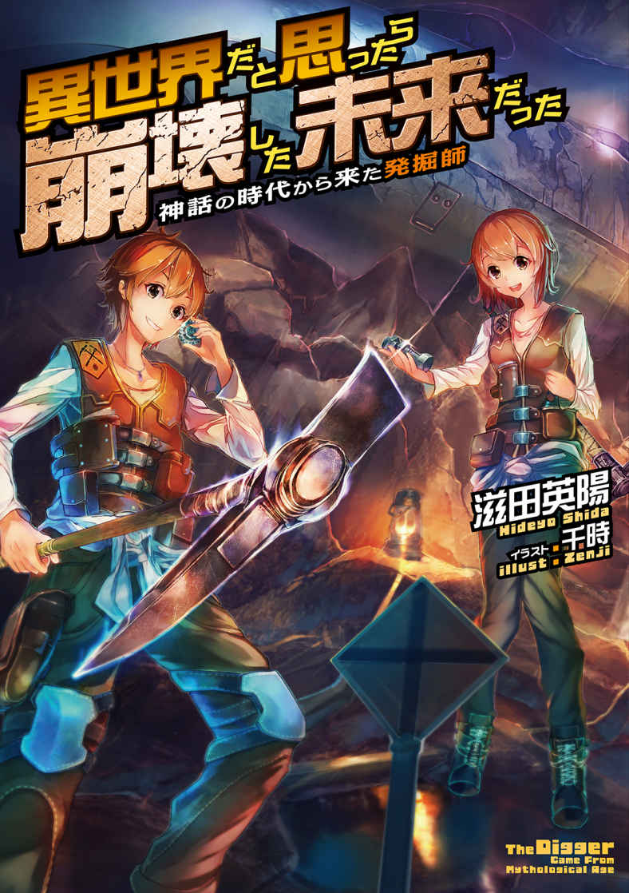
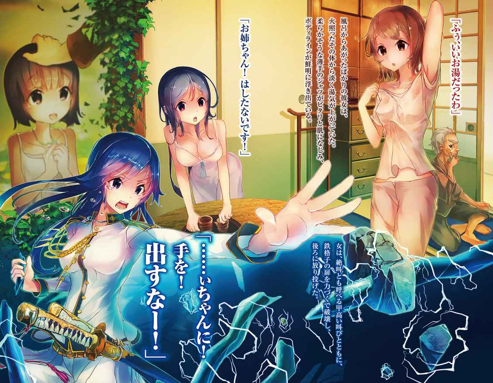
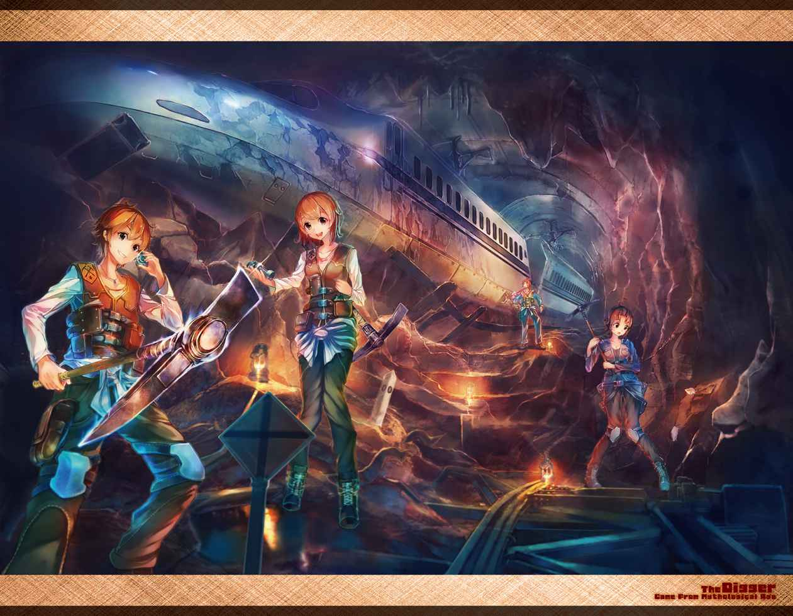
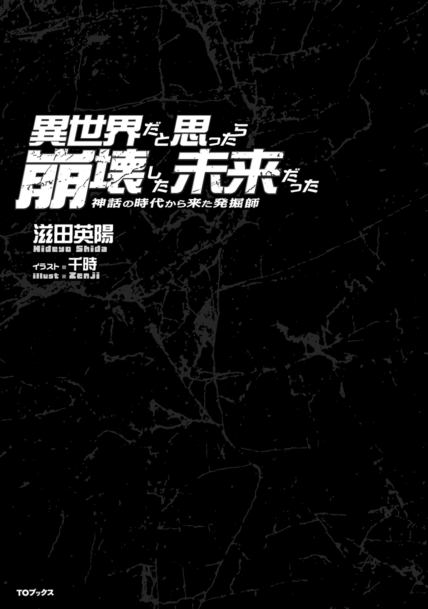
あまねく世界を司る存在同士が争っていた。
恒常的になされるその争いは、他愛ない意地の張りあいだった。
本気で相手を潰そうと考えているわけではない。
どちらが強いか、賢いか、美しいか。
ただそれだけを賭していた。
あるとき、その余波が時空の壁をすり抜け、わずかに漏れ出た。
彼らからしてみれば、それは取るに足らない極々わずかで、極々希薄な揺らぎでしかなかった。
その、わずかで希薄な揺らぎの極々一部が、さらに薄められ、世界に拡散していった。
全知の存在たる彼らには、その帰結する先が解かってしまう。
あまたの星々が存在する世界。
その中の稀有な星。
意識を有する有機生命体で満ち満ちた星。
そのひとつが地球だった。
そこに近づく争いの余波。
それは、全ての有機物に劇的な変化をもたらし得た。
守らねばならない、命を。
与えなければならない、生きていく力を。
木漏れ日すら差し込まない森の深淵。見渡すかぎりに乱立した巨木。コケむしたその根が複雑に絡み合い、俺の行く手を阻んでいた。滑り落ち、よじ登り、また滑り落ちる。遅々として進まぬ道程と、限界を超えた空腹。濃厚に漂っているはずのマイナスイオンも、今の俺には何の糧にもならない。あれからもう、何日経 ったのだろう？ 食料は尽 き、水も体力も残りわずか。あのときは、まさかこんなことになるなんて、露ほども思ってはいなかった。
◇◇◇◇
「空 君、無理言って悪いね。二週間ヨロシク頼むよ」
俺はお隣さんの高科 さん一家三人と、家というには小さな、そして恐ろしく頑丈そうなドアがあるだけの、窓のない四角い箱の前にいた。その四角い箱が、十メートルほど離れて芝のグラウンドに二つ設置してある。
高科さん一家の主、陽一 さんは、とある大手建築会社に勤めるサラリーマンだ。その建築会社が、筑波のとある研究所と共同開発した最新型のシェルター。それが四角い箱の正体だった。
陽一さん曰く、このシェルターはたとえ核爆発の直撃を受けても、どろどろに溶けた溶岩の中に放り込まれても、内部環境は快適なのだそうだ。さらに、最悪のときには内部の時間を止めてでも救出を待てるようになっているらしい。うさんくせえ、と最初は思ったが、俺には関係ないことだし、右から左へ聞き流しておいた。そんなことよりも、俺はこのバイトに誘ってくれたことの方が嬉しかった。
「いえいえ、静かなところでタダで生活できて、おまけにバイト料までもらえるなんてサイコーっす」
「ははっ、それは良かった。その荷物は受験勉強かい？」
「はい。これくらいしかできそうにないですから」
「ねぇねぇ、ママ。じゅけんべんきょうってなぁに？」
「学校に入るためのお勉強よ、一花 ちゃん」
高科さんちの一人娘、一花ちゃんは、将来俺のお嫁さんになると言ってはばからない少しおませな小学一年生。別に光源氏計画に倣おうとしたわけではないが、ときたま遊んであげているうちに俺になついてくれた。
「ふぅーん。がんばってね、ソラおにいちゃん」
よく分かっていない感じだったが、大人びるように背伸びした一花ちゃんが微笑ましい。
「一花ちゃんも頑張るんだよ」
「うん、いちかがんばる」
「よーし、一花ちゃん手を出してごらん」
「こう？」
不思議そうに両手を差し出した一花ちゃん。俺は、ポケットに入れていたとあるものを、見えないように彼女の手のひらにそっと置いた。そして、その小さな手を優しく包 むように握らせる。
「手を開けてごらん」
期待感いっぱいの瞳を、キラキラと輝かせている一花ちゃん。開かれた彼女の手のひらには、小指の先ほどの大きさで、しずく状に磨かれた紫水晶のネックレスが置かれていた。一花ちゃんの表情がぱぁあっと明るくなる。
これは、去年親戚のおじさんと鉱物採取に行ったときに拾ってきた紫水晶を、そのおじさんの研磨機で磨いたものだ。その紫水晶に銀メッキのチェーンを取りつけてネックレスにした。
宝石としての価値などほぼないが、俺はそのネックレスを気に入っていて、同じものを身につけている。それを見た一花ちゃんは、同じものを異常に欲しがっていた。先週の日曜におじさんの所へ行った際、それを思い出して作ってきたのだ。
俺がトレジャーハントにハマることになったのは、そのおじさんのおかげだったりする。幼少のころは、おじさんが話してくれる宝探しの話を夢中になって聞いていたものだ。
「うわー、きれい......いちかのおねがいきいてくれたんだね。ソラおにいちゃんとおんなじ」
「約束だったからね」
「ありがとう、ソラおにいちゃん。だぁいすき」
こぼれるような笑顔になった一花ちゃんと、微笑ましそうにその様子を見ている彼女の両親。
大学受験を控えた高校最後の夏休み、俺は高科さん一家と共に、シェルターのモニターをすることになった。期間は二週間、その間シェルターの中で生活するだけ。メディアはラジオしかなく情報端末は持ち込めないし、食い物も味気ない保存食だけだ。おまけに風呂もない。けれども、一日五千円の報酬が出るし、下着の替えとタオルはあるということだった。
そして、受験勉強をしても構わないという。一応受験生であり金欠気味の俺にとっては、願ったりかなったりという好条件のバイトを、陽一さんが紹介してくれたのだ。
ただし、生活の一部始終を記録されることになるから、恥ずかしい姿を晒さないように気をつけた方がいいだろう。
なんてことを考えながら、高科さんちの一人娘、七歳の一花ちゃんの頭を撫でてから入ったシェルターの中には、小さな折り畳み式のちゃぶ台と、寝袋が置いてあった。
ひととおり見て回れば、トイレはあるが、風呂も台所も冷蔵庫も無く、備えつけの棚には保存食と防災グッズがあるだけだ。
「ホントに殺風景だな......」
『ただ今より試験を開始します。体調に異常を感じられましたら、壁に備えつけてあるインターホンでお知らせください』
他には何があるかと、部屋を見わたしていたら、壁に備えつけられたインターホンからお姉さんの声が聞こえてきた。当然顔は分からないが、若くて瑞々しい声だ。このバイトが終わったら、ぜひともお会いして親密な関係になりたいものだ。あいにく、口説く甲斐性など持ち合わせてはいないところが口惜しいが。
「了解っす」
『それではシェルターのドアを閉めてください。頑張ってくださいね』
言われるがままにシェルターの重いドアを閉め、俺の禁欲生活がはじまりを告げた。
そして、何事も無く二週間が過ぎ去っていく。
受験勉強くらいしかすることがなかったから、時間がたつのが異常に遅く感じられた。だがそれも、明日の朝までの我慢だ。そうすれば風呂にも入れるし、やりたいこともできるようになる。そして、七万円という大金が手に入る。
正直なところを白状すると、大学受験に関してはそれほど難しい学校を受けるわけではない。今の成績でも余裕で合格できると先生からお墨付きをもらっていた。だから俺はこの七万円を使い、まだ二十日以上ある夏休みの残り期間を有意義に過ごそうと考えている。
そして残りの夏休み、このバイトで得た金を使って、トレジャーハンティングに出かけようと考えている。
有名どころで言えば、徳川埋蔵金とか、豊臣の埋蔵金だとか、結城晴朝の黄金だとか、旧日本軍の物資だとか、日本には数多くの埋蔵金伝説が存在している。有名な埋蔵金伝説を調査するだけでも何気に楽しいから困ったものだ。
現実的なところでいえば、久しぶりにおじさんと輝石や宝石の原石を採取に行ったり、砂金を取りに行ったりするのもいいかもしれない。おじさんは俺がトレジャーハントにハマるきっかけになった人だし、その知識たるや俺の及ぶところではないからだ。
宝を発見して大儲けするなどということは、まずあり得ないし期待もしていないが、トレジャーハントには夢が詰まっている。男のロマンと言ってもいいだろう。どこに行こうか、なにを探そうか、そう考えるだけで楽しくて仕方がない。
「それにしてもヒマだ。外も見えないし、勉強は飽きたし、ラジオだけじゃなぁ......。一花ちゃん泣いてないといいけど」
小学一年といえば外で遊びたい盛りだろうに......。なんてことを考えているときだった。
「ん、何だ？」
予兆も何もなく唐突に大きな縦揺れが俺を襲った。分厚い壁越しにゴウゴウと響く轟音と、収まる気配のない大きな揺れ。立つことはおろか、這うことすらできないその揺れに、俺は必死に床にへばりついていた。そして、経過した時間も分からないうちにその揺れが唐突に止まる。つけていたラジオからはシャーシャーと雑音だけが響き、部屋の明かりが薄暗くなったように感じられた。
「──痛ッ、部屋が傾いてやがる。今の揺れは何だったんだ？ 地震か？ とにかく聞いてみよう」
傾いた部屋を壁伝いに歩き、ドアの横にあるインターホンのボタンを押す。そして、係の人に連絡をとろうとしたが返事はなかった。シャー、という雑音が響いただけだった。
「回線が切れた？ 陽一さんたち大丈夫かな」
俺は急激に不安に駆られた。一刻も早く外の空気を吸いたい。外に出て無事な一花ちゃんたちを見て安心したい。考えるまでもなく、俺はシェルターのドアレバーを回していた。そして重い扉を押し開く。
「............」
それはあり得ない光景だった。俺の目に飛び込んできたのは漆黒の闇に包まれた無数の樹木。星空は木の葉に覆われて見ることができない。シェルターから漏れた光だけが、生い茂る巨木の群れを映し出していた。
揺れに襲われたのは昼過ぎだ。ラジオの時報が聞こえた後だったから間違いない。それに、ここは高科さんの会社のグラウンドだったはずだ。
「そうだッ！」
慌てて高科さんが入っているシェルターを確認しようと、俺は顔をドアの外に出して視線を横に向けた。
「無い。シェルターが......無い」
十メートル隣にあった高科さん一家のシェルターがあった場所は、今にも崩れ落ちそうな岩壁とゴロゴロとした岩石。暗くてよく見えないが、そこにシェルターが無いことだけは分かる。岩に押し潰されているわけではない。バラバラに破壊されているわけでもない。存在自体が確認できない。
「陽一さん、一花ちゃん、希美花 さん......」
笑顔でがんばると言っていた一花ちゃん。ヨロシクと申し訳なさそうにしていた陽一さん。嬉しそうに俺に撫でられている一花ちゃんを、微笑ましく見守っていた希美花さん。俺の脳裏には、その光景が走馬灯のように駆け巡った。
「............」
どうすればいいのか、どう考えればいいのか、なにも分からない。木の葉が風で擦れ合う音だけしか聞こえてこない中、何もできずに決して短くはない沈黙の時間が過ぎ去っていった。そして、絶望感と焦燥感に支配されて座りこんでいるうちに、俺はいつのまにか眠ってしまっていた。
ふと目覚めると、部屋の明かりはいつのまにか消えていて、開け放たれたドアから入り込む薄い光と新鮮な空気が、俺を優しく包み込んでいた。
眠ったからだろうが、俺は考える力を取り戻していた。まずは現状の再確認が必要だろう。あれは夢だった、なんてことは傾いた床が否定している。起き出した俺は、シェルターの出口から外を見まわした。
「森の中......だよな」
視界を遮るコケの生えた巨木の根と幹。木の葉に覆い隠されて空を見ることもできない。横を見れば崖崩れの後のように散乱する岩石と岩肌。
高科さん一家のシェルターは、やっぱり無かった。見上げれば、シェルターの後背は真新しい岩肌が露出した崖だ。森の最奥の岩山が地震で崩れたのだろうか、ここはまさにそんな場所だった。
「困ったな」
それが正直な思いだった。喪失感、憔悴感、不安、焦り。そんな感情が混ざり合った困惑だ。しかし、困ってばかりでは何も解決しない。そう思うことができた俺は、一旦部屋の中に戻り、どうすればいいか考えることにした。
現状分かっていることといえば、大きな揺れの後にシェルターの位置が移動していたこと。ラジオが受信できないこと。高科さん一家のシェルターが消えていたこと。ここが深い森の中であること。いきなり昼から夜になっていたこと。
この状況を鑑み、まず脳裏に浮かんだのは、異世界転移という非現実的な現象だった。もしかしたら、心の奥底にそんな願望があったのかもしれない。中二病だと笑ってくれても構わない。アニメや小説に毒されすぎだとバカにされても構わない。
しかし、気がつけば森の中にいて、ラジオの電波も届かず、昼夜が逆転し、隣にあったシェルターが跡形もなく消えているという現実。それらを突きつけられれば、異世界転移くらいしか思い浮かばなかった。
「異世界転移？ んなバカな。でも、もしそうだとしたら何をすべきか......」
このままここにいて、誰かが来るのを待つという選択肢はあり得ない。水はまだ数日分残っているが、食料がほとんどない。乾パンがひと缶と飴玉が五つだ。節約しても二日でなくなるだろう。だとしたら、とりあえずここを拠点にして、森で食料を調達してくるというのはどうだろうか？ これは一考の価値があるだろう。シェルターという雨風を凌 げる快適な寝床は捨てがたい。
しかし、食料が調達できなかったら？ シェルターから見える森の木々は巨大な針葉樹ばかりだ。そう簡単に食料が調達できるとは考えにくい。食べられる果実が生りそうな木なんて、まったく見えないのだから。
だとすれば魚はどうだろう？ 動物を狩る方法なんて知らないし、その道具も無い。だけど、川を見つけられれば魚なら捕まえられるかもしれないし、水場には食えるものがありそうな気がする。
「それに、食い物だけじゃないよな」
今の俺は二週間も風呂に入っていないのだ。体中が痒いし臭いも気になるし、髪の毛なんてギットギトのベッタベタだ。もし川があれば、頭や体や着ているものが洗えるのは確かだ。幸 い、シェルターには着替え用のトランクスとＴシャツが段ボール箱にひと箱分あったからまだ数日分の替えがあるが、この不快感はいかんともしがたいのだ。
さらに、川を見つけられれば当然水も手に入るし、下っていけば人に会えるかもしれない。ここが異世界だったとしても、友好的な人に会えるかどうかなんて分からない。が、どのみちこんな所で一人で生きていくなんてできないだろう。
「そうだ！ ここがもし異世界なら......」
ここまで考えて、俺はある可能性に思い至った。それは異世界の定番、魔法だ。とりとめもなくこんなことを考えてしまう俺の頭は、もしかしないでも中二病に侵されているのだろう。
しかし、ここがもし異世界ならば、魔法が使えても不思議ではない。体や運動能力も強化されている可能性がある。こんな状況に置かれて、発想が飛躍しすぎていないか？ なんてことは考えるだけ無駄、中二病上等だ。なにごとも前向きに考えるポジティブシンキングこそが俺の信条なのだから。そうとなれば話は早い。
「早速実験だ」
異世界ファンタジーの定番、魔法が使える可能性に思い至った、いや、思いたかった俺は、はやる気持ちを抑えてシェルターの外に出た。
魔法世界は、健全な男子学生なら誰もが憧れる定番設定だろう。断じて異論はみとめない。今、とんでもない事態に巻き込まれていることは百も承知だが、魔法が使えるのなら何とでもなりそうな気がする。そう思った俺は、転がっている岩石めがけて試してみることにした。いや、試さずにはいられなかった。
右手人差し指を岩に向かって突き出し、適当な火の呪文を唱える。岩を標的にしたのは、火事にでもなってしまったら大変だ、という心優しい自然への配慮だ。決して、俺が小心者だからというわけではない。
そして魔法といえばイメージが大事だ。座右の書としている小説にもそう書いてあった。俺がイメージしたのは、その中でも初歩的な魔法。バスケットボール大の火の玉だ。
「顕現せよ。ファイアボール！」
「............」
しかし辺りには、ただ静寂だけが支配していた。岩に向けて指を突き出し、変なポーズで固まっている俺だけがいた。この光景を知り合いにでも見られたら、いや、知り合いでなくても恥ずかしくて身じろぎすることだろう。
しかし、幸いなことにここには俺だけしかいない。魔法は不発に終わった。不発には終わったが、後ろ向きなネガティブ思考には決して陥らない。もう一つの可能性がまだ俺には残っているのだから。
「ならば」
そう考えた俺は、勢いよく助走をつけ、思い切り飛び上がって岩に蹴りを敢行することにした。半分ヤケであることは否定しない。大事なのは蹴り足を鉄のように強化するイメージだ。そして、その鋼鉄の足で眼前にせまった岩を気合いとともに蹴り砕く。
「チェェェストォォ！」
「............」
岩の前にうずくまった俺は、右足首を押さえて苦悶の表情をうかべていた。
「──痛ッ」
考えが甘い、甘すぎた。いや、当然の結果だろうと心の中でひとりツッコミしてみたが、けっきょく俺は、受け入れ難い状況に陥って、性急な行動しかとれなかっただけだった。もちろん結果は、魔法も身体強化もかんばしい成果が得られなかった。ただ、言いようのない恥ずかしさと、痛みだけが心と右足首に残っていた。
「発動の仕方が悪いのか？ それとも体がこの世界になじんでいないとか......」
などなど、未練がましい理由は考えつくが、さすがにそこまで甘い希望的観測は持たない方がいいだろう。
「この世界で生き抜くためにも、もっと現実的に考えなくちゃダメだ。この程度の失敗で俺はあきらめない！」
シェルターの中に戻った俺は、あれは若気の至りだったのだと甘い考えは切り捨て、現実に目を向けなおすことにした。まだ少しだけ魔法に心残りはあるが、いや、かなりあることは否定しないが、今は目の前の現実に向き合おう。
そうとなれば第一優先は食料と水の確保。そのためには森の中を探索して水場を探さなくてはならない。次に、外敵から身を守ること。寝床を確保すること。残りの食糧を考えると、あまり悠長に考える余裕はない。遅くとも明日の朝にはシェルターを出よう。そう考えた俺は、シェルターにある利用できそうなもの、すなわち持ち出す物を選定することにした。
「たしか、防災セットがあったはずだよな......あったあった。これだ」
シェルターに常備されていた防災セットの中身を取り出し、その他生活用品とあわせて床に広げた。
持って行ける物は、勉強用具を持ち込んだリュックに入る量でなくてはならない。ならばと、熟考の末選んだ物は、新品のトランクスとＴシャツを各三枚、飲み水が入った五百ミリリットルのペットボトル四本、十徳ナイフ、小さな懐中電灯、ライター、ハサミ、ソーイングセット、十メートルほどのロープ、残った乾パンと飴玉だった。武器になりそうなものが何もないのが心もとないが、そんなことを理由にじっとしているわけにはいかない。
「よしっ、これでいいだろう。あとは......」
持ち出す物をリュックに詰めた。そして、寝袋をハサミで分解し、ソーイングセットを使って即席の防寒着も作った。防寒着は不格好だが、もし、森の中で夜を明かさなければならなくなったときのことを考えると、ぜひとも欲しかった。さらに、Ｔシャツとデニムのズボンだけの薄着では、木の枝とかで怪我をしそうだとも考えた。どのみち寝袋はかさばるので持っていけないから、防寒着の材料にしたのだ。ラジオも持っていこうかと考えたが、水を優先することにした。
夜中までかかってシェルターを出る準備を終えた俺は、無残な姿になった寝袋の残りかすをかき集め、その上で一夜を明かした。そして翌朝、俺は意を決して森の中へと足を踏み出した。
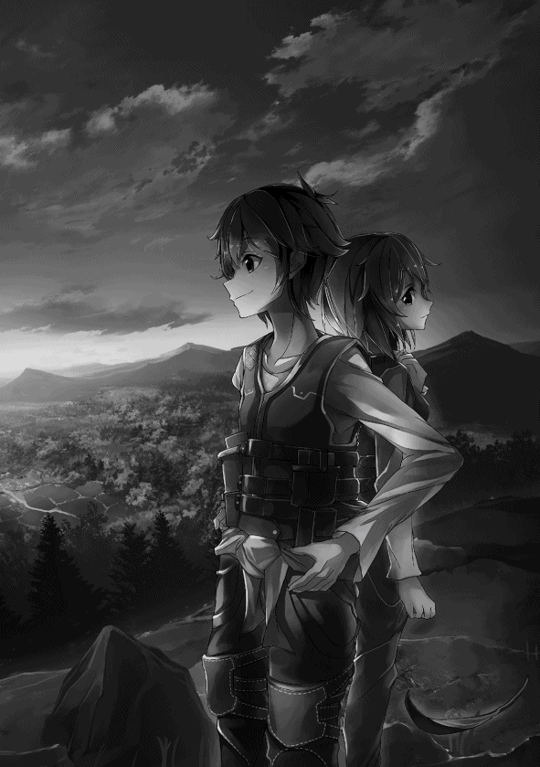
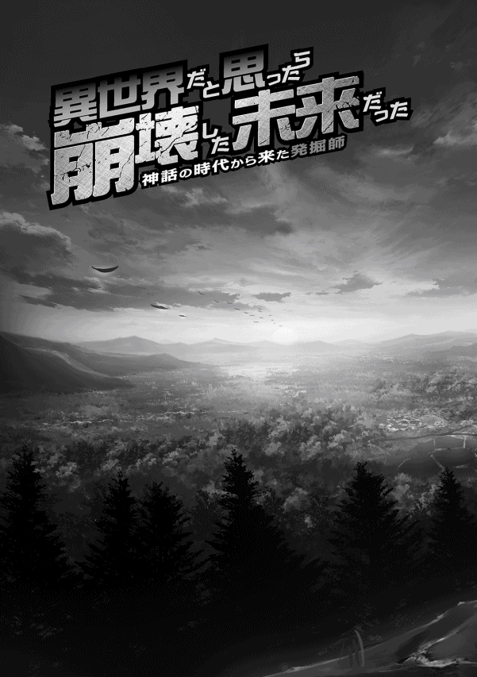
◇◇◇◇
空がシェルターの中で大きな揺れに襲われ、外の異変に衝撃を受けていたころ、富士大公国と呼ばれる新興国の宮殿最奥で、国を治める大公とその家族が無事を確かめあっていた。
「お父様、お母様！」
「おお、無事だったか」
「怪我は無いようですね。よかった」
「太陽たちは？」
「無事です。もう寝ましたよ」
「良かった......」
見目麗しい二十歳前の姫君が、大公夫妻である両親の寝所に駆け込んだ一幕である。
しかし、会話からは親子と思われる姫君と大公夫妻の関係には、一目疑問を抱かざるを得なかった。それは、姫君にお父様お母様と呼ばれた二人の見た目だった。父親と思われる大公は未だ三十路に突入しているとは思えない容貌であり、その夫人に至ってはまだ二十代半ばかと思われる若さだった。どう見ても二十歳前の娘がいるようには見えない。
「希美ちゃん、一花、お前たちはもう休みなさい。これから私は家臣たちに指示を出さなければならない」
「いえ、私も部下に指示を出す必要がありますから」
◇◇◇◇
俺が森をさまよいはじめて、すでに丸四日が経過していた。景色は四日前から何も変わっておらず、コケむした巨木の幹と張り巡らされた大きな根で、獣道らしきものさえ確認できない。頭上高くには鬱蒼 と木の葉が覆い、陽の光を見ることもいまだかなわない。
シェルターに引き返すか返さないか、判断の分岐点は三日目の朝だった。森の中を歩きはじめて丸二日が経過した三日目の早朝、俺は引き返さないことを決断していた。限界まで切り詰めてきた食料の残りは二日分。このままシェルターに戻れたとしても、そこで食料が尽き、生きていく手立てが無くなってしまう。
「もう、進むしかないよな」
残りの二日で食料を確保することに賭けた俺は、森の中をさまよい続けた。しかし、五日目になっても一向に景色は変化を見せず、危機的状況に俺は立たされている。
四日間と少しの間 、森の中を歩き続け、何も収穫が無かったわけではない。
「朽ちた動物の骨とか、虫の死骸とかは何度か見かけたんだよな。この森に虫とか動物が生息していることは間違いないはずだ」
しかも、ある程度の大きさの動物がこの森には生息している。
ならば、近くに水場があるはずだ。水場があれば食料や飲み水が確保できる可能性が高い。その可能性を糧に、俺は歩き続けた。しかし、すでに食料は尽き、水ももうない。疲労で思うように足が進まなくなってきている。
けれども、歩みを止めることはできない。何としても水場を見つけなければ。その思いで俺は歩き続けている。そして、歩き続ける間、とある疑問を俺は抱いていた。
それは、生きている虫や動物をいまだに見ていないということだった。鳴き声さえも聞いていない。動物の骨や虫の死骸は何度も見かけているにもかかわらずだ。
「どう考えてもおかしいよな、おかしすぎるだろ」
そして、さらにもう一つの疑問が生じていた。顔や手足に負った擦り傷や切り傷が、一晩眠ると跡形もなく消えているのだ。これはこれで有 り難 いことなのだが、その理由が分からない。異世界に転移した恩恵だろうか......。
「いや、今はそんなことより先に進むことだけを考えよう」
俺は余計なことを考えることを止め、歩き続けた。
そして五日目が終わり、六日目の朝が来た。限界を超えた空腹にたたき起こされた俺は、木の幹や根に密集しているコケを集め、それを絞って水滴を口に含ませる。そしてそれを何度も繰り返した。腹を下すとか病気になるかも、なんてことは気にする余裕がない。
「何でもいいから腹にたまるものが食いたい......」
とにかく歩いて食べられるものか水場を探さなければ。その思いで俺は立ち上がり、再び歩きはじめた。幸いなことに、五日目の終わりころから森の中は巨木の密度が薄くなって、広葉樹が混ざりはじめている。いまだに生きている動物や虫は見かけないが、森の終わりが近いのかもしれない。そう考えて俺は歩き続けた。
それでもその日は、水場も食べられそうなものも見つけることはできなかった。そして迎 えた七日目。とうとう俺は歩くことすらできなくなってしまった。
「畜生！ なんでこんな目に遭わなきゃならないんだ......」
森の中で崩れ落ちるように倒れた俺は、空腹と喉の渇き、そして極限にまで達した疲労感で意識を手放した。
◇◇◇◇
「──ちゃん、お爺ちゃん。気がついたみたいだよ」
若い女の声だった。もうろうとした意識の上からでもはっきりと分かる、甲高くて心地よい声だ。
気がつけば、俺は薄暗い部屋の板張りの上に寝かされていた。そして、ゴロンと顔を横に向けると、一段下の土間には囲炉裏のように石に囲まれたところに鍋 がかけられ、なにやら食欲をそそる匂いが漂っている。ガラスも何もない木窓からは星空が覗き、首だけを回して反対側を見れば、少し離れたところから興味深げに俺を覗き込む少女と、板張りにあぐらをかいている老人が目に入った。
「......水、水を」
やっとの思いで声を絞り出した俺に、少しして少女が一杯の水を差し出してくれた。けれども、少女が差し出す茶碗に向けて伸ばした俺の右手は、届くことなくそのまま床に崩れ落ちた。もういちど腕を伸ばそうとするが力が入らない。
「飲ませてやりなさい」
「うん」
老人にうながされた少女は、恐る恐る俺の横に両膝を突いて座ると、俺の頭を左手で抱え上げ、水の入った厚手の茶碗を口に近づけてくれた。俺はされるがままにその水を飲み干していた。
「まだ飲まれますか？」
「おねがい......します」
もう一杯の水を飲ませてもらった俺は、少し時間を置いて鍋からすくったスープも飲ませてもらった。そのスープはみそ味で、豚汁 のような味がしたが、あまりの空腹に胃が受け付けなかったのか、少ししか飲むことができなかった。
しばらくして、まだ横たわったままだったが、ようやく喉の渇きと極限の空腹から解放された俺に、老人が話しかけてきた。
「落ち着いたようじゃな。坊主、話すことはできるか？」
「......はい」
「いきなりじゃが、お前さん、どこから来なさった」
「......その前にすこし良いですか？」
「ああ、構わんよ」
「俺はどうしてここにいるんですか？ 貴方が俺を運んでくれたのですか？」
「お前さんは森の中で行き倒れとった。それをワシが見つけてここまで運んだ......ということになるがのう。見たところ丸腰だったが、そんな軽装でなぜ森で行き倒れた？ そしてどこから来た？」
「まずはお礼を言わせてください。助けてくださってありがとうございます。そして、俺がどこから来たかというのは少し答えにくいんですが、俺が倒れていた森のずっと奥の方、コケが生えた大きな木が密集している森です」
「なんとまぁ、あの原始の森から来なさったか。しかし、あそこに人は住めんよ」
......あれ？ なんで日本語が通じるんだ？
老人と少女が話した言葉も日本語だった。口の動きも発音と同調している。ということは、もしかしてココ、日本なのか？
しかし、老人と少女の恰好はどう見ても現代の日本人ではなかった。二人の見た目はどう見ても日本人なのだが......。俺は異世界転移に巻き込まれたのではなくて、過去にタイムスリップでもしたのだろうか？
「......つかぬ事を伺いますが、ここは日本ですよね？」
「お前さんは何を言っとる？ たしかにここは日本と呼ばれとったらしいが」
「らしい？」
「ここが日本と呼ばれとったのは遥か昔の神話の時代じゃ。ここは富士の国。大公様が治める富士大公国の山奥じゃよ」
「............」
ここまで老人の話を聞いて、俺はとある可能性に思いあたった。それは、陽一さんが話していたシェルターの仕様だ。俺が入っていたシェルターは脱出が不可能になった場合、時間を停止して救助を待つ仕様になっていると陽一さんは言っていた。時間を止める技術が開発されたなんて聞いたこともなかったので、てっきり冗談だと思っていたが......。もし本当だとすれば、ここは俺が暮らしていた日本の遥か未来なのだろうか。
しかし、二人の恰好はどう見ても昭和の前半か、それ以前だ......。服の見た目に違和感はあるが。
「ふむ......お前さんはどのあたりに住んどったんじゃ？」
「......豊田ですが」
「豊田か、あそこは確か鉱山だったはずじゃが......。お前さんが抗夫だとは考えにくいのう。その綺麗な手はツルハシはおろかクワも持ったことが無かろう」
豊田が鉱山？ ありえない。豊田は自動車の街だぞ。しかし、老人が言うようにココが日本の遥か未来だとしたら......。
分からないことだらけで考えることを放棄してしまいたくなるが、聞けることは聞いておきたい。そう考えた俺は、老人にこの時代のことを聞いていった。
老人の名前は鴻ノ江 ヒカルといって、猟師らしい。イメージと名前がまったく合っていないが、若いころは女と間違えられるほどの美少年だったというのが、彼の言い分だ。少女は鴻ノ江遥 といって、健康的で活発そうな顔立ちをした栗色の髪の美少女だった。
「──ところで、どうして俺は獣を見かけなかったんでしょうか？」
「まぁ待て、お前さんの話をもし信じるなら、神話の時代から迷い込んだことくらいしか考えられんかのう......」
そう言ってヒカル爺は俺の問いかけには答えずに考え込んでしまった。
まあ、俺の話が荒唐無稽に聞こえるのは当然だろう。俺でもこんな話を聞かされれば簡単には信じられないと思う。でも、信じてもらえた方がいいに決まっている。ならどうすればいいか？
「俺の話を今すぐ信じてほしいとは言いません。ですが、俺もこんな目に遭 ってどうしていいかよく分からないんです。だから話だけでも聞いてください」
「分かった。話してみぃ」
「俺が生まれたところは──」
俺はできるだけ分かりやすくかみ砕いて、二十一世紀の日本を説明していった。
「──ということなんです」
「シェルターのう......まぁ、神話の時代にならそんな代物があってもおかしくはないのかもしれんが」
「今は信じてくれなくても構いません。どのみち、今の俺には何もできませんから」
「まぁ、お前さんの話しぶりからすると、あながち嘘とも言い切れんしの。ところで、さっき何か聞きかけておったろう」
「はい。どうして俺は森の中で獣を見かけなかったんでしょうか？」
「お前さんが神話の時代から迷い込んだ話が本当なら分からんかもしれんが、お前さんが今も垂れ流しとる〝気〟が原因じゃろうな」
「キ？」
ヒカル爺曰く、〝気〟とは生きとし生けるもの全てが持っているモノらしい。人間の場合、普段は抑え込んでいて表にはそう多く流れ出てくることはないが、コントロールの効かない赤子は、今の俺のように〝気〟を垂れ流しているそうだ。
俺の場合、その垂れ流している〝気〟の量が桁違いに多いらしい。そして、獣や虫などは、俺の〝気〟を警戒して近づかなかったのだろうということだった。
「あ、あの、空さんはお幾 つなんですか？」
ヒカル爺との話が一段落したとき、興味深そうに歳を聞いてきた遥さんに、俺はどう答えようか迷った。ここが遥か未来の日本だとすれば、本当の俺の年齢が分からないからだ。千年を超えているのだろうか？ もしかしたら一万年以上かもしれない。しかし、止まっていた時間はカウントしなくていいよなと、シェルターに入ったときの年齢を答えることにした。
「十八になります」
「......ずいぶん大人びてるんですね。てっきり四十歳くらいだと思ってました」
「............？」
このとき俺は、嫌な汗が肌を伝わるのを感じていた。四十歳？ シェルターの中でそんなに老けてしまったのだろうか......。
「あの、鏡を貸してもらえませんか」
「鏡ですか？」
遥さんは不思議そうにそう言って奥に行き、小さな手鏡を俺に渡してくれた。まだ上手く腕を上げることはできなかったが、俺は震える手で手鏡を顔の前に持ち上げ、自分の顔を見た。そして、そこにはげっそりと頬がコケてはいるが、今までと変わらない若さの俺の顔が映っていた。そうなると、遥さんはどうして俺を四十歳だと思ったのだろう？
「あの、俺ってそんなに老けて見えますか？」
「えっ？ 全然老けては見えませんよ」
何かが間違っている気がする。会話が行き違いになっている。十八と言った俺が遥さんには四十に見えて、それでも老けていないという。そして、大人びているという言い方は、まだ下の毛も生えそろっていない少年少女に使われる言葉じゃないだろうか。だとすれば......。
「あの、気を悪くしたらゴメン。遥さんはお幾つなんですか？」
「わたしはぴっちぴちの三十二歳ですよ」
三十二歳が〝ぴっちぴち〟だそうな。聞かなくなって久しい表現だが、時代が違えばおかしくはないのだろう。それはいいとして、遥さんの外見はどう見ても十六、七だ。それが三十二でぴっちぴちなのだから、間違っているのは俺の常識の方だろう。そしてその考えが正しいなら......。
「あの、すみません。ヒカルさんはお幾つなんでしょうか」
「ん？ ワシの齢か？ たしか......今年で二百六十じゃったかのう」
二百六十歳！ これで謎が解けた。この時代の人の寿命は、俺より何倍も長いのだ。そうとしか考えられない。
そして、これだけの状況を突きつけられた俺は、ここが少なくとも二十一世紀の日本ではないことを受け入れることができた。おそらく、というか間違いなくここは遥か未来の日本なのだろう。
そうとなれば、一番気になるのはヒカル爺が言った〝気〟の存在だ。どこぞの格闘漫画のように気功波だとか、空を飛んだりとかできるのだろうか？ あるいは、西洋ファンタジーのような魔法が使えるのだろうか？ ヒカル爺曰く、俺が無意識に垂れ流している〝気〟の量は、桁違いに多いらしいから、どこぞの転生チートみたいな無双ができるのかもしれない。
などなど、妄想を膨らました俺だったが、上体を起こすことすらできないほどに体力を失っている今、会話さえ辛くなってきた。
「──これくらいにしておこうかのぅ。今日は泊まっていくがええじゃろ。寝具はコレしかないがのぅ」
「ありがとう、ございます」
ヒカル爺たちからすれば、いくら弱っているからとはいえ、素性の知れない俺のような男を、無条件で泊めてくれるのはありがたかった。今まで寝かされていた場所に柔らかい毛皮の寝床を用意してもらい、その上で俺は眠りについたのだった。
◇◇◇◇
猟師をやっているというヒカル爺に、行き倒れていたところを助けられて三日目、ようやく俺は歩けるまでに体力を回復していた。結局、ろくに歩くこともできなかった俺を気遣ってだろうが、ありがたいことにヒカル爺は、元気になるまでこの山小屋に居てもいいと言ってくれた。
俺はてっきり、ここがヒカル爺と遥さんの家だと思い込んでいた。しかしここは、春から秋にかけて狩りをするために利用する山小屋だった。俺は居間で寝起きをしているが、この山小屋には、ヒカル爺と遥さんの寝室はあるし、風呂場もあるから勘違いしていたのだ。
そして、助けられて二週間が過ぎた今でも、俺はヒカル爺の山小屋に厄介になっている。歩く体力を取り戻した三日目以降、この山小屋で遥さんの手伝いをしながら共に生活をしていたわけなのだが。その間、この時代の常識を俺があまりにも知らな過ぎたこと。そして、日増しに強く、そして多くなっていく俺の体から溢 れ出す〝気〟を感じたヒカル爺が、このまま街に出ていくのは問題があると言って、山小屋に留まるようにと気遣ってくれた。涙が出るほど俺は感謝している。
そんなこともあって、俺はこの二週間で完全に元の体力を取り戻し、それ〝以上〟に元気になっていた。大怪我 をしたわけではないので、二週間もあれば元気になるのは当然の結果だろうが、ここまで元気になったのは、今も俺の体の中に渦巻いている〝気〟のおかげだろう。もちろん、ヒカル爺や遥さんが助けてくれなければ、俺がのたれ死んでいたことは確実だったはずだ。
そして最近では、ヒカル爺とも遥さんとも気軽に与太話ができるほどには打ち解けていた。今では二人をヒカル爺、遥と俺は呼んでいるし、ヒカル爺も遥も、俺のことを小僧とかお前さんとか空と呼び捨てにしている。
「だいぶ上手くなってきたね。空」
「うん、遥のおかげだよ」
「でも、まだまだかなり漏れてるから頑張らないとね」
「仰せのままに、遥大先生。でも、漏れてるってなんかエロい」
「もうっ、からかわないでっ、空のスケベッ！」
俺は今、山小屋の裏手で遥に〝気〟の扱いの手ほどきを受けていた。
〝気〟については、ヒカル爺にその概略を教えてもらっていた。それは大気中や地中、生物に満ちている存在であり、有機物には〝気〟を溜 め込む性質があるらしい。無機物、例えばガラスとか金属は〝気〟をためることができないが、金属には〝気〟をよく通す性質があるのだとか。
さらに、〝気〟と対極の関係にある〝妖気〟なるものが存在していて、〝妖気〟にも〝気〟と似た性質があるが、〝気〟が守る力であるのに対して、〝妖気〟は破壊する力らしい。けれども、〝気〟を使って物を壊すこともできるので、俺にはその違いが良く分からなかった。が、ヒカル爺曰く、〝気〟は善であり、〝妖気〟は悪だと覚えておけばいいそうだ。
「それにしてもつくづく思うわ。空のそのバカげた〝気〟の量は何なの？」
「そんなに多い？」
「多いってもんじゃないわよ。わたしの十倍以上、量も強さもね。わたしもお爺さんも多い方なんだから」
「うーん、そう言われても俺には実感が無いから分からないよ。遥もヒカル爺も全然体の外に〝気〟を出してないから」
「わたしたちも少しは出てるんだよ。早く、それが感じられるようにならないとね」
ようやく自分の〝気〟を感じ取れるようになった俺には、僅かしか漏れ出ていないという遥のそれを感じ取るなどできようはずがなかった。けれども、自分の〝気〟を感じ取れるようになっただけでも、今の俺には嬉しいことだった。
そして今、俺は〝気〟を使って薪を割る特訓をしている。太さ十五センチほどの乾燥した薪を両手で持ち上げ、手のひらから〝気〟を流し込んで二つに引き裂く。〝気〟の扱いに慣れた遥は、指で薪に触れた瞬間に、綺麗に四等分してしまうほどだから、俺との差は歴然だ。
「よしっ、割れたぞ！」
「ようやく思い通りに割れるようになったね」
遥が言うとおり俺もようやく、二等分にだが薪を割ることができるようになった。
「でも、遥に比べるとまだまだだよな」
「卑屈にならない。着実に進歩してるんだから」
「ありがとう。そう言ってくれると嬉しいよ」
どうして〝気〟を使って薪を割っているのかと言えば、働かざるもの食うべからずということで、訓練と遥の手伝いを両立しているのだ。
しかし、両立しているとはいっても、遥がやれば五分で終わる仕事を、二時間以上かけてやっているのだから、両立とは言えないかもしれない。しかも、遥は俺の訓練に付き合ってくれているわけで、はっきり言って仕事の邪魔をしていると言った方がいいだろう。
そんなこんなで、手伝っているのか邪魔をしているのか分からないような状態が、さらに十日ほど過ぎたころ、ようやく俺の体から漏れ出ていた〝気〟の量が、遥曰く人としてはおかしくない程度には減ってきたらしい。しかも、〝気〟を使ってできるようになったことは、薪を割る程度の事だけではなかった。
信じられないくらい高くジャンプできるようになったし、足も速くなった。グーパンチで岩が砕けるし、それをやっても痛いとは感じない。さらに、水汲みやら石運びやら薪となる木の伐採 や切断など、雑用をこなしていくうちになんとなくコツを覚え、今では手を触れることなく物を動かしたりもできるようになったのだ。
もはや、完全にアニメや漫画や小説の世界だ。実に喜ばしいではないか。はじめて小さな石ころが動いたときとか、それはもう嬉しくなって遥に抱きついてしまい、頬にもみじを作ったのは今となってはいい思い出だ。
「だいぶ扱えるようになってきたようじゃの」
「おかげさまで......うっ、うぇっぷ」
「ほほほっ、誰でも最初はそんなもんじゃ。早う慣れんさい」
山小屋の裏にある井戸のそばで、狩りから帰ってきたヒカル爺に獣の捌 き方を習いながら、俺は特有の臭いや吐き気と戦っていた。
今日ヒカル爺がしとめてきた獣は、体長三メートルはあろうかという大鹿だった。重さにして一トン近くありそうなその大鹿を、ヒカル爺はこともなげに肩に担いできたのだ。これも〝気〟のなせる技であり、行き倒れた俺を担ぐことくらい、彼にはどれほどのことでもなかったのだろう。
「ふぅ、それにしてもスゴイっすね。こんな大きな鹿が狩れるなんて。俺もだいぶ〝気〟が扱えるようになってきたから、そろそろ狩りに連れて行ってくださいよ」
「ほーほほほっ、まだまだじゃよ。今の小僧では連れて行けんわ。狩りのときは完全に〝気〟と気配を消さねばならんからのう」
「まだまだですか......」
「そう、まだまだだよ。でも、今の空だったら魚釣りくらいはできるんじゃない？」
いつのまにか俺たちの様子を見に来ていた遥の提案に、ヒカル爺が考え込むそぶりを見せた。
「ふむ、釣りか......いいかもしれんのぅ」
ヒカル爺に〝気〟の扱いがまだまだと言われ、落ち込みかけていた俺に、遥が救いの手を差し伸べてくれた。しかもそれが魚釣りと聞いて、俺のテンションはすでにＭＡＸだ。
もともと俺はアウトドア生活に憧れがあったのだが、それは憧れがあっただけであって、実際にキャンプや山菜採りなどをした経験は少ない。鉱物採取によく山に入っていたが、それも日帰りだった。
そんな俺だが、中学生のころまでは親父に連れられて釣りにはよく行ったものだ。高校生になって釣りに行くことは無くなってしまったが、嫌いになったわけではない。親父が仕事で忙しくなり、俺の方もなんやかやで行けてはいなかっただけなのだ。モバイル端末と戯れることができない今では、釣りは格好のレクリエーションだ。
「釣りっ！ 行きましょう。すぐ行きましょう」
「まぁまぁ、そう慌てなさんな。今日はもう遅い。それに、捌いた獲物を処理せにゃならん。小僧はその肉を持ってワシについて来い。遥は夕飯の支度を頼む」
やっとのことで捌き終えた鹿肉と毛皮を二人で背負い、保存用の小屋に運び込んだ。 保存用とはいっても、保冷設備などという科学的なものは存在しておらず、ただ風通しが良くて陽が当たらないというだけの小屋だった。季節は夏真っ盛りの今、そんなところに生肉を保存しておけるのだろうか？
「この蒸し暑い夏にこんなところで保存できるんすか？ 腐るんじゃ」
「ほーっほっほ、肉が内包している〝気〟のおかげでな、腐らずに熟成するんじゃ」
なんとも信じがたいことだが、〝気〟というファンタジー要素があるのなら、それも納得するしかないのだろう。
さておき、俺とヒカル爺は、さっさと処理を済ませて井戸へと向かい、軽く水浴びをして汚れと臭いを落とした。風呂場は別にあるが、さすがに風呂場で血で汚れた体を洗うことはできない。ヒカル爺は決して筋肉ムキムキの肉ダルマではないが、老人とは思えないほどに引き締まった体つきをしていたのが印象的だった。
「ふぅ、冷たいけどサッパリしたぁ」
体を拭いてサッパリした俺たちは、居間で体を休めて夕食ができ上がるのを待った。今日は久々に大きな獲物がとれたのでご馳走だ。この山小屋に来てすでに一か月ほどたつが、ヒカル爺が大きな獲物を狩ってきたのは今日で二回目だった。前回も大鹿だったが、そのときに食べさせてもらった料理がことのほか美味かった。俺は料理ができ上がるのを今か今かと心待ちにしているところだ。
さほど待つことなく、土間の囲炉裏でグツグツと湯気を上げる鍋から、食欲をそそる匂いが漂ってきた。
「のう、空よ。遥とはもう、やることやったんか？」
「んブッ！」
いきなり耳元でそんなことをささやかれた俺は、吹き出しそうになるのを必死にこらえて顔を上気させた。
「そっ、そんなことあるわけないじゃないですか！」
「ちっ、ツマらんのう。ワシが言うのもなんじゃが、アレは良い女じゃよ」
「遥にその気があるかも分からないのに」
「何を悠長なこと言っとるか、こんの臆病モンがぁ。遥はお前さんを悪うは思うておらんよ。見てて分からんか？ 一気に押し倒すくらいでちょうどいいんじゃよ」
小学校低学年のとき以来、女子と手すらつないだことがない純情な俺に、遥を押し倒してモノにするなんてできるわけがない。確かに遥は美人だし可愛いし、エロい体つきだし、押し倒してあんなことやこんなことをしてみたい欲求はある。しかし、俺にそんなことをする度胸はない。
「ごはん炊けたよー」
ホカホカに炊き上がって湯気を上げているご飯が入った木桶 を抱え、土間の炊事場から出てきた遥が俺たち二人に問いかけてきた。
「何ヒソヒソ話してたの？」
キョトンと小首をかしげた遥は、確かに可愛かった。ヒカル爺から余計なことを言われて、変に彼女を意識していただけに、その可愛らしさに俺は顔が熱くなるのを感じていた。
「なっ、何でもない。何でもない。それより、早く夕飯にしよう。夕飯。美味そうな匂いがしてもう我慢できない」
「怪しいわねぇ。ねえ、おじいちゃんと何を話してたの？」
「な、何も怪しい話なんかしてないとも。全然アヤシクナイヨ。ゼンゼン」
「まぁいいわ」
ジト目で睨まれはしたが、夕飯にかこつけ、なんとか誤魔化した俺は、いや、誤魔化しきれなかったのかもしれないが、ようやく大鹿のモツ煮込み鍋にありつけたのだった。
翌日、俺はヒカル爺と二人で、山中の湖に早朝から足を運んでいた。到着した湖は周囲を濃緑の山に囲まれていて、対岸が微かにしか見えない大きさだった。青く透き通った水中には、沈んだ木々や湖底の岩石が見えていて、その水深は深かった。大型の魚も泳いでおり、否 が応でも気分は盛り上がってくる。釣果を期待せずにはいられない。そんな俺に、ヒカル爺が耳元でボソッとつぶやいた。
「いいか空、お前さんの目標は一匹でもいいから魚を釣り上げることじゃ。まぁ、釣れんでも飯は食わしてやるから安心せい」
釣りには自信があった俺は、ヒカル爺の言った目標がスゴク簡単なことにこのときは思えた。
「そんな簡単なことが目標？」
「簡単なことかどうかはのぅ、やってみてからのお楽しみじゃて」
四メートルほどの細い竹竿に、絹糸をより合わせた糸。そして竿より一メートルほど長い糸の先には、赤銅色の返しの無い釣り針が結んである。餌はその辺を掘って捕まえたミミズだ。人がほとんど入らないこんな山奥で、スレてはいないだろう魚が釣れないわけがない。そう思っていた。事実、ヒカル爺は第一投目で四十センチほどのマスを釣り上げている。
「ホレ、お前さんも早うやらんか」
急かされた俺は、釣り針にミミズをつけ、ヒカル爺から二十メートルほど離れたポイントに釣り糸を垂らした。そして。
「来た！」
僅か十数秒で来たアタリに、俺は手首のスナップを利かせて合わせを行う。そして、グイと竿が引き絞られたと思った瞬間。
「アレ？」
勢いよく引き上げられた竿からは、あっけなく手ごたえが無くなり、俺は地べたに尻餅をついていた。もちろん魚は釣れておらず、釣り針にエサは残っていない。そして、釣り針がまっすぐに伸びきってしまっていたのだ。
手応え的には釣り針が伸びきるような引きではなかった。手のひらサイズの小魚が釣れたときと変わらないような引きを、感じた瞬間には魚がバレていた。尻餅をついてしまったのも、虚を突かれたような空振り感が強い。
「ヒカル爺！ この釣り針不良品だぞ」
ちょうど二匹目を釣り上げていたヒカル爺が、魚を湖につけた網袋に入れてから、よく見てみろと言わんばかりに、仕掛けを見せてくる。その仕掛けは、俺が使っているものとまったく同じものだった。ためしにと、餌のついていない釣り針を指で摘まんで伸ばしてみると、簡単にまっすぐに伸びてしまったのだから。
「コレッ！ 人の仕掛けを勝手にいじるんじゃない」
「なんでこれで釣り上げられるんだ？ こんなに大きい魚を......」
見えはしないが、頭の上にたくさんの疑問符を浮かべている俺に、ヒカル爺が理由を説明してくれた。この人が『技は目で盗め』とか、ヒントも無しに『自分で考えろ』とか言う人種じゃなくて本当に助かったと、このとき俺は思った。
ヒカル爺曰く、釣り針には竿と糸を通じて〝気〟を送り込んでいるそうだ。竹製の竿と絹糸は、繊維が長手方向に揃っており、しかも有機物であるために〝気〟を通しやすく、溜めることができる。したがって竿は折れにくくなり、糸は切れにくくなる。
また、釣り針は細い銅の針金の先をとがらせたものであり、竿と糸を通して送り込んだ〝気〟で硬化させているそうだ。ただし、釣り針は金属なので、何もしなければ〝気〟を保持することができず、常に釣り針の形を保つようにコントロールする必要があるということだった。
「だから、釣りがいい訓練になると」
「そういうことじゃよ」
ヒカル爺が俺を釣りに誘った意味は分かった。当然ではあるが、魚を釣り上げれば食料になる。しかし釣り上げるためには、簡単に曲がる柔らかくて細い針に〝気〟を通し、釣り針の形状を維持する必要があるのだ。そうとう繊細な〝気〟のコントロールができなければ、それは無理なことだろう。まさにこの仕掛けを使った釣りは、〝気〟の訓練と実益を兼ねていたのだ。
ヤキのはいった鋼製の釣り針がこの時代にないとは考えにくいが、おそらく俺の〝気〟の訓練のためにヒカル爺がこの柔らかい釣り針を用意してくれたのだろう。
しかし、理屈が分かれば俄然やる気が出てくる。余裕しゃくしゃくで魚を釣り上げたヒカル爺の鼻も、あかしてやりたい。
「さっそく俺も一匹釣り上げてやる」
と、言うは易いが。そう簡単にはいかないのが素人の現実だろう。俺はまだ〝気〟を抑えることがようやくできるようになったばかり。長い釣竿と、そこから延びる糸の先にある小さな釣り針に、感覚を通わせるのがやっとだ。水の中に隠れて見えない釣り針を意識し、その形状を保つことなど、簡単にできることではない。
そしてそれ以前に、もっと根本的な問題に俺は直面していた。
「アタリがこねぇ」
少し離れた所で釣り糸を垂れているヒカル爺は、入れ食いとまではいかないが、順調に釣果を重ねている。多少釣りの経験がある俺には、今釣り糸を垂れているポイントが、ヒカル爺のそれよりいい場所であることが分かっていた。にもかかわらず、俺の竿にはまったくアタリが来ない。
「タナ は間違ってないはずなんだけどなぁ......」
こう言っちゃなんだが、俺はタナを間違えるような素人じゃぁない。しかも、魚影は見えるし定期的にエサは変えているにもかかわらず、魚は俺の活きの良いミミズには見向きもしなかった。
見える魚は釣れないという人も確かにいる。が、釣り人などヒカル爺くらいしかいないだろうこの湖で、まったくスレていないはずの魚が、活きの良いミミズに食いつかないことなど、あり得ないのだ。
まったくアタリが来ないまま時は流れ、陽はすでに昇りきった。容赦なく照りつける真夏の太陽。ジリジリと、射抜くように肌を刺す日差しが痛い。その痛みが、物事を甘く見ていた俺への戒めのように感じられた。だがしかし......。
「なんでだ？」
それが、夏の日差しの戒めを押しのけ、このときの俺を支配しつつあった感情だった。うだうだ考えても埒が明かない。もう考えるのはやめだ。十分 考えたじゃないか。
「ヒカル爺、全然アタリがこないんだけど」
「分からんか......そうじゃのぅ。お前さんが森を彷徨っとったときのことを思い出してみぃ」
森を彷徨っていたとき？ あの深い原始の森で俺は何をしていた？ 足を取られては滑り落ち、水と食料を求めてただひたすら前進していただけじゃなかったか？ まてよ、生きた動物を見かけなかったぞ、虫すらも。
「......そうか！ 〝気〟だ」
「ようやっと気づきおったか」
それは一筋の光明だった。いや、一筋どころではない。闇を照らす眩しい光だった。さすがはヒカル爺、ヒントの出し方がうまい。年季が違う。
森の中では、植物以外の生きものに出会わなかったじゃないか。その理由は、無意識に俺が垂れ流していた〝気〟が原因だとヒカル爺は言っていた。そして、釣り針は金属だ。金属に〝気〟をとどめておくことはできない。
そう、釣り針から漏れ出た僅かな〝気〟を警戒し、魚が寄りつかなかったのだ。小さな釣り針の形状を維持するだけの〝気〟しか俺は送り込んでいない。だから魚が散ってしまうことは無いが、俺のエサには警戒して近づいてこない。その状況が見えているだけに迷いは無かった。対策は簡単だ。魚が食いついた瞬間に釣り針に〝気〟を送り込んで、形状を保てばいい。それでいける！
「やり方は分かったぞ。見ていてくれヒカル爺。大物を釣り上げてやる」
「期待せずに待つとしようかのぉ」
一筋の光明から見えた解決策。さっそく試したその策やいかに。
などなど古めかしい言葉で意気込んでさっそく試してみたが、やっぱり世の中甘くはなかった。たしかにアタリは来るようになった。が、〝気〟を送るのが早すぎれば、せっかく咥えたエサを吐き出してしまうし、遅ければ針が伸びて逃げられてしまう。
「ぐをっ、やっちまった」
ようやく合わせと〝気〟を送りこむタイミングが合ったと思ったら、送り込む量が多すぎて魚がそれに耐えきれずに爆散してしまったのだ。俺の胃袋に収まることなく命を散らしてしまった魚には申し訳ないが、そうなると近くにいた他の魚まで逃げてしまい、ポイントを移動しなければならなくなるではないか。
「だがしかし！ このまま引き下がれるもんか、意地でも釣り上げてやる」
と、意地になっていたら、ヒカル爺が帰り支度をはじめてしまった。
「ワシはそろそろ帰るぞ。お前さんはまだやってくか？」
「当然！ 意地でも一匹釣り上げてやる」
「暗くなる前には帰ってこいよ」
「了解っす！」
俺は親指を突き上げてその意気を示したのだった。
◇◇◇◇
小屋の裏庭で毛皮の処理をしていた遥は、背にしょったカゴ一杯の釣果を持ち帰ったヒカル爺に気がついた。
「あれ、空と一緒じゃなかったの？」
「小僧は居残りじゃ、意地でも一匹釣り上げるそうな。暗くなるまでには帰るように言っといたが......ワシでもあの仕掛けで一匹目を釣り上げるのには苦労したくらいじゃ、あやつにはまだ無理じゃろうて」
「そうなんだ......」
「そんなに気になるかのぅ？」
「べ、別にアイツの事なんか」
仕事の手を止めた遥は、そう言って下を向いたが、その顔は少し紅潮していた。ヒカル爺はそんな遥を見てニヤリと口の端を上げる。
「まぁいいわい。じゃが、早いうちにツバつけとかんと、かっさらわれるぞぃ」
「ホント？」
振り向き、急に不安そうな顔をする遥。どうやら彼女は、空のことがまんざらでもないようだ。
「今はそんなに心配せんでもいいじゃろ。じゃがのぅ......あれほどの〝気〟を持つ男じゃ、素養もいい。街に出れば女が放っとかんじゃろうて」
「............」
◇◇◇◇
ヒカル爺が帰った後も、ポイントを移動しつつ釣りを続けていた俺に、ついにチャンスが到来した。これまでの成果は、頭部だけが砕け散った三十五センチほどのマスが二匹。どちらも、湖面から引き上げたところで俺の〝気〟にやられ、頭部を散らした魚たちだ。引き上げた勢いで陸に上がったところを、今晩のおかずにはなるだろうと確保しておいた。
しかし今、俺の竿は山なりにしなり、強烈な引きが手元まで伝わってきている。陽が傾き、心地よくなった湖面の風が、何年ぶりかの手ごたえに熱くなった俺の頭をクールダウンさせようとしている。焦ってはいけない。これを逃せば今日はもうあきらめて帰るしかない。これが最後のチャンス。焦る気持ちを抑え、俺は釣り針に送り込む〝気〟の量を必死になってコントロールした。
かかった魚の大きさを物語るように釣り竿は大きくしなり、竿や糸の強度にまで気を配らなければならない。少しでも注意を怠れば、逃げられてしまうだろう。しかし、送り込む〝気〟の量が多すぎると魚がもたない。神経をすり減らすような緊張感の中、魚と格闘し続けた結果。
「おっしゃあぁぁぁぁ！」
五十センチはあろうかというマスが、虹色に輝く美麗な魚体をさらし、ペシャペシャと雑草の上でのたうっている。とうとう釣り上げた。これでヒカル爺と遥にバカにされずにすむ。というか、大きな顔ができる。俺は喜び勇んで山小屋へ急いだ。それはもう、まさに一目散だった。
「ヒカル爺ぃぃぃ！」
「なんじゃ、騒々しい」
「ジャーン！」
「ほう、釣り上げおったか」
勢いよく開けた引き戸に手をかけ、息を切らしながらも、どうだ！ と、言わんばかりに釣り上げたマスの尾を持ち、釣果を見せつけてやった。そして、それを見たヒカル爺の目が見開かれたのを、俺は見逃さなかった。どうやら、一匹も釣り上げられないと思っていたようだ。
「すごい！ すごいよ空」
そう言って褒めてくれた遥に、俺は得意満面の笑顔を返す。ようするにドヤ顔だ。
「お爺ちゃんが釣ってきた魚もたくさんあるけど、せっかくだから今日の晩御飯は空が釣ってきた魚で決まりね」
「ありがとう、遥。それと、コレも......」
俺は少し気恥ずかしそうに頭部が砕け散った魚を二匹、遥に差し出した。それを見た彼女が固まってしまった。ヒカル爺も驚いている。
「ねぇ、空。どうやったらこうなるの？」
「い、いや、釣り針に〝気〟を送りすぎたんだ」
「〝気〟の本質は命を守ることよ。〝気〟を送るだけで頭が吹き飛ぶなんて......わざとやったんじゃないでしょ？」
「もちろん、わざとじゃないんだけどさ......」
考え込むそぶりを見せていたヒカル爺も、得心がいかない様子だったが、無理やり納得したように語り出した。
「良薬口に苦しじゃないが、良薬も度を越して多すぎると毒になるということかのぅ」
「空のバカげた〝気〟の量と強さなら、こうなってもおかしくないのかな？ まぁいいわ、その魚も食べられないことはないし、今日はおさしみとお鍋にしましょう」
結局、こうだという結論が出ることはなく、うやむやのまま話はながれた。そして、この日は新鮮なマスのさしみと、白みそ仕立てのマス鍋を堪能したのだった。
翌日からは、俺が魚釣りに出かけ、ヒカル爺が狩り、遥が小屋で家仕事という役回りの日々がひと月ほど続いていた。俺の釣果の方はというと、日増しに〝無事〟に釣り上げられるマスやコイの量が増えていった。同時に、〝気〟の繊細なコントロールも上達し、ヒカル爺からもそろそろ狩りに連れて行ってもいいかと言われるようになっていた。
そんなときに事件は起こった。十匹の釣果を提げて、昼過ぎに山小屋へと帰り着こうとしていたその時。山小屋の裏手から聞こえてきた物騒な物音と遥の叫び声。
「くぉらぁー！」
俺は魚を投げ出して声の聞こえる方へと走った。そして、そこで見たものは......。
手斧を片手で振り上げ、人の大人ほどもあろうかという大猿に殴りかかる遥と、貯蔵小屋から干物にしていた魚を持ち去る二回りほど小さい小猿たちの姿だった。見た目はまんまニホンザルだが......大きい！
「大丈夫か、遥！」
そう叫びながら遥に駆け寄った俺は、信じられない光景を目 のあたりにすることになった。思い切り手斧のとがった方で側頭部を殴りつけられた大猿が、それをまったく意に介さずに彼女に反撃したのだ。手斧で殴りつけられた頭からは血の一滴もこぼれてはいなかった。ヤツの頭はヤキがはいった鉄よりも硬いというのか......。
大猿の反撃を躱 しながら遥が叫ぶ。
「わたしは平気、コイツはわたしが何とかするから、空は貯蔵小屋の猿たちを追い払って！」
平気と言われても、遥が心配だった俺は、聞こえないふりをして彼女の注文を無視することにした。あんなに強そうな大猿相手に、遥が怪我でもしたら大変だ。
「なんだって？ よく聞こえないよッ！」
そう叫びながら大猿に殴りかかった俺の右手に、痺れるような鈍痛が走った。
「痛っ、どうなってんだコイツの頭は」
「空、あんたわたしの攻撃が見えてなかったの？ コイツの頑丈さは異常なの。いくら空でも素手で勝てる相手じゃないのよ」
注文を無視されたことに気が立っているのだろうか、遥の口調は穏やかではなかった。ジンジンと痛む右拳を押さえて立ち上がり、大猿の反撃を大きく横に跳んで躱した俺は、そんな遥に切り返す。
「コイツは俺が倒す。意地でも俺が倒す！」
「何言ってんのよ。空、あんた武器持ってないでしょ。貸してあげるからコレで戦いなさい」
「いや、コイツは意地でも素手で殴り倒す。遥はソレで小さいのを追い払って」
納得いかないのだろうか、無理だと思っているのだろうか、訝しそうな視線を投げかけてきた遥を見て、俺は再び大猿に殴りかかった。
〝気〟の訓練をはじめて、俺はあることに気づいていた。それは、拳に送り込む〝気〟の量と強さをコントロールすることで、俺の拳は恐ろしいまでの硬度を出せるということだった。さっきの攻撃は、大猿の硬さを確かめるためのものだった。これは決して言いわけではない。悔しいからもう一度断言しておく。言いわけではない。
さておき、今度の俺の拳には、さっきの倍の〝気〟が送り込まれ、鉄よりも硬くなるようにイメージしてある。たとえ通じなくても痛くはないはずだ。というか、通じないはずがないと俺は思っていた。助走をつけて飛び上がり、体重を乗せた俺の拳が大猿の顔面を襲う。
「くっ、痛ったたたっ！」
さっきよりも一段と大きい激痛に、俺はその場でうずくまりそうになった。しかし、隙を見せるわけにはいかない。そう思って立ち上がった俺を、遥が大きく顎を落として凝視していた。俺の拳を受けた大猿はといえば、顔面を押さえて地べたでのた打ち回っている。
「......空に常識が通用しないことはよく分かったよ」
遥はそうとだけ言って、貯蔵小屋へと手斧を振り上げ走って行った。心配なことに変わりはないが、この大猿と渡り合っていた彼女なら、貯蔵小屋を荒らしている小猿どもに不覚はとらないだろう。
そうとなれば一刻もはやく、目の前の大猿を倒すだけだ。そう自分に言い聞かせた俺は、さっきのさらに倍の〝気〟を拳に送り込んだ。そのせいか、俺の拳からは陽炎のようなものがゆらゆらと立ちのぼっている。
のた打ち回っていた大猿はすでに立ち上がっており、一度頭をブルブルと振って敵意のこもった形相で俺を睨みつけてきた。次の一撃で決める。そう心に誓った俺は、渾身のダッシュで大猿に肉薄する。そして、抱きつこうとするように両腕をひろげ、覆いかぶさってきた大猿の手前で唐突にしゃがみ込んだ。
同時に有り余る〝気〟を足の裏から大地へと流し込む。大地にしみ込んでいる〝気〟と足の裏から流れ込んだ〝気〟が融合し、そしてしゃがみ込んだことで、俺の〝気〟と大地が強烈に結合し圧縮された。
究極のふんばりでその衝撃に耐えた俺は、超絶に圧縮され、跳ね返ってきた〝気〟を拳に送り込み、同時に突き上げるような渾身のアッパーをヤツの顎へとお見舞いしてやった。
手ごたえはあった。拳に痛みはない。大猿がのけ反るように後方に倒れていく。俺は立ち上がって倒れた大猿を確認した。そこには頭部が爆散した死体が転がっていたのだった。
「っしゃぁ！」
大猿を倒した俺は、その余韻に浸ることなく、高ぶった感情をそのままに貯蔵小屋へ急いだ。
殴り合いなど、小学生のときのケンカくらいしか記憶には無い。ましてや、殺し合いの経験などあろうはずもない。そんな俺が、どう見ても簡単に人を殺せるような野獣と、命をかけて戦ったのだ。あの大猿は、油断すればすぐにでも命が吹き飛ぶと思えるほどの殺気を放っていたし、恐ろしく硬くてタフで力強かった。戦うしかない状況だったとはいえ、そんな強敵をはじめて相手にし、勝利を収めた俺のハートが燃え盛るように高揚するのは自然なことだろう。
しかし、今は高揚感などに浸っている場合ではない。遥が心配だ。そんな心境を胸に急ぎ駆けつけてみれば、そこには、三匹の小猿を相手に、手斧をふり回している彼女の姿があった。そして俺はといえば、遥の無事を確認し、胸をなでおろしていた。
大猿と戦ってみて分かったことだが、コイツらはとにかく腕力があって硬くてタフだった。遥がいくら武器を持っていようと、複数の敵を相手に無事でいるのか、それだけが気がかりだったのだ。彼女は元気なように見えるが、どこか痛めているかもしれない。
「大丈夫か、遥！」
「なんと、かっ！」
空振りすれば風切り音が聞こえるような速度で、遥が手斧を水平に振りぬいた。しかし敵もさるもの、強烈なその一撃をまともに喰らって吹き飛ばされたというのに、かぶりを振っただけですぐさま立ち上がり、ほとんど効いていない様子だ。ただ、手斧が当たった側頭部から血がにじみ、毛を染めているのを見ると、あの大猿よりは固くないのだろう。
「加勢するぞ」
「アイツは？」
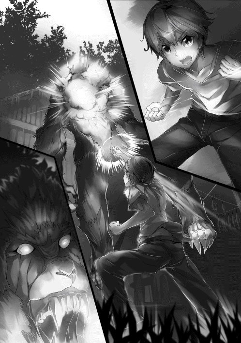
「もちろん倒したさ」
「あんたって人は......素手で山猿を倒すなんて、スゴイというか、ホント常識外ね」
あからさまな呆れ顔を作った遥を横目に、俺は二匹の敵を相手に対峙している。強烈な手斧の一撃を喰らって遥を標的に定めた一匹は、そのまま彼女にまかせるつもりだ。
もちろん、遥がピンチになれば、加勢するつもりなのは言うまでもない。が、いくら格下とはいえ、コイツら相手に中途半端な戦いはできない。それは大猿と戦ってみて十分に理解した。二匹は大猿より小さいが、普通のニホンザルに比べれば、かなり大きいことに変わりはないのだから。
遥のことも気になるが、今は目の前の俺を威嚇するように興奮している二匹に集中しよう。コイツらを俺が引きつければ、それだけで彼女は楽になるはずだ。そう考えながら視線を二匹に固定したまま、大猿を倒したときと同じように、拳に〝気〟を送り込んで強化する。
その瞬間、拳からあふれる〝気〟を感じ取ったのだろう、二匹は左右から同時に飛びかかってきた。まったくこらえ性の無い奴らだ、なんて悠長なことを考えている暇はない。
コイツらの攻撃は、キバのある強靭なアゴでのかみつきだということが、大猿と戦ってみて予想できた。そしてその前には、必ずしがみつこうとしてくる。しがみついて動けなくしたうえで、喉笛にかみついて敵を倒すのだろう。
どうでもいいことだが、猿風情に抱きつかれて喜ぶような変態的嗜好は持っていないし、敵の攻撃を受けきって反撃にうつるような、魅せる戦い方もする気はない。
それはさておき、両腕を広げて飛びかかってきた二匹が近づいた瞬間、俺は瞬間的に体勢を低くして地を蹴り、後方に跳び退った。おそらく、小猿共には俺が消えたように見えたことだろう。標的を見失い、かといって、跳躍して飛びかかろうとした体勢を変えられるわけもなく、二匹は互いに抱き合うように空中で激突していた。
そんな隙を黙って見逃す俺ではない。瞬時に間合いを詰め、大猿を倒したときと同じように〝気〟で強化した右拳を、抱き合って顔と顔をぶつけた格好になった、向かって右側の小猿の後頭部へと叩き込んだ。
あの頑強な大猿でさえ、その頭を爆散させるしかなかった俺の拳だ。下っ端どもが耐えられるわけがない。直撃を喰らった方はもちろん、もう一匹もろとも、俺の拳はその頭を吹き飛ばしていた。
とりあえず目の前の二匹は始末できた。が、まだ勝利の余韻に浸る場面ではない。
「遥！」
加勢しなければ。そう思って名を叫び、遥の方に目を移すと、首筋から血しぶきを上げながらちょうど小猿が倒れたところだった。普段は、おしとやかとまではいかないが、遥は普通の女の子だった。しかし、彼女の戦いぶりを思い返せば、その戦闘力はなかなかのものだった。というか、はっきり言って強い。強すぎる。
冷静になって考えてみれば、遥は俺の〝気〟の師匠なのだ。俺の何倍も〝気〟の使い方が上手いし、あの大猿を相手にしてもまったく怯んだ様子は見せていなかった。今考えれば、俺の心配は余計なことだったのかもしれない。
「ふぅ」
それはまるで、一仕事終えたような仕草だった。一息ついて浴びた血を二の腕でぬぐい、俺の方にふり向いた遥は、血のりがべっとりとついた手斧を片手に、肩で息をしている。
「怪我してないよな？」
「ふんっ、こんな雑魚にわたしがやられるわけないじゃない」
遥はぶっきらぼうに、そして余計なお世話と言わんばかりにそう言うと、プイと横を向いてしまった。
どうして彼女はこんな態度をとるのだろうか。何か気に障ることでも言ってしまったのだろうか。なんてことを考えていたら。
「......でも、助けてくれてありがとう」
遥は気恥ずかしそうにそう言ってくれた。
「どういたしまして」
と、俺は嬉しくなって笑顔を見せた。
「......それにしてもヒドイ恰好ね」
ほっとしたような笑顔で遥にそう言われ、はじめて俺は自分が血まみれになっていることに気がついた。しかし、存分に返り血を浴びた彼女も、人のことを言えた柄じゃないと、このとき俺は思った。
「遥も血だらけだよ」
「分かってるわ。それより......ごめん、空」
そう言ってきた遥からは、さっきまでの笑顔が消え失せていた。急に神妙になった彼女に、俺はなにごとかと不安に駆られる。
「急にどうした？」
「空の干物を奪われたわ──」
遥によると、襲ってきた猿どもの数は倍以上いたという。貯蔵小屋を荒らしていた猿の群れに気づいた遥は、手斧を持って追い払おうとしたが、例の大猿に邪魔をされて小屋に近づけなかったらしい。しきりに謝ってくる彼女をなだめ、俺は小屋の中を確認することにした。
「だいぶ持って行かれたな......」
「ホントごめん」
「もういいって、遥が悪いんじゃないから」
修行がてらに釣った魚を、俺は干物にして貯蔵小屋に蓄えていた。街に下りたときに、売って金に換えようと考えたからだ。しかし、その三百くらいはあった干物が、半分以下にまで減っていた。幸い、吊るしてあった大鹿の肉は無事だったが......。
ヒカル爺によると、干物は一匹五十円程度の金になるらしい。一万円弱、盗まれた計算だ。遥やヒカル爺にいろいろ聞いてみたところ、物価は二十一世紀の十分の一くらいだったから、結構な金額だ。しかしそんなことより。
「魚はまた釣ればいいさ。それよりも、遥が無事だった方が俺は嬉しいよ」
お世辞などではない。下心があったわけでもない。これは俺の本心だった。
「空......」
このとき、見上げてきた遥の瞳には薄らと涙が浮かんでいた。はっきり言って俺は動揺した。こんな彼女は見たことがない。このときの遥からは、言いようのない色気と儚さが感じられたのだ。このまま抱きしめてしまいたい。そう思えるほどに愛おしく思えた。
しかし、女の人と付き合ったことなど一度もなく、ましてや女性経験など皆無でＤＴな俺が、そんな甲斐性など発揮できるはずがなかった。
「あっ、あの......」
「ん？ どうしたの？」
「い、いや......その、血、流そうか」
「うん、でもその前に......」
このとき俺は、自分のことを本当に情けない男だと思った。心からそう思った。
結局、遥に言われたとおり猿どもの死体を深く掘った穴に埋め、それから井戸水を浴びることになった。なにせ、俺も遥も血みどろになっているのだから、このヌメヌメとした嫌な感覚と臭いを、綺麗な井戸水で早いとこ落としてしまいたかった。そういうことだからしかたがない。と、俺は心の中で自分に言い聞かせた。
そんなこんなで、交互に桶で水を掛けあって返り血を落としている最中に、ヒカル爺が山から下りてきた。
「何があった？」
若干慌てたように駆け寄ってきたヒカル爺に、ずぶ濡れの遥が状況を説明している。今まで気にしていなかったが、ずぶ濡れの彼女を眺めているうちに俺の体に変調が訪れた。ヒカル爺に状況を説明している遥は、水もしたたる良い女、というほどに成熟した色気はないが、その浮き出たボディラインは、俺のエロ中枢を刺激するには十分な破壊力を持っていた。
今の遥は、薄手の綿の白シャツが水で透け、藍色の短いスカートが太ももに貼りついている。ヤバイ、下半身に血があつまっている、と感じた俺は、事態が明るみになってしまう前に近くにあった座椅子に腰かけた。
「急に椅子に座ってどうしたの？」
「い、イヤ、何でもない。何でもないヨ」
焦った俺は、とっさにそう言ってみたものの、遥は頭上に「？」マークを浮かべて不思議そうな顔をしていた。そしてそれを見ていたヒカル爺は、含み笑いを浮かべて助け舟を出してくれたのだった。
「山猿の群れか......今年ははじめてじゃのぅ」
「って、毎年来るんすか？」
「来ない年もあるがのう、多い年は何度も襲ってきよる」
あとで聞いた話だが、遥が山小屋に滞在している理由も、山猿などの獣から狩りで得た獲物の番をする意味あいが大きいらしい。彼女にとって、山猿を追い払う程度のことは、そう難しいことではないということだった。今までは。
しかし、今回襲ってきた山猿は、はじめて見る大きさで、予想以上に強かったということだ。
「でも、あの個体は異常だったわ」
そう言った遥は、回想でもしているかのように、遠い目をしていた。
「大猿と言ったか、大人の背丈ほどもある」
「ええ、わたしの斧がはじかれちゃったし、傷一つ負わせられなかったわ」
「ほう、遥の斧が効かんかったか」
確かに、あの大猿の硬さは異常だったと俺も思う。ヒカル爺が驚いているほどだから、あながち俺の感想も的外れじゃなかったのだろう。
「どうやって追っ払ったんじゃ？」
「空が倒したのよ」
不思議そうに問いかけてきたヒカル爺に、遥が少し得意そうに答えた。だから俺も得意げに答えることにした。
「殴り殺した」
「そうかそうか、殴り殺したか」
そう言って愉快そうに笑い出したヒカル爺。彼によれば、その大猿は群れを率いているボス猿だろうということだった。そして、それほどの大きさの個体なら、遥の斧が通じないというのも不自然ではないらしい。
一般的に大きい獣ほど、その防御力は高くなるそうだ。その中でも、山猿の防御力は高いことで有名らしい。しかし、斧の直撃を顔面に喰らって血の一滴も出ないなど、聞いたこともないという。それを素手で殴り殺したというのが、彼のツボにはまったようだ。
「それにしても災難じゃったのぅ。盗られたのはお前さんの干物だけか」
遥は、思い出したように下を向いてしまった。干物を盗られたことに、まだ責任を感じているようだ。それに追い打ちをかけるようなことを言ったヒカル爺に、このとき俺は感情の高ぶりを感じていた。
しかし、うなだれている彼女に見えないように、俺の背をつついてきたヒカル爺の魂胆に気づいたとき、一転して俺は、グッジョブと心の中で喝采を送っていた。そうさ、下心があってもいいじゃないか。
「俺としては遥が無事だった方が嬉しいよ。そりゃぁ、干物が盗られたのは悔しいけど、またたくさん釣ればそれでいいから」
前にも同じようなことを言ったような気がしたが、「遥が無事だった方が嬉しい」のところを、ことさら強調しておいた。彼女との距離感をもっと親密にするには、今が絶好のチャンスじゃないか。
遥はうつむいたままだったが、小さく頷いて小屋の中に消えていった。それを見送ったヒカル爺は、ニヤリと口の端を上げたのだった。ありがたいことに、どうやらヒカル爺は、俺と遥を本気でくっつけたいようだ。
「ほれ、お前さんも早いとこ着替えんと風邪ひくぞ」
小屋に戻って乾いた服に着替えた俺は、いつもよりせわしなく家事に勤しむ遥を、可愛いなぁ、と思って眺めていた。
ちなみに、まともな服を一着も持っていなかった俺は、ヒカル爺のおさがりと言ったら語弊があるかもしれないが、彼からもらった甚平 のような服を着用している。今はまだ夏場なので、外に出るときはデニムのズボンにＴシャツ姿だが、小屋の中ではこの服装でいることが多い。
そんなことを考えていると、俺が着替えたことに気がついた遥が、右手を差し出してきた。視線を泳がせ気味に手を差し出した様は、少し恥ずかしそうでもある。
「はい」
「何？」
遥がなにを要求してきたのかは分かっていた。しかし、少しだけ意地悪してみたいと思った。俺はもしかしたらＳなのかもしれない。
「何じゃないわよ、分からないの？ そのズボンとシャツを寄越しなさいと言っているの」
「あ、洗ってくれるのか？」
「当たり前じゃない。それ以外に何があるっていうのよ。鈍感なんだから」
そう言われて差し出したまだ濡れているＴシャツとデニムのズボンを、遥が嬉しそうに持っていってくれた。
今までは「自分であらって」と言われて、その通り自分で洗濯していただけに、彼女のこの嬉しい変化に、俺は心の中で小躍りしている。少々ツンデレのきらいがあるのはいただけないが、そういったことも含めて、遥が今までより可愛いと思えるように俺はなっていた。本当はもっとこう、一途な愛情表現をしてくれるとか、ツンデレではなくてデレデレの方が好みなのだが。
この日以来、俺の服も遥が洗濯してくれるようになった。けれども、パンツだけはいまだに自分で洗ってと言ってくる。が、彼女が俺のことをかなり意識していることだけは実感できた。
しかし、まだ本気で好きになってくれたわけではないのだなと、少し残念な気持ちにも俺はなった。できれば山小屋にいる間に、パンツも洗ってくれるようになるといいが......それはそれで恥ずかしいが。
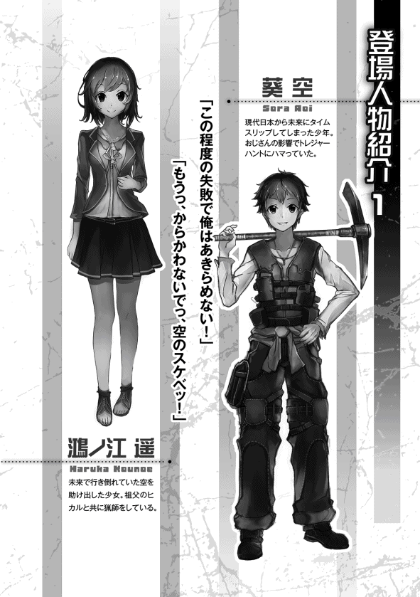
季節は秋になり、山小屋の周りは見惚れるほどの紅葉に覆われていた。夜の冷え込みも日増しに厳しくなり、最近では布団 から出るのに勇気を振り絞らなければならない。
あの山猿襲撃事件があってから、襲撃はなく、山小屋での生活は今までどおりの平穏な毎日に戻った。俺はといえば、盗まれた干物の穴埋めをするために釣りを優先し、結局狩りには行かずじまいだったのが悔やまれるところだ。
俺と遥の関係も、服を洗ってくれる以外は今までどおりに戻ってしまったのがもどかしい。俺の『遥にパンツを洗ってもらおう計画』は、脳内だけの妄想になってしまった。いざというときはそうでもないと思いたいが、どうにも俺は恋愛ということに向いていないらしい。よく言えば奥手な性格であり、実のところは甲斐性がないだけなのだが。
そして、〝気〟の修行の成果は？ といえば、嬉しいことに遥曰く一般人と比べても遜色なしだそうだ。実をいうと、俺は遥やヒカル爺に隠れてあることの特訓をしていた。完璧に操れるようになるまで、言うつもりはないその特訓とは、ズバリ、〝気〟を使った飛行訓練だ。今の段階では、自由に飛行することはできない。しかし、どうにかこうにか体を浮かせることはできるようになった。
聞いたわけではないが、遥もヒカル爺も〝気〟で空を飛べるなんてことは一言も口にしなかった。おそらくだが、一般的に人は飛べないのだろう。そうなると、自由自在に空を飛べるようになれば、二人を驚かすには十分なことだと俺は思うのだ。だからこの訓練は、今はまだ秘密にしておこうと思っている。
寝起きの運動がてらに、遥とともに山を下りる準備を終えたばかりの肌寒い朝。朝食の準備をはじめた彼女を横目に、ヒカル爺が聞いてきた。
「荷車の準備はできとるか？」
「完璧っす。さっき積み込みも終わったし」
狩りで蓄えた獲物の肉と毛皮、ツノ、俺がせっせと作った干物、それに、遥やヒカル爺が暇を見つけては集めていた干し薬草や干しキノコを、荷車で街まで運ばなければならない。
いつもは遥が先に山を下り、助っ人を二、三人呼んで荷車を引いているらしいが、身寄りのない俺を世話してくれたお礼ということで、荷車の牽引を買って出たのだ。遥曰く扱いが一般人レベルまで上達したという、有り余る〝気〟を使えば、荷車を街まで引いていくことなど、俺一人でできるはずだ。
朝に積み込みを終えた今日一日は、知っておいた方がいいこの時代の常識とやらを、遥を講師に学ぶことになった。というか、俺からお願いして学ばせてもらった。そして分かったことは、富士大公国には厳しい身分制度があるということだ。
「他の国、たとえば和国と比べると、身分格差は小さいわね。でもいい？ 軍人とか貴族に逆らっちゃだめだからね。特に貴族には注意して」
「それでも俺には厳しい身分格差だと感じるよ。まぁ、お貴族様が偉いのはなんとなく分かる。でも、軍人が偉いというのがイマイチ理解できないな。けど、忠告はありがたく受け取っておくよ」
「そうしなさい。それから、貴族は服装が豪華だけど見分けるコツは帯剣しているかどうかだからね。軍人も帯剣しているけど、彼らは軍服を着ているからすぐに分かると思う」
「へぇ、そうなんだ。刀とか剣は俺たちが持っちゃダメなんだ」
「平民っていうか、一般人の帯剣は法律で禁止されているわ」
別に刀とか剣をどうしても持ちたいという気持ちはない。けれども、日本男児たるもの刀に憧れるのは当然なわけで、刀を持てないと分かって少しだけ残念な気持ちに俺はなった。
身分制度とか街で暮らす上での注意事項はあらかた分かった。その後の与太話で、文明レベルは明治の後半程度であり、電気はあるが一般家庭へは普及していないということ。乗り物も車やバイクが使われているが、それは貴族や軍、富豪しか所有しておらず、ほとんどは馬や馬車だということが分かった。
「──まあ、馬とか馬車にしても、所有している家庭は少ないけどね」
「そうなんだ。でも、いろいろ教えてくれてありがとう。助かったよ」
「どういたしまして」
遥のありがたい講義が終わり、山小屋での今年最後の豪華な夕食を食べたあと、ヒカル爺が懐からもぞもぞと、あるものを取り出した。
「手持ちがないと心もとないじゃろ」
そう言って渡してきたのは、アラビア数字が浮き彫りにされたアルミと銅、それに銀の小板だった。厚さ一〜二ミリで二センチ×三センチくらいの長方形をした小板には、数字の上に五ミリ角の小穴が開いていて、その穴にヒモを通してまとめてある。
「これ、お金っすか？」
「まぁ、そんなもんじゃ。小遣いだと思えばいい」
数字を合計した金額は、千二百円。この時代に来る前の金額に換算すれば約一万二千円だった。多すぎず少なすぎず、小遣いとしては妥当な金額だろう。しかし。
「何もしていないのに、お金なんてもらえないよ」
「年寄りの施しは受け取っておくもんじゃ。それに小遣いと言ったろう。小遣いは対価とは別じゃよ」
「そうよ、空。もらえるものはもらっときなさい」
こうまで言われたら、断るのはかえって失礼なのだろう。そう考え、俺はヒカル爺の善意を受け取ることにした。
「分かった、もらっておくよ。ありがとうヒカル爺。大切に使わせてもらうよ」
こうして、ヒカル爺から小遣いをもらった俺は、山小屋最後となる眠りに落ちたのだった。
明けて翌朝。俺たち三人は、食材と身のまわりのものを満載した荷車を引いて山小屋を後にした。紅葉に埋めつくされた木々を両脇に見て、見たことも無いような大きさの荷車を俺は引いている。
四トントラックの荷台ほどはあるだろうか。積んでいる重量はそれよりも多く、ヒカル爺曰く七、八トンはあるだろうということだった。それほどの重量があるにもかかわらず、今の俺は余裕で荷車を引けているのだ。路面は舗装されていないむき出しの泥道だが、重いとも感じないし、歩きにくくもない。
「重くない？ 大丈夫？ 空」
「ちっとも重くないよ。軽い軽い」
山道はほとんどが降りなので、正確に言うと引いているというより、支えていると言った方がいいのかもしれない。が、俺が感じている重さは、旅行に行くときのトランクケースを引いているような感覚だった。〝気〟の力おそるべしということだろう。
荷車を見てひとつ驚いたことといえば、荷車の荷台や車輪は木製だが、車輪の軸受けに鉄のベアリングが使われていたことだ。ベアリングを造る技術がこの時代にあるとは驚きだった。回転を支える鉄球に求められる真球度は、ミクロン単位だった気がする。そんな技術が今の時代にあるのだろうか？
さらに面白いことに、〝気〟が存在するこの時代では、金属製の道具よりも、木製の道具の方が強度が出る場合があるらしい。今俺が引いている荷車がまさにそれであり、これほどの重量を積載しても大丈夫なのだそうだ。
「ところで空、やりたい仕事は決まったの？」
俺の横を歩く遥が問いかけてきた。ヒカル爺は、年寄りに歩かせるつもりか、と、荷車の後ろに座ってゆっくりと流れゆく紅葉を満喫している。別に気にはならないが、いいご身分なことだ。
「まだ決めてないんだよね。街に着いて落ち着いたら考えるつもりだけど」
「そういえば、どんな仕事があるか何も聞いてこなかったもんね」
「今更なんだけどさ、俺でもできそうな仕事って、何かある？」
しばらく考えていた遥がポツポツと話し出した。
「そうねぇ、とりあえずは、あぶれることがない土木工事みたいな力仕事かな。あとは、木こりとか発掘師くらい？」
「発掘師？」
聞きなれない言葉に、俺はオウム返しで聞き返していた。
「ディガーとも言うわ。坑道を掘って、地下に潜って神話の時代の遺物を掘り起こすの」
「遺物？」
「お金に使われるアルミとか銅、神話の時代に使われていた製品とか機械部品とかガラスとか鉄とかかな。ギャンブル性高いけど、一発当てれば大金持ちよ。当てれればだけど」
「えっ！」
「そうね、この荷車の軸受けも発掘品よ。他にも──」
このときすでに、俺の耳には遥の声が届いてはいなかった。それは、遺物の発掘という、まさに俺好みの宝探し的な天職のごとき仕事があることが分かったからだ。
言うまでもないが、宝探しは男のロマンだ。この時代に来る前に、いつかおじさんとトレジャーハントに出かける約束をしていたがそれがかなわない今、この話を聞いた。その瞬間、俺のやりたい仕事は決まっていた。即断即決だ。
「クックックク......」
「そんなに興奮してどうしたの？」
「やりたい！ 遥、その発掘師に俺はなるぞ」
「好きにすればいいわ。あまりお勧めはしないけど」
遥は一瞬驚き、そして渋そうな顔になったが俺は気にしない。地下に眠る財宝を探し当てる。しかもそのヒントになる当時の情報を、俺は持っているのだ。お宝はアルミや銅、機械部品などで、金銀財宝ではないが、この時代では価値あるものだ。
豊田市が鉱山だということも納得できた。あそこには自動車の工場とか、その部品を製造する関連施設が、いたる所にあったのだから。それに、工場じゃなくとも大きな施設があった場所は覚えているし、豊田だけではない。東京の位置を割り出せれば、そこには計り知れない財宝が眠っているはずだ。
トレジャーハンティングとして考えれば、どこに何があったかある程度覚えている豊田よりは、東京の方が断然ロマンがあるだろう。というか、東京に眠る宝を探さずして何が男か。と、声を大にして叫びたいほどだ。
少ないヒントをもとに、財宝を掘り当てるという醍醐味を味わうことはできないかもしれない。しかし、ほとんどがハズレな宝探しと違って、東京にしろ豊田にしろ、確かにそこにあったという情報というか記憶が俺にはある。これは絶大なアドバンテージなのではなかろうか。俺ほどこの時代の宝探しに向いている者はいない。そうとしか考えられなかった。
「遥、その発掘師になるにはどうすればいいんだ？」
「街に発掘師協会の事務所があるから、連れてってあげるわ。詳しいことはそこで聞いてね」
「ありがとう、ありがとう遥」
あまりに嬉しそうにはしゃぐ俺に、遥はほだされてしまったのだろう、「目標が見つかってよかったね」と、笑顔を向けてくれた。
休憩を挟 んで延々と山道を歩き続け、辺りが暗くなりはじめた。さすがに一日荷車を引いて歩き続ければ息が上がるが、そのおかげで、冷え込みはじめた空気が心地よく感じられる。
「もうすぐ着くわ。頑張って、空」
道中、遥に聞いたところ、街までは一泊二日の距離らしい。要するに今夜は野宿だ。そしてその場所が近いと彼女は言っているのだ。
「大丈夫、まだまだ平気さ」
と、荒い息づかいで強がってみたが、さすがにそろそろ休みたい。そう思っていたところに、森が開けている場所が見えてきた。右側は森だが、道の左側が開けており広場になっていた。その向こうは崖のようだ。これで休める。そう思ったときにヒカル爺が荷台から降りてきた。
「一人でよう頑張ったの。野営の準備はワシと遥でやるから、お前さんは休んどれ」
「ふぅ、そうさせてもらいます。夕食は俺の干物を使ってください」
荷車を開けた場所に停め、労いの言葉をかけてきたヒカル爺と遥にあとをまかせた。俺は息をととのえながら広場の端、崖のふちまで行って壮大な景色を堪能する。眼下数十メートルに見える切り立った崖のふもとから、正面の遠い山肌にかけて紅葉した木々が覆いつくし、沈みゆく夕陽の中で紅々と燃えていた。
「ふんっ、んーっ！」
重い荷車を引き続け、綿のように力が入らなくなった両腕を天に向け、盛大な伸びをする。明日は筋肉痛かな。そんなことを考えながら、暗くなるまで景色を堪能した俺は、後ろから聴こえてきたパチパチと薪が燃える音と、干物の焼ける香ばしい匂いに誘われるように遥たちのもとへと戻った。
「もう少し待ってね。もうすぐ焼けるから」
陽はとうに沈み、煌々と炎に照らされた干物からは、ジリジリと焼けていく音とともに脂 がしたたっていた。それが燃えることでさらにいい匂いが漂い、否が応でも食欲を掻きたてていく。ついさっきまで、疲れて食欲なんてなかったはずなのに、干物の焼けるこの香ばしい匂いを嗅ぐと、なぜだか俄然食欲が湧 いてくるのだ。
火にかけられた鉄鍋からも、食欲をそそる匂いが漂ってきた。鍋の中身は、移動の途中で遥が集めた山菜と、大鹿肉の味噌スープだ。味噌汁ともいう。
「もういいかな」
そう言って遥が味噌汁をお椀に取り分け、竹の皮に包まれたおにぎりと共に渡してくれた。
「はい、熱いから火傷しないでね。こっちはお爺ちゃん」
色あいよく焼けた干物をハフハフとほお張り、おにぎりにかぶりついては味噌汁をすする。その美味さといったら、たとえようのない絶品さだった。普段山小屋で食べる食事も美味いが、それよりも段違いに美味い。
「こういうところで食べる夕飯は、格段に美味いっすね」
「それはお前さんが荷車を引いてきたからじゃろ。季節とこの肌寒さも関係しとるかもしれん」
「お爺ちゃんは美味しくないの？」
「いやぁ、美味い。美味いぞぉ、遥」
少し怒気を含んだその問いかけに、ヒカル爺は慌てたように取り繕っていた。
和気あいあいとした夕食も終わり、充実した満腹感を満喫するかのように会話が弾む。しかし、その会話もいつしか途切れ、夜風のささやきがほてった体を優しく包み込んでいった。
「そろそろ寝ましょう。襲われないように空は〝気〟を解放してくれるかな？ それとこれ」
「うん、ありがとう」
遥に言われたとおり、獣除けの〝気〟を解放する。渡された厚手の布を体にまとい、その上から毛皮をかけ、荷車の車輪に背を預けて座り込んだ。満天の星空を見上げながら、その中に見つけたＷの文字、カシオペア座を見るにつれ、ここが日本であることを再認識することになった。
まだ山の中しか知らないが、遥の話を聞くかぎり、ここは俺の知る日本ではあるまい。明日街に出れば、それを実感することになるのだろう。そんな大きな期待と少しの不安を胸に、俺は眠りに落ちた。
山小屋を出発して二日目の正午前。両脇を覆っていた紅葉が減りはじめた。ようやく山道を抜けた俺たちは、勾配がなく平たんではあるが、古いわだちが残る泥道を歩いている。おそらく人通りが少ないのだろう。
そして、それからさほど進むことなく、街へと通じているらしい街道へと辿 り着いた。幅十メートルはあろうかという舗装されていない街道が、南北に延びている。街道の向こうは枯れかけた草原であり、ところどころに巨岩が顔を出していた。
「右でいいんだよな？」
「そう、右が富士大公国、左が和国よ」
南側に行けば遥たちの実家がある富士大公国の首都らしい。
「ここまでくればもう一息じゃの。疲れとらんか？」
「疲れてはないんだけど、腹が......」
この時代に来て、かなり正確になった俺の腹時計が正午を告げている。ここが最後の休憩ポイントらしいので、街道に出る前に昼休憩をとることになった。荷車を停め、その横の草原で車座に座っておにぎりをほお張る。下りて来た道を荷車がふさいでいるが、ほとんど人が通らない道なので気にする必要はないらしい。
休憩の間、ずっと街道を眺めていたが、旅人の姿を見ることがなかった。護衛らしき乗馬した人に守られた荷馬車の一行と、馬を駆る軍人らしい団体さんが南下していっただけだった。どちらの団体さんも、俺たちには一瞥をくれただけで素通りだ。というか、先を急いでいる感じだった。
「あれは？」
「大公国軍の巡回よ」
「巡回？」
「主に危険な野獣とか妖魔のたぐいの監視じゃ。野盗もたまに出おる」
「妖魔ってあれっすよね。〝妖気〟のバケモノ」
ヒカル爺曰く、妖魔とは〝妖気〟に支配された獣、または〝妖気〟のみの意識体であり、このあたりに出没するのは前者だということらしい。後者は、山岳地帯の一部と地下にしか生息？ しておらず、遭遇すれば危険極まりない存在だが、平地にはほとんど出没しないそうだ。
荷馬車が先を急いでいたのは、野盗や危険な獣が出没する危険地帯を、早く通り抜けたかったのだろう。軍人さんたちは、昼休憩に遅れないように急いでいたのかもしれない。
昼休憩を終えた俺たちは、街道の左側を南に向けて歩いた。途中何度か軍人さんや荷馬車とすれ違ったり追い抜かれたりしたが、道幅の広い街道では、それも苦にならなかった。そして、見えてきた川の向こうには稲刈りが終わった田んぼが広がっており、そのさらに奥に、ようやく民家らしき建物が見えてきた。
木でできた大きな橋の近くまでたどり着いてみれば、川幅は広く、三十メートルはあって、水深も深そうだった。橋の手前には、小屋というには大きな建物と厩舎があって、道を塞ぐように四人の軍人が立っている。カーキ色のツナギのような軍服と軍帽をかぶり、腰に刀のようなものを差した男三人に女一人だ。
「あの人たちは？」
「橋の守備兵じゃよ」
このとき、俺はあることに気づき嫌な予感がしていた。こういった場面では、身分証とか入国証とか見せなければダメなんじゃないのか？ 座右のファンタジー小説にもそう書いてあった。
「あの、俺身分を示すモノ持ってないんだけど......」
「ガッハッハ、そんなものは要らん。心配無用じゃて」
ヒカル爺によれば、和国との国境は、街道をここからずいぶん北上したところにあるとのことだ。つまり何が言いたいかといえば、現在地点は富士大公国の国土であり、山小屋があった場所も富士大公国だった。ようするに、入国証は国境で必要なのであって、すでに富士公国の中にいる俺たちには必要ないということだ。
「今年は大猟のようだな、爺さん」
「ホッホッホ、おかげさまで、いい猟ができましたわい」
「ふん、仕事が引けたら呑みにでも行ってやろう」
見た目四十過ぎの、この時代でいえばおそらく百五十過ぎの軍人が、見下すように偉そうな口ぶりで話しかけてきた。ヒカル爺は、いくぶん腰を低くして対応している。
「軍人は貴族に次ぐ特権階級なの」
「特権階級？」
「軍人はね、命を張って国と民を守らなきゃならないの。その見返りに特権が与えられるのよ」
「見返りねぇ」
「建前なところもあるけどね。それよりも権力を笠に着ることの方に軸足が移っている軍人もいることは確かね。そういった人種はいつまでたっても出世できない下っ端に多いんだって」
たぶんコイツがその下っ端なのだろう。俺は遥に合わせてできるだけ目を合わさないように、そして不自然にならないように歩いた。
そそくさと軍人たちの前を通り過ぎ、橋を渡ってようやくひと心地ついた俺は、道すがら大公国のあらましを遥に聞くことにした。
「人が生活する街や畑や田んぼ。要するに一般人が活動するエリアは川と堀によって守られているの。危険な妖魔や野獣は川や堀に邪魔をされて入ってこれないわ──」
もちろん、田畑を荒らす害獣も同様なのだが、鳥だけは侵入してくる。だから稲穂が垂れる収穫前になると、散弾銃をもった農家の人たちが、昼夜見張りをするそうだ。
「へぇー、銃はあるんだ」
「人や獣には無意味だけどね」
「無意味って？」
「それはね、〝気〟で強化された人や獣はいくら散弾銃で撃たれても効かないからよ」
「じゃあなんで散弾銃があるの？」
「田畑を荒らす野鳥を追い払うことができるわ。追い払えるだけで鳥に弾が命中しても、よくて気絶するだけだけどね──」
この時代では、銃器には鳥を追い払うことくらいしか利用価値がないようだ。〝気〟を溜めておけない弾丸より、溜めておける矢の方が殺傷能力が高いというのだから面白い。そういえば、ヒカル爺の主装備も弓だった。
銃で撃たれても怪我すらしない。この時代の人や獣は、それほどに耐久力が上がっているのだ。仮にピストルで撃たれたとして、おもちゃの銀玉鉄砲の弾が当たった程度なのだろうか。ハトがマメ鉄砲の例え程度だろうか。それとも、当たるとミミズ腫れするエアガン程度なのだろうか。銃はあまり普及していないらしいので、気にするほどのことではないが。
そんなことを考えながら荷車を引いていた俺の視界に、ようやく街並みが飛び込んできた。川を越え、両側に広がる広大な田畑を割るように延びた街道の、少し小高い坂を登りきったところだ。
見えてきた街並みは、塀や防壁には囲まれておらず、少しずつ民家の密度が高くなっているような印象を受けた。そして、さらに歩いて近づいた街の外れに点在する家屋は、屋根に瓦のように板を重ねた平屋だった。というか、瓦はどこの家にも使われていないようだ。そういえば、山小屋も板ぶき屋根の平屋だったなと、今ごろになって思い出した。
そしてこの辺りまで来ると、農作業をしている人、刈り入れの終わった田んぼで遊ぶ子供、などなど、大公国の住民を見かけるようになった。
「もうこの辺りは安全なんだ」
「川があるし、危険な獣はここまで来ないわ。仮に侵入されても、見通しが良いから」
無邪気に田んぼを駆けまわる子供たち、農作業をしながらその子供らに目を配る大人たち。そこだけを切り取ってみれば、それはのどかな農村の一場面だった。なんとも牧歌的な光景だ。
しかし、そんな様子も長続きはせず、次第に民家が密集し、やがて民家のかわりに二階建て三階建ての商店や工房、事務所、木造アパートなどが幅を利かせはじめた。
「この南北に延びる通りが富士大公国の目抜き通りよ」
十メートル程度だった道幅が倍の二十メートルほどに広がり、いつのまにか石畳の道に変わっていた。道の中央には馬や馬車が行き交っている。自動車やバイクはまだ見かけていないが、自転車に乗っている人もいた。
食材を満載した俺たちの荷車は、申し訳なさそうに道の端を進んでいる。俺が引いて歩いているのだからそれは当然だろう。道の真ん中を我がもの顔でトロトロ進んでいれば、大ひんしゅくを買うこと間違いなしだ。
「この目抜き通りを南に一日歩けば大公様の宮殿が見えてくるわ。ここからじゃ見えないけど。距離的には十キロないくらいね」
「へぇー」
大公様のことは置いておくとして、ここまで大通りを歩いてきて、たしかに明治時代的技術レベルだということが、なんとなく分かった。
人々の服装は、和装洋装入り乱れているが、俺が生まれた時代に比べると、どちらもどことなく雰囲気が違っていた。表現が難しいが、簡素というか、余計な飾りがないというか、しかしそれでいて、古めかしさをあまり感じさせない新鮮なデザインだった。
そして、この街がおそらく計画的に区画整理されているということも分かった。坂道はあれど、曲がりくねった道が無いのだ。見える範囲の道は全て、東西南北に伸びていた。
「次を左よ」
その後も遥に言われたとおりの道順を辿り、街に入ってから二時間程度で建物の窓から明かりが漏れ出してきた。
陽もどっぷりと暮れた時間になって、ようやく俺たちは彼女の実家に到着することができた。そして、そこは大きめの食事処だった。正面の藍色のれんには、大きく「お食事処」と白抜きしてあるのだから間違いない。ヒカル爺曰く、今の時間には酒も出る、いわゆる大衆食堂らしい。のれんをくぐった遥の声が店の中から響いた。
「ただいまー！」
「お前さんはここで待っておれ」
そう言って遥に続き、のれんをくぐったヒカル爺。それから少し間をおいて、一人の男とヒカル爺が店から出てきた。少し油で汚れた白い前掛け姿のその男は、ガッシリとした体格の、いかにも体育系な角刈りオジサンだった。
「これは凄い、今年は大猟だ......で、キミが空君？」
「そうじゃ、倉庫に案内してやりなさい」
「あの、この方は？」
「ワシのせがれじゃ」
「幸作 といいます。遥が世話になったそうで──」
幸作と名乗ったその男は、遥の父親であり、ヒカル爺の息子だそうだ。その幸作さんに案内されて、俺は荷車を裏手にある倉庫に引いていった。
「ご苦労さん。疲れただろう、風呂にでも浸かって疲れをとりなさい」
俺は、幸作さんのその言葉に甘えることにした。そして風呂をあがり、遥の母、琴 葉 さんに案内された場所は何人座れるんだ？ というほどに長く大きな掘りごたつが、部屋の真ん中にある居間だった。
その居間は、部屋の広さを除けば、ひと昔前の日本家屋というか、まさに昭和の家族ドラマに出てくるような造りだった。誰もいないのでこたつに入って、くつろいでいると。
「あの、つまらないものですが」
そう言ってお茶とセンベイを出してくれた若い女の人を見て、俺は目を見開いた。
「遥？ さんじゃないですよね......」
顔の造りは遥そのものだが、雰囲気や髪の長さが全然違う。こう、なんていうか、おしとやかで清楚な感じだ。そして、遥との決定的な違いに俺は気がついた。いや、気づかない方がおかしい。それは、否が応でも視界に飛び込んでくる、自己主張甚だしい二つの膨らみだ。
たおやかなその体つきとは、不釣合いなほどに良く育ったふくよかな双丘のなんとすばらしいことか。アメイズィングでエクセレンツな、ワンダフォーあっぱれおっぱいである。自分でも何を言っているのか分からなくなってきたが、気にしてはいけない。
さらに、長く伸ばした黒髪も、薄い化粧にも嫌味がない。普段化粧をしていない遥の健康美もまんざらではないが。これはどう考えても別人だろう。
「遥さんとは双子ですか？」
「違いますよ。遥は三つ違いの姉です」
「妹さんでしたか、それにしてもよく似てますね。俺は空といいます」
「琴音 です。姉が大変お世話になったそうで。私からもお礼申し上げます」
琴音さんは頬を薄らと染めてそう言った。
「いやいや、お世話になったのは俺の方で──」
琴音さんの、おしとやかで礼儀正しく丁寧なしゃべり方は、けれんみがなく、遥とはその雰囲気も含めてまるで別人だった。気さくで、わりとお気楽な遥といるのもいいが、こういった女性もまた、いいもんだなぁ、とかなんとか考えていると。
「ふぅ、いいお湯だったわ。やっぱり実家の広いお風呂はいいわね」
こたつで琴音さんとくつろいでいた俺は、遥の声に視線を下から上へと上げていった。風呂からあがったばかりの彼女は、火照ったその体から淡く湯気が上がり、白い手拭いで髪をまとめあげていた。柔らかそうな綿の白シャツに寝巻の下だろうか、薄手のズボンを穿いていたのだが......。俺の視線は、とある一点に釘づけになってしまった。
フィット感があると言ったらいいのだろうか、柔らかそうな薄手のシャツがピタリと肌になじみ、ボディラインが鮮明に浮き出ている。
そのおかげで、形のいい小ぶりな胸の膨らみが否応なく強調され、その頂に......。シャツの上からでも明らかに分かる、ピンと起って突出した突起物。その神々しい突起物が、双丘の丘の頂上で、形のいい頂きのその頂上で、我も我もと自己主張しているのだ。俗にいうノーブラのビーチクだ。
日本語がかなりおかしなことになってしまっているかもしれないが、それは、俺の心の動揺の表れだと思ってくれるとありがたい。
「お姉ちゃん！ はしたないです。はやく上着を羽織って。空さんが困っていらっしゃいますよ」
「！」
俺の凝視する先に気づいた遥は、慌てて両腕で胸を隠し、茹であがったカニのように赤くなって走り去った。久しぶりに実家の風呂でゆっくりくつろぎ、解放感と安心感から俺がいることを忘れてしまった。おおかたそんなところだろう。
いやぁ、いいものを拝ませてもらった、とはさすがに口に出せなかったが、琴音さんが彼女の様子に驚いて、その後嬉しそうにしていた意味が俺には分からなかった。
ともあれ、遥姉妹のラッキースケベ的ダブルおっぱい展開があったその後、客が引いた夜遅くになって、家族全員が集まった夕食の席で、遥の家族に俺は紹介された。
実を言うと、定宿もなく職にもありつけていない俺は、遥の口利きで彼女のこの実家に、当分の間アルバイトをしながら住まわせてもらうことになったのだ。詳しい理由は後述するが、今すぐには発掘師にはなれないから、アルバイトはそれまでの繋ぎのつもりだ。
「でも、ここに住まわせてくれて本当に助かったよ。ありがとう遥」
「遠慮なんかしなくていいわよ。うちは食事処だからね。住み込みで働いてる料理人が何人かいるけど、それでも部屋は余ってるから。空みたいな居候がひとりやふたり増えたところで家計にもスペース的にも何の影響もないわ」
それはそうと、遥の家族はといえば。これがとんでもない大家族だった。店主をやっている遥の父、幸作さんとその嫁と妹、歳の離れた兄夫婦、まだ幼いその息子の幸一 君。などなど、親子五代、十一人の大家族だ。成人したり嫁いだりして家を出た遥の叔父や叔母、ヒカル爺さんの兄妹姉妹と、その家族を加えれば、人数はとんでもないことになるだろう。
「スゴイ大家族っすね」
「なにが大家族なもんか、うちは平均的な家族じゃよ。本物の大家族なら親子七代とか八代とかが同居しとるぞい」
「......マジすか」
ヒカル爺が言うことが本当なら......いや、嘘などつく理由もないか。とにかく、いくら寿命が何倍も延びたからとはいえ、俺がいた時代とは家族構成の常識を見なおす必要があるだろう。 なにせ、幸一君から見れば曾々爺さん婆さんにあたるヒカル爺の両親ですら、どう見てもまだ六十代にしか見えないということも、その考えが正しいことを裏付けているのだから。
ともあれ、夜もかなり遅い時間にはじまったにぎやかな夕食だったが、和やかな会話で緊張がほぐれ、俺はいつのまにかその中に溶け込んでいた。遥は疲れが出たのだろうか、早めに夕食を切りあげて自室に戻ってしまったが。
夕食の後に連れて行かれた俺がやっかいになる部屋は、居間の横にある木の階段を上がったすぐ横にあった。
「ここが空さんのお部屋になります。自分の家だと思って、遠慮なく使ってくださいね」
案内してくれた琴音さんが、にっこりと柔らかい笑みを浮かべ、ふすまの引き戸を閉めてくれた。案内された部屋は、六畳の畳敷きで、すでに布団が敷かれていた。入り口の反対側にガラス窓があり、そこから外をのぞくと、通りに面していることが分かる。外はもう寒いだろうから、窓を開けようとは思わなかったが、朝になれば行きかう人々や馬車を見ることになるのだろう。
広い風呂にゆったりとつかって、こたつでくつろぎ、楽しい団欒の中で夕食にありつけた俺は、布団に座った瞬間に襲ってきた睡魔にあらがうことができなかった。そのまま横になると、かけ布団をたぐり寄せるように抱き込み、眠りにいざなわれたのだった。
◇◇◇◇
遥や空が移動の疲れで食後早々に眠りについた夜、居間に残った遥の父幸作とヒカル爺、兄の竜司、それに、妹の琴音が語らっていた。
「父さん、空君はどんな感じですか？」
幸作の問いかけに、ヒカル爺は何かを思い出すように、そして嬉しそうに答える。
「ワシが言うのも何じゃが、あれはいい男じゃよ」
「じゃぁお爺さま、お姉ちゃんの様子がいつもと違うのは......」
琴音は、ハッと得心がいった表情だった。それを見たヒカル爺が口の端を上げる。
「お前にも分かるか、遥は空のことを好いとるよ。口には出さんがのぅ」
「ついに遥に春が......」
万感の想いが込み上げたかのように涙を浮かべたのは遥の父、幸作だった。彼の息子、竜司も、うんうんと涙ぐみ、父の肩をたたいている。琴音も自分のことのように喜んでいた。
「ただ、空の〝気〟の量と力は王族に匹敵しよるし、素養も人もいい。いずれは雲の上の人になるやもしれん。そうなれば、いや、ならずとも遥は苦労するじゃろう」
「なんと王族級！ それほどに......。それではゆくゆく空君は爵位を」
驚き、そして顔が強張った幸作に、竜司が諭すように語りかける。
「いいじゃないですか父さん。空君がたとえ貴族になったとしても、遥が彼を選ぶのなら」
「そうじゃのう幸作、貴族に嫁ぐのも悪いことばかりじゃないぞい」
「いや父さん、反対してるんじゃないよ、驚いただけさ。ただ、そうなるとライバルが多いと思って」
「気にすることも無かろう。貴族なら嫁の三人や四人、ふつうにおるしのぅ。問題は遥が空の心を繋ぎとめられるかどうかじゃろうて」
どうやら、彼らの中では遥が空の嫁になることが、すでに既定事項のようだった。
◇◇◇◇
遥の実家で迎えたはじめての朝。と、言ってしまえば、昨晩はこの部屋で、なにやらエロくてハッピーなイベントでも起こったのかと、勘ぐる御仁も多いかもしれない。が、しかし、そんなことはあろうはずがなかった。
実際にチュンチュンとスズメの声が聞こえているのに、一ミリたりともそんなエロ嬉しい出来事は起こっていない。実に残念なことだが、とりあえず俺は布団をたたみ、窓から外の様子をうかがうことにした。
窓を開けると、外の新鮮な空気が流れ込んでくる。しかし、季節はもうすぐ晩秋だ。吹きすさぶ寒風とまではいかないが、身を切るような冷たい風に、ブルリと体が縮み上がった。そんな寒さにも負けず、伸びをして通りを見下ろせば、そこにはすでに人が行きかい、朝のにぎわいを見せはじめていた。
「空！ 朝ごはんよ」
下の方から遥の呼ぶ声が聞こえてきた。ふすま越しでもよく通る元気な声だ。エロいことをしているときには、どんな声になるんだろう？ つい、そんな不埒なことを考えてしまうあたり、俺も相当に溜まっているのかもしれない。
そんなよこしまな考えを心の奥にしまい込み、居間に下りてみると、こたつには朝食が並べられていた。そして、ヒカル爺夫婦とその親の源一郎爺さん夫婦と遥、それに、まだ眠そうな幸一君が集まっていた。そのほかの面々はすでに働き出しているらしい。というか、店にはすでに客が入っているそうだ。
「空よ、今日はこれからどうするつもりじゃ？」
いつもはお前さんとか小僧とか俺のことを呼ぶヒカル爺が、めずらしく名前で呼んできた。親の手前だからだろうか。それとも俺に気を使ってくれたのだろうか。いや、こういうときは何か裏があるに違いない。
「干物を売って身のまわりのものを揃えようかと」
「その干物なんじゃが、幸作の奴が買い取りたいと言っておったぞ。話を聞いてやってくれんか」
「そうなんですか？」
「ああ、ワシは猟師じゃからよう分からんが、けっこう出来がいいと言っておったわ。一枚七十円じゃが」
ヒカル爺の頼みごとではなかったが、息子の幸作さんからの依頼だった。しかし、干物の状態とか、相場とかよく分からない俺にとって、買い取ってくれるというその申し出は、非常にありがたいことだった。
プロ相手に交渉するなど、俺にはできそうにない。せいぜい買いたたかれて、損していたことだろう。まあ、ある程度の金が入れば、それでもいいとも思っていたが。そういうわけで、俺はその申し出をありがたく受けることにした。
干物を金に換えに行くという予定がなくなった俺は、客足が落ち着く時間まで待って、幸作さんに干物を引き渡すことにした。
「今年は干物の入荷が少なくてね。正直助かったよ」
「そうなんっすか」
幸作さんがキッチリ数えてくれたのだが、干物の数は五百を少し超えていた。
「しめて三万五千二百八十円で買い取らせてもらうよ」
「きりがいい三万五千円でいいっす」
「遠慮しなくていいんだよ」
幸作さんは、数えるときもきれいに干物を並べていたし、値段をまけろとも言ってこなかった。
「遠慮なんてしてませんって、わりと大雑把な性格なもんで。もしかして幸作さんってマメな性格ですか？」
「これでも一応商売人だからね。それに空君、ボクのことはお義父さんと呼んでいいんだからね」
「......？」
なぜお義父さんなのかこのときは分からなかった。
さておき、少しまけたとはいえ、俺が生まれた二十一世紀の価値で約三十五万円という大金だ。その金を使って、その日の午後に身のまわりのものを揃えた俺は、翌朝、発掘師協会に行ってみようと遥に声をかけた。
「発掘師協会に行きたいんだけど」
「行っても無駄よ」
「ホワイ？ どうして？ なぜ無駄なんだ？」
遥にそっけなく無駄と言われ、このときなぜか、俺はいらだちを隠せなかった。それは、期待を裏切られたと勘違いしてしまったからかもしれない。俺のいらだちを口調と表情から読み取ったのだろう、彼女は少し慌てるように補足してきた。
「ゴメンゴメン、言い方が悪かったわ。発掘師になるには試験を受けなければいけないの。その試験は春と秋に実施されるわ。今年の試験はもう終わってるから、来年の春まで待たないと試験は受けられないの」
「なるほど分かったよ。俺の方こそ変な聞き方してごめん」
「謝らなくていいわ。説明が足りなかったのはわたしのせいだし」
「でも試験を受けるにしても、説明ぐらいは聞いておきたいかな」
「わざわざ協会まで行かなくても、わたしが教えてあげるわ。勉強用の資料も持ってるし。こう見えてもわたし、発掘師の免許持ってるのよ」
遥が発掘師だったことには驚いたが、彼女の説明によると、試験は年二回、三月と九月にあって、今は十月の下旬だから次の試験は三月まで待たないといけないらしい。その試験では、おもに妖魔に対する知識や法令関係を問われ、発掘したお宝の取り扱いや税金、立ち入っていい場所や立ち入り禁止区域、妖魔への対処法などを勉強しておく必要があるそうだ。
「簡単な実技試験もあるから、教本をよく読んでおくこと。分かった？」
「もちろん。発掘師になるためなら、俺は努力を惜しまない」
強がって遥の前ではそんなことを言ってしまったが、正直なところ、また受験勉強かと、すこし嫌な気分になった。が、そこは我慢するしかないだろう。
妖魔とか法律とかまったく知らない俺が、かりに今受験したとしても、受からないことが明白なのだから。そして彼女が発掘師ならば、わざわざ協会まで行く必要はないなと納得もした。
こんな感じではじまった遥の実家での生活は、不慣れから多少のトラブルがあったものの、平穏に推移していった。俺は食堂の雑用や配膳係？ ボーイとかウェイターと呼んでもらっても構わないが、とにかくそんなアルバイトを陽が昇っている時間にこなした。そして夜には、発掘師になるための勉強をして試験までの期間を過ごした。
◇◇◇◇
年も明けた二月の中旬、受験の申し込み用紙をもらうために、発掘師協会に行くことにした。場所は遥が知っているそうなので、案内を頼んだのだが。
「ホントはあんまり行きたくないんだよね」
「なんで？」
「あんまり会いたくないヤツがいるというか、メンドクサイのがいるというか」
「場所を教えてくれるだけでもいいよ」
「いや、場所も近いし、乗り掛かった舟だし、勝手も分からないだろうから」
とは言っているものの、遥の表情は、どうにも冴えない様子だった。しかし、行くと言ってくれている以上、俺にはその申し出を断ることができなかった。
「ここよ」
遥が言っていたとおり、発掘師協会本部はそれほど遠くない所にあった。彼女の実家から南に二キロほど行ったところだ。木造の三階建てで、中に入ると一階は広めのロビーと奥に受付があった。
「よう！ 久しぶりじゃねぇか遥嬢。ここに来るのは三年ぶりか？」
受付カウンターの向こう側。最奥のデスクにだらしなく座るスーツ姿の体格の良い暑苦しそうな中年男が、遥を見るなり話しかけてきた。とうの彼女は、あからさまに嫌そうな顔をしている。コイツが会いたくなかったヤツか。
「ハァ、一番会いたくないヤツが居た」
声をかけてきた男を見るなり、小声でそうつぶやいた遥に、その男が近寄ってきた。 なぜだか二人はカウンター越しににらみ合っている。今にも殴り合いがはじまりそうな、恐ろしく険悪な雰囲気であり、山猿と野良ネコが総毛を逆立て、威嚇し合っているようでもあった。もちろん、下から見上げるようにしている遥が野良猫だ。
「なんでアンタがそこに居るのよ。しかもその恰好は何」
「ふんっ、出世したんだよ。お前が隠居してる間にな。お前こそ似合わねーお上品な服着やがって、どこぞのお嬢様気取りか？ あぁん」
「何が出世よ。引退の間違いじゃないの？ だいたいアンタは──」
これが遥の地なのだろうか。それともこの男に対してだけこうなってしまうのだろうか。二人のやり取りを見て、このとき俺は彼女の意外な一面を見る思いがした。あとで聞いた話なのだが、遥と言い合っている男は山岸 さんといい、昔彼女とチームを組んでいた発掘師らしい。
「相変わらず仲がいいな、お前ら二人は」
たがいの額がこすれ合うほどに顔を近づけ、いまだに言い合いを続けている遥と山岸さんに、カウンター右奥の部屋から出てきた老人が、あきれ顔で横やりを入れた。しかし、そのあきれ顔には、懐かしむような笑みが含まれている。
「「よくない！」」
ピタリと息を合わせ、同時に老人に振り向いた遥と山岸さんは、今にも襲い掛かってきそうな鬼の形相になっている。しかし、老人はそんな二人に動じることもなく、かえって嬉しそうにしていた。
「そんなことより、用事があるんじゃないのか？」
ハッと、忘れ物を思い出したかのように口に手を当てた遥は、とりつくろうように口調を戻して用件を話しだした。
「お久しぶりです五所川原 会長、用事があるのは彼よ」
「空といいます」
「発掘師になりたいそうよ」
遥に紹介された俺は、ロビー横のソファで山岸さんに発掘師の何たるかを聞かされることになった。薄い茶色の和服を着こなしている五所川原発掘師協会会長も、その席には同席している。
ほとんどの説明は山岸さんがしてくれたのだが。このオッサン、とにかく暑苦しいというか熱血漢で、説明を外れて発掘師の魅力とか醍醐味とかを熱く語っていた。俺も発掘というかトレジャーハントについては思うところがあるし、彼が言う魅力や醍醐味もよく理解している。が、ここまで暑苦しく他人に語ったりは......もしかしたらしていたかもしれない。
まぁ、俺のことは置いておくとして、話が逸れるたびに五所川原会長か遥の横やりが入った。
「──あらましはこんなところだ」
「じゃあ、発掘師になるには試験を受けないとダメなんですね？」
「そのとおりだ。次の試験まで半月程だ。それまでよく勉強しておくことだな。受験申し込み用紙と、法令関係の資料は受付で配布している」
遥に発掘師についてある程度聞いており、受験勉強も進んでいた俺は、山岸さんの話を、さもはじめてのように聞いていた。受け答えもそれを前提にしていたのだが、そうしないと面倒なことになりそうだと思ったのがその理由だ。どうにも俺は、こういった暑苦しい熱血漢の人は苦手なのだ。
「ああ、大事なことを忘れていた」
何かを思い出したかのように手の平に拳をおいた山岸さん。
「発掘師になるには〝気〟力百以上が必須条件だ」
「気力？」
「〝気〟の力だ──」
山岸さんによると、発掘師には二級から特級までの三段階の免許があって、いちばん下の二級発掘師になれる条件のひとつが〝気〟力百以上であり、その上の一級が二百以上、いちばん上の特級が五百以上らしい。
「──必要な〝気〟力は男も女も同じだ」
遥は俺の〝気〟について、ある程度知っているからこんな話はしなかったのだろう。
ちなみにであるが、山岸さんの〝気〟力は千二百強であり、遥のそれは千四百を超えているらしい。二人とも特級発掘師の免許持ちだった。
「それからな、一般人の平均〝気〟力は五十ほどだ。お前は発掘師になろうとしているくらいだから〝気〟力は高い方だろう。頭にくることがあっても絶対に一般人を殴ったりするなよ」
「気をつけます」
かつて遥が言っていた、『わたしもお爺さんも多い方なんだから』というのもうなずける話だ。というか、多いどころじゃないだろう。文字どおり桁違いの〝気〟力だと思う。
「そうだな、資格がないのに勉強しても無駄になるからな。今のうちに〝気〟力を測っておこう」
このとき俺には迷いが生じていた。遥が言うに、俺の〝気〟力は彼女の十倍以上。あのときは、俺が〝気〟を初めて感じたころだったから、訓練を積んだ今ではどれほど上がっていることやら。かりに俺が全力で〝気〟を振り絞ったら、騒ぎになるどころの話ではないのかもしれない。
「これが〝気〟力を測る機械だ」
別の部屋に通された俺に、その部屋の奥にあるテーブルに置かれていた二つの機械を指さし、山岸さんがそう言ってきた。左側に小さい機械。その右側にサイズを二回りほど大きくした同じような機械が並んでいる。
その機械は、まんまバネ秤のようなというか、かつて肉屋さんで見かけた、金皿の上に肉を載せて重さを測る古いタイプの重量計そのものだった。
正面には時計の針のような指針が十二時の位置をさしていて、その上に目盛と数字が刻んである。針は一本だけで大きい方の機械は、最大値が百だった。しかもご丁寧なことに、Ｋｇと単位が刻印してある。どう考えても重量計の使いまわしだ。
「この線に立って、あの皿の部分を〝気〟の力だけで押してみろ。いいか、右側の機械を全力でだ」
「これって重さを測る重量計ですよね？」
「そうだ。昔からこれで測っている──」
山岸さんによれば、左の小さい機械は〝気〟力五百まで測れる秤であり、右側の大きい方は一万まで測れるそうだ。右側から試す理由は、全力で測定した場合に、壊してしまわないようにするためらしい。
距離は十メートルほどだろうか、〝気〟を使って物を動かす場合、距離が離れているほど、急激にその力は小さくなる。実際にやってみてそれは分かっているが、問題はどの程度〝気〟を解放するかだ。あまり悩んでいる時間はない。
遥の〝気〟の強さを思い浮かべた俺は、それと同じ程度の〝気〟を解放し、力んだ表情をわざわざ作って秤の皿を押し込んだ。遥が特級発掘師の免許を持っているなら、同等とごまかせればいいと考えたからだ。
「ぬぐぐぐぐぅ、こ、こんなもんですかね」
針の位置は一時半、すなわち十五Ｋｇを指している。
「ほう！ 千五百か」
どうやら、針が指した数字、言いかえれば押し込んだ力の百倍が〝気〟力になるらしい。が、一旦は驚きの表情を浮かべた山岸さんが、額に井型を作って睨みつけてきた。遥は視線を落とし、額に手を当てて〝やっちまった〟的な顔をしている。五所川原会長は、実に愉快そうな笑顔だった。
「おい小僧、手を抜くんじゃねぇ。全力を出せと言っただろうが。あぁん」
「あはははは、なに言ってるんですか。全力に決まってるじゃないですか。冗談キツイなぁ」
「テメェ、俺をナメんじゃねぇぞ」
怒りに満ちた顔をズイと寄せ、ドスの効いた低い声色で凄んできた山岸さんに、俺は顔がひきつっている自覚があった。背中にはダバダバと冷や汗が伝っている。
「す、すみませんです！」
こうなったら仕方がない。ままよと、俺は全力で〝気〟を解放した。そして勢いよく、力のかぎり秤の皿を押し込んだ。
「！」
押し込まれた秤の皿は、ガシャリという音を立て、針は勢いよく一周して一時の位置で急停止し、ビィィィンと針先が震えている。しかも、金属製の皿が、真ん中が飛び出るようにべコリと変形してしまった。
これを見て遥はしてやったりの得意げな表情だったが、山岸さんはアゴを落として目を見ひらき、五所川原会長でさえ、その表情をひきつらせていた。
「............」
まずいと思い、〝気〟の解放を止めたのだが、時すでに遅しのようだ。傘のように変形した皿と、最後まで戻らずに二時の位置まで戻って止まった針を見て、俺はやっちまった感いっぱいになってしまったのだった。
「あはははは、壊れちゃいましたね」
乾いた笑い声をあげ、力なくそう言った俺に、山岸さんも五所川原会長も、ギギギギと効果音が出てもおかしくないような動きで、首だけを回してきた。
「山岸さんが本気でやれって言うから」
「......」
「最低でも一万一千以上......。空と言ったか、お主どこから来た。大公国の人間じゃあるまい」
こうなってしまうことは予想できていた。嘘をついてごまかしたところで、どうせろくなことにはならない。俺は覚悟を決め、かつて遥やヒカル爺に話したように、気がついたら原始の森にいてそこで迷い、その前は豊田市に住んでいたことを説明した。
「要領を得ん説明だが信じるしかあるまい。まさかお主が始祖だったとはな。会長という立場上、大公様にはお主のことを報告せねばならん。が、このことは当分ここだけの話にしておこう。分かっておるな、山岸」
「シソ？」
「神話の時代に生きた人間のことだ──」
五所川原会長に真剣な表情で頷きかえした山岸さんが、始祖について説明してくれた。 始祖とは、はるか昔の神話の時代、すなわち俺が生まれた時代に生きていた人々であり、〝気〟という異能の力が初めて発現した人々の総称らしい。
言い伝えによれば、神話の時代を生き抜いた始祖たちは、今の時代の人々が内包する〝気〟とは、桁違いに強くて多い〝気〟を持っていたそうだ。俺の〝気〟力が遥たちの十倍程度だとしても、始祖でなければ説明がつかないらしい。
「本人を前に言うことじゃないが、有能な人材は協会としても是非とも確保したい。大公様は話の分かるお人だから、真摯に説明すれば大丈夫だろう。懇意にもしてくださっているしな。そのほかの雑音は、我々が責任を持って対処するから安心してほしい」
「分かりました。ありがとうございます」
「お前に一つだけ言っておくが、いいか、試験だけは絶対に落ちるなよ」
最後に山岸さんが現実に引きもどす一言を言い放ち、俺は心を新たにして遥とともに発掘師協会を後にした。そして、遥の実家に帰り着こうとしていたとき。ハタと気づいたように彼女が俺を呼び止めた。
「ねえ空」
「なんだ？」
「言いにくいんだけど、受験申込用紙はもらってきた？」
「............」
まんまとお約束をかましてしまった俺は、クルリと体をひるがえし、再び発掘師協会に向けてそそくさと歩きはじめた。
◇◇◇◇
和国南部、富士大公国と国境をまたぐ山岳地帯。そこは現在も、ほそぼそではあるが発掘が続けられている鉱山だった。時は深夜。その山岳地帯のふもとの、両国を結ぶ街道へと通じる道を、二頭の馬が猛スピードで駆けていた。その馬を駆る人物は、二人とも風よけのフードを深々とかぶり、闇夜に溶け込んでいる。
「藤崎、馬も疲れてきたようです。この辺りで休憩を入れましょう」
そう言って馬を止め、下馬した女がフードを下ろした。闇夜で顔はよく分からないが、凛と透き通るような声だ。
「一花様、今年も良い情報は入手できませんでしたね」
藤崎と呼ばれた男が残念そうなトーンでそう言いながら女の下に跪き、フードを下ろした。
富士大公国筆頭騎士、高科一花は毎年恒例となった私的な鉱山の調査を終え、側近の部下と二人で帰路へと就いていた。富士大公国は、大公高科陽一が功績の褒賞として和国朝廷より下賜された国だ。したがって富士大公国は、いわば和国の属国にあたることになる。一花は、その高科大公家の長女であり、大公位継承権第一位の身分にあった。
そんな一花の外出である。それがたとえ私的なものであり、一日で行ける距離であったとしても、彼女の外出には必ず護衛が随行することになっている。その決まりはまったくもって常識的なものだが、彼女にはそれを煩わしく思っている節があった。
しかも今回の場合は、訪問先の和国がたとえ宗主国であるとはいえ、国外に出ての調査だった。本来ならば、王族、それも継承権一位の王族の外出に、護衛がひとりだけというのはあり得ないことだ。
されど、一花は仰々しい護衛団を引き連れることをかたくなに拒み続けている。公式行事であればその考えを異にするが、私的な行動に関して、彼女は己の考えを改める気はなかった。それは彼女が〝公国最強の始祖〟と呼ばれるほどに、武において右に出る者がいないことに裏打ちされた、厳然たる事実があったからにほかならない。
それでも、両親や大公国の重役たちからは、毎回苦言を呈されていた。そしてそれは、今回ただひとり随行している大公国第二位の騎士、藤崎健吾も同様だった。
「今回は何事もなく終えられましたが、私としましては、随行者がひとりというのは改めて頂きたく」
「藤崎、その話は聞き飽きました。わたくしは考えを改める気はありませんよ」
上司が部下にお小言をもらっている構図、とは言っても闇夜でよく見えないが、その雰囲気に厳たるものはなかった。他人が話の意味を解することなく、何気なく目にすれば、和やかな感じさえ受けることだろう。
「ところで一花様、そのシェルターとおっしゃられましたか、大公様ご一家がお入りになられていたと言われている。そのシェルターがもうひとつあったと」
「そうです。発掘師たちにはもう二十年以上探してもらっていますが、いまだに痕跡すらつかめていません」
「不躾ですが、なぜそれほどまでに」
「藤崎には言っていませんでしたか......べつに隠すことでもないですし時間もありますから、教えましょう」
はて？ と考え込むようなそぶりを一瞬見せた一花が、遠方を見つめるように語りはじめた。
「藤崎も知っていると思いますが、わたくしたち家族が入っていたシェルターは、あの鉱山から掘り出されました。掘り当ててくれた発掘師には今でも感謝しています。ですが、シェルターはもう一つあったのです」
「はい、そこまでは存じております」
いまだに藤崎は跪いたままだ。それでも一花はかまうことなく話を続けた。それは、一花を崇拝して止まない藤崎が彼女の話を聞くとき、楽にしていいと命じてもこの姿勢を崩そうとしないからであり、ふたりきりのときは、この振る舞いが彼女に対する彼のデフォルトだからだった。
「そして、もう一つのシェルターにはわたくしの大切な人が入っているのです。今でもその人が助けを待っていると考えると......」
胸元の何かを握りしめるようにそう言った一花は、思いつめたように言葉を途切れさせた。
「ですが、一花様がそのシェルターをお探しになられて、もう二十五年ほどになると存じております。そのお方はそれでも生きておられるのでしょうか」
「絶対に生きています。いいですか藤崎、絶対にです」
一花のその言葉は、藤崎だけに向けられたものではなく、自分に言い聞かせているようでもあった。
◇◇◇◇
発掘師協会に遥とともに行った日から三日後にそれは起こった。あと一時間ほどで夜の客が引きはじめる、まだまだ忙しい時間帯だった。いつものようにアルバイトに勤しみ、あと少しで夕飯にありつけると思いはじめたころだ。
「おい、小僧。おあいそだ」
声をかけてきたのは店の最奥、六人掛けのテーブルに居座る中年の軍人だった。俺はこの男に見覚えがった。山から下りてきたときに橋を守っていた偉そうなあの下っ端軍人だ。この男、名前を猫田といって、週一くらいの頻度で呑みに来ている。店に来る常連の軍人は何人かいるが、猫田はその中でも特に気位が高い、厄介な人種だった。
今日も猫田は夕方に現れ、指定席になっている六人掛けの大きなテーブルを、悪びれることもなく、さも当然のようにひとりで占有していた。誰もが彼との同席を望まないから、いつも一人で飲んでいる、寂しく、そして迷惑な男だ。猫田からおあいその一言が出ると、店内に安堵の雰囲気が広がるほどだった。
「はーい、ただ今参ります」
入り口近くのテーブルの食器を片付けていた俺は、早いとこお引き取り願おうと、愛想よく返事をしてレジ横に急いだ。そして、猫田のおあいそ票を手にとり、彼の元へ向かおうとしたそのとき。
「おっとっと」
酔っぱらった中年オヤジがバランスを崩し、俺に向かってよろめいてきた。その酔っ払いを受け止めきれずに、俺は抱き合うような形で尻餅をついてしまう。
「ヒック、ふぅ、すまねぇな兄ちゃん」
覆いかぶさりながら、真っ赤な顔にとろんとした目つきで、酒臭い息を吹きかけてきた酔っ払い親父を何とか立たせ、猫田のもとに急ぎ向かった俺だったが、アルコールがまわり、緩んでいた猫田の俺を見る目つきが急に鋭くなった。
「小僧、その首にかけているものは何だ」
さっきの酔っ払いに抱きつかれたとき、首から下げていた紫水晶が服の表に出ていた。普段は服の下に隠れているので、まだたぶん誰にも見られたことはなかったものだ。
「ああ、これですか？ これは紫水晶ですが」
「なぜ平民風情がそのようなものを持っている？」
「これに価値なんてありませんよ。それに、これは俺が磨いて作ったものです」
「白々しい嘘をつくな小僧。それは貴様のような下民が手にしていいものではない」
確かに、発掘師が掘り当てた宝石関係については、その全てを協会に報告しなければならないと書いてあった。しかし、俺はまだ発掘師じゃない。それに、たかが小指大の紫水晶だし、アメジストともいうが、こんなものに宝石的価値などほとんどない。こんなものを身につけているだけで、鬼の首をとったように責め立てられるなど、想定の埒外だ。
「宝玉の窃盗容疑で貴様を逮捕する。大人しくついて来い」
猫田に手首を背中の後ろに捻り上げられ、押されるように強引に店の外に俺は連れ出された。何人かの客が、俺の方をかわいそうな人を見る目で傍観していたが、せわしなく厨房で働く遥の家族や、やとわれている料理人は誰も気づいてはくれなかった。
ついて来いと言いながら、実際には手首を捻り上げられ、押されるように俺は夜道を歩かされている。
「痛いから放してくれ。逃げたりはしない」
「黙れ！」
「せめて店の人に伝えさせてくれよ」
「うるさい。黙って歩け！」
本当は痛くないのだが、なにを言おうが聞く耳持たない猫田に、俺の怒りは爆発寸前だ。しかも猫田はお代を払っていない。このまま支払わなければ食い逃げだ。もしかしたらそれを狙っているのか？ そんなことも俺の怒りを増長させていた。しかし、このとき俺は遥の一言を思い出した。
『いい？ 軍人とか貴族に逆らっちゃだめだからね』
なぜ逆らったらダメなのか、詳しくは聞かなかったが、彼女があれだけ強調していたことを考えると、ここは大人しく従うしかないのか？ ここでもし俺が逃げ出したり、叩きのめしたりしたらどういうことになるのか？
俺が〝気〟を使って本気を出せば、いや、本気どころか一割の力さえ要らないような気もするが、逃げることも叩きのめすことも容易にできるだろう。猫田から伝わってくる〝気〟の量と強さは、遥と比べても十分の一程度なのだから。
しかし、怒りにまかせて安易な行動に出てしまっては、遥の忠告を無駄にしてしまうし、第一、彼女とその家族に大きな迷惑をかけるかもしれない。たぎる頭でそんなことを考えながらも、人通りも少なくなった暗い夜道を、引っ立てられるように歩いている俺は、たまに通りかかる人に、汚いものでも見るような目つきで見られていた。
遥に聞いた話だが、大公国に警察専門の組織はなく、軍人が警察権を持って兼任しているらしい。今の俺は、どう見ても軍人に捕まった犯罪人なのだから、何も知らない人から見れば、捕まったコソ泥くらいにしか思えないのだろう。
それでも、俺はなにも悪いことをしたとは思っていないし、理不尽に犯罪人扱いをされて、怒りのボルテージは上がりっぱなしだった。二月中旬という季節もあって、凍えるような冷たい夜風に晒されながら歩いているが、怒りのためにまったく寒いとは思えない。
そんな中で、まともな判断ができるわけもなく、今はただ、これ以上問題を大きくしないように大人しくしているしかないのかと、歩き続けた。
そして、一時間ほど経っただろうか、道の正面にレンガの高い壁と太い鉄柵門が見えてきた。怒りのせいでどんな道順を辿ったのか覚えてはいないが、四、五キロは歩いたはずだ。おそらくここは、街の外れにある軍施設なのだろう。
「罪人を捕えた。とりあえず留置場まで連行する」
「ハッ、お疲れ様です。軍曹殿」
猫田の肩章を確認した衛兵が片開きの鉄柵門を開け、俺はその奥に見える無機質なコンクリートの大きな建物へと連れて行かれた。そして、その建物の地下。陰気くさい雰囲気の廊下を挟んで、鉄格子で仕切られた部屋が並ぶところへと連行され、最奥の一室へと放り込まれた。どう見ても牢屋であり、完全に犯罪人扱いだ。
隣の部屋は壁で見えないが、正面と斜め前の部屋は、鉄格子越しに見ることができた。連れて来られる途中の牢屋には、何人かの罪人らしき者が投獄されていたが、この部屋から見える範囲に罪人の姿は確認できない。
「この宝玉は証拠の品として没収する。明日の取り調べでみっちり絞り上げてやるから覚悟しておけ」
鉄格子越しに、俺から奪った紫水晶のネックレスを見せつけた猫田は、どこか満足そうなしたり顔で去っていった。おおかた、俺を捕えたことを手柄にでもしようと考えているのだろう。
そう考えると、無性に腹が立ってきた。腹は立つが、今はこれからどうするかを考えなければいけない。このままおとなしく牢屋で一夜を過ごすか、それとも強引に鉄格子を破って逃げ出すか。
「ダメだ......」
あまりにも理不尽な目に遭わされたおかげで、まともに考えることができない。あのしたり顔を思い出しただけで怒りが込み上げてくる。
けれども、早計なことだけはしない方がいいだろう。一度は遭難寸前の絶体絶命の窮地に立たされ、いや倒れたのだが、それは置いといて、せっかく安定した生活を取り戻したばかりだ。怒りにまかせ、ここで爆発してしまえば、遥たちとの楽しい暮らしを奪われるばかりか、彼女たちにも大きな迷惑をかけることになるだろう。
そういえば、連行されているときも同じようなことを考えていたな。と、思い出すことができたことで、俺は冷静さを取り戻すきっかけをつかんだ。とはいっても、怒りの感情がいまだに渦巻いていることに変わりはない。ここは冷静になるんだ。猫田のクソ野郎には必ず仕返ししよう。そう思うことにして、無理やり俺は感情を抑え込んだ。
このままボーっと突っ立っているのも疲れるので、俺は腕を組んで牢屋の中央にどっかりとあぐらをかいた。
「冷 ぅっ！」
貼りつくような床石の冷たさが尻に伝わり、一瞬驚いたが、怒りで火照った俺の体を、少しだけクールダウンしてくれているような気がした。とはいえ、季節的にはまだまだ寒い二月中旬の真夜中だ、暖房の無い地下の牢屋で、その冷たさはしだいに耐え難いものになっていった。
もうクールダウンどころの騒ぎではない。このままでは風邪をひく。というか凍え死ぬ。そう考えてしまうところが、この時代の常識に、いまだなじみきっていないことの表れだろう。
「あっ、そうだ」
そう、よくよく考えれば〝気〟を循環させて体を温めれば、寒さはしのげるのだ。しかも、俺には常人を逸脱するほどの〝気〟が体に渦巻いている。これを使わない手はなかった。というか、完全に忘れていた。悔しいので、怒りのあまり忘れていたということにしておこう。
なんて、言い訳がましいことを考えていたら、猫田のことなんかどうでもいいとさえ思えてきた。とりあえず俺は〝気〟を循環させて体を温め、今後のことというか、今回の件について改めて考え直すことにした。が、名案などは浮かぶはずもなく、ただ時間のみが過ぎ去っていった。
◇◇◇◇
一花が視察から宮殿に帰りついたのは、もう朝とは呼べない時間帯になっていた。藤崎は街に入ったところで別れ、彼は軍本部へと向かった。
「ただいま戻りました」
宮殿の最奥、高科一家の住居屋敷に戻った一花は、調査の結果を報告するために両親の部屋、すなわち大公夫妻の部屋へと顔を出した。しかしそこは一国を治める大公の部屋だ。部屋というにはあまりに広く、そして豪華な家具や調度品で飾り立てられている。
この部屋は宗主国である和国朝廷より下賜されたときのままであり、高科夫婦は当初、豪華すぎるというか贅沢すぎて居心地が悪いと漏らしていたが、今ではもう慣れてしまっていた。豪華なソファでくつろいでいた一花の母、希美花の見た目は、どう見てもまだ二十代半ばにしか見えない若さだった。というか、一花の姉にしか見えない。
「あら、遅かったわね。お帰りなさい、一花ちゃん。その様子だと今回も手掛かりなしだったみたいね。あっ、そうそう、さっき陽一君が探してたわよ。かなり慌ててたから、何かあったんじゃない？ 今は執務室にいると思うわ」
表情のさえない一花を一目見た希美花は、事情を察したようだ。しかし、つい今しがた夫の陽一が娘を探していたことを思い出し、それを告げたのだった。
「そうですか」
元気なくそう返事した一花は、大公であり父でもある陽一の執務室へと足を運んだ。
「ただいま戻りました」
一花を見て一瞬ほっとしたような顔をした陽一は、まくしたてるように話しはじめる。
「いいか一花、落ち着いて聞くんだ、一花」
「お父様が落ち着いてください」
「これが落ち着いていられるか、いいか、ビッグニュースだ。落ち着いて聞けよ一花、ビッグニュースだ一花」
「言っていることが滅茶苦茶です。お父様」
慌てふためくようにまくしたてる陽一に、一花はあきれ果てたようにそっけなく返した。が、次の陽一の一言で、彼女も冷静ではいられなくなってしまう。
「空君らしき人物が見つかったんだ」
「なっ、なんですって！ お父様！ どこに、空お兄ちゃんはどこに！」
一花は陽一の言葉を聞くや否や、その肩をむんずとつかんで激しく揺すりたてていた。最強の始祖と呼ばれている一花の揺さぶりだ。常人が喰らえば軽く絶命しているであろうが、陽一もまた、かつて最強と呼ばれた男だった。実の娘に肩をゆすられた程度で死ぬことはない。
「分かった。分かった。話すから手を放してくれ」
しかし堪えることは堪えるようで、一花に手を放してもらった陽一はフラフラになりながら続きを話しはじめた。
「発掘師協会に空と名乗る〝気〟力一万を超える人物が訪ねてきたそうだ。住居も分かっている。あの空君以外あり得ないだろ？ 一花」
「その住居とはどこです！ お父様お願い、早く教えて」
「あわてるな、一花。そこにいるのが空君だけならいいが、そうではあるまい。そんな場に我々がいきなり訪れるわけにはいかんだろう。つい今しがた使者を送った。じきに分かることだ」
「そう......ですね。取り乱して申し訳ありません」
ようやく落ち着いた一花だったが、それは表面的に取り繕っているだけだ。その本心は、場所さえ分かればすぐにでも飛んで行きたいのだ。そんなときだった。
「失礼します」
漆塗りの木の盆に、小指の先ほどの大きさの紫色の宝石がついたネックレスが載せられ、それをうやうやしく、陽一と一花の前に差し出したのは藤崎だった。
「一花様がこれと同じ宝玉をお持ちだったと記憶しております」
ネックレスを一目見た一花の表情が一変する。大きく目が見開かれ、食い入るように凝視したかと思うと。
「こっ、これをどこで！」
「空と名乗る平民が所持していたらしいのですが、今は軍本部に捕えてあるそうです」
奪い取るようにネックレスを手に取った一花が、ものすごい勢いで執務室を飛び出していった。藤崎は片膝をついた姿勢で首だけを回し、それを呆然と見やるしかなかった。陽一は額に手を当ててあきらめ顔だ。
「藤崎、お前も早く行った方がいい。その平民を捕えた者が殺されるぞ」
◇◇◇◇
今朝の目覚めは最悪だった。いつもは遥の元気な声か、琴音さんの優しい声で起きているのに、今日はいきなり猫田に冷水を浴びせかけられたのだ。防寒対策で〝気〟を巡らせていたからよかったものの、そうでなければ風邪っぴき確定だろう。バケツ片手に嫌らしい笑みを浮かべている猫田が、憎たらしいことこの上ない。
その後俺は猫田に放り込まれた牢屋の奥で木製のチープな椅子に座らされ、その背もたれごしにずぶ濡れの状態で後ろ手に縛られている。こんなロープなら少し力を入れれば、簡単に引きちぎることもできるが、この状況になっても俺は遥の言いつけをかたくなに守っていた。それすなわち、軍人には逆らわないこと。
凍てつくような冷たさの牢屋の石の床で明かした一夜。とは言っても〝気〟を循環させて体を温めていたので体調は悪くない。そんななかで俺は、睡魔に襲われ意識が遠のくまで考え抜き、そして出した結論が、遥の言いつけを守ることだった。
今は耐えろ、何があってもどうされても、命に危機が及ばないかぎり耐え抜け。そうすることが遥とその家族のためになる。そう考えた。
「軍曹、尋問は我が隊の係の者がやります」
「軍規には、賊を捕えた者は、その概要を把握し、速やかに上官に報告すること、とある。昼までには報告を入れなくてはならない。もうあまり時間がないのだ、貴様は出しゃばるな」
俺を椅子に座らせ、後ろ手に縛ったもう一人の男にとって、猫田は直接の上官ではないようだが、階級と軍規には逆らえないのだろう。猫田のセリフからするに、もう朝とは呼べない時間なのかもしれない。
「この前みたいにやり過ぎないでくださいよ」
「貴様は口を出すな！ おい、小僧、確か空といったな。あの宝玉はどこで手に入れた？」
もう一人の男のなにやら物騒な忠告ではじまった尋問は、なるほどその通り、分かりやすく暴力的なものだった。イスに縛りつけて身動きを封じた上で、容赦なく殴りつけてくるのだ。
しかも、俺の答えを聞く前にいきなり顔面をである。答える暇さえ与えないとはこの男、ただのドＳなのだろうか？ 相手がそう来るなら徹底抗戦だ。俺はもう何も答えてやるものかと黙秘を貫くことにした。黙秘するだけなら、逆らっていることにはならないだろう。
誰しもこんな状況に巻き込まれれば、不安になり、まともな状況判断などできなくなると俺は思う。しかしこのとき俺は、恐ろしく冷静に置かれた状況を把握することができていた。理不尽に殴られ、はらわたが煮えくり返っていることが、不安を吹き飛ばす要因になっているのかもしれない。
さらに、俺が〝気〟による強化を使っていて、猫田程度の相手なら絶対の安全が確約されていることも、冷静さを保てている一因だろう。別に強がっているわけではないが、何発殴られても痛くも痒くもないことは事実だし、いざとなれば逃げ出すことも可能だ。
しかし、猫田の殴打は痛くも痒くもないが、わずらわしいことには変わりなかった。どの程度わずらわしいかといえば、それは夜寝ているときに払っても払っても近づいてくる、蚊の羽ばたく音に似ていると言えば分かりやすいだろう。あの、プーンとくるアレと同じだ。
一方、殴りつけてくる猫田はといえば、俺が〝気〟で防御しているのは分かっているようだった。さらに、俺のことをただの平民だと思っていたのだろう。はじめは手加減している感じだったが、奴の拳から伝わってくる〝気〟が徐々に強くなっていることを俺は感じ取っていた。
「貴様も強情な奴だ」
強情も何も、口を開く間も与えずに殴りつけてきやがる。そんな理不尽極まりないことを鼻息荒く言ってのける猫田に、このとき俺は『あぁ、この男、真正のＳだな。それも相手を痛めつけている自分に酔ってやがる』と、思っていた。
現に、猫田の両拳からは血が滴っているのに、恍惚の表情を浮かべていやがる。当然滴っているのは、俺のものではなくヤツの血だ。興奮によって異常なほどまでにアドレナリンが放出され、痛覚がマヒしてしまっているのだろう。
猫田が、椅子に縛り付けられて一見身動きできない俺を、一方的に殴り続けるという尋問とはとても呼べない拷問行為をはじめてから、もうずいぶん経つ。何度でも言うが、その間俺は奴の拳に合わせて〝気〟で顔面を硬化し、強化していた。それも、あの山猿の頭を吹き飛ばしたレベルで。
その結果が猫田の両拳から滴り落ちる血に繋がっているのだが、当の猫田はその血が俺のものとでも思っているのだろう。
気色の悪い話だが、いまだに痛みを感じていないということは、もしかしたら奴は性的な興奮を覚えているのかもしれない。奴はモーホーなのだろうか。いや、絶対にそうだ。モーホーの変態ドＳなど、身の毛もよだつ最悪の相手だ。
猫田の見た目は割と細身の油顔でもない中年オヤジなのだが、モーホーの変態野郎といえば、筋肉ムキムキのイカした暑苦しいナイスＧＵＹを想像していただけに、人を見た目で判断してはダメなんだなと、このとき俺は思った。
「これほどまでに楽しませてくれる奴はお前がはじめてだ。しかし、これからはもっと楽しくなるぞ」
恍惚の笑みを浮かべてそう言った猫田が、再び俺を殴りはじめた。楽しませてくれるとは随分な言いようだが、これではっきりした。変態ドＳモーホー説は確定だ。これから昼まで、この鬱陶 しく気持ち悪い時間が続くのかと思うと反吐が出そうだった。
そう思いはじめたときだった。何かが破壊されるような轟音が遠くで響いたかと思えば、その数瞬後に長い黒髪をなびかせた一人の女が、駆け込むように現れた。殴られているので視界がぶれて良く分からないが、まだ年若い女のようで、腰には刀を提げ、軍服だろうか襟章の付いた白い女物のスーツ？ のようなものを着ていた。下は短い同色のスカートだ。
牢の外に立っていた軍人は、現れたその女を確認するや、慌てて片膝をつき、胸に握りしめた片手を当てて頭を下げた。おそらく、相当に位が高い女なのだろう。殴られながらも猫田ごしに視線を固定してよく見れば、とびきりの美少女だった。
そして驚いたことに、あれだけの音だったというのに、俺を殴ることに酔いしれている猫田は気づいていないようだ。
女は鉄格子のトビラを両手でつかみ、食い入るように俺の方を見ている。そして、一瞬喜色を浮かべたかと思えば、それは鬼のような形相に変わり、ガチガチと鉄格子が音を立てはじめた。
「......ぃちゃんに、お兄ちゃんに！ 手を！ 出すなー！」
女は、絶叫とも呼べる甲高い叫びとともに、鉄格子の扉を力づくで破壊し、後ろに放り投げた。興奮状態にあった猫田も、さすがにこれには気づいたようで、表情は読み取れなかったが、後方すなわち女の方に首だけを回した。
お兄ちゃんという言葉は俺に向けて言われたような気がする。というか、この牢屋には俺と猫田しかいないし、手を出されているのは俺だ。奴に妹がいる可能性が無いわけではないが、彼女の言動からそれはないだろう。
彼女からは何か懐かしい感じもするが、それは置いておくにしてもお兄ちゃんは俺以外あり得ないだろう。
俺にあんなに大きな妹がいた記憶は無い。というか、妹自体いた記憶すらない。なぜ俺があの美少女のお兄ちゃんなのか？ どんな経緯でこんな展開になったのか？ まったく分からない。俺はただただ成り行きを見守ることしかできなくなっていた。
そんな俺に構うことなく、鬼の形相でツカツカと歩み寄った女は、猫田の奥襟をつかむや否や、そのまま後方に、それはもうゴミ屑のようにヤツを放り投げた。
弾丸のように投げ飛ばされた猫田は、トビラの無くなった横の鉄格子に両足をぶつけて変形させると、そのまま廊下を飛び越えて向かいの鉄格子にぶつかり、その鉄格子ごと向かいの牢屋の奥の壁に激突していた。
あれでは、すでに生きていないだろうと思えるほどの惨劇だった。そんな猫田に気をとられていた俺に、女がすがりついてきた。そして、驚愕の一言を言い放つ。
「空お兄ちゃん」
椅子に座った俺の前に膝をつき、見上げてきた女の顔はすでに涙でくずれ、ぐちゃぐちゃになっていた。俺は状況を追うだけになっていた思考のギアを切りかえ、フル回転させる。目の前の美少女は、面識すらないはずなのに俺の名前を知っていた。いや、面識がないということはないのだろう。俺が覚えていないだけで。
そしてこの呼び方。俺には一人だけ、その呼び方をする人物に心当たりがあった。しかし、歳が違いすぎる。いや、俺がこの時代に来てしまった原因を考えると歳は関係ない。
「もしかしないでも一花ちゃん？」
「うん」
やっぱりだ。顔は涙でぐちゃぐちゃだが、俺に見せてくれた嬉しそうな笑顔は、どことなくあのころの面影があるようにも見える。この美少女が、あの一花ちゃんなのは間違いないだろう。
こうなってしまえば、軍に捕まっていることなどもうどうでもいい。俺は後ろ手に縛られていたロープを軽く引きちぎり、自由になった右手で一花ちゃんの頭を昔のように撫でていた。
涙で濡らした顔を嬉しそうに俺に向け、されるがままに撫でられている彼女には、確かに小さいころの面影が残っている。大き目の瞳に少し小さめの鼻、ぷっくり気味の可愛らしい唇はあのころのままだ。改めて思うが、一花ちゃんは飛びきりの美少女に成長を遂げていた。ひとしきり撫でられていた一花ちゃんが、心配するように俺の頬に手を伸ばしてきた。
「空お兄ちゃん血が出てる。あんなヒドイことされて痛かったよね」
「大丈夫、俺の血じゃないから。それに痛くはなかったよ」
「ゴメンね。今まで見つけてあげられなくて」
そう言った一花ちゃんは、我慢できなくなったのだろう、再びえずくように泣きじゃくりはじめた。それにしてもと俺は思う。紫水晶のネックレスごときで軍に拘束され、変態ドＳのモーホー野郎に拷問を受けるというツイていないというか、理不尽極まりない展開のさなか。思いもよらぬ形で成長した一花ちゃんに再会し、俺は窮地を脱していた。
いや、まだ脱したとは言い切れないかもしれないが、この状況を考えるに、脱したと言っても過言ではないだろう。こんな劇的な展開がはたしてあるものだろうか。どうせならもっと穏やかなというか、普通の再会を果たしたかったが、なにより、こうして一花ちゃんに再会できたことが俺は嬉しかった。
「一花ちゃんのせいじゃないよ。それよりも涙をぬぐって。一花ちゃんに涙は似合わない」
「うん、空お兄ちゃん」
そう言って手の甲で涙をぬぐった一花ちゃんが立ち上がった。俺もつられてイスから立ち上がる。シェルターの前でこの前会ったときは、俺の腰のあたりまでしかなかった彼女の身長が、今では少し見下ろすだけで顔が見れるようになっていた。きっと、俺より十年くらい早くシェルターを出たのだろう。
「大きくなったね。一花ちゃん」
「あたりまえです。あれから三十年も経っているのですよ」
「そんなに......」
少しむくれぎみにしている一花ちゃんの見た目は、どう見ても十六、七だ。あれから三十年というのは一花ちゃんがシェルターを出てからの時間だろう。そうだったとしても三十年というのは驚きだが、〝気〟の影響で寿命が延びた今の時代ならそれもありか、と、俺は無理やり納得することにした。
それはそうと、表面上は冷静さを装っているが、あまりに急展開過ぎて、俺の頭はいまだに情けない悲鳴をあげている状態だった。しかも、陽一さんや奥さんの希美花さんのこととか、気になることがありすぎて何から喋っていいのか迷っているところに、ひとりの軍人だろうか、色は藍色だが一花ちゃんの上着と同じような服を着た短髪の男が現れた。見た目は三十前後、この時代なら百歳過ぎといったところか。顔かたちは非常に整っており、シャープなイケメンさんだ。やっかみではないが、さぞ女にはおモテになることだろう。
さておき、その男は俺に向き合っている一花ちゃんの少し後ろ、今は無くなった牢屋の入り口で片膝をついて胸に手を当て、頭を下げた。その脇で同じポーズをとっている俺をイスに縛りつけた男は、顔面蒼白になってガチガチと震えているのが分かった。
「その御仁が一花様のお探し人で？」
「そうです。ようやく逢うことができました。藤崎、戻ります。車の用意をなさい。それから、彼に合う服を」
「ハッ」
俺に対したときとは別人のような威厳ある口調で、車を用意するようにと言った一花ちゃんは、その間もまったく彼の顔を見ることなく、その視線を俺に投げかけていた。一花ちゃんに藤崎と呼ばれた男は、向かいの牢屋で伸びている猫田には、一瞥をくれただけで走り去っていった。
その男が去ったあと、なにげなくその向こうに視線を向けてみれば、グニャグニャに曲がった向かいの牢屋の鉄格子がその奥の壁にもたれかかり、その曲がった鉄格子に両腕を絡み取られたように猫田がぶら下がっていた。
「ヤバいんじゃないアレ......大丈夫なのか？」
俺の感覚では、あれはどう見ても死んでいるか瀕死の重傷だろうに、藤崎さんは一瞥をくれただけで構おうともしなかった。
あの態度からすると、彼にとって一花ちゃんの命令はそれほどに重要であり、また、彼女があの男よりも高い身分にいることだけは理解できた。
しかも、俺を椅子に縛りつけた男の震えようからすれば、一花ちゃんがかなり大きな権力を持っていることも想像できた。俺の時間がシェルターの中で止まっている間、いったい彼女はどんな人生を歩んできたのだろうか。聞きたいことは山のようにあるが、今はこの場所を一刻も早く去りたかった。
「俺はここから出ていいんだよね？」
「もちろんです。でもその前に服を着替えましょう。びしょ濡れです」
そう言って俺の腕をとり、恋人のように寄り添って歩きはじめた一花ちゃんだったが、はて？ 今の一花ちゃんは、俺と別れて三十年も経つというのに、どうしてこれほどまでに俺のことを慕ってくれているのだろうか？ どうして三十年経った今でも、俺の顔を覚えていたのだろうか？
自慢じゃないが、俺は七歳のころの記憶などかけらも残っちゃいないし、そのころに会った人の顔などとっくに忘れている。という疑問点は、とりあえず横に置いておくことにした。
「あそこで伸びている男はあのままほっといていいの？」
「あたりまえです。空お兄ちゃんにあんなヒドイことしたのですから」
「でも死んじゃうよ？」
「べつに構いません。それに、あの程度で死ぬようなヤワな人間は大公国軍にはいません。あの男にはこのあと、犯した罪にふさわしい罰を与えますが」
「そっか」
今の一花ちゃんに猫田の話題を出したのは失敗だったのかもしれない。その途端、幸せそうに俺に寄り添って歩く彼女の表情に、怒りが見て取れたのだから。本心を言えば、ヤツに殴られているときは、そのあまりのうっとおしさと理不尽さと気持ち悪さから、猫田には今すぐ死んでほしいとさえ思っていた。しかし、現実にこの悲惨な姿を見た今となっては、あの憎たらしい猫田が哀れにさえ思えてきた。
この時代の人々が、人の死に対してどういった倫理観を共有しているのかは、まだあまり分からない。しかし人の死に対して、俺はまだ元いた時代の倫理感を引きずっていることは間違いないだろう。
まるで、猫田がすでに亡き人のような言い方をしているが、一花ちゃん曰くあの程度で軍人は死なないらしいので、この話が彼の死亡フラグにならないことを、俺は少しだけ、ほんの少しだけ心の片隅で合掌して祈った。
そして俺は、真新しい濃紺のスーツを着せられて、ようやく軍施設を出ることができたのだが、思い返してみれば、一花ちゃんに対する軍人たちの態度が、異様なまでに恭 しく、近づくことすら許されない、まるで生き神を崇めるかのようなものだったのには驚かされた。
「一花ちゃん、アレは放っといていいの？」
「構いません。空お兄ちゃんにあんなヒドイことしたのは彼らの不手際ですから」
この施設の責任者だろうか、不手際を詫びる意味もあるのだろうが、偉そうなオッサンが終始無言の土下座状態で、額を廊下に貼りつけていた。一花ちゃんは、そんな責任者と思われる男を、しかも見た目五十過ぎの、威厳のありそうな格好をした軍人の土下座を、さも当然のように一瞥しただけで通り過ぎた。
「でもさ一花ちゃん。みんなの前でこの格好はマズいよ」
「私がこうしたいからいいんです。それとも、空お兄ちゃんは私にこうされるのは嫌？」
困ったような、そしてすがるような瞳で見上げてきた一花ちゃんに、俺はノックアウトされそうになった。カワイイよ一花ちゃん。可愛すぎる。
「いっ、イヤなんてことはないけどさ、っていうか嬉しいけどさ。すこしハズいかな」
「よかった」
俺の答えを聞いて笑みを浮かべた彼女の横というか、左腕を抱えるようにとられて、どう見ても幸せ真っ盛りのカップルのように寄り添って歩いていた俺は、態度にこそ出さなかったが、あまりの場違いさというか居心地の悪さに恐縮しきりだった。
この状況から察するに、彼女の身分か階級が、よほどやんごとなき地位にあることは間違いないだろう。
訳が分からない理由で問答無用に大公国軍の牢に投獄され、尋問という名の拷問を受けていた俺は、こうして見目麗しい美少女に成長していた一花ちゃんに助け出された。その後、紫水晶のネックレスも返してもらい、軍施設を黒塗りのリムジン？ で後にしたのだが......。
一花ちゃんが現れてからの俺はといえば、それはもう戸惑いの連続だった。一番驚いたのは、もちろん彼女が見目麗しい美少女に成長していたことだ。彼女が軍の中でどういった地位にいるのかはまだ聞いていないが、まさに生き神のごとく敬われており、その一花ちゃんに寄り添われるように歩く俺まで、偉くなったのかと勘違いしてしまいそうになったほどだ。
そんな一花ちゃんとともに出た施設というか建物の前には、まるで旅館の団体さん見送りのように軍人さんたちが整列しており、黒塗りのリムジンに乗り込むまで、俺たちは着ているものを含めて、どこぞの新婚さんかと勘違いされてもおかしくないようなシチュエーションを味わうことになった。
横で幸せそうに寄り添っている一花ちゃんを見れば、俺まで勘違いしてしまいそうになる。まぁ、悪くない気分だったのは否定しないが。
「でもこの車、外見も内装もスゴイのに、この音はなんか変な感じがするよ」
「この時代では仕方がないことなの。これでも一級品を使ってるのよ」
「そうなんだ......」
今乗せられている黒塗りの大きな車。さっきはリムジンと表現してしまったが、外見や内装はまさにリムジンそのものだった。しかし、このエンジン音だけはそれを否定していた。いや、否定していたというか、機能や造りはリムジンだから間違ってはいないのだが、どう聞いても単気筒で、車としては低排気量のチープなこのエンジン音が邪魔をして、俺の記憶にあるリムジンに乗っているという気にはなれなかった。
そもそも、リムジンにするほどの高級車に乗り込んで、エンジン音が聞こえてくるというのも違和感ありまくりだ。それでも、この時代にというか大公国に来て見た車の中では、ダントツにちゃんとした車なのだが。
車の話はこの程度にして、一花ちゃんの住まいに向かう道すがら、俺は彼女の質問攻めに会っていた。おかげて、どこをどう通ってきたのかすらも分からなかった。そもそも、車内から外が見えないので、当たり前のことなのだが。
「良かった。陽一さんも希美花さんも健在なんだ」
「ええ、見たらビックリするわよ。それに弟と妹が二人ずつできたんだから。今日はたぶん会えないけど、いつか紹介するね。それから──」
驚いたことに、一花ちゃんにはさらに腹違いの弟や妹も何人かいるらしい。ということは、希美花さん以外にも奥さんがいることになり、陽一さんがかなりの身分であることは疑いようがなかった。と、俺が聞き出せたのはここまでであり、その後はずっと一花ちゃんの質問攻めにあっていた。言い忘れたが、彼女の口調も二人きりになった途端に甘えるようなものに変わっている。
「──それで、空お兄ちゃんは発掘師になりたいの？」
「そのつもりだよ」
「そっか......いや、なんでもないわ」
伏し目がちにそう言った一花ちゃんは、何か想いを飲み込むように自分に言い聞かせているようだった。もしかしたら、軍に入隊してほしかったのだろうか。
「それでね、空お兄ちゃんは今の私を見てどう思ったの？」
ようやく質問攻めが終わったと思ったのだが、それはまやかしだったようだ。しかも、女性と親密な付き合いをしたことがないＤＴな俺は、この問いかけにどういう態度で接すればいいか分からなかった。
運転席と俺たちのいる空間は完全に隔離されており、車中には俺と一花ちゃんだけの空間ができあがっている。ゆったりとした車内空間は、入り口のドア部分を囲むようにソファが配置されており、俺と一花ちゃんは車内後部のもっともくつろげる位置に並んで座っていた。
そんな、恋人どうしのベッタベタな関係にあるカップルならば理想的なこの空間も、今の俺には、なんと言ったらいいか......。そう、針のむしろに正座させられているような、まさにそんな感じのいたたまれなさを感じていた。女にもてて甲斐性のある奴には、決して理解できないだろう感情だ。
もちろん俺も性春真っ盛りで、やりたい盛りで、つねに頭の片隅にはそっち方面の煩悩がうごめいている。しかもとなりに、こんな美人でうら若き乙女が寄り添っているのだから、きっかけさえつかめればエロい関係になりたいというのが正直な思いだ。
しかし、それとこれとは話が別で、面と向かって美人にあんなことを問われれば、その答えに窮するのはお分かり頂けるだろうか。
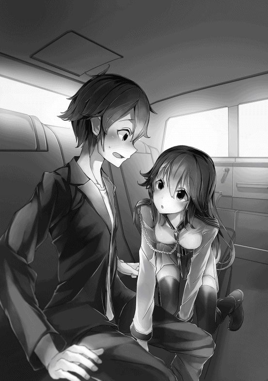
「どうしたの？ 空お兄ちゃん顔が真っ赤だよ」
「............」
そう言ってふいに顔を近づけてきた一花ちゃんに、思わず俺は反応してしまった。そして、心情の一部を吐露しそうになる。
「い、いや、一花ちゃんがあまりにもエｒ、い、いや、き、綺麗になってたから......」
しかしその瞬間、一花ちゃんは両手で開いた口を隠すように覆ったかと思うと、大きく見開かれた瞳からは、涙があふれ出てきた。俺の言葉が嬉しかったのだろうか？ それとも、何かマズイことでも言ってしまったのだろうか？
そういえば、以前山小屋で遥とも似たような状況に陥ったような気がする。あのときは確か、俺は何もアクションを起こすことができずに、ただ後悔しただけだったような気がしてならない。
ここは考えどきだ。ここで反応を間違えれば、また後悔することにならないだろうか？ あのときの後悔とは何か？ 言うまでもない。遥との親密でエロい関係だ。しかし、遥との関係はいまだ崩れているとは言い難い。進展していないだけで、比較的良好な関係を築けているという自負はある。いやいや違う。今は遥との関係をどうこう考えている場合ではない。目の前の状況に集中するんだ。
一花ちゃんは今、理由はどうあれ瞳に涙をためて俺を見つめている。俺は一花ちゃんとどうなりたい？ 恋人になりたいのか？ エロい関係になりたいのか？ 決まっている。その両方だ。こんなにかわいくて美人な恋人がいたら最高に決まっている。もう、小さいころのおませな一花ちゃんではないのだ。ロリとさげすまれることもない。
いやまてまて、そうなったら遥との関係はどうなる？ 遥との関係を捨てるのか？ どっちも嫌だ。それが俺の正直な欲望、もとい、願望だった。ならどうすればいい？
「............」
分からない。
考え込んでいるうちに、無情にも車は目的地に到着し、外側からドアが開けられた。結局俺はあのときと同じように、一花ちゃんに何もしてあげることができなかった。このとき俺は、目の前で大魚を逃がした漁師ような、どうしようもない喪失感を味わっていた。
「着いたわ」
白いハンカチで涙をぬぐった一花ちゃんが、そう言って笑顔を見せた。せめて、小洒落た台詞の一つでも言ってあげればよかったのだろうか？ 心配する素振りでも見せればよかったのだろうか？ 再会したときのように頭を撫でればよかったのだろうか？ 後悔の念ばかりが頭をよぎる。
「空お兄ちゃん？」
後悔の深い海に沈みかけていた俺を、一花ちゃんが引き戻した。
「早く降りましょう。お父様とお母様がきっと待っているわ」
一花ちゃんが手を引いて車を降りようとしたので、このときばかりはさすがに俺もマズイという危機感に突き動かされた。レディにエスコートされるなど、男としての名折れだ。こういった大義名分さえあれば、俺でもいっぱしの紳士的行動はとれるのだ。大義名分さえあれば。
「あ、ありがとう。空お兄ちゃん」
慌てて先に車を降りた俺は、周りの状況を確認するより先に一花ちゃんの手を取っていた。
その動きは、慌てていたせいもあり、優雅にとまではいかなかったと思うが、エスコートはできていたはず。一花ちゃんは嬉しそうにはにかみながら手を取られて車を降りていたから、俺の行動は間違ってはいないはずだ。そしてこのとき、彼女の笑顔を見て安心した俺には、ようやく周りを見る心のゆとりが生まれていた。車のドアに手を掛けた男は、恭しくもスマートに頭を下げており、微動だにしない。
「す、凄い家だね。それにこの庭も......」
「すべてお父さまと民たちのおかげです」
どこかの巨大な公園にでもあるような、噴水つきの丸い泉。その前に車が停められていた。噴水の向こうに見える正門までの距離もかなりあり、鮮明には見ることができない。
噴水周りの白く調和のとれた石畳の道を大きく取り囲むように、巨大なコの字型をした三階建ての威厳ある木造家屋が立ちかまえていた。事前情報なしにこの建物を見れば、由緒正しい老舗の大規模な超高級旅館とか大料亭とか、何とか会館とか何とか記念ホールとか言われても信じることだろう。とても一家族の住まう家だとは思えなかった。しかも玄関前からは、使用人だろうか、黒いスーツで決めた男とメイドらしき服にエプロンをした女とが左右に別れて列を作り、頭を下げていた。
「さあ、参りましょう」
あまりの豪邸に呆気にとられていた俺の腕を一花ちゃんがとった。俺の左腕に右腕を絡め、寄り添った格好だ。
「お、おう」
表面だけを見れば俺が一花ちゃんをエスコートしてるように見えるのだろうが、その実は彼女が俺に寄り添いながら誘導しているのだ。その前を藤崎さんが先導しているが。
玄関をくぐり建物の中に入ると、洋風とも和風ともとれる造りであり、廊下は大理石で土足のままだが、空いている部屋などを見れば、土足の部屋だったり畳敷きの部屋だったりと、用途に応じて使い分けているようだった。外見からもある程度想像できたが、部屋数は数えるのも嫌になるくらい多く、広い中央の廊下にはところどころに仕事中の使用人が頭を下げていた。
中央の廊下を進み、最奥の大きな扉を藤崎さんが開け、俺たちはその向こうに出た。どうやら、一花ちゃんの本当の住まいは通り抜けてきた建物の奥にあるようだ。
「では、私は執務室に戻ります」
「ご苦労様、藤崎」
藤崎さんの先導はここまでのようだ。扉の向こうは一旦和風の松などが植えられた中庭のような場所に出て、その奥に外見は和風で大きな平屋の屋敷が佇んでいた。
そしてようやく屋敷の中に入ったわけだが、中は土足ではなく、俺は玄関で靴を脱いだ。一花ちゃんも組んでいた腕をほどき靴を脱いでいる。脱いだ靴は、藍色の和服を身に纏った、仲居さんとか女中さんを上品にしたような若い女の人が片付けてくれた。一花ちゃんが俺を案内するように少し進んで振り向いた。
「ようこそ我が家へ」
一花ちゃんに案内されて通された部屋は、ふかふかの絨毯が敷き詰められたホテルのロビーと言われてもおかしくないほどのリビングだった。和風な屋敷の外見からは想像もできない豪華なリビングであり、そして広かった。
「おかえりなさい一花ちゃん。そしてお久しぶりね、空君。無事で良かったわぁ」
出迎えてくれたのは一花ちゃんの母、希美花さんだった。希美花さんはゆったりとした薄い黄色のワンピースに、白いレースのショールをまとっていた。髪型はあのころと変わらないショートボブだ。
希美花さんと最後に会ったのは俺の時間で半年前、シェルターに入る直前だった。一花ちゃんに健在だと聞いていて、会えることは想像できていたので、それほど驚くことはないだろうと思っていた。が、今目の前にいる希美花さんは、俺の感覚ではこの前会ったときからまったく歳をとっていなかったのには驚いた。
いや、歳をとっていないどころではない。若返っているようにさえ見えた。どう見たってまだ二十代の前半だろ......。
「どうしたの？ 空君」
「お、お久しぶりです希美花さん。いや、希美花さんが全然変わっていなかったから驚いて......まるで姉妹のようです」
「まあ、お上手ね、空君。嬉しいわぁ」
これは決してお世辞などではない。俺の本心から出た言葉だった。一花ちゃんは希美花さんを見て誇らしそうにしていた。モジモジとしたそぶりで恥ずかしそうに喜んでいる希美花さんは、目元などが一花ちゃんとそっくりで、どこからどう見ても二人は姉妹にしか見えなかった。ということは陽一さんも......。なんてことを想像していると、もう一人の会いたかった人物も顔を出した。
「やはり空君だったか、本当に無事で良かった。心配していたんだよ」
「陽一さん......お久しぶりです」
久しぶりに見た陽一さんも、やはりあのときからまったく歳をとっていないようだった。この前シェルターの前で会ったときは、ぼさぼさ頭にラフなポロシャツ姿だったのに、今では上品な黒いスーツを身につけ、髪を上げていて、やけに小綺麗になっている。そのためだろうか、陽一さんも二十代後半くらいに若返っているように見えた。こうやって高科一家の三人を見比べてみれば、一花ちゃんだけが成長したように思える。そのなかで、突然陽一さんが頭を下げてきた。
「空君には本当に悪いことをしたと思っている。この通りだ、済まなかった」
「えっ？ 何のことですか」
俺にはなぜ陽一さんが謝るのか分からなかった。突然真面目な顔になって謝ってきた陽一さんは、しばらく黙って頭を下げたあと、その理由を話しはじめた。
「空君には無理言ってモニターになってもらっただろ」
「はい。でも、あれは俺にも願ったりかなったりのバイトだったし」
「確かにそうだったかもしれない。しかし、あのシェルターに入ってしまった事で、空君からあの時代の人生や家族や友人たちを奪ってしまった事になるんだ。空君も今があのころからだいぶ先の未来だということは知っているだろ？」
「はい。でも、あのときシェルターに入らなかったらどうなっていたか分からないわけで、死んでいたかもしれないし」
俺に陽一さんを責めようという気持ちはまったくなかった。それどころか、モニターのバイトに誘ってくれて感謝しているくらいだ。今でもその気持ちは変わらないし、これからも変わらないと思う。
「確かに空君の言う通りかもしれない。けどね、君からたくさんの大事なものを奪ってしまった事には変わりないんだ。その責任は取らないといけないと思っている」
「責任だなんて、陽一さんが悪いわけじゃ......」
「大人としてのけじめだよ、空君。それに、今では僕もそれなりの責任ある立場になってしまったからね。何もしないなんてことはできないんだ」
「あの、聞きにくいんですけど、陽一さんの立場って......」
「一花から聞かなかったのかい。これでも一応、この国の長をやっているんだ」
「............」
陽一さんが高い身分だということは、一花ちゃんに接する人々やこの屋敷を見て想像していたが、まさか大公国の頂点にまでなっていたとは。ってことなにか？ ようするに王様ってことか？ この国は大公国だから大公様ってことなのか？
「えっ!? えーーーっ！」
「その間といい、驚き方といい、空君は相変わらずいいリアクションするねぇ」
「じゃ、じゃあアレですよ。希美花さんは王妃様で、一花ちゃんはお姫様になるんでございますか？」
「あはははは、空君そんな喋り方しなくていいよ、普通にね。まあ一応、彼女たちは大公妃と大公女と呼ばれてるけど全然気にしなくてＯＫだから。さぁ、座って座って、楽にしていいから。というか、いつも通りにしてくれないとお兄さん困るから」
陽一さんはお気楽に笑って、リビングの中央にある、丸いふかふかの白い毛皮のようなものが敷かれた場所を指し示した。昔と同じように、俺に対しては今でもよき兄貴分でいたいらしい。
陽一さんがリビングの奥側に座り、手招きする。その横に希美花さんが座って、足を流すように崩した。一花ちゃんには、リビングに着いてから、ずっと見つめられているのだが、その視線をそのままに俺を誘導し、陽一さんの正面に腰を下ろした。
「空お兄ちゃん」
そして一花ちゃんに促されるままに、その横にあぐらをかいたのだが、俺の心中はそれどころではなかった。俺と一花ちゃんが恋人みたいに手を組んで歩いているところを、一部の軍人と、この家のというか大公家の使用人くらいだろうが、それでもかなり大勢の人に見られている。
ということは、俺が彼、彼女らにどう見られていたのか？ どう思われたのか？ 大公女をたぶらかした不届き者？ それとも大公女の恋人？ 婚約者？ いずれにしても、悪目立ちにもほどがあるだろう。高科一家が貴族だとか大金持ちとかだったらそれほど気にする必要はないと思うが、国の頂点となれば話が変わってくる。
人の口に戸は立てられない。その噂 は確実に広がるんじゃないだろうか。それもかなりの短時間で。今後俺はどうなってしまうのだろうか。
「どうしたんだい？ 何か心配事でも？」
「あ、あぁ、何でもありません。こっちの話です」
「それはそうと、空君がシェルターから出てから今までのことを教えてくれないかい？ もちろん僕たちのこととか、この国のこととかも教えよう。空君も聞きたいよね？」
一花ちゃんと俺の噂が広まることも気になるが、それ以上に気になっていたこと。つまり、今陽一さんが言った内容は、俺が常々知りたいと思っていたことだった。
遥やヒカル爺から大公国のあらましなどは聞いていたが、日本は何があってどうなってしまったのかとか、身分制度のこととか、大公国の地理的な位置とか、気になっていたことは山ほどある。それに、陽一さんたちが辿った歴史とかも聞きたいし、紫水晶ごときで捕まった理由も知りたい。
さらに、一花ちゃんがなぜ俺にここまでべったりなのかも、その理由を知りたいところだ。本人を前にしては聞きにくいが。たぶん今日一日じゃ全てを聞ききれないだろう。でも、聞けるだけは聞いておきたい。
「は、はい。もちろんです」
「ちょうど昼時だ、昼食をとりながらじっくり情報交換といこうか」
「そうですね。俺も腹が減ってますし」
「こっちだ、付いてきなさい」
そう言って陽一さんが立ち上がったとき、灰色の和服を着た使用人らしき中年の女の人が、そそくさと彼のもとに近寄り、耳打ちした。陽一さんはうんうんと、それにうなずいている。
「空君、実を言うと君の情報は発掘師協会から入っていてね、鴻ノ江食堂というところにお世話になっているそうだね？」
「はい。住み込みでバイトさせてもらってます」
「その前は、その食堂の猟師さんと猟師小屋で生活していたとか」
そういえば発掘師協会の五所川原会長が、大公様に報告する必要があると言っていたなと、俺は思い出していた。まさか大公様が陽一さんだとは思いもしなかったが。
「その通りです。森をさまよっていた俺を助けてくれたのがその猟師さんです」
「実はその確認をとるために今朝鴻ノ江食堂に使いを出していたんだけど、今その連絡があってね。もちろん空君は不在だったそうだが」
「そうですよね。ここにいますから」
そう言って笑いながらも、陽一さん手が早いなと、一瞬考えた。しかし俺だって、もし陽一さんたちがいるかもしれないと知ったら、すぐにでも飛んで行ったことだろう。
「それでね、その空君を助けてくれた二人を呼びたいんだけど、いいかな？」
「もちろん構いませんけど、でもなぜ？」
「第一に、空君を助けてくれたお礼を言いたい。褒賞も出す。そして、二人を呼びたい理由はもう一つあってね」
さすがは大公様、太っ腹だとは思ったが、もう一つの理由というのが気になる。国のトップが一介の猟師に何の用があるのだろうか。考えるよりも聞いた方が早いと、このとき俺は思った。目の前に理由を知っている人がいるのだから。
「それは？」
「君が入っていたシェルターの場所を特定したいんだ」
「あのシェルターになにかあるんですか？」
つい聞き返してしまったが、あのシェルターにはろくなものがなかった。もし価値があるものがあれば、俺が持ってきたはずだ。持ち歩ければの話だが。
「あのシェルターには特別な素材がふんだんに使われていてね、その素材はとても貴重で今では手に入りにくいものなんだ」
「へぇー」
とは言ってみたが、特別な素材とは何だろうか。俺にはまったく分からないから後で聞いてみようか。
「ああ、もちろんあのシェルターは今では君の所有物ということになるから、我々が買い取ることになるけど、いいかな？」
大公の陽一さんが特別な素材と言っていた。しかも、ふんだんに使われていると。とすれば、そうとうな大金の可能性がある。金が手に入るというならありがたいことに変わりはないが、いきなり大金が手に入っても身を滅ぼしかねない。それに、俺にはあのシェルターをもらった記憶がない。
「え？ あれって、陽一さんの会社のものじゃないですか」
「もう会社は存在しないし、何千年も空君が使っていたものだからね。完全に君の所有物だよ」
「はぁ......俺としてはお金がもらえれば嬉しいですけど」
断れそうになかったから嬉しいなんて心にもないことをつい言ってみたものの、おそらくは大金だろうから、どう管理すればいいか、そのときに陽一さんに相談しようと、俺は考え、一旦棚上げしておくことにした。家でも買えればいろいろと都合がいいだろう。
それよりも気になったことは、陽一さんは何千年とも言っていたことだ。俺はいったいあのシェルターに何年閉じ込められていたのだろうか。
「詳しい話は食事のあとにでもしようか」
そう言った陽一さんは、報告に来た和服姿の人に耳打ちすると、俺を昼食の場へと案内してくれた。その道すがら、突然食堂からいなくなって、遥たちが心配しているだろうな、ということに今更ながら考えが及んでいた。あのネックレスをしていたことは不注意だったかもしれないが、自分が悪いことをしたとは思っていない。しかし、突然いなくなって遥たちに心配をかけたことは謝るべきだろう。
ここまで考えて、こうも思った。遥たちを呼ぶことを、つい何も考えずにＯＫしてしまったが、果たしてそれでよかったのだろうか？ 迷惑にならないだろうか？ 一花ちゃんと遥と俺の関係が、気まずいことになりはしないだろうか？ もしかしたら、俺はとんでもない地雷原に自ら足を突っ込み、阿波踊りでもしようとしているのかもしれない。
陽一さんに案内された部屋は、高科邸にしてはこじんまりとしたダイニングルームだった。
「この部屋だけこざっぱりしてますね。こう、なんというか......そう、シンプルっす」
「この部屋は、希美ちゃんがどうしてもと欲しがったんだ。だから後から作ってもらったんだよ」
部屋には小さな、とはいっても俺の知る一般家庭よりはかなり広いキッチンがあった。
「たまぁにだけど、希美ちゃんが手料理を作ってくれるんだ」
ノロけてだらしない顔になった陽一さんは置いておくとして、ダイニングテーブルは八人がけで、その席で用意されていた昼食をご馳走になりながら、俺がシェルターから出て今までどこでどうしていたかなどを、割と詳しく話した。
「俺の時間が止まってる間に、家族が増えたそうじゃないですか」
「一花に聞いたのかい」
「はい」
「一花の下に、っていうのは当たり前だけど、男の子が二人と女の子が二人だよ」
「今更ですが、おめでとうございます」
「ところで、空君は山小屋でどんな暮らしをしていたんだい？」
一花ちゃんも同席して俺たちの話を聞いているので、遥のことをどう話すか悩んだが、どうせ分かることだしと、覚悟を決めたうえで、包み隠さず山小屋での生活を説明した。
意外なことに、遥の名前──もちろん若い女の子ということは説明してある──を出したにもかかわらず、一花ちゃんは別段気にするそぶりも見せなかった。彼女はこれだけ俺にべったりなのだから、睨まれるなり、詰め寄られるなり、軽い修羅場を覚悟していただけに、拍子抜けの感が否めなかった。
これはアレなのだろうか？ 俗に言う、嵐の前の静けさとか。今はじっと聞いているだけで、その内心は穏やかでないのかもしれない。そうでないとしても、俺に年頃の女性の心中など推し量れるはずがなかった。
「だいぶ苦労したようだね」
「はい。森で迷ったときは死んだと思いましたから」
高科一家にシェルターを出てからのあらましを説明した俺は、前々から知りたいと思っていたことから聞くことにした。今も俺を見つめている一花ちゃんのことは、なるようにしかならないと、すでに腹を決めている。
「そろそろ質問していいですか？」
「ああ、僕たちだけ聞いて悪かったね」
「それではお言葉に甘えて。まず、日本というか世界はどうなっちゃったんですか？」
陽一さんは、すこしだけ考えるように、うーんと顎に手を当てたかと思うと、俺の顔を見据えるように話しはじめた。
「実のところ僕も詳しくは分かっていない。だから、僕が把握している範囲で話そう。伝え聞いた話になるんだけど──」
その話はにわかには信じられないような内容だった。陽一さんによると、少なくとも日本では天変地異とも呼べる大災害が起こったそうだ。
「これは、想像の域を出ることはないんだけどね、世界規模で天変地異が起こったと考えるしかないんだ」
「どうしてですか？」
「理由はね、大災害以降、当時の外国との接触が一度もなかったんだ。そして、東京都心は壊滅的に破壊されていてね、今では誰も住んでいないというか人の住める環境ではないんだよ。発掘師にとっては聖地とも呼べる宝の宝庫なんだけどね、でも、よほどの強者じゃないと発掘には行けないんだよ」
「へぇーそうなんですか......。発掘師になったらぜひ一度行ってみたいですね」
「空君、僕の話聞いてる？」
「もちろん聞いてますよ。聖地と言われる宝の宝庫なら行かないわけにはいかないじゃないですか」
「そういえば空君はトレジャーハントが趣味だったね。でも、東京は危ないから気をつけるんだよ。行く前には僕に一声かけてからにしてね。いろいろとアドバイスできるから」
「陽一さんは行ったことあるんですか？」
「うん、三回ほどね」
ということは陽一さんは発掘師なのだろうか？ いや今はそんなことより。
「ところで、天変地異って何があったんですか」
日本というか世界を襲った天変地異と聞いて俺が想像したのは、巨大地震とか巨大隕石くらいしか思い浮かばない。
「地震なのか、隕石なのかとか、原因は分からないんだ。ただ現象として、いたるところで大地が割れ、隆起し、あるいは陥没し、日本の地形は大きく変わったということが分かっているのさ。そして、大多数の命が失われ、人類は滅亡の危機に瀕していたらしいんだよ」
「そりゃあ世界規模の天変地異が起これば、そうなるのも納得できます」
「でもね、ある奇跡が起こったことで、人間や動物たちは絶滅から免れることになった。その奇跡が〝気〟なんだよ。天変地異を生き延びた生命に宿った〝気〟のおかげで、人類や動物たちは過酷な環境を生きぬき、再び繁栄を取り戻しつつ今があるというわけさ」
「そうなんですか......。ということは、〝気〟は俺たちがシェルターに閉じ込められた直後から生命に宿ったと」
「そう聞いている」
なぜ〝気〟が発現したのかは誰にも分からないらしいが、一番気になっていた〝気〟について、ある程度のことは分かった。しかし、俺が聞きたいことはまだまだある。
「ヒカル爺、あっ、俺を助けてくれた猟師さんが、俺たちの生活していた時代を神話の時代と言っていたんですが、どういうことか分かりますか？」
「正確には天変地異以前からそれ以降数百年が神話の時代と呼ばれている。僕たち、ああ、空君も含めてだけど、僕たちに宿る〝気〟が今の時代に生まれた人たちのそれと比べて、桁違いに多くて強いことは知っているよね？」
「俺と一花ちゃんの〝気〟に関しては知っています。陽一さんたちもそうなんですか？」
「希美花ちゃんもそうだし僕もそうだ。僕たち、神話の時代に生まれた人間は始祖と呼ばれていてね、始祖の世代から代を重ねるごとに、生命が内包する〝気〟の量と強さは減っていってるんだ。個人差は大きいけどね」
「つまり、神話の時代とは始祖の生きていた時代だと......。でも、なんで神話なんですか？」
「それはね、僕たちに宿る〝気〟が今の時代に生まれた人たちのそれと比べて、桁違いに多くて強いからなんだ。この時代の人たちからすれば、まさに神のようにね」
「神ですか、〝気〟が多くて強いだけで......」
俺たちは〝気〟が桁違いに多くて強いだけで、あとはこの時代の人たちと変わらない人間だ。たったそれだけの理由で神話だなんて、大げさすぎないか？ などと疑問を感じていると。
「空君は妖魔を見たことはあるかい？」
「話だけは聞いたことがありますが、見たことは」
「昔この辺りはね、妖魔が支配する土地だったんだ。そして妖魔は人を襲う。誰彼かまわずね」
「それと神話がどう関係あるんですか？」
「僕たちは最初、北にある和国というところに住んでいたんだけど、和国の人々は妖魔の脅威に怯えながら生活していたんだ。まぁ、今でもそれは変わってないんだけどね」
「はあ」
「それでね、これはこの国ができた理由でもあるんだけど、僕たち家族が中心となってこの地の妖魔を殲滅したんだ」
「それで陽一さんが大公様になったと」
「概略はそういうことになる」
陽一さんはなかなか核心をついてこない。彼は話しはじめると、こうやって必要以上のことを話に絡めて長話になる。しかし、その長話の内容は、俺の知りたいことだった。だから俺は話の腰を折らずに聞いていたが。
「でも、妖魔と神話の関係は？」
「僕たち、つまり始祖がいなければ妖魔の群れは倒せない。この時代の人でも強い人はいるから、その人たちを集めて大勢でかかればできないこともなかったんだけどね。でも、決して少なくはない人命が失われることは確実だったし、全滅していたかもしれない。それほどに妖魔は強いんだ。この辺りにいた妖魔は僕たちよりは弱かったけどね」
「つまり、今の時代の人ではなかなか倒せない妖魔を、俺たちは楽に倒せるから神のように敬われると？」
「いや、そうなんだけど、そうじゃないんだ」
そうだけどそうじゃないって、相変わらず分かりにくいことを言う陽一さんに、俺は首を傾けていた。希美花さんはそんな俺たちの様子を微笑ましく見ている。一花ちゃんの視線は俺に向けられたままだ。
「つまり、僕たちが生まれた時代の人たちはね、あふれる妖魔を、今の時代の妖魔より格段に強くて多い妖魔を退けて人間の国、和国を造ったんだ。それが言い伝えとして残っていてね。それは今の人たちからすれば神のごとく敬われることらしいんだ。それ以外にも、今の時代では到底再現できない科学技術もあわせて神話の時代と呼ばれているんだけどね。あっ、そうそう。この国は僕たちが生まれた時代のどこだと思う？」
ようやく核心を話してくれた陽一さんは、そのまま俺の知りたかったことを質問してきた。それは俺の質問だと、ツッコミたくもなったが、いつものことなので彼に合わせることにした。
「深谷市の近くじゃないんですか？ あのシェルターがあった陽一さんの会社の研究所の近く。あっ、でも富士山が見えないか......」
「深谷じゃない。ここは御殿場なんだよ」
「え？ そうだったんですか」
「おかしいと思うでしょ」
「富士山が......それに、箱根の山道は？」
「富士山はもうないんだ。噴火したのかどうかは分からないけどね。富士山があった場所は今、妖魔の巣窟さ。そして、大公国と和国をつなぐ街道は箱根を通っているんだけど、箱根はもう山じゃなくて荒地になっているんだ」
富士山が見えないことは常々疑問に思っていたことだ。しかしまさか、富士山がなくなっていたとは思わなかった。しかも、箱根が山じゃないなんて。陽一さんが言う天変地異が、よほどひどかったということなのだろうか？ ふつうは、噴火したくらいであの大きさの山が吹き飛ぶなんて考えられないし、箱根の山がなくなるなんてもっと考えられない。それなら、深谷はどうなったんだろう。
「陽一さんたちがシェルターから出たときはどんな状況だったんですか？ 場所とか周りの状況とか」
「僕たちは発掘師たちに掘り出されたんだ。和国の西の山岳地帯でね」
「和国の西って？」
「ああ、和国は僕たちの時代の埼玉から筑波にかけた地域なんだけど、僕たちのシェルターは、元あった場所、つまり深谷に埋まっていたんだ。深谷近辺は地盤がぐちゃぐちゃになって激しく隆起していたんだね。今では山岳地帯の鉱山だよ」
「ということは、俺が入っていたシェルターも、場所は深谷のままだったんだ」
「それを確認するためにも彼らを呼ぶんだけどね」
そうか、それならなんとなく納得できる。深谷が山になって、その麓にあたる秩父あたりが、おそらく俺が迷った深い森だろう。詳しいことはヒカル爺と陽一さんに任 せることにした。
「あの、すこし聞きにくいんですが、貴族とか身分とかそこらへんについて聞いていいですか？」
「構わないよ」
陽一さんだって俺と同じ時代に生まれた現代人だ。それなのに、なぜ身分制度をとっているのか？ なくせる立場にあるにもかかわらず......。
「じゃあ聞かせてもらいます。なぜこの国には身分制度があるんですか？ どうして軍人が偉いんですか？」
「空君には理解しにくいだろうね。僕だっていまだに、身分制度には違和感あるから」
「え？ じゃあなぜ廃止しないんですか？」
「したくてもできないんだよ」
「できない？」
できないということは、必要だ、ということだろう。身分制度が必要な理由って......。
「まず軍人なんだけどね、彼らには拒絶できない義務があるんだ。一般人には無いね」
「それは？」
「彼ら軍人はね、妖魔からこの国と国民を守る義務があるんだ。自分の命を盾にしてでもね。その見返りにいくつかの特権がある」
国と国民を守るのは、軍人なら当たり前のことじゃないだろうか？ しかも特権がついてくるとなれば、不公平に思えなくもない。
「でもその義務って、軍人なら当たり前のことじゃないんですか？」
「今の時代の軍人はね、僕たちが生まれた時代の戦争をしていない国の軍人と比べて、生存率がとても低いんだよ。戦う相手は人じゃなくて妖魔だけどね。特権を与えて厚遇しなければ誰も軍人には志願しないよ」
「徴兵とかは無いんですか？」
「妖魔と戦えない人間を徴兵しても意味はないんだ。それに空君、徴兵制度なんかあったら君は嫌だろう？」
確かに、いくら国と国民を守るためだとはいえ、戦う手段を持っていない人にとって、無理やり徴兵されることは辛いことだろう。しかし、特権を与えてまで軍を作るってことは、それほど妖魔が強いってことなのだろうか。
「妖魔ってそんなに強いんですか？」
「強いというより、脅威と言った方がいいかもしれない。妖魔は〝気〟を持つ生命に対してとても残忍だからね。山野の動物は逃げることもできるけど、人間の足は遅いから。飛び道具も普通の人が使えば何の役にも立たないしね」
そういえば、遥が言っていたな。この時代の人や動物には銃が効かないって。人や動物より強い妖魔ならなおのこと効かないんだろう。
「ところで、軍人の特権ってなんなんですか？」
「警察権とか、納税の免除とかだね」
だから俺はあのヤロウに捕まったのか。理由はあとで聞くとして、軍があるのに貴族がいる理由も聞いておきたい。
「貴族はどうなんですか？」
「貴族はね、すこし特殊なんだけど、やはり妖魔からこの国と国民を守る義務がある。そしてね、義務じゃないんだけど公共工事とか、国のためになることを進んでしなきゃならない。自らの資金でね。そしてもう一つ。これが最も重要なことなんだけど、貴族には沢山 の子供をもうける責務があるんだ──」
陽一さんによると、北にあるという和国には、大公国よりもはるかに厳しい身分制度があるらしい。しかも、和国の貴族には大公国の貴族以上の特権があるそうだ。しかし話を戻せば、子供なら別に貴族じゃなくてもふつうにできるんじゃないのか？ 人口を増やしたいのなら、それこそ一般人の生活を補助しないとダメなような。
「なぜ貴族の子供なんですか？」
「貴族になるにはね、いくつか条件があって、少なくとも、国の役に立つ大きな実績をあげること。〝気〟力が極めて高いこと。が、必要条件なんだ。そして、〝気〟力が高い人間の子供は、同じように。〝気〟力が高くなる」
「なぜ。〝気〟力が高い子供が必要なんですか？」
「国と国民を守る人材を確保するためだよ。言ったよね、軍人や貴族は妖魔から国や国民を守る義務があるって。妖魔に怯えて暮らす今の時代はね、それに対抗できる人材が多くないと国民の安全が保障できないんだ。だから、貴族には沢山の子供をもうける責務がある」
なるほど、たしかに強い人間が増えれば妖魔に対抗する戦力が増えることになる。強い〝気〟を持つ人の子供を増やして、それを戦力に数えるなど、人道的には間違っているように思えるが、今の時代ではそれも仕方のないことなのだろうか。だから仕方なく、陽一さんも希美花さん以外に奥さんをもらったのだろう。俺は確認の意味を込めて聞いてみることにした。
「だから陽一さんも？」
「その質問にはわたしが答えるわ。陽一君じゃ答えにくいから」
「希美花さん」
答えにくそうにしていた陽一さんを見かねたように、希美花さんが口を開いた。この質問を希美花さんたちの前で出したのは、マズかったかもしれない。そう思っていたら、希美花さんは俺の心情をくみ取ってくれたように、微笑みながらもやさしく答えてくれた。
「いい、空君。陽一君もね、最初は戸惑っていたの。もちろんわたしも嫌だったわ。陽一君がほかの女と寝るなんてね。でもね、軍人さんたちと一緒に妖魔の大群と戦って、その考えは変わったわ。嫌とか、陽一君を取られたくないとか言っている場合じゃないって」
「一花ちゃんは平気だったんですか？」
「私は平気。だって私には空お兄ちゃんさえいてくれればいいんだもの。もちろん空お兄ちゃんがほかの女の人に子種を授けることも必要だと思ってる」
「い、いや。俺はそんな......」
一花ちゃんの口からまさか、子種なんていう衝撃的なセリフが出るとは思っていなかった。しかも彼女は、自分以外の女性にまで俺の子種を分け与える必要があると、当然のように言う。だから遥の名前を出しても平然としていたのだろうか。
ともかく、そんな一花ちゃんを見ていると、彼女が俺よりもはるかに大人に思えてきた。それが俺には、新鮮でもあり、ショックでもあった。俺は、彼女にまだ幼かったころの面影を重ねてしまっていたのかもしれない。そして、なぜだか急激に恥ずかしくなって、顔が熱くなったような気がした。そしてその恥ずかしさを紛らわさずにはいられなかった。
「は、話は変わるんですが、なんで俺は捕まったんですか。これ持ってたくらいで」
そう言って、一花ちゃんに返してもらったネックレスをポケットから出した俺に、一花ちゃんは自分の首にかけていたネックレスを取り外した。そして、彼女が持っていたネックレスに俺は見覚えがあった。シェルターに入る前に渡したものだ。
首から取り外したネックレスを胸の前で大事そうに握りしめ、一花ちゃんは昔を思い出すように話しはじめた。
「私たちが入っていたシェルターは発掘師に掘り出されたの。シェルターを出た私たちは発掘師の人たちと一緒に坑道を地上に向かっていたわ。私はまだ小さかったからお父様におんぶされてね。狭くて入り組んだ坑道は、暗くてとても怖かった──」
陽一さんに背負われて坑道の出口に向かっていた一花ちゃんは、突然前の方の天井が崩れ落ちて現れた妖魔に襲われたそうだ。暗くてその姿は見えなかったらしい。
「そのときの恐怖は今でも忘れられない──」
現れた妖魔は、物理的実体のない〝妖気〟だけの存在で、掘り出してくれた発掘師の人たちが倒してくれたそうだ。そのときに飛び散った〝妖気〟の一部が、運悪く一花ちゃんの小さな体に入り込んでしまったそうだ。
「あのときの怖さ、痛さ、苦しさは今でも覚えてる。体の内側から壊されていくようなおぞましい感覚。私はこのまま死ぬんだと思ったわ。でも、空お兄ちゃんがくれたこの宝玉があったから......」
込み上げてくるものを抑えるように、一花ちゃんはネックレスを胸の前で再び握りしめた。 それを見かねたように陽一さんが口を挟む。
「そこから先は僕が話そう。空君はどの程度〝妖気〟について知っているんだい？」
「〝気〟と相反する存在で、邪悪なものとしか」
「おおむねそれで正解だ。そして補足すれば、〝妖気〟は〝気〟で相殺することができる。だから、体内に多くの〝気〟を内包している人は、〝妖気〟が体に入り込もうとしても体内の〝気〟でその前に相殺できるんだ。しかし──」
陽一さんの話は、すぐに脱線して長くなるのでまとめると。シェルターから出たばかりの陽一さんたち三人の体には、ほとんど〝気〟が満たされておらず、体に入り込んだ〝妖気〟に対抗することなどできるはずがなかった、ということらしい。
「──しかも、〝妖気〟に入り込まれた一花はまだ幼く体が小さかった。だから〝妖気〟は瞬く間に彼女の体中に浸透し、その幼い体を内側からむしばみはじめたんだ。急いで坑道の外に出て発掘師の人が治療をはじめてくれたんだけど、一花の体はみるみるドス黒い紫色に変色していってね。必死に治療をしてくれている女性の発掘師の顔色が、絶望の色に染まるのを見て、このままではもうダメだ、一花が死んでしまう。そう思ったとき、彼女の首にかけられていたネックレスの紫水晶が、はらりと服からこぼれ落ちたんだ。そして、治療をしていた発掘師がその紫水晶を見て、目の色を変えた、ということだよ」
「どうして目の色が変わったんですか？」
「宝石には二種類あってね、今の時代ではその片方を宝玉というんだけど、まぁ、厳密には三種類なんだけど話がややこしくなるから。空君が聞きたいっていうなら話すけど」
「いえ、今はいいです。それより、宝玉ってなんなんですか？ 宝石とどう違うんですか？」
「宝玉はね、簡単に言うと色がついた透明な宝石の総称なんだ。ああ、ガラスに色を付けたものはだめだよ。あくまでも自然石じゃなきゃダメ──」
陽一さんの話をまとめると、というかこの人は脇道にそれずに話すことができないのだろうか。この時代に来る前は、ここまで長話をする人じゃなかったのに。
さておき、宝玉とは色がついた透明な自然石のことで、光の三原色にそれぞれ特有の効果があるそうだ。その効果とは、〝気〟の増幅効果であり、赤には攻撃力増強、青には回復力増強、そして緑には防御力を高める効果があるらしい。
さらに赤と青が混ざった紫には攻撃力と回復力を増強させる効果があり、赤と緑が混ざった黄色には攻撃力と防御力が混ざった効果があるとのことだった。
「──ようするに、青と緑が混ざった水色には、回復力と防御力といった具合ね。ただし、複合される効果は二つまでで、全ての色が混ざった白には何の効果もないんだ」
「でも、その妖魔を倒せたほどの発掘師なら、増幅効果なんか使わなくても一花ちゃんを治せたんじゃないですか？」
「そう簡単な話じゃないんだ。うーん、どう言ったらいいかな──」
また話が長くなったので簡単にまとめると、人の体に入り込んだ〝妖気〟を〝気〟で相殺するだけなら、その発掘師でも簡単にできたらしい。しかしそうしてしまえば、一花ちゃんの体の中で〝気〟と〝妖気〟の対消滅が起こり、その熱や衝撃で、彼女の体細胞まで破壊されてしまうそうだ。
「──そうなれば、一花に待っているのは死ということなんだ。それとね、〝妖気〟に侵されたまま放っておくと、死よりも辛い結末が待っていて、つまり......」
「つまり〝妖気〟に侵された人を放っておくと、妖魔になってしまうと」
「そう、その通りだよ──」
陽一さんによれば、もと人間だった妖魔も、いるところにはかなりの数がいるということだった。しかし、また話がそれてしまっていることに気づいた俺は、陽一さんを誘導するように話を振った。
「それで、一花ちゃんはどうなったんですか？」
「ああ、そうだったね。空君が一花にプレゼントしてくれた宝玉、つまりこの紫水晶は──」
前にも言った通り、紫水晶は攻撃力増強の赤と、回復力増強の青が混ざった紫色をしている。治療にあたった発掘師は、紫水晶に自分の〝気〟を通すことで、一花ちゃんの体内に入り込んだ〝妖気〟を攻撃し、相殺。同時に傷ついて弱った体細胞を修復し、回復させたということだった。
「──だから、宝玉と呼ばれる宝石、つまり透明で色がついた宝石には高い価値があるんだ」
「でも、紫水晶なんてサファイヤとかルビーに比べたら、それこそただの石ころでしょ？ 数も多いし簡単に採れる」
「そう思うかい？ 僕たちが生まれた時代だったらそうかもしれない。でもね、今の時代ではどっちも同じくらい価値あるものなんだ。たしかに、希少価値だけでいったらサファイヤもルビーも、そして、宝玉ではないダイヤモンドの方が上さ。しかし、宝玉として見た場合は、その効果が価値の全てなんだ。それに、紫水晶だって日本のどこで採れるかなんて、今は誰も知らないし、地形もずいぶん変わっちゃったからね」
知っている。俺は紫水晶の産出地も、黄色い宝石、琥珀の産地だって知っている。地形が変わったといっても、緯度経度は変わらないはずだ。もしかしなくてもこれは、俺だけのとてつもない、チートとも呼べるアドバンテージじゃないだろうか。なにせ、小指の先程度の大きさの紫水晶ひとつで軍に捕らえられるほどだ。その産地に行くことができれば、どれだけの......。いや、今はそんなことより。
「それで、話を戻したいんですが、その後一花ちゃんは？」
「体の方は順調に回復したんだけどね。でも、心の方に後遺症が残ったんだよ。ああ、心配しないで。完全ではないけど、もうほとんど克服したから」
たしかに、幼少のころに死の恐怖にさらされたなら、それはトラウマになるだろう。 ほとんど克服したと陽一さんは言っているが、完全ではないとも言っていた。ならば、一花ちゃんの前でこの話題に触れることは、できるだけよそうとこのとき俺は思った。まだまだ知りたいことはあるが、これでおおかた、知りたいことを聞くことができた。 そう思ったのだが、ひとつだけ大事なことを聞き忘れていることを思い出した。
「話は全然変わるんですけど、どうして陽一さんが王様......ああ、大公様でしたね。その大公様になったんですか？」
「そうだねぇ、どのあたりから話そうか......」
そう言った陽一さんは、本当に待ってました、という顔をしている。この流れだと、とてつもなく長い話になりそうな気がしてきた。たしかに俺は陽一さんが大公になった理由を知りたいが、余計な無駄話にまでは付き合いたくない。
「あの、できるだけ簡単にお願いします」
「それは残念だねぇ。でも、あまり時間をかけられないか」
このとき陽一さんは、かなり残念そうな表情をしていた。よほどこの話をしたかったのだろう。
「シェルターから出た僕たちは、和国で生活をはじめたんだ。当然、仕事をしなけりゃ生活はできない。まぁ、仕事をはじめるまでにもいろいろあったんだけどね。とにかく僕は仕事をはじめた。そしてその仕事は──」
要約すると、陽一さんは和国でアルバイトをしながら食いつなぎ、発掘師の資格を取った。これは、関東から中部にかけて、どのあたりにどんな施設があったか知っているというチートを活かす選択だった。俺が考えていることとまったく同じことを陽一さんは考えたわけだ。そして、発掘師として目覚ましい成果を上げ、財を築いた。
それ以降、陽一さんの飛び抜けた〝気〟力と、財力に目をつけた和国朝廷から、貴族として国に尽くしてほしいと、たび重なる要請があった。その理由は、和国南部を領地として南方からの妖魔流入を食い止める目的があったらしい。しかし、陽一さんはこれを固辞した。理由は貴族として縛られたくなかったかららしい。
「でも、なったんですよね？ 貴族に」
「やむを得ずね。和国で暮らしていくうちにね、妖魔流入による悲惨な人的被害を何度も目のあたりにしてたんだ。だから考えを改めたんだ。最初は軍に協力して防衛戦線に参加したりしていたけど、個人の力だけではどうにもならなかった。指揮権があれば、もっと効率的で人的被害が少ない防衛戦線が構築できる。そう考えて朝廷の要請を受け入れた。貴族として軍をまとめあげ、和国南部戦線防衛軍を組織したんだよ」
普通は個人で軍をまとめ上げるなんて大それたこと、考えないと思う。でもそれを陽一さんは成しとげたということだろう。
「へー、そういういきさつだったんですか。で、それからどうしたんですか？」
「僕なりに効率的な防衛戦略ってものを考えてね。結果的にはそれが功を奏して人的被害は抑えられ、和国内部への妖魔流入は著しく減少したんだ。妖魔の流入を完全に防ぎきるまでには至らなかったけど、人々が割と安定した暮らしを取り戻したとき、僕たち家族が和国で暮らしはじめて八年、貴族になって四年が経過していたんだよ」
「苦労したんですね。それで、大公国はなぜできたんですか？」
「まあ、苦労はしたね。でも、防衛軍も少しずつ消耗し疲弊していたんだ。このままでは、いずれ防衛戦線が崩壊するだろうと思った僕は、妖魔が定期的に襲ってくる原因を調査するため、単身南方へと赴いたんだ」
いちいち前置きが入るけど、ここは我慢して聞くしかないよな。でも、長い前置きは勘弁願いたい。
「それと大公国に何の関係が？」
「かつての御殿場、今の大公国周辺に、妖魔の巣とも呼べる妖魔たちが密集する場所を見つけたんだ。僕は朝廷にこれを報告し、同時に妖魔の巣を一掃するための作戦案と、御殿場南方に川と堀を使った新たな妖魔流入を防ぐための方策を提示したんだよ。和国朝廷は、今までの僕の実績と、和国南部戦線防衛軍の功績を鑑み、作戦案を承認してくれた。さらに、和国朝廷軍から援軍を派遣してくれたんだ。僕は、朝廷の援軍を加えた和国南部戦線防衛軍を再編し、翌年、御殿場に巣食う妖魔たちを殲滅するための作戦を実行に移したのさ」
ようやく核心をついてきたな。それにしても、あの陽一さんがココまでスゴイことをする人だとは思わなかった。
「へー、スゴイですね」
「いやぁ、大したことじゃないよ。でね、この作戦には、成長して十六になった一花と、希美ちゃんも参加したんだ。当然、僕は反対したんだけど、ふたりの意思は固くてね、しぶしぶだけど参加をみとめたんだ。一応、ふたりの〝気〟力が、僕に匹敵するくらいあって、御殿場近辺の妖魔じゃ、束になっても敵わないという担保があったから認めたんだけどね」
「じゃぁ、一花ちゃんも希美花さんもスゴク強いと」
「とても強いよ。とくに今の一花は僕より何倍も強いんだから」
主観的過ぎてさっぱり分からないけど、希美花さんも一花ちゃんも人々を苦しめる妖魔を倒せるくらい強いということだろう。さらに、あの小さくてかわいかった一花ちゃんが今では陽一さんよりも強いというのは驚きだった。
「それでね、彼女らふたりの活躍はめざましく、結果的に作戦は大成功をおさめたんだ。その功績をもって、僕は大公の爵位をうけ、富士大公国が誕生した。とまあ、こんないきさつでね」
「でも、一花ちゃんは妖魔にトラウマ的なものがあったんじゃ」
「一花はね、努力したんだよ。それはもう見ていられないくらいにね」
「なぜそれほど？」
「まぁ、本人の前では言いにくいから言わないけど、一花が頑張ったのは、空君、君が関係してるんだ」
「？？？」
横に座って俺の方を見ながらも、妙にモジモジ照れている一花ちゃん。そんな彼女を見て首をかしげていたところに、例の陽一さんに伝言をした和服姿の女の人に連れられたヒカル爺と遥が現れた。ヒカル爺は黒のスーツ姿で、遥は赤いワンピースのドレスを身にまとい、いつもはしない化粧をして別人のように綺麗になっている。すっぴんの遥も可愛いが、化粧をした彼女もまた、見惚れるほどに見目麗しかった。
そのヒカル爺と遥が、俺を見て一瞬安堵したような表情を浮かべた直後、陽一さんを見るや両目を見ひらき、いきなりその場で土下座状態で額を床に擦りつけた。
「た、大公陛下におかれましては......」
やれやれと、まいったように陽一さんは首を振っている。
「そんなに畏まらないでください。お二方は空君の恩人です。どうか顔を上げて楽にしてくれませんか」
「し、しかし大公陛下......」
「お二方をお呼びしたのは私的な要望だし、それにほら、空君はこんなにくつろいでいるよ」
陽一さんがここまで言ってようやく二人は顔を上げ、正座の姿勢になった。しかしその顔はまだ、二人ともガチガチにこわばっている。しかも、あれほど遥のことを気にしていないように振る舞っていた一花ちゃんから、遥に向けて強烈な〝気〟の圧力がぶつけられていた。これはあれだろうか？ 修羅場というやつになるのだろうか。
「貴女が遥さん？」
「は、はい、そのようにございます。一花様」
一花ちゃんの〝気〟にあてられた遥は、若干震えながら答えていた。しかし。
「空様を助けていただいたこと、ありがとうございました。お二方には感謝してもしきれません」
そう言って〝気〟をおさめ、一花ちゃんはにっこりと微笑んだ。遥はホッとしたように安堵の表情を浮かべている。しかし、どうして一花ちゃんは俺のことを様づけで呼んだのだろうか。
「今日お二方をお呼びしたのは他でもない。空君を助けてくれたこと、この通りお礼申し上げる」
ようやく場が和んだところで、陽一さんがヒカル爺と遥に深々と頭を下げた。
「なんと勿体ない。頭をお上げください、大公陛下」
「ははは、気にしないでくれ。空君は私たち高科家の古い友人でね、いわば家族も同然の間柄なんだ。だからお二方には恩賞を渡そうと思ってね」
「恩賞だなんて私どもには」
「いや、これは私のエゴだ。ぜひとももらってほしい」
「大公陛下がそうまで仰られるなら、お断りするわけにもいきますまい。恩賞はありがたく頂戴いたします」
そう言ってヒカル爺は恭しく頭を下げた。
「恩賞は帰りにお渡ししましょう。ところで、お二方をお呼びしたのは他にも理由がありまして、森で行き倒れた空君を発見した場所や、そのときの状況を詳しく聞きたいのです。協力していただけますか？」
「もちろん協力いたしますとも。ただ、遥はそのとき一緒にはいなかったゆえ、報告は私一人でしたいのですが」
「構いません構いません。ささ、ヒカルさんはこちらに」
そう言って陽一さんはヒカル爺を奥の部屋へと連れて行った。それはもう嬉しそうに。あの表情から察するに、俺が行き倒れていた場所と状況を聞くことにかこつけ、長話をきめこむつもりだろう。そして、あとに残ったのは希美花さんと一花ちゃん、それに俺と遥だ。どちらかといえば、場の雰囲気を和ませていた陽一さんが去り、あとに残された俺たちの間には少しだけぎこちない空気が流れた。
「まぁまぁ、陽一君ったらあんなに嬉しそうに」
その空気を希美花さんの一言が押し流した。しかし。
「お母さま、わたくしは遥さんと二人だけのお話がしたいです。席を外しますがよろしいですね」
「ええ、ええ、構いませんよ」
「では遥さん、わたくしについてきてください」
虚をつかれたような顔をして固まった遥だったが、一花ちゃんのいわば強制的な申し出に、彼女が逆らえるはずもなかった。それはもうヘビに睨まれたカエル、いや、まな板の上のコイと言った方が正確だろう。このときの一花ちゃんには、王族の威厳とでも言ったらいいだろうか、オーラと言った方がいいだろうか、思わず平伏してしまいそうな神々しさがあった。遥がああなってしまったのも仕方がないだろう。
俺は当初、一花ちゃんと遥がバチバチと、それはもうライバル心むき出しの火花を散らしあうものと想像していた。しかし実際には、二人の間には絶望的なまでの身分差があった。一花ちゃんと遥の歳はほとんど変わらないが、かたや一国のお姫様、かたや平民の娘。二人には、俺では想像できないような絶望的な身分の開きがあるのだ。
この時代では、それほどまでに身分というのは絶対的なものなのだろう。普段の勝気な遥を知っているだけに、言われるがままの彼女を見て俺はそう思った。そして同時にこうも思った。今すぐには無理でも、大公国に浸透させることは無理だとしても、せめて一花ちゃんと遥の間には、身分差を意識させない関係を築きたいものだと。それができなければ、俺は自分を許せないだろう。
「あらあら、陽一君も一花ちゃんもいなくなっちゃったわ」
崇高な決意というのはおこがましいかもしれないが、少なくとも俺にとっては大切な想いを胸に刻み、決意を新たにしていたところに、希美花さんが気の抜けるようなトーンで独り言をつぶやいた。しかし、彼女が言うとおり、今ここには俺と希美花さんしかいない。これはチャンスなのだろう。チャンスと言っても、希美花さんとエロい関係になるチャンスなどではない。そう、アレを聞くタイミングは今しかないのだ。
「あの、希美花さんに聞きたいことがあるんですが、いいですか？」
「あらあら、わたしを口説こうとしても無駄よ。わたしには陽一君がいるんだから」
「そっ、そんなことをするつもりはありません」
「冗談よ。で、聞きたいことってなあに？」
「どうして一花ちゃんはあそこまで俺にベッタリなんですか？」
あごにピンと伸ばした人差し指を当て、希美花さんはアヒル口でうーんと考え込んだ。
「一花ちゃんには内緒よ」
「あ、はい、もちろん言いません」
「一花ちゃんが空君にゾッコンなのはね、ひとつは陽一君が原因なの。もう一つは空君、あなたにも責任があるわ」
「俺の責任って、もしかしないでもあのネックレスですか？ それともしょちゅう遊んであげていたことですか？」
「その両方よ。でも、どっちかっていうと、ネックレスの方が大きいかな」
これは俺でもある程度予想できていたことだった。しかし、この程度で一花ちゃんがああなるとは思えなかった。
「もうひとつの陽一さんが原因って、彼は一花ちゃんに何をしたんですか？」
「空君、シェルターに入っていたとき、退屈じゃなかった？」
「それはもう退屈でしたよ。受験勉強しかすることがなかったし、それもすぐに飽きちゃったし」
「そうよね。あんな環境じゃ、誰だって退屈になると思う。それは一花ちゃんも同じだったわ」
「それでどうしたんですか？」
「退屈で退屈で何もすることがなかった一花ちゃんはね、かんしゃくをおこしたの──」
話を聞いてみれば、希美花さんも陽一さんほどではないが話が長い人だった。それは置いておくとして、あの状況で一花ちゃんが癇癪を起こすのは当然の結果だと俺は思った。そして、癇癪を起こした一花ちゃんをなだめるために、陽一さんは俺の名を使って彼女をあやしていたそうだ。
『いい子にしていないと空お兄ちゃんが遊んでくれなくなるよ。一花ちゃんは空お兄ちゃんが大好きだもんね』
『いい子にしていたら空お兄ちゃんからご褒美がもらえるよ』
『空お兄ちゃんは何て言っていた？ 頑張れって言っていたよね。だから一花ちゃんも頑張るんだ。そうしたら空お兄ちゃんがきっとまた、ご褒美をくれる』
などなど、なにかにつけて俺の名前を出して一花ちゃんを言いくるめていたらしい。
「シェルターから出たあとも、事あるごとに空君の名前を使って言うことを聞かせていたの。約束を守らないと空お兄ちゃんが見つからなくなるよ。とか、空お兄ちゃんのお嫁さんになりたかったら頑張りなさい。みたいにね」
これはもう完全な刷り込みだろう。鳥のヒナが、はじめて見た動くものを親と認識する以上の刷り込みだと俺は思った。
一花ちゃんが俺のことを慕ってくれるのは確かに嬉しい。彼女は可愛いし、温かいし、柔らかいし、体つきもエロいし、彼女になってくれるには申し分のない人だ。けれども一花ちゃんが俺を慕ってくれるのは、俺が彼女になにかをしてあげたとか、親身になって相談に乗ったとか、彼女のためになにか特別なことをしたとか、そういった理由があってのことではなかった。
たしかに一花ちゃんとはよく遊んであげたし、風呂に入れたことだって何回もある。泣いている彼女をあやしたことも一度や二度ではない。しかし、それだけであそこまで慕われるのは、俺としても納得がいかなかった。
だから俺は柄にもなくこう思った。一花ちゃんの想いに応えられるだけの男になろう。慕われて当然のことを成そうと。
「話してくれてありがとうございました。俺も一花ちゃんに慕われる資格をもった男になろうと思います」
「あら、嬉しいわぁ。一花ちゃんに聞かせてあげたいくらい。でも、黙っていてあげるわ。だから空君も、わたしが話したこと、一花ちゃんには黙っていてね」
「はい、分かりました」
このあと、希美花さんとたわいもない世間話、といってもそれは彼女にとってだが、貴族の日常だとか陽一さんのほかの奥さんや子供のことだとかを話してもらった。ほとんど希美花さんが一方的にしゃべり、俺は聞き役に徹する感じだ。そして、その話も一段落したところで一花ちゃんと遥が戻ってきた。
「話は終わった？」
「ええ、これからは一花様とも友人としてお付き合いすることになったわ」
そう言った遥の表情は、憑き物がとれたように晴れ晴れとしたものになっていた。一花ちゃんのことを様づけで呼んではいるが、へりくだっている様子も伺えない。いったい二人でどんな話をしたのか、何があったのか、俺には想像もできないが、彼女らなりに納得できる結論にたどり着いたのだろう。二人の吹っ切れたような様子からは、そうとしか思えなかった。
「そう、それは良かった」
「空、良かったじゃないわよ。心配したんだからね」
そう言った遥の瞳から涙があふれてきた。そんな遥を見かねた俺は、いつのまにか彼女を抱きしめていた。
俺の胸に顔をうずめる形になった遥は、声を上げて泣き出してしまう。そしてこのとき、俺の体は自然に動き、彼女の頭を優しく撫でていた。一花ちゃんもその様子を優しそうな瞳で見つめている。
「ごめん、心配かけたね。もう帰ろうか」
「うん」
「希美花さん、一花ちゃん、今日はもう鴻ノ江食堂に帰ろうと思います。来月には発掘師の試験もあるし」
「あらあら残念ね。夕食もご一緒できると思ったのに」
「お母様、空様にもご予定がおありなのです」
「はいはい」
驚いたことに、希美花さんより一花ちゃんの方が俺が帰ることに理解を示した。一花ちゃんがグズるかもしれないと思っていた俺は、彼女の意外な一面をこのとき見た気がした。この時代でではあるが、俺の倍近い人生経験がある彼女の方が、俺よりもはるかに大人なのかもしれない。
そして、遥が来てから一花ちゃんが俺を様づけで呼ぶようになったことは気になる、というか、むず痒いものがあるが、今は彼女の好きにさせてあげようとも思った。いずれ改めてもらえばそれでいい。
「一花ちゃん、今日は助けてくれてありがとう。本当に助かったし嬉しかったよ。そして希美花さん、こうしてみんなと再会できてスゴク嬉しかったし、安心しました。陽一さんにもヨロシクお伝えください」
こうして、俺は遥とともに高科家の豪邸を後にしようとしたのだが、その途中廊下で不愉快極まりないことが起こった。
「見ない顔だな。藤崎殿、その者らは？」
「大公陛下のお客人であらせられる」
俺と遥を先導して歩いていた藤崎さんに話しかけてきた若い男。若いと言っても俺より年上で、二十歳過ぎに見えるから実際の歳は五十前後なんだろうけど。その男は訝しむように俺と遥を見下していた。髪をオールバックに上げ、シルクだろうか、光沢のあるベージュのスーツに、首にはくすんだ赤色のスカーフを大粒の琥珀でまとめてある。どこからどう見ても高貴なお貴族様だ。
「陛下も困ったものだ。このような下賤な輩を権威ある大公宮に招き入れるとは」
「その言いよう、大公陛下のお客人に、あまりにも無礼ではないか」
「ふんっ」
その男は言いたいことだけ言って、鼻を鳴らし、立ち去ってしまった。男のあまりの傍若無人さにだろうが、遥は目をパチクリとさせて驚いている。
「なんなんすか、あの失礼な男は」
「どうかお気を悪くなさらないでください。あの男は御堂 伯爵家の次期頭首、虎次郎殿です。一花様の伴侶には自分こそふさわしいと公言してはばからない恥知らずな不届き者。空殿が気にかけるような男にはございません」
一花ちゃんがいたからかもしれないが、今まで一切の表情を表に出さなかった藤崎さんが、このときだけは怒りの色をその顔に滲ませていた。藤崎さんは、あの虎次郎という男を本気で嫌っているのだろう。
「さ、あんな男のことなど気にせず参りましょう」
最後に後味の悪い小さなハプニングもあったが、高科邸を後にした俺と遥は、二頭立ての馬車で彼女の実家まで送ってもらった。そして、食堂ののれんをくぐろうとした俺に遥が一言。
「お爺ちゃん忘れてきちゃったね」
一花ちゃんと遥がどうなるのか気になって仕方がなかった俺は、彼女らの関係が良好なものになったことに気をとられ、すっかりヒカル爺も来ていたことを忘れてしまっていた。ヒカル爺は今ごろ、陽一さんの長話に付き合わされていることだろう。
「あはは、すっかり忘れてたよ。でも、陽一さんは話が長いからたぶんまだ捕まってると思う。それに、遅くなったら豪華な夕食にもありつけるからいいんじゃないかな」
「そうよね。私たちみたいに送ってくれるだろうし、お爺ちゃんは美味しいものに目がないから」
とは言ってみたものの、俺は心の中でヒカル爺に合掌したのだった。ただでさえ緊張するだろう大公家で、たとえ豪華な夕食にありつけたとしても、果たしてその味を堪能する余裕がヒカル爺にあるのだろうかと。
そんなこんなでようやく遥の実家に帰りつくことができた俺は、食堂の面々や遥の家族に再会し、ようやく落ち着きを取り戻すことができた。そしてヒカル爺はといえば、翌日の夕方になって帰ってきたのだが、何やら陽一さんと意気投合したらしく、置いてけぼりを喰らったことなどまるで気にしていない様子だった。
「いやぁ、たいそう美味いメシじゃった。空よ、また連れて行ってくれんかのう」
さらに、いくらかは教えてくれなかったが、恩賞ももらってきたらしい。楽しそうに食事の内容を報告するヒカル爺を見て、忘れて来て悪いことをしたと思った俺と遥の気苦労を返せと、このとき俺は思ったのだった。
そして季節は寒さやわらぐ三月になり、待ちに待った二級発掘師の試験当日を迎えた。今日からはじまる試験に合格すれば、おじさんとの約束はもう果たせないが、俺は晴れて発掘師となり、念願だったトレジャーハントに行くことができる。
さらに、発掘の成果があがればあがるほど国の発展にも寄与できるのだ。国の発展という目的というか大義名分をもって発掘という仕事にも誇りが持てるし、やりがいも増す。
試験勉強に抜かりはないし、〝気〟力も充実した今の俺に死角はない。俺は意気揚々とした足取りで、発掘師協会の試験会場に向かったのだった。
◇◇◇◇
少しだけ時を遡り、空と遥が高科大公家を後にした夕方。二人を鴻ノ江食堂まで送り届けた藤崎は、帰りの馬車の中で一人考えていた。
一花様があれほどまで必死になって探していた空という男。〝気〟を探ってみたが、間違いなく大公様ご一家に匹敵するものを持ち合わせていた。私でははるかに及ばない、比べるのもおこがましいほどの〝気〟力。
空という男、一花様が仰る通り、間違いなく始祖だ。見つかったと聞いたときは、一花様に害成す者でなければと憂慮したが、会ってみてそれが杞憂だと理解できた。
ただ、周りに流されやすそうな弱さも見受けられた。いずれは一花様の伴侶となり、公国の中枢に関わるお方、よく見極め、間違った方向に進まぬよう導かねばなるまい。いや、それだけでは足りぬか、虎次郎めにも気を配る必要があろう......。
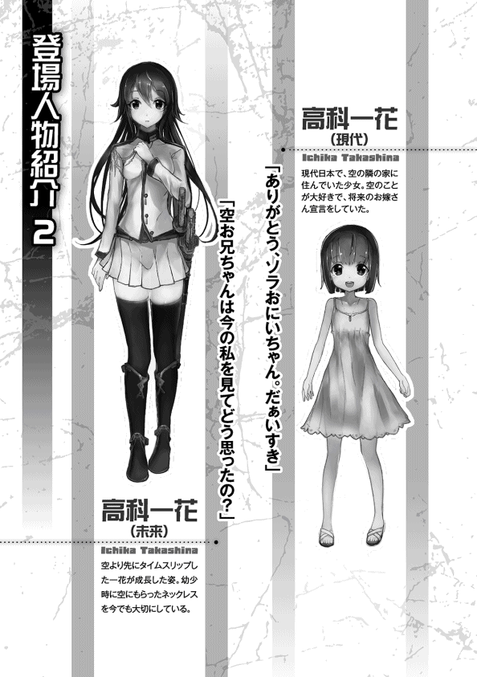
三月上旬、発掘師協会では二級発掘師士採用試験が行われようとしていた。筆記試験会場は二部屋あって、五十名程が入れる部屋に、それぞれ一杯になる勢いで受験者が集まりつつあった。例年の受験者数は五十名程度だが、今年は倍の百名近い応募があった。そしてその試験会場の片隅に、ドレスに身を包んだひときわ華やかで場違いな一団があった。
「ほらほら御覧になって、空さまがおいでになりましたわ」
「まあ、なんて凛々しいお方でしょう」
「お聞きになりまして？ 空様と一花様が近々ご成婚なさるそうよ」
「遥さまも空さまにお嫁ぎになるんですって」
「まあ、あの特級発掘師の遥様が？」
遥本人はまったく自覚していないが、発掘師全体の一パーセントにも満たない特級発掘師である彼女は、発掘師を目指す者や多くの発掘師にとって、羨望の的だ。さらに、発掘師自体が、軍人同様選ばれし者、すなわち一般人より〝気〟力が高い者しか就けない職業であることを考えれば、特級発掘師という資格が、どれほど特別な存在であるかは、容易に想像できることだろう。
大公国の姫君一花と、特級発掘師の遥、そんな二人と親密な関係にある空の噂は、話に何本もの尾ひれをつけて大公国中に広がっていた。
「素敵ですわぁ、すい星のように現れた〝気〟力一万を超える始祖様。一花様と遥様とご婚約なさるなんて。わたくしもその末席に加わりたいわぁ」
「でもご覧になって、ここに集まられた方々、女性はほとんどが空さま目当てみたいですわ。すごい競争率になりそうですわね」
「そのようですね。空様に子種を授けていただくためにはよほどのことがないと」
「そうですわ。でも、お近づきになるためは、わたくしたちも試験に合格しませんと──」
もちろん今の段階で、空と一花や遥が婚約しているという事実はない。しかし、そんな噂をまことしやかに会話している華やかな一団の正体、彼女らは大公国貴族家の娘たちだ。
大公国では、たとえ貴族の子供であっても、身分的には平民と変わらない。貴族の世襲制を採用していない大公国にあって、貴族になるためには、飛び抜けた〝気〟力と実績が必要なのだ。したがって、貴族になれた者は公国民全体のほんの一握り、五十名にも満たない。
そんな中、一般的に〝気〟力が高い傾向にある貴族家の子女は、大公国軍に入隊するか、発掘師などの特別な職業に就くことが多い。さらに、この時代の人々は、〝気〟によって強化されているため、その強さタフさに男女の差がほとんどなく、女性であっても男性同様の力仕事や、危険な仕事に抵抗なく従事しているのだ。
彼女ら貴族家の娘たちは、確かに空の何番目かの妻の座を射止めようという、不純な動機で二級発掘師採用試験を受けようとしているが、たとえ空の妻になれずとも、発掘師というステータスにその価値を認めていた。
そしてさらに、空目当ての受験者は貴族家の娘たちだけではなかった。そのほか会場に集まった多くの女性も、空に熱いまなざしを集めていた。そして、その様子を微笑ましくも呆れた様子で伺っている者もこの会場の片隅にいた。
「今年の盛況ぶりは凄まじいものがありますなぁ、五所川原会長。まあ、あの遥嬢が陥落したくらいだ。頷けんこともないですか」
「当の本人はまったく気づいとらんようだが、ほとんどが空君目当ての女どもだろう。協会としては嬉しいかぎりだが、はたして長続きするかのう......」
「新人研修の班分けも考えておく必要がありそうですな」
「遥嬢も復帰するというし、面白くなりそうだのう。山岸、研修は頼んだぞ」
◇◇◇◇
三月になり、俺は心待ちにしていた二級発掘師採用試験を受け、無事合格することができた。一花ちゃんたち高科一家と再会を果たし、心に余裕ができた今の俺にとって、二級発掘師採用試験などお茶の子サイサイ、余裕のヨシ子ちゃんが赤子の手をひねるようなものなのだ。
俺が生まれた時代の今どきギャルが、独特のイントネーションで、チョー余裕、マジウケる〜とかのたまっているよりかは何倍も簡単だった。彼女らが何にウケていたのか、まったく理解できないのは置いておくとして、これは別に合格したあとだから強がっているわけではない。
というのは冗談で、実際試験はかなり難しかった。一日目の筆記試験は試験勉強の甲斐あって、それほど難しくはなかった。が、二日目からはじまった実技試験が問題だった......。
「試験はどうだったの？」
「ああ、今日は〝気〟力の測定と筆記試験だけだったから余裕余裕。意外と簡単だったよ」
「まぁ、空の〝気〟力に問題はないし、筆記試験は簡単だからね。でも、明日からの実技試験は舐めてかかると落ちるから」
「ダイジョウブダイジョウブ、予習はカンペキさ」
「なんか棒読みだけど、空がそう言うなら」
そんな感じで遥には強がって見せたのだが......
「いいかよく聞け、合格者は今から実技試験会場に移動することになる。ロビーに貼り出した班分けをよく確認しておくように。実技試験は班ごとに行うからな」
実技試験は筆記試験に合格した者だけが受験するわけだが、山岸さんが言うように、筆記試験の合格者は班分けされて班ごとに試験を受けるらしい。実技試験の内容はあらかじめ予告されていて、これがかなり難しい試験内容だった。
当然ながらこの試験をパスしないかぎり、発掘師になることはできない。発掘師はまさに俺の天職とも言える職業であり、発掘師にならずして何になる、と、意気込んで練習してきたつもりだ。
早めの昼食をとって協会に集まった筆記試験の合格者百名弱が、班ごとにほろ付きの大型馬車に分乗し、実技試験会場に向かった。そして到着した会場は、街の外れにある荒れ地だった。コンクリートや鉄筋のガレキ、ゴツゴツした巨大な岩が枯草の間から顔を出しており、見通しはあまりよくない。
「よーし、一班の者はここに集まれ」
山岸さんに呼ばれて二十名の受験者が集まった。馬車の中で一緒だったメンバーに、もちろん顔見知りは一人もいない。
試験に参加するにあたり、遥のアドバイスで発掘師七つ道具を俺は新調していた。方位磁石、小さめのスコップ、タガネ、大き目のニッパー、金づち、ナイフ、そしてツルハシだ。ツルハシは、発掘師にとって最も重要な装備であり、武器でもある。敵すなわち、実体を持つ妖魔や野獣と遭遇した場合は、ツルハシで戦うのだ。刀剣の所有は貴族や軍人にしか認められていないから、発掘師はツルハシやナイフで戦うしかない。
ちなみに俺が選んだツルハシは、片方が平たいバチツルハシと呼ばれるものだった。バチツルハシは尖った方で岩を砕き、平たい方で土を掘ることができる万能タイプのツルハシだ。俺はそのツルハシを背負い、腰にはホルダーに入れたスコップとナイフ、金づちを提げ、デニムパンツに綿の白シャツ、その上からポケットが沢山ある革製のベストを羽織った。ポケットには残りの七つ道具がしまってある。
さておき、俺が配属された一班の中で男は俺とあと四人しかいなかった。皆、真新しい発掘師装備に身を固めているが、他の班もやけに男が少なかった。発掘師は女の人の方が多いのだろうか？ なんてことが頭によぎったが、今はそんなことを悠長に考えている場合ではない。
「今から試験を開始するわけだが、当然内容は理解しているな」
山岸さんの問いかけに、黙って皆が頷いた。どの顔も真剣そのものであり、緊張感が否が応でも高まってくる。
「いいかよく聞け、お前たちは〝気〟力に関係なくランダムに班分けされている。それを考慮に入れたうえで協力し合い、目的のお宝を探し出せ。そして人数分掘り出して見せろ。お宝は人数分以上埋まっているが、幾つかは見つけにくいところにあるからな。言っておくが、協調性も試験項目だから忘れるなよ。試験時間は午後五時までの四時間だが捜索範囲は広い。心してかかれ。スコップは人数分用意してあるから必要なときはそれを使え。慣れてるやつは自前のツルハシで掘っても構わんぞ。それでは試験を開始する。始め！」
山岸さんの号令のもと、試験が開始されたわけだが、捜索範囲として示された範囲は、四方に巨大な杭を打って示してあり、五百メートル四方ほどの広さがあった。
「じゃあ、リーダーって柄じゃないけど、とりあえず自己紹介するよ。ボクは高橋直哉〝気〟力は二百十だ。ハズかしい話だけどボクは去年この実技試験に落ちていてね、試験の内容と難しさだけはよく分かっているつもりだよ」
背の高い女にモテそうな、俺より少し年上に見える長髪の優男が簡単な自己紹介をしたわけだが、臆面もなく試験に落ちたと言い放った。が、決して卑屈な感じは受けず、どちらかと言えばお気楽な感じの男だった。
「わたくしは設楽ツグミと申します。〝気〟力は三百二十よ」
「私は峰岸香苗といいます。〝気〟力は百五十です」
「俺は山下──」
次々と自己紹介が進んでいく中、俺は自分の〝気〟力を正直に白状するか悩んでいた。皆の反応が怖かった。が、いずれはバレることだし、発掘師になるためには避けて通れないことだと自分を納得させた。
「俺は空といいます。〝気〟力は一万を超えていますが正確な数値は分かりません」
さっきも言ったが、俺は皆の反応が怖かった。しかし、予想とは別の反応を皆が見せた。俺は皆が驚くか、嘘を言っていると信じないものだとばかり思っていたが、女の人はうっとりと俺を見つめ、そしてさっきの高橋さん以外の野郎ども三人は、妬ましそうな視線を送ってきたのだ。
「いやぁ、キミが空君だったのかい。噂の始祖様と同じ班になれるなんて光栄だよ」
優男の高橋さんがそう言ってくれたことで、皆が示した反応の理由がなんとなく分かった。俺のことが噂になっているということは、一花ちゃんとの関係も当然皆が知るところとなっているはずだ。とくに野郎三人の射すような視線は、国民のアイドル的存在だと聞いている一花ちゃんと俺の関係を、良く思っていないからなのだろう。
「貴方が空さまなのですね。お会いできて光栄ですわ。わたくしは三田家長女の静香と申しますの。以後お見知りおきを」
「静香様だけズルいですわ。私は──」
静香さんと名乗る少女の自己紹介をかわきりに、俺は女の人にもみくちゃにされることになってしまった。いや、実に嬉し恥ずかしい状況なわけだが、こんなことをしていては肝心の試験に落ちてしまうし、一花ちゃんや遥に知られでもしたらどうなることやら。なんてことを考えていたら、高橋さんが状況を打開してくれた。
「まぁまぁ皆さん落ち着いて。そのくらいにしておかないと試験に落ちてしまいますよ。それに空君も困っていらっしゃる」
あんたがそのきっかけを作ったんじゃないか！ と、声を大にして言いたかったが、これ以上余計なことに時間を割くわけにはいかないだろう。
「あの、高橋さん」
「なんだい？」
「皆が〝気〟力を自己申告した理由は？」
「ああ、目的のお宝を探さないといけないんだけど、地中にあるそれを〝気〟で探ることは知ってるよね？」
それは言われないでも分かっている。あらかじめ予告されていた試験内容だったからだ。
「はい。理解しているつもりですが」
「〝気〟力が極端に違う人が集まって探ろうとするとね、〝気〟力が弱い人は強い人の〝気〟が邪魔になってお宝の反応が分からなくなるんだよ」
「なるほど」
試験内容は、捜索範囲に埋められたお宝を探し出し、掘り出すことだ。掘り出した数がそのまま合格者の数になる。つまり俺たちの班は二十個のお宝を掘り出せば全員合格ということになり、もし足りなかった場合は、試験官がつけた総合的な順位が低い者から不合格になる。遥に聞いたことだが、順位づけに〝気〟力は関係ないということだった。お宝発見の有無と、発掘師としてふさわしい行動をしているか否かが重要なことらしい。
「じゃあ気をつけることは他の人の邪魔をしないこと」
「そう、他の人の邪魔にならないように間隔をあけてお宝を探すんだ。とくに空君は〝気〟力が高いから慎重に行動してほしい。〝気〟を十分に絞って探してみて」
「分かりました」
「それじゃぁみんな、等間隔に並んでお宝を探そう。見つけたと思ったら印をつけることをわすれないように。それから、お宝を見つけてもスグに掘り出さずに次のお宝を探すようにしよう。そうしないと外れだったときに慌てることになるし、他の人の助けにもなるから。それじゃぁ、二時間後にこの場所に集まって結果報告でいいよね」
本人はリーダーって柄じゃないと言ってたが、このときの高橋さんは十分にリーダーとしての仕事をこなしていたと思う。一見頼りなさそうに見えるが、案外頼りになるのかもしれない。他の皆も高橋さんが提案したことに異論を挟まなかった。
ということで、ようやくはじまった実技試験だが、今からすることは〝気〟を使って地中にあるお宝を探し出すこと。お宝は発掘師協会が用意した十センチ角くらいのアルミブロックだということが知らされている。
俺はあらかじめ、遥に貸してもらった同じようなアルミブロックを彼女の実家の裏庭に埋めて、それを感じとる練習をしていた。が、これが本当に難しいのだ。埋めた深さは一メートルくらいだったのだが、地中にある小さなアルミブロックを〝気〟で探し当てるためには、感覚を研ぎ澄まして〝気〟を地中に流し込み、通りがいい場所を探し当てなければならない。俺はこの時代に来てまだ一年も経っていないのだ。〝気〟力は有り余るほどあっても、〝気〟のこういった使い方は初心者に等しい。
だから俺は死に物狂いで練習したのだ。おかげで今ではかなり深いところまで絞った〝気〟を通すことができるようになった。
「練習の成果を見せてやる。そして俺は発掘師になるんだ」
と、気合を入れて片膝をつき、右手を地にかざして探しはじめたわけだが、練習と違って現実は厳しかった。
山岸さんの説明によると、実技試験でアルミブロックが埋められている深さは、ほとんどが五十センチから二メートルの間らしいが、中にはもっと深いところに埋められているものもあるということだった。さらに、ここの地中には錆びた鉄くずや岩が紛れているらしく、それがアルミブロックを探す邪魔になるのだ。
しかしだ、いくら難しいからと言って発掘師になる夢を俺があきらめられるわけがない。探す時間は二時間。できるだけ早くこの試験会場の地中にある岩や鉄くずの感覚をつかみ取ってやる。そしてお宝を探し当てるのだ。
練習でやっていたように慎重に〝気〟を絞り、地中に伸ばしていく。頑張れば地中のかなり深いところまで〝気〟を通すことができるが、今はそんなことをする必要はないのだろう。が、念には念を入れておく必要があると思う。俺は万が一を考えて五メートル程度の深さまで〝気〟を伸ばしてみた。すると確かに通りやすい場所とそうでない場所がある。それが分かれば後は慣れだろう。
はやる気持ちを抑え、俺は慎重に〝気〟を伸び縮みさせながら、その通りやすさを感覚的に覚え込んでいった。土が一番通りにくく、岩、金属の順に通りやすくなる。が、試してみると地中の土や岩にもいろいろな種類があって、それが実に面倒だということが分かった。
そんなことが分かってもなんの足しにもならないと、最初のうちは思っていた。が、しばらく繰り返している内に俺は考え方を改めることにした。土や岩を細かく調べる必要などないのだ。探し出すものは〝気〟が通りやすい金属反応。あとはそれがお宝のアルミブロックか、ただの鉄くずかというだけのことなのだ。
「俺って要領が悪いのかなぁ。だがしかぁし！ 攻略法を見つけた俺に死角はないのだ」
嬉しくなってそんなことをひとりでブツブツと呟いていたら、隣で探索している少女と目が合ってしまった。この人はたしか設楽ツグミと言っていたか。俺の隣にいるということは、彼女は一班の中で二番目か三番目に〝気〟力が高いということだろうけど、なんとも居心地が悪いというかこっぱずかしいことこの上ない。
「俺、なんか変なこと言ってました？」
「べ、別にわたくしは何も聞いておりませんよ。ええ、空さまが仰っていたことなど何も」
「......与太話をしている暇はないですね。早いとこ探してしまいましょう」
「もちろんですわ」
明らかに聞かれていたっぽい。けれども、ツグミさんは聞いていなかったことにしてくれたようだ。俺はそんな彼女に感謝しつつも恥ずかしさを紛らわすべく、探索作業にまい進するのだった。
そして探索をはじめた地点から、枯草をツルハシで払いつつ百メートルほど進んだころには、かなり要領よく探索ができるようになったことを実感できた。十分おきに山岸さんが経過時間を告げる鐘を鳴らしてくれているが、今は試験開始から三十分強の時間が経過したところだ。二時間たったら一旦皆で集まって見つけた数を確認することになっている。だから俺はあと一時間半弱で四百メートル探索しなければならない。すこしペースを上げるべきだろう。
俺はいまだにお宝らしい反応に行き当たっていないが、ちらほらとお宝発見を報告する声が聞こえている。
「俺も頑張らないとな」
「わたくしも頑張らせていただきますわ」
無意識のうちに呟いていた独り言を、またもやツグミさんに聞かれていたようだ。なんてことを考えていたら、反対側からも声が聞こえてきた。
「私も頑張りますわよ。どうか私をお忘れにならないでくださいませ。空さま」
あの人はたしか、静香さんと言っていたか。なんだか物凄くモテているような気がして嬉しいことこの上ないが、今はそんなことにかまけているときではないのだ。何としてもお宝を見つけ、俺は夢にまで見るようになった発掘師にならなければならない。だから俺は、ニヤけそうになる顔を引きしめ、当たり障りのない返事をして探索作業に専念することにした。
「忘れていませんよ静香さん。お互いに頑張りましょう」
「まぁ、空さまに名を覚えてもらえましたわ。しかも名を呼んでくださるなんて......私、嬉しくて泣きそうですわ」
気にしたら負けだ。負けだ。負け......無理だ。表情筋のゆるみを抑えることができない。もう彼女らのことは、頭の中から追い出して自分のすべきことを......いや、ダメだ。作業に専念しよう。そう思って探索を再開した途端にツグミさんの声が聞こえてきた。
「あっ、これはもしかしてお宝かしら。あのっ、空様。もしですよ、もしも宜しければですけど、そのっ、お宝の確認をお願いできないでしょうか」
どうやら俺は、試験が終わるまでは彼女たちから逃げられない運命にあるらしい。というのは置いておくとして、ツグミさんが見つけたものが本物のお宝なら、是非にでもその感触を確かめるべきではないだろうか。
「分かりました。確認させてください」
「まぁ、嬉しいですわ」
言葉通り嬉しそうに恥じらっているツグミさんを横に、俺は彼女が見つけた反応を確かめるべく、慎重に〝気〟を地中に伸ばした。今まで何度も感じた岩らしき反応の直下、地中一メートル強の深さに、たしかにすこぶる〝気〟の通りがいい物体がある。その感覚を確認するように、何度も何度も俺は〝気〟でその場所をまさぐってみた。間違いない。岩があって分かりにくいが、この感覚は遥の実家の裏庭で練習したときに感じたものと同じだ。
「絶対とは言えないんですが、間違いないと思います」
「本当ですか！」
「はい。印を立てておきましょう」
俺に言われたとおり、ツグミさんは小さな赤い布きれを結んだ小枝を、その場所に立てた。
「じゃあ、次のお宝を探しましょう」
「ええ、本当にありがとうございました」
俺は自分の場所に戻り、さっきの感覚を忘れないように探索を再開した。そのとき、静香さんの「むぐぐぐぐ、負けませんわ。私も絶対にお宝を見つけて空さまに確認していただくのですから」という声が聞こえてきたが、俺は聞こえないふりをして探索に集中したのだった。
そして何ごともなく約束の二時間が経過してしまった。つまり、俺はお宝の反応を見つけられなかったということだ。割り振られた担当範囲はくまなく探したから運が悪かったということだろう。
なんて呑気なことを言っている場合ではない。お宝の反応を見つけたか見つけていないかは合否にも影響するのだ。理不尽なようにも思えるが、遥はそうではないと言っていた。運も実力のうちとかいうふざけた理由ではないらしい。見つけられなかった後の行動が重要なのだそうだ。
つまり、発掘師としてふさわしい行動をとれということだろう。さらに、山岸さんは協調性も試験項目だと言っていた。ということは、俺がとるべき行動は、集合場所に行って一個も発見できなかったと正直に報告すること。で、間違ってないよな？
少し不安だったが、俺は約束の時間より少し早めに集合場所へトボトボと向かったのだった。
「やあ、空君。結果はどうだったんだい？」
俺より一足先に集合場所にいた高橋さんが笑顔で迎えてくれた。が、ひとつもお宝を見つけられなかった俺は、彼の問いかけに答える口が重い。
「......一個も発見できませんでした」
「実はボクもダメだったんだよ」
高橋さんも、お宝を見つけられなかったらしい。というか、どうして彼はこれほど落ち着いた笑顔でいられるのだろうか。なんてことを考えていたら、後ろからどんよりとした、今にも泣きそうな声が聞こえてきた。
「申し訳ございません、空様。私、ひとつもお宝を見つけることができませんでしたの」
振り返ってみれば、そこには瞳に涙を浮かべ、今にも泣き出しそうな静香さんがうなだれていた。先に集まった三人が三人とも見つけられなかったというのは偶然なのだろうが、そんなことより、今は彼女に慰めの言葉を掛けておくべきなのだろう。
「気に病むことはないよ。俺だって見つけられなかったし、高橋さんも同じだよ」
「そうそう、君は与えられた範囲をきちんと調べたんだろう？ だったら空君の言うとおり気に病むことはないさ」
「ですが私は......」
彼女がそれ以上言葉を発することはなかった。そのうち、悲喜こもごもの顔をした受験者たちが集まってきた。全員の報告結果をまとめると、見つかったお宝の反応は、すこし深いところにあって、怪しいというか自信がないという自己申告のものを二つ含めて十七個だった。
「ということは、怪しいものを除いてあと五つ見つけることができれば全員合格できるね。前にも言ったように、ボクは去年の秋にもこの試験を受けたんだけど、そのときは二時間で十個しか見つからなかったんだ。それを考えるとこの結果は上出来だよ」
楽観的な高橋さんの言葉を聞いた一人の受験者が、切羽詰まった感じで異論を唱えた。
「上出来なもんか。俺はひとつも見つけることができなかったんだぞ。余裕ぶっこいてないで、どうしたらいいか教えてくれよ」
念願の発掘師になれるかどうか瀬戸際な今、どちらかと言えば、俺の心境はこの男に近いのかもしれない。が、この男のように教えを乞うのではなく、これから何をすべきなのかは理解しているつもりだ。
「まぁまぁ落ち着いて。話し合っている時間はあまりないからボクが提案していいかな」
高橋さんは皆の信頼を得ているようだった。俺もそうだが、皆一も二もなく頷いていた。
「じゃあボクの考えを言うね。まず、見つかったお宝を掘り出す人と、新たな反応を探す人に分けようと思うんだ。時間はあと二時間あるから、掘り出す人は五人いれば十分だと思う。残りの人はもう一回探索をしてほしいんだけど、〝気〟力が低い人が担当したエリアに、まだ見つかっていないお宝が眠っている可能性が高いと思うんだ。理由は言わなくても分かるとおもうけど、できれば〝気〟力が高い人が探索にまわって、低い人が掘り出しをしてくれると助かるかな。それから、怪しい反応を判別できる人がいると嬉しいんだけど。立候補する人は挙手してくれないかな」
高橋さんの提案はスゴク理にかなっていると俺は思った。けれども、判別係に立候補する者は現れなかった。かくいう俺も、判別に絶対の自信を持っているわけではない。ツグミさんのときは割と浅い位置だったから、九分九厘間違いないとは思っているが、今回の判別対象は、すこし深いところに埋まっているという。とかなんとか考えていたら、
「あの、わたくしは空さまを推薦いたしますわ。空さまは私が見つけた反応を判別してくださいましたから」
と、ツグミさんに推薦されてしまった。
「じゃぁ空君、推薦もあることだし、お宝の判別をお願いしてもいいかな？」
そして高橋さんにもお願いされてしまった。この状況で断ったりしたら皆の反感を買うかもしれないし、それよりも、男がすたると俺は思った。そこまで頼りにしてくれるならやってやろうじゃないか。
「分かりました。絶対の自信があるわけじゃないから、そのお宝は俺が掘り起こします。判別してお宝だと思ったらですけど。それでいいですか？」
俺の問いかけに反論は出なかった。怪しい反応を見つけた受験者二人も頷いている。
「じゃぁ、反論も出ないようだから空君にお願いするよ」
ということで、俺はさっそく、怪しい反応があったという場所に案内してもらった。
「ココです。凄く深いところにあって金属なのは間違いないと思うんですけど......」
案内してくれた少女は、メガネっ娘で清楚な感じがしたが、スゴク申し訳なさそうにしていた。
「じゃあ今から探ってみますね」
「お願いします」
片膝をついて地面に右手をかざした俺は、今まで何回も何回もやってきたように、地中に〝気〟を伸ばしていった。二メートルを過ぎても反応はなく、彼女が言うとおり、たしかに深い位置に金属反応があった。俺の感覚では三メートル強だ。
「たしかに、三メートルちょっとの深さに金属反応があるね。でも、これはお宝じゃないと思う。大きいんだよ。形もいびつだし、五十センチくらいあるかな」
判別の結果を聞いた少女は、ガックリと肩を落として落ち込んでしまった。が、次の瞬間には、勢いよく頭を下げて謝ってきた。
「無駄足を踏ませてしまってゴメンナサイです。こんなことでクヨクヨしてちゃダメですよね。わたしは皆のところに戻ってもう一回探してみます。判別してくださってありがとうございました」
「うん、気にすることはないと思うよ。これだけ深い位置の金属反応が分かるなら、二メートルくらいまでの深さにある本物の反応は絶対に分かると俺は思う」
「そうなんですか！ 空さんにそう言ってもらえてスゴク嬉しいです。もうひとりの方を呼んできますね」
少女はそう言って嬉しそうに駆けて行ってしまった。立ち直りの早い人で助かった。可愛い人だったけど、名前を聞くのを忘れてしまったな。とかなんとか考えていたら、別の少女が俺の方に駆け寄ってきた。髪が短めで、ボーイッシュな感じがする娘だった。
「次はあたしの番ね。案内するわ」
そう言うと、少女はすたすたと歩き出したのだった。俺もその後に続く。
「この下二メートルくらいなんだけど、あたしは〝気〟の扱いがあんまり得意じゃなくて......」
「実は俺も、金属探査の練習しはじめてひと月くらいだから、得意とまでは言えないんだ。でも探れる深さだけは自信があるかな」
「空くんは始祖様だものね。探れる深さは〝気〟力の強さに比例しているっていうから羨ましいし凄いわ」
俺の〝気〟力が高いのは努力したからではなく、たまたま授かったものだから、得意になったり自慢したりする気にはなれなかった。もちろん〝気〟力が高いに越したことはないし、それが嬉しくないかといえば嬉しいに決まっている。が、他人から称賛されたりスゴイと言われたりすると、むず痒いものがあった。
「別にスゴイとかスゴクないとかはどうでもいいことなんだけど、俺は発掘師として、探査能力を伸ばした方が役に立てるのかもしれないね」
「そうすべきだと思うわ」
そんな会話の間も俺は慎重に探査を行っていた。そして彼女が報告したとおり、深さ二メートルのところに金属反応があった。これはツグミさんが探し当てたものと同じ反応だった。
「間違いなくお宝だと思う」
「ホント！ やったわ。あたしスコップとってくるね」
そう言って、彼女は喜びを隠そうともせずにスコップを取りに走った。そしてすぐに彼女が走り戻ってきた。
「宣言したとおりお宝は俺が掘り出すよ」
「あたしが掘ろうと思っていたんだけど、そういえば空くんが掘るって言っていたわね......」
「そう、掘り出してみて間違いでしたじゃ責任とれないだろ？ だから俺が掘るんだ」
「分かったわ。お願いします」
スコップを受け取った俺は、有り余る〝気〟力を存分に発揮して縦穴を掘った。装備しているツルハシで掘れないこともないが、真下に掘る場合はやはりスコップの方が早い。どちらかといえば、ツルハシは水平方向に掘り進むときに威力を発揮するのだ。
ということは置いておいて、掘りはじめて三十分もしないうちに直径一メートル五十センチ深さ二メートルの縦穴を俺は掘り進めた。そしてその底から。
「出た！」
両ひざに手を当て、興味深そうに、そして興奮気味に穴の縁から覗き込んでいた彼女に出てきたお宝を差し出した。
「これがお宝なのね。ただのアルミブロックみたいだけど、試験で用意されたものだから実感があまり湧かないわ。だけど、発掘師になって本当のお宝を掘り当てたときは、きっと凄く嬉しいんでしょうね」
白錆が浮き出た約十センチ角の小さなアルミブロックを受け取り、しみじみと眺めている彼女を横目に、俺は掘った穴からジャンプ一番飛び出した。
「さっそく高橋さんのところに持っていこう」
「ええ」
実際に現場で発掘した本当に本物のお宝を手にしたときは、もっと大きな喜びが湧き上がってくるのだろう。たしかに俺はトレジャーハントの経験はあるが、高額で換金できるような本物のお宝というものを探し当てた経験はもちろんない。たとえ試験で用意されたお宝とはいえ、自分の力で探り当てたお宝を手にするということは、発掘師にとって何物にも代えがたい喜びなのだろう。
しみじみとアルミブロックに見入っている彼女を見て、俺は発掘師になりたい気持ちがますます強くなっていた。
自分も探索をしながら全体の取りまとめをしている高橋さんのところに、俺と彼女は掘り出したお宝を持っていった。
「お疲れさま。一つハズレで一つはアタリだったようだね。さっき新しい反応が一つ見つかったから、これでお宝は十七個確保できたけど、まだあと三つ見つけないといけない。時間はあと一時間とすこしだから、頑張って見つけないとね」
「お宝は今何個集まってるんですか？」
「空君たちが持ってきてくれたので十七個目だよ。さすがは発掘師の卵たちだね。いや、ボクもそうなんだけど、自信があると言った反応は全部アタリだったよ」
そう言って高橋さんは大きな麻袋に入ったお宝を見せてくれた。数えはしなかったが、彼の言う通り全部で十七個あるのだろう。
「あと三つですね。じゃあ俺たちも残りのお宝を探すってことでいいですよね」
「うん、もちろんそうしてくれると思っているよ」
「じゃあココからは別行動で」
「分かったわ。幸運を期待してるね」
残り時間はあと一時間と三十分弱。確実に合格するためには是が非でも残り三つのお宝を見つけ出して掘り出さねばならない。そう心に誓い、さっきの彼女と高橋さんと別れた俺は、残りのお宝を見つけるべくさっそく探索を開始したのだった。
残り時間があと三十分に迫ったところで十九個目のお宝が掘り出された。しかし、発掘師に絶対なってやるとかほざいておきながら、俺はまだ一つもお宝の反応を見つけるに至っていない。
お宝が十九個見つかったことで、探索中にもかかわらず大多数の受験者に安堵の色が見られる中、俺と数人の受験者は、必死の形相で探索を続けていた。必死になっている連中は自分が落ちるかもしれないと思っている受験者だろう。まあ、俺もそうなのだが、探索範囲が広すぎて、今の俺の技術じゃどこに埋まっているかなんて皆目見当もつかないのだ。
「こんなことになるならもっと探索の特訓を積んでおくんだった」
と、後悔を口にしても後の祭りなわけで、今はすこしでも早く最後の一個を見つけなければならない。しかし、このままやみくもに探索を続けることが果たして正解なのだろうか？
そんなときだった。
「畜生！ どうして俺には見つけられないんだ」
フィールドの端の方から、男の叫ぶ声が聞こえてきた。この声は確か、楽観的な高橋さんに異論を唱えた男のものだ。名前までは思い出せないが、顔と声はまだ覚えている。が、そんなことはどうでもいいことだった。彼の気持ちは痛いほどよく分かるが、彼にどうこう言うつもりなどまったくない。
しかし、彼のように焦ってやみくもに探しても、きっとお宝は見つからないだろうと冷静になることができた。時間はまだ三十分ある。その三十分で俺にできること。それは他の受験者が探していない場所を探索することだ。
そんな場所があるのか？ そう自問しながらフィールドを見渡してみれば、確かに他の受験者が探索していないだろう場所が分かった。それは、地下五メートル以上の深いところと、大きな岩やがれきの下だった。
「しかし、地下五メートルとなると探し当てても掘り出す時間がないよな......」
となれば残る探索場所は大きな岩やがれきの下しかない。受験者は自分の直下二メートル程度までを探索しているはずだ。探索距離が延びる障害物の下は探っていない可能性が高い。なぜなら、大きな岩やがれきの山に登って、その下を探索している受験者は見かけなかった。
うぬぼれているわけでは決してないが、この天啓とも言うべき閃きに俺は従うことにした。というか、このときの俺は発掘師になりたいという一心でゾーンに入っていたのかもしれない。
思い立ったらすぐさま行動にうつす。というか、迷っている時間など俺にはなかった。〝気〟力が高い受験者に協力を仰ぐことすら忘れていた。目についた大岩やがれきの山まで全力で駆け寄り、その直下をナナメに探っていく。
一か所にかけられる時間は十秒ほどだ。ざっと〝気〟を通して疑わしき反応が無かったらすぐにあきらめ、別の場所に走る。それを繰り返して十数回目のことだった。
「見つけたぁ！」
俺は天を仰ぎ見るようにして絶叫していた。しかし、感慨にふけっている時間はない。わらわらと受験者が寄ってくる中、俺は眼前の大岩をどうしてやろうかと考えていた。
「その下にあるのかい？」
「間違いなくこの岩の下に埋まっている」
「よくそんな場所で見つけたね。お手柄だよ。空君」
少し興奮気味の俺に声をかけてくれたのは高橋さんだった。
「問題はこの岩をどうするかなんですが、時間はあと十分くらいですよね？」
「そのとおりだね。脇から掘り進めるしかないだろうけど......」
直径約十五メートル、地面から突き出た高さ四メートルはあろうという大岩の下、深さ約二メートルのところにお宝の反応があった。
「掘っていたらとても間に合わないだろうね。それに、この大きな岩をどかすことは難しいけど......全員で力を合わせればもしかしたら」
「よし、やりましょう高橋さん。全員を集めてこの岩を転がすんです」
「そうだね。それしか方法はないだろうね」
方針が決まり、高橋さんが大声を張り上げてまだ探索を続けている受験者を呼び集めた。残り時間はあと数分だ。
「みんな、力を合わせるんだ！ せーのっ！」
力を合わせて気合いを入れるにはどこか頼りない高橋さんの掛け声に合わせ、集まってくれた受験者全員で大岩を転がそうとこころみた。が、しかし、敵もさるもの、大岩は微動だにしてくれない。もちろん俺は皆の中心というか要の位置で大岩を押しているのだが、ただ力を入れるだけでは到底歯が立ちそうになかった。
このままではダメだ。もっと効率的に力を伝えないと大岩は動いてくれそうもない。もっとこう、何か画期的な方法はないのか？ 大岩が重すぎて動かないなのなら......。
「そうだ！」
「どうしたんだい？ 空君」
「俺に考えがあります。皆さん、十メートルでいいですから岩から離れてもらえますか。説明している時間が惜しいんです」
俺の言い方があまりにも必死だったからだろうか、受験者たちは無言で大岩から離れてくれた。そして俺も同じように、十メートルの距離を大岩からとった。
シンと静まり返るなか、俺は体中に張り巡らされた有り余る〝気〟全てを右拳に集中させ、練り上げていく。山小屋でかつて対峙した、あの大猿のときをはるかに超える〝気〟を拳に集め、圧縮し、鋼よりも硬く、そして鉛よりも重くなるように意識を昂らせる。
「まだだ、まだ足りそうにない」
そう思った俺はさらに大岩から距離をとり、その間も練り上げた〝気〟を圧縮し続けた。そして十数秒ののち。
「うん、いけそうだ」
大岩から三十メートルほど離れた位置で、これ以上にないほどに昂らせた意識とともに、〝気〟と想いを乗せた右拳を引いた。そして全力全開のダッシュで大岩に迫った。発掘師への想いを乗せた渾身の右ストレートを大岩に突き入れる。同時に超圧縮していた〝気〟を全開放した。
俺の右腕が食い込んだ大岩に幾筋もの亀裂が入り、ガラガラと崩れ落ちて小山になった。
「うそ、だろ......」
後ろからそんな声が聞こえてきたが、数瞬ののちには黄色い歓声があがっていた。右手に痛みはなく、俺の目論見 は見事に成功した。が、しかし。
「時間がありません。手伝ってください」
感慨にふける暇も惜しんで俺は崩れた岩をどかしにかかる。もちろん皆も手伝ってくれた。
「あった。あったぞ！ これで二十個目だぁ！」
とまぁこんな感じで試験に無事合格し、念願の発掘師になった俺は、当日に免状を交付され、いわば新人研修のようなものに参加することになった。しかし、研修まではけっこう時間があった。俺はその時間を有効に使い、というのは方便で、実のところは、はやる気持ちを紛らわせるためと、試験で痛感したことを是正するため、〝気〟によるお宝探査の猛特訓に明け暮れたのだった。
さておき、研修は二級発掘師採用試験に合格すると、必ず受けなければならないものだが、何事も形から入らないと気が済まない俺にとって、うってつけのありがたいイベントであり、かつ、実地研修ということもあって、楽しみで仕方がないのだ。
これは断じて、合格者に可愛い女子が多かったからとか、研修で彼女らにカッコいいところを見せようだとか、あわよくばその結果、可愛い女子とお近づきになりたいとかいう不純な理由からではない。名誉にかかわることだからもう一度言うが、断じてない。
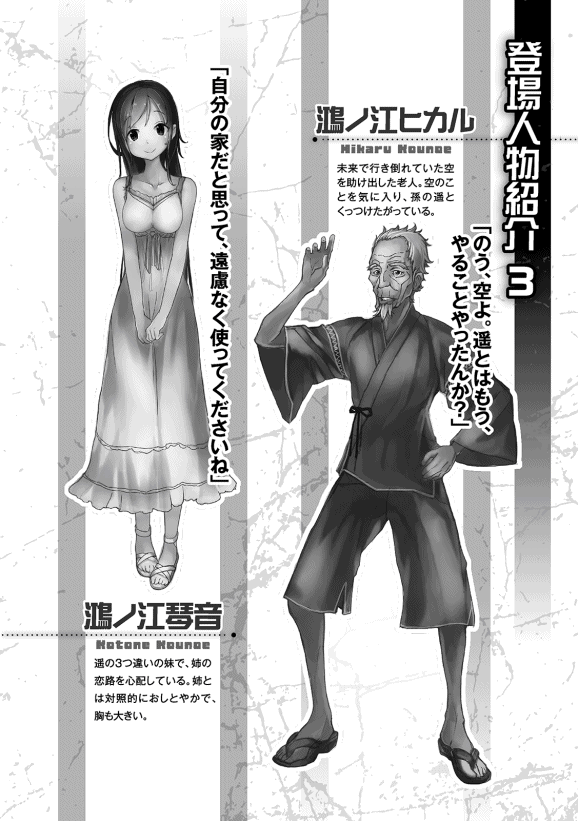
「さぁて、行くとしますか、発掘師研修に。ワクワクが止まらないぜ」
試験が終わった十日後、陽が昇る前に協会に集合した二級発掘師採用試験合格者は、割り振られた班にそれぞれ分かれ、八台の馬車に分乗して研修が行われる鉱山に向かっている。合格者は八十名弱であり、一つの班に十名から九名の新人二級発掘師が割り振られていた。俺と一緒に合格を果たした高橋さんは別の馬車だ。
協会を出発した馬車は、隊列を成して東に進み、正面から陽が昇ってきたころには、堀にかかるいくつかの橋を越えて大公国の生活圏を出ていた。
今、俺が向かっている場所。それは大公国の東、かつての三島市にあたる場所で、古くから遺物の発掘が行われている三島鉱山だ。三島市といえば、大手樹脂メーカーや自動車メーカーの工場があったはず。遥に聞いた話では、三島鉱山は二百年以上前から発掘が進められていることもあり、掘りつくされてはいないが、大物はすでに掘り出されているということだった。
しかし、と俺は思う。人の手で掘り進めたとして、二百年程度で三島市全域を掘りつくせるとはどうしても思えないのだ。きっとどこかに大物が眠っているはず。そのお宝を俺が掘り出してやる。
ちなみにこれは陽一さんから聞いた話なのだが、現在は西暦で言うと六千二百年程度なのだそうだ。程度と言ったのは、正確な記録が残っていないからということであり、和国に残る歴史の記録を陽一さんが検証して推定した数値だからだ。この数値が事実なら、俺は四千年以上シェルターの中に閉じ込められていたことになる。
「四千年かぁ......」
四千年前に生まれた俺がそれだけの時を超え、かつて青春を謳歌していた時代の物品を、遺物として掘り起こそうとしているのだから、その心境はワクワク感とノスタルジック感が入りまじった奇妙なものだった。
話を戻すと、俺は今、三島鉱山に向かう馬車の中で、かつての遥の同僚であり、特級発掘師でもある山岸さんと、新人二級発掘師十名の中に混じっている。
悲しいことに、あれだけいた女子たちは、全員別の馬車に分乗しているのだ。すなわちこの馬車には、むさ苦しい野郎どもしか乗っていない。しかも、その野郎どもは俺に向かって敵意むき出しの刺すような視線を送ってきやがる。居心地が悪いことこの上ない。
「なんだかなぁ」
まぁそれは置いておくとしても、特級発掘師として仕事に復帰した遥は、インストラクター兼護衛として別の班に同行している。俺の班のインストラクターは山岸さんだ。鉱山では妖魔が出没する可能性が大きく、新人発掘師だけでは対処できない可能性がゼロではないこともあり、護衛も兼ねたインストラクターが同行するらしい。
「遥に聞いたんですけど、三島鉱山には妖魔化した野ネズミとかイヌ、ネコが出るらしいですね」
「その通りだ。雑魚だからお前やこの班の連中なら余裕で勝てるが油断だけはするなよ」
「分かってますけど、俺が山小屋にいたときに襲ってきた山猿よりもはるかに格下なんですよね？」
「まぁその通りだ。が、ネズミの場合は数が多いから注意が必要だからな。まれに出る大型の山犬には妖魔化していようがいまいが気を配っておく必要があるぞ」
山岸さんが言うことは尤 もなことだろう。
ちなみに、俺が〝気〟を垂れ流していたら寄ってこないんじゃないの？ と、遥に進言したら、そんなことをしたら野獣は寄ってこないが、妖魔が寄ってくるから意味がないと、至極ごもっともな答えが返ってきた。
注意点として、もし実体を持たない妖魔が出現したら、〝気〟を放出して対消滅させればいいとのことだった。有り余る俺の〝気〟をぶつければ、簡単に消し飛ぶらしい。
ただし、よほどのことがなければ、自分に襲い掛かる妖魔以外は相手にするなとも遥は言っていた。出現する妖魔に対応できないようでは、発掘師としてやっていけないし、新人研修にもならない。もしものことがないように、常にインストラクターが目を光らせているから、俺は割り振られた役目をこなすだけでいいらしい。
◇◇◇◇
一方、空たちが乗る馬車の後方、遥がインストラクターを務めることになった班の馬車の中では、うら若き乙女たちが恋の話に花を咲かせていた。とは言っても、その対象は一人の男に絞られており、その男の恋人と噂される遥が同乗していることもあって、小声でのひそひそ話だ。
『空様と同じ班にはなれませんでしたね。残念ですわぁ』
『でもでも、遥さまの引率に当たったのはラッキーだと思いませんか？』
『それにそれに、空様は殿方だけの班でしたわ。条件はみんな一緒、全員にチャンスがありましてよ──』
彼女らは、空目当てに二級発掘師採用試験を受けて合格した貴族家の娘たちだ。そもそも発掘師採用試験は、落とすための選抜試験ではないので、〝気〟力が基準を満たしていれば、決して簡単ではないが、努力次第で合格することができる。
一般的に〝気〟力が高い傾向にある彼女ら貴族家の娘が合格することは、不思議でも何でもないのだ。筆記試験会場では、貴族家の娘らしい華やかな服装だった彼女たちも、発掘師の研修に参加しているだけあって、発掘師らしくベストにパンツスタイルで、背にはツルハシを装備していた。
そして、そんな彼女たちから少し離れた位置に、空目当てではなく純粋な気持ちで発掘師になった少女が座っていた。艶のあるサラサラの黒髪を短くショートに切りそろえ、ゆとりがあるベージュのパンツに白いシャツ、その上にカーキ色のベストを羽織り、背には当然のごとくツルハシを装備している。
──あの方たちは発掘師をなんだと思っているのかしら。
恋バナに花を咲かせる乙女たちに少しあきれ顔の彼女も貴族家の娘ではあるが、将来は自立して発掘師として生計を立てるという目標があった。〝気〟力は発掘師になれるほどには高いので、軍に入隊するという選択肢もあったが、規律の厳しい軍よりも、自由な発掘師に魅力を感じていた。そんな彼女の名は御堂鈴音 。あの、御堂虎次郎の腹違いの妹である。
しかし鈴音は、御堂家に在って、兄の虎次郎とは正反対の性格をしていた。兄虎次郎は〝気〟力も高いが、それ以上に選民意識が高く、自分も身分的には平民であるにもかかわらず、たとえ発掘師であろうと自分以外の平民を見下す傾向があった。
彼にとって、貴族家直系の嫡男であり、大公国有数の貴族家である御堂家の跡取り息子であるということが、その思い上がった性格を生み出している。そんな虎次郎にとって、尊 ぶべきは身分と教養、そして強さと勇敢さであり、自身は政治家としての道を歩んでいた。
政治家として実績を上げ、爵位を得て御堂家の次期当主としての面目を保つ。そしてゆくゆくは、一花の夫になる。これが虎次郎の目指すところなのだ。
さておき、そんな虎次郎を兄に持つ鈴音は、天真爛漫な性格の母のもとで育ったということもあるが、人を見下す虎次郎を快くは思っていなかった。
──私は発掘師になって自立するんだから。
鈴音と虎次郎は、同じ屋根の下に暮らしてはいるが、二人の間に会話はほとんど無く、すれ違いの生活を送っていた。彼女の父、現御堂家当主の虎徹は良識ある有能な男であるが、その忙しさもあって、ねじ曲がってしまった長男や、その他の妻や子供たちに接する時間が取れないことに悩んでいるのだった。
そんな環境で育った鈴音は、十八になって成人したことを契機に、昔から憧れていた発掘師になった。そして、彼女の最も憧れる存在は、馬車に同乗している特級発掘師の遥、その人だった。特級発掘師である遥は、一般人にはあまり名が知れていないが、発掘師や発掘師を目指す者の中には、憧れる者も多い。
荒くれ者が比較的多い発掘師の中にあって、相手がたとえ男であっても物怖 じすることなく意見し、そしてひるまない遥の姿を、鈴音は幾度となく見かけていたことによるところ大きかった。
──遥先輩の前で失敗しないようにしなきゃ。
憧れの遥が指導する班に割り振られた鈴音は、その幸運を喜び、また、一人静かに気合いを入れなおしていた。
公国を出た馬車の隊列は、荒野と深い森を縫うように走る道を東進し、ようやく昼過ぎになって三島鉱山の入り口にたどり着いた。鉱山入り口は広場になっており、それを取り囲むように二階建ての建物が何棟かと、空 の大きな荷馬車や、何頭かの馬が入った厩舎があった。
八台の馬車からは続々と新人発掘師たちが降り、女性発掘師に囲まれた遥の姿もそこに在 った。さすがに遥は特級発掘師というだけあって、特に女性発掘師には大人気のようだ。
そして、馬車を降りた俺の目に飛び込んできたのは、深い森を南北に割くように続く広い道と、そこから伸びる幾筋もの分かれ道。そして、森の所々にはビルの残骸だろうか角ばった建造物らしきものが顔を出していた。鉱山というわりには山などどこにも見えない。
「新人はここに整列しろ！ いいか、班ごとにだ」
山岸さんが大声で叫ぶと、慌てて新人発掘師たちが彼の前に八本の列を作った。俺は一番右の列の最後尾に並んでいる。遥をはじめ、インストラクターの人たちは山岸さんの後ろに並んでいる。
「いいか、ここは三島鉱山の入り口でもあり、発掘品の集荷場でもある。今からお前たちはあの建物で昼食をとって、その後は班ごとにそれぞれ研修に移ってもらう。期間は今日を含めて一週間だ。ここには宿泊施設もある──」
班ごとに分かれて昼食を摂 った俺たちは、その間に三島鉱山の歴史や、鉱山の種類、鉱山に入ってからの注意事項、発掘品の取り扱い、今日の予定などを聞いていたのだが、その間、俺に向けられていた視線のせいで、なかなか昼食がのどを通らなかった。
視線の犯人は昼食を摂っている新人発掘師のほぼ全員だ。これほどまでに視線の集中砲火を浴びなければならないのか、いたたまれなくて小さくなっていたら、山岸さんが耳元でコッソリその理由を話してくれた。それも楽しそうに。
『お前、一花様と腕組んで歩いてたそうじゃないか。しかも遥嬢とも仲がいい。野郎どもの視線が痛いだろう？ 全員お前を妬んでいるんだ。よかったなぁ』
冗談じゃない。言われてみてようやく思い出した。一時は危惧していたが、試験のせいで完全に忘れていたのだ。俺と一花ちゃんの関係が噂として広がることを。しかも、遥との関係まで広がっているっぽい。
『良くないです！』
『まぁ、野郎どもはともかく、女連中は全員お前狙いか。この色男めが』
そう言って肘で俺を小突いた山岸さんは、それはもう楽しそうに笑っていた。遥に聞いた話だが、山岸さんは独身じゃない。だからこれほど楽しそうにしていられるのだろう。他人の不幸ほど人は楽しいということを、このとき俺は身を以て実感したのだった。
確かに俺は、新人発掘師の女子たちにカッコいいところを見せようと息巻いていた。それなら、野郎どもの妬みの視線は置いておくとしても、女子たちの熱い視線は喜ぶべきでは？ と、思う人が多いかもしれない。しかしそれは、カッコいいところを見せたあとのことであって、彼女らの視線は恐らく俺の〝気〟力や、将来性を見据えてのものであることは間違いないだろう。
カッコいいところを見せて「キャー素敵ぃ」と黄色い歓声を浴びるのは至上の喜びだが、天からもらった才能、偶然手に入った才能だけをとって、いくらチヤホヤされても嬉しくもなんともない。
贅沢なエゴだと非難されてもいい。チヤホヤされるのはそれなりの行動による、大義名分が俺は欲しいのだ。その行動のよりどころが、たとえ天からもらった偶然の才能を使った結果であっても、大義名分があるのとないのとでは大違いだろう。
「俺ってメンドクサイ男なのかなぁ」
「いきなり何を言ってるんだ。お前は？」
「独り言です。気にしないでください」
いろいろと御託を並べてみたりもしたが、実のところ、これだけの数の女子たちにチヤホヤされることに対する免疫が俺にはなかったというのが、このとき素直に喜べなかった理由なのかもしれない。
妬みの視線と熱いまなざしが注がれる中、俺は今からはじまる発掘師としての人生に、これ以上悩みの種が増えませんように、そして充実した発掘師ライフが送れますようにと願っていた。果たして、俺の願いはかなうのだろうか？
発掘師新人研修初日。三島鉱山の入り口にあたる集荷場で昼食を済ませた俺たちは、乗ってきた馬車に再度分乗して鉱山の大通りを東進していた。馬車は十トン車の荷台程度はある大型のほろ付きであり、馬一頭でこれを軽々と引いている。さすがにこの時代の馬は、文字どおり馬力が違うようだ。
「集荷場に戻るまでに、この馬車に発掘品を満載できれば上出来だからな。掘り進められた鉱山でも、一週間あればその程度の量は発掘できるかもしれない。まぁ、運がよければ、だが」
「ということは、これから一週間鉱山で野営ですか？」
「当然だ。野営は嫌か？」
「とんでもないっす。望むところですよ」
発掘のためなら野営でも何でもドンとこいだ。というか、こういったアウトドア生活に俺は憧れていたのだ。嫌もなにもあるわけがない。
与太話はさておき、集荷場から見た三島鉱山は、深い森を大通りが分断しているように思えたのだが、いざ大通りを進んでみると、森に見えたのは集荷場周辺の半径五百メートルほどであり、その森を囲むように、おそらく妖魔や野獣避けの堀に、水が湛えられていた。なぜ集荷場周辺に森が残されているのか、山岸さんにその理由を聞いてみた。
「ああ、集荷場の周りはろくなもんが採れなかったんだ。理由はあとで説明するが、森が残っているのは整地が後回しになっているだけだ──」
なにか特別な理由があると思って期待していたら、後回しにされただけという味気ない答えが返ってきた。堀で囲まれているのは、土木工事に携わっている人たち、すなわち〝気〟力の低い人たちが宿泊しているからであり、俺の予想どおり彼らを妖魔から守るためらしい。
まだ何十年か先の話になるが、鉱山全域の発掘を終えたのち、全てを埋めもどして整地し、三島鉱山はひとつの都市になる予定とのことだった。鉱山の外縁では、大公国軍と土木業者が妖魔や野獣から将来の都市を守る堀を掘っているとも言っていた。
「なぜ軍と土木業者が？」
「作業にあたる土木業者のほとんどはな、〝気〟力が百に満たない一般の者たちだ。軍の護衛がなければ危険で作業どころじゃなかろう。ちなみに、鉱山の整地作業も同時に進められていてな、鉱山内部にも土木業者や公国軍が常駐しているぞ」
馬車に分乗した俺たちは、鉱山の中央近くまで大通りを進んだところで左、すなわち北に進路をとった。
「北に比べるとな、南の方に出現する妖魔が弱くて安全なんだ。そして鉱山東部はもう掘り出せるものがあまり残っていない」
「そうなんすか」
整地された鉱山は、というか、森を抜けてから鉱山中央部にいたるまでは、区画整理されたように道が作られており、ここがいずれは都市になるだろうことが、容易に想像できた。
しかし、馬車が北上するにつれ大地は荒涼となり、島のように残された森や、ぽっかりと空いた大穴が目立ちはじめた。整地にはげむ土木業者や、それを守るように周囲を警戒する軍人たちも見かけるようになった。馬車は途中で三方向に分かれ、俺たちが乗る馬車ともう一台がそのまま北上を続けたのだった。
集荷場を出発して二時間ほどたったころ、ようやく馬車は目的の発掘現場に到着した。研修を行う発掘現場は、小山の一部を切り崩した崖に、ぽっかりと坑道の入り口が姿を見せていた。崖からは、かつての建物の一部だったのだろう鉄筋や、むき出しになったコンクリートが顔を出している。ボロボロになったそのコンクリートを見ると、否応なしに二十一世紀の大都会を思い出してしまった。
「ここがお前たちが入る坑道だ。しかし、その前にいくつか説明しておくことがある。いいか、お前たちは合格者の中でも〝気〟力が高い者が集められたふた班だ──」
坑道の入り口を前に、山岸さんが説明をはじめたわけだが。遥がインストラクターを務める女子たちの班とともに、俺たちの班もその説明を聞くことになった。
「──お前たちが入ろうとしている坑道はだな、三島鉱山北部の中でも比較的強い妖魔が出現する。なぜそんなところに入るのか？ それはお前たちが将来一級以上の発掘師になることを見越して、はじめから難易度が比較的高い坑道を選んだということだ。そしてよく聞け。ここでお前らが掘り出すのは主にアルミとガラス、それに銅のケーブルと樹脂だ。大型の機械や宝玉が出る場合もある。その他にもお宝は何種類もあるが、それは俺かそこの遥嬢にそのつど聞くように。そして、手当たり次第に掘っても効率が悪いことは分かるな。お前らもすでに予習していると思うが、地中には〝気〟だまりと〝妖気〟だまりがある──」
〝気〟だまりとは、その名の通り〝気〟が閉じ込められていたりして、その濃度が高い場所であり、〝妖気〟だまりもその名の通り、〝妖気〟が溜まっている場所らしい。
〝気〟には、物質の状態を保存する効果があって、その濃度が高い〝気〟だまりには、腐食することなく金属や樹脂が埋まっているそうだ。〝妖気〟に関してはその逆で、〝妖気〟だまりにある金属や樹脂は、腐食したりボロボロになったりしているらしい。
さらに、〝妖気〟だまりには妖魔が潜んでいることがあり、そこを掘る必要がある場合は、十分に注意して発掘作業を進めなければならないということだった。
「いいか、特にお前らは〝気〟力が高い。それを十分に活かして〝気〟だまりと〝妖気〟だまりを見極めろ。そして、お宝を掘り当てるんだ──」
効率のいい発掘をするためには、自らの〝気〟を地中に浸透させて〝気〟だまりを見つけ、〝妖気〟だまりを避けていく必要がある。また、〝気〟だまりや〝妖気〟だまりは、地中にできたがれきの隙間などの空間であることが多く、それらの空間は、他の空間とつながっていたりするため、〝妖気〟だまりには、妖魔化したネズミや、物理的実体をもたない妖魔が潜んでいることがあるそうだ。
地中深くに行くほど、〝気〟だまりにしろ〝妖気〟だまりにしろ、その濃度が高くなる傾向があるらしい。すなわち、地中深い所で出現する妖魔ほど、手ごわいということだった。
「──以上で説明は終わりだ。ランタンは持ったな。坑道に入るぞ」
俺が背にしているツルハシより一回り程大きなバチツルハシを背に担いだ山岸さんが、ランタンを片手に先頭で坑道に入り、男子班女子班の順で後に続いた。俺は男子班の最後尾で、遥は女子班の最後尾、つまり、しんがりを歩いている。
歩きながら坑道の中を見わたせば、少しずつ下って曲がりくねった道の要所要所に崩落防止の木組みがしてあり、途中何か所か広いスペースを通り抜けて俺たちは奥へと進んだ。
そして、おそらく坑道の最深部だろう広いスペースにたどり着いた。このスペースだけ天井が高く、一部に穴が開いているようで、そこから薄く光が射し込んでいる。壁や足元の土の中には大量のコンクリートやアスファルトが混ざっていた。おそらくここは、道路、それも陸橋か何かだったのだろう。
「ここがこの坑道の最深部だ。ここには神話時代の車が大量に埋まっていたと聞いている。いいか、車にはベアリングという軸受けや、僅かだが銅線やアルミが使われている。車に使われているガラスや鉄のキロ単価は安いが──」
そのほか、バッテリーやタイヤ、エンジンなど、車には様々な部品があるが、それらの部品のほとんどは今の時代ではまず使えないゴミだということだった。もし使えるバッテリーやタイヤを掘り出せれば、それはそれで利用価値が高いとも言っていた。
おそらく、車のエンジンなどは、電子制御ができない今の時代では、使えないシロモノなのだろう。さらに、ガソリンやオイルなどは、腐らずに残っていればその価値は高いとも言っていた。残念なことに、鉄などは大量に見つかるるため、そのキロ単価は極めて安いと遥が言っていたことを思い出した。
「ここがお前らがはじめて発掘をする場所だ。いいか、今回は研修だからな、前にも言ったように発掘したお宝は誰が掘り出そうと、お前ら全員で山分けだ。協力して作業にあたれ。野郎共の一班は右側、二班は左だ、手順どおりに作業をはじめろ」
山岸さんの号令で、俺たち一班は右側の壁に、女子たちは左側に別れたのだが、右の壁に行こうとしたところで山岸さんに呼び止められた。
「空、お前は奥の正面から広範囲を探れ」
「なぜ俺だけ？」
「お前の〝気〟力が高すぎるからだ。他の新人たちに混ざるとお前の〝気〟が強すぎて、あいつらが〝気〟だまりを探れん」
山小屋にいたときに〝気〟を扱う訓練漬けだった俺からしてみれば、ほかの新人発掘師が地中を探るために放出している〝気〟を避けて地中を探ることなど、それほど難しいとは考えていなかった。特に、魚釣りで培った離れた場所での〝気〟の扱いには自信がある。と、憤慨気味な気持ちになっていたら、顔に出てしまっていたのだろう、遥が口を挟んできた。
「コイツの言ってることは本当よ。いけ好かない野郎だけど、山岸はこと発掘に関してはプロ中のプロだから。まぁ、ヌケていることもたまにはあるけど」
「余計なお世話だ。なんなら勝負するか？」
「アホかお前は──」
この前協会で会ったときもそうだったが、この二人は顔を合わせるといつもこうなってしまうのだろうか。研修そっちのけで罵り合いをはじめた遥と山岸さんに、俺は呆れながらも、二人を見かえしてやろうと正面奥の壁に向かった。
「絶対に物凄いお宝を見つけ出してやる」
等間隔に並び、壁に手を当てて地中を探る新人発掘師たちに倣って、俺は壁の奥を探りはじめた。このときばかりは、女子たちも真剣な表情で探りを入れている。
俺の方はといえば、壁にかざした右手の平から〝気〟を放出し、壁の奥深くまで浸透させていったのだが、感じるのは土や石っぽいものばかりで、おそらく石っぽいものはガレキだろうが、〝気〟だまりも〝妖気〟だまりも感じ取ることはできなかった。
もっと奥まで確かめてやろう。そう思い、〝気〟の通りやすさ、浸透していく感触をたしかめながら壁から十メートル、二十メートルと探りを入れていった。ここまで、正面の狭い範囲を調べたかぎりでは、〝気〟だまりと思われる感触は得られていない。
こうなったら意地だ。そう思って〝気〟を細めてその圧力、浸透力を増加させ、さらに奥を確かめていくと。
「おや？」
今まで石や土しか感じられなかったところにいきなり空間が現れた。そしてその空間には、濃度の高い自然の〝気〟が感じられた。自然の〝気〟と表現したのは、空気に漂っている〝気〟と同じ感じがしたからだ。おそらく、いや、間違いなくこれが〝気〟だまりなのだろう。
その〝気〟だまりの中を慎重に探っていくと、そこにはおそらくガレキというか石というか、石の中に金属の存在を感じることができた。たぶん鉄筋コンクリートの壁とか柱が折り重なってできた空間だろう。しかし、そこはその他には何もないただの空間だった。
「ハズレだ。ハズレ」
ハズレではあるが、〝気〟だまりに必ずお宝が眠っていることはあり得ないことだろう。冷静に考えれば誰にだって想像できることだ。こんなことで気落ちしている場合じゃない。
「もっと奥まで、もっと広範囲を調べれば必ず何かに突き当たるはず......」
そう考えてまずはどこまで調べられるか、さらに奥まで、そして角度を変えて俺は探っていった。
そして分かったこと。それは、〝気〟だまりは地中の空間にあって、しかもその分布や大きさは非常にマチマチであるということだった。
「山岸さんが言っていた通りだ」
さらに、途中何か所かで、得体のしれないおぞましい感じを受ける空間にも突き当たっていた。たぶんあれが〝妖気〟だまりなのだろう。〝妖気〟だまりは〝気〟だまりよりも突き当たる頻度は少なかったが、その中のいくつか、特に広い空間には、動き回る存在を感じ取ることができた。間違いなくその存在が妖魔だと俺は考えている。
ここまで俺が探った範囲は角度にして約三十度、距離にして百メートルの範囲だ。そしてその範囲で見つけた〝気〟だまりの中に、いくつかお宝らしき反応、すなわち、機械のような金属の塊や、ビルか何かだろう巨大なガレキの中に、窓枠のような金属や細長い金属を感じることができた。
細長い金属は銅の電線かもしれないし、窓枠はたぶんアルミのはずだ。そして、その近くには、おそらく大量のガラスがある。
お宝らしき反応は見つけることができた。しかし、それはここからはかなり離れていて、掘り進む労力と比較すれば、とても魅力を感じることはできなかった。
そうとなれば、さらに探査範囲を広げるだけだ。そう考えて左前方四十五度の方向を探っていたときだった。五十メートルほどのところで探し当てた比較的大きな〝気〟だまりの中に、恐ろしく巨大な金属塊を見つけたのだった。
「なんだこりゃ？」
その金属塊の形状を慎重に探っていく。斜めになっていて分かりにくかったが、長さはおそらく二十五メートルほどであり、奥行きと高さは三メートルを超えている。そして、その塊がつながったように二つ確認できた。内部はごちゃごちゃした空間になっていて、何かがあるのは分かるが、今の俺では何なのかよく判別できない。
しかし、間違いなくこれは最高のお宝のはずだ。そして、その形状から想像できるもの。そんなものは、電車くらいしか思いつかない。最初はバスか飛行機かとも思ったが、翼のようなものはなかったし、バスにしては大きすぎるのだ。しかし、二十五メートルもの長さの電車など......。
「あった！ 一つだけあった」
このあたりには東海道新幹線が通っていたはずだ。そう、新幹線だ。新幹線の車体は軽量化のためにアルミが大量に使われていると聞いたことがある。この時代では、アルミはキロ単価の高い貴重品のはずだ。硬貨にも使われている。しかも、新幹線の車両二台分のアルミとなれば、その量はハンパないものになるだろう。さらに、新幹線に使われている材料はアルミだけではないはずだ。きっとその価値は、かなりのものになるだろう。いや、なってくれ。
さておき、問題は途中に確認できた〝妖気〟だまりと、五十メートルという距離だが、そこはそれ、このお宝にはその距離を掘り進むだけの価値があると俺は思う。そんなときだった。
「遥先輩！」
「山岸さん！」
女子たちと野郎どもからほぼ同時に声が上がり、いまだに罵り合いを続けていた遥と山岸さんは、それぞれ呼ばれた方に駆け寄った。
このとき俺は、探し当てた巨大なお宝をどう報告しようか考えていた。巨大なお宝は壁の奥五十メートルという離れた距離にある。たどり着くまで掘り進めるには、かなりの時間と労力を要するだろう。一旦坑道を出て、地上側から回り込んでお宝を掘り出すことも考えたが、そのためには結局、運び出すために山を切り崩して道を作らねばならない。そう考えたら、ここから掘り進めた方が早そうな気がしてきた。
「一班は作業を中断して集まれ！」
「二班も集合よ！」
あれこれ考えているうちに、山岸さんと遥が新人たちにそれぞれ集合をかけた。俺は一旦思考を中断し、山岸さんの方に向かった。本当は遥の呼ぶ女子班の方に行きたかったが、それは身勝手すぎる考えだろう。しかし、なぜ男女を分けた班組にしたのだろうか。なんてことも一瞬考えたが、今考えることじゃないなと、頭の奥にしまい込んだ。
「ようし、集まったな。この壁の奥に〝気〟だまりと、金属製の何かがある。探し当てた者以外の者もここから実際に探ってその感覚を確かめろ。まずはお前からだ」
山岸さんはそう言って一人を指し示し、さらに続ける。
「いいか、時間は一人ずつ最長三分だからな。三分で分からなかった奴は後回しだ。感触をつかめた奴は次の者と交代しろ」
一人ずつ確かめるのは互いの〝気〟が相手の邪魔をしないようにするためだろう。山岸さんは、左腕の腕時計で時間を測っている。すると。
「二メートルくらい奥に金属の塊を感じます！」
興奮した感じでそう叫んだ新人発掘師に、山岸さんがニヤリと笑みを浮かべる。
「それ以外は何か感じないか」
「いえ、俺には分かりません」
「よし、次はお前だ！」
こうして、次々と交代して感触を確かめていったわけだが、残り後二人、つまり待っているのが俺一人となったところで、今探っている発掘師があることに気がついたようだった。
「たしかに二メートルくらい奥に金属があります。けど、もっと奥、五メートルくらいのところに何かあります」
驚いたように慌てて壁から手を放して〝気〟の放出を止めた新人発掘師に、山岸さんが嬉しそうに笑みを浮かべた。気になった俺は、まだ交代を告げられていなかったが、針のように細くした〝気〟をそれとなく壁の奥に送り込み、その正体を確かめてみた。そして、それが何なのかも、すぐに理解できた。
「気がついたか」
「はい。何かおぞましい感触が」
「よく気がついたな。たしかに、この奥二メートルから四メートルのところに金属塊がある。しかし、壁のようなものを隔てたその奥に〝妖気〟だまりがある──」
壁の奥二メートルから四メートルのところに、〝気〟だまりと自動車だろう金属塊があり、その奥に倒れ込むような形でコンクリートの厚い壁を感じた。そしてその奥はたしかに〝妖気〟だまりで、そこは複雑に入り組んだコンクリートだらけの空間だった。
山岸さんは一班の新人発掘師を〝気〟力が弱い者から順に確かめさせていたのだ。それが、俺の順番が最後になった理由であり、俺以外の新人発掘師の中で最も〝気〟力が高い彼だけが〝妖気〟だまりに気づけた理由だった。
「空！ そんなとこからコッソリ確かめてないで、やるならちゃんと前に出てやれ」
「スミマセン！ ば、バレてましたか」
探っていることをまわりに気づかれないようにしていたつもりだったが、山岸さんには見抜かれていた。さすがは特級発掘師だ。今後、この人の前では迂闊なことはなるべくしないようにしなければなるまい。
「まあいい。で、どうだった」
「山岸さんが説明してくれた通りですよ。でも、〝妖気〟だまりがある空間はゴチャゴチャしてて入り組んでいて狭いですが、地上まで繋がっています。そして、動いている何かがいます。たぶん妖魔？ だと思いますが」
「ほう！ そこまで分かるか。〝気〟力五桁は伊達じゃねぇな。言っておくが俺でも地上までは確かめられん」
〝気〟力五桁とか山岸さんが余計なことを言ってくれたおかげで、野郎どもの視線が痛いことこの上ない。しかし、このときに感じた視線は、食堂や馬車の中で感じた妬みの視線とは違っていて、純粋に驚いているものと、悔しさに満ちたものとの二種類が混在していた。特に〝妖気〟だまりを見抜いた新人発掘師が悔しそうな顔をしている。
もし俺が彼の立場だったら、悔しいとは思わずにスゲーと驚くだけだろう。そして、他人は他人と割りきって考えるはずだ。天から授けられた能力の大小など、偶然の産物に過ぎないのだから。こう考えてしまうのは驕りなのだろうか、それとも、育った時代背景の違いなのだろうか、今の俺では理解できない。しかし理由はどうであれ、気分がいいことではなかった。俺は他人の上に立って喜んだり、力の差を見せつけて悦に入ったりするような趣味は持ち合わせていない。まぁ、褒められれば嬉しくなって調子に乗るタイプなのは否定しないが。
「俺は二班の遥嬢とこのあとの方針を打ち合わせてくる。〝妖気〟だまりに気づけなかった者は、その間にもう一回探ってみろ。妖気だまりの範囲は広い。間隔を三メートルほど開ければ互いの〝気〟が干渉することはないはずだ」
山岸さんが遥の所に行ったあと、ほとんどの者は再度壁に向かって探りを入れはじめたわけだが。遥と女子たちの様子でも伺おうかと思っていたところに、一人の男、見た目は俺よりも若干若く、灰色のツナギの上から使い古された革製のベストを羽織った男が近づいてきた。一班の中では一番みすぼらしい恰好をしているが、〝妖気〟だまりの存在を見抜いた男だ。
「お前、空とか言ったな。ちょっと〝気〟力が高いからっていい気になってんじゃねぇぞ」
完全な言いがかりだった。しかも、名乗りもしないとは、はなはだ失礼な奴だ。それがこのときこの男に抱いた第一印象だった。
「別に、いい気になっているわけじゃないぞ、それに、お前のセリフこそ完全な言いがかりじゃねぇか。しかもなんだぁ、ちょいと出のやられ役みたいなセリフ吐きやがって。名乗りもしねぇし、ふざけた野郎だ」
好き放題言われて、はいそうですか気をつけます、などと下手に出るような性格を俺は持ち合わせていなかった。もともと俺は好戦的な方ではないが、一方的に口撃されて、それに反撃しないことなどあり得ないだろう。そう考えると、俺も案外狭量なのかもしれない。
「なっ！ 名乗ってやろうじゃねぇか、阿古川 哲也 だ。しかしお前、やられ役とは言ってくれるな。なんなら、ここで試してやってもいいんだぞ」
顔を赤くして激高してきた阿古川哲也は、いつ殴りかかってきてもおかしくない様子だ。
「バカかお前は、今は研修中だ。研修が終わったあとならいつでも相手になってやるさ」
「バカとは言ってくれるな。ほえ面かかせてやるから覚えとけよ」
そう言って、鼻息荒く阿古川哲也は俺から離れていった。つい勢いで口を滑らせてしまった俺は、まんまと挑発に乗せられたかたちになってしまったわけだ。が、奴の〝気〟力は、遥の半分よりちょっと多いくらいだ。俺が負けることなんてあり得ないだろうし、というか、本気で相手をするのはマズイだろうと、このとき俺は思った。
ちょっとしたハプニング、というか、揉 め事というか、気分がいいとは言えない一幕だったが、そのおかげで、遥と女子たちの様子も見過ごしてしまった。そう思っていると、話し合いがまとまったのだろう、山岸さんと遥、それに二班の女子たちがこっちに歩いてきた。
「ようし、みんな注目しろ。今からここを掘ってもらう。二班の方にもお宝の反応はあったが、向こうには近くに〝妖気〟だまりがなかった。良いかよく聞け。発掘師として避けては通れない妖魔との戦い、まずはそれに慣れることが重要だ」
「わたしからも忠告しておくわ。〝妖気〟だまりを避けて戦わないという選択肢もあるけど、ぎりぎりで発掘師になった者たちならともかく、あなたたち〝気〟力が強い発掘師は、できるだけ妖魔と戦って、その後を通る〝気〟力が弱い発掘師や、土木業者の脅威を取り除いておく必要があるわ」
遥が言ったことは、たしかに理にかなっており、納得もできる。
さておき、壁の奥に埋まっている車。そのすぐ奥にいる妖魔。となればどんな妖魔が顔を出すのか？ と、興味を抱いた俺だったが。
「空とそこのお前、〝妖気〟だまりに気づいたお前だ」
「はい。阿古川哲也といます」
「阿古川と空、お前たち二人は見学だ。遥嬢、そっちの班からも〝気〟力が高い者を除いてくれ」
「ふん、お前に言われなくても」
遥の指名により、女子班からは四人が見学を言い渡されていた。その女子たちは喜んでいるようだったが、阿古川哲也は見学を言い渡されたことに納得がいかない様子だった。当然俺も納得できない。はじめての発掘なんだ。最初にツルハシを振るう感激を俺から奪わないでくれ。と、心の中で憤慨していたら、理由を聞こうと口を開きかけた俺を押しのけるように、阿古川哲也がその理由を質問していた。
「あの、何で俺たちは見学なんですか？」
「分からんのか？ お前が見つけた〝妖気〟だまりにいる妖魔はどれも小物ばかりだ。お前たちが戦いに参加したら他の者たちの訓練にならん」
理由を聞いた阿古川哲也は、〝気〟力が高いと認められたにもかかわらず、まだ不満そうな顔をしている。もしかしたらコイツは戦闘狂なのかもしれない。
「では堀りはじめるぞ。お前とお前だ。他の者は掘り出した土や石を均 せ」
こうして、ようやく発掘作業がはじまったわけだが、探し当てた目標が浅いところにあり、サイズもそれほど大きくないため、二人で掘って残りは掘った土や石を均すことになった。
「もっと深くまで掘り進めたり、大物を掘り起こす場合は、掘り出した土や石を外まで運び出すんだけどね」
「へぇー」
そんなことを遥と話しながら、俺は均し作業をしていたわけだが、掘り起こす量が少なく、手持ちぶさたが募る結果になった。他の新人たちも、積極的に作業に参加しているが、わりとヒマそうにしている。
しかし、そのヒマな時間もすぐに終わることになった。発掘をはじめてから、目的の金属塊が出土するまで、時間にして十分かからなかったのだ。二人で掘っているとはいえ、高さ二メートル五十センチ、幅四メートル、奥行き二メートル強をこの時間で掘ってしまうのは、〝気〟による強化があってこそだろう。
密度の高い〝気〟があふれ出し、同時に出てきた金属塊は、俺の予想通り自動車だった。大きく取り囲むように発掘の様子を見ていた新人たちから小さな歓声が上がる。
出土したのは押し潰されて無残な姿になった、昔よく見た灰色のセダンだったが、発掘師として最初のお宝というだけあって、なかなかに感慨深いものがあった。そして、発掘師になれたとはじめて実感できたのもこのときだった。
「ここからは慎重に行け。いいか、上にかぶさっている壁と車を避けて周りを掘るんだ。他の者はいつ妖魔が飛び出してきても対処できるようにしておけ」
俺が勉強した範囲では、潜んでいるのはおそらく野ネズミが妖魔化したものだ。野ネズミは動きが素早く、数も多いので刀剣やツルハシで戦うには向かない相手だと資料には書いてあった。ならばどうやって戦うのか？ 簡単なことだ。〝気〟をぶつけて妖魔の持つ〝妖気〟を対消滅させればいい。
小型で動きが素早い妖魔の場合、武器を使わずに〝気〟だけで対処した方が戦いやすいのだ。大きく取り囲むように待ち構える新人発掘師たちもそれが分かっているようで、ツルハシを構えている者は一人もいなかった。
「よし、車を引きずり出せ。いいか、来るぞ」
露わになった自動車は、前にも言ったとおり壁に半分押し潰されたようにひしゃげており、タイヤは朽ちたのだろう、無くなっていた。その車体に二人が手を掛け、慎重に穴から引きずり出していく。そしてそれとともに、ゆっくりと壁が倒れ落ちた。同時に、壁の向こうから何とも言えないおぞましさを含んだ空気が漂いはじめる。これが〝妖気〟なのだろう。
「来るぞ！」
山岸さんの叫びと共に、倒れた壁の向こうから勢いよく小さな物体が何体も飛び出してきた。〝気〟によって強化された動体視力で捉えたそれは、体長二十センチほどの、紫がかった黒い大ネズミだった。俗な言い方をすれば、大型のドブネズミだ。ただしネズミといっても、俺が見慣れていた、いや、見慣れるほど頻繁には遭遇していないが、とにかく俺の記憶にあるネズミとは、動きもその体つきも、異なものだった。
ネズミのような小動物は、通常人間やイヌネコのような大型の動物に対し、怯えるように逃げ回るものだ。しかし、妖魔化したネズミは、人間に対して怯えの一切を見せず、大きく広げた口から、三センチはあろうかという尖った前歯を突き出して、首筋めがけて飛び掛かってきた。
そんな凶暴化したネズミの妖魔に対して、相対する新人発掘師たちは二通りの反応を見せていた。野郎どもは総じて冷静に、飛び掛かってくるネズミに圧縮して高めた〝気〟をぶつけて戦っている。
「いやーッ！」
女子の一部が、ネズミを認識した途端に腰を抜かし、悲鳴を上げたようだ。これはあれだろうか？ 時代背景は違えど、ネズミやゴキブリみたいな気持ち悪い生き物は、生理的に受けつけないのが女子の定めなのだろうか。
ともかく、腰を抜かして座り込んでしまえば、勢いよく飛び掛かったネズミはその上を素通りするわけで、後ろで見学していた俺たちの方にそのまま向かってきた。
「コラァッ！ ネズミごときを恐れるな。それでも発掘師か！」
とは、遥の叫びであるが、生理的に受けつけないものを克服することは、この短時間では難しいことなのだろう。そして、それは見学に回っていた女子たちにも言えることで。
「キャーッ！」
ひとりの女子が叫び声を上げたまま固まってしまった。
「危ない！」
俺はとっさに悲鳴を上げたその女子を右手で抱きかかえるように横へと逸らし、かざした左手から〝気〟を放出して事なきを得た。
「大丈夫？」
俺に助けられた女子は、目に涙を溜め、プルプルと震えて俺の腰にすがりつくように抱きついてきた。しかも、それを見ていた他の女子までが、全員俺のところにすがりついてきたのには参った。というか嬉しかった。
最後の一人は、どう考えてもわざとらしい感じがしたが、それでも、女子たちにこうやってまとわりつかれるのは悪い気がしないわけで。とくに、両膝と腰にあたる柔らかくて弾力のある感触が、俺の平常心を奪い去るのに、さして時間がかからなかったのは言うまでもない。
しかも、俺が助けた女子が強烈に両足に抱きつき、プルプルと体を震わせるものだから、両膝に押し付けられた膨らみの感触が、否応なしに俺の血流を一点に集めはじめた。
これはマズい。と、焦りはじめた俺だったが、幸い、すがりつく女の子の頭に隠れて、恥ずかしい小山を見られる前に対処できた。もし遥に見られでもしたら、言い訳が思いつかない。
これは、山小屋で遥に対してそうなったときの教訓で、訓練しておいた成果でもある。が、実のところを白状すると、将来のＤＴ卒業の際に、自由自在に血流を操れるようになろうと訓練した成果だったりする。
それはそうと、新人たちが討ち漏らしたネズミをあらかた片付けた遥が、鬼のような形相で俺の方に歩いてくるではないか。これはアレだろうか？ 女子たちにすがりつかれて喜んでいる俺への怒りだろうか。でなければ不甲斐ない女子たちへの怒りか。などなど考えていたら、答えはその両方だった。ドキドキしながらも頬の肉が弛緩することを止められなかった俺に向かって、怖い顔でまず一言。
「空！ 鼻の下伸ばしてだらしない顔しない」
そして、俺にすがりついている女子たちの奥襟をつかみ、力ずくで一人一人引きはがすと。
「そして貴女たち、ネズミごときになんて情けない」
女子たちは、ご立腹の遥に一人を除いてシュンとうなだれていた。残る一人はといえば、いまだに情けない顔で涙を浮かべ、ガチガチと震えている。
しかし、これはなんなんだろう。一言でいえば、そそるっ！ なのだが。保護欲を駆り立てられると言ったらいいのか、恐怖におののき、生まれたての小鹿のように震える小柄な女の子が、可愛いのなんのって、思わず抱きすくめたくなるほどだった。このときほど、この研修に参加してよかったと思えたことはない。
エロさとはまったく無縁でありながら、俺の心を激しく揺さぶるこの感情。どこかで聞いたことがある。そうだ、これはいわゆる一つの〝萌え〟というものじゃないだろうか。みたいなことを考えていたら、よほどだらしない顔をしていたのだろう。
「空ぁー！ まったくあんたって男は、節操がないというかなんというか。ほんっと、女に目がないのね」
そう言ってプイっと横を向いた遥もまた、なにげに可愛い。と、エロ嬉しいやら萌え狂いそうになるやら、なにげに俺得な気分に浸れた時間は終了し、研修が再開されることになった。
「ようし、戦闘の方はいろいろと問題があったが、これだけは慣れていくしかないからな。戦えなかった者は次の機会に頑張れ。今のように〝妖気〟だまりには妖魔が潜んでいる場合が多い。〝妖気〟だまりが小さい場合や潜んでいる妖魔が小物の場合は、さっきのようにわざわざ誘い出すことなどせずに、壁越しに〝気〟を送り込んで倒してしまえばいいからな」
ネズミなどを生理的に受けつけない者であっても、そういう戦い方ならば嫌な思いをすることもないだろう。この話を聞いた女子たちが、山岸さんに盛大なブーイングを浴びせたのは言うまでもないことだが。
「なぁ遥、妖魔は倒したことだし、お宝の検分というか分解というか、金になる部品を取り出すのか？」
「いや、それより先に〝妖気〟だまりを浄化する必要があるわ。見つけた〝妖気〟だまりは、〝気〟で浄化しておくことが発掘師のマナーなの」
初発掘品から金になる部分を分別するという、発掘師としてはたまらない至福の時を前に、おあずけを喰らったような気分になったが、遥が言うことも発掘師としてはもっともなことなのだろう。
「お前ら、全力で〝気〟を放って〝妖気〟だまりを浄化するぞ。それから空、お前だけは〝気〟が強すぎるからほかの者たちに強さを合わせておけ。いいな」
「了解っす」
要するにこの程度の〝妖気〟だまりなら俺一人でも余裕で浄化できるから、ほかの者の訓練にならないということだろう。
さておき、俺を含めた新人発掘師から放たれた〝気〟と〝妖気〟がぶつかり合い、対消滅する様は、花火の火花のような音と閃光を伴った、意外と綺麗な光景だった。そして、発掘した車の部品選別より先に、女子たちが見つけたお宝を掘り出し、あとでまとめて全員で分解と選別をすることになった。
気になったので、女子が見つけた反応をコッソリ探ってみれば、それは野郎どもが見つけた車よりは小さい金属反応だった。今度は女子二人で掘り出すことになり、そして出てきたものは、二百五十ｃｃの単車であり、コンクリートのがれきの中にあったおかげで、ほとんど錆もなく原型をとどめていた。
ただし、原形をとどめていたと言っても、タイヤは折れ曲がっているし、燃料タンクは破れているしで、修理して再稼働させることは不可能に思えた。
こうして、二つのお宝を発掘したわけだが、これでようやくお宝の分別に取りかかれるわけだ。二十一世紀の常識で言えば価値などないに等しい機械部品が、この時代では高価なお宝となる。しかもそれが発掘によって出土した品となれば、気分は否が応でも盛り上がってきた。
「よし、今から部品の選別作業をはじめるぞ」
興奮冷めやらぬ面持ちの、俺も含めた新人発掘師たちを見た山岸さんが号令をかけた。その言葉を待ってましたと言わんばかりに、俺たちは選別作業に没頭したのだった。
そして作業を終えた結果、お宝と呼べるものは、まだ生きていた単車のエンジンとチェーンやギア類、自動車から取り出せた百個近いベアリングやギア類、シャフト関係、僅かなアルミや銅線、そして残っていたエンジンオイルなどのオイル類であり、残った部品の中から、あまり錆びていない鉄くずを分別している。
車のエンジンはそのままでは使えないが、分解すれば中の部品は使い道があるそうだ。そして単車のエンジンは、今でも使いまわせるということらしい。ちなみに、車の分解に特別な工具は必要なく、タガネとハンマー、ねじ類などは全て手力で行っていた。〝気〟力あってこその力業だ。
「これでいくら位になるんですか？」
選別を終えたところで、男の新人発掘師が質問を投げかけた。
「そうだな......状態のいいものと悪いものが混在してるからはっきりとした金額は出せんが、ま、七、八万ってところだろう。この単車のエンジンが四万くらいで一番のお宝だ──」
仮に八万として一人あたり四千円、俺たちの時代で四万円だ。なるほど発掘師とはボロい商売だ。なんてことを考えていたら。
「今回は運が良かった方だ。これでも状態が良い方だからな。一日掘って百円にもならないときもあるから覚悟しておけ。そのかわり、一日で一千万を超えるようなお宝を掘り出した発掘師もいる。俺たちはそういう商売をしていることを忘れるな」
こうして、最初の発掘を終えた俺たちは、お宝を馬車まで運んで一日目の研修を終えたわけだが、俺にはまだやることが残っていた。それは、阿古川哲也との決着などというどうでもいいことではない。そう、俺が探し当てた新幹線の車両だ。
みんなには黙っておいて、研修が終わったあとでこっそり発掘に来ようなどという邪な考えは、微塵も抱かなかったと言ったら嘘になる。しかし、これを報告しないというのはあり得ない選択肢だった。馬車から離れたところで、珍しく普通に話していた二人に近づき声をかける。
「遥、山岸さん、ちょっといいですか？」
「なんだ？」
「お二人に報告することがありまして──」
俺は遥と山岸さんに新幹線を探し当てたことを、少し興奮気味に伝えたのだった。
「それは本当なのか？」
「まず間違いないです。方向は俺が探った位置を十二時として、十時半の方向」
「空、その方向は私も探ったけど、何もなかったわよ。どれくらい奥にあるの？」
「俺がいた位置からも、遥がいた位置からも、奥に五十メートル強、下に五メートル弱だよ」
そう言った瞬間に、遥も、そして山岸さんも、大きく目を見ひらいて絶句してしまった。少し間をおいて。
「ちょ、五十メートルって......。空、あんたいつのまにそんな遠くの〝気〟を操れるようになったのよ。私だって三十メートルが精一杯なのに」
「俺も〝気〟の遠隔操作には自信がある方なんだが、それでも二十五メートルがやっとだ。空、お前デタラメ言ってんじゃねぇよな？」
「そんなことないですって。それに、十時半から一時半の範囲で半径百メートルの内側は全部調べましたから、かなり自信がありますよ」
「ひゃ、百メートルって......。空、あんたに常識が通用しないのは分かってたけど、まさかそこまでとはね」
実のところ、俺が〝気〟を使って地中を調べられる範囲はもっと広い。全ては試験で得た教訓をもとに、死に物狂いで特訓に明け暮れた成果なわけだ。
〝気〟を細く超圧縮して地中に通せば、どこまでも減衰することなく浸透していくような錯覚に陥りかけたほどだった。実際は調子に乗って一キロメートルほど地中に〝気〟を伸ばしたところで疲れて止めてしまったが、というか、そんなところまで調べても掘り進むことを考えるとあまり意味がないだろう。
「まあいいわ。その位置なら地上に出ればぎりぎり確認できるかもしれない。アンタには無理だろうけどね」
「ぁんだとぉ。自分がちょっとばかり〝気〟の操作ができるからって、自惚れてんじゃねぇぞ──」
きっと、この状態が二人のデフォなのだろう。言い争いをはじめてしまった遥と山岸さんを見て、このとき俺はそう思った。
話を戻すと、野営の準備と夕食が終わったあと、俺たち三人でもう一度確認しに行くことになった。地上側から新幹線の真上付近にあたる最も低い所まで行って、再確認するのだ。その位置からならば、遥なら確実に確認できるとのことだった。山岸さんは無理かもしれないが。
「この話は確認が取れるまで他の研修生には口外しないってことでいいわね」
「当然だな。再確認にも研修生は同行させない」
「なぜですか？」
「余計な期待を抱かせないこともあるが、それよりも、お前以外の研修生じゃどうあがいても確認できないだろ」
「〝気〟で探る訓練にいいのでは？」
「空、はじめから無理だと分かっていることをやらせたとしてもね、自信を失うだけで何の利もないとわたしは思うわ」
遥と山岸さんへの報告も終わり、俺も野営の準備に加わって夕食を終えたのだが、俺たちの一班と遥たちの女子班は離れた所で野営をすることになっていた。当然、野郎どもからは山岸さんに非難の声が上がったのだが、山岸さんの一喝によって非常に静かな夕食になった。
それは別にして、野郎どもからの妬みの視線も幾分和らぎ、俺的にはずいぶん気が楽になったのが嬉しかった。ほんとはもっと和気あいあいとした雰囲気が希望なのだが、それはまだ贅沢なのかもしれない。
そして時は深夜になり、俺は遥と山岸さんを連れて密林の中を歩いていた。坑道の入り口から直線距離で二百五十メートル弱のところに新幹線は埋まっている。 しかし、その二百五十メートルが遠いのだ。平坦なところなどどこにもなく、獣道すら存在しない鬱蒼とした密林の中を、歩くというよりも、もがくと表現した方がしっくりくる状態で俺たちは奥へと分け入った。
そして、新幹線が埋まる真上にやっとの思いで辿り着くことができた。俺はもがきながらも〝気〟を伸ばし、目標の位置だけは把握していたから、ここで間違いはない。
「この真下です。ここから東の方にかけて埋まっているはずです」
とは言ってみたものの、草や木で互いの顔を見ることすら難しいような場所では、足元の地形を把握することすら厳しい。もともと深夜なので、辺りは暗闇に包まれているのだが、〝気〟で強化した視力と、〝気〟を感じる感覚とを合わせれば、十分に周りは視えている。草や木の向こうでもそれは変わらない。
「これじゃ低い場所が分からんな。草木を払うからお前らは下がっていろ」
言うが早いか、山岸さんが俺と遥の前に進むと、東に向かって草木を払いはじめた。 が、それは草木を払うというよりも、地面から突き出た岩やコンクリートごと、ツルハシで薙ぎ払っていった。岩やコンクリートが豆腐のように薙ぎ払われる様は、見ていてある種爽快な気分にさえ思えるほどだった。
「よし、これで分かりやすくなった」
俺たちの前方二十メートルほどを薙ぎ払った山岸さんは、その一番深い場所に下りて片膝をつき、地面に手を当てて我先にと地中に〝気〟を伸ばしはじめる。俺の横にいる遥は、どうやら直下の新幹線を把握できたらしい。
そして、できるものならやってみろと言わんばかりに山岸さんの様子を見下ろしていた。新幹線は俺の位置から直下約三十メートルのところに埋まっている。三メートルほど低い位置にいる山岸さんからは、おおよそ二十七メートル下だ。
「ん？ たしかに何かが埋まっているが......」
「やはりアンタには無理よね。わたしはここからでもはっきりと分かるけど」
「これくらいのことでデカい顔すんじゃねぇ。ようし、見ていろ！」
悔しそうにそう言った山岸さんは、やおら立ち上がると、ツルハシを構えてその場を掘りはじめた。それはもう恐ろしいまでの速度で。そして、五分も経たぬうちに深さ三メートルほど掘り進め、再び地中を探りはじめた。
「あるっ！ たしかにこの下に大きな金属の塊だ。しかもこの感触はアルミか？」
「そこまで掘ってようやく分かったようね。だけど、アルミだと気づいたことは褒めてやるわ」
「ハッ、お前が褒めるとは珍しいこともあるもんだ。しかし、空、これは凄い発見だぞ。この遺物を掘り出せば、それだけでおそらく家一軒建てられるほどの金になる。まぁ、山分けだから取り分は二十分の一だけどな」
この時代の家一軒がどれくらいの価値なのか分からないが、その二十分の一であっても、俺にとって大金が手に入ることは間違いない。
それは置いておくとして、遥と山岸さんが新幹線を確認したことで、これを掘り出すことが確定したことになる。しょっぱなからこれほどの大物を発見できたのは猛特訓の賜物なわけだが、この湧き上がってくるえも言えぬ感情の根底には、俺のトレジャーハント魂があるのかもしれない。
明日はたぶん一日中穴掘りだろうが、そんなこともまったく嫌だとは思えないし、ここはいっちょ女子たちに俺のパワーを見せつけて......。なんて余計なことを妄想していたら。
「鼻の下伸ばして何考えてるの？ まぁいいわ。それにしても空、山岸が言った通りだけど、よくこんなお宝に気がついたね。〝気〟の扱いなんて全然ダメだった空が、一年もたってないのにここまで成長するなんて、考えてもみなかったわ」
「そんなことないよ。運が良かっただけさ。それに、試験が終わって猛特訓したから」
「謙遜しない。いい、空はもう、私よりはるかに実力があるんだから、それを自覚してね」
遥はそう言うが、〝気〟の細かな扱いに関しては、彼女の方が俺よりはるかに格上だろう。長年にわたる経験の差は、そう簡単に埋められるものではない。俺にはただ、他の人より飛び抜けて強い〝気〟があるだけなのだから。
新幹線の確認が終わり、夜も明けた翌朝、朝食を済ませた俺たちは再び坑道入り口に集合していた。
「今日の予定を発表するぞ。だが、その前にお前らに伝えておくことがある。実は昨日──」
山岸さんによって、坑道の奥深くに巨大な金属塊が埋まっていることが告げられた。そして、今日は一日かけてその位置まで掘り進めると発表されたわけだが。
「本当にそんなお宝が埋まっているんですか？」
「五十メートル先の遺物なんて、どうやって確認したんですか？」
などなど、ほとんどが野郎どもからだったが、矢継ぎ早に質問が投げかけられていた。俺だって、何の根拠もなくいきなりこんなことを言われたら、疑問に思うだろう。
「まぁ待て待て、順を追って説明するからよく聞くように。いいか、まずはお前たちにとって嬉しいことから伝えてやる。いいか、今回見つかったお宝は、それ一つで家一軒余裕で建ってしかもお釣りがくるほどの大物だ。分け前は二十分の一になるが、それでもお前らにしてみれば大金のはずだ」
なんか話に尾ひれが付きはじめているようだが、やる気を出させるためには、これくらい誇張した方がいいのだろうか。現に、新人発掘師たちからは、どよめきの後に大きな歓声が上がっている。
「静かに！ いいかよく聞け。今回のお宝は俺とそこの遥嬢が地上から確認をとったから間違いなくさっき伝えた位置に埋まっている。そして、このお宝の第一発見者はそこにいる空だ。お前らもすでに知っていると思うが、空は〝気〟力五桁の始祖と呼ばれる人間だ。特級発掘師の資格を持つ俺と遥嬢でさえ、坑道の奥からでは見つけられなかった遺物を発見した業績は非常に大きい。まさに大手柄だ。お前らは本当にツイている。今年の春に試験に合格し、そこの空と同組になったことをありがたく思え。いいか、空がいなければこのお宝は見つからなかったことを肝に銘じておけ。そして、この幸運とそこの空に感謝しろ。いいな」
俺が見つけたことを伝えてくれたところまでは良かった。しかし、ここまで持ち上げられるとは思っていなかった。山岸さんが俺を持ち上げている間の時間が、居心地の悪いこと悪いこと。俺からしてみれば明らかにやり過ぎであり、褒められるならもっと簡潔に褒めてほしものだ。
しかし、よくよく考えてみれば、山岸さんは野郎どもから妬みの視線を受けていた俺のことを気遣ってくれたのかもしれない。そう考えると、案外いい人なのだろう。現に、あれだけ妬みの視線を送っていた野郎どもの俺を見る目が、尊敬するような視線に変わっているのだから。一人を除いて。
さらに女子たちに至っては、なにか崇め奉られるような不気味ささえ感じたほどだ。現金な奴らだとも一瞬思ったが、これで妬まれずに済むと考えれば、それは些細なことだと俺は思った。
「今から発掘の手順を説明する──」
山岸さんの話をまとめると、昨日発掘を行った最深部から、お宝が眠る位置まで高さ四メートル幅五メートルで掘り進めるそうだ。そして、最深部にあった広場まで、お宝を一気に引きずり出すということだった。そのあと分解して馬車に運ぶらしい。たしかにあのスペースなら新幹線の車両二台を余裕で格納できるし、分解して細 切 れにすれば、あの馬車でも運べるかもしれない。
こうして、俺たちは発掘作業に取り掛かったわけだが。俺はというと、穴掘りの一番手を買って出ることにした。目標位置まで、高さ四メートル幅五メートルの緩やかに下った穴を掘り進める。途中には巨岩や大きなコンクリートの塊、さらに〝妖気〟だまりまであることが分かっていた。今日一日で掘り進めるためには、〝気〟力が高い俺が頑張らないと、と、張り切ってツルハシを振りかぶったところ。
「俺はお前のことを見誤っていたようだ」
俺の横に来てツルハシを振るい出した阿古川哲也が、神妙な顔を掘削中の壁面に向けたまま、そうつぶやいた。昨日あれだけ俺に敵意を向けていた男が、どうして急にこうなった？ と、ツルハシを振るいながらも阿古川哲也をガン見していたわけだが。
「家一軒建つほどの遺物、俺だったら黙っていて、後で掘りに来てひとり占めしていたと思う。それをお前は躊躇することなく山岸さんや遥さんに報告した。昨日の深夜に確認に行ったということなら、悩む時間などほとんどなかったはずだ。やっぱり、将来貴族になるような奴は考え方も立派なんだなと思ったよ。そして、俺は独り占めしたいと思った自分のことが恥ずかしくなった。お前は凄いよ......」
黙々とツルハシを振るいながらもそう語った阿古川哲也は、謝ることはなかったが、何か吹っ切れたように作業を続けたのだった。俺は阿古川哲也の話を聞いて、最悪だった彼の第一印象を一足飛びに引き上げていた。一度でも憎いと思った人間を、そう簡単に認めることは俺ならばできない。しかも、阿古川哲也は俺のことを称えてきたのだ。なんと度量の大きいことだろうか......。
「男に持ち上げられても気持ち悪いだけだ。だが、お前が悪い奴じゃないって分かったよ」
阿古川哲也は作業の間、二度と口を開くことはなかった。俺の方も、別に感謝の言葉を期待していたわけではないので、黙々と作業を続けることにした。そして、一時間弱で十メートルほど掘り進めたとき。そこには、進路を妨害するように巨岩が顔を出していた。はじめから分かっていたことだが、俺はこの巨岩を取り除くまでは掘り進めようと考えていたのだ。
「でかいな。でも俺とお前で掘ればこの程度の岩」
「いや、コイツは俺一人で片付ける。一瞬で粉々にするからお前は見ていてくれ」
「そこまで言うなら見せてもらおうか。〝気〟力五桁の底力ってやつを」
現れた巨岩は、高さ四メートル幅五メートルの坑道を完全に塞ぐほどの大きさだった。しかし、俺には同じような大きさの岩を試験のときに砕いた経験があった。あのときは、ずいぶん力んでいたというか必要以上の〝気〟を使ってしまったが、要領をつかんだ今となっては、もっと効率的に巨岩を粉々にする自信があった。
ツルハシを手放し、巨岩の前に歩み出た俺は、腰を深く落として軽く右拳を引いた。 それは言うなれば空手の正拳突きの構えだ。その構えから左手を突き出し、巨岩に〝気〟を送って形状を探っていく。さらに、引いた拳に〝気〟を集め、巨岩を内側に向かって砕く様子をイメージする。 砕いた岩や塵が飛び散らないように、砕く様子が鮮明に見えるように。
「ハッ！」
巨岩に拳を突き入れると同時に、イメージしたとおりに〝気〟を送り込んだ。あたりは静寂に包まれ、ゴクリと生唾を飲む音が聞こえてくる。そして、拳を引き抜くと同時に、巨岩は砂状化してサラサラと崩れ落ち、溢れだした砂が膝のあたりまでを埋めつくした。
「ふぅ」
砂となって崩れ落ちた巨岩があったところにポッカリと大穴が開き、その奥五メートルほどのところに、丸く凹んだ土の壁が現れた。とりあえず、ここまで掘ればそろそろ交代だろうと後ろを振り返ると、そこにはアゴを落として固まっている阿古川哲也の姿があった。同時に、その後ろから男女の別なく大きな歓声が湧き上がった。阿古川哲也を驚かせることができ、さらに歓声が上がったことで、まさにしてやったりの気分だ。
「い、岩が砂になるなんて、いったいどんな〝気〟の使い方をすればこうなるんだ？」
「岩全体に〝気〟を浸透させて、内側に向けて揺すりながら圧縮しただけだよ」
「だけだよって、そんなことがなぜできる......。とは愚問だったか。〝気〟力五桁は伊達じゃないんだな」
砂に埋まった足を引き抜くように歩き、岩の前から離れた俺たちに声がかかった。
「よく頑張ったな。そろそろ交代するぞ」
声をかけてきた山岸さんのところまで歩いた俺は、巨岩のさらに奥から感じていたことを報告することにした。
「山岸さん、あと二、三メートル掘ると妖魔付きの〝妖気〟だまりがあります」
「そうか、報告ありがとう。お前たちは下がって休んでいろ」
俺の報告を受けても、山岸さんは特段気にするそぶりは見せなかった。あの深さにある〝妖気〟だまりなら、山岸さんもすでに気づいていたのだろう。交代要員二人には、簡単に耳打ちしただけだった。
俺が現場を離れ、再開された穴掘り作業を横目に、広いスペースの端に一人腰を下ろして休憩していたら。
「あっ、あのっ」
昨日の戦闘時に、最初に俺にすがりついてきた小柄な女の子が声をかけてきた。歳は遥よりも若干若く見え、黒くて艶のあるサラサラのショートヘアが良く似合っている。
「どうしたの？」
「昨日はゴメンナサイ！ わたし、ネズミだけは苦手で──」
彼女は御堂鈴音といい、歳はまだ十八ということだった。いや、俺も十八だから〝まだ〟なんていう資格はないか。
しかし御堂と言われて、御堂虎次郎の名が頭に浮かび、気になったので聞いてみることにした。
「御堂って、あの御堂伯爵家の御堂虎次郎と関係があるの？」
「はい。虎次郎は腹違いの兄です。私の母は──」
鈴音ちゃんは少しオドオドしているが、礼節があって人当たりが良く、しかも可愛い。鈴音ちゃんと、あの御堂虎次郎が兄妹だとは、驚いたし不思議でもあった。
「──やっと十八になって成人したから、前から憧れていた発掘師の試験を受けたんですよ。でも、特級発掘師の遥さんや空さんみたいなスゴイ方と一緒に研修を受けられるなんて、本当に嬉しいですッ!? 」
「こんなところでなにをサボっているの。ほらっ、妖魔のお出ましよ。喜びなさい、またネズミ型の妖魔よ」
「イーヤァァァァァア！」
奥襟を遥につかまれ、鈴音ちゃんは無理やり引きずられていった。あの怖がる顔がたまらなく可愛いというか、そそるというか、萌えるものを感じるが、どうやら、話し込んでいる間に〝妖気〟だまりに到達していたらしい。そして、妖魔が飛び交う中に放り込まれた鈴音ちゃんはといえば、手当たり次第に〝気〟弾を投げまくっていた。
その後は、俺も土砂の運び出しに加わり、昼休憩を挟んで穴掘りは進められていった。そして、多少のトラブルはあったが、夕方には目的の地点まで到達していた。
山岸さんの「出たぞ！」という大声を聞いた俺は、運んでいた土砂を放り投げて穴の奥まで走った。みんなで掘り進めた穴の最奥。そこには、ランタンに照らし出された、独特な流線型のフォルムが顔を出していた。
それは、まぎれもない新幹線の先頭車両だった。そしてその周囲では、車両に〝気〟を流して何かを確かめている者や、雄叫びを上げている者、抱き合って喜び合っている者などなど。その光景は掘り出されたお宝の価値を如実に物語っていた。
「お前は凄いよ。よくこんな深くにある、しかもこれだけの大物を探し当てたな。まったく疑ってなかったって言ったら嘘になるが、しかし実際に自分の目で見てみると、この遺物の凄さが実感できたよ」
「本当ですわぁ、さすが空様──」
阿古川哲也を押しのけるようにして女子たちに囲まれ、チヤホヤされて、このとき俺は感無量の極致に浸っていた。発掘師として大物を掘り当てるという醍醐味 を存分に味わい、さらに大勢の女子たちに祝福されてまさに夢心地だ。
「嬉しそうだな。しかし、これは......神話時代の乗り物か？ 空、お前なら分かるよな」
「はい。新幹線という電車の一種です」
「となると、中にはアレだな」
神妙な面持ちで山岸さんが遥に視線を投げかけた。遥も頷いている。もう少しチヤホヤされていたかったが、新人たちとは少し雰囲気が違う山岸さんと遥に、俺は現実に引き戻された。
「アレって？」
「こういった大きな乗り物には、たいてい神話時代の人々の遺体が入っているの」
「まぁアレだ。新人発掘師には、ちとキツイ通過儀礼みたいなもんだ。大きな乗り物に限ったことじゃねぇが、〝気〟だまりにはな、神話時代に生きた人間の遺体が埋まっていることがある。そして〝気〟だまりにある遺体は保存状態がよくてな、たいていミイラ化しているんだ」
ミイラと聞いて俺は有名な冒険活劇を思い出していた。お宝を求めてジャングルに分け入り、人知れぬ遺跡とかを探検して、もはやお約束と言っていい危機的状況に陥るご都合主義のアレだ。まぁ俺も幼少のころは、その冒険活劇の主人公に憧れていたりしたわけだが。
「ようしお前ら！ 遺物の周りを掘って引きずり出すぞ。中の検分はその後だ──」
山岸さんの号令が響き、浮かれていた新人発掘師たちが新幹線の周りを掘りはじめた。新幹線の両脇と上にスペースを作り、全員で途中の広間まで引きずり出す作戦だ。おそらく数十トンはあろうかという新幹線の車体だ。埋まったままの状態で引き抜くことはできないという判断だった。
崩落防止処置を施しつつ作業は順調に進み、先頭車両を広間まで引きずり出したところでこの日の発掘は終了になった。先頭車両内には山岸さんの予想通り、二十体を超えるミイラ化した遺体が眠っていたが、もう一両を掘り出したあとにまとめて埋葬することになった。
そして翌日、昼過ぎに事件は起こった。それはもう唐突に。これまで、トントン拍子に進んできた発掘作業だったが、最後にとんでもない事態に遭遇してしまったのだ。
試験に合格した後に、心構えとして坑道の崩落事故は説明されていたが、なにも研修中に起こらなくてもと、このとき俺は天に悪態をつきたくなった。
これじゃまるであの冒険活劇のお約束と同じじゃないか。俺はそんな危機的状況に陥るところまで発掘師に求めていたわけじゃないんだ。しかし、起こってしまったことを嘆いても、いいことなど何もないだろう。
何があったかというと、車両周りの土砂を全て運び出し、二両目を先頭車両があった位置まで引きずり出していた時にその事態は起こった。車両の前方で指揮を執っていた山岸さんが突然顔をひきつらせて叫んだ。
「危ない！ 広間まで撤退しろぉぉぉお！」
後ろを振り返り、山岸さんの視線の先を追う。天井に梁のように横たわっていた支柱らしきコンクリートにひびが入り、ミシリという音とともに折れ曲がった。そして、崩落防止用の丸太をへし折り、車両の天井にへの字を描くように落下してきたのだ。要所要所に設置していた崩落防止の木組みもメキメキと折れ、同時に天井の土砂と、〝妖気〟までもが降り注いできた。
「ヤバい」
俺はそのとき、思ったことを反射的に口に出していた。一番〝気〟力が高い俺が先頭になって車両を引っ張り、ほかの新人発掘師たちは車両の横や後ろに貼りついていたが、このままではどう足掻いても間に合わない。ほぼ全員が生き埋め確定だ。
俺はとっさに、車両にありったけの〝気〟を流した。落下してくる土砂やコンクリート片を全力で押し上げ、そして支えるためだ。
右側中央付近に走った山岸さんは、崩れ落ちようとしているコンクリートの支柱を、これ以上崩れないようにツルハシで支えている。左側後方中ほどで指揮を執っていた遥も俺と同じことを考えたようで、アルミ製の車体を通して、彼女の持ち上げようとしている〝気〟を感じ取ることができた。
坑道の天井すなわち車両の真上では、あふれ出た〝妖気〟と〝気〟が触れ合って対消滅を起こし、バチバチと閃光が走っている。
〝気〟は体から離れると、とたんにその力が減衰してしまうが、特に金属中を通してやれば、減衰することなくその力を伝えることが可能だ。
両手から車体の中へ。そして車両の天井から、落ちてくる土砂やコンクリート片を、流した〝気〟で固定し、坑道の天井部分の今にも崩れ落ちようとする土砂とともに上方に持ち上げる。
あふれ出る〝妖気〟との対消滅で、俺の〝気〟も減っているが、元々の総量が桁違いなので気にはならない。が、支えている重量は途方もない重さだった。それでも、落下しようとする土砂に〝気〟をうまく絡めることで、坑道両脇の地盤へと重さを分散し、なんとか土砂の崩落を食い止めることに成功していた。
イメージ的には落下しようとする土砂をアーチ状の橋のように〝気〟で固定する感じだが、このままではすぐに限界が来てしまう。
「くッ！ ひ、広間までッ、駆け抜けろぉぉおッ！ 遥、お前もだぁぁあ！」
その重さは想像を絶するものだった。車両から手を放すことはできない。そんなことをしてしまったら、とてもこの重量は支えきれそうもない。遥の力も足しにはなっているが、先に退避してもらわないと、絶対に彼女は助からないだろう。俺以外の新人発掘師たちはすでに走り去った。残るは俺と山岸さん、それに遥だけだ。
「なっ、なに言ってんのよ！ あんたにだけ任せられるわけないじゃない。私は引率なのよっ！」
「ダメだ、聞いてくれ遥。このままじゃ持ちそうもない。それに、遥が退避してくれた方が楽になるんだ。俺に考えがあるッ！」
「......」
「遥ぁ！ 頼むから早く退避してくれぇぇぇぇぇ！」
それはもう魂の叫びだった。このままだと、あと三十秒も持ちこたえられない絶対の自信があった。情けない自信だが、無理なものは無理だ。
「ッ！ 分かったわ。あんたも絶対退避しなさいよ」
「山岸さんもッ！」
「分かった空。何か考えがあるんだな」
「はいッ」
俺の考えはこうだ。新幹線の車両は二十五メートルほどだが、その上全ての土砂を支える必要はない。俺と遥が車両の前後にいるので、今までは車両の上部全ての土砂を支えていたが、遥と山岸さんが退避してくれれば、自分の上だけを支えれば済む。冷静に考えれば誰にだって分かる簡単な理屈だ。
「空っ、無理しないで」
「すまん」
そう言って駆け抜けていった遥と山岸さんを横目に、俺は自分が脱出するタイミングを見計らっていた。まずは車両の後方から徐々に〝気〟を抜いていく。一気に自分の周辺以外の〝気〟を抜くと、大きな崩落が起こって、その余波を受けそうだと思ったからだ。
目論見通り、〝気〟を抜いた車両後方部分から徐々に崩落が進行し、車両に添えた両手からその振動がガシャガシャと伝わってくる。同時に、限界に迫っていた〝気〟力にかなりの余裕を取り戻した。あとはタイミングを見計らって脱出するだけだ。
そう思ったときだった。俺の後方、すなわち広間に通じる唯一の脱出路が、一瞬にして崩落により塞がってしまった。崩落の余波に注意を払って慎重に〝気〟を抜いてきたつもりだったが、そうは問屋が卸してくれなかったらしい。
「これじゃ八方塞がりというか一方塞がりだ......」
唯一の脱出路を断たれたとあっては万事休すだった。しかも、崩落で飛来したコンクリート片が腰のランタンに直撃し、あたりは完全な暗闇に包まれてしまった。もはや視覚は完全に断たれ、〝気〟による感覚でしか周囲を視る手段がない。
俺の周囲五メートル四方はまだ崩落していないが、このまま天井の土砂を支えていても、もはや意味がないような気がする。あえて意味を見出すなら、土砂まみれにならずに済むくらいだろうか。ならばどうすべきか？
〝気〟という異能を得る前の、つまりこの時代に来る前の俺がこの状況に置かれたとしたら、間違いなく生をあきらめていただろう。いや、そんなことを考える前に確実に土砂に押し潰されて絶命していたはずだ。
しかし、異能の力を得た今の俺ならば、この絶望的に見える状況でもなんとかなってしまうような気がしている。というか、このまま生き埋めになっても、モグラみたいに穴を掘って抜け出せる自信があった。
「でも、それはできないよな......」
あることに気がついてしまった俺は、自力で脱出するという選択肢を選ぶことができなかった。
なぜか？ 簡単なことだ。広間に脱出せずに、車両の中に逃げ込んでしまった人間がいると、分かってしまったから。それが分かったのは〝気〟を抜いている途中だった。車体越しに伝わってきた生きた人間の〝気〟。しかもそれは、覚えがある感覚だった。もちろん阿古川哲也などではない。女子だ。位置は車両の後方。
崩落で車両が押し潰されないように〝気〟をコントロールし、俺は車両の中へと飛び込んだ。支えを完全に失った天井が崩れ、車体は完全に土砂の中に埋まっていく。ガコガコミシミシと嫌な音が続いていたが、数秒で完全な静寂が訪れた。
光はない。が、車両の中の様子は把握できている。あちこちの座席やその下に、遺体があることも感じ取れた。そして、車両の後方中ほどの通路に、うずくまるように這いつくばる女子がいる。
「鈴音ちゃん！」
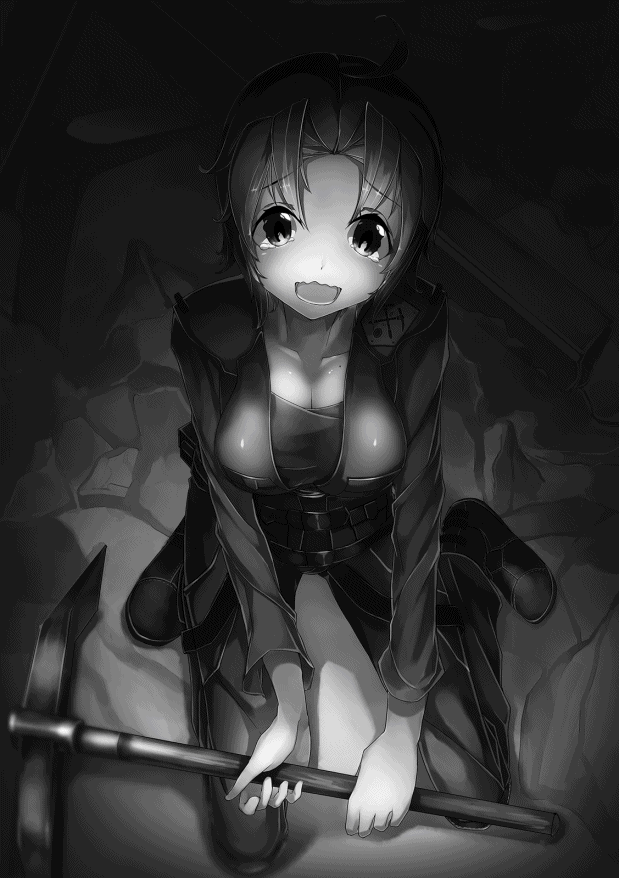
俺の呼びかけに、うずくまっていた鈴音ちゃんが顔を上げた。表情はまったく分からないが、彼女の〝気〟からは安堵が伝わってくる。
「空さん、ですか？」
「うん」
その声からは、彼女の〝気〟と同様に明らかな安堵と驚きが感じられた。ここで自信ありげな爽やかスマイルを見せれば、彼女のハートは陥落間違いなしなのだろうが、まっ暗闇な現状が憎たらしいことこの上ない。
「よかった。でも......」
「この中は俺が潰れないようにしているから安全だよ。車両の前の方で救出を待とう。鈴音ちゃんは動ける？」
「はい」
「そのままゆっくり前に進んで」
少しばかり土砂が入り込んでいるが、今俺がいる周りの席には遺体がない。通路に遺体がないこともすでに確認済みだ。途中何か所か窓の部分から土砂が入り込んでいるが、通路までは少ししか達していなかった。
鈴音ちゃんは、四つん這いで俺の方にゆっくり近づいてきている。手探りで通路の位置を確かめるようなことはしていないので、彼女も〝気〟で物や人の位置が分かるのだろう。
「大丈夫だった？」
「は、はい。あっ、あのっ」
「ん？ どうしたんだい」
「い、いえ、わたしたち、どうなるんでしょう」
声のトーンからすると、鈴音ちゃんは不安なのだと思う。表情が読み取れないので勘でしかないが。というか、この状況になって不安を覚えない方がおかしいだろう。俺はそんな彼女を安心させようと、自信ありげに状況を説明した。
「きっと大丈夫だよ。さっきから探っていたんだけど、崩れ落ちた土砂をみんなで外に運び出しているみたいだから」
「そんなことまで分かるんですか？」
「あ、うん。崩落はこの先二十メートルくらいまでだから、数時間で助けが来るはずだよ」
「そんなことまで分かるなんて......すごいです。空さん」
そう言った鈴音ちゃんは、明らかに安心したようだった。そして、明らかに俺を頼りにしている。俺はと言えば、頼りにされてスゴイと言われ、嬉しい照れ笑いを浮かべていたのだが、彼女には見えていないだろう。
「でも鈴音ちゃん、どうしてみんなと逃げなかったの？」
「ゴメンなさい。わたし、一番後ろで押してたんですけど、天井が崩れ出したとき、思わず中に飛び込んじゃったんです──」
小さいころから発掘師に憧れていたという彼女は、もちろん崩落事故の危険性は承知の上だったそうだ。しかし覚悟していたとはいえ、いざ事故に遭遇してみると、その恐怖は想像以上で、車両の中に逃げ込むことしかできなかったそうだ。
〝気〟という異能がない時代の人間なら、崩落事故に巻き込まれれば、生きたまま救助される確率は低いだろう。しかし、今の時代の人間ならば、防御姿勢をとって呼吸できる空間さえ確保できれば、高確率で救助まで耐えられるのだ。
「──発掘師の資格に〝気〟力の下限があるのは、妖魔と戦うことだけを想定したものではないんですよ。崩落事故に巻き込まれても生還できる確率が高い者だけが、発掘師になれるんです」
「鈴音ちゃんはよく勉強してるんだね。俺も発掘師には絶対になりたかったから必死に勉強してるんだけど、まだ、鈴音ちゃんほど詳しくないよ」
〝気〟力が高い御堂家に生まれた鈴音ちゃんは、本妻の娘でなかったということと、発掘師への憧れもあり、小さいころから発掘師になるための勉強をしていたそうだ。
鈴音ちゃんとの話題はほとんどが発掘についてであり、彼女の知識の深さが伝わってきた。俺も発掘師になりたくて、というか天職だと思ってなった口だから、彼女との話は、状況を忘れさせるほどに楽しかった。
鈴音ちゃんは発掘師に憧れていたというだけあって、特級発掘師である遥への憧れも強く、襟首をつかまれてネズミの中に放り込まれたというのに、彼女への想いは揺らいでいなかった。
「空さんは遥さんの実家に住んでるんですよね。羨ましいです。でも、遥さんとはどうやってお知り合いに？」
「遥の祖父は猟師なんだ。そして、彼女は猟師小屋で祖父の手伝いをしていた。俺は森で行き倒れていたところを遥の祖父に助けられたから」
「そうなんですか......あ！」
話をさえぎるようにゴツッ、ゴツッという音が聞こえ出した。そして、車両前方から入り込んできていた土砂が崩れはじめた。どうやら外に出られそうだ。
「助けが来たみたいだ」
「よ、よかったです。助かったんですね......」
ゴツゴツガラガラという音が次第に大きくなり、そしてとうとうオレンジ色の光の筋が、入り口の上の方から射し込んできた。光に照らされた鈴音ちゃんの頬には喜びの涙が伝っている。
「空っ！」
その声は遥のものだった。彼女には〝気〟を伸ばして俺が生きていることを伝えていたが、少し大げさすぎないか？ と、思えるほどの叫び声だった。俺が車両の外に出ると、大きな歓声が上がり、人目をはばかることなく遥が抱きついてきた。
「助かったよ、遥。もう一人も無事だ」
「助かったじゃないわよ空！ 怪我もないみたいだし、とりあえずは無事でよかったと言っておくけど。どうして、どうしてあんな無茶をしたの！ ホントに心配したんだから......」
遥は今にも泣き出しそうな顔をしていた。俺が生きていると分かっていても、その言葉通り心配だったんだろう。
「ごめん。でも、あの状況じゃ俺がああするしかなかった」
「分かってるわ。御堂さん、無事だったからよかったようなものの、貴女の行動がもとで空が残らざるを得なくなったこと、忘れないでね」
後ろめたさがあるのだろうか、俺の後ろに隠れるようにしていた鈴音ちゃんは、遥の注意を受けておずおずと彼女の前に出た。
「ごめんなさい。わたしのミスで空さんを危険な目に遭わせてしまいました」
「理解しているのならこれ以上言わないわ。以後気をつけるように。でも、ホントに二人とも無事でよかった」
鈴音ちゃんは、遥の安心したような顔を見て、ようやく笑顔を取り戻した。そして、それを確認したかのように山岸さんが声を上げた。
「まぁアレだ。こうして全員怪我ひとつなかったことだし、発掘の危険性も十分に理解できたと思う。いいか、一度崩落した場所は再崩落の危険性が跳ね上がることを忘れるな」
「あの、質問していいですか」
真っ先に声をあげたのは阿古川哲也だった。
「なんだ。言ってみろ」
「埋まってしまったお宝はあきらめるんですか？ 俺はあきらめきれません」
俺の思いも阿古川哲也と同じだった。せっかく見つけた極上のお宝だ。簡単にあきらめるなんてできないし、困難を克服してこそ発掘の醍醐味 だろ。第三者的に考えれば、これは明らかに何か事件が起こるフラグだと確信できるかもしれない。しかしだ、そんなフラグはこの俺がへし折ってやる。
「危険なことは分かってるけど、俺もあきらめる必要なんてないと思う。というか俺がなんとかしてみせる！ せっかく見つけた極上のお宝を発掘しないでどうするんですか」
「ダメだっ！ と言いたいところだが......。まぁ、普通は崩落した現場の遺物はあきらめるのがセオリーだ。しかし、俺も発掘師の端くれだ。あのお宝が危険を承知で発掘するだけの価値があることは十分に理解している。よしっ！ 再崩落しないように細心の注意を払いつつ作業を再開するぞ」
「たしかに山岸の言うとおりね。崩落防止の木組は今まで以上に頑強に施工しましょう」
遥も納得してくれたことで、埋まってしまった車両を掘り起こすことになり、俺のテンションはうなぎ登りだ。が、何の策もなしに作業に取りかかることは危険すぎるということで、今日は車両前方の崩落部分に厳重な崩落防止措置を施すことで話がまとまった。その作業にはけっこう時間がかかったが、陽が沈んで二時間ほどで終了し、この日の作業は終了したのだった。
明けて翌日、作業は再開され、崩落防止措置に時間はかかってしまったが、夕方には無事に二両目を広場に引きずり出すことに成功していた。が......。
「で、なにか言いたいことはある？」
新人研修の現場で誰がこんな光景を予想していただろうか？ 二台の車両が収まった広場の片隅に、山岸さんが大きな体を小さく丸めて正座をしている。その正面で遥が腕を組み、鬼の形相で彼を睨みつけていた。研修生たちはそれを取り囲むように全員で山岸さんを睨んでいる。
「なにもありませんです遥様。私が悪うございました」
「ほう、お前でもそんな殊勝な態度ができたのね。だがしかし、特級発掘師の引率としては失格よ──」
山岸さんが延々と遥の叱責を受けている構図なのだが、これにはもちろんそれなりの理由があった。
最初の崩落現場の土砂を取り除いたときだ。最初に折れたコンクリートの支柱。その上部にぽっかりと大きな穴が開き、陽の光が射し込んできた。なにかに気づいたようにその穴を登って行った遥は、降りてくるなり山岸さんに詰め寄っていた。
理由を知りたくなった俺は、空いた大穴によじ登って全てを理解することになった。大穴から地上に出てみれば、そこは確認のときに山岸さんが掘った部分だったのだ。
もともとこの大穴に土はほとんどなく、岩やコンクリート片が詰まっていたのだが、山岸さんが確認のために穴を掘った衝撃で、それらを支える形になっていた支柱にひびが入っていた可能性が高い。遥はすぐにその答えにたどり着いたのだろう。
結局そのときは、まだ危険な作業が残っていたため、遥は山岸さんを軽く怒鳴りつけただけだったが、車両を広間まで引きずり出した後、件の場面と相成ったわけだ。
「──今日のところはこれくらいで許してやるわ」
ようやく遥の叱責が終わり、今日の作業は車両の中の遺体を埋葬したところで終了した。
山岸さんは元気なく、しかし積極的に遺体の運び出しに参加していたのが痛々しかったが、これがあの時感じたフラグの正体だったのかと、妙に納得したのだった。山岸さんには悪いが、俺にあのとき、このフラグをへし折ることなどできようはずもなかったことは間違いない。
明けて翌日、車両の分解と運び出し、馬車での運搬を終えて俺たちの新人研修は終了したのだった。
「お前の底力を思い知ったよ。俺には到底到達できない領域にお前はいるんだな。しかしそれにしても、お宝も凄い量だった。この馬車二台で三往復だろ。いくらになるか楽しみだな」
とは解散前の阿古川哲也の言葉だった。さらに、身を挺 してみんなの窮地を救ったと受け取ってくれたのだろう。野郎どもからは完全に妬みの視線が消え、女子たちからは神聖視するような視線を投げかけられるようになってしまった。これはこれで嬉しいことなのだが、特に女子たちにもっと積極的に声をかけ、フレンドリーな関係になりたかったと、少しだけ後悔した。
そして、お宝の査定は後日になるということなので、街へと戻り次第解散と相成ったわけなのだが、三日後に通知された査定金額は、一人あたり二十一万五千円ということだった。俺の生まれた時代の金額で二百万円強の大金だ。新人二級発掘師の、しかもたった一週間の研修で得た報酬としては、まさに破格と言っていいだろう。
いろいろとアクシデントには遭遇したが、話と違って強力な妖魔が出現することはなかった。しかしこうして、夢と希望に満ちあふれた俺の発掘師人生がスタートしたのである。
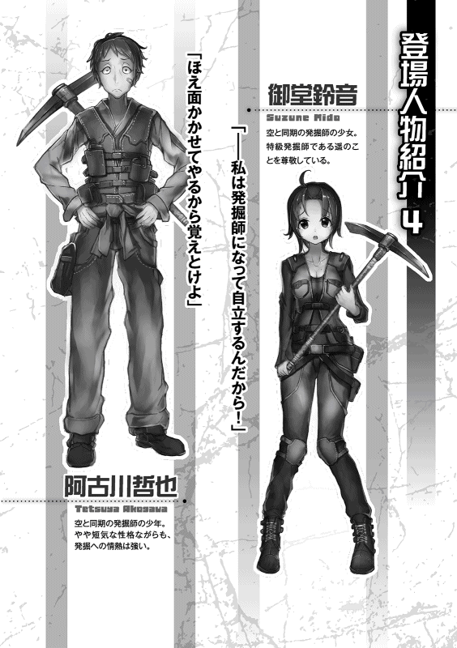
空たちが新人研修に参加していたころ、一花は三島鉱山の南南西、富士宮に張られた防衛線に赴いていた。
富士宮防衛線は、富士山跡地から湧き出てくる妖魔を食い止めるための最前線であり、富士大公国最大の鉱山、豊田鉱山からの主要輸送路と三島鉱山に回り込んでくる妖魔を食い止めている。そこには富士大公国軍の三分の一にあたる兵力が配置されており、富士大公国すなわち御殿場南方の防衛線に匹敵する規模を誇っていた。
「──妖魔どもに大きな動きは見受けられません。カテゴリー二以下の群れは散発的に襲撃してきていますが」
「そうですか、分かりました。引き続き警戒を怠らないように。カテゴリー四以上が現れたら直ちに報告なさい」
「ハッ」
十数キロにわたる防衛線、その中央付近の少し奥まった位置にある丘の上に設置された天幕。その天幕を後方に、一花は富士宮防衛司令官からの報告を受けていた。彼女の前方には、先のとがった丸太で組まれたバリケードが、延々と防衛線に沿って設置されており、左右を見渡せば高い監視用のやぐらが距離を置いて建てられている。
空が発掘師の研修を受けることを知った一花は、万が一を心配して視察に訪れていた。しかし、万が一にでもカテゴリー四に区分される妖魔の流入を一匹でも許してしまえば、その被害は甚大なものになることが過去の歴史から明らかだった。
強さのたとえで言えば、山小屋で空と遥が倒した四匹の山猿は、ボス猿も含めてカテゴリー二に相当する。あのときの山猿は妖魔ではなくただの獣であり、妖魔と比べれば、おとなしい部類に当てはまるのだ。空が最初に殴り殺したボス猿が妖魔化した場合、恐ろしいまでに強く凶暴な存在になるが、それでもカテゴリー三の枠を超えることはなく、カテゴリー四以上の妖魔がいかに強く恐ろしく、絶望的な存在であるかは想像に難くないだろう。
妖魔及び野獣の強さはカテゴリー零から五までに分けられており、カテゴリー四の妖魔であれば百人規模の軍隊でなんとか討伐が可能になる。カテゴリー五に相当する妖魔は、始祖クラスの強者か、最低でも千人規模の軍隊でなければ相対することができない災害級の凶悪さを誇る。
「一花様、襲撃の峠はすでに越えていると思われますが」
「ええ......。それでも、万が一があってはなりません。気のせいだといいのですが、妖魔たちの動きが去年までとは違うような気がします。違和感がぬぐえないのです」
脇に控えている藤崎は、いつになく慎重で、そして不安そうな一花の横顔を真剣なまなざしで見入っていた。
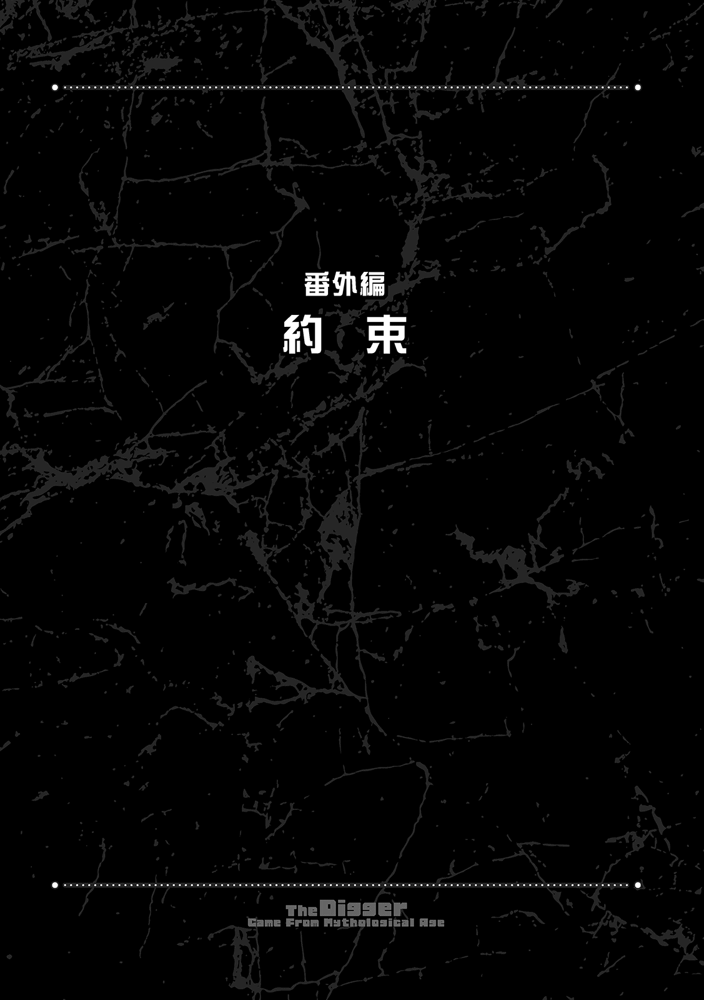
研修が終わり、ようやく俺も発掘師としての人生を歩むことになった。今日はそんな俺を祝ってくれるということで、一花ちゃんたち高科さん一家のプライベートな祝宴というか晩餐にお呼ばれしている。
「よく来てくれたね空君」
「こんばんわ。今日は呼んでくれてありがとうございます」
「ささ、上がって上がって。希美ちゃんも一花も待ちくたびれているよ」
「あはは、遅くなってすみません」
和服姿の女中さんというか使用人さんに連れられて、高科家の玄関に通された。玄関で俺の到着を待っていたのは、ゆったりした家着を身につけた陽一さんだった。かくいう俺は、大公宮の中にある高科家を訪問するということで濃紺のスーツだ。さすがに普段着でここに来る度胸はない。
「こんばんわ。希美花さん、一花ちゃん。って、うをっ！ スゴイご馳走っすね」
「こんばんは、空君。今日は一花ちゃんが張りきってお料理したからたくさん食べていってね」
「もちろんっす。こんなに美味そうなご馳走、残さず全部食べますよ」
「まぁ！ 良かったね一花ちゃん。丹精こめて作った甲斐があるね」
「も、もうっ！ お母様......」
恥じらうように頬を染め、俺から視線を外した一花ちゃんだったが、それでもその顔には安心したような喜びが溢れていた。そんな彼女の胸に揺れ煌めく紫水晶。
俺の首にも同じような紫水晶が掛かっているが、そういえば一花ちゃんがこのネックレスをねだったのは、彼女がまだ六歳のころだったか......
「空君すまないねぇ。一花のこと頼んだよ」
「任せてください。俺も春休みでヒマしてたんで」
「一花ちゃん、空お兄ちゃんの言うことをよく聞いていい子にしててね」
「うん。いちかいいこにしてる」
夫婦二人でどうしても外せない用事があるということで、もうすぐ小学生になるまだ幼い一花ちゃんを、隣に住む我が家で預かることになった。
「ソラおにいちゃん、きょうはソラおにいちゃんのおうちであそぶの？」
「そうだよ、一花ちゃん。お父さんとお母さんが帰ってくるまでお兄ちゃんと遊ぼうね」
「やったぁ！ いちかソラおにいちゃんとあそぶあそぶ」
「じゃあ、何して遊ぼうか、一花ちゃんは何がしたい？」
「えっとね、えっとね。ソラおにいちゃんのおへや」
てっきりおママゴトとか、おもちゃで遊びたいとか言ってくると思ったら、その予想を思い切り外されてしまった。一花ちゃんが俺の部屋に来るのは今日がはじめてではないが、いつもは居間で遊んでやることが多かった。
まぁ、部屋の押し入れの奥にはガキのころに遊んだおもちゃとかがいまだに仕舞われているから、いざとなればそれを引っぱり出せばいい。
「はやく、はやく！」
急かす一花ちゃんに手を引かれ、階段を駆け上がる。部屋に入ると、彼女は俺の右足にしがみついてきた。自分でも割と殺風景だと思っている俺の部屋は、雑誌とかが少し散らかっていてお世辞にも綺麗だとは言い難いが、一花ちゃんがそんなことを気にする様子はなかった。
「えへへー、ソラおにいちゃんすわって」
「はいはい。これでいいかい」
なにをするのかと思えば、一花ちゃんは俺の体をよじ登りはじめた。
「んしょ、うんしょっ」
歳の離れた従妹とかで経験はあったが、元気に走り回るようになった幼児は、やたらにベタベタとくっつきたがったり、大人の体によじ登ったりしたがるものだ。一花ちゃんは年齢的にもうそろそろ卒業してもいい頃合いだと思うが、久しぶりに遊んでもらえるのが嬉しいのかもしれない。
「やったぁ」
俺の体を登りきり、両足で首を挟んで肩車の態勢になった一花ちゃんは、両腕でがっしりと俺の頭をホールドしておねだりしてきた。彼女の体温と早い鼓動が後頭部に伝わってくる。
「たって。ソラおにいちゃん、たって」
「分かった分かった。そんなに髪を引っ張らない」
一花ちゃんに急かされた俺は、立ち上がってカーテンを開け、二階テラスに通じている窓ガラスを開けた。気持ちいいそよ風に誘われ、春の陽光が降り注ぐテラスに降り立つ。
「うわぁー、たかい。たかいよ、ソラおにいちゃん」
「そうだね。ほら、あそこ」
俺は空にまっすぐな白い雲を描いている物体を指さした。
「あっ、ひこうきだ」
ひとしきり二階テラスからの風景を堪能した一花ちゃんは、肩車を降りると、テラスでひとり遊びに興じていた。俺はその光景をイスに腰掛けて眺めていた。
「一花ちゃん、そろそろお昼だから一階に降りようか」
「うん」
一花ちゃんの手を引いて一階に降り、洗面所で手を洗ってすでにリビングダイニングに用意されていた昼食を頂いた。
「一花ちゃん、今日は何をして遊んだの？」
「えっとね、えっとね。かたぐるま」
「そう、楽しかった？」
「うん」
「ごはんは美味しい？」
「うん、とってもおいしいよ」
「あっ、そうだ。一花ちゃん」
「母さん、あんまり話しかけると一花ちゃんが食べられないよ」
「だってぇ......」
俺の母親も一花ちゃんが可愛いくて仕方がないのだろう。が、俺には一花ちゃんが迷惑そうにしているように見えた。現に一花ちゃんの視線は、頬を膨らませモグモグと咀嚼しながらも、次の獲物 に狙いを定めている。
「御馳走さま」
「ごちそうさま」
昼食を食べ終えた一花ちゃんは、一階の客間でお昼寝の時間だ。俺はその間に自室で読書でもすることにした。ただ、読書とは言っても小説とかマンガとかではなく、トレジャーハンティング関連の本だったりする。
別に小説とかマンガを読まないわけでもないが、どちらかと言えばそれよりもトレジャーハンティングの方を優先させてしまうのだ。
しかし、そんな俺でもベッドに寝転んでページをめくっているうちに、いつのまにか眠ってしまっていたようで、気がつけば一花ちゃんに馬乗りされて顔で遊ばれていた。
「ふにゃ？ ほはひょういひかひゃん」
「あ、ソラおにいちゃんおきた」
そう言って笑顔を見せた一花ちゃんの視線が、俺の首のあたりにくぎ付けになった。
「うわぁ、きれい」
さっきまで俺の顔をまさぐっていた一花ちゃんの可愛い手に握られていたものは、去年の秋におじさんのところで磨いてきた紫水晶だった。
構ってほしいからだろうが、今の今まで俺を起こそうとしていた一花ちゃんの興味は、もう完全に紫水晶に移ってしまっている。
「欲しいの？」
「ほしいけど、これはソラおにいちゃんのでしょ？」
「そうだけど、欲しかったらあげるよ」
「ううん、これはソラおにいちゃんのだからいらない。いちかはソラおにいちゃんとおなじのがほしいの」
目じりに涙を浮かべながらもそう言った一花ちゃんだったが、彼女の言葉はやっとの思いというか頑張って絞り出したような、あきらめきれない感じを孕んでいた。彼女としては欲しくて欲しくてたまらないけど、他人のものをむやみにおねだりしてはいけないと両親に教育されているのだろうか。
「じゃあ、今度おじさんのところに行ったときに一花ちゃんのを作ってこようか？」
俺がそう言った瞬間に、一花ちゃんの表情がぱあぁっと明るくなった。
「ぜったい。ぜったいだよ！ うそついたらソラおにいちゃんのこと、いちかキライになるんだから」
このときの一花ちゃんには、その幼い顔からは想像できないほどの、迫力というか凄みがあった。よほどこの紫水晶が欲しいのだろう。
「じゃあ指切りしよう」
「うん！」
指切りをして安心したからだろうか、この後一花ちゃんはいつも以上に俺にじゃれついてきた。夕方になって陽一さんと希美花さんが迎えに来るまで、一花ちゃんはひとときも俺のそばを離れようとしなかったのだった。
そんなことがあったよなぁ。なんてことをついつい思い出してしまった。あのころの一花ちゃんも可愛かったが、今の成長した一花ちゃんもまた、昔以上に可愛くなったなと再認識させられた。
「あらぁ？ どうしたの空君。そんなに一花ちゃんが気になるぅ？」
希美花さんはそう言って笑みを浮かべた。
「えっ、あ、いや、なんだか昔を思い出してしまって......」
「ささっ、今日はお祝いだ。せっかくの手料理が冷める前に頂こう」
微笑ましい笑みを浮かべたままの希美花さんと、恥ずかしそうに顔を染めている一花ちゃん。そして居心地が悪くなった俺を見かねたように、陽一さんの仕切りで晩餐がはじまり、一花ちゃんの心がこもった手料理を満喫しつつも俺たち四人は昔話に花を咲かせたのだった。
あとがき
プロの小説家が創作した紙媒体の小説など片手の指で足りる程度しか読んだことが無く、気楽に読めるＷｅｂ小説に影響を受けただけの私が、まさか紙媒体で小説──と呼べるかどうか分かりませんが──を商業出版できるとは露程も考えてはいませんでした。
先の通りＷｅｂ小説に影響されて執筆活動をはじめたのですが、当然ながら素人の私には小説を創作するノウハウなど有るはずもなく、思いついたことをただ書き連ねてはＷｅｂ小説投稿サイト「小説家になろう」様に投稿しておりました。
そんな状態で執筆した作品に人気が出るはずもなく、初投稿作品はほとんど読まれることもなく埋もれていきました。二作品目も当然のごとく埋もれていき、小説を書くノウハウを四苦八苦して独学しながら書いた三作品目にして初めて、ある程度読者様に読んでもらえる作品を投稿することができました。
長い前置きはこれくらいにして、紙媒体として出版されることになった拙作は、私の五番目の作品になります。まだまだ小説と呼べる仕上がりになったとは思っていませんが、拙作『異世界だと思ったら崩壊した未来だった〜神話の時代から来た発掘師〜』について、思うところを少しだけ紹介させてください。
拙作の舞台となる文明が崩壊した未来世界。それはもちろん私の妄想が生んだ世界です。便利なインフラや機械類が乏しく、とても暮らしやすいとは言えない世界で、少しでも快適に過ごすために皆の役に立ちたいという思いと、宝探しで一攫千金を夢見るロマンと、強くなって可愛い女の子を助け、チヤホヤされたいという少年の思いを合わせて妄想を膨らませました。
そんな妄想を書き連ねた拙作が世に出る切っ掛けを提供していただいた「小説家になろう」様、拙作を見出してくださった「株式会社ＴＯブックス」様、素晴らしいイラストを描いてくださった千時様、そして拙作をお買い上げくださった皆様に、この場をお借りして御礼申し上げます。
今後とも『異世界だと思ったら崩壊した未来だった〜神話の時代から来た発掘師〜』をよろしくお願い申し上げます。
滋田英陽
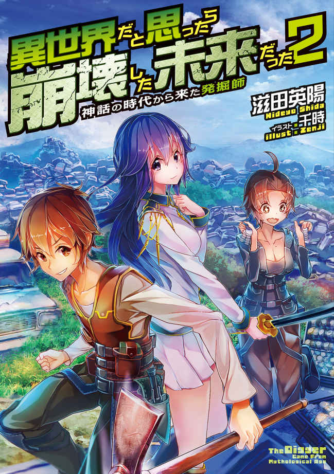
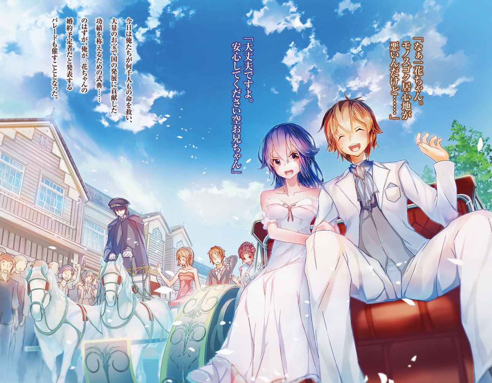
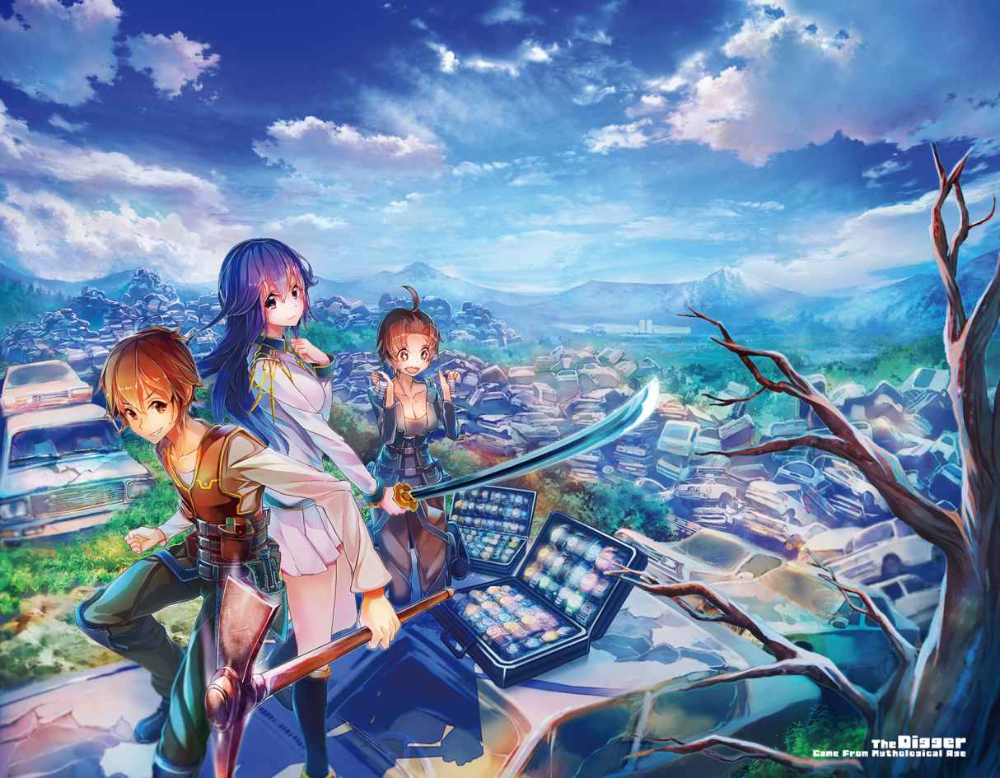
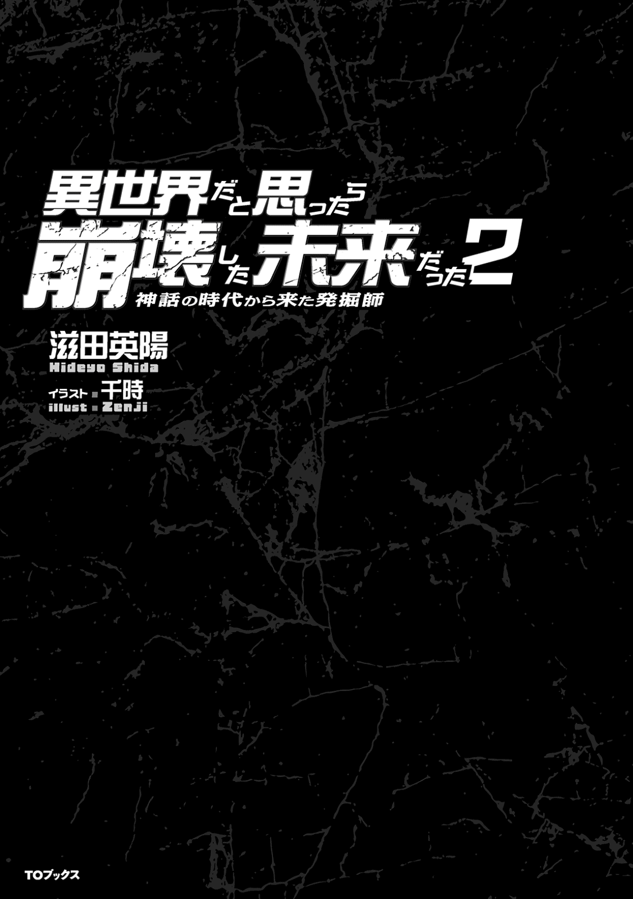
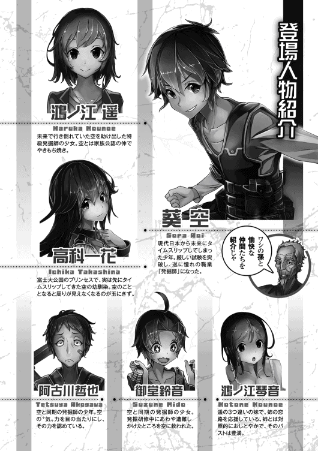
二十一世紀の日本に生まれ、はるか未来に時間転移してしまった者たちがいた。
四千年後の未来。
そこはかつて栄えた文明が完膚なきまでに破壊され、崩壊した未来だった。
人口はかつての十分の一未満に激減し、人を襲う脅威〝妖魔〟が闊歩 する世界。
そんな恐ろしい時代に飛ばされてしまった一人の少年。
名を空 というその少年は、その世界で生きていくために必死だった。
少年が見た荒廃した世界にも人々の営みはあった。
自由に山野を散策することなどできようもない厳しい環境にあって、人々は窮屈な暮らしを強いられていた。
しかし、そんな人々を勇気づけ、希望となる存在がいた。
発掘師と呼ばれる者たちだ。
彼らはかつて栄えた文明のなごりを求め、妖魔が闊歩する森へと分け入る。
森を切り開き、地下に埋まった文明の遺物を求めてツルハシを振るう。
発掘師がもたらす文明の遺物は、荒廃した時代に暮らす人々にとって、なくてはならない必需品だった。
危険を顧みず、金と名誉と使命のために彼らは今日も掘り続ける。
少年は思った。
俺も発掘師になりたい。
心からそう思い、願い、努力を惜しまなかった少年は夢を叶えた。
あるときは妖魔を蹴散らし、またあるときは荒野や森の中で野宿し、お宝を求めて森に分け入ってはツルハシを振るう。
それはかつて、少年が豊かな文明の中で憧れていた生活だった。
少年は今日も穴を掘る。
仲間と共にツルハシを振るう。
人々の役に立つために。
人々の生きる希望となるために。
お宝を求めて。
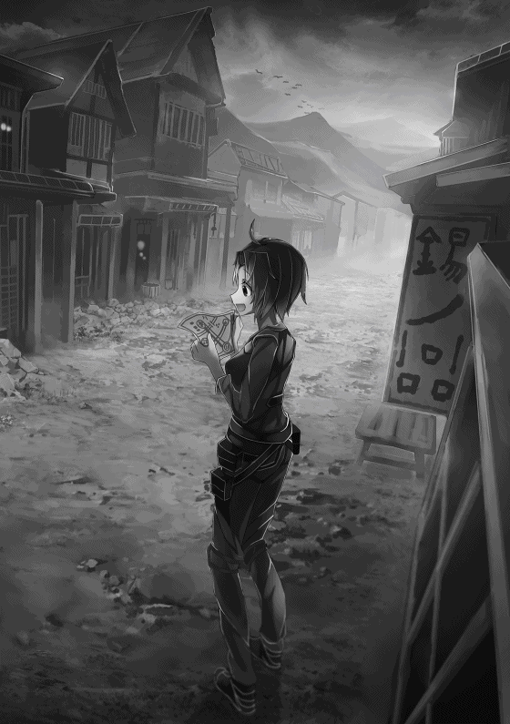
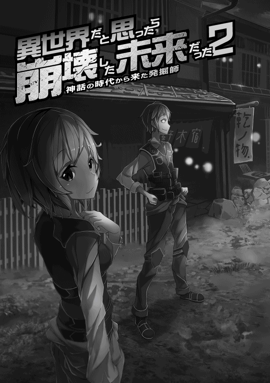
発掘師研修のインストラクター役を買って出た遥 は、お目当ての新人発掘師、空が発揮した発掘師としてのとてつもない可能性と実績に、先輩のベテラン発掘師として戦慄を覚えていた。
同時に、想い人の活躍に心躍っていたことも確かだった。
さらに今年の研修には、空以外にも目を見張る素質と可能性を示した者が二人も参加していた。
始祖である空の〝気〟力が桁違いなのは置いておくにしても、二人の〝気〟力には目を見張るものがあった。
その筆頭、御堂 鈴音 というその少女は、貴族家の子女でありながら奢ることは無く、真剣に研修に取り組んでいた。空目当てで研修に参加した女どもとは、一線を画していることも好印象だった。
御堂鈴音は、ネズミ型の妖魔に怯える情けない一面や、逃げ遅れて崩落に巻き込まれるというミスも犯したが、真剣に研修に取り組むその姿勢には好感が持てた。現場で十分な経験を積めば、発掘師として、いずれ自分と同等のレベルに到達することは間違いないだろう。
もう一人の阿古川 哲也 という少年は、向上心が強すぎて空に突っかかっていたが、研修自体は真剣に取り組んでいた。あのハングリー精神溢れる向上心は、将来彼を成功に導くことだろう。
阿古川哲也は、最終的には空とも和解していたようだったし、その光景には微笑ましい思いさえしていた。
インストラクターとしての仕事を終え、空と共に実家である鴻ノ江食堂に帰りついた遥は、安堵 の息を漏らした。
空の活躍によって、新幹線という超大物のお宝を掘り当てた発掘師研修も、崩落事故というアクシデントはあったものの無事終わることができた。
遥はインストラクターとして参加していたことにより、お宝の分配を受けることはできないが、そんなことよりも空の活躍と彼が無事だったことが嬉しかった。
「なぁ遥、さっそく発掘に行こうと思ってるんだけど、一緒に行くか？」
その言葉に遥は心躍る思いだった。
かつて発掘師としてやんちゃした黒歴史、というか若気の至りを拭い去ることはできないが、そんなことなど消し飛ぶほどに空に誘われたことが遥は嬉しかった。
「もちろん、同行させてもらうわ」
◇◇◇◇
新人発掘師研修が終わって数日が過ぎた。
「準備できたの？ 空」
「うん、見てのとおりいつでも出発できる！」
「そっ、ならさっさと行くわよ」
研修で手に入れたお金で、馬一頭と荷車を仲間たちと共同で買い入れた。万全の準備を終えて今日俺は発掘師としての一歩を踏み出す。
興奮してほとんど眠れなかったが、待ちに待ったトレジャーハントのはじまりだ。
鴻ノ江 食堂を遥と共に陽が出る前に出発し、発掘師協会の前で待ち合わせた仲間二人と合流し、俺達四人は今、首都を出て荷馬車に揺られている。
「なぁ空」
「なんだ？」
「いきなり豊田は早くないか？」
「大丈夫ですよ。なんたって特級発掘師の遥先輩が一緒なんですから。それに空さんもいるんですから。心配性ですね哲也さんは」
「い、いや鈴音さん。俺はただ......」
「あぁ情けねぇ。あのとき俺に突っかかってきた勢いはどうした」
「んなこと言っても。カテゴリー二の妖魔が出るんだろ？」
「ごく稀 にだけどね。もし出たときはわたしと空がいるから大丈夫だよ」
「はぁ、遥先輩がそう言うなら......」
東の地平線から陽が顔を出し、ガタガタと小気味良い振動の中で話している俺たちを照らしていた。
ただひとり馬を扱える遥が御者台に座り、俺と阿古川哲也、それから鈴音ちゃんが荷台に座っている。
研修が終わって発掘品の売り上げをもらいに遥と協会に行った際、出くわした阿古川哲也や御堂鈴音ちゃんとパーティーを組むことになった。
そのまま協会でパーティー登録し、その勢いで豊田鉱山に行くことになったのである。メンバーはその二人に俺と遥を入れて四人だ。
「にしても哲也、ずいぶん恰好が変わったな」
「ああ、大金が手に入ったからな。装備一式新調したんだ。お前のおかげだけど」
「ははっ、あの時はずいぶんみすぼらしかったからな」
「そうですね、ずいぶんカッコよくなりましたよ」
「い、いやぁ......」
俺と遥、そして鈴音ちゃんは研修の時とほとんど同じ装備だった。が、鈴音ちゃんにカッコいいと言われ照れている阿古川哲也だけは、真新しい装備に身を包んでいた。
真新しい黒いブーツに黒い革製のパンツ、白いＴシャツ、その上から濃い茶色で革製のポケットが多く付いたベストだ。背負ったツルハシまで新調している。
これから四人だけではじめて発掘に行くという少し興奮ぎみの雰囲気の中で、荷馬車に揺られて移動するという、ゆっくりとした時の流れを俺は楽しんでいた。
陽はすでに登りきり、春の暖かな陽光が心地いい。そんなとき、不意に遥が話しかけてきた。
「ところで空、操縦してみない？」
「ん〜そうだなぁ。昼メシ終わったらやってみるよ。教えてくれる？」
「うん、もちろんいいよ」
そう言って遥が振り向き、微笑みかけてきた。その様子を見て鈴音ちゃんと阿古川哲也が口を開く。
「わたしにも教えてください遥先輩」
「あっ、俺も俺も」
「そうねぇ、じゃあ交代で教えてあげる」
そんなこんながあったあと、馬車を停めて和気あいあいと昼食をとったのち、俺、鈴音ちゃん、阿古川哲也の順で荷馬車の操縦を遥に教えてもらった。そして順調に豊田への道をたどり、陽が沈みはじめた夕暮れ時。
「ここでいいわね」
そう言って遥が荷馬車を停めた場所は、道から少し外れた大岩の隣だった。
豊田までの行程は今日を入れて二日。ここは静岡を過ぎたあたりだ。
静岡方面にも鉱山はあるが、今回の目的は豊田での発掘なので、二日がかりの移動になる。遥に聞いた話だと、静岡の鉱山なら一日でたどり着けるらしい。
「じゃあ野営の準備をはじめよう」
パーティーのリーダーは遥が務めている。
発掘師になりたての俺たち三人からしてみれば、特級発掘師の遥は大先輩なのだから当然のなりゆきだろう。
そんな中で、俺が遥に向かって『遥先輩』なんて言ったら拗 ねられてしまった。
阿古川哲也とか鈴音ちゃんが『遥先輩』と呼ぶのには自然な対応してるくせに、俺には〝先輩〟と呼ばれたくないようだ。
遥の指示に従ってテントを二張り設営する。俺と阿古川哲也、遥と鈴音ちゃんがペアを組むことになったのは、非常に残念だが当然のなりゆきだろう。
設営作業が終わると、俺と阿古川哲也が薪 を集め、遥と鈴音ちゃんが夕食の準備をすることになった。荷馬車があるので水は樽に入れて運んできたが、それでも量が限られるので贅沢 に使うことはできない。
二日分の飲み水と、今日の夜、明日の朝昼の食事と洗い物、それから今日の夜に体をふくために使う分量だ。
二人がかりで一夜を過ごせるだけの十分な薪を集め終わったころには、鍋の中に水が入れられており、切り分けられた食材が別に用意してあった。今日の夕食は肉と野菜のスープにパンである。
出発前の準備をしているときは、飯ごうでご飯を炊くのかと思っていたが、遥曰く、炊飯は水を大量に使うから水場が無い場合はパンが普通らしい。
荷馬車があるから樽をもうひとつ持っていけば済む話だが、そこまでして米を食べる必要もないだろうということだった。豊田に着けば宿屋もあるらしいので、一日我慢すれば済む話だ。
「あ、待たせた？」
「ううん、大丈夫。今終わったとこ」
「じゃあさっそく火にかけようか」
そう言って俺は集めた薪にマッチで火をつけた。陽はとうに沈んでおり、空には星が瞬いている。火勢が強まり、そして安定する。しばらくして鍋の中の水がぐつぐつと沸騰してきた。食材を順次投入し、浮き上がってきた灰汁 をすくう。頃合いを見て遥が塩と醤油だけで味を調えた。
今の時代ではコショウが手に入らないらしいし、香辛料は種類が少なく貴重品ということだった。鈴音ちゃんは貴族の家に育ったので、料理は初体験だそうだ。だから味付けは遥の担当だ。
「うん、こんなもんかな。どう？ 鈴音ちゃん」
「あっ、美味しいです。遥先輩は料理もお上手なんですね。尊敬します」
「えへへ、料理は得意なんだ」
「そういえば、山小屋でもずっと遥が料理してたもんな。遥の作るメシは美味いんだ」
俺がそう言って遥を褒めちぎったら、彼女は恥ずかしそうに、そして嬉しそうに顔を上気させていた。
「へー、そうだったんですか。そういえば遥先輩の家は食堂でしたね。俺も今度食べに行こうかな」
「あ、私も行きたいです」
阿古川哲也と鈴音ちゃんの要望に、遥は笑顔を見せて頷 いた。
「じゃあ、発掘が終わったらわたしの家にみんなで行こうか」
鈴音ちゃんがスープを取り分け全員に配る。
「「「「いただきます」」」」
冷ましもせずに阿古川哲也がスープに口をつける。
「あちちっ、でも......うめぇ！」
「そう慌てるなって。でも確かに美味いな。山小屋で食った鍋よりシンプルだけどコレはコレで確かに良い」
俺がそう言ったら遥は嬉しそうにしていた。
「うん、美味しい。さすがは遥先輩です。私にも今度教えてくださいね」
「まあ、これからパーティー組むんだから鈴音ちゃんもきっと上手になるよ」
「そのときは空さん、私の料理食べてくださいますか？」
「あたり前じゃないか。俺たち仲間なんだし」
「あっ、俺も俺も」
そんな感じで楽しい夕食が終わり、鍋や食器を洗ってたき火を囲む。食後の至福感と少し肌寒い空気、そこにたき火の温かさが加わって心地いい。
研修のときも野営をしたが、あのときは人数が多かったし引率はいたしで、なんか学校の行事のような感覚があった。それは確かに修学旅行とかオリエンテーリングとか学校のみんなと行くキャンプとかも面白かったが、今は違う。
気心の知れた仲間たちと大自然の中で自由に、しかし妖魔という脅威が存在する緊張感を伴って野営をする。
そういった、なんというか俺が生まれた時代ではまず経験のできない、貴重と言ったら語弊があるかもしれないが、何か特別な得難い体験をしているという感じがして楽しかった。
「空、そろそろわたしたちは寝るよ」
「そうだな。じゃあ予定どおり俺と哲也で見張りをするよ」
「空が〝気〟の解放してても妖魔は襲ってくるから気をつけてね。もし妖魔が出たら遠慮なく起こすのよ」
「うん、分かったよ」
と、俺が遥に笑顔を返したら、鈴音ちゃんが若干申し訳なさそうに口を開いた。
「じゃあ空さんも哲也さんもがんばってください。時間になったらちゃんと起こしてくださいね」
「おう」
「おやすみ遥、鈴音ちゃん」
「おやすみ」
「おやすみなさい」
遥と鈴音ちゃんがテントに入り、たき火の周りには俺と阿古川哲也が残された。道中全力ではないが、ある程度の〝気〟を解放して野獣避けをしていた。おかげで野獣には遭遇していないが妖魔は別らしい。今も放出の量は変わっていないが、遥曰く妖魔は〝気〟に引き寄せられる傾向にあるそうだ。
山小屋近辺と違ってこのあたりには妖魔が出没すると遥は言っていた。特に夜はその傾向が強いらしい。
ならばなぜわざわざ妖魔を引き寄せる〝気〟の解放をするのかといえば、このあたりは夜行性の野獣のほうが圧倒的に多いらしく、解放していたほうが危険度は低いとのことだった。
「なあ空、前から気になっていたんだが、お前一花 様と仲、良いらしいな」
「何をいきなり」
「いや、いろいろ噂になってるからな」
「どんな？」
「仲睦まじく手を組んで歩いていたとか、すでに婚約してるとか......」
やっぱり聞いてきたか。
いずれは聞かれるだろうと思っていたことだけに、すでに心構えはできている。
しかし、事実と違うところは訂正しておいたほうがいいと思った。
「一花ちゃんと俺は幼馴染なんだ」
阿古川哲也の目が見開かれる。
「......ということは大公様とも」
「ああ、陽一 さんと希美花 さんとは親しくさせてもらっていた。陽一さんたちが迷い人だっていうことは知ってるよな」
高科 一家が神話の時代、つまり二十一世紀からの迷い人であること。すなわち始祖であることは大公国はもとより和国でも有名な話らしい。これは陽一さんからも、遥やヒカル爺からも聞いた話だ。
「で、俺もその迷い人なんだよ。お前たちが神話の時代って呼んでる時代、そのときに俺が住んでいた家のお隣さんが高科一家だったんだ......」
俺が高科一家とどんなふうにお付き合いしていて、この時代に飛ばされて出会ってからのことも、当たり障りのないところだけ話した。
しばらくの間、阿古川哲也は俺の話をじっと聞いていた。
「そうだったのか。どおりで」
「婚約はしていないがな」
「でも、仲良いんだろ？」
「それは否定しない」
「まったく羨ましい限りだぜ。遥先輩とも仲良いし、鈴音ちゃんもお前のことよく見つめてるし」
「鈴音ちゃんが俺のことをどう思っているかはまだ分からない。けど、なるようにしかならないんじゃない」
「まったく、モテる男はいいよなぁ。いずれはお前、貴族にでもなるんだろ？」
「そうなるかもしれないけど、なるようにしかならないさ」
「もしお前が貴族になっても、俺たちは仲間だよな」
「ああ、それは間違いない。それはそうと──」
その後も俺と阿古川哲也はどうでもいい話を続けていた。
交代の時間ももうそろそろか、というときだった。野獣避けに解放していた俺の〝気〟に何かが反応した。
その反応がゆっくり近づいてくる。
距離は五百メートル、数は二十一、方向は東、その奥に森が見える。妖魔ではない。生物の〝気〟だ。
「哲也」
「ん？」
「妖魔じゃない何かが近づいてくる。たぶん人だ。方向は向こう。俺は遥たちを起こしてくる。お前は見張っていてくれ」
阿古川哲也は一瞬驚いたように目を大きくしたが、無言で頷き、俺が顎 で示した方向を凝視した。それを見て俺は遥たちが眠るテントに急いだ。
こんな時間に大人数で、道じゃないところから一直線に向かってくる団体さんとなれば、それはまともな相手じゃないだろう。そんな予感めいたことを考えていた。
そんなことを考えつつも、遥と鈴音ちゃんが寝ているテントの中に顔を突っ込む。
「うをっ！」
思わず口に手をあてて俺は叫び声を飲み込んでいた。
無防備に熟睡している二人の乙女。
寝相が悪いのだろうか、革製のベストがはだけ、鈴音ちゃんの豊満な膨 らみが彼女の腕で変形し、それを包む下着が大胆に顔を覗かせていた。
俺は思わずその至福な光景をガン見してしまったが、今はそんなことをしている場合ではないし、かといってもっと見ていたい気持ちは抑えられないし、やけに長く感じた数秒ではあるが、形容しがたい葛藤 にさいなまれた。
がしかし、俺は彼女らを起こすことなく、この至福の光景を愛でるという選択肢を選ぶほどの阿呆 ではない。
「遥、起きてくれ」
寝入っている遥の肩を揺すりながら声をかけた。
「ん、んー。もう時間？」
「時間だけどそれだけじゃない。東のほうから何かが近づいてきている。距離は五百メートル。数は二十一、妖魔じゃない。たぶん人だ」
「おかしいわね。まさか......。というか空、あんたどこ見てるの？」
急に額に青筋を立てた遥が、鈴音ちゃんの毛布をなおした。
「い、いやぁ、ついつい目が行っちゃって、眼福というかなんというか......。そ、そんなことより、まさかって何？」
「ハァ、今はあんたを責めている場合じゃないわね。たぶん野盗の襲撃よ。もう一度よく探ってみて」
言われたとおり慎重に〝気〟を探る。何度調べても人の〝気〟だ。しかし野盗とは面倒な奴らに目をつけられたものだ。
〝気〟を探った感じでは雑魚なのは間違いない。が、ようやくもうそろそろ眠れると思っていたところへの厄介者たちの登場に、いらだちを覚えたのは言うまでもない。
「人なのは間違いないと思う。しかし野盗か、面倒だな」
「この時期にはたまに出るのよね」
「なんで？」
「新人発掘師狙いよ。戦闘経験が浅い新人は狙われやすいの。まあ、奴らが狙ってるのは発掘師だけじゃないけどね」
そう言いながら遥は鈴音ちゃんを揺すり起こしている。
しかし、そんな遥には焦りも動揺も無いようだった。
「鈴音ちゃん、起きて」
「ん、んんーん。なんですか遥先輩？ むにゅむにゅ......」
「野盗の襲撃よ」
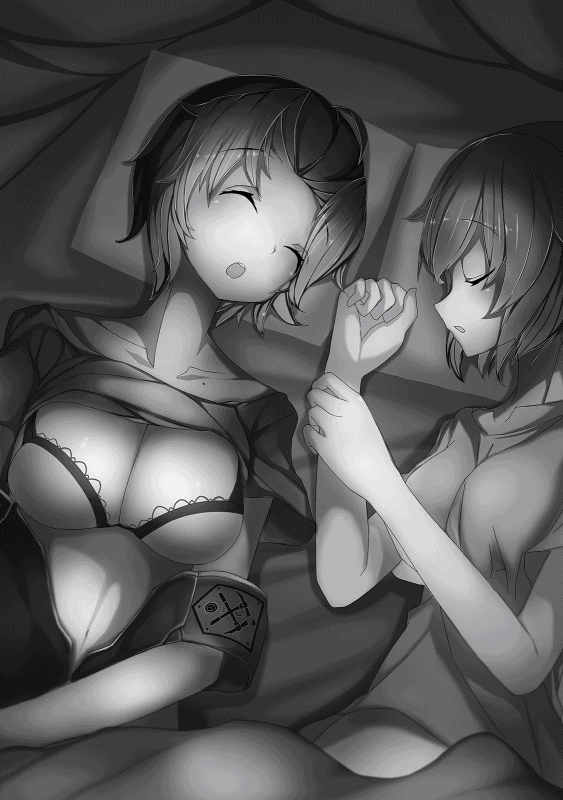
「............えっ？ ええー！」
「しーっ、大きい声出さない」
「でも、野盗って」
あきらかに狼狽 している鈴音ちゃんに、遥は落ち着かせるようにやさしく言い聞かせている。俺はその声を聞きながら遥たちのテントから外に出た。
「大丈夫。野盗の戦闘力なんてたかが知れてるから」
「そうなんですか？ でもわたし人と戦ったことは......」
「心配しないでいいわ。貴女の〝気〟力なら直撃を受けてもかすり傷で済むから。練習だと思って思いきりやりなさい。それとね鈴音ちゃん。寝るときはたとえベストでも脱いじゃだめよ。いつ襲撃があるか分からないなんだから」
「ごめんなさい。胸が苦しくってつい......」
テントの中から聞こえてくる遥たちの話し声に、ついつい聞き耳を立ててしまった。
というのは置いておくとして、鈴音ちゃんの〝気〟力は、自己申告によると千百ちょい。対して、今も近づいている野盗のうち、もっとも〝気〟力が高い奴で百五十あるかないか。
なるほど遥の言うとおり、野盗を二、三人相手にしたところで、鈴音ちゃんならばかすり傷程度で済むだろう。
阿古川哲也にしても八百五十ちょいの〝気〟力があるから、心配する必要はないはずだ。俺と遥で敵の人数を減らせばどうとでもなりそうな気がする。
「遥」
「ええ、分かってるわ」
テント越しに遥の声を聞きながら、俺は野盗たちの位置を再確認した。
いつの間にか、野盗の団体が百メートルくらいまで近づいてきている。
「空、なるべく殺さないようにお願いできるかな」
「えっ、どうして？」
「時間がないから理由は後で話すわ」
「了解」
発掘師の受験勉強で知っていたことだが、野盗の類 は襲われた場合殺しても構わない。人を殺した経験など当然無いが、野盗は殺す気で襲い掛かってくるだろうから、奴らを殺す覚悟は発掘師になったときからできていた。
野盗なんぞに俺の夢を邪魔される気など毛頭ない。もし野党に襲われることがあったら、そのときは迷わず殺そうと覚悟を決めていた。
しかし、遥は殺すなと言う。理由は分からないが、ベテランである彼女の言うとおりにしたほうがいいのかもしれない。
俺が遥たちのテントから離れ、野盗たちのほうに視線を向けると、奴らは視認できるところまで近づいていた。
距離にして五十メートル。月明かりしか奴らを照らすものはないが、〝気〟で強化された俺の目には、奴らの姿がはっきりと映っている。
阿古川哲也は、たき火を背にすでにツルハシを構えている。遥と鈴音ちゃんも間を置くことなくテントを出てきた。
鈴音ちゃんはテントの脇に置いてあったツルハシを手に取り、遥は金槌だけを右手に持っている。
なるほど、野盗風情にツルハシは必要ないということだろう。遥がそう考えるなら俺は素手で十分だ。ツルハシとか金槌を武器として使うほうが加減が難しいような気がしてならない。
鈴音ちゃんが遥が手に持つ金槌を見て大きく目を開いた。
「えっ！ 遥先輩、そんなのでいいんですか？」
「ええ、この程度の雑魚相手にはコレで十分よ」
遥は鈴音ちゃんを安心させるように笑顔を見せた。
野盗はすでに目前まで迫っている。たき火を背後に左から俺、阿古川哲也、鈴音ちゃん、遥と迎撃態勢は万全だ。
「こりゃぁ儲けもんだ。テメェら見てみろよ。いい女が二人もいるじゃねぇか。いいか、男のガキは殺せ。女は生け捕りだ」
そう言い放った野盗の先頭に立つ大男。一人だけ軍人が持つような長剣を軽々と片手で持ち、ペシペシと剣の腹を左手のひらに打ちつけているその男がリーダーなのだろう。
野盗たちは俺たちの前方十メートルくらいのところで足を止め、品定めするような、そして舐め回すような下卑 た視線で遥と鈴音ちゃんに顔を向けている。
俺や阿古川哲也には興味が無いようだ。大男以外の野盗たちは鉈やナイフで武装していて、身に着けている服もみすぼらしい。
「空、ひとりも逃がさないわよ。哲也君と鈴音ちゃんは無理しないように全力でやりなさい。絶対に油断しないで」
そう言い放った遥が、目で追えないほどの速度でいきなり駆け出した。いや、駆け出したというよりは野盗の中に飛び込んだというほうが正確だろうか。
しかも、野盗のリーダーと思しき大男の顔面に左拳を突き入れたかと思うと、勢いのままにその大きな体ごと大男を頭から地面に叩きつけ、そのまま野盗の片足太ももを踏み砕いたのである。
野盗たちは一瞬、自分たちの中央で大男を伸してしまった遥を、ポカンと口を開けて見ていた。
俺もあっけにとられている。阿古川哲也と鈴音ちゃんも同じだった。
「なるほど、確かに雑魚だな。というか、あまりにも手慣れてないか？」
なんてことを、ついつい独り言ちてしまったが、その後にとった行動は俺たちと野盗たちとで大きく分かれた。
野盗たちの何人かは一目散に逃げ出し、遥の近くにいた者たちは恐怖に顔を歪めて一斉に彼女に襲い掛かった。
阿古川哲也と鈴音ちゃんは、遥に気を取られている野盗どもにツルハシを振りかぶった。俺はといえば、最初は遥たちの加勢に回ろうとしたが、それが不要だと分かって近くにいた一人の足を蹴り折った。
がしかし、次々と遥たちに倒されている野盗たちを見て、ここにいる奴らは彼女らに任せることにした。
俺は逃げ出した野盗でも相手にすることにしよう。
そう考えて足元に転がる小石を拾い、逃げ出した野盗どもに向かって投げる。拾っては投げる。さらに投げる。投げる。投げる。投げる。もちろん全力ではない。
〝気〟によって精密にコントロールされた小石は、次々に逃げ出した野盗たちの背中に命中していった。小石が当たった野盗たちは吹き飛ばされるように倒れ、身動きする様子はない。もちろん死んでもいない。
逃げ出した野盗を倒し終えて遥たちのほうに振り向いてみれば、すでに戦闘は終わりを告げていた。
「ふう、哲也君、鈴音ちゃん、こいつら縛ってくれるかな」
やれやれ終わった、という感じで俺のほうに歩いてきた遥に対し、阿古川哲也と鈴音ちゃんは「はぁはぁ」と肩で息をしていた。二人は両手を膝について下を向いている。よほど力んでツルハシを振り回したのだろう。
「哲也君！ 鈴音ちゃん！」
「「はい！」」
遥に再度名を呼ばれて再起動した二人は、ロープを取りに馬車へと走っていった。
それを見届けた遥が口を開く。
「何か投げてたみたいだけど」
「ん？ ああ、何人か逃げ出したからな。遥たちのほうは余裕そうだったから逃げた奴を仕留めてた」
「これだけ暗い中でよく当てられるわね。走って動いてるマトに」
そう言った遥は呆れ顔だ。
「〝気〟で視てるからハズすわけないよ。投げた小石も〝気〟で正確にコントロールしてるから」
俺の話を聞いた遥は、得心が行かないという顔をしている。
ならば少しは補足しておくべきだろう。遥はかけがえのない仲間だし、というか仲間よりもっと身内に近いというかあわよくば付き合いたいとか、別に邪な考えがあるわけではないが、そんな彼女の力になれるなら俺が協力を惜しむことなどない。
「遥も知ってると思うけど......」
「思うけどって何？」
どうやって説明しようか悩んでいたら催促されてしまった。
「あ、うん。まだ俺が〝気〟をうまく扱えなかったころだけどさ、遥は俺の〝気〟が駄々漏れだって言ってくれただろ」
「そんなこともあったわね」
遥は昔を思い出すかのようにそう呟 いた。
「でだ、俺の〝気〟が漏れてるってことが分かるってことは、他人の〝気〟を感じとれるってことだろ？」
「確かにそうだけど」
「だったら分かるよな？」
俺の問いかけに、しばし遥は考え込むそぶりを見せた。どうにも俺の説明は分かりにくいらしい。
もともと俺は人に教えることは得意じゃなかったから、遥の反応も分からないでもないような気がした。もう少し突っ込んで説明したほうがいいか。
「俺は野盗から漏れる〝気〟を自分の〝気〟で感じ取っていたんだよ」
遥の目が見開かれた。
俺としては当然彼女も知っていることだと思って説明したわけだが、どうやら俺がやっていることは遥の常識には無いことらしい。
「遥が俺の体から漏れる〝気〟を感じたのは、自分の〝気〟を使って感じ取ったんじゃないのか？」
「違うわ。空の体から出ている〝気〟を〝肌〟で感じていたのよ。これは常識よ」
なるほど、俺の考えは非常識だったらしい。
「そうだったんだ......」
「〝気〟は離れれば離れるほど弱くなることは空も知ってるわよね？」
「もちろん知ってる」
「だから普通は近くにいないと感じ取れないの。これも常識よ」
「じゃぁ、妖魔とか獣は？」
「妖魔とか獣は〝気〟に敏感って言われてるの。人間じゃ感じ取れないような僅 かな〝気〟にも反応するわ。でも、空が言ってることが本当にできるなら妖魔とか野獣もきっと......」
ということは、俺がやっていることを教えれば遥にとってはプラスになりそうだ。
「じゃあ俺がやっていることを教えるよ。聞きたい？」
「もちろん聞きたいわ。今すぐ教えなさい」
何か遥の目が座っているような気がする。
ということは俺がやっていることはそれだけの価値があるということだろう。
「俺がヒカル爺と釣りに行ったときのことは覚えてるよな」
「覚えてるわ」
「そのときなんだけど、ヒカル爺が用意してくれた釣り針は魚が引く力で簡単に伸びるほど柔らかかったんだ。で、これはヒカル爺が俺の訓練用に作ってくれたんだけど、その釣り針を使うには〝気〟で硬さをコントロールしなきゃいけなかったんだ」
「うんうん、それで」
遥は興味津々に続きを促した。
「俺はコントロールに夢中になって釣り針に〝気〟を送り込んだんだけどさ、そしたら釣り針から漏れた〝気〟で魚が逃げちゃうんだ。魚がエサに食いついてから釣り針の硬さをコントロールするのが正解だったんだけどさ。正解が分かる前に釣り針の近くにいる魚の〝気〟を偶然感じ取ったんだよ。で、俺は思ったわけ、ああ、こうやって他人の〝気〟を感じるんだって」
「そっか、偶然の賜物だったのね......」
やっと納得が行ったような顔をした遥に、俺は胸をなで下ろした。
できるだけ端折らずに説明した甲斐があったということだろう。
「ということは、〝気〟を伸ばして相手の〝気〟を感じる練習をすれば、わたしにもできるってことか」
「たぶんできると思う」
「よしっ、暇なときに練習してみるわ。教えてくれてありがとね」
そう言った遥は嬉しそうだった。
「どういたしまして。で、これからどうする？」
「空は逃げた野盗を運んできてくれる？ わたしは奴らを縛っとくから」
「まかされた」
逃げ出した六人を遥たちのもとに引きずり集め、野盗全員をロープで繋 いで逃げられないようにした。
見るからに瀕死の重傷を負っている者もいるが、幸いなことに死人はいなかった。
気絶していない者は怯えるような目で遥を見ている。よほど怖かったのだろう。
「遥、こいつらはここに置いていくのか？」
「うーん、そういうわけにもいかないんだよねぇ」
「えっ、じゃあ馬車に積んで？」
そう言った鈴音ちゃんは心底嫌そうな顔をしていた。阿古川哲也も同じだ。
少し間を置いて。
「いや、わたしが馬で軍人を呼んでくるわ。それまで見張っててほしいんだけど」
「うん、それについては分かったよ。じゃあ、富士の都まで戻るんだな」
「いえ、ここからだと静岡鉱山が近いから時間はあまり掛からないわ──」
遥によれば、今から馬で飛ばせば夜明け前に静岡鉱山まで行けるそうだ。
そこから軍人を連れてくれば、午前中に引き渡しはできるだろうということだった。
「じゃあ、できるだけ早く戻ってくるから」
そう言って遥は行ってしまった。
後に残された俺たちは、遥が戻ってくるまで仮眠をとることにした。
野盗たちは大怪我をしていて、かつ、ロープで繋がれている。もはや逃げ出すことはできない。
大怪我はしているが、死にそうな者はいないので治療は見合わせることになった。
一応、睡眠をとった鈴音ちゃんが見張りを続行することにして、俺と阿古川哲也はテントから寝具として用意していた布を取り出した。
たき火の前で布に包り、いつでも動けるようにして仮眠をとった。
「──さん、空さん、起きてください」
「んー、あ、おはよう鈴音ちゃん」
「おはようございます」
さわやかな朝、というわけにはいかなかったが、可愛い女子に起こされるというのは悪い気分ではない。というか嬉しかったりする。
それは置いておくとして、目を覚ましてみれば、すでに朝陽が顔を出しており、遥が連れてきた軍人さんに野盗を引き渡している最中だった。
阿古川哲也はすでに起きており、遥は軍人さんの代表と思しき人と話をしていた。そして、何やら紙のようなものを受け取っている。
遥と話をしている軍人さんの部下と思われる人たちは、野盗の折れた足に添え木をしたり、簡単な応急処置を行っている。野盗たちを縛っていたロープは、返してもらったのだろう、遥の肩に掛かっていた。
ここまで気がつかなかったということは、仮眠をとったつもりだったがどうやら熟睡していたようだ。
「分かりました。では、これで引き渡しは完了ということでよろしいでしょうか」
「ははは、そうだな。全員生きていることであるし我々も感謝している」
「では、わたくしたちはこれで失礼いたします」
「ああ、よくやってくれた」
遥が対応していた軍人さんは、偉そうにはしていたが、猫田のような腐った人間ではなく、話も分かる人のようだ。
そういえばあれから猫田はどうなったんだろうか？ そんなことを考えていたら遥が戻ってきた。
「さあ空、朝ごはんの準備よ」
「ふあぁ〜、俺はもう一眠りしたいなぁ」
「ハイハイ、さっさと薪を集めてくる」
遥にせっつかれた俺は、阿古川哲也とともに薪を拾い集め、遥と鈴音ちゃんが朝メシを作った。
朝メシのメニューは、残った昨日のスープに水と調味料を足して温めなおしたシンプルなものだった。
移動の準備が終わり、豊田鉱山へと馬車を向ける。野盗と軍人さんたちは護送用の馬車を待っているらしく、置いてきた形になった。
そういえばと、とあることを思い出し遥に尋ねる。
「そういえば遥、野盗たちを殺さなかった理由って何？」
「まだ話してなかったわね──」
遥によれば、野盗とかの重罪人を捕えて軍に引き渡せば、報奨金が出るそうだ。報奨金は、罪人が死んでいた、つまり殺してしまった場合でも出るが、生け捕りにしたほうが多くなるらしい。
理由は、罪人が受ける刑罰にあり、二十一世紀で死刑にあたる刑罰が、永久強制労働刑という刑罰になるからということだった。
永久強制労働刑は、文字どおり死ぬまで強制労働に処せられる刑であり、人間としての尊厳はもとより、ほとんどの自由をはく奪された上で強制的に重労働を科せられる厳しい刑である。
これは、街や都市を守る堀などの掘削にかかる人的労働力や、その他の危険な重労働を担う人材が恒常的に不足していることにあるらしい。
そういう理由があって、野盗とかの重罪人を生け捕りしたときの報奨金が多くなるとのことだった。
遥が軍人さんから受け取っていた紙は、生きた野盗二十一人を確かに引き渡したという証書だった。この紙を軍の本部に持っていけば報奨金と引き換えてくれるらしい。
ちなみに、今回の報奨金は一人あたり四千円であり、総額八万四千円。俺たち四人で分けると一人あたり二万千円の稼ぎになり、一般的な発掘師の日当と比べるとかなり多い金額になった。まだ貰 ってないが。
「遥ぁ、こんだけ儲かるなら、野盗ハンターにでもなったほうがいいんじゃね」
と、俺は心にもないことを聞いてみた。
「そんなに簡単に野盗は見つからないよ。軍だって定期的な見回りをしてるわけだし。今回は運が良かったと思ったほうがいいよ」
遥の基準では、野盗に襲われたことは幸運だったらしい。さすがは特級発掘師だ。
そんなこんなで、野盗襲撃というハプニングはあったものの、その後は何事もなく。陽が沈んでだいぶたったころに豊田鉱山へと到着したのだった。
豊田鉱山は、驚いたことに大きな街だった。俺の記憶にある鉱山のイメージとは完全に別物だ。
周りを堀とバリケードに囲まれ、橋を渡ったその中には宿屋や食事処、発掘品の買取所とか道具屋が軒を連ねていた。
そこかしこから笑い声や盛り上がる声が聞こえてくる。
遥曰く、建物の多くは宿屋らしく、宿屋街という通称で呼ばれているそうだ。
「うをっ、すげーな」
「ほんとほんと、とても鉱山とは思えないですね」
阿古川哲也も鈴音ちゃんも活気のある街並みに興奮している。かくいう俺も二人と同じ思いだった。
大通りを挟んだ両脇に並ぶほとんどの建物から明かりが漏れ、道にも結構な数の人間の姿があった。そのほとんどが発掘師らしい恰好だ。
「いや、ほんとスゴイな」
「あとひと月もすればもっと凄くなるわよ。とりあえずは宿を確保しなきゃね」
遥のなじみの宿があるということだったので、俺たち四人はとりあえずその宿に行ってみることにした。
今の時期ならまだシーズン真っ盛りではないので、ほぼ空き部屋はあるそうだ。まあ、空いてなかったらなかったで、ほかの宿屋をあたればいいだけだ。
「わたしは荷馬車を預けてくるから部屋取っといてくれる？」
「了解」
「二人部屋を二つだからね」
遥に念を押され、木造二階建ての大き目の宿屋の前で荷馬車から降りると、彼女の荷物を受け取って、俺たち三人は片開きのドアを潜った。
宿屋の中に入ると正面にカウンターがあり、中年の女の人がその向こうに座っている。痩せていて少し気の強そうな感じの人だった。
「三人かい？」
カウンターの女の人がいきなり話しかけてきた。
「あ、いえ四人です。二人部屋を二部屋借りたいんですが」
「何泊するんだい？」
「とりあえずは十日ほどお願いしたいんですが」
「十泊だね。食事は朝と夜だけどどうする？」
「こちらで食べさせてもらいます。あ、それから今日の夕食もお願いできますか？」
「じゃぁ四人分で一万四千二百円だよ、食堂はあっちだからね。この紙にサインしてくれるかい」
渡された二枚の紙に俺と鈴音ちゃんがそれぞれサインし、鈴音ちゃんと阿古川哲也から三千五百五十円ずつ受け取った。
一万四千二百円とサインした紙を女の人に渡し、遥の分は俺が立て替えておいた。
「部屋は二階の二〇一号室と二〇二号室だよ。これがカギだから無くさないように。分かったね」
「はい」
カギを受け取った後、とりあえず部屋に荷物を置き、再び一階に降りる。少し遅れて鈴音ちゃんも降りてきた。しかし、まだ遥は戻ってこなかった。
「遥先輩はまだ戻ってこないようだな。空、俺は鈴音さんと席を確保しに行くけどお前はどうする？」
「そうだな、遥が来るまでここで待ってるよ」
「分かった。鈴音さん先に行こう」
「はい」
夕メシの席取りに食堂へと二人が去った後、しばらくして遥が戻ってきた。
「部屋は取れた？」
「ああ、今日の夕メシと十日分朝夕メシ付で一人三千五百五十円だった。遥の分は立て替えといたよ」
「そう、ありがと。じゃあコレ。ところでみんなは？」
「食堂に席取りに行ったよ」
「じゃあわたしたちも行こうか」
遥から立て替えた分を受け取り、カウンターを見て左にある両開きのドアを開ける。食堂は四人掛けのテーブルが六卓、それに十人くらい座れるカウンターがあった。
その半分ほどに人が埋まり、酒も出ているようでにぎやかだ。
「可愛い姉ちゃんがいるじゃねぇか。一杯付き合ってもらおうか。なんなら夜の相手でもいいぜ」
「おいやめろ！」
「あんだぁ、ガキはスッこんでろ！」
どうやらモメごとのようだ。酔っ払いが少女に絡んでいる。
しかもその少女は見知った顔だった。鈴音ちゃんだ。阿古川哲也は酔っ払いに詰め寄っている。
その様子を見ていた遥が額に井形 を浮かべた。躊躇 することなく酔っ払いの前にズイズイと進み出ていく。
「わたしの連れに何か用でもあるの？」
とたんに、鈴音ちゃんに絡んでいた酔っ払いが硬直した。
さらに、酔っ払いは血の気が引いたように青ざめ、ガクガクと震えだす。
周りの様子を見てみれば、何人かの客たちが遥を見てざわつきはじめ、その中のひとりが叫んだ。
「く、狂乱の堕天使 ッ！」
なんだかものすごく恥ずかしい言葉を聞いた気がする。あれはどう考えても遥の二つ名だろう。それ以外に考えられない。
そんなふうに思っていたら、遥の表情筋がピクピクと引きつりだした。額の井形も大きくなったような気がする。
そして、恥ずかしい二つ名を叫んだ男のほうに、遥がギギギと効果音を伴うような雰囲気で首だけを回した。
叫んだ男は、あまりの恐怖に怯えたように腰を抜かし、後ずさりしていく。遥は、表情はそのままに再び鈴音ちゃんに絡んでいた酔っ払いに顔を向けなおした。
「ヒィッ！」
すると、酔っ払いも腰を抜かして後ずさりをはじめ、くるっと体を反転して這うように逃げ出した。
鈴音ちゃんと阿古川哲也は、遥に視線を貼りつけたまま固まっている。食堂にいた客たちは静まり返り、ゴクリと生唾を飲み込んだ。
その様子を見て、今まで遥に男がいなかった理由が分かったような気がしてきた。
おそらくは発掘師であろう屈強そうに見えるむさ苦しい男たちが、ここまで遥に怯えているということは、過去に彼女が武勇伝か何かをやらかしたということで間違いないだろう。
いったい遥は何をやらかしたのだろうか？ まぁ、俺には関係ないことだから、彼女が何をやらかしたとしても気にはしないが。
しかし、今の遥には触らないほうがいいのだろうか？ そうとも考えたが、ままよと遥の怒気で固まってしまった空気を緩和すべく、彼女の前に進み出た。
パチン。
と、軽いでこピンを遥に喰らわす。すると、遥はハトが豆鉄砲を喰らったようなキョトンとした顔になり、やがて、やらかした感いっぱいの表情で慌てはじめた。
「い、今のは違うからね、空、今のは」
何が違うのかさっぱり分からないが、こんな遥が可愛いと思ってしまう俺は異常なのだろうか。それもまあいいさと、慌てふためく遥の頭をヨシヨシとなでる。
しばらくそうしていると、カァァァっと顔を赤くした遥が恥ずかしさを隠すように、席に座っておとなしくなった。俺も遥の隣に座る。
「あ、あのっ、ありがとうございました遥先輩」
お礼を言った鈴音ちゃんは、何やら遥を尊敬のまなざしで見つめている。しかし、阿古川哲也は少し引き気味だった。
遥はまだうつむいたままだ。なんだか雰囲気がぎこちない。
しばし無言の静寂があたりを包んだ。ほかにもいる客たちからも声が聞こえてこない。そんなときだった。
グゥ。
と、阿古川哲也の腹の虫が鳴く。少し間を置いて、遥がクスッと笑う。俺と鈴音ちゃんも釣られて笑い出す。
ナイスだ、ナイスタイミングだよ阿古川哲也。俺たちの雰囲気が弛緩 したからだろうか、周りの客たちからガヤガヤと喧騒 が響きだした。
そういえば俺も腹が減ったなと思い、店の人を呼ぶ。
「すいませーん。注文いいっすかー」
翌朝、昨夜は何もなかったかのように俺たち四人は宿を後にした。昨夜のハプニングについては、遥の新たな一面が見られたことに俺は満足している。
なぜ満足したのかは恥ずかしいから言わないことにする。俺だけの秘密だ。
さておき、ようやくこれから念願の発掘開始といきたいところではあるが、そう簡単には問屋が卸してくれない。
「ところでさぁ、遥」
「何？」
「俺たちって四人パーティーじゃん？」
「そうだけど」
「少なくない？」
ここでひとつ一般的な発掘のやり方というか手順を説明しておくと。ほとんどの場合、発掘師たちが単独で発掘にあたることはなく、パーティーとかクランとかそういうものを組んで集団で発掘を行うことになる。
ソロで発掘に行く場合もあるにはあるが、それは〝気〟力が高いベテランのみに許されることで、一般的なことではない。
理由は簡単で、発掘される物が重くて一人では持ち運べないということもあるし、第一、単独で発掘場所を探索して、そこを掘って、掘り出した物を持って帰る、なんてことを行うには無理がありすぎるのだ。
「確かに少ないわね」
「荷物というか、掘り出したお宝はどうするんだ？」
一人で持ち運べるほどに小さくて、かつ価値が高いお宝もあるにはあるが、ギャンブル性が高すぎて、道楽でもない限りやる奴はほとんどいないし、まともな商売にはならないのである。
妖魔や野獣に対しても単独で対処する必要があるので、一般的なレベルの発掘師がソロで行動することなどあり得ないのだ。
「そのための馬車じゃない」
「でも、結局あの馬車一台分しか運べないよな」
「運べなかったら往復すればいいわ」
「なるほど」
そんなこんなで俺たちは四人という少人数ではあるがパーティーを組んだ。妖魔のだいたいの強さが分かれば、いずれはソロでも活動する予定だが、今は考えていない。
さておき、一般的には、十人規模でパーティーを組むことが常識になっている。大きいところでは五十人規模の大規模クランまで存在するそうだ。
「でもさ、何往復もするのは大変そうだから、俺としてはできるだけ価値があるお宝に巡り合いたいかな」
「そうよね。でもそれは発掘師なら誰でも考えていることよ」
「でもさ、馬車で往復するってことは横取りとかどうなの？」
「ああ、そういうことね。簡単に説明するとね──」
遥曰く、パーティーで発掘するにあたって、気をつける必要があるのが、いわゆる縄張りである。
大概の、というかほとんどのお宝は地下に埋まっている。
したがって、発掘師たちは坑道を掘るか、露天掘りをして発掘作業を行うのであるが、研修のときのように、他人が掘った坑道に後から入って発掘するということは、めったに無いことらしい。
とどのつまり、縄張りとは坑道の入り口とその周辺ということになる。
違う場所から、別のパーティーが狙っていた同じお宝を掘るということは、縄張りを侵すことになるわけだ。たまたま坑道がぶつかるということも、ごく稀に起こり得るらしいが。
「そっか縄張りか」
「まぁ、発掘が終わった坑道はその後を自由に掘ってもいいんだけどね──」
縄張りがあると言っても、すでに発掘が終わって放棄された坑道の続きを掘ることに問題はない。
しかし、ほとんどの場合は徒労に終わることになるらしい。
「じゃあ研修のときは...」
「あれはね。ちょっと特殊なんだけど──」
遥曰く、研修のときに出てきた車やバイクは、あらかじめ協会のほうでとあるパーティーに協力してもらって残しておいてもらった、いわば置き土産だったらしい。
俺が見つけた新幹線は別になるが。
「そういうことだったんだ......」
さておき、そんな理由で俺たちが掘る場所は、まだ誰も手を付けていない場所ということになる。
そしてまだ誰も手を付けていない場所には、当然道などあるはずがない。
「じゃぁ、この道を通って適当なところで降りて森に踏み入るわけだ」
豊田鉱山のように大きな鉱山は、未踏の場所にでもあらかじめ何本かの道が軍と強制労働の囚人たちによって作られている。
その道を通って、目星をつけた場所の近くまで行き、森に分け入ってお宝の在処 を〝気〟によって探っていくのだ。
そしてお宝の反応を見つけた場合、必要なときはそこまでの道を造って荷馬車を進め、発掘を開始するのである。
「そういうことになるわね」
そんなわけで俺たちは今、豊田鉱山の宿屋街を西へと抜け、大通りをそのまま西へと直進していた。
さすがに町の近くはほとんど発掘が終わっており、すでに埋められた更地や、点在する森が残るだけだった。
さらに道を進むと次第に森が増え、そして至るところから左右に脇道が伸びていた。
「脇道には入らないの？」
「ええ、せっかくだからまだ誰も手を付けてない場所にしましょう」
どこかの脇道に入り、そこから探索をはじめてもよかったが、縄張りのこともあるし、パーティーを結成してはじめての発掘ということもあって、どうせなら自分たちで新しい道を切り開こうということになった。
豊田鉱山は、大公の陽一さんが二十一世紀当時の記憶を頼りに発見した鉱山であり、発見されてからまだ三十年弱しかたっていない、わりと新しい鉱山である。
そのおかげだろう、宿屋街を抜けて三十分も荷馬車で進めば、ほとんど脇道を見かけなくなった。
「なあ遥ぁ、もうこの辺でいいんじゃない？」
「うーん......空がそう言うならわたしに異論はないけど、こればっかりは運だからね。鈴音ちゃんと哲也君はどう？」
「俺はＯＫです、遥先輩」
「わたしはどこでも遥先輩についていきます」
「異論はないようね」
ということで、荷馬車を適当な場所で左に寄せて馬をその辺の木につないだわけだ。
そしてそれは道の左側、すなわち南側、すなわち海側を探索するためだった。
もちろんこれは俺の記憶によるものだが、海側のほうが都市が発展していたからにほかならない。
豊田といえばかつての俺のホームタウンである。大きな工場とかの位置が分かればウホウホなのだ。
しかしあいにく、ここがかつての豊田のどのあたりなのかはさっぱり分からない。ランドマークになりそうな建物がもし見つけられれば鬼に金棒になるが、そんなものが見えるはずがないのだから。
何事もそうそううまく行くとは限らない。
しかしそれでも、俺の心が萎 えることなどなかった。いや、分からないなら分からないで楽しめばいいのだ。
本来俺は、トレジャーハントができるというだけでも幸せなのだから。
「じゃあ予定どおりわたしと鈴音ちゃんが残るから、まずは空と哲也君で調査をお願い」
「了解」
「行ってきます遥先輩。期待して待っててくださいよ」
遥と鈴音ちゃんが荷馬車に残るのは、妖魔や野獣から馬を守るためである。さすがにこのあたりになると、野盗が出張ってくることはまずあり得ない。
それは、〝気〟力百に満たない者がほとんどの野盗たちには、このあたりに出没する妖魔や野獣に対処できないからだ。
それに万が一野盗が襲ってきても、遥一人で十分対応可能であり、鈴音ちゃんが残った理由は、先発の俺たち二人が成果を得られなかった場合に交代するためでもある。
さておき、俺と阿古川哲也は、遥と鈴音ちゃんを残して森の中に分け入った。
「ようし、スッゴイお宝を見つけて大儲けするぞ」
「いきなりどうしたんだ？ 空」
発掘師がお宝を発見することは国の発展にもつながっているし、発掘師もそれで稼ぎを得ることができる。
いわば発掘師と国の関係は、使い古された言葉ではあるが、ＷＩＮ-ＷＩＮの関係にあると言っても過言ではない。
要するに、発掘師が儲けるということは国の発展に直結しているのであって、言い訳がましく聞こえるかもしれないが、決して俺が金の虫だということではないのだ。
で、意気揚々と森の中に分け入った俺と阿古川哲也だったが、出端から悪戦苦闘する事態に陥 っていた。
「フンッ！ ハッ！」
阿古川哲也と並んでブンブンとツルハシを振り回し、生い茂ったツタや笹や小枝を切り払っていく。おまけに所々に岩が飛び出しているし、切り払ったつもりのツタや笹が戻ってくるしで厄介極まりない。
太い木が少ないのがせめてもの救いだが、遅々として先に進めない現状に、突入地点を間違えたか？
なんてことも考えていたら、徐々に見通しがよくなってきた。そして、入り口から五十メートルくらい入ったところで突然視界が開けた。
「ハァッ、ハァッ、なんとか抜けたか」
そう言った阿古川哲也は、ツルハシを杖のように地面について息を切らしている。
森の奥──とは言っても道から五十メートルほどだが──に入り、背の高い木が増えたことによって日光があまり届かないため、背の低い木や笹が生えていないようだ。
周りを見渡してみると、獣道は確認できず、地面は枯葉に覆われていて、所々に大小さまざまな岩が突き出していた。
ここに至るまでの道すがら、いや、道はなかったのだが、俺は〝気〟を地下に伸ばしてお宝の反応を探っていた。
その結果は言わずもがな、お宝の反応はなかった。あればそこで引き返している。
さて、ここからどの方角を探索すべきか？
選択肢は大まかに三つ。森の左、奥、右である。
引き返すという選択肢は当然無い。
かなり奥に行けば海に近づくから大物に行き当たる可能性が高くなる。左と右はあまり変わらないだろう。なら当然、答えは森のずっと奥に突き進むことになるのだろうが、奥に行けば行くほど、長い道を造らねばならなくなる。
左右に行けば、新しく造る道は五十メートルで済む代わりに、大物に行き当たる確率は減るだろう。
「哲也、もう大丈夫か？」
しばらく休憩し、復活した阿古川哲也に声をかけた。
「ああ、大丈夫だよ。しっかし、キツかったなぁ」
「ちゃんとした道を造るときはもっとキツイさ」
「それもそうか」
「なぁ哲也、もの凄くキツイけどスゴイ大物に当たるかもしれないのと、楽だけど小物の確率が高いのとどっちがいい？ まぁ、楽して超大物に当たる可能性がゼロってわけじゃないけど」
「それって凄くキツくてしかも大物に当たらない可能性もあるってことだろ？」
「いや、当たらなかったら道造る必要ないから」
「そういやそうか、でも俺たち四人しかいないからなぁ、あんまり長い道造るのは無理なんじゃね？ それに、なんで超大物の場合キツくなるんだ？」
「そうか......じゃあこうしよう──」
森のかなり奥に行けば、超大物にあたる可能性が高いことを阿古川哲也に説明し、超大物は今回諦 めて俺たちは二手に分かれた。阿古川哲也が東で俺が西だ。
ツルハシを振るって藪の中を突き進んでいたころ、俺はあることを考えていた。最初はここが豊田のどのあたりかさっぱり分からなかったが、宿に泊まったときに聞いた遥の話を思い出してピンときた。
遥曰く、宿屋街はかつて陽一さんが最初に掘り当てた大規模工場だったらしい。とすればおそらくトヨタの元町工場あたりだろう。
あのあたりはトヨタの工場が集まっていたから、別の工場かもしれないが、距離的にそれはもう掘り起こされているだろうからどうでもいい。
だとすれば、俺たちが今いる地点は、おそらく豊明市あたりだろうか。
南の刈谷市あたりまで行けば大きな工場がいくつかあった気がするが、森を切り開いていくにはちと距離がありすぎる。ここからさらに西に進めば、名古屋港につき当たるはずだが、まだ道は海まで伸びていないらしい。
だとすれば、工場は無理かもしれないが、駐車場あたりになら行き着く可能性が高い。ダメだったら、荷馬車に戻ってもっと西に進めばいい。
そう考えて俺は阿古川哲也に『どっちがいい？』と問いかけたのだ。
ずっと西の名古屋方面と、南の刈谷市方面は後の楽しみにとっておこう。まずは実績を積み上げることが重要だ。
さておき、阿古川哲也と別れた俺は、足の裏から〝気〟を地中に伸ばし、一歩一歩踏みしめるように西に歩いた。
あまり深くまで探っても掘り出すのに苦労するだけなので、探査する深さは十メートル程度だ。
五百メートルほど歩いただろうか、明らかな金属反応に行き当たった。
「コイツはとりあえず保留だよな」
おそらく自動車だろう反応だったが、台数は一台。研修のときの話だと、自動車一台二から三万円なので、日当としてはいいが少しばかり物足りない。
二十一世紀の価値になおすと、一人あたり日当五万から六万円が物足りないと感じるのだから、俺も発掘師の金銭感覚に染まっているのかもしれない。
ということで、目印に近くの木の枝を折っておくことにした。
「保険は必要だよね」
そこからさらに西に歩いていく。
途中三台の自動車らしき反応を見つけて目印をつけた。
最初の地点から三キロほど歩いただろうかというところで、大きな金属反応に行き当たった。深さは三から五メートルだ。
「これは......」
アルミではない、恐らく鉄だ。
俺は反応のある範囲を歩き回りながら慎重に探りを入れていった。そして分かったこと。ゴチャゴチャと入り組んではいるが、おそらく自動車だろう。
「よっしゃぁ！ 大物発見だ」
はっきりと数までは分からないが、十台以上。いや、二十台近くか。どんなに少なく見積もっても二十万円。四人で割れば一人あたり五万円だ。一般人の二か月分近い稼ぎになる。
自動車から採取できる部品はベアリングがメインだ。
他にも有用な部品が自動車には豊富に使われているが、ベアリングは軸受けとして、馬車の車輪だとか荷車の車輪だとか台車の車輪だとか、それ以外にもとにかく回転する道具に大量に使われることもあり、俺たちの生活を豊かにしてくれる代表的で有用なお宝なのだ。
「さて、コレだけあれば結構発掘には時間がかかるが......」
埋まっている自動車を掘り出して分解し、道を造って運び出したとしても五日くらいだろうか。
新幹線にはさすがに及ばないが、発掘師とはボロい商売だな。
なんてことを皮算用していたら......。
「──ぅぉー......うをぉー！」
あきらかに阿古川哲也の声だった。それがもの凄い勢いで近づいてくる。目を凝らしてよく確かめてみると、阿古川哲也がもの凄い形相で何かから逃げてきていた。
徐々に阿古川哲也が近づいてきた。そしてその後ろから、ドスッ、ドスッと巨大な獣が追いかけていた。
おおよその目測で体長三メートル強、体高一メートル五十ほどだろうか。超巨大なイノシシだ。
「空、逃げろー！」
俺と目を合わせた阿古川哲也が叫んだ。
しかし、俺はその叫びを無視することにした。少しデカい気もするが、倒せないことはないだろう。
しかも、イノシシなら食えるはずだ。そう考えて体中の〝気〟を活性化させ、足元から大地へと流し込む。そして、ガッシリと体ごと大地と一体化した。
中腰になり、右拳を引いて〝気〟を充てんし、鉄よりも固くなるようにイメージする。大猿を殴り殺したとき以上に。
阿古川哲也が驚愕の目で俺を視ながら横を通り過ぎた。そして間髪入れず、まさに猪突してきた巨大イノシシの頭部に正拳突きを叩き込んだ。
「はぁぁぁぁっ！」
ゴスッという鈍い音とともに、痺れるような、しかし心地いい感触が拳に伝わり、イノシシの頭に拳がめり込んでいく。
そしてそのまま、十メートルくらい大地をえぐりながら、押し込まれてしまったところでイノシシが停止し、ドサリと横に倒れた。
──このとき、阿古川哲也は空の無鉄砲な行動と、その結果もたらされた驚くべき結果に驚愕するというよりは、むしろ呆れたという感情が支配的だった。
同時に己の持つ常識で、空という規格外の〝気〟を持つ始祖の行動を理解すべきではないと、強烈に実感していた。
「はぁ、はあ、助かったよ。しかしまぁ、なんだ。俺はもうお前のやることにいちいち驚かないことにするよ。精神的に疲れるからな。で、それどうするんだ？」
「食う」
「そうかそうか、食うつもりか。しかしまさか、そんな理由だけでコイツと戦おうと思ったわけじゃないよな。いや、いい。気にするな......」
俺の答えを聞いて一旦呆れた顔をした阿古川哲也だったが、思うところがあるのか何やら考え込んでしまった。
「逃げ帰ってきた俺が言うのもなんだけどさ、お宝の反応、あったのか？」
きまりが悪そうにそう問いかけてきた阿古川哲也に、俺はしてやったりの得意げな表情で答える。
「お前の足元を探ってみろよ」
阿古川哲也は言われたとおりに地中を探りはじめた。真剣な表情で片膝をついて右手を地面に伸ばしている。しばらくして、阿古川哲也の目が見開かれた。
「こ、コレは......車か？ しかもかなり大量に......。やったじゃないか空、大発見だ！ 遥先輩たちも大喜びするぞ！」
「ああ大発見だ。そしてサイコウの気分だ。それでだ、俺はコイツを運ばなきゃならねぇ。道はお前が切り開いてくれるか？」
「そうだな、俺はそいつから必死で逃げてきた。それをお前が倒した。お前がいなけりゃ俺はたぶんそいつのエサだった。しかも、もの凄いお宝までお前が見つけた。俺もそれ相応の仕事をしないと立つ瀬がないな」
自分に言い聞かせるようにそう言った阿古川哲也は、結局、文句ひとつ垂れることなく北に向かって藪を切り払いはじめた。
俺はといえば、倒したイノシシの前足をツルハシを背負った状態で両肩にかつぎ、目の前で奮闘している阿古川哲也の後を追ったのだった。イノシシの後ろ脚をズリズリとひきずりながら。
獣臭いことこの上ないが、必死に藪と悪戦苦闘している阿古川哲也の手前、不平など言うべきではないだろう。
十数分の悪戦苦闘ののち、阿古川哲也は道を切り開いた。
遥たちが待つ荷車の停車地点は、三キロ強道を東に戻らねばならない。このままイノシシをズリズリと引きずって行ってもいいが、一人が走って遥たちを連れてきたほうがはるかに早いだろう。
「なあ哲也、疲れてるとこ悪いんだけど、遥たちを呼んできてくれないか？」
「......まあそうだな、さすがにそれを持っていくのはお前でも大変か。いっちょひとっ走り行ってくる」
阿古川哲也には悪いが、イノシシと一緒にここに残して俺一人で走ると、もし獣が襲ってきたときに奴一人じゃ危ないと俺は思った。
楽をしたかったという思いが無いでは無いが、高々三キロ強走るくらい、奴にまかせてもバチは当たらないだろう。
走り去った阿古川哲也を眺めながら、俺は肩にかついでいたイノシシを道の脇に下ろして待つことにした。
十数分ののち、荷馬車を駆る遥の姿が見えてきた。俺の前で遥は荷馬車を停めると、道に倒れているイノシシを見て目を丸くしていた。
後から降りてきた鈴音ちゃんも、開けた口を手で隠して驚いているようだ。
「哲也君から聞いてたけど、まさかこれほど大きいとはね......けれど、このあたりにこんな巨大なイノシシが出るなんて珍しいわね......」
「スゴイです。こんな大きなイノシシ見たことありません。これ、空さんが仕留めたんですよね」
なんか遥が気になることを言ったような気がしたが、鈴音ちゃんに褒められて嬉しかった俺は、まあいいかと、気にしないことにした。
「うん、まあそうなんだけど、お宝はちゃんと見つけたよ。しかもかなりの大物」
「それは哲也君から聞いたわ」
「で、これからどうする？」
俺の問いかけに、遥は「うーん」と考え込み、そして聞き返してきた。
「わたしも一度確かめてみるわ。べつに空を信じてないわけじゃないけど、状況を確認しときたいから。それでいいよね？」
「うん、俺は構わない」
「じゃあわたしは鈴音ちゃんと行ってくる。鈴音ちゃん！」
遥の掛け声に、阿古川哲也と興味深そうにイノシシを突いていた鈴音ちゃんがビクッと反応した。その驚いた姿が少し恥ずかしそうでなんだか可愛い。
「ほら、行くわよ」
「はい、遥先輩」
俺と阿古川哲也を残して二人は行ってしまった。
阿古川哲也が切り開いた道は、通り抜けるために必要な分だけしか藪を払っていないので、二人の姿はすぐに見えなくなった。
陽は頂点に昇り切っていないがポカポカと暖かい。俺は荷台に寝そべり、その暖かな春の光陽を満喫していた。しかし、うとうとする間もなく二人は戻ってきた。
そして遥が開口一番。
「よくやったわ、空。かなりの大物よ。発掘初日でこれだけのお宝に遭遇することは珍しいわ」
遥の鑑定に、鈴音ちゃんもうんうんと頷いている。
「遥にそう言ってもらえると安心できるよ。で、これからどうする？」
「そうね、まずは──」
ここは発掘師として大先輩である遥に、これから俺たちが取るべき方針を決めてもらったほうがいいだろう。
そう思って遥の話を聞いていたら、阿古川哲也も鈴音ちゃんもどうやら俺と同じ考えだったらしい。遥の言うことに、異論が出ることはなかった。
で、これからどうするかといえば、遥はイノシシを売りに行くそうである。俺が「食いたかったのに」と言ったら、「心配しなくていいわよ。売るのは宿屋にだから」という返事が返ってきた。
さらに、「あれだけのお宝よりイノシシを食べられるかどうか心配するなんて、空、食い意地張ってるわね」なんて笑いながらも呆れられてしまった。
遥のそのセリフを聞いて、鈴音ちゃんにまで微笑ましく笑われてしまったのが少し悔しかった。
さておき、遥がイノシシを売りに行っている間、残された俺たち三人で、お宝発見現場までの道を、荷馬車が通れるように整えることになった。
今日は陽が傾くまでその作業を行い、本格的な発掘作業は明日からだ。
予定どおりに道を整える作業は進み、陽が傾く前に遥が戻ってきたころには作業が終わっていた。
驚いたことに、イノシシは十万円で売れたそうである。一人あたり二万五千円だ。あれだけ巨大なイノシシは珍しいらしく、肉質もよかったし、牙や毛皮も上質らしい。
最初は、俺一人で倒したイノシシだから、売れたカネは山分けにする必要がないと皆に言われてしまったが、俺たちはパーティーだからと無理やり山分けすることを納得してもらう恰好になった。
俺としては大した労力は払っていないし、稼ぎを独り占めするのは気が引けていたから、皆が無理にでも納得してくれたことは嬉しかったりする。
「発掘より狩猟のほうが儲かるんじゃないか？」
なんてことを冗談めかして阿古川哲也がのたまったが、狩猟をすればいつでも肉が食えることは別にして、トレジャーハントの魅力のほうが俺には格段に上だった。たぶん阿古川哲也や他の二人も同じ考えだろう。
発掘師として仕事をしていれば、今回みたいな棚から牡丹餅がまたあるかもしれない。そう考えるほうが俺の性に合っている。
今日はもうここまでということになって、最後に遥が整えられた道の入り口に、俺たちの縄張りを示す立札を立てて宿屋街への帰路に就いたのだった。
◇◇◇◇
発掘師研修に参加していた空たちに万が一のことがないようにと、富士宮防衛線に出向いていた一花は、空たちが豊田鉱山に滞在している今でも、前線から離れることができなくなっていた。
さらに、一花がいる前線には、大公高科陽一までもが出向く事態に陥っていた。
「一花様に申し上げます。戦線西部にカテゴリー三が二十五体出現。三島様率いる第五大隊がこれにあたっております」
「も、申し上げます！ 戦線東部にカテゴリー四が二体、カテゴリー三を十体引き連れて出現。三枝様率いる第六大隊及び菅井様率いる第七大隊がこれにあたっておられますが、至急の増援を要請されております」
早馬を飛ばして駆けつけた二人の伝令による報告に、一花は表情を歪めた。
報告の内容は、直ちに対応しなければ戦線が崩壊することを意味していたからだ。
富士宮防衛線では、いったん収まったかに見えた妖魔の出現が、一週間ほど前から再び増加に転じていたのだ。
しかも、年に数体しか出現していなかったカテゴリー四の妖魔が、この一週間で少なくとも七体は出現している。
富士宮防衛線は、一花を筆頭とする二十一人の大公国騎士たちが率いる大公国軍防衛部隊の五分の一、約二千人規模の連隊である。各騎士が大隊長を務め、五百人規模の四個大隊を率いていた。
「大公閣下、連隊の指揮をお願いします」
「分かった。無理をするんじゃないぞ」
「はい。私 は一人で東に向かいます。藤崎」
「ハッ」
「貴方は遊撃中隊を率いて第五中隊の援軍を」
◇◇◇◇
大公国騎士序列六位の三枝健三と七位の菅井忠良は、体長四メートルはあろうかという狼型の妖魔と対峙していた。
富士宮防衛線東部に出現した妖魔は十二体。そのうち二体がカテゴリー四に区分される狼型の妖魔と熊型の妖魔だった。残りの山犬型妖魔もカテゴリー三だ。
これに対する大公国軍は、三枝率いる第六大隊の約五百名と、菅井率いる第七大隊の約五百名。
「ちっ、季節外れだってのになんでカテ四が二体も出やがる」
「文句を言うな菅井、これも仕事だ。増援が来るまでなんとしても持ち堪えろ」
「お前に言われなくても分かってらーな。──ッ！」
「気を抜くな」
狼型の妖魔と向き合う三枝と菅井は、ともに伯爵級の騎士だ。
富士大公国における騎士とは貴族であり、公爵級から男爵級に序列されている。男爵級騎士になる〝気〟力の目安は千五百以上であり、これが伯爵級の騎士になると〝気〟力の目安は二千以上となる。
伯爵級騎士とただの伯爵では前者のほうが階級は上だ。
ちなみに、筆頭騎士である一花は唯一の公爵級騎士であり、騎士序列二位の藤崎は侯爵級の騎士である。
三枝と菅井は、襲撃してきた妖魔にカテゴリー四が二体含まれていることが分かると、即座に増援を乞う伝令を出した。
さらに、指揮下の大隊二隊およそ千名に、妖魔を取り囲んで逃がすことなく防御に徹するようにと指示を出し、自分たち二人は現れた妖魔の中で最も強くて素早い狼型の注意を引きつけたのである。
彼ら二人は、カテゴリー四の妖魔の恐ろしさをよく理解していた。
決して戦線を抜かれるわけにはいかなかった。だから二人は増援を乞い、防御に徹しているのだ。
二人が指揮する二個大隊が攻撃的にあたれば、たとえカテゴリー四の妖魔が二体含まれる群れであろうと、殲滅 させることは難しくない。
しかし、その代償は決して安いものではないだろう。彼らにはこの戦闘が終わった後も、この戦線を維持する必要があるのだから。
極力犠牲者を出さずに現れた妖魔を殲滅するには、増援が必要不可欠だったのだ。
「ハァァッ！」
すれ違いざまに、身の丈ちかい大刀を振り抜いた菅井の斬撃が妖魔にかすった。その瞬間、かすった切っ先と妖魔の間から火花が飛び散る。
菅井に飛びかかった妖魔は、すれ違いざまに切りつけられたことなど意に介さずに、着地と同時に反転し、自分を傷つけようとした菅井に再度飛びかかろうと身を縮めた。
その刹那、狙いすましたように間に割り込んだ三枝の大剣が妖魔の出ばなをくじくように、その頭部に叩きつけられた。
しかし、ゴツンと強烈な打撃音を残したにもかかわらず、妖魔は、大剣を打ちつけその場を走り去った三枝へと視線を固定し、唸り声を上げる。
三枝と菅井は互いに連携し合い、妖魔の隙をついて攻撃し、狙いをどちらか一方に固定されないように戦っていた。もちろんその戦い方は、速度重視で剣撃にはあまり力を込めていない。
二人の膂力 なら、渾身の力で切りつける、あるいは刺突すれば、致命傷とはいかないまでも、妖魔に傷を負わせることは可能である。
しかし、カテゴリー四の妖魔にそんなことをしたら、反撃を喰らってしまう危険性が高い。二人と同レベルの騎士があと二人いれば、無傷で勝利できるだろうが、それは高望みしすぎだろう。
二人と離れたところで一体のカテゴリー四と十体のカテゴリー三の妖魔を相手にしている二個大隊にしても、基本は長槍でのけん制のみで、連携も密に次々に交代しながら食い止めていた。
三枝たち二個大隊が妖魔と戦いはじめて三十分弱が経過したころ、狼型の妖魔に一撃を入れて離脱した菅井の視界に、迫り来る一組の人馬が映った。
長い黒髪をなびかせ、真紅の軽鎧をまとった馬上の女が、抜き身の刀を右手にぐんぐんと迫ってきている。
すると、どこからともなく大歓声が上がった。
「一花様だ！ 一花様が駆けつけてくださったぞ」
たった一人の増援で、屈強な兵士たちの士気は駆け上がった。
一花とはそれほどまでに兵たちに信頼された人物であり、また、そうさせるだけの武力を備えていた。
「三枝、菅井！ お前たちは大隊に戻れ」
たった今駆けつけ、馬から降りた一花が二人にそう叫んだ。
三枝も菅井もその命令に躊躇 することなく狼型の妖魔から離脱し、兵士たちの中へと走り去った。
二人とも知っているのだ。
一花ならばたとえカテゴリー四の妖魔が十体相手であっても、無傷で瞬殺できるだけの武力と速度を兼ね備えているということを。
そして二人はこうも思っていた。
一花にカテゴリー四の狼型妖魔を任せることができれば、自分たち二人と兵たちとで、あの熊型の妖魔を怪我することなく倒せると。
戦場に駆けつけた一花は、自分を最大の脅威、すなわち食いちぎり、バラバラにすべき第一の標的と見据えて唸り声を上げる狼型の妖魔に対し、なんの躊躇もなく飛びかかっていった。
その速度は圧倒的であり、次の瞬間には妖魔の首は宙に舞っていたのである。
狼型の妖魔をまさに瞬殺した一花は、兵たちとともに戦っている三枝と菅井の様子を満足そうに眺めていた。
一花がその戦闘に参加すれば、一瞬でけりがつくであろうことは彼女にも分かっていたが、躊躇なくプライドを投げ捨てて増援を要請した三枝と菅井、そして兵たちの武勲を取り上げるような無粋なことをしようとは考えないからだ。
あの二人と二個大隊があれば、たとえカテゴリー四とはいえ、あまり素早くない熊型と、素早くて数は多いがカテゴリー三の山犬型妖魔に後れを取ることなどありはしない。
一花もまた部下たちを信頼しているのである。そんな一花の信頼を、部下たちが裏切ることはなかった。
しばらく部下たちの戦いぶりを眺めていた一花の耳に、盛大な勝鬨 が響いていた。
◇◇◇◇
一日目の探索で発掘すべきお宝を発見した俺たちは、宿屋へと戻って夕メシに舌鼓を打っていた。
もちろん、食卓に並んだのは俺が仕留めたあの巨大イノシシだ。
「あぐあぐ、さすがにうめーな。あぐあぐ」
脂の乗った骨付きのバラ肉にかぶり付いてみると、歯応えはあるが決して固くはなく、噛み応えある肉質と、にじみ出る肉汁とが絡み合って美味いことこの上ない。
熟成していない新鮮な肉だというのに、まさに肉々しく、肉を食っている感満載のこの肉は、俺にとって最高の肉料理だ。
あまりの美味さに日本語がおかしくなっているかもしれないが、今の俺はこの極上の至福感に満たされて幸福の極みなのだ。
「空、あんたの幸せそうな顔見てたらどうでもよくなっちゃったよ」
「ホント空さんって美味しそうに食べますよね」
そういえば宿に帰り着き食堂に入ったとたん、俺たちを見た客たちが怯えたような視線を向けてきた。
その視線の先が遥だったことは言うまでもないが、彼女は自分に向けられた視線にご機嫌ナナメになっていたのである。
それが伏線となった先の遥の発言だったのだが、遥が発掘師に復帰することに消極的だった理由がなんとなく分かったような気がしていた。
俺が見てきた感じだと、遥は新人発掘師や女性発掘師には人気が高いが、特にベテランの屈強な野郎の発掘師たちには恐れおののかれる存在のようだ。
俺にとっては、そんな遥であっても可愛い存在なのだが、彼女が機嫌をなおしたことに、内心ホッとしていたりする。
そんな状況の中で、阿古川哲也は俺以上に肉に夢中になっていた。
周りの状況に流されず、一心不乱にただひたすら肉を喰らうその姿は、鬼気迫る様相を呈していた。よほど肉に飢えていたのだろうか？
そういえば、コイツとはじめて会ったときはずいぶんみすぼらしい恰好だったな。なんてことを思い出して少しほっこりした気分にもなった。
そんな感じで夕メシも終わりを告げ、翌朝から俺たちはようやく発掘作業に取りかかることになった。
朝一番に道具屋で斧と竹で編んだザルを買い入れ、荷馬車を昨日切り開いた道の奥まで進めた。
荷台から飛び降りた俺たちに遥が口を開く。
「打ち合わせどおりやるわよ。空は木を切り倒してちょうだい。わたしと鈴音ちゃんと哲也君は切り株を掘り起こすわよ。空も終わったら手伝って」
「ＯＫ遥」
「さぁ、はじめるわよ」
昨日の打ち合わせでは、一番腕力がある俺が発掘現場の木を切り倒すことになった。
さすがにツルハシで木を切り倒すのは、効率が悪いということで斧を買ったわけだ。
「フンッ！」
〝気〟を十分に送り込んだ斧を全力でナナメに振り下ろす。
すると、直径二十センチほどの少し背の高いブナの木がスパッと分断され、ズルズルと滑り落ちで地面に突き刺さった。
残った切り株は、刀で竹をナナメに切り落としたように鋭利な先端を上にしている。
「遥、こんなんでいいか？」
「ＯＫ、それでいいわ。ジャンジャン切り倒して」
遥のＯＫをもらった俺は、その後一時間余りをかけて車が埋まっている場所を中心に、直径五十メートルほどに生えた木を切り倒した。
その後、切り倒した木を森の奥へと運び捨て、斧をツルハシに持ち替えて切り株の掘り起こしに取り掛かったのである。
切り株の周りをツルハシでザクザクと掘り下げる。そのときに太い木の根にぶち当たるが、〝気〟を送り込んだマイツルハシの障害にはなり得ない。
ザクザクと木の根ごと掘り進め、最後は残った幹を足蹴にして切り株を掘り起こす。遥はもとより、阿古川哲也も鈴音ちゃんもツルハシを振るってザクザクと切り株を掘り起こしていた。
切り株を掘り起こす作業は一時間ほどで終わりを告げた。いよいよ地面を掘り起こすわけだが、その前に皆で少しの休憩をとった。
発掘前の一仕事が終わって、休憩のときに会話が弾んだのは仕方のないことだろう。
「よし、そろそろ掘りはじめるわよ」
遥の掛け声とともに俺たちは地面を掘りはじめた。
今回は比較的浅いところにお宝が埋まっていることもあって、坑道を掘るわけではなく露天掘りだ。
森の中にぽっかりとあいた直径五十メートル強の広場。その中心から四人がかりで掘り進めていく。
直径二十メートルくらいをある程度掘ったら、掘った土砂をザルで掻い出すように穴の外に放り投げた。
その作業を進めていくと、ゴツゴツとしたコンクリートとアスファルトが混ざったガレキが現れた。
同時に、閉じ込められていた〝気〟が溢れ出してくる。このガレキを取り除けばお宝とご対面だ。
しかしその前に遥が......。
「お宝を運ぶ道を作るわよ」
そうだった。
ただひたすらに掘り進めた深さ三メートル、直径二十メートルの縦穴には、お宝を運び出すための道がなかったのだ。
「分かった。道は俺が作る。遥たちは土砂を運んでくれ」
一番体力が有り余っている俺が道作り役に立候補したのは当然だろう。肩で息をしはじめている遥たちに異論はなかった。
穴の中からヒョイと飛び出した俺は、穴の縁に立つと、そこからナナメに道を掘り進めた。今の俺には三メートルの高さなどちょっとした段差でしかない。
せっかく掘った竪穴に土砂が落ち込まないように、穴の外に向けてツルハシの平たいほうで土砂を掘り起こし、後ろに放り投げる。
それを遥たちがかき集め、森の中に放り込んでいく。そして、三十度の勾配を持つ坂道ができ上がった。
まだ夕方までには一時間強の時間が残っている。
今日のうちにガレキの撤去まで終わらせ、お宝を拝んでおきたい。穴掘り作業開始からわずか八時間で、直径二十メートル深さ三メートルの竪穴と道までをも作り上げることができたのは、ひとえに俺たちの持つ〝気〟のなせる技だろう。
「ガレキの撤去までは今日のうちにやるよな？」
「......分かったわ。今日はそこまでだからね」
俺の願うような問いかけに、遥はしょうがないなという諦め顔を作って了解してくれた。阿古川哲也と鈴音ちゃんもお宝を今日のうちに見たかったらしく、遥にすがるような視線を送っていたのも彼女が承諾した理由になったようだ。
時間もあまりないことだしと、俺たち四人は急ピッチでガレキを持ち上げては森の中に放り投げていく。
大き目のガレキは、ツルハシで砕いて投げられる大きさにすれば、道を通って運び出す手間を省ける。
「っしゃぁ！」
「やった！」
阿古川哲也が雄たけびを上げ、鈴音ちゃんも興奮しているようだった。
「出たわね。それも大量の車が」
そう言った遥は、出てきたお宝を満足そうに眺めていた。
「ああ、どう見ても大量の車だ」
発掘作業はまさに俺たちの〝気〟力を使った力技だったが、それが功を奏したようで、ガレキを取り除きはじめてから一時間足らずで、ボディがベコベコに凹 んだ車が、幾重にも折り重なるようにして姿を現していた。
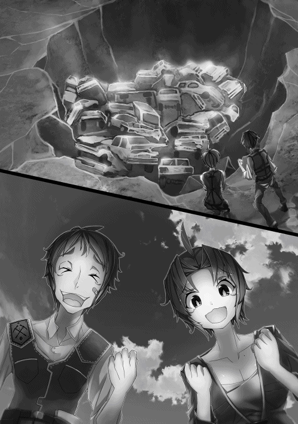
二十一世紀の人間が見ればただのスクラップだが、今の時代にはこのスクラップが宝の山なのだ。このスクラップの中には、今の時代に造ることができないベアリングなどの貴重な機械部品が山のように含まれている。
特にベアリングは様々な道具に使用されるため、その需要は尽きない。
こんなスクラップがお宝に見えるとは、俺もずいぶんこの時代に染まったなと、陽がかげり出した中、少し自嘲ぎみに笑みを浮かべたのだった。
スクラップ状態の自動車の山というお宝を目の当たりにした翌日、俺たち四人は朝早くから発掘現場に赴き、自動車を穴の中から引きずり出していた。
「見える分はこれで全部ね。まだ埋まってるみたいだから穴を広げるわよ──」
最初のガレキを取り除いた場所から出てきた車は十三台だった。その十三台は穴の横に並べられている。
自動車を取り除いてできた穴の奥を〝気〟で確かめると、新たなガレキを挟んで確かにまだ数台の反応が残っていた。
今ここにいる四人は、当然全員がそのことに気づいており、遥の指示に異論が出ることはなかった。
一台あたり二万から三万になるお宝がまだ数台ごく近い場所に埋まっているのだから、それも当然だろう。
昼までにはまだ時間がある。このまま一気に、すべて掘り出して昼過ぎから分解作業に取りかかることになった。
そして予定どおり、昼前にはすべての車を穴から掘り出した。
幸いなことに、車の中に確認できた遺体は一組だけだった。ほかの車に遺体が入っていなかったのは、ここが駐車場か何かだったためだろう。
もしかしたら乗り捨てた車だったかもしれないが、今となってはもう分からない。
俺たちは昼メシを食う前に、確認できた遺体を車から下ろし、森の中に運んで埋葬することにした。
遺体は一組の男女で、その服装からまだ若い夫婦か恋人同士だったのだろうと想像することができた。
どうしてそう思ったのかといえば、二人は手を握り合っていたからだ。女のほうは指輪とか装飾品も身につけていたが、なんだか追い剥ぎのように思えて、遺体とともにそのまま埋葬することにした。
遥曰く、遺体が身につけている装飾品は、低クラスの発掘師ならば取り外してお金に換える者も多いそうだ。
しかし、高クラスの発掘師はそういった行為を嫌う者が多く、ほとんどは遺体とともに埋葬するそうである。
そして高クラスの発掘師は、低クラス発掘師のそういった行為を咎めたりすることはないらしい。
その理由は、彼らにも生活が懸かっており、養う妻子のことを考えれば目をつぶらざるを得ないということだった。
ただし、と言って埋葬を終えた遥は続きを話し出した。
「遺体が身につけている宝玉だけは、法律上取り外して協会に報告する義務があるのよね。悲しいことだけど」
やるせなく、もの悲しそうに話す遥に、俺も鈴音ちゃんも阿古川哲也も何も言うことができなかった。
「さ、お弁当食べよう」
昼メシを食った俺たちは、いよいよ車の分解に取り掛かった。掘り出した車は二十一台。軽が五台に普通車が十四台、ワゴンが二台だ。
遥曰く、分解は一人あたり一日二台が関の山で、今日は四台程度しか処理できないだろうということだった。
ということは、残りの十七台は、明日と明後日の作業になる。
「じゃあできるだけ急いで分解にかかろう。力仕事は俺に任せてくれ」
少しでも効率よく分解作業を進めるため、俺が力仕事、つまりボディの引きはがしを担当することにした。遥たちにも異論はないようだ。
手前にある車から順次五台、俺はタガネとツルハシを使い分けてボディを引っぺがしていく。なぜ五台かというと、早めに作業が終わった者が、手空きにならないようにするためだ。
ボディを引きはがされた車に遥たちが取りつき、さっそく使える部品とそうでないものを選り分けていった。
五台のボディを引きはがし終えた俺も、部品選別作業に取り掛かった。
分別をしている部品は、ベアリングやギア類、シャフト関係、僅かなアルミや銅線、そして残っていたエンジンオイルなどのオイル類であり、残った部品の中から、あまり錆びていない鉄くずをより分けていくのだが、一度研修で経験したこともあって、ほとんど迷わずに作業を進めていった。
今言ったように、自動車にはベアリング以外にも活用できる部品が非常に多い。だから発掘師たちは自動車を発掘すると目の色が変わるのだ。
夕方になるころには遥の予測どおり、五台目の途中まで分別作業が進み、俺たちは分別を終えた部品を荷馬車に積み込んだ。
ボディがほとんど錆びていなかったこともあり、強引に折りたたんで積み込んだので荷馬車が一杯だ。
「さあ、卸しに行くわよ」
荷馬車の御者台に遥と鈴音ちゃんが座り、俺と阿古川哲也は歩きだ。疲れているのは全員同じだったが、女子を歩かせて野郎が楽をするなんてことは俺にはできない。
まぁ半分というかほとんど恰好つけたいだけでもあったりするが、阿古川哲也も同じ考えだったようだ。遥はじゃけんで決めようと提案してきたが、俺と阿古川哲也がかたくなに断った。
そんなこんなで宿屋街に戻ったときには、すっかり陽が沈んでいたが、俺たちは遥の案内で卸し場まで荷馬車を進めたのである。
卸し場とは発掘された部品を買い取ってくれる場所で、宿屋街の入り口から少し南に入り込んだところにあった。
さすがにこの時間の卸し場は活気があって、何十台もの荷馬車が広場のようなところに並んでいたが、俺たちのように荷台一杯の部品を積んでいる荷馬車はなかった。発掘師稼業はそんなに甘くないと言われるゆえんだ。
荷馬車が並ぶ広場の奥には、表に壁のない倉庫のような大きな建物があって、部品が積まれた木製のパレットが並べてある。パレットには番号が書いてあって、その番号で卸し主の管理をしていると遥が教えてくれた。
しばらく荷台の近くで待っていれば、卸し専門の業者が来て部品をパレットに積みなおすそうだ。
「おっ、遥嬢じゃねえか、久しぶりだなぁ」
「あ、鉄さんお久しぶりです」
「ほう、大漁だな。さすがは遥嬢だ。で、こいつらが今の仲間か？」
「紹介するわ──」
遥に声をかけてきたのは山崎鉄朗というベテランの卸し業者で、少し白髪の混じった初老の偉丈夫だった。
俺たちを紹介し終えた遥は、パレットに部品を積みかえながら、親しそうに山崎さんと話し込んでいる。
俺と阿古川哲也、それに鈴音ちゃんも、別のパレットに部品を積みかえた。そして積みかえ作業が終わると、遥が木でできた札のようなものを山崎さんから受け取っていた。札には三桁の数字が書かれている。
「それは？」
気になったので聞いてみると。
「引き換え札よ。明日の朝行われる競りで売れたお金とこの札を交換するの。もちろん税金と手数料は引かれるけどね」
遥曰く、研修のときに稼いだお金は税金と手数料が引かれていたらしい。
車一台あたり二から三万円というのは、税と手数料が引かれた後の金額であって、卸し場では公平に取引が行われている。だから発掘師は、そのことについてあまり気にしなくてもいいとのことだった。
こうして、一人前の発掘師としてはじめて発掘品を卸した俺たちは、翌日、翌々日と部品をバラしては荷馬車に積み込み、一杯になったら卸し場へと出向いて部品を卸すという作業を二日間で都合五回繰り返すことになった。
作業効率を上げるため、途中で卸しに行く場合は代表一人で荷馬車を操縦し、部品を卸して戻ってくるということを繰り返した。
一日目は積み込みすぎて崩れ落ちそうになったりしたこともあり、二日目からは一日三回に卸し場行きを増やした。
そして、三日目に最後の一台となったワゴン車をバラしていたときのこと。
「遥先輩、こんな物が出てきたんですけど」
と言って鈴音ちゃんが潰れたシートの裏側から取り出したのは、小さめのアタッシュケースだった。
今までも、車の部品以外に、ダッシュボードとかカバンなどから、数は少ないが、脱出用のハンマーだとか、ガスがまだ入った百円ライターだとか、メガネだとかの比較的安いお宝を見つけていたが、アタッシュケースが出てきたのははじめてである。
ちなみに、二十一世紀の小銭はただの金属クズ扱いで、紙幣に至っては紙クズだ。
アタッシュケースの中身はたぶんハズレだろうけど、少しだけ期待して遥が開けるのを見ていると。
「やったわ鈴音ちゃん！ 凄い、凄いお宝よ。動けばだけどね。でも、わたしの勘が告げてるの。コレは動くはずよ」
珍しく遥が興奮していた。中を覗き込むと、そこには腕時計が小さな仕切りに分けられて全部で十八個収められていた。
しかもセイコーとかオメガ、ロレックスとかの高級品だ。
今の時代、かつての高級腕時計にどれだけの値がつくのか俺には分からないが、遥の目の輝きようからすれば、かなりの高額になりそうだと俺は思った。
遥が時計を一つ取り出してリューズを回す。すると、チッチッという音とともに秒針が回りはじめた。
どれどれと俺も気になった一個を取り出してリューズを回してみる。すると、遥のときと同じように秒針が回り出した。
鈴音ちゃんと阿古川哲也もそれに倣い、見事に時計は動き出したのだった。全員で十八個の腕時計を確認したところ、驚くことに全部が時を刻みはじめた。
「鈴音ちゃん、いい。落ち着いて聞くのよ」
「は、はい遥先輩」
鈴音ちゃんが瞳をキラキラと輝かせ遥を見上げる。
「コレ一個、動けば十万円以上の値が付くから」
確か、研修のときに新幹線を掘り出して稼いだ金額が一人あたり二十一万五千円だったはずだ。遥の言うことが本当なら、全部で少なくとも百八十万円、つまり一人あたり最低でも四十五万円の取り分になる。
このアタッシュケース一個で新幹線を上回るとはと、最初は俺も驚いた。新幹線は二十人で頭割りだったから、総額では新幹線のほうが高価だが。
それは置いておくとしても、明らかに高級そうなこの機械式の腕時計は、二十一世紀でも一個百万円級の代物が珍しくはなかった。
もちろん俺のような貧乏学生が手に入れることなどできなかったが、かつて叔父さんが自慢げに見せてくれたオメガの自動巻き腕時計も、百万円を超える高級品だったと記憶している。
後から遥に聞いた話だが、この時代に腕時計を作る技術はないらしい。そして時計が有用なものであることは誰にだって分かることだろう。
さらに腕時計には超精密部品が多用されていることもあり、生きている状態で発掘されることは極めて稀で、そのことが今でも使用できる腕時計の希少価値を押し上げているということだった。が、俺はあることを疑問に思った。
「どうして壊れた腕時計に価値が無いんだ？」
「動かない時計なんて価値は無いでしょ？」
遥はそう言って不思議そうな顔を俺に向けたのだった。
なぜ動かない時計に価値は無いのか？ 修理したり電池を入れ替えれば動き出すんじゃないのか？
なんてことが頭によぎったが、よくよく考えてみれば、この時代に電池を造るような技術があるわけがないし、ほとんどの時計は電池で動いていたことを思い出し、どうにか疑問を自己解決することができた。
「しかもコレは機械式の超高級品よ。太陽電池式の時計とはモノが違うわ」
大変ご尤 もなことである。
遺物として発掘された腕時計は、かなりの高額で取引されることがよく分かった。
その価格帯はというと、遥曰く下は一万円から上は二十万円ほどだそうだ。
遥は過去にいくつかの腕時計を仲間とともに発掘した経験があるらしく、その価値が大まかにではあるが分かるらしい。
今回発掘した腕時計は、遥の見た目ではかなりの高級品らしく、一個最低十万円というのはハッタリでもなんでもないということだった。
ちなみに、遺体の腕にも腕時計が装着されていることがあるが、そのほとんどは故障して動かないらしい。
今回みたく、ケースの中に入っているとかして、湿気から隔離された状態で見つからない限り、生きている腕時計の発見は稀なことなのだそうだ。
これも腕時計の価値を押し上げている理由の一つだと遥は言っていた。
「で、遥。これ全部売るのか？」
「欲しいの？」
「ああ、一個だけだけど腕時計あると便利だから」
「それも一理あるわね。これだけあるんだからみんなで一個ずつ自分のものにしようか。もちろんお金にしたい人に無理強いはしないよ」
「わたしも一個ほしいです」
「これだけあるなら俺も一つくらいいいかな。でも、俺なんかが持ってていいのかな」
「哲也君は貧乏性だね。持つのが怖いなら特別な日だけ身につければいいじゃない」
「それもそうか」
結局、それぞれがお気に入りの腕時計を一個貰うことにして、残りの十四個は売り払うことになった。
ただし、宝玉や宝石、機械式腕時計などの高級品は、協会本部で換金したほうがいいとのことだった。
俺はオメガのＳＥＡＭＡＳＴＥＲと書いてある渋めの自動巻き腕時計をチョイスし、遥たちもそれぞれ気に入った腕時計を選んでいた。
ただし、宿屋街で四人全員が腕時計をしているのは悪目立ちするだろうということで、各自が選んだ腕時計はすべてポケットにしまってある。
特級発掘師の遥なら、腕時計をしていても名と顔が知れ渡っているので問題ないが、俺たちみたいな新人が腕時計を身につけていると、ガラの悪い連中にちょっかいを出される可能性が高いのだという。
ちょっかいを出されて争いになっても負けることはないだろうが、余計なトラブルは避けたほうがいいだろう。
こうして高級腕時計という超お宝を発見した俺たちは、意気揚々と最後のワゴンを分解し、荷馬車にその部品を積み上げたのだった。
初日の調査からはじまって今日までの都合四日間、フル稼働で休まず働いた俺たち四人は、その疲れを癒すべく宿屋街へと急ぎ、卸し場に部品を預けた後、宿屋に帰って祝杯をあげたのだった。
翌日。この日は昼ごろまでゆっくりと休みを取り、四人で卸し場に向かった。
もちろん四日間の稼ぎを受け取るためにだ。
卸し場の脇にある二階建ての大きな事務所に入った俺たちは、奥のカウンターに向かい、遥が声を上げた。
「こんにちはー、換金お願いしまーす」
そのときカウンターには誰もいなかったが、奥から中年の威勢の良さそうなおばちゃんが現れた。
「あら珍しい。久しぶりね遥ちゃん。良い人見つかったかい？」
「もう、ミチコさんはいつもその話しかしないんだから。これお願いできるかしら」
「あいよ。ちょっと待っててね」
遥から七枚の札を受け取ったミチコと呼ばれた中年のおばちゃんは、再び奥へと戻ると、紙の束を持って現れた。
「やっぱり遥ちゃんは優秀だねぇ。かなり多いけどここで換金してくかい？」
「仲間と相談するんで見せてもらえますか」
「あいよ」
遥に渡された紙は七枚あって、それぞれに日付と番号、記名欄とともに金額が書き込まれていた。
「これが今回の稼ぎよ。ここで換金する？ それとも協会に戻って換金する？ わたしはどっちでもいいけど」
ポケットからメモ帳とペンを取り出し、紙に書かれた金額を書き込んでいく。そしてすべての数字を合計すると、五十五万二千八百円だった。一人あたり十三万八千二百円だ。もちろん腕時計の金額は含まれていない。
「持ち歩くにはちょっと多すぎるな」
「そうね」
「あの、遥先輩」
「なに？ 鈴音ちゃん」
「えっと、私は少し持ち合わせが心もとないんです。一番少ない一枚だけここで換金しませんか？」
「あ、そういえば俺もほとんどお金残ってないや。ここじゃあんまり使うことなさそうだけど、鈴音ちゃんの意見に俺も賛成します。遥先輩」
「空はどうしたいの？」
「俺も鈴音ちゃんの意見に賛成だ」
「じゃあ決まりね」
ということになり、一番金額の少なかった換金用紙をここで換金することになった。金額は五万四千四百円で、一人あたり一万三千六百円だ。
「ミチコさん、コレ一枚だけここで換金させてください。残りは協会で換金します」
「あいよ。じゃあココとココにサインしといて」
遥は七枚の換金用紙と、もう一枚の用紙にサインをしてミチコさんに渡すと、ミチコさんは換金用紙六枚にハンコをポンポンと押してその六枚を返してきた。再び奥へ行くと、お金が入った袋を持ってカウンターに戻ってきた。
「はいよ」
「ありがとうございます」
稼ぎの一部を換金した俺たちは、その場で四等分し、各自が一万三千六百円を懐にしまったのである。
「これからどうしよっか？」
換金を終えた俺たちに遥が問いかけてきた。
「うーん、俺はこの後この街をプラプラしようかな」
俺がそう答えると、鈴音ちゃんと阿古川哲也が後に続いた。
「私は宿で装備の手入れをします」
「俺はまだ疲れが取れてないから宿に戻ろうかと」
「じゃあわたしは空と一緒に街を散策するわ。明日以降の打ち合わせは夕食後にしましょう。いい？」
「ＯＫ、遥」
ということで、今日は一日発掘は無しの自由時間ということになった。
俺と遥は先の発言どおり、宿屋街を散策して回ったが、興味をひかれるようなことに遭遇することはなかった。
結局午後は街中を文字どおりプラプラ歩いて宿屋へと戻り、すやすやとベッドで寝ている阿古川哲也を横目に、自分のベッドへと倒れ込んだのだった。
翌朝、朝メシ食おうと一階の食堂に降りていこうとしたとき、宿の外から何人かの大きな叫び声が聞こえてきた。
叫び声の中に「妖魔」という言葉が聞き取れたが、その声の切羽詰まったような感じから、ただ事ではない事件が起こっていることが容易に想像できた。
恐らく、街中に強力な妖魔が迷い込んだのだろう。
この宿に泊まっている他の発掘師たちも俺と同じ考えのようだ。バタンバタンとドアが開き、一斉に発掘師たちがツルハシを手に飛び出してきた。
そこには当然のように遥や鈴音ちゃん、阿古川哲也も含まれている。
「空、行くわよ。鈴音ちゃん、哲也君、無理しないようにね」
遥はすでに覚悟を決めたような厳しい顔つきになっており、その後についてきた鈴音ちゃんは少し不安そうだったが、遥の助言にはしっかりとうなずいていた。
阿古川哲也も緊張している様子がありありとうかがえたが、鈴音ちゃんと同じくしっかりとうなずいている。
「分かった遥、とにかく急ごう。遥も危なくなったら引いてくれよ」
「ええ、そのときはお願いね空」
俺はしっかりと遥の目を見据えてうなずいた。俺は急いで部屋へと戻ってツルハシを手に取り、宿の外に走り出た。すると、何人かの発掘師たちがツルハシや斧を手に西門へと走っていくのが見えた。
俺たちもその発掘師たちに続くように西門へと急ぐ。その途中にも、何人もの発掘師たちが加わってきた。
そして西門が見えてきたとき、俺の目に映った光景は......。
「連携を崩すなぁ！ 相手はカテ三と二だ。油断すると一気に持ってかれるぞ！」
そこは凄惨な状況に成り果てていた。
ざっと目に入るだけでも生死不明の発掘師と街の守備兵が十数名、宿屋街の西門広場に転がっている。
戦いながらも声を張り上げ、必死に指揮を執っている大柄な発掘師の表情にもまったく余裕がない。
戦況は怒号と悲鳴や絶叫が飛び交う乱戦模様を呈しており、街に入り込んだ犬型の妖魔十数体と、戦っている発掘師や守備兵たちが五十名ほどだった。
西門は閉じられてカンヌキが掛けられており、守備兵六人がかりで開かないように必死に〝気〟を流し込み抑え込んでいる。
「!? 」
門の向こうからはとてつもない〝妖気〟がにじみ出していた。
門の向うだけではない。
街に入り込んだ妖魔に目を向けてみれば、体長二メートルほどの犬型が十数体。指揮を執っている大柄の男が相対している、これもまた犬型だが、その体長はゆうに三メートルを超える妖魔が一体。
「これは......厳しいな」
「ええ」
遥の表情は厳しい。
街に入り込んだどの妖魔も俺が知っている犬とは雰囲気というか、体色、そして体つきが全く違っていた。
顔つきだけを見れば柴や秋田に似た雑種かとも思えるが、体毛はよどんだ黒や濃い紫色をしている。
何より特徴的なのは五センチはあろうかという鋭い牙と、全身から溢 れ出る薄紫色の〝妖気〟だった。
厳しい表情で戦況を見ていた遥の視線が門に固定された。
「おかしいわね。なんでこんなところにカテゴリー三の大山犬が。いや、それより門の向こう......」
ようやく遥も、門の向こうにいるだろう不気味な存在に気がついたようだ。
「こうしていてもらちが明かないわ。私たちも参戦するわよ。あの大山犬は私がなんとかするから、鈴音ちゃんと哲也君は他の山犬と戦ってる人たちに加勢して。空は門の向こうにいる奴をお願いできるかな」
そう申し訳なさそうに言って、遥は三メートル超の大山犬、すなわちカテゴリー三の妖魔に向かっていった。
遥の参戦に気づいた何人かの発掘師たちから歓声が上がったところを見れば、彼、彼女らの士気はまだ落ちていないようだ。
しかし、全体的に見れば明らかに劣勢なのは発掘師側だった。
カテゴリー二だろう山犬一匹に対し、四、五人の発掘師で相対しているが、それでようやく均衡 が保たれているのだから。
まだまだ発掘師の参戦は続いているが、同じペースで怪我人も出ている様子を見ると、決して楽観できる状況ではない。
そんなことよりも、俺が今対応すべき相手は今にも破られそうな門の向こうにいるはずの妖魔だろう。
遥がカテゴリー三だと言ったあの大山犬よりも、はるかにヤバい〝妖気〟が伝わってくる。だとすればおそらくカテゴリー四の妖魔だろうか。
カテゴリー四の妖魔といえば、常人の倍以上の〝気〟力を持つ通常の兵士百名でなんとか渡り合える強敵だと聞いている。
しかし、今の俺には普通の兵士の百倍を超える〝気〟力があることは確かだ。遥もそれを知っているから俺に奴の相手を頼んだのだろう。
「さて、どうするかな......」
ここはひとつ、遥とか鈴音ちゃんとか今も戦っている何人かの他の女の発掘師たちにカッコいいところでも見せてやろうか、なんて無粋なことも一瞬頭によぎった。
しかし、今にもぶち破られそうな西門と、そこからあふれ出てくるただならぬ〝妖気〟に、俺は考えを改めることにした。煩悩に従って油断してかかれば、大怪我どころでは済まなそうな気がしてならない。
なんてことを考えていたら、バキャッという破裂音とともに、高さ三メートル幅四メートルはあろうかという西門が、抑えている兵士もろとも吹き飛んだ。
開いたのではなく破壊されて吹き飛んだのだ。門の破片とともに宙に舞った兵士たちは、戦場のただ中にまき散らされる。
「これはヒドイな」
西門の破壊音に気づいたのだろう、吹き飛ばされてきた門や兵士の直撃を喰らった者はいないようだったが、一人の若い女発掘師が、飛んできた破片を避けた際に尻もちをついて大きな隙を作ってしまった。
その隙を見逃すまいと山犬が襲い掛かる。
「キャッ！」
俺は考えるまでもなく動いていた。吹き飛ばされた門の向こうから、巨大な妖魔が姿を見せたが、そんなことに構ってはいられなかった。西門へと向かおうと考えていたときから全身に張り巡らせ、練り上げていた〝気〟を爆発させる。
「マズイ、間に合えッ！」
背負っていたツルハシに手を伸ばすのももどかしく弾丸のように飛び出した俺は、低い体勢で地を蹴り、渾身のアッパーを今にも噛みつかんと女発掘師に飛びかかった山犬の下あごへと叩き込んだ。
山猿と戦ったときのように拳を強固にする時間は取れなかったが、それでもある程度は〝気〟で強化されている俺の拳と腕力だ。
山犬は二十メートルを超えて上空へと打ち上げられた。頭部を破壊するには至らなかったが、かなりのダメージが入ったことは間違いないだろう。
後は他の発掘師たちに任せて大丈夫だろうか。そう考えて俺は女発掘師の手を取って立ち上がらせた。
「あまり気を抜かないほうがいい」
山犬がドサリと落ちる音とともにそう忠告した俺に、女発掘師はポカンと口を開けて固まっていたが、今は彼女の相手をしている暇などない。
門とともに吹き飛ばされた兵士たちの安否も気になったが、今はその元凶へと意識を集中すべきだと俺は己に言い聞かせた。そして西門があった場所へと視線を戻した俺が見たものは......。
「でけぇな」
熊そのものの妖魔だった。
ただし、当然俺の知っている熊などではない。三メートルを超える巨熊が三体。おそらくはツキノワグマが元になっているのだろうが、大山犬とは明らかに濃度を異にする濃密な〝妖気〟を垂れ流している。
「これはヤバいかもしれない」
口元からは十センチはあろうかという巨大な黒い牙が二本、その屈強な両腕の先には、長さ五センチはあろうかというこれまた漆黒の鋭い爪が飛び出ていた。
しかも、巨熊三体の真っ赤な視線は、あからさまに俺へと固定されている。恐らくは、いや、確実に俺が練り上げた他人とは隔絶した〝気〟に反応している。
「けど、保険かけといてよかった」
ここまで走ってくる最中、確かに俺は体中の〝気〟を練り上げていたが、それは何も戦闘に対する身体強化のためだけではなかった。
出現した妖魔が、もし遥でも対応できないような相手だった場合に備え、俺へと敵意を集中させるための布石だった。いわゆるヘイト管理という奴だが、どうやら思惑どおりにいったようだ。
「しかし、どうする......」
おそらくはカテゴリー四の妖魔が三体。このまま奴らに街中へと乱入されたら厄介どころの騒ぎではない。
うまいことヘイト管理ができて俺だけに敵意を集中させ続けられればいいが、もし一体でも自由に暴れさせてしまったら、〝気〟力千五百近い遥であっても何もすることはできないだろう。
「遥クラスが四、五人いれば......いや、無いものをねだってもどうにもならないか」
そう考えた俺は、一体も俺から敵意を逸らさすまいと、練り上げた〝気〟の一部を巨熊三体へと絡めさせた。
「さて、どう戦うか」
いくら俺の〝気〟力が逸脱した高さにあるといっても、あの三体の敵意を引きつつ暴れ回るには、この広場は狭すぎるし、障害物も多すぎる。
このまま戦うとなれば、皆を巻き込む可能性さえあった。そうなると俺の取れる道は一つしかない。
「はあぁぁぁぁっ！」
再度〝気〟を爆発させた俺は、ツルハシを背にしたまま、まさに弾丸となって巨熊へと飛び込んでいった。
姿勢を低く、身を縮めて右肩を前に突き出す。その恰好で先頭の巨熊へと、いわゆるショルダータックルを喰らわせた。
巨熊は凶悪な爪を俺に振りかざしてきたが、そんなものはお構いなしだ。右肩と首筋と頭、そこに高密度の、それこそ陽炎 が出るほどの〝気〟をまとわせた今の俺に、巨熊の爪はたやすく弾き飛ばされていた。
「まだまだあぁぁ！」
さらに、巨熊のひんやりと冷たい腹へと突き刺さった俺の右肩の勢いはとどまることを知らなかった。巨熊の体を右肩にかつぎ上げて宙に浮かし、俺は勢いを殺さないようにそのまま前へと突き進んだ。
「クッ」
右肩と頭にズシリと巨熊の重量がのしかかり、俺の〝気〟と巨熊の〝妖気〟がぶつかり合ってバチバチと青白い火花が飛ぶ。
「負けるかぁ！」
そんなことに構うことなく、踏み込んだ足へと〝気〟を流し込み、さらにその足裏で大地をガッシリとつかんで突き進んでいく。
途中、ドスッ、ドスッと肩にかかる重量が増したが、構わず前へと突き進む。俺の踏みしめる足元が橋を踏み抜きそうになったが、それも構わず前進し続けた結果、ついには橋を渡りきり、再び大地の感触が足の裏に伝わってきた。
「うをりゃぁ！」
まだだ。まだ街の入り口から近すぎる。そう考えた俺は、気合い一発雄たけびを上げてさらに前進を続けたのだった。
◇◇◇◇
ついに西門が破られ、その様子を目の当たりにした遥だったが、目の前で唸り声を上げて威嚇 してくる大山犬から意識を放すような愚を犯すことはなかった。
恐ろしく人間離れした規格外の、しかし心休まる慣れ親しんだ空の〝気〟が、門を破壊した元凶へと向けられていることを感じ取っていたことも、遥が大山犬に集中を保つことに一役買っていた。
カテゴリー四の妖魔を空ひとりに任せてしまったことに、遥は気負いと不安を感じないわけではなかったが、状況がそれを許さない。
遥が来るまでこの場の指揮を執っていた男のことは、彼女もよく知っていた。その男は発掘師五十人以上を抱えるクランのリーダーであり、名を中村和徳という。
「助かったぜ遥嬢。と言いたいところだが、そうも言ってはいられんようだ」
中村は、大山犬に視線を固定したまま苦虫を噛み潰したような顔だ。
中村も西門から現れた自分では絶対に敵わない妖魔の強さを、十分に理解していたのだ。いや、伝わってくる〝妖気〟によって理解させられて いた。
「大丈夫ッ！」
飛びかかってきた大山犬の牙を身をかがめて躱し、すれ違いざまに遥はツルハシを振り抜いた。
遥が振るったツルハシは、狙った額に命中することはなかったが、バチバチと青白い火花を散らして大山犬の左耳を裂くことに成功していた。
「クッ、さすがに素早い......。去年の秋に始祖が現れたってこと知ってるよね」
「ああ、噂話しか聞いてないが」
「その始祖が彼よ」
身をひるがえし、裂けた左耳を気にすることもなく唸り声を上げて睨みつけてくる大山犬に視線を固定したまま、遥は顎を振って西門に向かってすっ飛んで行く空のことを中村に伝えたのだった。
中村は大山犬が遥に狙いを定めていることに注意しながらも視界の隅で、門に現れた巨熊三体に向かって矢のように疾走する空を捉えていた。
「しかしあれは妖魔化した大爪熊だぞ。どう考えてもカテゴリー四だ。しかもそれが三体もいやがる」
「貴方も一花様のことは知ってるでしょ」
「ああ、よく知ってるさ。あれからもう二十三年になるか......」
中村は大山犬に視線を固定しながらも思い出していた。
二十三年前、一花たち高科一家とともに戦ったあの御殿場決戦を......。
当時の中村は和国にある別のクランの副リーダーとして発掘師活動を行っていた。御殿場決戦は、そのときの仲間三名を妖魔に殺された復讐心から志願した戦いだった。
序盤は楽なものだった。
あのころはまだ和国の一貴族だった高科陽一率いる和国軍と発掘師たち志願兵の圧倒的兵数に、妖魔たちは瞬く間に数を減らしていった。
しかし、御殿場の中心に近づくにつれ、その戦いは苛烈さを増し、多数の怪我人や中には命を落とす者まで現れるようになった。
それでも、あと少しで御殿場の妖魔を殲滅できるかというところまで戦線が進んだとき、今まではカテゴリー三までしか見かけなかった妖魔の中に、カテゴリー四が混ざりはじめた。
戦線は膠着し、一進一退の攻防を繰り返す。兵士の疲弊は進み、このままではいつ瓦解してもおかしくない。そう中村が感じはじめたとき、カテゴリー四の妖魔がたむろする御殿場中心へと突入する三人の姿を目の当たりにした。
始祖、高科一家である。
和国軍の大将を務めていた高科陽一、現富士大公国大公の強さは圧倒的であり、カテゴリー四の妖魔であろうと一刀のもとに切り伏せた。その妻である希美花も自慢のなぎなたで妖魔を屠り続けていた。
二人の連携は圧倒的であり、瞬く間にカテゴリー四の妖魔は数を減らしていった。それを見ていた兵士たちは再び士気を取り戻し、残ったカテゴリー三の妖魔を撃ち滅ぼしていった。
しかし、最後に残った妖魔が絶望的だった。
それまでは地に伏せていて分からなかったが、カテゴリー四の妖魔が二人によって打ち滅ぼされた数分後、突如として鎌首をもたげる大蛇のようにその身を持ち上げた紫色の巨大ムカデ。
その高さはゆうに十五メートルを超え、胴の太さは二メートル近いバケモノだった。
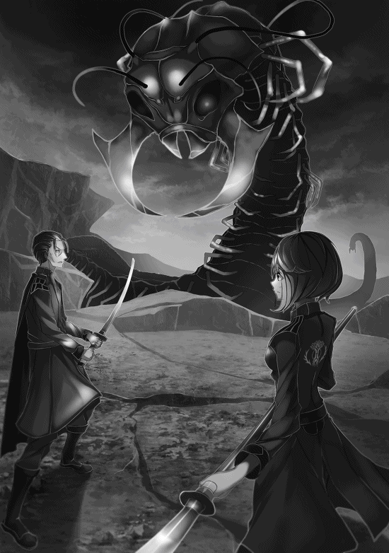
持ち上げた頭部には、反りをもつ大刀のような巨大な二本の牙が飛び出しており、全身から濃い紫色の〝妖気〟を滝のように垂れ流すカテゴリー五の妖魔、鬼ムカデ。
さすがの二人もその鬼ムカデには苦戦していた。
陽一の刀も、希美花のなぎなたも、体表をかすりこそすれ大きな傷を負わすことには成功していない。
二人の刀撃のすさまじさを物語るように、切りつけるたびに青白い火花が散っているが、鬼ムカデに致命傷を与えることはできないでいた。それでも二人が諦めることはなかった。
もう一時間は戦っただろうか、鬼ムカデの傷は増えているが、二人の疲労の色も濃くなっていった。加勢できるものなら加勢したい。そう考えた中村だったが、自分の〝気〟力では、あの〝妖気〟に触れただけで悲惨な最期を遂げるであろうことが容易に想像できた。
それは兵士や志願兵、将官たちにも言えることで、誰も加勢できないでいた。それを見かねたのだろうか、二人の娘である一花が戦いに割って入った。
一花はまだ十六になったばかり、当時九十の中村からしてみれば、まだ幼子 もいいところだった。
──いくら始祖様とはいえ、幼すぎる......。
しかし、一花は中村の認識を吹き飛ばすような力と動きを見せることになった。
陽一も希美花もさすがは始祖と言われるだけの圧倒的強さを誇っていた。けれども、一花のそれは二人をはるかに凌駕していたのである。
一花が手に持っている刀は二本の大小であり、背丈は母希美花にあと少しというところだった。あの細腕ではあの鬼ムカデに傷一つつけることは叶わないだろう。そう考えていた中村の目に映った光景とは......。
信じがたい光景だった。高科夫妻ですら、一時間近く戦ってやっとの思いで傷を負わせていた鬼ムカデを、最初のうちは苦戦していたものの、小刀を捨て、大刀一本の両手持ちに切り替えた数分後には、一方的に切り刻みはじめたのだから。
一花が参戦してものの十分もしないうちに、鬼ムカデは細切れに切り刻まれ、最後には彼女が放ったとてつもない〝気〟によって閃光とともにその頭部を消滅させてしまった。
一花こそ真の始祖であり、最強の人間である。
御殿場決戦に参戦した兵士や志願兵たちの誰もが、この圧倒的な戦いを目の当たりにしてそう思ったことだろうと中村は確信していた。
──そんな一花様とあの若造に何の関係が......。
「彼は空、一花様が認めた始祖よ。だから大丈夫。絶対に......」
もちろん遥は中村に対して語っていたのだが、自分に対しても言い聞かせるように言葉を飲み込んだ。
一方の中村は、遥から告げられた空の素性に、目を見開いて驚愕を示したのだった。
◇◇◇◇
「これくらいでいいか」
巨熊三体を宿屋街の入り口から遠ざけることに成功した俺は、これで誰も巻き込むことにはならないだろうと確信し、一旦距離をとった。
街の周りを囲む幅約十メートルの水を湛えた堀。その堀に二か所かかる街の出入り口として使われている幅約五メートルの頑丈な木製の橋。その橋から俺が今いる位置は三十メートルほど離れている。
対する巨熊三体は、俺の垂れ流す〝気〟に敵意をむき出しにしていた。
「なんとか上手く行った」
巨熊をここまで引き離そうとした際、橋を渡り切ってすぐに俺のショルダータックルを受けた個体の後ろにいた残り二体は俺から離れた。
が、その二体も俺の〝気〟に反応してここまで追ってきた。
要するに俺は今街を背にしているのだが、後ろに二体、前に一体の巨熊に囲まれているわけだ。
ヘイト管理は見事に成功し、俺としてはしてやったりなのだが、知らない奴が見ればまんまと敵に囲まれた哀れな男に見えるかもしれない。
「ココからが本番だ」
そんなどうでもいいことは置いておくとして、俺は背にしょっていたツルハシを手に取って構えなおした。
カテゴリー四の妖魔がどれほど強いか、話には聞いているが俺には実感がない。今までの動きを見た限りでは、遥が戦っているはずの大きな山犬ほどの素早さはなさそうだ。いや、はっきり言って鈍い。
「動きだけは大したことないな。いやいや、油断大敵だ」
〝気〟を使いこなせなかったころの昔の俺からしてみれば、おそらく反応できるかできないか程度の動きだった。ならば、ここはひとつ引っかき回してやろうか。
でも、決して油断はしない。
そう考えて俺は目の前にいる一体よりも、後ろにいる二体を目標に定めた。
そう決めた特別な理由はないが、まずは俺の速度にどこまでついてこれるかだ。
「まずは小手調べだ」
とっさに身をかがめた俺は、三割くらいの力でそのまま横に五メートルほど跳躍して振り返った。
巨熊三体はしっかりと俺の動きを目で追っている。体の動きが鈍くてもこの程度はできるわけか。
「ならば」
そのままの体勢から五割の力で斜めに走って、今度は二体の後ろに回り込む。回り込むといっても直線的な動きだ。これなら眼だけで追うことはできまい。
その考えを証明するように、二体は俺の姿を見失ってキョロキョロしている。二体を挟んで向こう側にいる一体には俺の姿が見えているようだが、合図を飛ばして連携を取るみたいな知能は持ち合わせていないらしい。
「所詮は獣ということか」
しかも、俺の動きを目で追うだけで向かってくるそぶりは見せない。いや、見せないというのは表現がよくないだろう。襲い掛かろうとしても俺の動きが素早すぎてついてこれないようだ。
「これ以上様子を見る必要はないか」
とも考えたが、敵の能力を見誤って怪我をしたとあってはただの阿呆だ。
ということで、まずはジャブを入れてみることにした。ジャブと言ってもさすがに素手で殴りつけるつもりはない。
二体の後ろに回り込んだ反動を活かし、今度は巨熊の後ろから右側にすり抜けるように駆け抜ける。そのすれ違いざま、ツルハシを一振り。反撃されると怖いのでツルハシを振るう力は二割ほどだ。
「ハッ」
ガキィッ！ という音がしてツルハシは巨熊の後頭部に見事命中した。しかし、小さな青白い火花を散らしただけで巨熊には傷一つついていないようだった。しかも、痛がっている素振りすら見せやがらない。
「やっぱり硬ぇな」
ツルハシの尖ったほうの先端で殴りつけたのに、傷一つ負わずに痛がる素振 りも見せないとはさすがカテゴリー四といったところか。
噂 に聞いた話では、一花ちゃんはカテゴリー四の妖魔を一刀両断に瞬殺できるという。今の俺とでは雲泥の戦闘能力差だ。
「でも、俺は俺だ。一花ちゃんじゃない......待てよ」
なんてことを考えてみたが、よくよく思い出してみれば、一花ちゃんの〝気〟の保有量は俺より少し多い程度だった。
ならばなぜ、俺にはできなくて一花ちゃんにはできるのだろうか。何か理由がなければ説明がつかない。コツでもあるのだろうか？
しかし、この場でのうのうと考え込んでいるような余裕はない。
「戦いながら試行錯誤するしかないか......ならば」
そう思った俺は、巨熊三体の間を縦横無尽に駆け、跳躍し、徐々にツルハシを振るう力を上げていった。
攻撃していればそのうち分かるかもしれない。
もうどの個体が目標というわけではなく、目についた敵をツルハシの尖ったほうで殴りつけていく。
三割の力で殴ったときは巨熊に変化がなかった。うっとうしいハエでも追い払うかのごとく、俺が通り過ぎた後を自慢の爪で薙ぎ払うだけだ。
「アレを喰らったら......」
守りを固めていれば別だが、その爪を無防備に喰らったら、ただでは済まないと思わせるだけの威力を俺は感じ取っていた。
「硬いしバカ力だけど、やれることはやっておかないとな」
そう思って四割の力で殴ったときも、五割の力で殴ったときもほとんど同じだった。
少し違ったのは、ツルハシを握る俺の手が少し痺れただけだ。
「コイツらどんだけ硬いんだ？」
というのがそのときの俺の率直な感想である。
それならばと、巨熊三体を引っかき回しながらも振るうツルハシに力を上乗せる。今度は六割だ。
「フンッ！」
音がガキィ、からガシィッと湿ったような音に変わった。
「おっ!? 」
明らかに手ごたえが違っていた。
理由は簡単だ。巨熊に傷をつけたからである。
跳ね返されていた運動エネルギーが、仕事をして熱と音に変わって消費されたのだ。おかげで手に痺れが出ない。
それを裏付けるように、巨熊は殴られた後頭部を押さえて吠えた。六割の力で傷つけることができるということは、全力で殴ればなんとかなるかもしれない。
「全力で行けばなんとかなるか......いや」
一瞬、全力で殴ってしまおうかと考えたが、そんなことをすれば確実に俺の動きが止まってしまうだろう。
相手が一体ならそれでもいいかもしれないが、現実には三体を相手にしているのだ。そんな危険なまねはできない。
ならばどうすべきか？
「とりあえず七割の力で試してみるか」
あまり深く考え込んでいる余裕はない。そう考えて再び俺は巨熊三体を引っかき回した。そして適当な一体に狙いを定める。
「ドォリャァッ！」
今度はガシュッ、という音に変わった。さっきよりもツルハシを介して手に伝わってくる感触が柔らかい。
「っしゃぁ！」
さっきよりは確実にダメージが入っている。
ツルハシで殴られた巨熊は、後頭部を前足で押さえながら頭を二度三度と振った。これなら八割程度の力で殴り続ければなんとか倒せそうだ。
いや、九割までいけるか？
「ダメだ」
九割の力を出すと殴った後の俺の動きに遅延が出るかもしれない。
さらに、殴りつける力を八割に抑えなければならないもう一つの理由に思い至った。
それは、ツルハシの柄が限界に近づいていたことだ。
全力で殴れば確実に折れる。俺が全力で〝気〟を流し込むと、木製の柄が耐えられそうもなかったからだ。
こうなることがはじめから分かっていたのなら、もっと高級なツルハシを買っておけばよかった。
「そんなこと考えても後の祭りだな」
しかしである。
なんとか巨熊を倒せるめどが立ったことは大きい。
「我慢比べと行こうじゃないか」
時間はかかるだろうが、三体の巨熊を引っかき回しつつ八割の力で殴り続ける。
これしか今の俺と愛用のマイツルハシに取れる選択肢はなさそうだ。
そうと決まれば後は実行に移すだけ。俺は気合いを入れなおして巨熊三体の中に飛び込んでいった。
◇◇◇◇
中村とともに戦っていた遥は、二人で連携を取り合って着実に大山犬にダメージを蓄積させていた。
〝気〟力が高い遥が攻撃の要で、中村は遊撃というよりは陽動に徹して大山犬の注意を引きつけつつ戦っている。
中村は一応特級発掘師であるが、彼の〝気〟力は五百強であり、特級発掘師としては低い部類に入る。
実質、彼の〝気〟力が遥の三分の一強でしかないのが真実である。
自分の実力を十分に理解している中村は、無謀な攻撃をすることなく、遥の実力を知っていたこともあって、彼女に攻撃を任せていた。
「はぁ、はぁ、遥嬢、もう少しだ」
「ええ、分かってる。でも油断しないで」
「遥嬢もなっ！」
遥に飛びかかろうとした大山犬の後頭部を、中村が後方から駆け抜けてツルハシで殴り飛ばした。中村はその場で反転離脱し、大山犬の注意を自分に引きつける。
中村を睨みつけて唸り声を上げる大山犬は、体中を切り刻まれていたるところから血を流しているが、その血の色は赤ではなく、黒と言っても言い過ぎではないほどに濃い紫色だった。
本来血液とは、酸素を体細胞に運ぶため、赤血球に含まれる酸化鉄の赤色をしているものだが、妖魔の場合は運ぶ対象が〝妖気〟であるため、このような色になっているとこの時代の学者の間では結論付けられている。
与太話はこれくらいにして、今度は遥が攻撃する番だ。
遥の予測というか経験では、あと一、二回攻撃を叩き込めば大山犬は動けなくなる。そうなればシメたもので、一気にたたみかけてとどめを刺すだけだ。
遥は、できるだけ慎重に狙いを定めて大山犬の後頭部、さきほど中村が殴りつけた場所へとツルハシを振り下ろした。
「ハッ！」
ギャイィィィン！ と今までにないかん高く大きな悲鳴を上げた大山犬は、遥のほうに振り返ったが、もうその動きに精彩はなかった。
予測どおり大詰めが近い。
そう感じ取った遥は、離脱することなく一気に攻勢をかけた。
大山犬の頭部めがけてスピードに乗ったツルハシを振るう。
一撃、二撃、そして三撃目が後頭部に深く突き刺さった。ついに大山犬の頭骸骨をツルハシの先が貫通したのだ。
すかさず、遥はツルハシにありったけの〝気〟を流し込んだ。
「はあぁぁぁ！」
バチバチという破裂音が、青白い光とともに大山犬の後頭部、すなわちツルハシの先から聞こえてきた。
やがてその光と音が収まり、後頭部がはじけ飛んだ大山犬がぐったりと倒れ込んだ。痙攣 すら起こさない完全な死だった。
「ふぅ、なんとか終わったわね」
「ああ、完全に死んでいる」
大山犬の死を確認した遥は、油断することなく周りの様子を見渡して戦況を確認している。それは中村も同じだった。
「もうほとんどケリはついたみたいだな」
「そうね、あっちを除けばだけど」
そう言った遥の表情が晴れることは無かった。
確かに中村が言うとおり、カテゴリー二の妖魔、山犬の群れは残すところあと二体にまでその数を減らしており、あと数分もすれば決着がつきそうだった。
しかしまだ、最大の脅威が健在なのだ。その脅威を空に任せるしかなかった遥は、彼とともに戦えない無力さに歯噛みしたい気分だった。
が、街中に限って言えば、最悪の事態はなんとかしのぎ切れそうだった。
ここまで事態が好転したのは、遥の加入が大きかったこともあるが、鈴音や哲也の活躍も大きかった。
◇◇◇◇
鈴音と哲也は他の発掘師たちとともに、カテゴリー二に分類される妖魔、山犬の群れに相対していた。
あれだけの数がいた山犬も残すことあと二体。
もう少しで決着がつきそうだ。
「二人とも若いのに大活躍だな」
肩で息をしている鈴音と哲也に、中年のベテラン発掘師が声をかけた。鈴音と哲也は息も切れ切れな状態だったが、残った山犬から視線を逸らしてはいない。
盾役に徹し、二匹の山犬をツルハシや手斧でけん制している五人の発掘師たちの後方から、二人は山犬たちの隙を窺っていた。
「大活躍だなんて大げさですよ。けん制してくれる先輩たちがいなけりゃ、俺たちもどうなってたか分からないし」
「謙遜すんなって。右も左も分からねぇくらい若いんだから、お前は誇って自慢するくらいでいいんだよ。嬢ちゃんだってそうだぞ」
「そんな余裕ないです。今だって怖くて怖くて逃げ出したいけど、遥先輩や空さんだってあんなに頑張ってるんですから。私だけ逃げるわけにはいかないんです」
そう言って、鈴音は一瞬だけ視線を門の外で死闘を繰り広げている空に向けた。
ベテラン発掘師も、その視線を追って巨大な熊三頭を翻弄している空を一瞬だけ見やり、軽く目を見開いた。
「確かにありゃぁバケモンだ。俺たちとは次元が違いすぎる。嬢ちゃんはあの若いのと知り合いなのか？」
「はい。空さんは私たちの仲間です」
息を切らしながらも、誇らしそうにそう言った鈴音に哲也も同調する。
「ああ、空は一花様も認める始祖だ。そして俺たちの仲間だ。仲間があんなに頑張っているのに、俺達が逃げ出したら合わす顔がないよな」
山犬二匹から視線を外すことなくそう言った哲也が走り出した。
それに呼応するかのように鈴音が続く。
盾役のひとりがけん制のために突き出したツルハシに、一匹の山犬が噛みつき、力まかせに後ずさりしているその頭頂に、横から走り寄った哲也が渾身の一撃を青白い火花を伴って喰らわせた。
大山犬は、たまらず咥えていたツルハシを離し、たたらを打つようによろめいて、かん高く大きな悲鳴を上げる。
それでも、哲也が振り下ろしたツルハシの鋭利なその先端が、山犬に致命傷を与えることは無かった。
「後は任せた」
そう言って飛び退 った哲也に鈴音が応える。
「はい！」
哲也の後に続いていた鈴音は、離脱した彼によってもたらされた山犬の大きな隙を無駄にすることなく、十全に〝気〟をみなぎらせたツルハシを振り下ろした。
もともと、鈴音の〝気〟力は、哲也のそれと比べて三割強も大きい。見た目は華奢な少女であるが、こと戦闘力に関しては彼女のほうが高いのである。
最初の数匹までは哲也も山犬に致命傷を与えることができていたが、戦いも後半に差しかかると、その疲労からとどめは鈴音に任せるしかなくなっていた。
遥には劣るが、それでも山犬に致命傷を与えるには十分な〝気〟が、鈴音にはまだ残っていたのだ。
鈴音が振り下ろしたツルハシは、見事に山犬の頭蓋を打ち抜き、込められた〝気〟によってその頭部を火花とともに爆散させたのだった。
「気を抜くな嬢ちゃん！」
ベテラン発掘師の叫びに、鈴音は山犬を打倒したことに喜ぶこともなく即座に後方へと飛び退いた。
「あと一匹だ。嬢ちゃん、その調子で頼むぞ。悔しいが俺達じゃ盾になるくらいしかできんからな」
そう言ったベテラン発掘師は、疲れた仲間と入れ替わるように残った最後の山犬の正面に躍り出た。
それから数分後、最後の山犬にとどめを刺し終えた鈴音たち二人は、怒号のような勝鬨 によって祝福されていた。
しかしその勝鬨を上げた発掘師たちも、いまだに繰り広げられている空と巨大熊の死闘を目の当たりにし、静まり返ったのだった。
◇◇◇◇
発掘師たちの勝鬨を他所に、心配そうな表情の遥の視線の先では、今も空が巨熊相手にツルハシを振るい続けていた。
「始祖というのは俺たちの常識の外にいるのは間違いないな。カテ四の大爪熊三体を相手にしてあの立ち回りだ。しかも使っている武器は発掘師らしくツルハシだしな。軍人が持つ妖魔専用刀があれば一撃で倒しちまいそうな勢いじゃないか」
「たしかにそうね。でも空は貴族でも軍人でもないわ」
「それにしても、アイツは空っていうのか。遥嬢をここまで心配顔にさせるとは、隅に置けないじゃないか。遥嬢、アイツのことまんざらでもないって思ってるだろ」
遥は中村に核心をつかれて動揺を隠せなかった。顔を紅潮させたまま、それ以上言ったら承知しないとばかりに中村を睨みつける。
しかし、その間に巨熊と空の戦いに変化が見られた。
「おお、コワイコワイ。それより見なくていいのか？ 決着がつきそうだ」
中村の視線の先では、空が一体目の巨熊にとどめを刺しているところだった。
巨熊の後頭部に空の振るったツルハシが突き刺さっている。
残りの二体も空を攻撃しようと、ヨロヨロと立ち上がろうとしているが、力が入らないようで、襲い掛かることができないでいた。
「ええ、あの調子だともうすぐ終わりそうね」
顔はまだ紅潮したままの遥だったが、空を見つめるその表情には、空が巨熊を圧倒している安堵感よりも、彼を心配する色のほうが濃かった。
発掘師や兵士たちと山犬との戦いにも決着がついたようで、ほぼ全員が空と巨熊の戦いを観戦している。
しかしながら、誰もその戦いに近づこうとする者は現れなかった。
皆知っているのだ。いかに弱っていようとカテゴリー四の妖魔に近づくことが自殺行為だということを。うかつに近づけば、戦いの邪魔にしかならないということを。
「遥先輩、空さんはやっぱりスゴイ方だったんですね。妖魔化した大爪熊を三体も相手にして圧倒してるじゃないですか。カテゴリー四を三体ですよ」
「鈴音ちゃん、無事だったみたいね。哲也君も」
そう言った遥だったが、彼女の表情はいまだにすぐれない。たとえ圧倒しているといっても相手はカテゴリー四だ。
少しの油断で怪我では済まされない深手を負ってしまう可能性がある。
加勢に駆けつけたいが、自分の実力では足手まといにしかならないことを遥はよく理解していた。
鈴音と哲也が遥のもとに駆けつけたちょうどそのとき、空は二体目の巨熊にとどめを刺し終えていた。
残るはあと一体。ここまでくれば、宿屋街への妖魔襲撃も終わりだろうとほとんどの者が考えていたが、最後の一体が倒れるまで、遥の気が休まることはなかった。
「この調子じゃ富士宮防衛線に出した早馬が無駄になっちまうな。そうなったほうが良いに決まってるんだろうが」
「今まで豊田鉱山にカテゴリー四の妖魔が出るなんて無かったことよ。軍に報告を入れて直ちに調査してもらったほうが今後のためだわ」
「それもそうだな。そういうことにしておこうか。お小言を喰らうのは俺が引き受ければいい話だしな」
諦め顔でそんなことを言いながらも、中村は大山犬や山犬の群れと戦って負傷した仲間たちの安否が気になっていた。
早く倒れた仲間の元へと戻りたい。そんな思いが中村の心中には渦巻いているが、クランのリーダーとしては、脅威すなわち今空と戦っている巨熊が完全に倒されるまでは、戦況に注意を払っていなければならなかった。
妖魔とは、生きている限り決して気を抜いてはならない存在だということを中村は熟知していた。
倒れた仲間全員が生きていれば、という思いが無いわけではない。
しかし、そんなに世の中が甘くないことも中村は知っている。
早く終わってくれ。そんな中村の祈りが通じたのかどうか分からないが、最後の巨熊が倒れ、とどめを刺された。
周囲から怒号のような勝鬨が上がる中、中村は倒れた仲間のもとに急いだ。そして、遥も空のもとへと駆け出したのだった。
◇◇◇◇
富士宮防衛線で奮闘している一花のもとに、豊田鉱山から早馬が届いていた。急きょ中村が伝令に送った発掘師だ。
本来は豊田鉱山の守備隊から出るはずの伝令だったが、妖魔の奇襲を受けた守備隊に早馬を出す余裕がなかったための応急策だ。
伝令として駆けつけた若手の発掘師は、両側から寄り添うように兵士に監視された状態で、恐々としながら一花の前へと連れてこられた。
その発掘師を先導していた兵士が、一花の前に顔を伏せて跪く。発掘師と監視役の兵士もその後ろに顔を伏せて跪いた。
「一花様に申し上げます。豊田鉱山から伝令の者が参っております」
見るからに発掘師らしい者を伴ってきた部下からの報告を聞き、一花の脳裏には嫌な予感がよぎっていた。
「豊田には守備隊が配置されていたと思いますが......何かあったのですか？ 発掘師の方、顔を上げてください」
恐る恐る顔を上げた発掘師は、一瞬一花に見惚れてしまうが、質問されたことを思い出し、一刻も早く伝えなければならないことを話しはじめた。
その話を聞くにつれ、一花の取り繕っていた表情に焦りの色が見えはじめる。そしてその焦りの表情は、苦虫を噛み潰したような険しいものへと変わっていった。
「──現在残った守備隊の方々と発掘師が総出で対応しております」
なんとか伝令を終えることができた発掘師は、中村に命じられた役目を無事果たせてホッとしたと思ったのも束の間、報告を聞き終えて険しい顔をしている一花に、その顔を青ざめさせた。しかし。
「よく伝えてくださりました。貴方と貴方のクランには後で褒賞を贈りましょう」
青ざめている発掘師を見てハッとした一花は、無理やり表情を緩めて笑顔を作った。そんな一花だったが、その内心は到底穏やかなものではなかった。
もちろん一花は知っている。豊田鉱山には今、空が滞在しているということを。
発掘師の報告が真実だとすれば、鉱山を襲った妖魔の中にはカテゴリー四が三体も含まれている。
今の時代に復活して間もない空が、カテゴリー四の妖魔三体と渡り合えるとは、一花にはどうしても考えられなかった。
妖魔の強さはカテゴリー三から跳ね上がり、それが四になると、たとえ一体であろうと、戦闘が専門ではない発掘師には絶望的な脅威となる。
たとえ特級発掘師が束になったとしても、妖魔専用武器が無い限り絶望的な戦いにしかならないのだ。
今の一花は、たとえカテゴリー五の妖魔であろうと単独で渡り合えるだけの、自信と実力を身につけている。
しかし、そこまでの実力を簡単に身につけたわけではなかった。
幼少のころから続けてきた血のにじむような訓練と、対妖魔用の、しかも最上級の装備、そして数知れない実戦があったからこそ、一花は今の強さを得るに至ったのだ。
対して今の空は、シェルターから出てまだ一年も経っておらず、妖魔との実戦経験など皆無に等しいはずだ。
さらに、空は軍人でも貴族でもないのだから、彼が対妖魔用の装備など持っているはずがないのだ。
駆けつけてくれた若い発掘師から報告を受け、即座にそう思い至った一花は、何もかもかなぐり捨てるようにその場を飛び出していた。
そしてその表情は、絶望的なまでに焦燥の色を呈していた。
「やれやれ、確かに空君のことは心配だが......藤崎侯」
一花のあまりの焦りように、即座に彼女を追おうとした藤崎を陽一が呼び止めた。
我が子にせめてもの手向けを届けさせるために。
我が子と空の無事を少しでも確実なものにするために。
「前線の指揮は私が引き継ぐ。貴殿の指揮する遊撃隊を連れていけ。卿一人で後を追うより速度は落ちるだろうが必要になるはずだ。そのほかの増援も直ちに送らせる。まったく、指示も出さずに飛び出すとは一花にも困ったものだ」
陽一としても空のことが心配で急ぎ駆けつけたかったが、今も妖魔が襲い来る富士宮防衛線を空けるわけにはいかなかった。
そもそも、富士大公国のトップである陽一が、前線に赴いていることでさえ異常事態なのである。
それほどまでに高ランクの妖魔が出現し続けているのだ。
いざというときに、防衛線に始祖クラスの強者がいなければ、多大な犠牲が出ることは想像に難くなかった。
陽一はもう見たくなかった。かつて経験したようなじり貧の戦いを。無残に死んでいく兵士たちの姿を。
◇◇◇◇
動き回って攻撃を回避しつつ、妖魔化した巨熊三体を嫌というほどツルハシでそれはもう何十回何百回と殴り続けてなんとか倒せた。
そのおかげで、息は上がるし手にマメができて潰れるしで、もう精根尽き果てたって感じだ。
けれども、倒したと同時に上がった大気を揺さぶるような勝鬨が、俺の自尊心をくすぐってなんだか心地いい。
それはいいとして、倒し方がスマートじゃなかったと俺は思っている。
こんな疲れる戦闘はもうこりごりだ。しかしこの時代に生きている限り、これからもさっきみたいな硬い敵と戦うことになるだろう。
もっと楽にとまではいかないにしろ、余裕を持って勝てるようなスマートな戦い方を身につける必要があるなと、このとき俺は強く思った。
今の俺では、さっきみたいなかなり強引な方法しか戦い方が思いつかなかった。
そのせいもあってだろうが、最後の一体にとどめを刺したとき、とうとうツルハシの柄が折れてしまったのだ。
柄は交換すればそれで済む話だが、こんなギリギリの戦いは二度とゴメンだ。
エレガントな戦い方とまでは言わないが、せめてもう少し余裕を持って戦えるように何か考えておく必要があるだろう。
ともあれ、勝つことは勝ったことだし、と思って街に戻ろうと振り向いたら、駆けよってきた遥に抱きつかれてしまった。
戦いに勝って気を抜いていたせいもあるが、発掘師たちが上げる勝鬨が大きすぎて遥の接近に気づかなかった。
「ゴメンね、ゴメンね空。一緒に戦えなくて」
俺は一瞬事態が飲み込めなかった。こんな遥を見たことがなかったからだ。
今の遥には普段彼女が見せる勝気なところも、少し達観したような冷静さも、なれなれしい図々しさも、全くと言っていいほど見ることができない。
山小屋で山猿と戦ったときは今日より強引な戦い方をしたというのに、あのときの遥はどちらかといえば、俺に呆れていた感じだった。
それなのに今の彼女は、か弱い少女そのものだ。
「遥が謝ることないよ。それに、勝ったんだから少しはホメてくれないかな」
「うん。スゴかったよ空」
遥は素直に俺をホメてくれた。スゴイとまで言ってくれた。
薄らと涙を浮かべ、俺の首筋に両手を掛けたままはにかんで見上げてくる遥が、このときほど可愛いと思えたことはなかった。
宿屋街のほうからは冷やかしのヤジが聞こえてくるが、もうそんなことはどうでもいいとさえ思えた。
そして俺は遥を抱き締め返していた。これは役得だ。俺だけの役得だ。誰にも譲る気なんて無い。
大勢が見ている前で恥ずかしいが、今は遥を抱き締めるこの至福感を誰にも奪われたくはなかった。
滴る汗が彼女の革製の装備を蒸らし、独特な甘い女の匂いをあたりに漂わせているが、全く不快だとは思わなかった。
むしろずっとこの香りをかいでいたい。そうとさえ思えたほどだ。
しかし、そう思ったのがいけなかったというわけではないだろうが、俺のこの至福の時間を邪魔する奴が現れやがった。
「クソッ！ せっかくの雰囲気を邪魔しやがって」
遥も気がついたようだ。そして、彼女の顔が絶望の色に染められていった。
どうしてこんなときにと、悪態をつきたくなるが、俺のレーダーに引っかかる〝妖気〟がそんな感情を吹き飛ばしてしまった。
ヤバいなんてもんじゃない。カテゴリー四の妖魔？
そんなものは駄々をこねる幼児のパンチと何ら変わらない。
そう思えるほどに圧倒的で絶望的な〝妖気〟。
それが遠くから近づいてきている。
「遥、こんなことしてる場合じゃなくなったみたいだ。街にいるみんなを連れて遠くへ逃げてくれ」
俺の腕の中で遥はガタガタと震えている。
特級発掘師の中でも随一と言われるほどの猛者である遥が、恐怖におののき震えている。俺の言葉など今の彼女には届いていない。
「遥！ 頼むから俺の言うことを聞いて逃げてくれ」
俺は遥の怯えを断ち切るかのように叫んでいた。
「空も一緒に逃げて」
「ダメだ。あんな奴を放っておいたら何人死ぬか分からない」
「でもっ！」
遥は懇願するように、そしてすがるように俺を離そうとしなかった。
妖魔は生物の〝気〟に引きつけられる。
人の〝気〟が多く集まる鉱山や工事現場。それを順にたどっていけば、やがて首都へとたどり着くはずだ。
その前になんとかしなければ。この場所でなんとかしなければ。
そして今、なんとかできそうなのは俺だけだ。その思いが俺を突き動かす。
「俺が時間を稼ぐしかないだろ？ なに、俺も馬鹿じゃない。時間を稼ぐだけだし必ず生きて戻る。だからお願いされてくれないか、遥。みんなを連れて逃げてくれ。そして俺に援軍を届けてくれ」
押し黙ってしまった遥の震えは収まっていない。
しかし、彼女は振り絞るように笑顔を作って応えてくれた。
「......まったく、空はそうやっていつも無理するんだから。でも、絶対に死なないってもう一回約束して」
「ああ、絶対に死なない。ほら、もう時間がないから」
「......うん、これ使って。空の折れちゃったでしょ」
「ああ、ありがたく使わせてもらうよ」
差し出された遥のツルハシを受け取ると、名残惜しむようにためらった後、彼女は俺のもとを離れていった。
その後ろ姿をしばらく目で追った俺は、これ以上ない絶好のシチュエーションでの、遥とのイチャラブタイムを邪魔してくれやがった諸悪の根源へと意識を向ける。
方向は北東に見える森の中。
いまだ姿は見えないが、その凶悪な〝妖気〟が、俺の〝気〟のレーダーにビシビシ反応しやがる。
距離は百メートル強。もうすぐ姿を現すはずだ。
そう思った刹那、森の終わりがワサワサとざわめきはじめた。
「でけぇ」
あり得ないほどに濃密な〝妖気〟を垂れ流しながら現れたのは、どう見てもカマキリだった。ただし、その大きさが尋常ではない。
地上から逆三角形の頭部までどう見ても十メートル近くある。体長は二十メートルほどだろうか。体を支えている四本の足もぶっとい丸太のようだ。
一辺一メートルを超えるだろう逆三角形の下には、五十センチはあろうかという牙のような巨大な大あごがあり、体全体から紫がかったどす黒い〝妖気〟を滝のように垂れ流していた。
普通の、いや、特級発掘師である遥でさえ、あの〝妖気〟を浴びてしまったら、果たして生きていられるのだろうか？
そう思えるほどに、濃密でまがまがしい〝妖気〟を、妖魔はとめどなくその体から垂れ流している。
そしてその凶悪な巨大カマキリの体色は、黒をベースにした赤のまだら模様。まさにグロテスクを絵に描いたような存在だった。
ついさっき戦った巨熊なんて、コイツと比べれば巨象に噛みつこうとする三匹の小さなアリ以下だ。
そう思えるほどに現れたカマキリは凶悪な存在感と巨大さを誇っていた。
「なんて存在感だ......」
カマキリとの距離はまだ百メートルくらいあるが、奴の意識も俺をとらえているようだ。森から出たとたん俺に視線を固定し、決して外そうとしない。
そしてその視線は、死線とも死閃とも表現できそうなほどに凶悪で鋭かった。
遥にはカッコつけてあんなことを言ってしまったが、今すぐ尻尾を巻いて逃げ出してしまいたくなるほどの存在感だ。
「いっそ逃げるか......」
そんなマネができるわけがない。できるわけがないが、まともに戦うことなどもっとできそうもなかった。
どうする。どうする空。俺は自問を重ねる。
武器は遥が貸してくれたツルハシのみ。俺が使っていたものより高級品だから簡単に折れるようなことはないだろうが、ダメージを与えられる気が全くしない。
何か有効な攻撃手段はないか？
冷静になれ、焦っちゃだめだ。考えろ。考えろ。考えろ。俺は高速で自問し続けた。
しかし、そう簡単に答えなんか出るはずがない。
そんな俺をあざ笑うかのように、カマキリ野郎は近づいてくる。のそりのそりと近づいてくる。
近づいてくるにつれ、その巨大さ、凶悪さ、グロテスクさを否応なく理解させられる。カマキリ野郎と俺の距離が五十メートルを切った。
しかしまだ時間はある。
「そうだ時間だ！」
俺はみんなが逃げるために、そして援軍を間に合わせるための時間をなんとかしてひねり出すためにここに残ったんだ。戦って勝とうなんて、そんなおこがましいことを考ちゃダメなんだ。
〝気〟をぶつけて注意をひきつけ避けに徹すれば、最悪でもみんなが逃げ出せる時間ぐらいは稼げるはずだ。
一時間、いや、運よく二時間稼げれば援軍が間に合うかもしれない。
カテゴリー五の妖魔を倒したことがあるという一花ちゃんや、軍の精鋭たちが大挙して駆けつけてくれるかもしれない。
ようやく方針を決めることができた。
そう考えて俺はツルハシを背負い、カマキリ野郎を待ち受けた。こいつはいざというときに使わせてもらおう。避けに徹するなら手に持っていては邪魔だ。
「焦るなよ......焦るな俺」
そんな想いを知ってか知らずか、カマキリ野郎は容赦なく近づいてくる。
三十メートル。二十メートル。十メートル。奴の垂れ流す恐ろしいまでに濃密な〝妖気〟が、俺の〝気〟とせめぎ合って、周囲でチリチリと紫電を発生させはじめた。
「そろそろ奴の間合いか？」
そう思ったとき、俺の前方十メートルまで近づいてきたカマキリ野郎は、そこで立ち止まると両カマをゆっくり振り上げた。
その高さは十五メートル近く、その圧倒的存在感と不気味さは、思わず尻込みしてしまいそうな恐怖感を俺に抱かせるに十分だった。
あんな高さから振り下ろされるカマをまともに喰らったら、と思うと生きた心地がしないし、カスっただけでもどうなるか分からない。
「とにかく避けることに集中すべきだ......」
そうとしか思えなかった俺は、全神経をカマキリ野郎の動きに集中した。
カマキリ野郎から溢れ出るまがまがしい〝妖気〟が、俺の〝気〟と反応してチリチリと痛い。その痛みが俺を奮い立たせた。
刹那、唐突にカマが振り下ろされる。とっさに全力で、俺は後方に跳び退った。
ヴゥォン、と鈍い風切り音とともに振り下ろされたカマが、俺がさっきまでいた場所に深く深く突き刺さっている。
「危ねぇ」
それでもカマキリ野郎は止まらない。大地に突き刺さっていないほうのカマが、跳び退った俺を追いかけるように横なぎに振るわれた。
しかし、カマキリ野郎の動きに集中している俺に当たることはない。とっさに屈み込み、俺の頭上を通り過ぎたカマから不気味な重低音が聞こえてくる。
同時に、〝妖気〟と〝気〟がぶつかり合って閃光がはじけた。その閃光に気を取られることなく、俺は低くした重心を活かすように真横へと跳び退った。
「今のはヤバかった」
本当にヤバかった。奴の間合いは十五メートル近いし、一撃目より格段に速度が上がっていた。しかし、間合いはだいたい分かったし、俺の速度のほうがまだ上だった。
あの程度と今の俺が言うのはおこがましいかもしれないが、今の攻撃だったら避け続けられる。そう確信できたことは大きかった。
自慢のカマを二度も躱され、苛立つようにギロリと、漆黒の巨大なまなこをその顔ごと俺に向けてきたカマキリ野郎を、これ見よがしに挑発する。
「そんなに俺が喰いたいか。けどなぁ、喰われてなんかやらねぇからなぁ！」
カマキリ野郎に俺の言葉が理解できないことなど、言われなくても分かりきっている。それでも、俺は自分を奮い立たせるために叫んでいた。
その叫びがカマキリ野郎を刺激したのだろうか、次の攻撃はさっきのなぎ払いよりも速度が上がっていた。しかし、俺にはまだまだ余裕がある。
避けることに徹した今の俺に、その程度の攻撃など当たりはしない。
俺はカマキリ野郎の周りを、まるでバッタにでもなったかのように跳び回り、振り下ろされるカマを避け続けた。
左、右、前、後ろ、それこそ自由自在に避けまくった。
『バッタは後ろに跳べないだろ』
なんてヤボなツッコミは無しだ。そんなへ理屈をこねる不届き者には、コイツのカマをプレゼントしてくれる。
なんてことを考えられるくらいの余裕が、今の俺にはあった。余裕ができれば自然と体の動きも切れてくる。
今の俺に触れられるのは、あたりに満ちる空気くらいだ。
そんな感じで、少し調子に乗ってはいたが、すでに一時間以上は跳び回り続けた。が、戦いというもの、そんなに甘くは無かった。
人間というもの、動き回っていればいくら余裕があっても、いずれはどこかが疲労する運命にあるのも当然の節理だ。
それはもちろん、最も酷使していた俺の両足だった。とうとう両足の筋肉が悲鳴を上げはじめた。
ツリそうだとかそういうのじゃない。酷使しすぎて熱を持ちはじめたのだ。
そのせいで瞬発力が落ちてきている。
「このままじゃヤヴァい。どうにかしてクールダウンできないかな......」
もう少し、もう少し避け続けて時間を稼げば、最低のノルマは達成できる。そのためにもなんとかして足を冷やさなくては。
焦る気持ちを必死に抑え、さっきまでの余裕が嘘のように、必死になって思考を巡らせていた俺の目に飛び込んできたのは、宿屋街の周りにぐるりと掘られた堀だった。
「あれだ！ あれしか無い」
それはもう一目散に俺は走ったね。
脱兎のように逃げ出すという形容句が、まさにピッタリ当てはまるように堀へと向かって走り、そして飛び込んだ。
カマキリ野郎の足はそんなに速くない。引き離して水の中で態勢を立てなおす時間は十分にあるはずだ。そう信じずにはいられなかった。
問題は、奴のカマが幅十メートルの堀のどこにいても届くということだ。しかし、届くにしても濁った水の中に深く潜ってしまえば俺の位置はとらえきれまい。
カマキリ野郎の位置を確認した俺は、水中深く潜ってそのまま堀の中を泳いで移動していく。そして、飛び込んだ位置から三十メートルは離れたと思うところで水面に顔を出した。
案の定カマキリ野郎は俺が飛び込んだ位置にカマを振り下ろしている。
──ヴァカめ！
上手く行った嬉しさにそんなことを心の中で叫びながらも、俺はカマキリ野郎が気づくまで〝気〟を抑えて待った。
十秒。二十秒。三十秒。稼げるときに少しでも時間を稼ぐ。
──気づかれた！
カマキリ野郎が向かってきたことを確認してから俺は再び水中に身を隠し、そして水の中を泳ぎ高速で移動していく。
今度は最初に飛び込んだ場所の近くから顔を出した。
「もう大丈夫だろう」
十分に足の筋肉はクールダウンできていた。これ以上水の中にいる必要もない。
そう考えた俺は、勢いよく堀から飛び出す。
そしてカマキリ野郎が俺に気づく。
再び俺は広い場所へと走った。カマキリも追走してくる。
「さぁて第二ラウンドのはじまりだ」
俺はニヤリと笑みを浮かべた。
が、作戦が上手く行ったことに安堵して、起こっていた変化に気づかなかった俺が浅はかだったのかもしれない。
カマキリ野郎のなぎ払いを、余裕を持って後ろに跳び退り、躱そうとした俺の体に奴のカマの外側がわずかにカスった。
「グアァッッ！」
理由はすぐに分かった。水に濡れて重くなった服と、水を吸ったズボンが俺の動きを鈍らせていたのだ。
せっかく水に入って筋肉をクールダウンしたというのに、なんと間抜けなミスを犯したことだろうか。
とっさに身構えて〝気〟で防御したから良かったものの、俺の体はバットで打たれたボールのように、五十メートルは吹き飛ばされ、そこからさらに地面を数回バウンドしながら二十メートルほど転がってようやく止まったのである。
幸いなことは、俺の体が〝気〟で超強化されていたことだろう。それも人一倍どころか百倍以上に濃密な〝気〟で。
そうしていなければ確実に死んでいた。
脳が揺すられて立ち上がろうとする足に力が入らない。
幸いなことに、吹き飛ばされたことによって俺とカマキリ野郎の距離は七十メートル近く離れた。
俺はもうろうとする意識の中で、力の入らない足を何度もバシバシとはたいた。そして根性で立ち上がった。
襲い来る恐怖心を必死に押さえつけ、憎しみと痛みを糧にカマキリ野郎をぶれる視界の中睨みつける。
「痛ぇ......それにしても今のはヤバかった」
カマの外側がカスった俺の左腕はジンジンと疼 いているし、体中の骨がバラバラになったような感覚が残っているが、幸い骨は折れていないし体も動いた。
もしカマの尖った先端が当たっていたらどうなっていたか......。考えただけで背筋が凍りそうになって恐怖心が蘇ってきた。
もう二度と気を抜くまい。そう思って恐怖心を押さえつけ、ツルハシを構えた俺はカマキリ野郎との距離を再確認する。
その距離はまだ四十メートル以上あった。今のうちに荒れた呼吸を整え、気を落ち着かせなければ......。
次第に視界がクリアになり、足の震えも収まってきた。
俺が今対峙しているのは、どう考えてもカテゴリー五の圧倒的存在なんだ。災害級のバケモノなんだ。調子に乗っちゃいけない相手なんだ。
調子に乗りやすい自分のことを戒めるようにそう言い聞かせながら恐怖心に対抗し、泥で汚れた服を見たときだった。
「コレだ......」
吹き飛ばされた衝撃で服の中から表に出ていた紫水晶。
それを見た瞬間に俺はピンときたね。
「コレがあるじゃないか！」
それは〝気〟を強化できる唯一のアイテム。紫は赤と青の混ざった色だ。赤は〝気〟の攻撃力、青は回復力を上げる効果が秘められている。
しかも、〝妖気〟にとって〝気〟の回復力はそのまま攻撃力に転換される。
つまり、紫水晶を通してツルハシに俺の〝気〟を送り込めば、俺の攻撃力は格段に跳ね上がるはずだ。これを利用しない手はない。
ついさっきまで調子に乗るなと自分に言い聞かせ、恐怖心と戦っていた俺だったが、これを試さないわけにはいかないだろうという思いと、勝てるかもしれないという思いがみるみるうちに大きくなった。
完全に恐怖心が無くなったわけではないが、それを克服して反撃できるだけの勇気が湧いてきた。
逃げ回って避け続けるのは性に合わない。絶対に反撃して勝利をモノにしてやる。
そう誓って俺は心を奮い立たせた。
それでも、全力でツルハシを振るうことは自重すべきだろう。調子に乗ってカマを避ける動作をおろそかにするわけにはいかない。
隙あらば攻撃してみよう。攻撃は十分な余裕があるときだけ。
そう心に誓って俺はカマキリ野郎が近づいてくるのを待った。
右手に紫水晶を握り込んだまま遥から借りたツルハシを両手で構え、重心を低くして近づいてくるカマキリ野郎に備えた。
「今まで散々もてあそんでくれたが、今度は俺の番だ。覚悟しやがれ！」
徐々に近づいてくるカマキリ野郎に、俺はそう叫んでいた。
今までさんざんもてあそばれて、たまっていた鬱憤を晴らさでなるものかとという思いから出た言葉だった。
まあ、もてあそばれ続けたおかげでカマキリ野郎の動きは体で覚えている。だが俺はそんなことに恩義など感じはしない。
そう考えることができたおかげで心も楽になってきた。
「ククッ、キッチリあだで返してやろうじゃないか」
心に余裕を取り戻す時間に恵まれ、新たな武器を手に入れたことで勝てる可能性が出てきたこともあって、いつしか俺の心はウキウキになっていた。
ついさっきまで逃げ回ることしかできなかったのに、武器を手に入れたとたんにこのありさまだ。
しかしそんなことはどうでもいい。単純な奴だとバカにされても、阿呆な奴だと呆れられても一向に構わないし気にしない。
要は気持ちの持ちようだ。心構えだ。希望を見出して体も心も軽くなった。それでいいじゃないか。調子に乗って何が悪いというのだ。
ついに、ウキウキ気分で攻撃を待てるだけの余裕を持つに至った俺の眼前まで、カマキリ野郎が近づいてきた。
カマキリ野郎のカマが幾ばくも躊躇することなく振り下ろされる。
その襲い来るカマを、それはもう待ってました言わんばかりにするりと躱し、その流れを殺さないように俺は反撃に転じていた。
走り抜けざまに奴の左後ろ足めがけてツルハシを振り抜いた。
もちろん紫水晶を介し、圧縮し練り込んた俺の〝気〟を、柄が耐えられる限界でツルハシに送り込んでいる。その効果は果たして......。
ガキィィィインと、かん高い金属音が余韻を残し、青白い火花を派手に飛ばしてツルハシがはじかれた。
が、しかし。
振り向きざまに確認してみれば、カマキリ野郎の足には深さ五ミリ長さ十センチくらいの傷跡が、俺の超強化された神眼のごとき二つのまなこに、それはもうクッキリハッキリまざまざと映り込んでいた。
「ククククククッ、今のは俺様の手のうちでも最弱の攻撃ぃ！ ほんの小手調べだ。俺様本来の技と力、秘められた聖なる力に恐れおののくがいい。グゥワハハハハハッ」
これは決して負け惜しみなんかじゃない。「四天王の中では」とまでは言ってないから負けフラグも立っていないはずだ。強がりでも虚勢でも負け犬の遠吠えでもない。純然たる俺の魂の叫びだ。
というのは冗談で、ただ言ってみたかっただけである。こんな恥ずかしいセリフ、人前で言えるわけないじゃないか。
そんなどうでもいいことは置いておくとして、カマキリ野郎に傷をつけることができたのは事実だ。
巨熊なんかとは比較にならないほどの圧倒的硬さは実感できたが、それでも手傷を負わせることには成功した。
ほら、小さな努力もコツコツととか、石の上にも三年とか、チリも積もればなんとやらとか、偉い政治家さんが昔言ってたじゃないか。
時間はかかるかもしれないが、根気よく攻撃し続ければ、巨熊のときみたいに憎きカマキリ野郎も倒せるはずだ。
「待っていろよ。カマキリ野郎！ ココからはずっと俺のターンだ！」
そう叫んだらなんだかやる気が出てきた。本音を言えばカマキリ野郎のあまりの硬さに辟易したいところなのだが、そんなネガティブシンキングは俺のたちじゃない。
ここはひとつ長期戦と行こうじゃないか。本来は時間稼ぎが俺の役目だと思って頑張っていたが、倒せるのなら倒したほうが良いに決まっている。
そう決心した俺は、ただひたすら動き回り、ツルハシを振り、少しずつ少しずつカマキリ野郎の足にダメージを蓄積させていった。
狙ったのは四本ある足のうち二本。左後ろ足と右前足だ。ハスに足を切り落とすことができれば、切り落とせなくても折ることができれば、カマキリ野郎はかならず歩行困難になる。いや、なってくれ。
そう信じてツルハシを振るい続けた。
あまりの硬さに途中何度もくじけそうになったが、諦めることなく、執拗にツルハシを振るい続けた。
「しぶとい......」
もう何回ツルハシを叩きつけただろう。
そう考えはじめた次の一撃。グシャッ、という湿った音ともに、カマキリ野郎の左足から紫がかったドス黒い体液と、濃密な〝妖気〟が勢いよく吹き出してきた。
それが俺の〝気〟と反応して閃光を伴った蒸気を上げる。ようやく、ようやくカマキリ野郎の硬い硬い外骨格に穴が開いたということだ。
苦労が報われた瞬間だ。コツコツコツコツ頑張った俺の努力が実った瞬間だ。
「っしゃぁ！」
しかし、ここで焦ってはいけない。
焦って大振りになれば、鋭く、そして異常に重いカマの餌食になるかもしれない。俺はそう心に誓って攻撃を再開した。
遠い間合いのなぎ払いをしゃがみ込んで躱し、そのまま一足飛びに接近しては振り下ろされるカマを避ける。
そして豪快な火花を散らしながら、ツルハシを振り抜き離脱する。
「覚醒した俺に油断はないぜ」
左後ろ足、右前足、左後ろ足、右前足、左後ろ足、右前足......延々と回避、攻撃、そして離脱のルーチンワークを正確に繰り返した。
そうしているうちに、ついに右前足からも体液が吹き出した。左後ろ足はもうすぐ折れそうだ。
「もうそろそろか......だが！」
そんな喜ぶべきときにも一喜一憂することなく、修行僧のように無心を心掛け、なかば機械的にルーチンワークと化した戦いを続行していった。
そしてついに待望の瞬間がやってきた。
ベキョォ、という鈍い音ともに左後ろ足が折れたのである。
しかしまだ、カマキリ野郎はバランスを崩しやがらない。三本の足で器用に動き回っていやがる。が、動きはそうとう遅く、そして攻撃も緩慢になってきた。
「やるじゃねぇか。だが、ずいぶんと効いているようだな」
カマキリ野郎が遅くなっても、俺は止まらない。躊躇もしない。
怒涛のような連続攻撃を右前足に集中させる。そして間もなく右前脚がベキョリと折れた。ついにカマキリ野郎がバランスを崩す。
そして、とうとうカマキリ野郎は思うように俺を追えなくなった。
しかし......。
「なんてこった。畜生、ツイてねぇ」
不測の事態が俺を襲ったのだった。
カマキリ野郎の足二本を、やっとの思いで叩き折ったところまでは良かったが、最悪の事態が俺を襲った。もう不運としか言いようがなかった。
ツルハシの柄が折れないように細心の注意を払っていたつもりだった。その甲斐あって柄はまだ健在だ。
が、まさか金属部分が折れるとは露とも思っていなかった。
確かに巨熊のときより強めに振り回していたが、それはそうしないとカマキリ野郎にダメージを負わせられないからだった。
「こんなところから折れるか？ 普通......」
ツルハシの金属部分が、柄とのつなぎ目の部分でポッキリと二つに分かれている。金属疲労でも起こしたのだろうか？
いや、今はそんなことを考えている場合じゃない。起こってしまったことは覆すことなどできないからだ。
後の祭り。覆水盆に返らず。熱力学第二法則すなわちエントロピー増大の法則。
言い方はいろいろあるが、そんなことはどうでもいい。
もはやまともに歩くことができないカマキリ野郎は、たとえ放置して俺が逃げたとしても、ここから人が住む場所までたどり着くことはできないだろう。
「ならば......」
倒すのを諦めて逃げ出すか？ いや、そんなことはできなかった。
なぜか？
それはたった今、俺の予想を裏切ってカマキリ野郎が歩き出したからだ。
折れた足の代わりにカマを器用に使って、俺のほうにゆっくりとではあるが向かってきている。
考えが甘すぎたようだ。これが闘争本能という奴だろうか？
それとも、妖魔の本質なのだろうか？
妖魔は動物が垂れ流している〝気〟を目指して襲い掛かるという。ならば、このまま放置しておけば必ず誰かが犠牲になるだろう。
幸いなことに今、カマキリ野郎の歩みは鈍い。本気で走れば余裕で引き離すことができる。宿屋街まで走って戻れば、武器の一つや二つ落ちているだろう。それを拾ってくるだけの時間は必ず作り出せる。
そうするしかない。そう考えて宿屋街に向かって数十メートル走ったときだった。
「ついに来てくれたか」
俺にも幸運が舞い込んできたようだ。
ここまで粘りとおした頑張りが報われるときが来た。
そう、宿屋街のほうから一組の人馬が、それはもうもの凄い勢いで俺のほうに向かってきたのだ。
ついに大公国軍の援軍が来たのだ。目を凝らすと、それは見覚えがある人物だった。
白い将官服に長い黒髪をたなびかせるその人物を、俺が見誤るはずがない。待ちに待った援軍は、どんなに遠かろうと絶対に見誤らない人物だった。
「一花ちゃん！」
一花ちゃんが駆けつけてくれた。こんなに嬉しいことはない。そんな想いを胸に、俺は彼女を待ち受けた。
もの凄い速度で馬をかっ飛ばして近づいてきた一花ちゃんは、その馬から飛び降りるなり俺の胸へと飛び込んできた。
そういえば一花ちゃんが小さかった頃も、高科家に遊びに行くと今みたいに飛び付かれたもんだ。
なんてことを思い出しながらも、俺は一花ちゃんを受けとめていた。
「よかった。本当に無事でよかった......」
一花ちゃんは今もよたよたと近づいてきているカマキリ野郎など、気にとめることもなく、開口一番そう言って笑顔を見せる。
その笑顔は、言葉どおりに心の底からほっとしているのだろうと、彼女を見ている俺を納得させるだけのものがあった。
これだけの良い女にこうまでも心配されるとは、嬉しいやら恥ずかしいやら複雑な気分だった。
「うん。でも一花ちゃん、たった一人で来たのかい？」
「空お兄ちゃんがここにいるって知ってたから。それで、強い妖魔が出たって聞いたからつい」
「そっか、心配かけてゴメンね。でも、今はアイツをなんとかしなきゃ」
そう言って俺は、今も近づいている背後のカマキリ野郎を振り向き見据えた。
一花ちゃんも俺から離れ、刀を抜く音が聞こえてきた。
「空お兄ちゃん凄い！ あの妖魔はカテゴリー五の斑 大カマキリよ。空お兄ちゃん、ろくな武器も持ってないはずなのに足が二本も折れてる」
一花ちゃんの声は嬉しそうだったが、驚愕の色も含まれていた。
その反応に、俺まで嬉しくなってくる。頑張って攻撃し続けた甲斐があったというものだ。俺の努力は報われたんだ。
「一花ちゃんにそう言ってもらえると俺も嬉しいよ。でも、その代償でこうなっちゃうんだけどな」
俺は手に持っていた柄だけになったツルハシ、というか折れたツルハシの柄を一花ちゃんに見せた。
カマキリ野郎の後方には折れたツルハシの半分、平たいほうが転がっている。尖ったほうは今もカマキリ野郎の右前脚の折れた部分に突き刺さっていた。
「よくそんな武器で......」
「コレのおかげだよ、一花ちゃん」
ツルハシの柄を手放し、俺は一緒に握り込んでいた紫水晶を、カマキリに視線を固定したまま驚いている一花ちゃんに見せた。
一花ちゃんが横目でちらりとそれを見る様子が視界の隅に映る。
「それでも凄いことなんだよ空お兄ちゃん。私 知らなかった。空お兄ちゃんがこんなに強くなってたなんて」
そう言った一花ちゃんの声は少し寂しそうだったが、俺があのカマキリ野郎と対等に戦えるということを悟ったのだろう、小刀を抜いて手渡してきた。
「これを使って。攻撃は私 がするから空お兄ちゃんは陽動を。でも、行けるって思ったら遠慮せずに攻撃してね」
「でもこれって俺みたいな一般人は持っちゃいけないんだろ？」
「うふふ、自分のものとして所有しちゃダメだけど、一時的に借りる分には何の問題もないわ。それに、空お兄ちゃんは一般人じゃないわ」
俺は小刀を横目で確認し、ありがたく受け取ることにした。
一花ちゃんがいかに強くて並ぶ者など皆無だということは、いろんな人から聞かされていた。それはもう嫌というほど。
いや、彼女が活躍した話を耳にするのは、俺としても嬉しかったから〝嫌〟じゃなかったのだが。
そんなこともあって俺は一花ちゃんの提案に反対などしなかった。
男としては戦いの主導権を握りたいところではあるし、彼女にカッコいいところを見せつけたい。
しかし、俺は刀で戦ったことがないし、どう切ればこの小刀が威力を発揮するのか分かっていない。
今回だけは実績がある一花ちゃんに花を持たせることにしよう。今は意地を張っている場合ではないのだ。
「ありがとう助かったよ。けど一花ちゃん、絶対に無理するんじゃないぞ」
「空お兄ちゃんもね」
一花ちゃんにそう言った俺は、さっそくカマキリ野郎に向かって駆けだした。今までみたいにカマキリ野郎の攻撃を待ったりはしない。
アグレッシブに俺のほうから動き、奴の攻撃を躱してすれ違いざまにこの小刀で切りつけてやる。
奴の気を引くだけでいいから、ダメージが入るかどうかなんて気にする必要はない。
今までと違うのは俺一人で戦うのではなく、一花ちゃんと連携して戦うということ。二本の足が折れたカマキリ野郎の動きが相当に制限されているということ。俺の武器がツルハシから小刀に変わったということの三点だ。
これだけ状況が好転すれば、負けることなどあり得ないだろうし、戦い方が変わってくるのは当然のなりゆきだ。
しかしアグレッシブに行動するといっても、俺の担当は陽動だ。
したがって狙う場所は残った二本の足。今までと違うのは、さっきも言ったとおり武器が一花ちゃんが使っている小刀だということだ。
俺や遥のツルハシとはモノが違う。いや、違いすぎる。こうして手に持っただけで、その違いがひしひしと伝わってくる。
これなら全力で切りつけても、折れるなんてことはあり得ないだろう。
仮に攻撃が通ったとしても、ツルハシみたいに食い込んで引っかかることもあり得ない。安心して振り抜ける。
その安心感が、俺の体から固さと重さを奪い去った。
さっきまで走り続けてヘトヘトだったというのに、なんという体の軽さだ。
羽が生えたように軽い体でカマキリ野郎に急接近した俺は、振り下ろされた右カマを潜り抜けるように躱し、体を伸ばしながら右前足の付け根付近を思いきり小刀で切りつけた。もちろん、目いっぱい練り込んだ〝気〟を注ぎ込みながら。
「ふんっ」
小刀の刃がザクリと外骨格に食い込んだ。そのまま強引に振り抜く！
すると嬉しいことに、ザシュッと心地よい音と感覚が両手に走り、切りつけたところから体液が溢れ出してきた。
「なんという切れ味......」
ツルハシなんかとはモノが違いすぎる。折れることはないだろうとは思っていたが、ここまでの切れ味だとは思ってもみなかった。
予想のはるか上を行く強度と切れ味。もちろん刃こぼれひとつ起こしていない。
安心して全力で小刀を振り抜ける喜びそのままに、俺は脇を駆け抜けて振り返った。
カマキリ野郎はまだカマを振り下ろした位置を見ていて、一花ちゃんが目を丸くしていたのがわかった。
おそらく一花ちゃんは、この時代に来たばかりの俺が、ここまでの攻撃力を発揮するとは思っていなかったのだろう。
一拍おいてカマキリ野郎はのそりと俺のほうに顔を向けてくる。その後、もたつきながらも体を俺のほうに向けなおした。
やはり二本の足を折られて動きが鈍くなっている。一花ちゃんも気合いを入れなおしたようだ。
カマキリ野郎が左カマを振り上げた。
その瞬間、一花ちゃんが目にもとまらぬ速度でカマキリ野郎の背中を駆け上がった。そして空中で体をひねり、落下するとともに振り上げた左カマに一閃、カマの半ばまでを切り裂いた。
「スゴい」
なんという斬撃だろうか。俺にはほとんど見えなかった。
しかも、あと一撃でカマを切り落とせそうなところまで刃が食い込んでいたようだ。体液が吹き出す様子がそれを裏付けている。
一花ちゃんはそのまま着地すると、横へと跳び退いた。
「次は俺の番だ」
自慢のカマを切りつけられたカマキリ野郎が、許せないとばかりにその犯人である一花ちゃんに体を向けなおした。
今だ。俺は振り上げられた右カマに構うことなく、再度右前足の体液が噴き出ている位置を切りつけ、すぐさま後ろへと跳び退った。
右前足から吹き出す体液の勢いが増している。こちらもあと何回か切りつければ切断できそうだ。
カマキリが俺のほうに向きなおって左カマを振り上げた。その瞬間、一花ちゃんが再度カマキリ野郎の背を駆け上がる。
そして、傷に向かって一閃。
バシュッと大量の体液が閃光とともにカマから吹き出し、それに押されるように左カマが地に落ちた。
「たったの二撃......」
足よりもはるかに硬そうなあのカマを、たったの二撃で切り落としてしまった。
なるほど一花ちゃんが最強と皆が噂するはずだ。俺でもそう思ってしまうだけの説得力が彼女の斬撃には確かにあった。
自慢のカマを一花ちゃんに切り落とされた哀れなカマキリ野郎が、怒りに任せて右カマを振り上げ、ようとしてバランスを崩し、頭から地に突っ伏した。
当然だ。右カマを地から持ち上げれば、体を支える手足が足りないのだから。
今がチャンスだ。俺はカマキリ野郎に猛然と駆け寄り、右前脚の傷に渾身の力で小刀を振り下ろす。
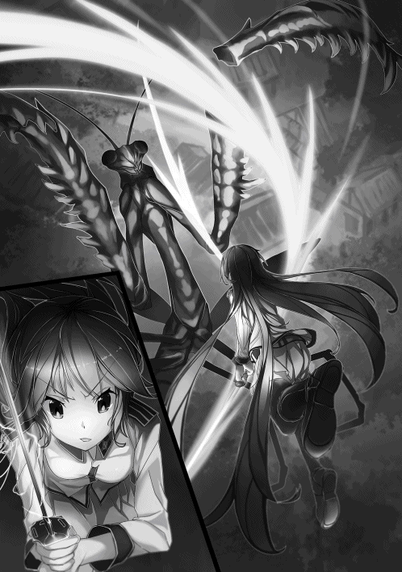
ザシュッという心地いい感覚とともに、どす黒い体液を吹き出しながら右前脚が切り落とされた。
これでもうカマキリ野郎は立ち上がることすらできないだろう。一花ちゃんもそう考えたようだ。
地に伏せたカマキリ野郎の頭部に駆け寄って一閃、左目を切り裂いた。
一花ちゃんの〝気〟と、カマキリの〝妖気〟がぶつかり合って発生する火花が今までよりはるかに大きい。斬撃の際、一花ちゃんは大量の〝気〟を流し込んだのだろう。
「もう少しだ」
もう少しでコイツを倒せる。それにもう陽動は必要ないだろう。
そう考えた俺は、一花ちゃんが切りつけた頭部に狙いを定めた。そして走り出そうとしたときだった。
「しぶとい」
カマキリ野郎が粘りを見せた。今度はその巨大な羽を広げたのだ。
そしてその羽が、不気味な振動音を奏ではじめた。羽ばたいて逃げるつもりなのか、あるいは飛んで俺たちを襲おうとしているのだろうか。
しかし、そのカマキリ野郎の思いがどうであったか判明するまでもなく、一花ちゃんが走り寄って天高く飛び上がった。
一花ちゃんがカマキリ野郎の羽根の付け根へ着地を決める寸前、彼女が手にしていた刀が、その腕ごとまさに消失したかのように見えなくなった。
同時に強烈な光が一花ちゃんを包み込む。
おそらく、恐るべき速度で二閃三閃と刀を振り抜いたのだろう。その予測を証明するがごとく、カマキリ野郎の羽根がばさりと地上に落ちた。
「スゴい......」
その直後、羽の付け根に着地を決めた一花ちゃんがカマキリ野郎から飛び降り、そして距離を取った。
俺は一花ちゃんの戦いに見惚れてしまっていた。そんな彼女が叫んだ。
「空お兄ちゃん、今よ！」
一花ちゃんが言うとおり、この隙を逃してはならない。たたみかけるなら今だ。彼女の期待に応えるのは今しかない。
ここはひとつ、とどめを譲ってくれようとしている一花ちゃんに応え、最高にカッコよく締めねばなるまい。
「一花ちゃんに見惚れてる場合じゃないよな。ここはひとつ、俺の実力を見てもらおうじゃねぇか！」
そう叫び、心を新たにした俺は全力でカマキリ野郎に駆け寄り、背を走るのではなく、一花ちゃんに倣ってその場で天高く飛び上がった。狙うのは頭だ。
両足に〝気〟を流し込み、勢いよく大地に反発させた俺の体は、地に伏したカマキリの頭上十メートルを軽く超えて舞い上がった。
「覚悟しやがれ」
上空から落下する勢いに任せ、小刀を突き下ろす力と俺の全体重を重ね合わせ、気合いとともにカマキリ野郎の脳天深く小刀を突き刺した。
ほとんど抵抗感もなく、つばの部分まで深々と突き刺さった小刀に、最高に濃縮した俺の〝気〟を、想いを込めて全力で流し込む。
「くたばれぇぇぇえ！」
次の瞬間、カマキリ野郎の頭部が膨張したかと思うと、眩いばかりの閃光を伴い、その頭部は爆散したのだった。
巨大カマキリの頭は俺の〝気〟で吹き飛んだ。当然その命は尽きたわけで、気がついてみれば俺の体はカマキリ野郎の血肉でベトベトだった。
それはもう真っ黒で、タールの沼に飛び込んだようなありさまで、華麗に戦って汚れひとつない一花ちゃんとはえらい違いだ。
「空お兄ちゃん、ヒドイ恰好だよ」
そう言って微笑んだ一花ちゃんの笑顔は、戦っているときとは別人のようだった。その笑顔についつい俺も頬が緩んだ。
そうだ返さなきゃ、と思って小刀を見たら俺と同じでヒドイありさまだった。
「ははは、もろに被っちまったからな。ちょっとスッキリしてくるよ」
そう言って俺は堀へと走った。ぬるぬるで気持ち悪いし、何よりツンと鼻を刺すような刺激臭が不快極まりない。
宿屋街から橋を渡ったところに軍人さんらしき集団が見えたが、気にすることなく俺は堀に飛び込んだ。
戦いのさなかに飛び込んだときは興奮していて分からなかったが、けっこう冷たい。そして少し臭う。
それでもカマキリ野郎の血肉よりはよっぽどマシで、戦いで熱くなった体が冷やされると同時に、刺激臭と汚れが取れて気持ち良いくらいだった。
俺はしばらく、水の中で髪の毛や服に付いた血肉を洗い流した。そして地上に上がろうとしたとき、さりげなく一花ちゃんが手を差し伸べてくれた。
その手を取って地上に上がる。
「ありがとう一花ちゃん。それとコレ」
一花ちゃんに小刀を返すと、彼女は軽く一振りして刀身についた水を払い、堂に入った所作で鞘におさめた。
一花ちゃんの後ろにはさっき見た軍人さんたち五十人くらいが整列しており、その中の偉そうな軍服を着た男が彼女の後背に跪く。
その男の顔に俺は見覚えがあった。藤崎さんだ。
「一花様、お勤めご苦労様でした。斑大カマキリ相手に見事な戦いぶり、この藤崎感服いたしました」
「藤崎、楽になさい。それから、私は空様のお手伝いをさせてもらったに過ぎません。この戦功はすべて空様にあります」
そう言われて藤崎さんはようやく立ち上がった。
「承知しております一花様」
藤崎さんは穏やかな顔で肯定すると、俺の目を穏やかに見据えた。
「空殿の戦いざま、この藤崎とくとこの目に焼き付けてございます。一花様に勝るとも劣らぬ戦いぶりは称賛に値しましょう。私には到底真似のできぬことにございます」
藤崎さんは俺を褒めちぎってくれたが、面と向かって仰々しくされると、むず痒く感じて仕方がない。
本来俺はホメられて伸びるタイプだと自覚しているが、それはもっとこうフランクにというか、なれなれしく「よくやったな、すげーじゃねぇか」みたいに言ってくれるとありがたいのだが。
しかし、この話し方が藤崎さんの地なのだろう。
よどみなく一花ちゃんや俺を賛辞する様は、まさに様になっているというか、不自然さがないというか、堂に入っていた。
しかも、媚びているように見えないし実に堂々としている。きっと、人間的にもの凄くいい人なのだろう。こういう人を怒らせてはいけない。
場所を宿屋街の守備隊詰所に移し、藤崎さんを交えて一花ちゃんとこれからのことを話し合った。
その結論だけを言えば、一花ちゃんと藤崎さんは宿屋街を拠点としてしばらく近辺調査することになった。
安全が確認されるまで豊田鉱山は仮閉山となり、基本的に大公国軍関係者以外立ち入り禁止になる。
俺はといえば、足も無いことだしと一花ちゃんたちの調査に同行を申し出た。
「空殿はもう十分すぎるほどの貢献を大公国に対してなされた。確かに空殿の戦闘力は一花様に匹敵していると私は考えるが、軍籍に無い一般人である空殿にこれ以上負担を強いるわけにはいかない。一花様もそう仰っておられる」
藤崎さんはそう言って同行を許してはくれなかった。
一花ちゃんは少し寂しそうにしていたが、俺の目を真剣なまなざしで見つめるように口を開いた。
「空様、一度首都へお戻りくださいませ。遥さんやお仲間の方々も心配しておられるでしょう。私のことは心配いりません。こう見えても大公国一の武将と言われていますから」
一花ちゃんはそう言って最後には笑みを見せてくれた。どうやら彼女は公の場では俺を様づけで呼び、プライベートではお兄ちゃんと呼ぶようだ。
そういうことなら俺の呼び方を改めてもらう必要もないか。とも思ったが、いつまでもお兄ちゃん呼ばわりされるのも少し違和感というか恥ずかしさを感じた。
だってもう一花ちゃんのほうが年上なんだし。見かけ上は俺のほうが歳食ってるように見えるけど。
さておき、俺も同行を無理強いするつもりはなかったので、一花ちゃんがそこまで言うならと、遥たちのもとへと戻ることにした。
俺一人徒歩で帰すわけにはいかないと、一花ちゃんが部下の軍人さんと馬を用意してくれたのは嬉しかった。
当然俺はまだ一人で馬に乗れないので、馬上で軍人さんに抱きついて帰路をともにしたのだが、軍人さんはもちろん野郎だったわけで、絶対乗馬できるようになってやると決意を新たにしたことは言うまでもない。
◇◇◇◇
夕方になって鴻江食堂へ戻ってきたわけだが、そこには遥をはじめ、鈴音ちゃんと阿古川哲也が揃っていた。
で、あまりにも早く、そして五体満足で何事もなかったかのように帰ってきた俺に、ポカンとした顔を並べた三人だったが、遥がいち早くその表情を崩し、涙をためて抱きついてきた。なぜだか鈴音ちゃんや阿古川哲也までウルウルしている。
「よかった......心配したんだからね。本当に、ほんとに心配したんだから！」
そう叫んだとたん、遥は俺の胸をポカポカと叩き、声を上げて泣き出した。
遥が落ち着くのを待って話を聞いてみると、三人は一旦発掘師協会に寄って事態を報告し、俺がここに来る少し前に鴻江食堂に立ち寄ったということだった。
俺は豊田で一泊し、早朝に出発したのだが、遥たちは野宿してほぼ最短距離を護衛をしながら集団で移動してきたらしい。
そして三人で豊田に戻ろうかと話し合っていたところに、俺が戻ったということだ。
「それで空、あの妖魔はどうなったの？」
「あの妖魔っていうとカテゴリー五の斑大カマキリですか？ 遥先輩」
「ええそうよ、鈴音ちゃん。で、空」
三人とも期待感いっぱいのキラキラした瞳で早く話せと訴えている。
正直、自分のことを話すのはあまり得意じゃないので、脚色は入れずに事実のみをかいつまんで説明した。
もちろん遥に借りたツルハシが壊れてピンチになって、一花ちゃんが駆けつけてくれて救われたことも正直に話した。
「空もスゲーけど、やっぱ一花様だよな」
「そうよね、憧れるわー一花様。でも、空さんだってあの状況で一人だけ残ってしかも倒しちゃうなんて。逃げ出したって誰も非難しないのに」
「そうね、確かに誰も非難なんかしない。でも空は残った。わたしは......」
思いつめたように口をつぐんでしまった遥が何を言おうとしたのか、俺には分からないし無理に聞こうとも思わないが、彼女のこんな顔は二度と見たくないと思った。
その原因はたぶん、いや間違いなく俺にある。これからはもっとよく遥のことを見ておこう。そう俺は思ったのだった。
結局この日はこの後少し話をしてお開きになり、明日、豊田の稼ぎを換金して分け合うことになった。
遥たちは避難のしんがりを買って出たそうで、自分たちの荷物を宿に取りに行く時間があったといことだった。
で、換金の結果はというと、車の部品が五十万弱、腕時計十四個で二百二十万強、合わせて二百七十万ほどになった。ひとりあたり約六十七万円である。
二十一世紀のレートに換算して約六百七十万円。
これをたったの四日で稼ぎ出したのだ。
腕時計十四個の換金額が、苦労して掘って必死になって分解分別した車の部品のほぼ四倍という幸運が重なったのが大きいが、遥が言っていたように一山当てることさえできれば、なるほど発掘師とは美味しい商売である。
これがあるからトレジャーハンティングはヤメられないのだ。
しかも、今回俺たち発掘師が掘り出した車の部品や腕時計は、今の決して暮らしやすいとは言えない社会を、少しずつではあるが改善していく助けにもなっている。
前にも少し話したが、ベアリングなどの機械部品は、生活になくてはならない道具の部品として数多く活用されているし、正確な時間を知ることができる時計の有用性は、容易に推し量れるだろう。
社会の発展に役に立ち、しかも俺たちの懐まで温めてくれて、さらに、トレジャーハントのだいご味を存分に堪能できる発掘師という仕事は、俺にとってこの上なくやりがいある職業だと、このときほど実感したことはない。
なんてことを考えていたのはいい思い出になってしまった。
豊田の妖魔襲撃事件から四か月、季節は夏真っ盛りの今日このごろ。
一花ちゃんたちの豊田周辺調査は半月ほど行われたが、異常は発見されず、豊田鉱山の立ち入り禁止はその後解除された。
そしてこの四か月弱の間、俺たち四人は都合七回、数か所の鉱山に発掘に出かけたわけだが、この七回合計で稼ぎはひとりあたり十万円にも届かなかった。
雨の降りしきる梅雨の時期、びしょ濡れの泥だらけになりながら掘り出したお宝が、今の時代では何の役にも立たないテレビだったりとか、壊れて使えないパソコンなどの電子機器の山だったり、そのさらに地下に埋まっている金属反応を心のよりどころにして掘り下げてみたら、埋まっていたのは余るほど発掘されているただの鉄くずで、全部売っても千円ちょっと、ひとりあたり二百五十円だったときには涙が出てきた。
せめて国の発展に有用なものが発掘できれば救いがあったが、そんなものは何一つ発掘できなかった。
こんなこともあった。
凄い金属反応を見つけたと思ったらそれはパチンコ屋で、出てきたのは銀玉の山と欲に駆られてここで人生の終焉を迎えたおびただしい数の遺体。
駐車場の車が残っていたらとも考えたがいくら探しても見つからなかったし、換金用の特殊景品には確か純金が使われているとおじさんが言っていたのを思い出し、必死コイて探したが見つからなかったし、大量のお金も出てきたが今の時代ではただの紙クズとか金属くずだし、最終的にはせめてものお宝ということで、パチンコ台から真鍮製の釘を必死こいて、それはもう何万本も抜いたのはいい思い出だ。
そんな思い出したくもない出来事を、なぜだか俺は屋根のない豪華な白い馬車の上で、白いモーニングにスカーフタイという慣れない貴族貴族した姿で、芝居がかった盛大な作り笑いを浮かべ、満面の笑みを浮かべる一花ちゃんの横で沿道の観衆に手を振りながら思い出していた。
「なぁ一花ちゃん。モノスゴク居心地が悪いんだけど......」
俺は沿道で旗を振ってくれている観衆に悟られないように視線は観衆に向けたまま、一花ちゃんにだけ聞こえるように小声で訴えた。
チヤホヤされるのは大好きだが、これはちょっとやりすぎだと思ってしまうのは俺が小市民たるゆえんなのだろうか。
「大丈夫ですよ。安心してください空お兄ちゃん」
満面の笑みを崩すことなく、観衆に手を振りながら一花ちゃんが小声でそう返してきた。
何が大丈夫で何に安心すればいいのかサッパリ分からない。
「そりゃぁ一花ちゃんは慣れてるんだろうけどさ、俺にはこの状況耐えられないよ」
「大丈夫です。いいですか？ 空お兄ちゃん。これはとても大事なことなのです」
何度も言うようだが、何が大丈夫で何が大事なことなのか俺には分からない。会話が全く成り立っていない。というか、一花ちゃんは何かを隠し、わざとはぐらかそうとしているのが丸分かりだ。
なんでこんなことをやらされているかといえば、カテゴリー四とカテゴリー五の妖魔をほとんど一人で倒し、何千人かの命を救ったからだということは俺にだってなんとなく分かる。
遥や鈴音ちゃん、それに阿古川哲也と、もう一人中村さんというクランのリーダーも妖魔討伐や避難時の功績が評価されて、俺の後ろの同じような馬車に集団で乗車していることからも明らかだ。
しかし、この裏には隠されたいくつかの企みが潜んでいる。確実に潜んでいる。これはとある信頼できる筋からもたらされた情報だった。
さておき、一花ちゃんから聞いた話では、妖魔の異常出現は梅雨明けとほぼ時を同じくして終息し、八月になってようやく戦功をたたえる叙勲式典が開催されることになったらしい。
俺たち四人が叙勲されることになった理由は、先にも言ったとおり凶悪な妖魔を倒したり、避難する人々を護衛したりという功績によるところが大きいが、一花ちゃんに聞いた話では、研修時に新幹線を発掘し、大量のアルミニウムをもたらしたことが国の発展に大きく寄与したことも後押しになったらしい。
そういう意味でも、繰り返すようだが発掘師という仕事は、誇っていいやりがいのある仕事なのだとこのとき改めて思った。
この式典は本来春に開かれるものらしいが、妖魔の異常出現という非常事態が起こったことで延び延びになっていたそうだ。
本来この戦功を称 える式典は、戦闘に参加して戦功をあげた軍人さんや、志願して戦闘に参加し、同じく戦功を自らあげた貴族やその私兵のために執り行われるのが慣例というか常識らしいが、たまに俺たちのように襲撃してきた妖魔を撃退もしくは殲滅し、人命を救った発掘師も叙勲されるらしい。
で、俺たちは沿道の観衆に手を振りながらどこに向かっているかといえば、それは一花ちゃんの実家がある大公宮であり、そこで叙勲式が執り行われるそうである。
通例では、今回のようなパレードが行われることはなく、粛々と式だけが執り行われるそうだが、今年はカテゴリー五の妖魔を倒した者が現れたため──つまり俺と一花ちゃんのことだが──、大公国中に俺が一花ちゃんの婚約予定者であることを知らしめることと併せて、盛大に執り行われることになったらしい。
「一花ちゃん。何か隠し事してない？」
小声ではあるが、唐突に問いかけた俺の声に一花ちゃんがピクリと反応した。少し意地悪で大人げないような気もするが、仕返しに少しくらい彼女をイジってもバチは当たらないだろう。
実はこのパレード、すべて一花ちゃんの発案らしいのだが、一週間前に高科邸に呼び出されたときに、希美花さんからコッソリ耳打ちされたことなので、俺がことのなりゆきを知っているということは彼女には内緒だ。
「ソンナコトアリマセンヨ」
一花ちゃんは明らかに動揺している。分かり辛いがセリフが棒読みだ。そんな一花ちゃんが何気に可愛い。
「ホントかなぁ」
さらにもう少しだけ内情を話すと、じつはこの一件、遥も絡んでいるらしい。
これも希美花さんがコッソリ教えてくれたことであるが、なんでも俺に余計な虫がつかないようにと、一花ちゃんと遥が何やらゴニョゴニョと秘密の作戦会議をしていたそうである。
そして、一花ちゃんにはもう一つ狙いがあるらしく、それは国内外問わず多数の王侯貴族や有力軍属家から寄せられている、彼女への縁談を有耶無耶にするための既成事実を作ろうとしているということだった。
希美花さんの地獄耳、恐るべしである。彼女に隠し事はしないようにしようと、このとき俺は心に誓っていた。
「本当です」
さらにさらに、一花ちゃんは俺が多くの嫁さんを娶ることを当然の義務のように肯定していたが、実はコレ、建前だった可能性が高い。
希美花さんによると、俺の嫁候補に名乗りを上げるのなら、それ相応の覚悟、つまり正妻が大公位継承権第一位である一花ちゃんであることを知ったうえで行えと、暗に脅しをかけているということだ。
貴族の有力家にはあまり通用しないが、一般人や発掘師、軍人さんなどには効果てき面だろうということらしい。
だから、さも当然のように一花ちゃんが俺の隣にまるで新妻のように座っていることに説明がついたような気がしている。
叙勲式後のパーティーで、一花ちゃんと遥が俺の同伴者役になっていることも、このためなのだろう。
「ホントにホント？」
「本当に本当に本当です」
一花ちゃんの満面の笑みは微動だにしないが、執拗にイジリ過ぎてよからぬ事態に発展し、墓穴を掘るのも面白くない。ここらへんでやめておこう。
ちなみに、俺が今身につけている衣装は、一花ちゃんが必要だと強く押し付けるようにプレゼントしてくれたものだ。
一花ちゃんは本来軍籍のトップであり、式典用の軍服を着用しているはずだったのだが、今日に限って純白のドレス姿だ。
これにヴェールかティアラでも被ってブーケでも持たせたら、結婚式の新郎新婦と何ら変わりないじゃないか。
そんなことを考えているうちに大公宮が見えてきた。観衆は大公宮正門の近くまでびっしり並んで歓声を上げてくれている。
「スゴイな」
「皆が空お兄ちゃんたちを祝福してくれているのですよ」
そう言った一花ちゃんは本当に嬉しそうだった。
そして歓声に見送られるように、俺たちの馬車を先頭に、叙勲者たちは大公宮へとその列を進めたのだった。
大公宮の広い敷地の横手にある格式の高そうな大きな木造の建物。パッと見、神社仏閣のようにも見えるが、中に入ればここが迎賓館だということがよく分かる。
和洋折衷 ながら格式が高そうな調度品の数々、きらびやかなシャンデリアや床一面に敷き詰められたフカフカの絨毯などなど。
俺たちが案内されたのはその中の一室、大広間だった。収容人数三百名ほどのかなり大きい広間の奥には、一段上がったところの中央に玉座のような豪華な椅子。
さらにその奥に金屏風。ホール内には六人掛けの丸テーブルと椅子。それがパッと見三十セットは配置されており、各テーブルには三角柱を横倒しにした木製の名札が、円形状に置いてあった。
何やら披露宴のホールのように見えなくもないが、どうやらすでに席は決まっているようだ。
もしかしたらこれも一花ちゃんの演出なのか？
なんてことを考えもしたが、その考えも数秒ののちには中断を余儀なくされた。
以前にも感じたことがあるこの感覚、すなわち強烈なデジャヴが俺を襲う。その正体は、俺へと向けられた射殺すような視線の集中砲火。
俺が一体何をした？
なんて自問する必要は全くなかった。
そう、すべての元凶は俺の左腕に絡みつき、幸せそうに満面の笑みを振りまいている一花ちゃんだ。
「あのデスね一花様、モノスゴク居心地が悪いのでアリマスが......どうにかならないのでゴザイマショウか」
「大丈夫ですよ、空様。むしろ大成功です」
この状況を作った元凶たる高科一花様は嬉しそうにそう言いやがると、突き刺さる視線など気付いていないかのように振る舞っていた。
いや、彼女ほどの女傑がこの視線に気づかないはずがない。気づいていてなお無視しているのだ。
いや、ただ無視しているだけじゃない。
このお方、満足していやがります。
「うん、喜ばしいことにここにいる者たちも私たちを祝福してくださっているようです。ほら、皆さん私たちに注目していらっしゃいますよ」
ことさら満足げにそう言い切った一花ちゃんは、きっとこう思っていることだろう。
私に言い寄ってきても無駄ですと。フィアンセはここにいるのだからと。
希美花さんから聞いていたことだが、この時代ではすでに適齢期真っ盛りの一花ちゃんには、数年前から縁談が結構な数来ているらしい。
しかし彼女は、そのどれにも首を縦に振っておらず、お見合いすらすべて袖にしているそうだ。
その主たる理由は、俺の生存を信じて疑わなかったからだということらしい。
そんな背景があったところに加え、国民的にも絶大な人気があり、一部貴族や軍人たちから崇拝されている一花ちゃんの婚約予定者が俺だという公式発表。
さらに、それに加えて純然たる公の場で、公然と示された彼女のこの態度だ。
今俺に向けられている、ある意味、ではなく本当の意味で殺気立った射殺すような視線の束は、そうなって当然の幾重もの伏線の上に成り立っていたのだ。
一花ちゃんの俺に対する好意を受けとめると希美花さんに、そして自分にも誓った以上、俺はこの逆境を甘んじて受け入れる必要があるのだろうが、まさか、かつて自分がよくモテ男に抱いていたリア充爆発しろという負の感情を、逆に抱かれる立場に立つとは露ほども思っていなかった。
そしてこうなってしまった以上、この視線を軽く受け流すくらい、いや、心地よく感じられるくらいの境地に......いやいやそれは無理、俺には無理です一花様。胃に穴が開きそうです一花様。
なんて本音を心の中で吐露して卑屈になっているうちに、メイド服を着た案内役の女の人にホール最前列中央のテーブルまで連れてこられた。
こういった席に慣れていないのだろうか、鈴音ちゃんと阿古川哲也は戸惑いを見せていた。もちろん俺も居心地は良くない。
「さぁ、ここが私たちの席です。皆さま、遠慮せずに座ってください」
席順は俺が奥側、つまり壇上を正面に見る位置に座り、左に一花ちゃん、その左に希美花さん。俺の右に遥、その右に鈴音ちゃん、その右に阿古川哲也が腰を下ろした。
遥は以前高科邸で見た赤いドレスで着飾っており、鈴音ちゃんは水色の下地にピンクの花が描かれた着物姿で、髪を上げて後ろでまとめていた。阿古川哲也は黒のフォーマルスーツを着て光沢のある薄い灰色のネクタイ姿だ。
こういった会場では普通、式典がはじまるまでガヤガヤと騒がしいものだが、規律の厳しい軍人さんが多いせいか、はたまた国のトップが主催する式典のせいか、しんと静まり返っていた。
相変わらず俺への視線には鋭いものが多数混じっているが。幸いなことは、俺の位置関係上視線を送っている主たちを直接見ないで済んでいることか。
「お集まりの皆様ご起立願います」
壇上の脇に立った老紳士風の男がよく通る声でそう告げると、黒いモーニング姿で髪を上げた陽一さんが、逆側の壇上脇から男女の護衛二人を従えて中央へ歩み出た。
そして玉座みたいな椅子の前で会場を見渡すと、満足そうに威厳ある笑みを湛えた。
「今日という良き日に集いし誇り高き精鋭たちよ、貴殿らは我が大公国の誇りである。貴殿らは己が身を顧みること無く身命を賭し、果敢に、そして諦めることなく妖魔に立ち向かい、大公国、その礎である民の命を守ったことは我が最大の喜びである。さらに、本日この席に参じてくれた者の中には、凶悪極まる最強の妖魔を討ち滅ぼして且つ、大公国の物質的発展に多大な益をもたらした発掘師達も含まれている。我は貴殿らのその崇高なる志と偉業とを称え、心ばかりではあるが褒賞と金す、ささやかな食事を贈るものとする。本来この場は初桜の折に──」
大公陽一さんのありがたく長〜いお言葉がこの後も三十分くらい続き、ようやく勲章と金一封の書状の授与が開始されたのだった。
◇◇◇◇
叙勲は、勲五等の授与からはじまった。
氏名を呼ばれた者が壇上に正面横の階段から上がり、勲章と報奨金の目録を順次受け取って横に列をなしている。
御堂鈴音と阿古川哲也も、勲五等叙勲者として壇上に上がっていた。御堂鈴音は伯爵家の令嬢ということもあって堂々とした立ち居振る舞いだったが、阿古川哲也は緊張のあまり、ガチガチに固まっていた。
その会場の片隅で、将官服姿の二人の男が大広間全体の様子に注意を払いつつ、互いに顔を合わせることなく小声で会話していた。
「さすがに今年は叙勲者が多いな。藤崎侯」
「あれだけの妖魔が出ましたからな。当然のことでしょう。三浦先生」
小声の主は騎士序列二位の侯爵級騎士藤崎健吾と、騎士序列三位の伯爵級騎士三浦喜一である。
藤崎は叙勲式会場警備の責任者であり、ひょうひょうとした感じの老将官である三浦は、その補佐役を務めているが、富士大公国騎士団のご意見番的存在であり、一花に刀術を教えた師匠でもあり、彼女も藤崎もそして陽一ですら頭が上がらない存在だ。
その三浦が感心したように顔のシワを深める。
「ほう、あれは御堂家の」
「御堂伯爵家令嬢、鈴音殿ですな。空殿、遥殿とともにパーティーを組んでおられます。空殿の話では将来有望な発掘師だそうですよ」
「なかなか良い目をしておられるな。空殿は」
「確かに。ですが彼女も空殿もまだまだ危なっかしい」
「ふむ、二人ともあの若さでは仕方なかろう。それにしても......」
壇上の鈴音から、空の隣で幸せそうにしている一花に視線を移した三浦の表情は、孫でも見守っているかのようだった。
勲五等叙勲者の記念撮影が終わり、勲四等の叙勲が行われた。そして勲三等の叙勲者の中に遥と中村の顔があった。
三浦はその遥に視線を向ける。
「ほう、アレが噂に聞く遥嬢か」
「はい、彼女は準騎士級の〝気〟力持ちでもあります。剣術も刀術も修めておりませぬが、その武力は男爵級騎士に匹敵するかと。豊田の事件ではカテゴリー三の大山犬相手にたった二人で勝利したとか。しかも手傷はほとんど彼女が負わせたと聞き及んでおります。もちろん発掘師用のツルハシで戦ってです。騎士用の刀剣ならばカテゴリー三程度一撃で屠ることでしょう」
「惜しいのう。あの若さだ、刀剣術の基本でも叩き込めばいい騎士になるだろうに」
式は勲三等の叙勲と記念撮影が終わり、勲二等の叙勲へと移ろうとしている、藤崎と三浦はひそひそ話を続けていた。
叙勲を終えて遥が席に戻る様子を視線だけで追っていた三浦が、何かを思い出したかのように問いかける。
「ところで藤崎候。例の刀剣法緩和の件、進展のほうはどうなっとる？」
「まだ根回しの段階らしいですが、保守派の一部が難色を示しているそうです」
「反対しとるのが一部なら緩和は時間の問題と考えてよいのかな？」
「いえ、その一部が問題でして。最近台頭してきた若手グループなのですが、貴族家の嫡男を中心に急速に勢力を拡大しております」
「保守派の若手というと、御堂家の小倅か」
「はい。ろくな実績はありませんが、弁だけはやたらと立ちまして──」
二人の話題に出た刀剣法の緩和とは、貴族もしくは軍属にしか許されていない刀剣の所有権を、一級発掘師にまで広げようという、刀剣法という法律の改定案である。
刀剣法はもともと和国でできた法律ではあるが、富士大公国もこの法律をそのまま採用していた。
刀剣法を要約すれば、刀剣の所有が許された者は、それをもって妖魔に対峙し、民間人を守らねばならない。そしてその所有権は、貴族または軍属に限定される。ということになっている。
つまり言い換えれば、刀剣を所有する貴族または軍属は、民間人を差し置いて妖魔から逃げ出すことができないということだ。
ゆえに刀剣法は、貴族が貴族たりえる、軍属が軍属たりえる象徴的な法律であると言われている。
したがって特に一部の貴族軍属、特に選民意識の強い貴族軍属に至っては、彼ら以外の者が刀剣を所有することを、良しとしないのだ。
その旗を振っている旗頭が三浦の言うところの『御堂家の小倅』、つまり鈴音の兄、御堂虎次郎なのである。
「だが、所詮奴は一般人だろうて」
「はい。確かに御堂虎次郎は一般人です。しかしその父は伯爵位にあります。虎次郎を旗頭とする若手グループが最終的に目論むは貴族世襲制の復活にあります」
「またなんと愚かな......」
今でも和国は絶対君主制であり、和国貴族は世襲制である。しかし陽一が富士大公国を和国朝廷から下賜された折り、彼はまず貴族の世襲制を廃止していた。
そして富士大公国を、絶対君主制から立憲君主制へと移行させてきた。
そんな中、時代に逆行するような思想を持つ虎次郎に、三浦は深いため息をついた。
勲二等の叙勲と記念撮影が終わり、いよいよ勲一等の叙勲者、空が壇上に上がった。
その空の胸に、まるで夫のネクタイでもなおす新妻のような空気をまとって一花が勲章を取りつけた。
そしてつけ終わると、胸に勲一等章を輝かせた空に、彼女はまるで想い人を見つめるかのようなうっとりとした笑顔を贈っていた。
一花は勲二等から叙勲者に勲章を取りつける役に回っていたが、今までは微笑を湛 えるに留まっていた。その一花が、空が壇上に上がってから表情を一変させたものだから、彼に投射される若い男たちの視線は、より一層険しいものになっている。
三浦は虎次郎のことを頭の中から追い払い、居心地悪そうに困惑している壇上の空へと視線を移した。その三浦が相好を崩す。
「ホッホッホ、空殿も人気者であるな」
そんな意地の悪い笑顔を見せた三浦に、藤崎は苦笑を浮かべた。
「まあ、あの一花様を見れば皆の気持ちも分からんではないが......」
「フムフム、確かにあの姫殿下がこれほどまでに乙女らしくなさるとは。いやはや、いいものを見せてもろうた」
勲一等の受勲者は空一人であり、勲一等受勲自体、富士大公国建国以来二例目の歴史的出来事であった。
しかし、その歴史的な受勲者に対し、会場に集まった特に若い貴族家の者や軍属からは、称賛されるどころか、彼らの妄想の中でではあるが、数知れず罵倒され、爆破され、切り刻まれるという凄惨な光景が繰り返されていた。
会場にはその歴史的勲一等章受勲者に対し、恋い焦がれるような熱い視線を投げかける貴族の子女やら軍属の乙女も、少数ながら存在したのではあるが、圧倒的多数の若い男どもによって、それはなかったかのようにかき消されてしまうのだった。
そんな異様な雰囲気の中にあっても、眼福とばかりに相好を崩している三浦に、藤崎は真剣な面持ちになって話題を変える。
「先生、別件ですがあの話はご検討いただけましたでしょうか」
「......ひとつ条件がある」
「その条件を飲めば引き受けてくださると」
「二言はない」
「それでその条件とは？」
さらに小声になって藤崎にとある条件を出した三浦の表情は、何かイタズラを企んでいる少年のようでもあった。
◇◇◇◇
本来は晴れ舞台であるはずの叙勲式で、俺は針のムシロに立たされたような思いを味わうはめになった。
しかしその式も終わり、終了後のパーティーも早々にバックレて、俺は高科邸へと避難していた。
その高科邸で陽一さんに「主役が抜け出すとは何事か」と、お小言を少しだけもらったが、一花ちゃんの振る舞いのせいで居心地が悪すぎた。どうにかしてくれと逆にクレームをつけたら、陽一さんも俺への視線のことは気がついていたようで、それ以上何も言わずにパーティーへと戻っていった。
ちなみに陽一さんとのこの会話、一花ちゃんは俺の隣で聞いていたわけだが、まるでイタズラが成功した少女のごとく、小悪魔のような笑みを絶やさなかった。
そういえば小さいころの一花ちゃんも、よくイタズラをしてこんな顔で笑っていたなと懐かしくもなったりしていたのだが。
「なあ一花ちゃん」
「はい。なんでしょうか空お兄ちゃん」
「こういう悪巧みはカンベンしてください。お兄ちゃん胃に穴が開きそうだよ」
「えへへ、じゃあ空お兄ちゃんも私 のお願い聞いてくれますか？」
「なんだい」
「これからはもっと私 に会いにこの家へ来るように」
「はいはい。仰せのままに」
発掘に夢中になりすぎて、確かに高科家には遊びに来てなかったなと、少しだけ俺は反省することにした。一花ちゃんはたぶん寂しかったのだのだろうなと。
叙勲式が終わって、一か月が過ぎた。
その間、俺をとりまく環境はあわただしく変化していった。というか激変していったと言っても過言ではない。
なぜかといえば、勲一等に叙された俺は、そのまま伯爵の地位を与えられたのと同時に、報奨金一千万円と家一軒を下賜されることになったからだ。
これらはすべて勲一等の褒章であり、あまりの厚遇に恐縮した俺は、身内びいきがすぎやしないか？ と報奨金の返金を陽一さんに申し出たところ、これでも勲一等の報奨金としては少なすぎるらしく、どちらかといえば冷遇に近といって取り入ってもらえなかったし、逆に申し訳ないと頭を下げられてしまった。
カテゴリー五の妖魔襲撃を退けるということは、この時代の人々にとって、そういうことであると力説もされた。
この程度の恩賞で済ませて冷遇に近い対応をしておくことで、ぽっと出の小僧、つまり俺に対する旧貴族家の妬みややっかみを、ある程度緩和できるとも言っていた。
逆に言えば、富士大公国にいきなり現れて注目を集めた、分不相応な待遇を受けている俺のことを、一部の旧貴族家は快く思っていないということだった。それを大公国幹部の間で勘案し、褒章が決まったらしい。
それでも、伯爵としての貴族特典は付随するわけで、例えば毎年一定額もらえる年金だったり、嫁さんを二人以上もらってもよかったり、一夫多妻でも合法だったり、何人と結婚してもよかったり、ついつい愛人を孕ませてしまってもそのまま嫁さんにできたり、認知して養うだけの甲斐性があれば庶子を儲けても社会的なキズにはならなかったり、貴族ならむしろ庶子はバンバン作れという社会的風潮だったり、毎晩とっかえひっかえの酒池肉林が可能だったりするのである。
もちろん、女性の貴族には一妻多夫が認められており、いわゆる逆ハーレム状態な女性貴族が当たり前のように存在している。
その理由は、〝気〟力が強い子孫の種族的多様性を得る意味において、貴族の一夫多妻や一妻多夫が国家繁栄に大きく寄与すると考えられているからだ。
さておき、俺としてはハーレム万歳で実に嬉し喜ばしい状況ではあるが、それだけの甲斐性と体力とカネがあるかどうかは別の話。
まぁ、たくさんの女を囲ってウハウハしたいならカネを稼がにゃならんし、それ相応の責任も付いてくるということだ。
さておき、確かに伯爵位を得た俺なのだが、今までどおり発掘師を続けても問題はないらしい。
というか、ぜひ続けてくれたまえとお願いされたくらいだった。
理由は、これからも発掘師として国の発展に寄与し続けてほしいという建前もあるが、家をもらえば当然その家に住むことになるわけで、しかも一応伯爵家ということで、普通の庭付き一戸建てレベルの家ではなかったわけだが、大公宮横手の富裕街に建てられたその家は、周囲を白塗り屋根付きの塀に囲まれた平屋の日本家屋で、敷地面積でいえば十万平米弱もあり、家の部屋数も二十を超える大豪邸だった。
さらに、住み込みの使用人が使う十部屋くらいの離れまで敷地内にある。
そんな豪邸となると、当然俺一人で維持できるわけもなく、必然的に使用人を雇うはめになり、莫大な維持費がかかることになる。
結局のところ、毎年もらえる年金は使用人の給金含めた家の維持費にそのすべてが消えてなくなるわけで、というか年金だけじゃ足りないわけで、発掘師なりなんなりを頑張って今まで以上にお金を稼ぐ必要があるらしいのだ。
とても嫁さんを五人も六人も七人も八人ももらってハーレムサイコウ、俺ってば余裕で毎晩毎夜の酒池肉林で楽しみ放題、みたいな夢のような生活など、今の懐事情ではまさに夢のまた夢なのである。
ということで、俺は鴻ノ江食堂からいろんな意味で夢が詰まりに詰まったマイホームに引っ越すわけだが......。
「わたしの荷物はもう積み終わったわ。空のほうはどう？」
俺の私物なんて荷馬車で運ぶ必要が無いほどに少なかった。
「もうとっくに終わってるよ。俺の荷物がそんなに多いわけないじゃん」
「それもそうね。じゃぁ出発しよう」
早く新居に行きたいのだろうか、今の遥は心ここにあらずといった感じだ。
「まぁ待て、遥。世話になった人たちに挨拶してくるから」
「分かったわ。わたしはここで待ってる」
「家族に挨拶しないでいいのか？」
「昨日のうちに済ませたから大丈夫よ」
嬉しいことに、当然とばかりに遥も我が家に引っ越すことになったわけだが、この言葉を聞いて、彼女が両親にどんな挨拶をしたのか少しだけ気になった。怖いから聞こうとは思わないが。
そんなことを考えながら鴻ノ江家やそこで働く人々に挨拶をしたわけだが。
「お姉ちゃんのこと、よろしくお願いしますね」
とは琴音ちゃんの言葉であり、
「ようやっとアイツも落ち着くことになったか。めでたいのう」
とはヒカル爺の言葉であり、
「空君、遥をよろしく頼む」
と、頼んできた幸作さんの顔は明らかに嬉し泣きだった。
そんな幸作さんが小声で耳打ちしてきた。
「空君が現れなければ遥は一生独身を貫きとおすと思っていたんだ。これでもう遥も行き遅れずに済んだ。ありがとう、ありがとう空君」
まだ遥を嫁にもらった覚えはないが、どうやら鴻ノ江家では、遥が俺の嫁になることは既定事項のようだ。
まぁ、俺もそうなることを望んでいるから嬉しいのだが。
「お早うございます。お母様」
「あら鈴音、今日は早いのね」
「明日から発掘に出かけるのです。今日中にその準備をしなければなりませんから」
「まあ、ようやくゴタゴタが終わったばかりだというのに、忙 しないこと。たまにはのんびりとした休日を過ごすのもいいですよ」
「空さんや遥先輩について行くためには休んでいられないのです──」
想定外というか予想だにしなかったことは、鈴音ちゃん母娘が我が家で生活することになったということである。
というのも、そもそもの発端は受勲式の直後、鈴音ちゃんの父、御堂虎徹伯爵が脳出血により急逝 してしまったことだ。その葬儀には俺と遥と阿古川哲也も参列したのだが、その時鈴音ちゃんは、御堂家の娘として母とともに葬儀にはきちんと出ていた。
しかしその葬儀が終わった後、詳しくは聞いていないが、どうやら彼女らは正妻である御堂虎次郎の母の陰謀により、御堂家から追放されてしまったらしい。
この件に関しては俺も思うところがあって、というか頭にきていたのだが、どうやら鈴音ちゃんもその母も清々しているらしく、逆にあの家から出られて良かったと話していた。
俺としては、使用人を何人か雇う必要があったこともあって、住む家を探していた鈴音ちゃんに打診してみたところ、二つ返事でＯＫをもらえたのである。
勘違いしないでほしいが、使用人として雇ったのは鈴音ちゃんの母、白井 天音 さんであり、鈴音ちゃんは母とともに使用人用の離れに住むことになった。
白井というのは天音さんの旧姓であり、御堂家を追放された際に戻したらしいが、そうなると、当然鈴音ちゃんも白井鈴音と名乗ることになったのは、しごく当然のなりゆきである。
という経緯があったわけだが、この天音さん、歳は五十歳ということらしいのだが、どう見ても二十歳くらいにしか見えない。
おまけに鈴音ちゃんによく似ているので、普通に姉妹と言われても違和感が全然ないのだ。というか姉妹にしか見えない。
「──そうですか。朝食はキチンと摂 るのですよ」
「はい。お母様。あっ、お早うございます空さん」
「お早う。鈴音ちゃん」
「お早うございます。旦那様」
「お早うございます。天音さん。えっと、できれば旦那様は勘弁してほしいんですけど......」
「それはなりません。使用人としてのけじめは必要なのですよ」
少しも媚びることなく、凛とした立ち姿で言い切った天音さんに、俺は何も言うことができなかった。
俺はまだこの時代の親子像というか年齢と見た目のギャップというか、そういうのに慣れていないので、一度一花ちゃんに聞いてみたんだが、彼女曰く、個人差はあるが年齢から十二を引いて四で割った数値に十二を足せば違和感がなくなるそうだ。
ということは、五十歳の場合、俺の感覚で約二十一歳に見えるということになり、なるほど確かに天音さんが二十一歳と言われれば全く違和感がない。
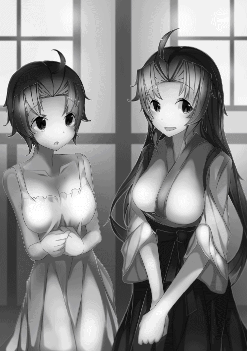
この計算で行くと、遥が十七であり、一花ちゃんが十八であり、鈴音ちゃんが十四歳ということになる。
そして阿古川哲也も十四歳くらいに見えるはずだが、実のところ、奴は俺と同い年にしか見えない。ヒカル爺の場合は逆に、見た目は六十くらいだがこの計算に当てはめると七十過ぎに見えるはずだ。
阿古川哲也の場合は実際同い年なのでややこしいが、彼は老け顔ということになるのだろう。ヒカル爺の場合はその逆だ。
一花ちゃんは〝気〟力も見た目の年齢と相関が見られると言い、高いほど若い外見を保ちやすい傾向にあるそうだ。阿古川哲也を見るに絶対とは言い切れないが。
しかし、一花ちゃんが実年齢のことは気にせずに、見た目の年齢として接すれば何の問題もないと強調していたことを考えると、実のところ彼女も、元いた時代の感覚で、自分の実年齢を気にしているのだろうという結論に、俺の考えは至ったのである。
要するに、女性に年齢のことは聞くなということだ。
話がそれすぎたので元に戻そう。今まで説明してきたことを箇条書きにすると。
・伯爵の地位をもらって身に余る豪邸を手に入れた。
・その豪邸に遥とともに引っ越してきた。
・豪邸と俺たちの生活を維持するために使用人を雇った。
・その使用人の一人が鈴音ちゃんの母、天音さんであり、紆余曲折あって鈴音ちゃんともども豪邸の離れに住むことになった。
・鈴音ちゃんの名字が白井に変わった。
・阿古川哲也が鈴音ちゃんにコクって盛大に自爆した。
ん？ 阿古川哲也と鈴音ちゃんのことはまだ話してなかった。
叙勲式の後、バタバタとことが進んで俺と遥は大忙しだった。
その間、阿古川哲也と鈴音ちゃんはヒマになるわけで、ああ、鈴音ちゃんは父親の葬儀とかその後の一悶着とか、引っ越しとかあったから一週間くらいは身動き取れなかったが、それでもその後はヒマになったわけで、結局二人は叙勲式で会った中村さんを遥に紹介されて、彼のクランに臨時で参加することになった。
そうなると、二人は二人きりになる時間が必然的に多くなるわけで、以前から鈴音ちゃんのことを密かに想っていたらしい阿古川哲也が、勇気を振り絞って告白したということだ。
結果見事に玉砕したわけだが、それで二人の関係がぎこちなくなったかといえばそれは否であり、何事もなかったかのように二人は中村さんのクランで発掘師活動を継続している。
そして今では、中村さん率いるクランの中で、驚くことに阿古川哲也は我が世の春を謳歌しているそうだ。
遥に聞いた話では、鈴音ちゃんにそれはもう完膚なきまでにフラれた阿古川哲也は、クランの中で一人寂しくしていることが多かったらしいのだが、その姿があろうことか女心をくすぐってしまったらしい。
さらに、豊田での妖魔襲撃の折、妖魔相手に奮闘していた阿古川哲也を覚えていた女発掘師が何名かいたらしく、彼のことを好意的にとらえていたことも下地になったのだろうと遥は言っていた。
ということで、遥曰く今現在阿古川哲也に言い寄ってきている若い女発掘師が三、四人いるらしい。
俺としても、阿古川哲也には早いとこ彼女を見つけてほしいとは思っていた。まさか鈴音ちゃんのことを想っていたとは気づかなかったが、彼女にフラれた彼が新しい恋を見つけたというか、春が来たというか、複数の女の子にモテているということが嬉しかった。
とまあこんな感じの一か月だったんだが、ようやく我が家のゴタゴタが落ち着いて、俺は今、屋敷の客間で遥とともに一花ちゃんと藤崎さんに向き合っている。
「空殿、いや、今は葵伯とお呼びしたほうがよいか」
俺が伯爵になって、今藤崎さんが言ったように苗字で呼ばれることが多くなった。
俺のフルネームは葵空というのだが、もともと俺の名前はオヤジが語呂合わせで閃いたのが発端でつけられたと母に聞いている。
そんな経緯もあって俺は苗字をほとんど名乗らない。
理由はアオイソラ、アオイソラとガキのころクラスメートに面白がられ、よくフルネームで連呼されながらバカにされていたからだ。
「空でお願いします」
俺はことさらに強調してそう言った。
伯爵という地位になった以上、公の場とかで葵伯と呼ばれるのは仕方がないが、プライベートでは勘弁願いたい。
「では空殿、今日は折り入ってご相談が──」
と、切り出した藤崎さん。
話を聞いてみれば、春から梅雨にかけて起こった妖魔の異常出現についていろいろ調べた結果、百数十年前に和国で同様の異常出現が起こっていたらしく、どうやら百五十年間隔程度の周期性があるらしいのだが、一度起こってしまうと、数年間は毎年決まった季節に異常出現が繰り返されるそうだ。
ということは来年の春にも妖魔の異常出現が起こる可能性が高く、その対策を今のうちから講じておきたいということだった。
で、俺に何を相談してきたかと単刀直入に言えば、宝玉の産地に心当たりはないか？ 知っていれば調査と採掘に同行してもらえないか？ ということだった。
できるだけたくさんの宝玉を入手し、軍事力の底上げを図りたいらしい。
宝玉の産地については、俺に聞けばわかる可能性が高いから、相談に乗ってもらえと陽一さんに言われてここに来たらしい。一花ちゃんはそのやり取りを聞いていて、ちゃっかりついて来たということだった。
というか、俺がこの屋敷に越してきて以来、一花ちゃんはヒマを見つけてはというよりは、無理やりにでもヒマを作って屋敷に来るようになった。
というより、仕事が終わっても高科邸に帰ることがほとんどなくなり、この屋敷に帰ってくると言ったほうが正確な表現になる。
つまり、今のところ一花ちゃんと俺は寝室を別にしているが、遥と同様この屋敷に同居している状態である。もちろん俺と遥の寝室も、今のところは別にしている。
だって一花ちゃんか遥のどちらか片方だけ寝室を同じにするなんて、小心者の俺にできるわけないじゃないか。
話がそれたので元に戻そう。
もちろん俺は、紫水晶やその他輝石とか宝石の産出地を、関東近辺だけでも何か所か知っている。
有名どころとは今の時代で言えないのだが、山梨の甲府だとかが有名だった。ほかにも岐阜や栃木にも鉱山がある。が、品質で言えば......。
「もちろん知っていますよ、でも、今の時代ではどうやって正確な位置を特定すればいいか分かりません」
「我々大公国軍は神話時代のかなり正確な地図を所有していまして、特定の部隊に方位磁石と星読みを合わせて探させれば、場所の特定は可能かと考えております」
ということだったので、俺はこの依頼を快く承諾した。というか二つ返事でＯＫしていた。まぁ正確な位置を特定できなくても、俺がこの依頼を引き受けていたことは間違いない。
そして宝玉の採掘と聞いて、遥の目は爛々と輝いているし、一花ちゃんに至っては期待感いっぱいのワクワク顔だった。
もちろん二人とも同行することしか考えていないようだ。
ということで。
「遥を同行させてもいいですか？」
一花ちゃんは何を差し置いてでもついて来るだろうということで、遥のことについて聞いてみたのだ。が、藤崎さんは困惑顔になった。
「ふむ、困りましたな......」
藤崎さんを見据えた遥の目がすわり、険悪な表情へと一変した。
「ことは軍事機密......」
遥の視線に凍てつくような冷気が混ざりはじめ、周囲の気温が下がっていくような感覚に襲われた。
「にあたりますから誠に遺憾ではありますが......」
遥の藤崎さんを見る目つきが射殺すような殺気を帯び出した。
「くれぐれも他言はお控えくださいますよう約束いただけるのでしたら」
遥の表情に笑みが戻った。
侯爵級騎士を目力と表情だけで制しやがった。
遥の恐るべき一面を目の当たりにした俺は、彼女だけは絶対怒らせないようにしようとこのとき誓ったのだった。
さしあたって次の行動目標が決まったわけだが、じゃあ出発しますか、とはさすがに言えなかった。
俺が行こうと思っている場所は、そんなに遠いことはないが、日帰りできるようなところではないし、馬で行けるようなところでもないし、道があるとは考えにくいし、おそらくは連日の山歩きになるだろう。そうとなれば入念な準備が必要になる。
ということで、俺は藤崎さんにだいたいの位置を教え、そこに行くまでに必要な物資を人数分揃えてもらえるように依頼したのだが、それ以外にも持っておいたほうがいい物があるということで、俺と遥に軍本部へと出頭するようお願いされたのだった。
藤崎さんが俺の屋敷に相談事を持ってきた翌日。俺と遥は要請どおり軍本部へと出向いた。今日の服装は、さすがに発掘師の恰好はマズいと思ったので、遥と相談して濃紺のスーツに慣れないネクタイ姿だ。
遥はシックな紺のフォーマルドレスに白いレースのショールを羽織り、俺の左後ろをおしとやかに歩いている。いつもの遥からは想像しにくい立ち居振る舞いだ。
で、何のために軍の本部くんだりまで呼ばれたかというと、とあるモノを受け取ることと、宝玉採掘日程などの打ち合わせ、それと調査隊メンバーの顔合わせをすることになっている。
そういえば、ここに来るのは十か月ぶりか？ なんてことを考えながら、遥と二人で軍本部の正門に来て見れば......。
開け放たれている大きな鉄柵門の右側に、直立不動で立つ門衛の顔を俺はよく覚えていた。いや、忘れるはずがないその顔は、あのとき俺を散々いたぶってくれやがった猫田だった。
一花ちゃんから聞くのを忘れていたが、どうやら死んではいなかったようだ。その猫田のほうに俺は真っすぐ歩いていく。すると、猫田も俺の顔を覚えていたようで、こっちを見るなり直立不動のまま震えだしやがった。
あのときはあれほど偉そうにしてたのに、今はこのありさまである。
文句の一つでも言ってやろうかとも思ったのだが、今の猫田のあまりにも情けない様に、俺の再燃してきた怒りはあっけなく霧散してしまっていた。
俺は猫田に一べつをくれると、奴の後方に見える守衛所、要するに受付をするところに遥とともに歩み寄った。
守衛所の受付に座っている中年男の軍人さんは、怪訝な顔で俺を見ている。
どうやらこの人は俺の顔を知らないようだ。と、怪訝な顔をされながらも俺は少しだけ安心していた。あの射殺すような嫉妬の視線を、また浴びせられたらたまったもんじゃない。
「あのぅ、藤崎侯にここに来いと呼ばれたんですけど」
「少し待て」
受付の人は、不機嫌そうにそう言って手元にあった紙束をめくりはじめた。
そしてその中の一枚を抜き出し、読み出したとたん、緊張の色を用紙を読むその顔に覗 かせた。
「あ、葵空伯爵様であらせられますか？」
「うん、そうだよ」
「案内の者を連れてまいりますッ。し、少々お待ちください」
受付の様子を見ていた遥が、その慌てようにクスリと笑いを零す。守衛所の奥に慌てて引っ込んだ受付の人が、すぐに若い女の軍人さんを連れて戻ってきた。
「この者がご案内差し上げます」
「ありがとうございます」
一応お礼を言ってニコッと笑顔を見せたら、受付の人はほっと安心したように緊張の色を解いてくれた。
案内の女の人は、なぜだか驚いたように顔を赤くして嬉しそうにしていた。
「では、こちらになります」
一度軽く腰を折って進むべき方向を右手で差し示し、歩き出した案内人の後を遥とともについていく。
前回猫田に連れてこられたときは夜だったので、それほど人を見かけなかったが、今は昼前だけあって結構な数の軍人さんが歩いていた。
そんな軍人さんとすれ違うたびに目が合うが、軽く会釈をされる程度で、叙勲式のときみたいな厳しい視線を浴びることはなかった。
どうしてそうなったのかは分からないが、俺としては嬉しい限りだ。女の軍人さんは決まったように少し驚いて、笑顔か緊張した顔で会釈してくれる。
しかも、何人かは案内役の人に羨ましそうな視線を送っている始末だ。
そんな状況に何度か出くわしたら、さすがの俺でも状況がつかめてきたような気がしてきた。そう、ついに俺にもモテ期が到来したのである。
おそらくあのカマキリ野郎を倒して伯爵の地位をもらったことが要因だろうが、理由はどうあれ嬉しい限りだ。なんてことを考えてニヤけていたら、遥が俺の脇腹を抓 ってきた。彼女から俺の顔は見えないはずなのに、なかなかに鋭い。
そんなことをしつつも、案内されてやってきた部屋には、一花ちゃんをはじめ藤崎さんともう一人、かなりお年を召した白髪頭の老軍人が、ソファに座って話をしていた。案内された部屋は、小ぢんまりとした応接室だった。軍本部らしく、余計な装飾品の類は飾られていない殺風景な部屋だ。
ノックをしてドアを開けてくれた案内の女の人は、その部屋には入らずに、それでは失礼しますと言って帰っていった。
「ささ、空殿、遥殿はこちらへ」
俺と遥は、藤崎さんに空いているソファへと招かれ、腰を下ろす前に老軍人を紹介してくれた。
「この方は今回の調査に同行される伯爵級騎士の三浦先生です」
「あ、どうも、俺は発掘師の空です。こっちは発掘師仲間の......」
「鴻ノ江遥と申します」
「三浦喜一だ、先生などと呼ばれておるが、ただの知りたがりのジジイだ。此度 は無理言って同行を許してもろうた。気軽に三浦の爺さんとでも呼んでくれ」
「三浦先生は私の師匠でもあるのよ。空様も遥さんも、調査の折を見て刀術の教えを乞うべきだわ」
一花ちゃんにそう言われながら、三浦の爺さんと握手して分かったことだが、この爺さん、頼りなさそうに見えてとんでもない〝気〟の使い手だ。俺や一花ちゃんよりはもちろん少ないが、遥よりかなり多い〝気〟を隠し持っている。
パッと見では一般人の平均よりも〝気〟が少ないように思えて、なんでこんな爺さんが軍の高官、それも伯爵級の騎士なんだろうかと、不思議に思っていた。
ここまで自分の〝気〟を隠ぺいできるなんて、スゴイとしか言いようがない。
一花ちゃんはずいぶんとこの爺さんを信頼しているようだった。しかも頭が固いようにも見えないし、人当たりもよさそうな感じがした。
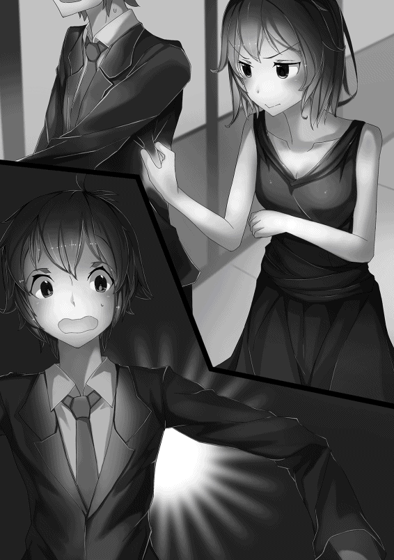
爵位をもらって俺も刀を持てるようになったことだし、ここはひとつ一花ちゃんのアドバイスに従ってみるのもいいかもしれない。
いや、これは願ってもないチャンスなんじゃないだろうか。この爺さんが一花ちゃんの師匠だというなら、彼女はこの一見ただの爺さんに鍛えられてあの斬撃を身につけたのだろう。
そう考えれば、この機にこの爺さんと仲良くなって鍛えてもらえば、もうあんな苦戦はしないで済むかもしれない。
というか、カテゴリー五？ 何それ美味しいの？ と、余裕をぶっこいても楽勝できるかもしれない。
しかし、ここまで考えてハタと違和感を覚えた。確か一花ちゃんは遥もこの爺さんに教えを乞えばいいと言っていた。
俺は爵位持ちになったから分かるが、遥はただの発掘師だ。刀や剣は法律で所有できないんじゃないの？ なんてことを考えていたら。
「あの、一花様？ わたしは貴族でも軍人でもありませんが、その......三浦様に教えを乞うというのはどういうことでしょうか」
やはり遥も気づいていたらしい。
「私が説明しましょう。先の妖魔異常出現に絡んでのことなのですが──」
藤崎さんが説明してくれたことを要約すると、妖魔に対抗するために戦力増強が軍上層部で検討されていたが、その一環として〝気〟力が高い発掘師に刀剣の所有権を認め、その代わり、妖魔異常出現時に軍の臨時招集に応じてもらおうということになったらしい。もちろんそれ相応の報酬は支払われるという。
その結果、特級発掘師に限り刀剣の所有を認めることが正式決定され、法律がつい先日改訂されたのだそうだ。
当初の法案では、一級発掘師にも刀剣の所有を認める方向だったが、一部有力者の反対が強く、折衝の末、特級発掘師に限定することになった。と、藤崎さんが忌々 しそうに話してくれた。
ただし、刀剣を所有するからには軍の臨時招集に応じる義務が生じるため、それを承知の上で免許を取得してほしいと付け加えられた。
ちなみにこの義務は、爵位持ち、すなわち貴族にも当てはまることで、本来貴族と軍人だけが所有していた刀剣所有免許を、特級発掘師も取得できるようになった。と、理解すればいい。
「ご説明ありがとうございました。ぜひ取得させてもらいたいと思います。それで、どうすれば免許を取得できるのでしょうか？」
藤崎さん曰く、特級発掘師の免状があれば、軍本部に申請して面接を受けるだけだそうである。貴族の場合は軍本部に申請するだけで、刀剣所有免許を得られるそうだ。
遥は今日、特級発掘師免状を持参するように言われていたのだが、何のために必要なのか不思議がっていた。で、藤崎さんの説明を聞いて、クスぶっていた疑問が解消したと納得顔だった。
「このまま立ち話もなんです。どうぞお掛けください──」
刀剣についての話が一段落したところで、藤崎さんがようやく今日の本題について切り出してきた。
今回俺が採掘に行こうと思っている場所は、よくよく聞いてみれば完全に未開の地らしいし、そうなると発掘師だけでは危険すぎる。
かといって一花ちゃんや藤崎さんたち軍人だけでは、発掘やその調査に関して何をどうすればいいか分からないし、分かったとしても技量がない。
ということで、宝玉の産地調査に必要な物資と人員、それから日程について昼食をはさんで夕方近くまで打ち合わせをするはめになった。
今回必要なことについてだけであるが、まずはお互いの知識や常識についてすり合わせからはじめて、相互理解を深めた。そこから今回必要な物資や人員を割り出し、大まかな日程というか必要な日数を検討していった。
「だいたいこんな所ですかね」
「そうですな。それで空殿、物資は我々が準備するとして、出発日時は如何 に？」
「俺は明日からでも大丈夫ですが、遥は？」
「わたしはいつでも大丈夫よ」
「ハハハ、お二人ともさすがは発掘師ですな。恥ずかしながら、どうにも我々にはそういった機敏さが無い」
「というと？」
不思議そうに顔を見合わせた俺と遥に、一花ちゃんが吹き出しそうになるのをこらえて答える。
「ふふふ、軍みたいに大きな組織は何事にも時間がかかるの。ね、藤崎」
「申し訳ございません、一花様。そういうことですので空殿、四日頂けませんか。それまでに必要な物資と人員を揃えておきます」
「あはは、べつに、無理に急がなくてもいいですよ。俺たちは気にしませんし、いつでもいいですから」
一花ちゃんに突っ込まれて恐縮しきりの藤崎さんだったが、よくよく考えてみれば、彼女が軍のトップだったりするわけだ。
結局のところ一花ちゃんは、藤崎さんを責めるつもりはなくて、そういうものだと割り切っているのだろう。今は戦時ではないのだから。
で、ようやく打ち合わせが終わったということもあり、俺たちがここに呼び出されたもう一つの理由、つまり刀剣の免許について手続きをすることになったわけだが、手続きは渡された用紙に名前を書くだけであり、俺はその用紙一枚、遥は用紙に特級発掘師免状を添えて藤崎さんに預けることになった。
「それでは、手続きの間に見てもらいましょうか」
一花ちゃんが目線で三浦の爺さんに合図を送った。すると、爺さんがやおら立ち上がり、大きな桐箱を中央のテーブルに置く。
「空殿、開けてみなされ」
幅七十五センチ、高さ十五センチ、長さ一メートル五十センチほどの桐箱の蓋を開けると、そこには大小五本の刀が収められていた。
どの刀も鍔 が小さ目で、持ち手には房があしらわれている。どうやら軍刀のようだ。
「これは？」
「私からのプレゼントです。空様が好きな刀を選んでください。遥さんもどうぞ」
「えっ？ こんな高そうなの受け取れないよ」
「そ、そうですよ。わたしたち何もしてないのに」
「軍部のお願いを無理やり聞いてもらうんですもの。これくらいの贈り物は安いものです。それに、これは私のコレクションの一部ですから」
素人の俺でも、この箱の中に並ぶ刀が並のモノではないことが容易に想像できた。
いくら一花ちゃんのコレクションだといっても、はいそうですかと簡単に受け取っていい物ではないような気がする。
遥も俺と似たような考えなのだろうか、答えが出せずに迷っているようだ。
「こういうものは素直に受け取ったほうが良い。ほれ、姫殿下が困っとるだろうが」
三浦の爺さんにそう言われて一花ちゃんに目をやると、確かに彼女は軽い困惑顔だった。これがもし藤崎さんや目の前の爺さんの贈り物だったら、俺は恐らくというか絶対に受け取とらない。
どうしてもというなら、買い取るなり借りるなりすると思う。でも、相手は一花ちゃんだ。彼女のことは家族も同然だと俺は思っている。
それならあまり意固地になるのも一花ちゃんがかわいそうか。そう思って俺は受け取ることにした。
「分かった。ありがたく使わせてもらうよ。それで一花ちゃん、この中からどれを選んでもいいの？」
俺が折れたことで、一花ちゃんはほっとしたように笑みを浮かべている。
「ええ、どれでも一振り気に入ったものを。遥さんもよければ」
遥はまだ迷っているようだったが、俺が箱の中で一番長くて太い刀身百二十センチ弱の大太刀を選んで鞘から抜いているのを見て、ようやく決心がついたようで、箱の中では平均的な刀身八十センチほどの太刀を選び取った。
で、鞘から抜いた刀身をまじまじと見てみると、やはりというかなんというか、反りがあって綺麗な波紋が浮かんでいるさまは、カッコいいという一言に尽きる。日本男児たるもの、一度は日本刀に憧れるものだろう。
かくたる俺もその例に漏れないのだが、こうやって日本刀を手にしてみると、思わず顔がニヤけてしまうのを止めることができなかった。
そんなことをしているうちに、手続きを終わらせた藤崎さんが戻り、俺と遥は刀と、刀剣所有免許を頂戴して軍本部を後にしたのだった。
一花ちゃんたちと打ち合わせをしてから五日後のまだ星が瞬く日の出前、俺は遥とともに軍本部へと出向いた。
俺と遥の出で立ちはいつもの発掘師スタイルだが、それぞれの背にツルハシと交差させるように刀を装備している。
その上からザックを背負っているのだが、こうしておけばいつでも刀やツルハシを抜くことができるのだ。抜くのに若干のコツは要るが。
俺と遥はまだ人通りがほとんどない夜明け前の道を、てくてくと軍本部へ向かって歩く。そして目的地に到着してみれば、こんな時間だというのに正門は開いており、守衛所には人影があった。
今回も藤崎さんに呼び出された旨を守衛所の人に告げると、どうやら俺たちがこの時間に来ることは知らされていたようで、前回とは違ってすぐに案内役をあてがってくれたし、対応も丁寧だった。
そして案内された先には、すでに一花ちゃんたちが準備万端整えて、俺たちの到着を今や遅して待ち構えていた。
「おはようございます」
宝玉採掘の旅、すなわちトレジャーハントにこれから出発するという高揚感から、朝の挨拶にも気合が入るというものだ。
一花ちゃんたちからも、眠気を感じさせないハツラツとした挨拶が返ってきた。
俺たちを待っていたのは一花ちゃんをはじめ、藤崎さんと三浦の爺さん。それに、藤崎さん直属の遊撃小隊の人たちが二十名ほど。馬車が三台用意してある。
その馬車に遊撃小隊の人たちが物資を運び込んでいた。
ずいぶん大がかりな採掘隊になったが、期間とルートを考えれば、これでも必要最小限の態勢なのだ。
「おはよう一花ちゃん、待たせた？」
「いいえ、出発予定時刻までまだ三十分あるわ」
そう言った後、一花ちゃんは俺の耳元で「おはよう、空お兄ちゃん」とささやいた。さすがの一花ちゃんも部下たちの前でお兄ちゃんとは言いにくいのだろう。
「それにしてもあと三十分か......」
なんてことを考えていたら、物資の積み込みが終わったらしく、予定時間をくり上げて早めの出発とあいなった。
俺と遥、一花ちゃんと藤崎さんに三浦の爺さんが一番小さいホロつきの馬車に乗り込み、三台の馬車隊は首都を出て一旦南へと進んだ。
今回俺たちが向かおうとしているのは石川県某所。
そこの紫水晶は、二十一世紀には掘りつくされたとされているが、大きな地殻変動後の今の時代では、新たな脈が露出している可能性が極めて高いと俺は踏んでいる。
もし目的のものが見つからなければ、そこから山岳地帯を進み、岐阜のポイントに向かおうと思っている次第だ。
旅のルートは、豊田を経由して名古屋から琵琶湖をかすめ、福井を通過して石川へと入る予定だ。
ただし、地形がどうなっているか全く分からない上に、ルートのほとんどは原生林や山の中を突き進むことになるだろうから、日程は一か月強を見込んでいる。
それを過ぎると、雪が降りはじめる可能性が高いため、遭難の危険性が出てくるのだ。とはいっても今回のメンバーは、全員が一般人から隔絶した〝気〟の持ち主であるため、多少どころかかなりの無理が利くだろう。
本来なら何度も森に通 って道を作りつつ、少しずつ進路を開拓していくべきなのだが、それだと目的地にたどり着くまでに何年もかかってしまう。
そんなことでは来年の春にまた襲ってくる可能性が高い妖魔に対抗できない。だから今回は、無理が利くメンバーで宝玉探しに行くわけである。
なお、今回のメンバーに鈴音ちゃんと阿古川哲也は入っていない。二人は引き続き中村さんのクランで発掘作業中だ。そして、二人を連れていけない理由は今回の採掘自体が軍事機密だからである。
打ち合わせのとき藤崎さんに二人の同行を打診してみたが、俺には遥みたいなゴリ押しができなかった。
あまり無理を言って藤崎さんを困らせたくなかったというのもある。だから今回二人には残ってもらうことになった。
三台の馬車は豊田に向けて順調に進み、最初の野営ポイントに到着したのは陽が傾いたころだった。
この場所は前回四人で豊田に向かったときに野営した場所と同じである。大きな違いは遊撃小隊の面々が同行しているということであり、彼、彼女らがすべての野営準備をそれはもう効率よくテキパキとやってくれるということだ。
俺たち主要メンバーの仕事は、ただその様子を見守るのみである。
遊撃小隊の面々によって大型のテントが四張り、小型のものが二張り、たき火を囲むように設営され、そのたき火には大き目の鍋が二つ掛けられている。
しばらくして陽が完全に姿を消したころ、食欲をそそる匂いが漂ってきた。何もすることがないので、早く食べたい気持ちが必然的に増幅されている。
「藤崎閣下、食事の準備、完了でありマス」
たき火から少し離れたところに設置された折りたたみ式の簡易テーブル。このテーブルが使えるのも今日までなのだが、そこでくつろいでいた俺たちの前に、若い女兵士がビシッと敬礼を決めて夕飯時の到来を告げに来た。
「ご苦労。中尉、この方たちの分も配膳を頼む」
「ハッ、了解でありマス」
非常にハキハキとした清廉な印象を受ける女兵士だなと最初は思った。しかし、なぜだかこのとき彼女に違和感を覚えた。
何が俺にそう思わせたのかは分からないが、この女には気をつけろと本能に訴えかけられたような気がしてならなかった。
しかしそんな違和感も、配られた夕メシの前に霧散してしまう。なんとも食欲を掻き立てる匂いだ。
季節は夏の盛りを過ぎた九月初頭。陽が沈んだ時間帯だとはいえ、まだまだ暑苦しい。けれども夜風には、わずかな涼を感じないわけでもなかった。
そんな微妙な季節感の中、この時期に食うには少し季節外れの豚汁 で熱々のご飯を掻き込んでいく。
案の定ダバダバと汗が噴出するが、味のほうは文句のつけようがないくらいに美味かった。
「ふむ、空殿は実に美味そうに食いなさるのう」
三浦の爺さんにそう言われてはじめて気づいたが、一花ちゃんをはじめ俺以外の四人は汗ひとつかかずに、実にスマートに夕メシを食っていた。
かといって食うスピードが遅いというわけでもない。まぁ、俺みたいにかっ喰らっているわけではないが。
「なんでみんな汗かいてないんすか？」
分からなかったから聞いてみた。ひとりで悶々と考えるなんて性に合わない。
「ふむ、そうかそうか、分からんか」
三浦の爺さんは、不思議そうな俺の顔を見てやけに嬉しそうにしている。その隣で藤崎さんは困惑顔だ。
一花ちゃんは不満そうに三浦の爺さんを、遥は不思議顔で俺を見ていた。
「先生、空様がお困りです」
「ホホホッ、姫殿下は空殿のことになると」
「先生！」
ぷくっと頬を膨らました一花ちゃんに幼いころの面影を懐かしみながらも、俺は答えを催促することにした。
このまま和気あいあいとした食事中の団欒 に浸るのも悪くはないが、謎を謎のままに流されるのは精神衛生上好きくない。
「あのぉ、そろそろ教えていただけませんかねぇ」
悪い悪いと三浦の爺さんは謝りながら教えてくれた。俺だけが汗をかいている理由。それは〝気〟の使い方がなってないかららしい。
というより、俺は〝気〟で汗をかかない、つまり体温を上昇させない、言い換えれば熱を上手に体外へと逃がす方法があるなど知りもしなかった。
〝気〟で体を温めることは簡単にできたが、逆に冷やすことができるなんて考えもしなかった。
爺さん曰く、今の時代に生きている大人ならば〝気〟で体を冷やすことは自然に身につけていることであり、ほぼ誰でもできるらしい。
激しく運動したときや、意識して熱を体外へ逃がさないようにしようとしない限り汗をかくようなことはないらしい。
まだ〝気〟の扱いに慣れていない小さな子供ならともかく、温かいものを食べたくらいで汗をかくということは、俺の〝気〟の扱いは幼児や赤子並みのレベルだということだ。
そう言われたときは実際少し悔しかった。が、よくよく考えてみれば俺はこの時代に来てようやく一年と少し。赤子と何ら変わりはない。〝気〟をうまく扱えないのは当たり前なのだ。現に、一花ちゃんもそう言って俺を慰めてくれた。
一花ちゃん曰く、戦闘での攻撃に関してだけは、俺の〝気〟の扱いは常人をはるかに凌駕しているという。それに、こんなことが分かっていたなら、あのカマキリと戦ったときみたいに足の筋肉が熱をもってピンチになることもなかった。
この旅の合間に、俺と遥は三浦の爺さんから刀の扱い方を学ぶことになっている。これはさっそくいい機会かも......。
「じゃあ、そういった〝気〟の扱い方もお教え願えませんか？」
俺は言葉に期待を込めて三浦の爺さんに願い出てみた。すると、爺さんは上機嫌この上ないといった感じで破顔してみせた。どうやらこの爺さん、人に教えるということが大好きな人種らしい。
それに一花ちゃんや藤崎さんから、敬意を込めて先生と呼ばれていることからも、たぶん良い人なのだろう。
「よかろうよかろう。腹ごなしついでに運動でもするかのう」
上機嫌になった三浦の爺さんは、そう言ってまだ終わっていない夕メシを再開したのだった。
空に刀術における〝気〟の扱い方を教えることになった三浦は、夕食後星空を眺めながらゆったりと夜風に体を預けたのち、空と遥の指導をはじめていた。指導には一花も願い出て、教えを乞う立場で加わっている。
「先生、空殿はどうですかな」
三浦の横では藤崎が、木刀を振るう空たち三人の様子を眺めていた。
空と遥、それに一花は、日本刀ではなく三浦から渡された木刀を、星空のもと三人で向かい合うように、三角形を作って素振りを繰り返している。
一花がお手本となって一振り、それを模倣するように空と遥が一振り。木刀を使う理由は、今はまだ語らないことにしておこう。
「〝気〟の保有量はまさに人外。さらに素質だけで言うと姫殿下より上になるかのぅ」
「ほう、それはまたなんとも......」
「だが刀の振り方は見てのとおりずぶの素人。基本の基本から叩き込まんといかん」
「でも先生、そのお顔は......」
藤崎が言ったとおり、三浦の顔からは明らかな喜びが見てとれた。実際、三浦は空という久しぶりの逸材、いや、逸材と呼ぶこともはばかられるような才を秘めた教え子との巡り逢いに、至上の喜びを感じてやまなかった。
一花に刀術の教えを施したときにも感じていたことだが、空の素質はそれを上回っている。さらに三浦にとって嬉しかったことは、空が刀術に関してはずぶの素人だったことも大きかった。
刀術を極める上で邪魔になる余計な体の動きやクセが身についていないし、刀術に限られたことだけではあるが、余計な知識やこだわりもない。
三浦にとって空という存在は、自身の極めた刀術を継承させるにふさわしい、いや、ふさわしいと言うのもおこがましいほどの、あえて言えば三浦という達人と呼ばれるほどの人物にとっても身に余るほどに極上の存在なのである。
そんな存在にまっさらな状態で刀術を教えることができる。
それはまるで天啓とも言えるほどの発想を得た稀代の芸術家が、これ以上ない最上級の素材を手に入れ、今まさに創作にあたろうとしている心情に近しいものであった。
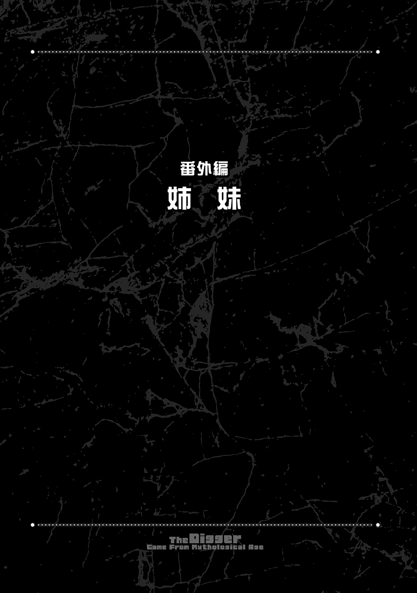
華々しい叙勲式が終わると、遥は空とともに挨拶回りやら催しやらでバタバタとせわしなく動き回った。
そんな慌ただしさもようやく落ちつきを見せ、ぽっかりと穴があくように訪れた休日の朝、遥は少し遅めの朝食をひとり居間で摂っていた。
「お早うございます。お姉ちゃん」
「ん？ お早う琴音......」
起き抜けで生気のない顔のまま、もきゅもきゅとご飯を咀嚼 している遥に、琴音は呆れ顔でたしなめる。
「おねえちゃん、顔は洗ったの？」
「そういえば洗ってないかな......」
そう言ったにも拘 らず、顔を洗いに席を立つことなく遥は朝食を続けている。上の空というよりは、ただボーっとしている遥を見て、琴音は「しょうがないなぁ」と言いたげな顔で口を開いた。
「疲れてるのは分かるけど、顔洗ってシャキッとしてきたら？」
「......うん、そうする。もうご飯はいいから片しといてくれるかな」
そう口にして立ち上がり、居間を出ていこうとした遥に、琴音は「ハイハイ」と諦め顔で返事して、ふと思いついたように振り返った。
「そういえばお姉ちゃん、空さんは？」
「ん？ ......今日は大公宮だったかな。泊りになるみたい」
いつも空と行動をともにしている遥といえど、一花がいる大公宮へと同行するのは気が引けていた。べつに一花のことが苦手なわけではないが、自分がついていけば空と彼女の時間を奪ってしまうことになるからだ。
遥にとって、今日という日は久しぶりに訪れた休日だった。
貴族や軍属、そして発掘協会のお偉方との面談や挨拶。そんな煩わしいことからやっと解放されたのだ。今日ぐらいは実家でのんびりと過ごして疲れた心を癒したかった。
琴音も彼女の事情を知っていたから、だらしなくしている遥に呆れ顔こそすれ、強くあたることは無かった。
そんなこんなで顔を洗った後も、遥は自室でのんびりとゴロゴロしたり惰眠をむさぼったりしながら一歩も家から出ることなく休日を過ごしていた。
「お姉ちゃん、入っていい？」
「......いいいわよ〜」
夕食も終わってずいぶん時間が経ったころ、遥の部屋に琴音が訪れた。
遥はお気に入りのクッションを枕に、畳の上でもう何度寝か分からない眠りから目覚めた余韻に浸るかのようにゴロゴロしているところだった。
「もう、だらしないなぁ、お姉ちゃんは」
「たまの休みくらいゆっくりしててもいいじゃない」
実際、遥は自分が考えている以上に精神的な疲れにさいなまれていた。
お偉方への挨拶や面談からくるプレッシャーも当然あったが、それ以上に、貴族や有力軍属家の娘たちから空に集まる熱い視線に、心休まることが無かったのだ。
空がそういった視線に鈍感なのか、あえて無視しているのか遥には分からなかったが、幸い、彼がた娘たちの視線に無関心だったのが心の拠り所だった。
「そう、せっかくの休みだからたまには姉妹水入らずでお話ししましょう」
琴音の何か含んだような笑みに、遥は枕にしていたクッションをギュッと抱きしめ、警戒心をあらわにする。
「い、今更何を話すのよ」
「まあまあお姉ちゃん。座って座って」
琴音は持ってきたお盆をちゃぶ台に置くと、笑みを絶やさぬままにトボトボと急須からふたつの茶碗にお茶を注いだ。
遥は警戒心を解かぬまま体を起こし、ちゃぶ台の前に足を崩して座ると、琴音の視線を伺うように茶碗に口をつけた。
「ふぅ、美味しいわ。で、話って何？」
「うふふ、油断してるお姉ちゃんも可愛いけど、今のお姉ちゃんも可愛いなって」
「な、何よいきなり」
琴音はもったいぶるように本題を話そうとしない。そんな琴音は、ここ最近の遥の嬉しい変化について思い出していた。
遥の様子に変化が現れたのは、彼女が空を実家に連れて来てからだった。
琴音が知る限り、それまでの遥の周囲にはむさ苦しい男の影ばかりしか見えず、恋の噂など聞こえてくることも皆無だった。
が、空が現れてからというもの、それまでの勇ましい振る舞いがなりを潜め、遥は実に乙女らしい反応を見せるようになった。
「ねぇお姉ちゃん。お姉ちゃんは空さんのことどう思ってるの？」
いきなりの口撃 に遥はお茶を吹きかけたが、琴音は追撃を止めなかった。
「まぁ、最近のお姉ちゃんを見てれば分かるけど......で、どんな感じなの？」
「ど、どんな感じって言われても......」
顔を真っ赤にした遥は、両手で持った茶碗を覗き込むようにして小さくなって、口ごもるように黙り込んだ。
琴音だって分かっている。姉が異性に関して奥手であり、恋に対して臆病なことを。
琴音は今まで、姉の浮ついた話をまったくと言っていいほど耳にしたことが無かった。だからこのチャンスを逃すべきではないと思っていた。
さらに言及すれば、元来琴音は世話好きで姉好きで恋バナ大好き娘である。楽しい娯楽が少ないこの時代にあって女子の大好物と言えば、二十一世紀にも増して甘露か恋バナなのだ。特にその傾向が強い琴音は、いつか遥とも恋バナをしてみたいと思っていた。
しかも、姉の最大のライバルが大公国一の高値の花である一花だと知っている琴音は、空が一花一筋になってしまうかもしれないことが気がかりでもあった。
そう考えると、いや、考え過ぎなのかもしれないが、遥がこのチャンスを逃してしまえば、姉と楽しい恋バナをする機会が訪れないかもしれない。
そうなるのは嫌だったし、ついに姉が色恋に目覚めたのだ。応援もしたい。
だから琴音は姉の幸せを願うことも当然あるが、姉との楽しい会話のためにもこのチャンスを逃してはならないと、こうして焚きつけに来たのである。
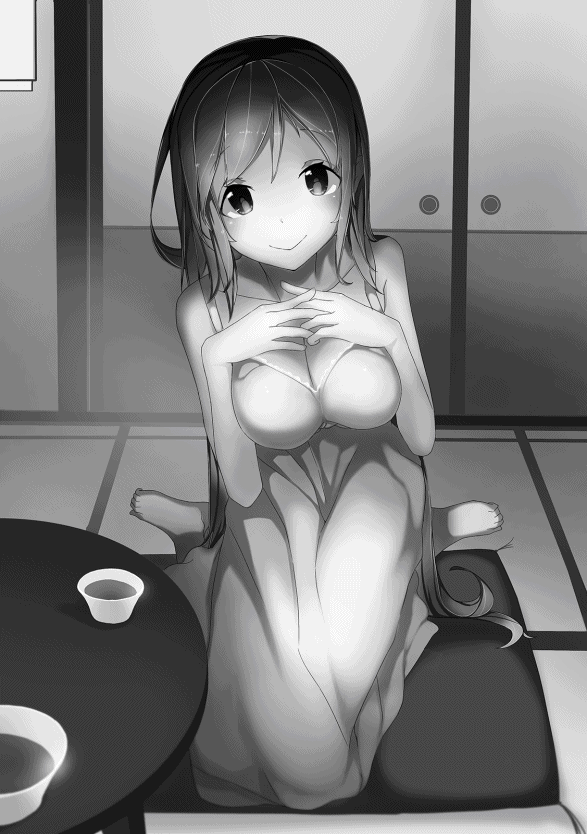
「ねぇお姉ちゃん。お姉ちゃんは空さんのことが好きなんだよね」
「それはまぁ......嫌いじゃないけど」
今まで以上に真っ赤になって消え入りそうな声で口ごもるようにそう言った遥に、琴音は笑みを深めて追撃を放った。
「一花様も認めてくださってるんでしょ？」
「うん......」
「なら言葉できちんと示さなきゃダメだよ」
「でも......」
「でもじゃありません！ いいですか、お姉ちゃん。好きな人にはきちんと言葉で伝えないといつまで経っても進展しませんよ。特に空さんの場合、ライバルになる女 はそこら中にいるんですから」
バンとちゃぶ台を両手で叩き、身を乗り出して力説する琴音に、遥は身を引いてタジタジになりながらも頷くしかなかった。
遥にだって焦りが無いわけではない。
行動を共にしていれば嫌でも分かる空へ向けられる女 たちの熱い視線。その全てが脅威になるとは思えないが、空に熱い視線を送る中には、遥ですら見惚れてしまいそうな美人も一人や二人ではなかった。
もし空が見初めてしまったら。そう考えると自分の中に醜い感情や焦りが蠢 くことを、自覚しないわけではなかった。
「じゃぁどうすればいいのよ！」
つい声を荒げてしまった遥に、琴音はシメシメと心の中で悪い笑みを浮かべる。
「簡単なことです」
「簡単？」
「そう、簡単です」
「それだけじゃ分からないわ」
遥の言葉を聞いて琴音は満足そうに頷いた。
「ね、言葉で正確に伝えないとお姉ちゃんも分からないでしょ」
誘導尋問ではないが、まんまと琴音の思惑に乗る形になった遥は、悔しそうにしながらも素直に教えを乞うのだった。
「もう！ 琴音が言いたいことは分かったから、どうすればいいのか早く教えてよ」
「告白すればいいんです。好きですって言葉にすればいいんです。ね、簡単なことでしょ」
「告白って......」
そう言って瞳を揺らし、狼狽 えている遥は今まで異性に想いを告白した経験が無い。もちろん同性にも無いが、こと恋に関して奥手な彼女は、自分から想いを告げることなど考えてもいなかった。
「いい、お姉ちゃん？ 空さんみたいな異性の好意に鈍感な人にはきちんと言葉で言ってあげないとダメなの。そうしないと......」
「そうしないと何よ」
「うふふ......教えてあげない」
普段はおしとやかでもったいぶったりしない性格な琴音も、姉に対してだけは時折こういった小悪魔のような一面を見せることがあった。が、絶望的な顔で落ち込んでしまった姉を見かねてそっと遥の耳元で囁いた。
「お姉ちゃんあのね──」
琴音が何と言ったのかは伏せておくが、その言葉を聞いた遥は覚悟を決めたような面持になり、何かを決意したように瞳に力を取り戻したのだった。
あとがき
皆様のおかげをもちまして本書『異世界だと思ったら崩壊した未来だった〜神話の時代から来た発掘師〜』も無事に第二巻を出版することができました。この場をお借りしてお礼申し上げます。
本編ではいよいよ主人公である空が仲間たちとともに本格的な発掘師としての活動を始めたわけですが、お楽しみいただけたでしょうか。
空と仲間たちは貴重なお宝を発掘したり、絶望的なまでの強敵とのバトルを強いられる展開となりました。
その強敵になんとか勝利し、空は望外の地位と報酬を手に入れることになったわけですが、その報酬というのが豪邸と呼べるお屋敷だったわけでありまして、現実世界でそんな大豪邸を建てようと思えば、仕事なりなんなりで大出世するなり年末ジャンボの一等に当選するなり、とにかく大金が必要になるわけです。
こんな場でお金の話をするのもどうかとは思いますが、現実にそんな大金を手に入れられる人は一握りの幸運な方たちだけでありまして、もちろん私にはそんな大金にありつけるだけのあても運も能力もありません。
ですが、物語の中でならそういった大金だったり地位だったり成功だったりを主人公に与えることができるのです。せめて物語の中では大成功を収めたい。本編はそんな私の願望というか妄想を空に叶えてもらう形になりました。
苦労はするけれども大仕事を成しとげればそれ相応のご褒美にありつける。現実世界ではそんな当たり前のことさえも、当たり前ではなくなりつつあります。
そんな世知辛い世の中にあって、本書を手に取ってくださった皆様のお役に少しでも立てるというか、本書が辛い現実を忘れるためのアイテムの一つになってくれれば幸いです。
滋田英陽
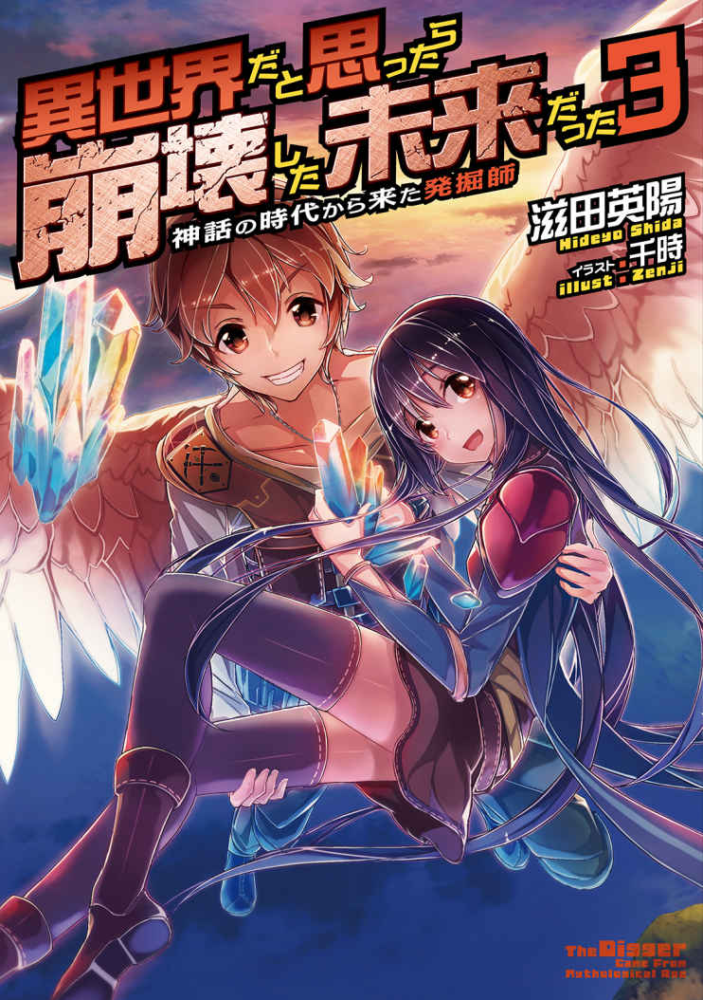
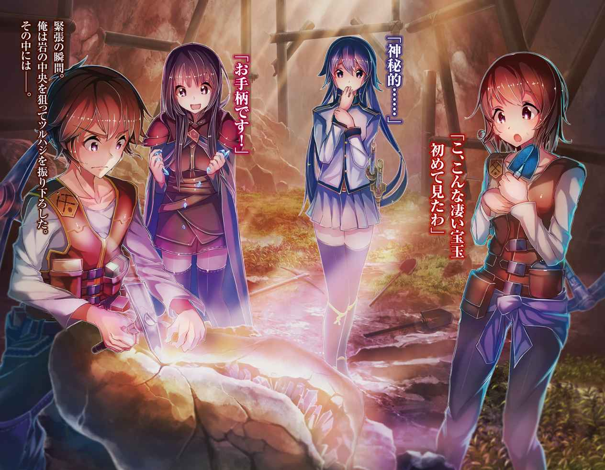
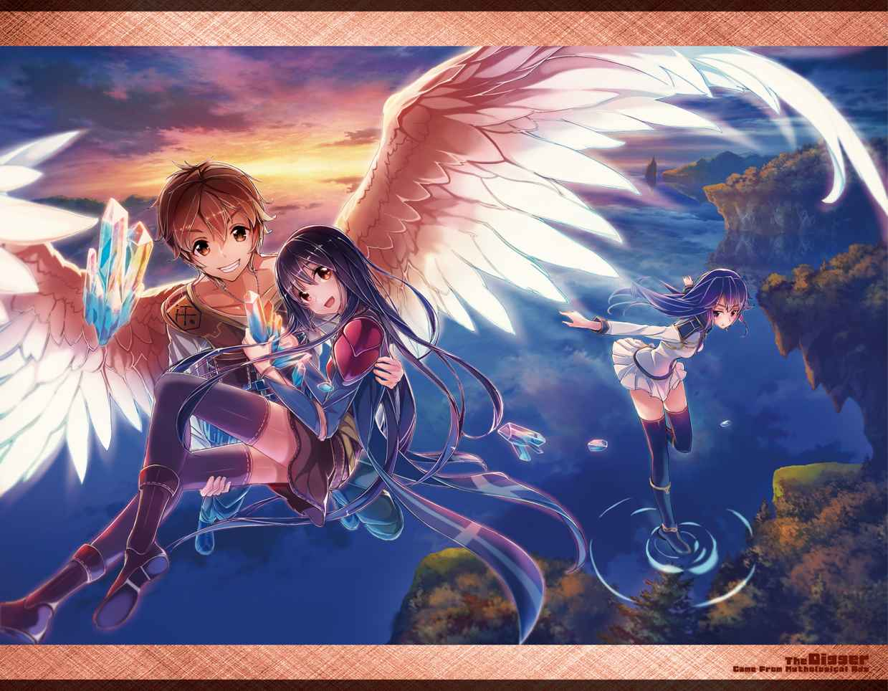
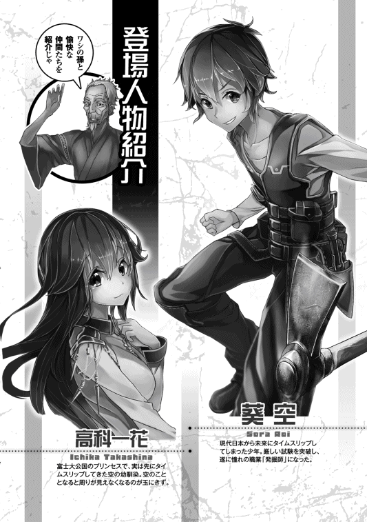
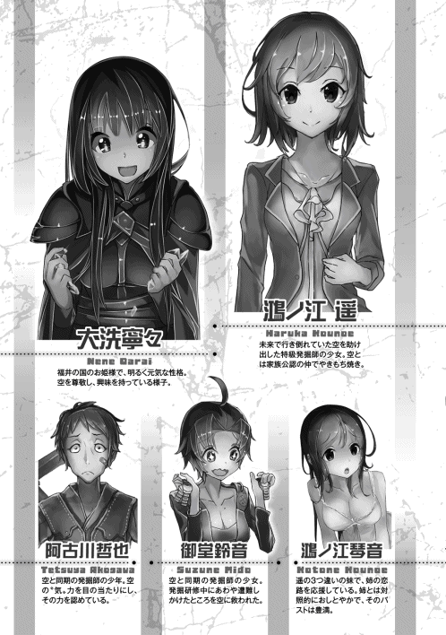
凶悪な異形 の怪物が存在が闊歩 する世界。
近づくことさえままならないその存在を人々は妖魔 と呼んだ。
妖魔に怯えながらも、人々は逞 しく生き続けている。
そんな人々が希望とする存在が発掘師 だった。
遥 か過去に栄 えた文明の遺物を求め、発掘師達は今日も森の中へと分け入っていく。
発掘師を生業 として選んだ少年空 は、メキメキと頭角を現し、華々 しい活躍と成功を修 めていった。
そんな空だったが、あるとき、かつてないほどに凶悪極まりない妖魔が彼の前に立ちはだかった。
見上げるほどの体高。禍々 しい〝妖気〟。そして圧倒的で絶望的な存在感。
一振りで山をも砕きそうな凶器を構え、その妖魔は襲いかかってきた。
逃げることもできたが、空は逃げなかった。いや、状況が逃げることを許さなかった。
手には頼りない武器。圧倒的な力の差。味方はただのひとりもいなかった。
どう考えても勝てるイメージが見い出せない。そんな絶望的状況に在 っても、空が諦 めることはなかった。
相手は絶対的強者。僅 かな動きも見逃さず、避け続けることしか生き残る道はない。
避け続けていれば、いつか必ず助けがやってくる。そう信じて空は躱 し続けた。飛び退り、しゃがみ込み、走り抜け、身を翻 す。たったひとつの希望を糧に空は避け続けた。
しかしとうとう躱しきれない状況に追い込まれてしまう。
ほんの僅かに掠 ってしまった凶器が空を吹き飛ばした。何度も何度も地面に叩きつけられ、空の体が悲鳴をあげる。
もうダメかと思ったそのとき、勝てるかもしれない起死回生の一手を閃 いた。それは絶大な効果をもたらした。
状況は一変し、空の攻撃が徐々に妖魔を弱らせていく。ついには助けも現れ、空は妖魔を討ち滅ぼした。
街に凱旋 した空を待っていたのは称賛と喝 さい。空は英雄として持て囃 され、ついには最高の栄誉と褒賞 を与えられることになった。
そんな空に依頼が来た。
さあ、次の仕事だ。
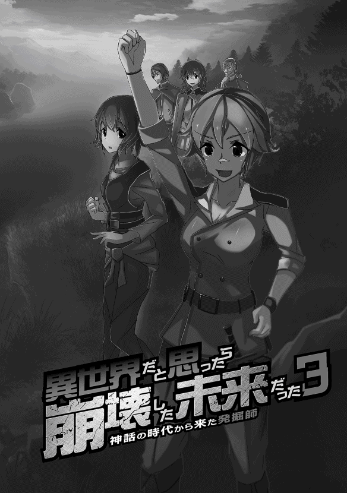
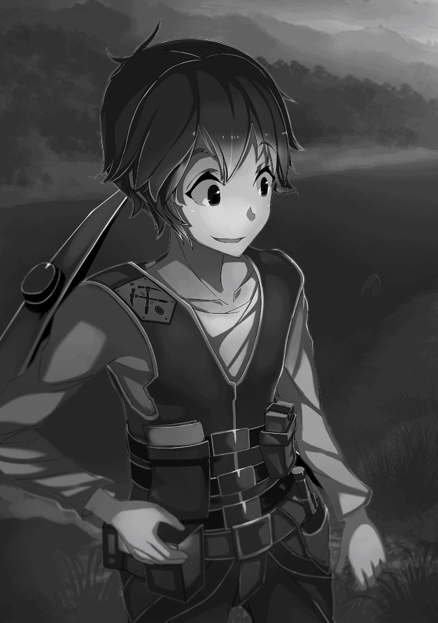
〝気〟の効力を増幅 することができる宝玉 とよばれる石。それを探す旅に出た俺と遥 は、その道すがら同行している三浦 の爺 さんに〝気〟を使った刀術の指導を受けることになった。
体を冷やす方法については、移動しながらいつでもできるということで、まずは刀術の基本となる〝気〟の使い方を教わることになった。
日本男児たるもの刀への憧れは強いものがあるわけで、俺もその例にもれず期待感いっぱいに胸を膨 らませ、一花 ちゃんにもらった刀をもって爺さんのところに行ったわけだが。
「本物を使うのはまだまだ先。今日はお前さんたちの〝気〟質を見極めさせてもらおうか。使うのはコレだ」
ということで、渡されたのは一振りの木刀だった。遥と一花ちゃんにも同じ木刀が渡されている。
そしてこの木刀、一見普通の木刀としか思えないが、きっと何かがあるに違いない。そう思わせるものを感じて爺さんに聞いてみると。
「材質は樫 だから頑丈だが極々普通の木刀よ。なーんにも特別なことなどありゃあせん」
と、俺の膨れ上がった期待を木 っ端 みじんに打ち砕く答えが返ってきた。どうやら俺は、これから刀術を教わることに興奮し、真贋 を見極める目を曇 らせていたらしい。
俺としたことがこんな有り様では得るものも得られない。と、冷静さを取り戻そうと頭を冷やしていたら、そんな俺の顔を見た爺さんが「ちょいと貸してみぃ」と木刀を要求してきた。
「あ、はい」
爺さんは俺から木刀を受けとると、その辺のこぶし大の石ころを拾って放り投げた。
「これは確かに木刀だが、こんなこともできるようになるかもしれん」
そう宣 って、落ちてきた石ころを音もなく一刀両断にしてしまったのだ。もちろん木刀で。
「すげぇ......」
俺は思わずそうつぶやいていた。遥も目を丸くして驚いている。一花ちゃんは満足そうにうなずいていた。
木刀で両断され、地に転がった石ころは、鋭利 な切断面を天に向けて二つに分かれている。それはまるで刃物で切断したような断面だった。石を刃物で切断するなど想像しにくいことだが、この爺さんはそれを何の変哲 もない木刀でやってのけた。
スゴイとしか言いようがないだろう。俺の爺さんに対する株はうなぎ登りだ。
「師匠！」
思わず俺はそう叫んで、木刀を持つ爺さんの両手を握りしめていた。これからは師匠と呼ばせてもらおう。
「自分にそっちの趣味はないぞぃ」
お茶目そうに眼をパチクリさせている爺さんが何を言いたいのかもちろん分かるし、あえて言及しないし、俺にもそんな趣味はない。が、爺さんがやって見せてくれたことは、俺が持つ二十一世紀の常識からは到底考えられない芸当だった。
木刀を振る速度があり得ないほど早かったわけではない。いや、むしろ遅いようにさえ見えた。爺さんの〝気〟が特別強いわけでもなく、むしろ俺や一花ちゃんと比べたらはるかに弱いと言っていい。それでも石ころは綺麗 な断面を見せて両断されている。
この技を身につけて日本刀を振るったら、たとえカテゴリー五の妖魔だって一振りで両断できるだろう。そういえば一花ちゃんの斬撃も、ここまで見事ではないものの凄 まじい切れ味だった。きっとこの爺さんに師事したからこそ身につけることができた斬撃なのだろう。
そうとなれば、ここは恥を忍 ぶどころか、喜び勇 んで爺さんの言うことに従おうではないか。
日本刀はまだお預け、そんなみみっちいことは気にしない気にしない。木刀で練習、ＯＫＯＫどんとコイってもんだ。
「まぁいい、今の技は〝気〟を使った刀撃の基本だ。お前さんより圧倒的に〝気〟が少ない自分がカテゴリー五の妖魔を斬ることはできんが、この基本を身につければお前さんならカテゴリー五でも一振りで両断できるだろうて」
爺さんが言ったことは今まさに俺が考えていることだった。言質 はもらったというには大げさすぎるし、今の状況に合ってないかもしれないが、俺の語彙 力ではそうとしか表現できないのがもどかしい。
とにかく、三浦の爺さんの言うとおりに修業を積 めば、もうあんな苦しい戦いにはならないということだ。
ということで、まずは手本を見てそれを真似るという至極 オーソドックスな、なんの捻りもないことから修業がはじまったのである。
「じゃぁ、まずは私 の動きを真似てください」
で、そのお手本になるのが一花ちゃんの素振りであり、俺と遥は彼女の素振りをよく見て同じことを真似る。ということをただただ繰 り返した。
「結構難しいな」
「うん、ツルハシとは〝気〟の使い方が違うし、慣れるしかないわ」
普通に型だけを真似ても何の意味もないことは、爺さんからくどいように仰せつかっている。視るべきは一花ちゃんの動きではなく、彼女の〝気〟の流れとその強弱であり、同じような〝気〟の流れと強さで木刀を振るうことが最初の課題だった。
他人の〝気〟の流れを視ることは、今の俺でもかなりのレベルでやれる自信がある。問題は、それと同じように自分の〝気〟を木刀に流し、一花ちゃんと同じような強弱をつけながら振るえるかどうかだった。
これが実際にやってみるとかなり難しい。というか、簡単にできることではないのだろう。遥も首をかしげながら木刀を振るっているところを見ると、その考えは間違いないようだ。
ツルハシで岩を砕いたり、敵を攻撃していた時は、ただひたすらに硬く頑丈になるよう〝気〟をコントロールしていた。しかし、一花ちゃんの素振りをよく観察すると、〝気〟の動きはそんなに単純なものではなく、しかも体から腕、そして木刀の表面へと強弱をつけながらよどみなく流れている。しかも、彼女の斬撃は目で追うのがやっとというほどのスピードなのだ。
これは一朝一夕でできる技などでは決してない。何度も何度も繰り返し練習して体で覚える必要がある技だろう。
三浦の爺さんによると、この〝気〟の操作は基本中の基本らしいので、一花ちゃんにもらった日本刀本来の切れ味を引き出すには、まだまだ根気と時間がかかりそうだ。しかしこの技を自分のものにできれば、有り余るほどの〝気〟力に頼りきった力まかせの攻撃ではなく、もっと効率の良いより確実な攻撃ができるようになるのは確実だと俺は思う。
根気よくこの修行を続け、たとえ時間がかかろうともこの技をマスターしようと心に誓ったのである。
結局この日は、当たり前ではあるが見よう見まねの段階を出ることはなかった。あまり長時間続けても意味はないということで、就寝までの約二時間、ひたすら素振りを繰り返して一日目が終了したのだった。
翌日は再び活気を取り戻した豊田 鉱山の宿屋街で一泊し、三日目の朝は馬車で行けるところまで、つまり名古屋方面への道の終わりまで進んだところで馬車と別れることになった。
馬車は豊田鉱山の守備兵に託 し、俺たちはいよいよ道なき森の中へと足を踏 み入れたのである。予定では、このまま西へと直進し、地形が変わっていなければ伊勢湾 の名古屋港あたりにつき当たったところから西北西に進路を変えて琵琶湖を目指すことになっている。
今回の宝玉採掘隊にはかつての日本地図と方位磁石があるため、万が一にも位置を見失うことはないと考えている。琵琶湖 までの行程は約六十キロ、森の状況が分からないが、遅くとも一週間で踏破 しなければ後の行程が苦しくなってくることは想像に難くない。
欲を言えば、石川までの山岳地帯を考えて三日で琵琶湖までたどり着きたいところだ。
森に分け入ってからの行軍 は、今のところは平地？ を歩いていることもあり、所々に密集した藪 が出現して邪魔をしてくれるが、順調に進んでいると言って差し支えないだろう。食料は持っていける量に限りがある。可能な限り現地調達、つまり狩りや採取をしながらの行軍となるだろう。
ただし、二十五名の団体様で行軍しているものだから、偶然獲物と出くわすような幸運には経験的にありつけない。もちろん米や干し肉は可能な限り持ってきているが、現地調達できる食料は多いに越したことはない。
そんなわけで、小隊の中から狩りの経験がある者を選抜し、斥候 と狩りをかねた別働隊を先行させることになっている。これは本来小隊の役目なわけだが、ただ荷物をしょって歩くだけなのは性分に合わない。
「なぁ遥、俺たちも狩りに行かないか？」
「いいわね」
遥は乗り気なようだ。ワクワク感一杯に目を輝かせている。
「遥さんだけズルいです。私も連れて行ってください」
一花ちゃんはお嬢様というかお姫様だし、遠慮して声をかけなかったら拗 ねられてしまった。凶悪な妖魔でもさして苦労せずに倒してしまう彼女の戦闘力は確かに凄いが、狩りと戦闘は別物だ。強さはさほど求められない。
「じゃぁ、獲物に気づかれないように十分注意するように」
「もちろん注意するわ」
ということで、俺たち三人も先行隊に参加させてもらうことにした。先行隊は俺たち三人と小隊の中から狩りに長 けた四名の兵士計七名だ。ただし、俺たち三人は斥候 としても狩人としてもあくまで素人 であり、兵士四人の指示に従うということで先行隊入りを許される形になった。
「ではお三方、我々が先行しますので〝気〟をお抑えになってその後を」
四人の中でも一番の年長者、とはいっても俺の見た目で四十ほどのやせ型の男がそう言って部下だろう一人の若くて気の強そうな女性兵士と、二人の男の兵士をひきつれて先行する形になった。
俺たち三人はその後を追うように速足 で続いているのだが、なるほど彼らは狩りに慣れているのだろう。森の中だというのにほとんど音をたてずに、しかもかなりのスピードでぐんぐん進んでいる。
やがて獣道 に出くわすと、その脇に隠れるように身をかがめ、さっきの年長者が小声で指示を出した。
「ここからは手筈 どおり単独行動だ。獲物の痕跡 を見逃すな。各自の成果を期待する。正午には本隊に合流するように。お三方もできるだけ気配を殺してご自由に行動してください。では、ご武運を」
団体で行動すると、どうしても獲物にこちらの気配を察知されやすくなるし、獲物と遭遇する可能性も減ることになる。したがって狩りは単独で行うのが基本になるらしいのだが、俺たちは素人だということで三人で行動を共にすることになっている。
そんな俺たちを置き去りにして、兵士たちは背にしていた弓を手に取り、腰をかがめた姿勢で音もなく森の中に散っていった。
「さて、俺たちは俺たちにできる狩りをすることにしよう」
「で、なにかいい考えがあるの？」
そう聞いてきた遥は少し心配顔だったが、何かを期待するような雰囲気も孕 んでいた。彼女は、山小屋にいたとき、結局俺がヒカル爺と狩りに行っていないことを知っているからだろう。一方の一花ちゃんが俺を見る目は、それはもう期待感いっぱいのキラキラしたものだった。その期待に応えてやろうじゃないか。そして俺たちの成果などあてにしていないだろう小隊の鼻をあかしてやろうじゃないか。
というのも、俺たちが狩りに参加すると申し出たときに、わずかに見せた小隊四人の困惑顔を見逃さなかった。あの顔は間違いなく俺たちを素人だと侮 っていた。
「フフフフフ、いい考えがあるのだよ諸君──」
俺の考えはこうだ。それは、俺の有り余る〝気〟を使った生体レーダーを使って獲物を探す。そしてとっておきの必殺技で獲物を誘導し、俺たちの戦闘力をいかんなく発揮 して仕留 める。
確かに俺は戦い方に関しての〝気〟の使い方はまだまだヘタクソなのだろう。しかし、これでも俺はいままでいろんなことをコッソリと誰にもバレないように訓練してきた。その中でも、〝気〟の遠隔操作は得意中の得意なのだ。これを使わない手はない。
もちろん、〝気〟のレーダーを使ってしまえば、気配に敏感な獲物に気づかれてしまう恐れが無いわけではない。もしかしたら気づかれないかもしれないが、今回俺が思いついたナイスでイカした作戦ならば、たとえ獲物に気づかれたとしても大丈夫なのだ。その理由を作戦とともに一花ちゃんと遥に説明したのだが。
「スゴイです。私も〝気〟の操作については不得手 ではないですけど、そんなことは考えもつきませんでした」
「そうですよね。ときどき空は何考えてるか分からないところがあるけど、その作戦なら私たちでも上手くいきそうだわ」
二人とも大絶賛してくれたことに、俺の気分はますます大盛り上がりだ。
俺たち三人は刀を抜き、万全の態勢を整えて小隊四人と被らない方向に進路を取った。もともと俺たちは狩りに参加する予定がなかったから、狩りに向いている弓や槍 を持ち合わせてはいない。だから刀で仕留めるつもりなのだが、別に妖魔と戦うわけでもないし、特別強い獲物を狙うわけでもないので、不慣れな刀でも十分に獲物を狩れるはずである。
それに、もし俺と遥がしくじったとしても、一花ちゃんがいるので全く俺の作戦には問題ないのだ。
「よし、じゃあそろそろはじめるよ」
小隊の四人と別れてからだいぶ森の中を進んだ。もう十分だろうと、彼らの邪魔にならないように、俺は〝気〟のレーダーを扇 型に広げていく。できるだけ薄く、できるだけ遠くまで。大猟の期待をその〝気〟に乗せて。
扇状に、常人では気づけないほどに薄く薄く拡散させた〝気〟のレーダーに反応があったのは、獲物を探しはじめて十五分ほど森を進んだころだった。今回の作戦では、獲物に歩く音や俺たちの匂いで気づかれて逃げ出される恐れがないので、かなりの速度で森の中を歩いていた。
藪があまり茂 っていない森の中は歩きやすく、したがって小隊の四人と別れた位置からはすでに一キロ以上離れている。ここで大立ち回りを演じたとしても彼らに迷惑をかけることにはならないだろう。
〝気〟のレーダー網 にかかった獲物らしき反応は五体。体長は一メートルから一メートル五十センチほどで、体高はさほど高くない。
「見つけた」
抜き身の刀を右手に歩を進めていた俺は、戦いやすそうなスペースまで歩いたところでそう告げて立ちどまる。一花ちゃんと遥は、声を出して獲物に逃げ出されることを恐れたのだろうか、無言で立ちどまった。彼女らも抜き身の刀をその手にしている。
「今から獲物をここまで誘導する。準備はいい？」
「ええ」
一花ちゃんが小声で答えた。
「わたしも大丈夫。ところで、獲物は何なの？」
同じく小声で問いかけてきた遥に、俺は感じ取った獲物のサイズを伝えることにした。俺たちの位置から獲物までの距離は五百メートル以上離れているし、幸いなことに、警戒する様子は伝わってくるが逃げ出すまでには至っていない。
障害物がない場所なら、薄く広げた〝気〟のレーダー網を半径一キロ程度までは張り巡らせることができるが、森の中では五百メートルが精いっぱいだった。そして、さすがにこの距離で獲物の特定までできるわけがない。
「獲物の種類までは分からないよ。けど、体長一メートルから一メートル五十センチ。体高はそんなに高くない。それが五匹」
「......たぶんイノシシか何かね──」
少し考えて小声で話しはじめた遥によれば、この地域でそのサイズだとイノシシの可能性が高いらしく、俺たち採掘隊の人数と持ち運べる量を考えれば、五頭すべてを狩るのは多すぎるらしい。
少し前に別れた小隊の四人もなにがしか狩ってくるだろうし、量を考えれば二頭か三頭狩ればそれで十分ということになった。
となれば、一花ちゃんは確実に一頭を仕留めるだろうから、俺か遥のどちらかが少なくとも一頭を仕留めればミッションコンプリートである。俺たちの実力を侮っているだろう小隊四人の顔を見るのが今から楽しみだ。
「じゃあそれで行こう」
一花ちゃんと遥が黙って肯 いたことを確認し、俺はとっておきの秘策を実行することにした。標的は、時おり周囲を警戒しながらも、地面に鼻先を突っ込んで餌をあさっているイノシシらしき五頭。倒すのは二頭か三頭だが、そう強そうでもないし保険の意味も考えて五頭まとめて標的にすることにした。
標的の位置はもう掴めている。俺は〝気〟のレーダーを展開したまま、天に向けて右手を伸ばした。その右手に練りこんだ〝気〟を圧縮し、上空に放ってソフトボール大の〝気〟弾を生成する。
さらに、一発だけではなく二発、三発、四発............二十発と、多数の〝気〟弾を上空に滞空させた。それを目視することは叶わないが、〝気〟の扱いに慣れた一花ちゃんや遥には視ることができたようだ。
「うん、これだけあれば十分だろう」
俺の言葉を聞いて、一花ちゃんと遥がゴクリとツバを飲んだのが分かった。俺は彼女らの期待に応えるべく、天空に放ったすべての〝気〟弾を操作し、延々と地平線の果てまで続く森の上空を、標的であるイノシシのいる少し先、つまり俺と標的を直線で結んだ先まで移動させる。
「行っけぇー！」
イノシシの群れをわずかに外して、上空に待機させた〝気〟弾を一発炸裂 させる。当然、イノシシたちは一目散に逃げはじめた。〝気〟弾は俺の方から見てイノシシの向う側の地面に着弾させたので、逃げ出したイノシシはまんまと俺たちの方に走りだした。
その群れを追うように上空の〝気〟弾を移動させる。途中、木を避けるなどして逃走方向が変わるが、そのつど方向を修正するように〝気〟弾をさく裂させ、逃走方向を俺たちに向かうように調整していく。
これが俺が考え出した秘策である。この方法なら、たとえ〝気〟のレーダーを獲物が察知して逃げだしたとしても、その位置さえ掴めていれば、獲物の誘導は可能になるはずだ。ヒカル爺から聞いた狩りの基本は、〝気〟の放出を極限まで抑えて獲物に気づかれないことだった。
しかしこの方法なら、そんなことは気にせずに狩りができるのだ。なんてことを心の中で自画自賛していたら、いよいよ獲物が近づいて来た。一花ちゃんと遥にもそれが分かったようで、二人とも今にも飛び出してくるだろうイノシシに備えて刀を構えなおした。
そして間もなく。
「来るぞッ！」
弾丸のような速度で突っ込んできた黒い影に、真っ先に反応したのは、やはりというか一花ちゃんだった。猪突 してきた体長一メートル強の見事なイノシシの頭部が、一花ちゃんの一振りによって見事に切り落とされる。頭を無くしたイノシシは、そのまま何にも気づかなかったように数メートル進んでドサリと倒れ、その首からは止めどなく血があふれていた。
それに間を置くことなく、次々と飛び込んできたイノシシの一頭に狙いを定める。俺の場合、一花ちゃんみたいに頭を落とすなんて芸当はできそうもない。むしろ素手で殴 り倒した方が実績もあるし確実で簡単だが、せっかく手にすることができた刀を使わないなんて勿体 ない。
「ならば」
大地にどっしりと根を張るように〝気〟を流しこみ、腰を十分に落として一直線に猪突してきたイノシシの頭部めがけて渾身 の突きを繰り出した。
「ハッ！」
刃部 を上にして突き出した俺の刀は、突っ込んできたイノシシの眉間 に寸分たがわず命中すると、反ってやや下を向いた切っ先をなぞるように標的に深く吸い込まれた。そしてイノシシの勢いを殺しながら頭部を縦に割り、背中まで達したところでようやく停止するに至ったのである。
もちろんイノシシはその一撃で絶命しており、俺が刀を抜いて立ち上がると同時にドサリと横に倒れた。
「ふうっ」
一息ついて遥を見やれば、彼女もイノシシの頭に刀を突き刺し見事に仕留めていた。運よく標的にならなかった二頭はすでに俺たちの間を駆 け抜けており、すでにその姿は彼方へと消え去っている。
「よっしゃ、作戦成功だな。にしても、一花ちゃんの斬撃はスゴイな。ああも簡単に首を切り落とすなんて俺にはまだできないよ」
「うふふ、私はこれが本職ですから。そんなことより、たった一年でここまで〝気〟を扱えるようになった空様のほうが信じられませんよ。五百メートルも離れた位置の獲物の群を完璧に誘導するなんてスゴすぎます」
「そうよ。それにこんな狩り方、おじいちゃんが聞いたら卒倒 するわ。ワシの二百年は何だったんじゃって」
「あはは、照れるなぁ。でも、これからどうする？」
「そうね、まだ時間はいっぱいあるし──」
獲物の処理に一番詳しい遥の提案に従い、この場で血抜きをして本隊との合流地点へと向かうことになった。
ということで、手ごろなツタをそのへんに生えている木から引っぺがし、首を切り落とした三頭のイノシシを木につるして血抜きをしたのだが、吊るしたイノシシに〝気〟を流して血を絞 り出すようにしてやると、効率が良くて美味 い肉に仕上がるという遥先生の指示に従ったのは、言うまでもない。
三十分ほど血抜きをしたイノシシを一人一頭ずつ背負い、俺たちは合流地点へと向かった。合流地点はあらかじめ決めてあって、一花ちゃんの持つ地図上では、名古屋港につき当たる手前、そこにバツ印が書き込んである。対して現在地は豊明 市を過ぎて本隊からかなり先行した位置になる。時刻はあと一時間ほどで正午になるから、このままゆっくり歩いても間に合いそうだ。
三人とも背に百キロ近いイノシシを背負っているが、〝気〟によって強化されているだけあって、赤子でも負 ぶっているかのように足取りは軽かった。足が軽いのには、小隊四人の素人には狩れないだろうという思惑を覆 してやったことももちろん加算されている。
そして、森の中もずいぶんと障害物が少なくて歩きやすかったせいか、予定よりかなり早く俺たち三人は合流地点近辺へと到着した。あとは本隊が近づいてくる気配を〝気〟のレーダーで察知するだけだ。
「この辺りで本隊を待ちましょう」
足を止めた一花ちゃんがそう言ったのは、森が少し開けて昼食にはちょうどいいと思われる広場だった。森の木々が邪魔して海を見ることはできないが、なんとなく潮風が漂 っているのは俺にも分かった。海が近いことは間違いないだろう。
「じゃあどうせだし本隊が来るまで俺たちでできることをしておこう」
一花ちゃんも遥も異存はないらしく、しょっていたイノシシを地に降ろした。
「私はこの辺りの草を刈 りましょう」
「じゃあわたしは薪 を集めてきます」
一花ちゃんが刀で草を刈りはじめたのを見て、遥は森へと薪を拾いに入っていった。じゃあ俺は何をしようかと考え、そういえば肉ばかり食っても飽きるよなと、喰える野草でもないかと再び森へと分け入った。
が、よくよく考えればこの時期は実に中途半端で、植物はもうすぐ枯れはじめるという季節であり、木の実やキノコなどの旬にはチト早い。それでも何かないかと歩いてみれば。
「あった」
見つけたのは木に絡まった細いツタ。確かこのツタは山イモ、いわゆる自然薯 のツタじゃなかっただろうか。細長いハート形の葉と、ムカゴだったろうか、小さな緑茶色の実をつけている。
秋から冬にかけてが旬だったような気もするが、今の時代は〝気〟の存在でなにもかもが大きく育ちやすいと聞いている。少し早いかもしれないが掘ってみよう、と考えたところでツルハシを本隊に預けてきていることを思い出した。
今俺が持っているのは刀のみ。さすがに刀で芋掘りをするのはどうかと思う。何かいい方法はないか？ そう考えたところでハタと閃いた。
「ないなら作ればいい」
土を掘り返すだけの簡単な道具ならその辺に生えている木を削ればどうとでもなるじゃないか。
そう考えて手ごろな太さ、直径十センチ弱の木を一刀のもとに切り倒し、〝気〟を込めた刀でその木をサクサクと削って簡易スコップを作った。途中、〝気〟で木を削るというダジャレにもならないようなお粗末な語感がなぜだかツボにはまり、吹き出しそうになったのは一花ちゃんや遥には内緒だ。
そんなこんなで割と簡単に作った簡易スコップでツルの根元を掘り返していったところ、目的のブツが姿を現したのだった。
「結構太いぞコレ」
形は不恰好そうだが、十センチ×五センチほどの茶色い楕円柱 が地の中へと続いている。やっぱ今の時代に二十一世紀の常識は当てはまらなかった。
俺はコレならいい食材になると喜び勇んで掘り進め、途中で勢い余ってスコップの先でイモをぶった切ってしまったが、合計で一メートル強の自然薯を収穫することに成功したのだった。
そう思って喜んでいたら、広範囲ではないが、もう無意識というレベルで張り巡らせている〝気〟のレーダーに団体さんが引っかかった。もちろん俺たちが待つ本隊だ。
迷いなくこっちに向かってきていることを考えれば、本隊も俺たちの位置を把握しているのだろう。案の定、一花ちゃんがいる広場へと戻ってみれば、さほど待つことなく森の中から団体さんが姿を現した。
「ほう！ これはまた見事な。さすがは姫殿下 にございますな」
「うふふ、これは全て空様のお手柄ですよ。私は一頭仕留めただけです」
「と申されますと？」
三浦の爺さんが横たえられたイノシシ三頭と、俺が掘ってきた自然薯を見て唸っていると、一花ちゃんの自分の手柄を否定する言葉に藤崎 さんが問いかけた構図なのだが。
「すべては空様が〝気〟の遠隔操作で誘い出した獲物なのです。私と遥さんはそれを仕留めただけですよ」
「なるほど、刀術に関しては初心者であれど、〝気〟の応用については空殿の右に出る者はおりますまい。いやはやこの藤崎、まっこと感服いたしました」
「そんな、大層なことじゃありませんよ」
などなど謙遜 してみたものの、〝気〟の使い方をこうも潔 く褒 められて嬉しくないはずがなかった。そんな折、途中で別れた小隊四人が次々と狩りから戻ってきたわけだが......。
「な、なんと。このイノシシを一花様達三人が......」
言葉を無くしてしょげ返っている小隊の四人が持ち帰った獲物は、三羽のうさぎと二羽の野生化した鶏 のような鳥だった。明らかに俺たちの勝利である。別に勝負をしていたわけではないが、そんな四人を見て俺はしてやったりと小鼻を膨らませたのだった。
森に入ってはじめての昼メシは、宿屋街で握ってもらったおにぎりと、短時間で調理できる味噌汁 だった。味噌汁は、俺が掘りあてた自然薯入りだ。あっさりとしたシンプルな味噌汁も確かに美味いが、自分で掘った自然薯が入った味噌汁はそれ以上に格別だった。
そして昼メシもほどなく終わり、しばしのくつろぎの時間を過ごした後、採掘隊一行は行軍を開始した。ほどなくして名古屋港らしき海につき当たり、迂回 するように北へと進み、そして海から別れて西に向かってしばらく歩いたところで森を抜ける。
「まいったわ、これは時間がかかりそうね」
うんざりしたような一花ちゃんの言葉にあるとおり、森を抜けた先はうっとうしいほどのカヤ、カヤ、カヤ。背丈よりも高いカヤが生い茂り、全く先を見通すことができない。
先頭の兵士が交代しながら刀でカヤを払い、道を作りながらの行軍だ。しかも足元がゆるい場所が多く、行軍速度は一気にスローダウンしてしまった。
それでも俺たち一行は着実に前進し、陽が傾いてきたころに今日の行軍は終わりを告げたのだった。全体の行程としては、森の中が歩きやすかったことと併せてほぼ予定通りの距離を稼げてはいるが、明日以降はかなりの苦戦が予想される状況だ。
宝玉採掘の旅はまだまだ初日。行軍の主力である兵士たちの士気は一部を除いていまだ高く、テキパキとカヤを払って広場を作り、俺たちが狩りで仕留めたイノシシはさっそく捌 かれて夕メシの食材として一部は鍋に投入されたり、あぶり焼きにされたりしていた。
「こういった野性味あふれる食事もいいですなぁ」
「ホントに美味しいわ」
藤崎さんや一花ちゃんは骨付きカルビを手で持って豪快にかぶりついている。たとえ戦時にあっても、この二人の場合は身分の都合上、本来は天幕 の中で上品な食事になるらしいのだが、今回みたいな旅はふたりとも初めてらしく、嬉しそうに肉を頬張 っていた。明日からは苦戦が予想されることは確実だろうから、こうやって英気を養うのもいいのかもしれない。
食後の時間は、腹ごなしも兼ねて一花ちゃんと遥と共に俺は木刀を振るったのだが、昨日と比べて何が変わった、と、特段感じ取れる収穫はなかった。こういった訓練は地道にコツコツと繰り返すしかないのだ。たった二日で何がどうなるかなんて分かるはずないじゃないか。と、上達しない歯がゆい思いに理由をつけて、俺は納得することにした。
そして翌朝、昨晩の残り物を使った軽い朝食の後 に行軍を再開したわけだが、さすがに兵士たちだけにカヤを切り払わせ続けるのも悪いし、このままでは行程に遅れが出ると考えた俺は、兵士たちのローテーションに加わることにした。
俺が動けば当然とばかりに一花ちゃんと遥も参加することになるのは自明 の理 である。さらにそうなれば、当然のように藤崎さんも加わることになった。ただ一人、三浦の爺さんだけは、一花ちゃんが、というか全員で「貴方は年相応に後ろで楽にしてください」と参加を認めなかったわけだが、少し寂しそうだった。
ちなみに、一花ちゃんが参加しようとしたときは、小隊長や兵士たちが散々止めてくれと進言したのだが、彼女はそれを聞き入れようとはしなかった。まぁ、仮にもというか一花ちゃんはまごうことなき一国のお姫様なのだから、小隊の面々の反応は至極尤 もなことだと俺は思う。
俺たちがカヤ刈りに加わったことで、行軍のスピードは普通に野原を歩く程度にまでは回復していた。特に刀の扱いに慣れている一花ちゃんの活躍はすさまじく、もちろん藤崎さんもスゴかったが、小隊の面々が自信を無くしていたのは少々痛々しいものがあった。
「そう肩を落とすな、中尉。刀術で一花様と張り合おうと考える方がおこがましいのだ」
「ですが閣下 、これでは我々小隊の立つ瀬 がありません。あっ、もちろん悔しいとかそう言うのじゃないですよ。ただ情けないというかなんというか......」
「そう思うなら努力することだ。一花様に遊撃 小隊の底力をお見せして差し上げろ」
「ハッ、そうするでありマス」
肩を落としていた小隊長だったが、藤崎さんの発破 にそう言って敬礼すると、ローテーションで一花ちゃんが下がったときに小隊の部下たちに気合いを入れた。
「よく聞け貴様ら！ 我ら小隊が行軍の足を引っ張ってどうする。一花様にお見せするのだ。我ら小隊の底力を。一人でダメなら二人でペアを組め。ローテーションの速度を上げろ。行軍速度を落とすな」
この小隊長さん、見た感じ可愛い女性なのだが、その言動はまさに鬼軍曹 を地 でいっている。名前は小峰 涼子 さんというらしく、背は低めで髪は短くクリクリした目が可愛らしい。
小隊の兵士たちの負担を減らし、なおかつ行程に遅れを出させないためにカヤ刈りのローテーションに加わった俺だったが、結果的に彼、彼女らの負担を増やしてしまった。おかげで行程の遅れが出ることは回避できそうだが、余計なおせっかいだったかもしれないと、軽はずみな行動に出たことを少しだけ俺は反省したのだった。
しかし、存分に刀を振りつづけたおかげで少しコツを掴むような感触が得られたことは大きかったかもしれない。
そんなこんなで行程は順調に進み、昼食の後、陽が傾く少し前に俺たちは大きな川へとつき当たっていた。そう、木曾川 である。
「これは予測より水量が多いですな」
藤崎さんが険しい顔でそう呟 いたのだが、それには理由があった。延々と続いたカヤの茂みをようやく抜け、丸い石ころが敷しき詰つめられた河原へとたどり着いてみれば、そこには満々と水をたたえた川が流れていた。
予定ではこの木曾川を渡ったところで一泊し、琵琶湖を目指すはずだったのだが......。
「藤崎、この水量と流れの速さでは渡れませんね。困りました」
「仰るとおりにございます。一花様」
とりあえず上流に行けば歩いて渡れる浅瀬があるかもしれない。そう考えた俺は、とりあえずその考えを言ってみることにした。
「一花ちゃん。陽が暮れるまでもう少し時間があるから、歩けるだけ上流に行ってみよう」
「そうですね。今はそれしか方法がないでしょう」
俺の考えを受け入れてくれた一花ちゃんの表情が晴れることはなかった。しかし、これこそ冒険ではないかと俺は思う。目的を考えればこういった考えは不謹慎かもしれないが、なにごとも順調に進んでしまっては面白味がない。困難を克服した先にある成功こそ、俺が本能的に求めているものなのだ。
今俺たちがいるこの地は、この時代の人々からみれば前人未到 の領域であることは間違いない。お宝を求めてそんな領域を冒険している。その事実だけでも俺にとっては憧れの状況であり、今まで成すことができなかった、そう、夢の実現なのだ。
この程度の困難は冒険のスパイスに過ぎない。上流に向かって河原を歩きながらそんなことを考えていた。
「空お兄ちゃん。なんだかとっても楽しそうね」
一花ちゃんが顔を近づけ、耳元でそうささやいた。
「冒険は俺の夢だったんだ。この程度のアクシデントなんて楽しいもんじゃないか」
「うふふ、やっぱり空お兄ちゃんは昔のまんまなんだね。そして私が認めたただ一人の男の人」
一花ちゃんはそう言って微笑んだ。さっきまでの沈んだ顔はもうどこかに置いてきたようだ。やっぱりこうでなくちゃ。一花ちゃんに暗い顔は似合わない。
とは和んでみたものの、状況が好転することはなく、結局この日は川を渡れそうな浅瀬を見つけることはできなかった。河原でのたき火を囲んだ夕げは、いかにもアウトドアな感じがして俺的にはウキウキ気分だったのだが、採掘隊全体で見れば、やはり沈んだ雰囲気が支配的だ。
そんな状況下にあっても、俺は一花ちゃんと遥とともに日課になりつつある刀術の修行をキッチリこなして就寝したことは言うまでもない。
そして翌日は朝から上流へと向かって採掘隊を進め、渡れそうな浅瀬を探し歩いた。
「困りましたな。一花様、この状況では一旦川を離れるしか」
「たしかにそうですが......」
一花ちゃんと藤崎さんは言葉を無くして試案にふけっている。朝から河原を進んで陽はすでに頂点に達しようとしていた。
「腹も減ったことだし、昼メシ食いながら話し合いませんか？」
という俺の提案は、もちろん満場一致で受け入れられた。俺と一花ちゃんと遥、藤崎さんと三浦の爺さんに、涼子さんを含めた六人で昼メシの準備をしている間から食べ終わった今でも話し合いは続いていた。
ちなみに、なぜここまで困窮 することになったかというと。木曾川につき当たって、そこから上流に歩いてくるまでの間、渡れそうな浅瀬がなかったということが一つ。
さらに、今いるこの場所で川が大きく曲がって淵 になっているため、普通に歩ける石ころの河原は終わりを告げてしまったのだ。このまま上流に進むためには藪の中を突き進んでいかなければならなくなった。ということが原因だったりする。
このまま上流に行きすぎてしまうと、石川に行くためには山岳地帯を抜けるしかない。そうなれば、運が悪ければ大きな遅れが出るだろう。そういう理由で俺たちは話し合うことになったのである。
もちろん、無理やりにでも川を渡ろうと思えば渡れないことはない。でも、そうしてしまうと食料として運んでいる米が水に濡れてしまい、ダメになってしまう可能性が高い。雨露程度ならコメが水に濡れることはないが、さすがに川に浸 かってしまうと濡れてしまうのだ。
ポカポカで暖かいと言うよりは、残暑厳しい陽射しに晒 され、じっとりと汗をかいている中の話し合いだったが、結局解決策が見いだせず、風の音だけが辺りを支配していた。悔しいことに、汗をかいているのは俺だけなのだが......。
「このまま話し合ってもいい案は出ないようですね。行程が遅れるのは承知の上で浅瀬が見つかるまで川沿いを進みましょう」
この中で一番身分が高い一花ちゃんがその責任感からだろう、現在取りうる最善のとは言い難いが、それでも確実に前進できる案を提示してきた。
しかしこのとき、俺は別の案を提示しようか迷っていた。要は米や干し肉などの食料を濡らさずに川を渡れればいいわけだ。川幅は五十メートル近いが、俺の有り余る〝気〟を使えば放り投げて向う岸に渡った人が受けとるという方法もある。
ただし、受け取ったときの衝撃で袋が破れて米をぶちまけてしまうかもしれないし、上手くコントロールできるとも限らない。そんな不確実な方法をとることはできないだろう。
ならば、山小屋にいたときから密かに修業を積んできたアレを使うか？ いやいや待て待てアレはまだ未完成だ。完璧にしてからどうだと言わんばかりに披露 して喝 さいを浴びる、という俺の比類なき計画が台無しになってしまう。
しかし、しかしだ。今はそんな意地を張っている場合だろうか......。
「食料を濡らさなきゃいいんだよな？」
ままよとばかりに発した俺の一言に、五人の視線が突き刺さった。遥と一花ちゃんの視線は期待に満ちたものであり、その他三人は訝 しむようなものだったが、
「何かいい方法があるのですか？」
そう聞き返してきた一花ちゃんの表情は、特段に期待に満ちたものになっていた。ついに口に出してしまったが、ここは一花ちゃんと遥の期待に応えねばなるまい。それにだ、訝しむ三人の鼻も明かしてもやりたい。ならば。
「一花ちゃんは空飛べる？」
俺の問いかけに、一花ちゃんはキョトンとした顔になり、遥を含むその他四人は狐につままれたかのような顔になった。
クックック、狙い通りだ。人が空を飛ぶことなどできないというのが、この時代の常識だということの調べはついている。だから密かに修業を積んできたのだ。
今の俺では自由に空を滑空 することはまだできていない。しかし、ある程度の重量を背負っても宙に浮いて移動することころまではできるようになっていたのだ。
「飛べるわけないです。空 を二、三歩蹴ることはできますが」
「そうでしたな。空を蹴るのは一花様だけが可能とする秘技中の秘技」
一花ちゃんに心酔 するような表情でそう言い切った藤崎さんに迷いはないようだった。ならば、ここはひとつ存分に驚いていただこう。俺は五人を見据えて括目 せよとばかりに問いかける。
「じゃあ俺が開発した技を見てくれないか？」
予定よりずいぶん早くなってしまったし、まだ不完全ではあるが、ついに俺の秘技を披露するときがやってきた。まぁ技の不完全さは少々の味つけでごまかせばいい。
そう考えた俺は辺りに落ちている石ころの中から、直径五十センチ程度のものをヒョイと肩に担ぎ上げた。当然五人の視線が俺に痛いほどに突き刺さっている。
そして、五人の射すような視線を一身に浴びた俺は、背中から大気中に広く高く拡散させた〝気〟を、同じく大気中に存在する僅かな自然の〝気〟に絡みつかせた。そこから、自然の〝気〟を高速で手繰 るように背中に引きつけ、足元から噴出 させる。その操作を連続で、間髪 入れずに繰り返す。すると、俺の体がゆっくりと地上から離れ、そして上空とはおこがましくも言えないが、足元が地上二メートルほどにまで上昇したのだった。
「..................」
どうだとばかりに地上を見下ろした俺に、五人は見上げるようにして目を見開き、そして顎 を落として固まっていたのだった。山小屋にいたときからひっそりと訓練していた飛行術を、ついにお披露目してしまった。
本来なら完璧にして、つまり飛行する姿を披露する予定だったが、今回は緊急事態だから浮遊でも仕方がないだろう。一花ちゃんをはじめ、遥も藤崎さんも三浦の爺さんも俺を見上げたまま驚きを隠そうとしない。そしてそれは小隊の兵士たちも同じだった。皆が一様に驚愕 の表情を浮かべている。
俺の飛行術はまだ未完成とはいえ、荷物を担いで宙に浮くことはできる。そしてそのまま移動することも当然可能だ。ただし、自由自在に高速で飛びまわったり、上空高くまで上 ることはまだできない。
俺が開発したこの飛行術は、大気中の〝気〟と俺自身が保有する〝気〟を結び付けているわけだが、上空に上がれば上がるほど大気中の〝気〟が薄くなるから、さっきも言ったように空高く飛び上がることは無理だ。
しかも今回の場合、結構な量の食料を担いで浮かばなければならないから、浮遊高度は頑張ってもせいぜい三メートルほどだろうし、速度も駆け足程度がやっとだと思う。だから未完成なわけだが、食料を担いで川を渡ることは問題なく可能なハズだ。
直径五十センチはあろうかという石を担いで宙に浮いていた俺は、驚くみんなを他所 に──内心ではサイコウに気分よく──いったん地に降りた。
「俺が食料を川の向こうまで運びます」
「............」
いまだ現実に復帰しない一花ちゃんたちに、俺は気分よく、しかし表情にそれを出すことなく問いかけた。
「どうしたんですか？」
ちょっとわざとらしかったかもしれないと、今の発言を少しだけ反省していたら。
「いつの間にこんな技を......いえっ、空を飛べるなんてスゴすぎます。しかも荷物を担いで」
「一花様の言うとおりだわ。ねえ空、いつ練習してたの？ どうやって飛んだの？ スゴイ量の〝気〟を使っていたのは分かったけど」
遥の問いかけに、一花ちゃんと藤崎さんは何度も何度もコクコクと頷 いていた。どうやら皆、飛行術の原理に興味津々のようだが、三浦の爺さんだけはその表情から察するに原理を理解したようだ。
「山小屋にいたときからコッソリとね。で、師匠......は、やっぱり解かったみたいっすね」
「ホッホッホ、伊達 に歳はとっとらんからな。どれ、自分が解説しようかの──」
俺は黙って頷くことで了解の意を示した。そしてやはりというか、三浦の爺さんの説明は俺が開発した飛行原理を完璧に網羅 したものになっていた。
「──と、いうわけだな。〝気〟力が空殿と同等に高い姫殿下なら、訓練すれば飛べるようになれますぞ」
「ホントですか、先生！」
一花ちゃんはキラキラと瞳を輝かせて嬉しそうだ。対照的に遥は少しガッカリしているようだった。俺が持つ〝気〟の量でやっと飛ぶことができるのだから、一花ちゃんが飛べるようになるのは理解できるし、遥が飛べないのは仕方がないことなのだろう。
「それにしても、空殿は我々の想像もつかない〝気〟の使い方をなされる」
「ふむ、確かに藤崎殿の言われる通りだが、ちとアンバランスすぎるかのう。だが、刀術の修練を続けていれば、そのうちそれも解消されるかの」
「それで空殿、食料はかなりの量になりますが、全て運べるのですか？」
藤崎さんが言うとおり、二十五人の一か月分の米や干し肉は相当な量になる。少なくとも五百キロは超えるだろう。
「五回か六回往復すれば問題ありません」
百キロ程度なら担いで飛ぶことはたぶんできる。もしキツそうだったら回数を増やすだけだ。
「時間も惜 しいことだし、さっそく運びますか」
ということで、涼子さんさんの号令で米や干し肉などが一か所に集められた。ニカワだろうか、水を通しにくいように樹脂のようなもので編み目を埋 められた光沢のある袋に米や干し肉は詰められていた。袋ひとつ五十キロはあるだろう。
そしてその袋には、背負いやすいように肩紐 がつけられているが、俺はその一つを普通に背負い、もう一つを抱きかかえるようにして空へと浮かび上がった。そうしたのは、最初は両肩に担ごうとしたのだが、いざ浮き上がってみるとどうにもバランスがとりにくいことが分かったからだ。
「じゃあ私は先に行くね」
宙に浮かぶ俺にそう言った一花ちゃんは、手にロープの一端をもって助走をつけると、川へと向かって大きく跳躍 した。彼女が何をしようとしているのかというと、空を蹴って川を渡ろうとしているのであり、ロープを持っているのは、そのロープを伝って残った兵士たちが川を安全に渡るためだ。
一花ちゃんはもともと、〝気〟を使って空を蹴る技を身につけているからこそできる芸当なのだが、さすがに五十キロ近くある荷物を持って川を渡ることはできないらしい。まぁ、もしできたのなら彼女があんな深刻な顔になることはなかったわけだが。
駆けだして速度に乗り、川に向かって大きく一歩目を踏みだした一花ちゃんは、その一歩目で川の中ほどまでに到達すると、水面ギリギリで空を蹴り、次の一歩で幅五十メートルほどある川幅の八分目ほどまで到達し、最後の一歩で川を渡り切ってしまった。
その様子を見届けた俺は、川を渡り切って手を振っている一花ちゃんのもとへと、速足程度の速度でゆっくりと飛行したのだった。もう少し早く駆け足程度の速度で飛ぶこともできるが、何往復もすることを考えると、今の俺ではこれで精いっぱいなのがもどかしい。
そして俺が最初の荷物を運び終わったころには、ロープを伝って兵士たちがずぶ濡れになりながら川を渡りはじめていた。
川の流れはそれほど速くはないが、中央付近はかなり水深があって足がつかないらしく、一花ちゃんと藤崎さんが両端を持つロープを両手で掴んで流されないように腕力のみで前進している。俺はそんな兵士たちを眼下に、次々と荷物を運んだのだった。
ついに荷物も運び終わり、渡っていないのは三浦の爺さんとロープを持っていた藤崎さん、それに遥だけとなった。荷物を運び終えた俺は、その遥たち三人のもとへと戻ることにした。それはなぜか？
「あとは遥たちだけだね。俺にはまだ余力があるからおぶっていくよ。一度に三人は無理だから師匠と遥からかな」
「空殿、私は自力で渡りますゆえ」
「それじゃ、お言葉に甘えるとするかの」
そう言って迷うことなく、三浦の爺さんは俺の背中へとおぶられたわけだが、爺さんをおぶってしまった手前、遥は必然的にお姫様抱っこになるわけで。
「わ、私は......」
それを察したのか、遥はなにやらモジモジと恥ずかしがっていた。俺としては、遥をおぶって背に当たるふくらみの感触を堪能したいという煩悩 がなかったわけではないが、お姫様抱っこで腕にかかるフトモモの感触を味わうのも悪くないかと思っていたりした。もしかしたらもう一方の手の平に胸のふくらみが......なんてことを期待しながらも、恥ずかしそうにしている遥をヒョイと抱きかかえる。
「は、はやく渡りなさいよ」
プイと横を向き、すこしツン気味にそう言った遥は、両腕を胸の前に抱くように引き寄せてしまったため、俺の期待は虚しくも達成されることが無かった。期待は裏切られたが、そっぽを向く遥を見て、可愛いヤツめと腕に伝わってくる彼女のぬくもりを確かめながら俺は川を渡ったのだった。
渡り切ってみれば、なぜだか一花ちゃんが悔しそうな涙目で頬を膨らませ、俺を睨 んでいた。俺の腕から降りた遥は、さっきまではあんなに恥ずかしがっていたのに、少し誇らしげな顔を一花ちゃんに見せている。
これはあれだろうか、彼女もお姫様抱っこして欲しかったのだろうか。遥だけお姫様抱っこしたのを妬 いているのだろうか。全く、女心は分からないもんだと、少し苦笑いして何気なく振り向いてみれば、そこには下を向いて諦めろと首を振る藤崎さんがいたのだった。
そんなこんなで何とか無事に木曾川を渡り切った俺たちは、川を離れてふたたび琵琶湖を目指し、カヤの茂る中へと踏み込むことになった。そして、何とかカヤの茂みを抜けた先の森の中で三日目の夜を過ごし、四日目の午後三時ごろにようやく琵琶湖と思われる、畔 が視界に入った。
途中森の中で〝妖気〟が溢 れている洞窟らしき穴に行き当たり、中から出てきた妖魔と戦うことになったが、山犬より少し小型でカテゴリー一の野犬系の妖魔が三体だけだったため、小隊の面々だけで楽に倒すことができた。もちろん洞窟には俺と一花ちゃんが大量の〝気〟を放って浄化したことは言うまでもない。
そんなことがあって視界の先に煌 めく畔をとらえた俺は、そこに向かっていつの間にか走りだしていた。薄暗い森の先に見える水のきらめきが俺を誘っているかのようだった。理由は分からないが、俺は無心で走った。
もしかしたら走りだしたのには予感めいたものがあったのかもしれない。そして、畔にたどり着いた俺の視界には、満々と水をたたえる海が広がっていた。琵琶湖はそこになかったのだ。かわりに広大な海が広がっていたのである。
「ウソだろ......」
はるか先にはうっすらと対岸が見えてはいるが、左を見ても右を見ても対岸らしきものは見ることができない。俺は小さな砂浜へと駆け下り、ままよと水をすくって舐めてみれば、疑うまでもなく塩辛い海水だった。
畔から見える状況から判断すれば、日本列島は琵琶湖があった位置で分断されていたことになる。それほどに過去に起こった天変地異は強烈なものだったのだろう。本州が分断されるという、富士山がなくなっていたことなど霞 むような現実を目の当たりにした俺は、眼前に広がる大海を前に立ち尽くすしかなかった。
「ねえ空、これは海なの？」
いつのまにか俺の横に立っていた遥がそう問いかけてきた。振り返ってみれば、一花ちゃんや他のみんなも海をしげしげと眺めている。彼、彼女らには日本列島が分断されていようが、それはショッキングなことではないようだ。考えてみればそれもそうかと納得するしかなかった。
「......うん、さっき確認したけど間違いなく海だよ。もともとここには琵琶湖っていう湖があったんだけど」
そう答えた俺だったが、遥の質問を反芻 してみると、ある違和感を覚えた。
「なぁ遥、遥は海見たことなかった？」
「うん、今日が初めてよ。聞いたことはあったけどこんなに広いなんて......」
やっぱりだ。富士大公国 は一応海に面してはいるが、まだ歴史が浅く、発掘の手は海までは伸びていないと聞いていた。一応海の幸は和国経由で入っては来るが、予想以上に高かった。
一花ちゃんはどうなんだろうか？ と俺たちのほうに歩いて来た彼女にも聞いてみることにした。
「一花ちゃんは見たことあるよね？ 海」
「はい。でも、ずっと昔のことでほとんど覚えてません」
「そうなんだ。よし、今日の行軍はここまでにしてここで一泊しよう」
「どうして？」
不思議そうに問いかけてきた一花ちゃんに、俺は満面の笑みを返す。
「新鮮な魚、食べたいよね。貝とかも獲れるかもしれないし」
そう、俺が喰いたかったのは新鮮な刺身だ。喰える海の魚ならなんでもいい。今のところ食料に余裕はあるが、海の魚の刺身なんて今後いつ喰えるか分からないのだ。
ならば、今日のこの日を逃す手はない。ワサビがないのが少し物足りないが、そんなことは些細な問題だった。
聞いてみれば、遥はもちろん若い人のほとんどは刺身を食したことがないそうである。藤崎さんや三浦の爺さん、それに一花ちゃんは和国で食したことがあるそうだが、それでも数えるほどだそうな。ということで、俺の案はあっさりと了承されることになった。
「じゃあ俺は海に入って魚を獲ってくる」
俺はさっそくその辺の木を削って簡易的なモリをつくり、白いトランクス一枚になった。遥は山小屋にいたときに俺のトランクス姿は見慣れているはずだが、一花ちゃんは違ったようで、赤くした顔を両手で覆 い、それでも指の間から俺の姿をガン見していたのが新鮮だった。
彼女が小さい頃は、一緒に風呂に入って俺の素っ裸は見ているはずだが、どうやらそのことについては彼女の記憶には残っていないようだ。
そんな初々しい反応を見せる一花ちゃんはさておき、小隊の面々も俺に倣 ってモリを作り、海に入ろうとしている。一花ちゃんや遥、藤崎さんに三浦の爺さんと女性兵士は海には入らないようだ。
久しく目にしていない女性の生肌を拝むことはできなかったが、当然水着など持ってきてはいないのだろうから仕方がない。
「頑張ってね、空。期待しないで待ってるわ」
「わ、私は期待していますよ。頑張ってください」
「おう、大物を仕留めてくるぜ！」
遥と一花ちゃんの声援を受けた俺は、自作のモリと紐を片手に磯 の方へと走り、驚くほどきれいな海へと飛び込んだのだった。
◇◇◇◇
空が新鮮な刺身を食べたいがためにモリを片手に海に飛びこみ魚群を追っていたころ。
その北西に位置する山間の深い谷を越えた先に広がる大平野の中心部には、四方を堀に囲まれた、大きな石と漆喰 が見事な城を中心に一つの都が栄えていた。名を福井城という、その城の一室。そこでは険しい顔をした四人の男がテーブルを囲んでいた。
「では東の谷に増援を送る余裕はないと言うのだな。木原」
「はっ、北の魔の物どもが活性化しておりますゆえ、それを防ぐだけで手いっぱいにございます。陛下」
陛下と呼ばれた男、大洗 善之助 は、ギリリと奥歯をかみしめる。
善之助が治める福井の国は、周囲を険しい山と海に囲まれた小さな国だった。国の北部と東部には魔の物と呼ばれる怪異、すなわち空たちが妖魔と呼ぶ存在が湧き出る巣が存在してる。
そこから定期的に湧き出してくる妖魔に対処するため、国の兵力を都の守備隊とそれぞれの巣に対する防衛線として三隊に分けていた。
例年はそれで問題なかったのだが、今年は湧き出してくる妖魔の数が多く、その対処に苦戦を強いられている状況なのだ。
例年ならば梅雨の季節までにカタがついていたが、今年に限って夏を過ぎても妖魔の勢いは衰えない。兵たちは疲弊 し、じり貧に陥 っていた。
「ならば仕方あるまい。東の谷には余 が出向くことにする。谷の魔の物など蹴散らしてくれるわ」
「なりません陛下！ 陛下はいざというときの都の守り。それに、谷に入り込みすぎて主 が出張 ってきたらいかがなさいますか」
ヒョロリと背が高く、病的なまでに白い顔を振るわせて男が唾 を飛ばした。善之助は一瞬考え込むそぶりを見せたが、迷いを振り切るように両の手でテーブルを叩き立ち上がる。
「ぬぅ......主が出てくれば引けばよかろう。奴の足は遅い。それまでの間に溢れた魔の物など容易 く蹴散らせるわ。それに、都には寧々 がおれば守りには事かかぬ」
「されど......」
善之助の勢いに押されながらも、色白の男は困惑顔で反論を試みようとしたが......。
「ええい、しつこい。文官は黙っておれ。今は国の一大事ぞ！ 木原、余とともに参れ」
「はっ」
「高木は寧々と共に都の守りを固めておけ」
「承知」
善之助は、彼の次に武の立つ高木を娘寧々の護衛として城に残し、もう一人の懐刀 である木原と近衛 数名をひきつれ、城を飛び出したのだった。
◇◇◇◇
モリを片手に飛び込んだ海中は恐ろしく澄 んでいた。底が見えないほど海底は深くないが、少なくとも水深二十メートルはあるのではないだろうか。〝気〟をある程度使えるようになった今の俺では、万が一にも溺 れることはないだろうが、それでも潜水 に慣れているわけではない。
海底近くには岩や海藻 、その間を泳ぐ大きな魚影も見えるが、そこまで潜 ってモリを自在に突くことは難しそうに思えた。いや、実際に潜ろうとしてみたが、潜れることは潜れても浮こうとする体を上手く操ることができなかったのだ。
実際、俺以外に飛び込んだ兵たちも、底に潜るだけで精いっぱいのようだった。しかし、しかしである。
──見つけた！
動きの速い魚を深い海底で突くことは今の俺には難しかったが、あの獲物なら手で掴むことが出来そうだ。そう考えて一度浮上し、息を整えてから勢いよく海底まで潜る。そしてモリではなく素手で獲物を素早く掴んだ。捕まえた獲物は全長四十センチくらいある赤黒い巨大エビ。そう、イセエビだ。
背中の部分をむんずと掴んだ瞬間、巨大イセエビは勢いよく何度も尾を丸め込み、凄まじい力で手から逃れようとするが、強化された俺の握力に逆らえるはずもなかった。俺はロープでイセエビの胴と尾の境目を結んで逃げられないようにすると、岩肌に何匹もくっ付いている他のイセエビを捕獲していった。
そして、五匹ほど捕まえた後、空気を求めて陽光がキラキラと射しこんでくる海面を目指した。
と、そこで俺は絶好の獲物をまぶたに焼き付ける。距離は結構あるが、強化された俺の視力は海面下数メートルに群れる魚の群れを捕えていた。あれだけ浅い位置に群れているのなら、下からこっそりモリで突けば群れを散らすことなく魚を捕獲できるかもしれない。
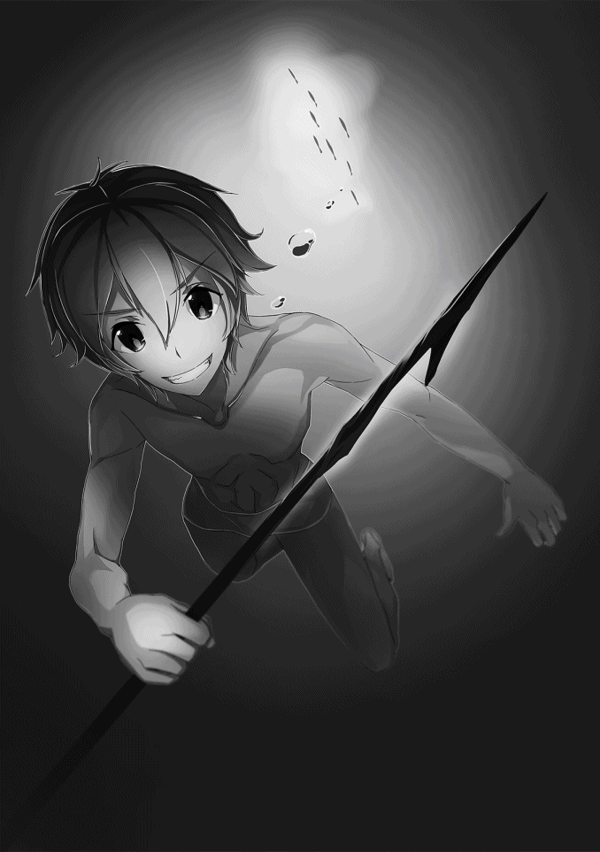
俺は一旦浮上し、海底のイセエビの群れを漁にてこずっている兵士に任せることにした。捕獲したイセエビを一匹かかげて叫ぶ。
「この下に大きなエビの群れがいるぞ！」
海面に顔を出していた何人かの兵士が即座に反応し、こっちに向かって泳ぎ出す。それを見届けた俺は、振り返って魚群のおおよその位置を海面から確認する。水の中では正確な距離感が掴めないような気がしたからだ。
魚群は磯のようにゴツゴツした岩が陸地から跳びだしている先にいるようだ。それだけ確認した俺は、一旦海岸沿いに磯に近づき、大きく息を吸い込んで斜めに潜りながら魚群の下方へと移動した。
これが地上なら気配を殺して息をひそめるところだが、どのみち海中なので空気を吸い込むことはできない。だから俺は心の中で息をひそめ、肺に溜 まった空気の浮力に任せてジワリと浮上していく。
右手に握りしめたモリの長さは二メートル強。腕の長さを考えれば射程は三メートルほどだ。
どうやら魚群は塩の潮流が交わるところに集まった小エビを捕食しているらしく、俺が目測で三メートルくらい下につけても逃げ出そうとしない。潮の乱れに体が流されそうになるが、体の周りに張り巡らせた〝気〟を操ってその場に根性でとどまった。その間に群れの一匹に狙いをつけることも忘れない。そして迷わずに肩を伸ばしてモリを突き上げた。
──グッ！
モリの先端は見事に標的の白い腹を捕えた。魚は暴れるように突進しようとしたが、俺の腕力に逆らえるはずもなく、群れから下方に引き離される。少しだけ海中に血が舞うが、素早く引き寄せた魚はすでに俺の顔の位置にあった。
五十センチオーバーの大物である。獲れた魚は体高 があり、木の葉のような形をしていて濃いグレーのうろこに覆われている。たぶんメジナだろう。
まだ端のほうにイセエビが結び付けられているロープを、捕えた魚の口からエラへと通す。そして再びモリを構えて上を見た。
──よし、まだ散っていない。
もくろみ通りだった。できるだけ気づかれないように深い位置から群れの底を泳いでいる魚を狙い、モリで刺したら暴れられる前に素早く引き寄せる。そうすれば群れが散ることはないはずだ。その考えが見事にハマった。あとは息が続くかぎりくり返すだけだ。
結局、五匹を仕留めたところで息が続かなくなり、群れを避けるようにして海面に顔を出した。刺身で考えるならこれだけあれば十分だとも思ったが、塩焼も食いたい。そう考えてもう一度俺は海に潜ったのだった。
「遥、一花ちゃん！」
海から上がって調理とテントの準備をしていた遥たちに駆け寄った俺は、得意満面の顔で漁の成果を彼女らに見せつけた。
「スゴイ！ さすが空様」
「ホント、空は美味しい食べ物がかかると凄いんだから」
「ほう、これはまた見事なエビですな。魚も食べ甲斐 がありそうだ」
「ほほほほ、これで久しぶりの刺身にありつけるのう」
結局、俺の成果はイセエビが五匹とメジナが十二匹。これだけあれば今日の夕げは豪華な海の幸を存分に味わえる。それに、仲間たちからの喝さいを受けてサイコウに気分がいい。まだ陽は高いが、さっそく調理に取りかかることにしよう。そう思って魚をロープから外していると。
「調理はワタクシたちにお任せ下さい」
そう言って三人の女性兵士が俺のところにやってきた。もちろんいつも調理を担当している兵士のほうが俺より適任のはずだ。が、しかし、俺が海に入りたがったのは新鮮な刺身が喰いたかったからだ。獲物すべてを煮物や焼き物にされたらたまったもんじゃない。
「魚の刺身が食べたいんだけど大丈夫？」
俺が心配そうにそう告げると。中年というにはまだ早い。そう思える一人の女性兵士が柔らかな、まるで聖母のような笑みを浮かべた。
「もちろん大丈夫ですよ。実はわたし、和国にいたころに食堂の娘として育ったんです。調理の手伝いもしていましたから。刺身も大丈夫ですよ。空様」
「へぇー、それは心強いな。じゃぁ調理は任せるから美味い刺身を頼むよ」
「お任せ下さい空様。薬味になりそうな食材もありますから美味しい刺身を期待してくださいね」
そんなやり取りをしている内に、海に入っていた兵士たちも続々と上陸してきた。得意そうにしている彼らの持つロープには、イセエビや大きなサザエがくくりつけられている。
新鮮な刺身に塩焼、殻 ごと焼いたイセエビ、サザエのつぼ焼き。この時代に来て初めて味わう新鮮な海の幸。しかも極上この上ないラインナップに、思わずニヤけてしまう。
「嬉しそうだね」
「ん、ああ遥か。そりゃぁ嬉しいよ。これは俺にとってスゴク懐かしい味なんだ」
「そう、よかったわね。はいコレ、はやく体拭いた方が良いよ」
「ああ、ありがとう」
遥に渡された手ぬぐいで頭と全身を拭いたわけだが、乾いた手拭いだけでは体のべとつき感が取れなかった。髪の毛なんてベタベタのゴワゴワで気持ち悪い。
「ダメみたい。ベタベタが取れないよ」
髪をつまんでおどけて見せたら、遥はすこし考え込んだ。
「ちょっと待ってて」
少し失敗したような表情で、遥はそう言って走っていった。そして、間を置かずに戻ってくる。その手には樽 が持たれていた。
「これで手ぬぐいを濡らせばいいんじゃない？」
遥が持ってきたものは真水が入った樽だった。川を渡ったばかりなので真水にはまだ余裕がある。
「ありがとう。大事に使わせてもらうよ」
余裕があると言っても、無駄遣いすることはできない。俺は樽から柄杓 で水を掬 い上げ手ぬぐいを濡らした。そして入念に体を拭いていく。もちろん髪の毛も濡らした手ぬぐいで念入りに拭いた。
「ふぅ、だいぶスッキリできたよ。ありがとう遥」
「どういたしまして」
体のベトつきもなくなったことだし、調理も女性兵士たちに任せたことだし、どうしようか？ なんてことを考えていたら、一花ちゃんと藤崎さんがテントの陰でなにやら覗き込むようにして深刻な顔をしていた。三浦の爺さんは涎 を垂らして調理を眺めている。
「どうしたの、一花ちゃん」
困り顔で俺を見上げた一花ちゃんは、広げていた地図を指さす。
「予定ではこのルートを目指すのですよね？」
「そうだけど、なにか問題が？」
「ええ」
そう言って一花ちゃんが指さした先は地図ではなく、北の方角だった。指された先を見渡して彼女が何を言いたいのかを即座に理解した。
琵琶湖をかすめて福井を通り、石川を目指す予定だったが、今は海となった元琵琶湖の海岸線を北上することはどうしてもできそうにない。
「確かに、これじゃぁ通れないな」
一花ちゃんの指さす先。
そこには切り立った崖が海岸線をつくり、その東は高い山々が連なっていたのだ。この山はとてもじゃないが全員を連れては越えられそうにない。俺は広げられた地図を見ながら思案する。
〝気〟力の高いメンバーを選抜して山を越えるか。それとも北東に迂回して直接石川を目指すか。他にいい案は......。
「うーん、とりあえずここをめざしてみないか？」
俺は地図の一点を指さしてそう提案してみた。地図と現在の地形を見比べた感じでは、福井辺りが隆起してその東の方が少し沈んでいるように思えた。俺が指さした先は、かつての大野市にあたる盆地だ。
「全体的に隆起 しているとすればこの盆地から福井に入れるだろ？」
「確かに空様のおっしゃるとおりですね。藤崎、少し遠回りになりますがこのルートに変更しましょう」
「そうするのが賢明なようですな」
一花ちゃんがなぞって見せた大野市までのルートに、藤崎さんはゆっくりと頷いたのだった。
そしてようやく陽がかげりはじめてきたころ、夕げの準備ができたと声がかかった。辺りには魚やエビが焼ける香ばしい匂いが漂っている。その匂いを嗅いだだけで少し落ち込んでいた気分は一気に吹き飛んでしまった。
「うわぁ、お刺身がこんなに美味しいなんて。わずかな甘みがあって歯ごたえも最高だわ。それにこの大きなエビもこの巻貝も想像を絶する美味よ」
興奮気味にまくしたてる遥を横目に、俺は久しぶりの刺身に舌鼓 をうつ。しっかりとした歯ごたえの後にやってくるほんのりとした甘みが堪らない。イセエビの焼き物もサザエのつぼ焼きもサイコウだった。
一花ちゃんや藤崎さん、三浦の爺さんや兵士たちも夢中になって海の幸を味わっている。これだけ海の幸が喜ばれるならここに小さな漁村をつくるのもいいかもしれない。帰ったら陽一さんに相談してみようと、俺は心のメモ帳に書き込んでおいた。
「な、俺の言ったとおりだろ。新鮮な海の幸は美味いんだ」
少し得意顔でそう言った俺に、一花ちゃんは満面の笑みで頷いたのだった。
「ええ、こんなに美味しい料理ははじめてです。空様がこだわった理由が分かりました」
海の幸を十分に堪能した翌日、俺たちは海から離れて一路北東へと森に分け入った。俺たちのすぐ左、すなわち西側には山々が連なっている。ようするに、今俺たちは森の中を山すそに沿うように北東に移動しているのだ。
ただし、進路が山裾に近づくと、足場が急激に悪くなってきた。あまり遠回りするのも移動距離が伸びるので思案のしどころだ。
「少し予定より時間がかかりそうですな」
もうそろそろ野営場所を決めなければ、という時間帯になって、俺の横を歩く藤崎さんが不意に話しかけてきた。ゴツゴツした岩に苔 がむし、うねった根が足元の自由を制限している。
「はい。これだけ歩きにくいと目的の盆地まで三、四日かかりそうですね。ところで、宝玉はどれくらい必要なんですか？」
目的地への到着が遅れると採掘の時間が削られるのは当然の理だ。運よく、到着してすぐに鉱脈が見つかればいいが、そうでなければ厳しい冬山の行軍を余儀なくされる。今は少しでも時間が惜しいのだ。そんなことを言うくらいなら海の幸にこだわっている場合ではなかったか......。
なんてこと考えたくなるが、男には引けない戦いがある。俺が何と戦っていたのかは言うつもりもないが、とにかくそういうことだ。
「そうですなぁ、最低でも二百人分でしょうか。欲をいえば四百人分手に入ると楽になるのですが」
「最低二百人分ですか......」
宝玉にどれくらいの質が求められるのか俺には分からない。くず石まで含めていいならそれほど時間はかからないだろうが、そんな都合がいいことはないだろう。ならばできるだけ急ぎたいところだが、足場と視界の悪さが、行軍が容易ではないことを物語っていた。
最悪帰りが冬になることを覚悟して、その方策を模索した方が現実的か？ などなど考えながら、しかし急げるだけ急いで森の中で歩みを進めたのだった。
福井への道が抜けていることを期待し、盆地を目指して森の中の行軍を開始して三日目の昼前、斥候を務めていた兵士が息を切らして戻ってきた。
「報告します。これより二キロほど先に森が開けた場所があり、その奥に山間の谷を発見しました。目的の盆地に続いていると思われますが、どうやらその谷の奥は〝妖気〟溜まりのようで、複数の妖魔が徘徊 しておりました」
「種別とカテゴリー、数は？」
斥候の報告を受けた藤崎さんは、明らかに苛立 たしげにそう問いかけた。当然だろう、ようやく歩きにくい森を抜けられると分かったばかりだったのだから。
「カテゴリー二から三の山犬が確認できただけで十三体であります」
「ふむ、その程度の妖魔だけならば問題はなかろうが、そんなことはないだろうな」
「おそらく。〝妖気〟の溜まり具合からして、谷の奥は妖魔の巣だと思われます」
「だろうな。とすればカテゴリー五クラスがいる可能性がある。はて、どうすべきか......」
そう言って考え込んだ藤崎さんの顔は、悩んでいるというよりは苦虫を噛 みつぶしたような渋い感じだった。その様子を静観していた一花ちゃんが、意を決したように口を開く。
「カテゴリー五の妖魔ならばわたしと空様でなんとかできるでしょう。カテゴリー四クラスならば藤崎と先生、それ以下の小物なら遥さんと小隊長ならば問題ないでしょう」
「なりません一花様。次期国主たる一花様がそのように軽々しく危険な立ち回りをなさりたいなどと」
藤崎さんにたしなめられた一花ちゃんは、憤慨するように、そして苛立たしげに声を荒げる。
「まさか藤崎、空様おひとりにカテゴリー五の妖魔を押し付けろと言うのですか？」
一花ちゃんの剣幕に押されるように目を見開いた藤崎さんだったが、その顔からは今までの険しさが無くなり、いつもの冷静さが戻っていた。
「そうは申しておりません」
「ではどうせよと言うのですか藤崎」
一花ちゃんは困り果てたようにそう言った。
「戦うばかりが本筋ではございません。それに、カテゴリー五が一体だけとは限りませんぞ」
「......分かりました、不要な戦いはできるかぎり回避いたしましょう。しかし、いざとなれば私も前に出ますよ」
一花ちゃんの表情から察するに、まだ納得はできていないようだったが、彼女の立場がそれを許さないのは仕方がないことなのだろう。そう思って俺は一花ちゃんをフォローしておくことにした。
「じゃぁ、もしカテゴリー五が襲ってきたら俺が前に出ます。一花ちゃんは俺のフォローと全体の指揮を」
「分かりました」
俺の提案に、一花ちゃんはニコリと微笑んでくれた。
「カテゴリー五が二体以上か、カテゴリー四が対処できないほどいれば撤退ということで先に進みましょう。それでいいですよね、藤崎さん」
そしてようやく、藤崎さんの顔が柔らかいものへと変わった。
「仕方ありませんな、それでまいりましょう。カテゴリー三以下の小物は小隊の面子だけでどうとでもなるでしょうし、引き際を誤る者もおらんでしょう」
ようやく方針が決まり、俺たちは妖魔が徘徊する谷へと向かう。報告にあった通り、森が切れた先は広く開けており、犬型の妖魔が何匹も徘徊していた。その先には両側を切り立った崖に挟まれたかなり幅の広い谷が見える。
徘徊している妖魔は、谷から漂う薄い〝妖気〟の範囲からは出ようとしないようだ。かなり薄い〝妖気〟だが、それよりもはるかに薄い〝気〟のレーダーを展開している俺にはそれが分かった。
森の木々に身を隠し、息をひそめて飛びだすタイミングを涼子さんがはかっている。藤崎さんが言っていた通り、小物の相手は彼女の小隊の仕事だ。しかし小物とはいっても、相手はカテゴリー二から三に分類される妖魔だ。
一般的な兵士や、それに匹敵する戦闘力がある発掘師からすれば、命をかけて戦わねばならない脅威 となる存在である。それでも、今回の遠征に選抜されている遊撃小隊の実力は、抜きん出たものがあるらしい。彼、彼女らを見守っている一花ちゃんや藤崎さんの、信頼しきった視線がそれを物語っていた。
そんなことを考えていると、草陰から様子を見ていた涼子さんの体が不意に沈みこんだ。次の瞬間、爆発的な勢いで、しかし音を発することもなく、涼子さんが弾丸のような速度で一番手前にいた山犬へと迫る。
そして圧倒的な速度で振り下ろされた刀は、見事に山犬の首へと吸い込まれ、音を立てることもなくその首を切り落としていた。他の山犬はその事実にすら気づいていないようだ。
涼子さんに呼応するように、小隊の面々もそれぞれが目標としていた山犬へと突っ込んでいく。さすがに、涼子さんのような一刀両断とまでは至らなかったが、それぞれに不意打ちには成功したようで、ほとんどの者が致命的なダメージを山犬へと与えていたのだった。
その後の連携も見事なもので、わずかに遅れて飛び出した残りの兵士は、まだダメージが浅い山犬を瞬時に見分け、まるで示し合わせていたかのように各々 が動いていた。その様子を満足そうに見渡した涼子さんは、すべての山犬が倒されたのを確認して、まだ森の中にいた俺たちの方へと歩いて来た。
「露払 い完了でありマス」
「見事な戦いだった。ご苦労」
と、満足そうに涼子さんをねぎらった藤崎さんは、俺たちの方に振り返った。
「それでは参りましょう」
藤崎さんのその一言で、すでに集結して整列していた小隊が二手に別れ、俺たちを守るように前衛と後衛について谷の中へと足を進めた。
谷に入ると、幅三十メートルほどの比較的平らな谷底の両側には、きり立った岩肌の崖が高く続いており、谷底には獣道というか妖魔の通る道ができ上がっていた。かなり歩きやすいし、曲がりくねってはいないので前方の視界もよい。
その道を歩き続けること一時間、ようやく前方が開けると、そこには岩がゴツゴツと飛び出した荒野が広がっていた。遠くには囲むように山が見えており、山に囲まれたその一面には草木がほとんど生えておらず、ぽつぽつと動き回るおそらくは妖魔だろうモノが視認できる。そして、いたるところから〝妖気〟が漏れ出しているのが俺には分かった。
「なるほど確かに妖魔の巣だ。これでは生物は生きていけないな」
自然に口をついた言葉だったが、他の者たちも俺同様初めて見る景色に圧倒されているようで、俺の独り言に反応はなかった。しかしそのとき、先頭を歩いていた涼子さんが振り返った。
「あちらから抜けられると思われマス。ここは一気に駆け抜けて出口を目指した方が安全だと思われマスが」
確かに彼女の言うとおり、出口らしき山の谷間が奥の方に見える。この盆地を徘徊している妖魔はまばらだし、近寄ってきた敵をいちいち相手にするよりは駆け抜けたほうが無難だろう。そんなことを考えていると。
「確かに中尉の進言は尤も。どう思われますか？」
藤崎さんが一花ちゃんにそう問いかけていた。
「無駄な戦いは避けた方が無難なのは確かです。その案で行きましょう。ただ......」
この盆地を駆け抜けることを了承した一花ちゃんだったが、三浦の爺さんに視線を投げかけて困ったように考え込んでしまった。
「師匠は俺がおぶって走りましょうか？」
一花ちゃんが何を考えているのかすぐに察しはついたので提案してみたのだが、三浦の爺さんはそれが気に入らなかったようだ。
「そこまで落ちぶれてはおらん！ これくらいの距離、貴様らの足について行くことなぞ容易いことだ」
プンプンと怒りの蒸気を上げるほどではなかったが、その憤慨した様子は、気まずくなってしまった場を和ませるに十分だった。
「分かりました。でも先生、あまり無理をしないでくださいませ。もし辛くなりましたら何時でも言ってくださいね」
一花ちゃんはそう言っているが、男が一度意地を張ったのだ。もしキツくなったとしても弱音を吐くことなどないだろう。これは注意して爺さんの様子を見ておかなければと、俺は心のメモ帳に書き込んだのだった。
涼子さんを先頭に、小隊の半分が扇状に距離を取って展開し、その後を俺たちが走りだした。後方に布陣していた残りの兵士たちは二手に別れた俺たちの横を走っている。
彼、彼女らは、実際には俺たちを守ると言うより露払いが仕事なのだが、その役割を実によく心得ているらしく、ときおり襲い来る犬型やイノシシ型の妖魔と本気で戦うようなことはせず、走る速度を殺すことなく切りつけて払いのけることに専念していた。とどめを刺そうと足を止める者など一人もいない。
そんな感じで大地に飛びだした大岩を縫 うように盆地を走り抜けている最中、何度かカテゴリー四相当の虫型の妖魔や、見たこともないような巨大な犬型の妖魔が襲ってきた。
しかしそんなときは、藤崎さんが飛び出しては一刀のもとに切り伏せ、小隊の兵士たちとは次元の違う戦闘力を見せつけていた。結局、盆地を走り抜ける間、俺や一花ちゃん、遥に三浦の爺さんが刀を振るうことは一度も無かったのである。
◇◇◇◇
福井の国の東。
谷から湧き出てくる妖魔を防ぎとめている部隊に合流した善之助は、疲れ切った兵士たちを鼓舞 するように自慢の長槍を振るっていた。彼が戦線に合流して既に四日目になっている。
「クソッ、キリがない」
カテゴリー三相当の山犬を切り伏せた善之助は、そう呟きながらも明らかに苛立っていた。谷から湧き出てくる妖魔は、カテゴリー二から四が十体前後の群れを成しているのだが、定期的に襲ってくるわけでもなく、かといって大群で押し寄せてくることもない。
だからといって放置できるレベルではなかった。報告によれば襲撃は一日に二度から四度ほどで、数日に一体程度レベル四が出現するので、前線の兵士たちに気が休まる暇はない。現に、善之助は参戦してから二度ほどカテゴリー四相当の妖魔を倒している。
カテゴリー四相当の妖魔は、基本的には百人程度の多数の兵で取り囲んで討伐する必要があり、怪我をしたり時には命を落とす兵も必ず出てくる。前線には三百程度の兵が配置されてはいるが、どの兵も一週間に一度はカテゴリー四相当の妖魔と相対していることになる。
それ以外にもカテゴリー三以下の妖魔を討伐する必要があるため、いくら善之助とその側近が加勢したとはいっても、兵たちの心労と疲労はすでに極限にまで達していた。
もしカテゴリー四以上の妖魔を通してしまうと、平民たちにそれを防ぐ術はない。妖魔が谷から出てこなくなるまで、兵たちに安らぎは訪れないのだ。
「この状況が続くのであれば、怪我をした兵や疲労度の高い兵を都の守備隊と入れ替えてはいかがでしょうか」
懐刀の木原にそう進言された善之助は、苛立ちを抑えながらもその考えが正しいことを理解していた。しかし、そうすればもし万が一妖魔を抜けさせてしまった場合、都の守りが手薄になることは明らかだった。
元来、前線で妖魔を食い止めている兵たちは力の強い者たちから選ばれている。つまり、都の守りについている兵たちは熟練度も戦闘力もどちらかと言えば低い者たちなのだ。しかし、疲弊した兵より戦えるのは当然の理だった。
「よし木原、怪我をした者、疲労が色濃い者から五十名を選んでおけ。都には強い者から百名を連れてくるように伝令を出せ」
「はっ」
木原が兵たちの詰めているテントに走り、その後都への早馬が走り去った。善之助はその早馬を見届けたのち、妖魔の血にまみれた体を拭おうとテントへ向けて歩き出した。
そんな時だった。ひとりの兵士が善之助のもとへ青ざめた顔で走り寄ってきた。物見やぐらに上がっていた見張りの兵だ。
「ほ、報告申し上げます！」
「話せ」
「主の出現を確認いたしました！」
「なっ、主が出ただと......」
このとき善之助は、この上ない絶望感と共に、あまりに慈悲 のない天の采配にこれまでにない焦燥 と怒りを覚えたのだった。
福井の国の東の谷から湧き出る妖魔に対応していた国主である善之助は、魔の物の主、すなわちカテゴリー五相当の妖魔の出現に事態の深刻さを痛感していた。
主の出現は、全軍の撤退を意味する。どれほど力が強かろうが、どれほどの武を誇 ろうが、どれだけの名刀を携えていようが、主の前では何の役にも立たない。それが彼らの常識だった。
しかし、国主たる善之助には守らなければならない者たちがいる。田畑がある。都がある。国がある。今、善之助が取れる唯一の手段。それは力、すなわち〝気〟が最も強い自分が主をひきつけ、都から遠ざけることだ。それは、自らが囮 となって妖魔の巣窟 である東の谷に単身飛び込むことに他ならない。
これが何を意味するか？ 十中八九生きては帰れない死地へと飛び込むということを、もちろん善之助は理解していた。
重鎮 たちには逃げればよいと軽口をたたいたが、それはこの地へと赴 くための方便。主が出張ってくる確率は低い。現に、今まで源之助はこの地に三度ほど来たことがあるが、主が出たことは一度しか無かった。
それよりも、国の守りのため戦い続け、疲弊しきった兵たちに報いるために必要なことだと確固たる思いで出向いて来たのだ。
案の定兵たちは限界を迎えていた。自分が出向かなければ確実に戦線は崩壊し、妖魔の流入を許していたことは間違いないだろう。前線に駆けつけたことで、たとえ祖父と同じように命を散らすことになろうと、背に腹は代えられなかった。
かつて善之助がまだ駆け出しだったころ、彼の祖父も主の出現にその身を犠牲にして国を守った。善之助亡き後、国を任せられる力ある跡継ぎも育った。まだ若い女の身であるが、武の資質は善之助をしのぐほどだ。
孫の顔をまだ見ていないことが心残りだが、今は主の侵入を何としても防がねばならない。そう善之助が思いを固めていると、木原が必死の形相で駆け寄ってきた。
「陛下っ！」
主の出現で善之助が取るであろう行動を、木原はすでに確信していた。そして国のために、その行動を止めてはならないことを理解していた。自分が囮になりたいのはやまやまだが、己 が力では主を引きつけることさえできない。
自分がいくら攻撃を仕掛けようと、主が圧倒的に力すなわち〝気〟力が上の善之助に向かっていくことは明らかだからだ。
「木原、其方は見張りを残し、残り全ての兵をまとめて即時撤退、都の守りを固めよ」
木原が覚悟していた通りの命令が、善之助によって下された。しかし、この命令だけは受け入れられなかった。
兵をまとめて撤退してしまえば、たとえ主を谷の奥に誘導できたとしても、他の妖魔が国内に流入してしまう可能性が高い。が、木原が納得できなかったことはそんなことではない。木原は善之助の前に跪 き首を垂れる。
「陛下、最後までお供をする我がままをお許しください」
「ならぬ！」
「どうか、どうか最後のそのときまで陛下のおそばに」
善之助は木原の前まで一歩あゆみ寄ると、片膝を落として彼の両肩を掴んだ。
「ならぬ木原よ。分かってくれ、其方には我亡き後の国を、寧々を盛り立ててもらわねばならぬ」
「し、しかし......」
「我が意をくんで後を任せられるのは其方しかおらぬのだ」
がっしりと掴まれた両肩にかかる力と温もりに乗せて、善之助の想いと覚悟が伝わってくるように木原には感じられた。痛いほどに分かるその想いと覚悟に、木原は自分の我がままを押しとおせないと観念した。
「ならば陛下、せめて、せめてお姿が見えなくなるまで見届けさせてくださりませ」
「解かった。ただし、兵は今すぐに撤退させよ」
「はっ」
名残惜しむように駆け出した木原を見送った善之助は、ハチの巣を突いたような混乱を見せる兵たちに背を向け、ひとり戦場へと歩き出した。戦場にたどり着くと、長槍の柄をぐさりと大地に突き刺し、厳しい視線を谷へと固定したのだった。
しばしの時間、善之助には兵たちがあげる喧騒が後背から聞こえていたが、やがてそれもなくなり、戦場につかのまの静寂が訪れた。善之助が谷に飛び込まず、この戦場で主を待ち受けることには理由があった。
狭い──とはいっても幅五十メートルはある──谷に入ってしまうと、主と遭遇した時に攻撃を躱せない可能性が残る。
善之助が知っているかつての、祖父を亡き者にした主の全長は三十メートルを超えるものだ。谷ですれ違えば確実に主の間合いに飛び込んでしまうことになる。
主の攻撃は、掠っただけでも致命傷になりかねない強烈なものだ。善之助の使命は主を確実に谷の奥底に誘導すること。そのためには、自分を餌に一度主を谷から戦場である平原へと誘い出し、間合いを避けて谷の中へと走り抜けなければならない。
谷の中では主の間合いから距離を置き、しかし離れすぎることなく誘導を続けなければならない。主が善之助を見失い、再び谷を出てしまっては元も子もないからだ。
さらに、上手く主を谷の奥へと誘導できたとしても、そこは魔の物すなわち妖魔の巣窟だ。主ほどの強敵は残っていないにしても、善之助ですら一体に苦戦する敵がゴロゴロうろついていることは想像に難くない。
妖魔は敵を認識すると果てるまで確実に襲い掛かってくる。したがってそれらの敵を確実に葬 り去りつつ、主との距離を保ち、谷の奥底へと誘導しなければならないのだ。
もしそれらに成功し、谷の奥底で主に自分を見失わせることができれば生還の可能性はあるだろうが、それを期待するほど善之助は愚かではなかった。この戦いで自分は確実に命を散らすことになるだろう。
だからこそ失敗するわけにはいかない。都を発つと決めたときからこうなる覚悟はすでにできていた。国主が前線に赴くということは、主をおびき出してしまうリスクを背負うことになるからだ。しかしそのリスクを冒してまで前線に赴かねばならない状況に既に陥っていた。
善之助は抗うことができない天の采配に悪態をつきつつ、しかし心を落ち着かせて主が姿を現すのを待った。そしてそれほど待つことなく、谷の出口に巨大でおぞましい姿をした主が姿を現したのだった。
◇◇◇◇
善之助が覚悟を決めてひとり戦場へと歩き出したころ、都で留守を守る彼の娘寧々は、駈け込んで来た伝令の兵士によって凶報を知らされていた。
「──北の前線が抜かれました」
伝令によってもたらされたこの凶報は、東の戦線に出ねばならなくなった父善之助の無事を、居ても立っても居られない状態で心待ちにしていた寧々の心を打ち砕きそうになった。
しかし、都を預かる今の自分は、いわば民や兵士そして臣下たちの屋台骨も同義。取り乱し、苛立ちをぶちまけることができる立場にはなかった。寧々は今にも城を飛び出したい気持ちを必死に抑え、しかしつとめて冷静さを装った。
「状況を詳しく報告なさい」
「はっ、北の前線を抜けた魔の物は十体、うち三体が黒き大熊にございます。現在、都の守備隊が北門前に陣を敷いて防いでおります」
「北の主が現れたのではないのですね」
「はっ、しかしこのままではいずれ北門も抜かれるかと」
北の主が出てきたのではないことが分かり、寧々は少しだけ安堵 のため息をついた。
「高木、私の刀を。私が出ます」
国主である善之助が城を留守にしている今、その代行である寧々は最悪の事態を見据えていつでも出撃できる準備を整えていた。平時ならば、腰まである艶 やかな自慢の黒髪を結い上げることなどしない寧々だったが、今はその髪を結い上げ、動きやすい軽甲冑 を身につけている。
寧々はまだ十六歳になったばかりの若輩 ではあるが、生まれ持った資質は善之助をも超え、すでに父に次ぐ国内二位の戦闘能力を身につけていた。それを知る彼女の腹心である高木は、迷うことなく、そしてうやうやしく彼女の長刀を差し出したのだった。
◇◇◇◇
善之助はようやく姿を現した主の全容を見て、その巨大さと妖異さに圧倒されそうになった。
かつて祖父が相手にしたときより二まわりは大きく成長し、全長で四十メートルはあろうかという長く太い巨体をうねらせ、幾十もある体の節からはそれぞれ足が飛び出している。
主の正体はどうみても超巨大なムカデだった。巨大ムカデは全身から紫がかった〝妖気〟をたれ流し、ぬめるような輝きを放つ黒い巨体の前部を浮かせ、鮮血のように赤い頭部を持ち上げて何かを探している。
その頭部が善之助の方向を向いたところでピタリと止まり、巨大な前顎をガチガチと鳴らしはじめた。ゴクリとツバを飲みこんだ善之助は、少しづつ後ずさりながら、しかしその視線は固定したまま、巨大ムカデを谷から遠ざけようと試みた。
巨大ムカデの全長と歩行速度と自分の足を考えれば、少なくとも三百メートル。確実に回り込むためには五百メートルは谷の入り口からおびき出したい。そう考えて後ずさる善之助を追うように、巨大ムカデは上体を下してうねるようにしながら器用に足を動かして谷から出てきた。
巨大ムカデと善之助との距離は二百メートル強。完全に善之助を標的に定めた巨大ムカデがその速度を上げる。善之助はそれに合わせるように後ずさりを止め、進行方向を向いて逃げるように走りだした。
少し走っては振り返り、巨大ムカデとの距離を確認する。そして三百メートルは走っただろうかという頃だった。後ろを振り返った善之助は、巨大ムカデの動きに違和感を覚えた。
理由は分からないが、巨大ムカデは突如として善之助を追うのを止めるようにその足を緩めたのだ。巨大ムカデは善之助を追うことを止めて完全に停止すると、彼などまるで眼中にないかのように体をくねらせて後ろに振り返った。
なにが起ころうとしているのか分からなかった善之助だったが、巨大ムカデのはるか向うに見えた信じられない光景に立ち尽くすことになる。
「何なのだアレは......」
善之助が見たもの。それは谷の入り口から走り出てきた人影だった。彼の視界には右手に長刀を持って走ってくる男と、それを追うように走る、同じく右手に刀を持った女。そのさらに後方から数十名の見たこともない兵装をした集団が現れたのである。
妖魔の巣窟である東の谷から人が出てきた。それだけでも信じ難いことなのだが、善之助はさらなる事実に驚嘆 を禁じ得なかった。それは巨大ムカデが自分を追うのを止めて標的を切り替えたということだ。
標的を定めて追いはじめた妖魔は、よほどのことが無いかぎりその標的を変えることがない。それなのに巨大ムカデは善之助を標的から外し、谷の方へ振り返った。
それが何を意味するのか？ 答えは簡単だ。谷から走り出てきたあの男が、善之助よりはるかに強いということ。
善之助が考えたこと。すなわち標的を変えたことを裏付けるかのように、巨大ムカデは駆けてきた男に向かってその巨大な頭部を振り上げた。
その刹那、男は驚愕の跳躍を見せる。優に地上二十メートルはあろうかという巨大ムカデの頭部よりはるか上空。男が跳びあがった高さは優に五十メートルは越えていたのだ。どう考えても人間業ではない。
善之助にしても福井の国一の強者だ。助走をつけて全力で跳びあがれば、地上十メートルくらいは跳躍できる。それなのにあの男が跳躍した高さはそれをはるかに上回っていた。
いや、一旦標的を定めた巨大ムカデがそれを変えたことを考えると、それほどまでに常識外れの強者でなければ説明がつかない。
善之助がそんなことを考えているうちに、男は上空を蹴るようにして落下、というよりは落下では考えられない速度で巨大ムカデに迫り、刀を下方に突き刺した。
そしてあろうことか、巨大ムカデの頭部にその刀を深々と突き刺したのである。その瞬間、巨大ムカデの頭部がバチバチと青白い閃光に包まれた。気がつけば、男は巨大ムカデの頭部から刀を抜き去り、すでに地上へと着地していたのである。
そんな信じがたい光景を目 の当たりにした善之助は、ただただ立ち尽くすことしかできなかった。
◇◇◇◇
妖魔の巣窟だった盆地を駆け抜け、大きくへの字に曲がったかなり長い川沿いの谷間をしばらく走ったあと、広範囲に常時展開している〝気〟のレーダーに禍々しい反応が引っかかった。
このぞっとするような二度と思い出したくない反応には覚えがある。豊田鉱山でヒドイ目にあわされたあのグロテスクなカマ野郎だ。雰囲気は少し違うが、感じる〝妖気〟の濃密さと禍々しさからして、間違いなくカテゴリー五だろう。その反応は、ゆっくりとではあるが何かを追うように移動している。〝気〟の性質から見て人だ。
「一花ちゃん、たぶんカテゴリー五の妖魔が人を追ってる。この谷間を抜けた先だ......見えた！」
谷間の出口まではそれほど距離がなく先が開けていて、その出口あたりにいる巨大な妖魔が目に入ってきた。しかもどんな妖魔なのかまで一目瞭然で、超巨大なムカデがうねうねと動いていた。並走している一花ちゃんも視認したようで、表情を引き締めた。
「助けるべきだよな」
「当然でしょう」
間髪入れずに迫ってきた一花ちゃんの答えは、微塵 も迷いを感じさせないものだった。引き締まった表情からも分かるが、一花ちゃんはすでにやる気満々の戦闘モードだ。しかし、危険な仕事を一花ちゃんに任せるわけにはいかない。
打ち合わせ通り俺が奴を仕留めるか、奴の気を引きながら戦うべきだろう。幸い、今の俺にはこの刀があるし、敵の動きもトロそうだ。決して油断はしないが、あのにっくきカマ野郎と比べれば、ムカデごときノロマ野郎は俺の敵ではない。
実はムカデの足は速い。なんてヤボことを言ってはいけない。あの巨体で機敏 に動けるはずがないのだ。間違いなく、ただただ巨大で、おそらく固いだけの気持ち悪いグロテスク野郎に俺が負けるはずがない。
「俺が一発かまして注意を引きつける。一花ちゃんはフォローに徹してくれ」
一花ちゃんを伺うことなく、そう言って俺は走る速度を上げた。いちいち彼女の了解を取っている暇がなかったからだ。
あっというまにムカデ野郎との距離を詰めた俺は、渾身 のハイジャンプで天高く跳ね上がる。ちょっと気合を入れすぎて高く上がりすぎたが、奴の頭に狙いをつけて一花ちゃんから教えてもらった空を蹴る技で方向を調整し、思い切り加速をつけて渾身の一撃をお見舞いしてやった。
俺の刀はいとも簡単に奴の頭にグサリと突き刺さる。さすがに一撃では倒せないと考え、刀を抜いて一旦地上に飛び降りた。相当効いたのだろう、奴は体全体を使って頭を振っている。しかし予想通りその動きは緩慢だった。
ムカデ野郎は、今の一撃で完全に俺を標的に定めたらしい。体全体を使って巨大な頭部を叩きつけるように、自慢の大顎で噛みつきにきた。俺はそれをいなすようにして切りつけ、そして飛び退る。当然ツルハシと違って確実にダメージを与えることができた。
三浦の爺さんから教えてもらっている〝気〟の使い方はまだあまり上手くできないが、毎晩遥と共に一花ちゃんをお手本にして繰り返してきた素振りの効果は出ているようだ。
その後もムカデ野郎は俺をかみ殺そうと必死になって襲い掛かってくるが、そのことごとくにカウンターを当てていった。
その間に一花ちゃんが驚きの動きを見せる。完全に頭に血がのぼって俺しか見えていないムカデ野郎の後背を驚きの速さで動き回り、何十本もある足をスパスパと、それはもう小枝を切り払うかのごとくあっさりバッサリ切り落としていったのである。
あまりの切れ味のよさに、ムカデ野郎はそのことに気づきもしないようだった。ただ一心不乱に俺を攻撃してくる。しかし、足がなくなってしまえばミミズと変わらないわけで、いくら体をうねらせようが思うように俺を追うことができず、ただただのたうつことしかできない。
「空様、そろそろとどめをっ！」
そう一花ちゃんが叫んで離れたのを見計らい、俺は奴の頭上にさっきみたいに上がりすぎないようにジャンプし、頭に刀を突き刺しながら付け根の部分に跨ると、弾けろとばかりに超圧縮した〝気〟を流しこんだ。すると、みるみるうちに頭が膨張し、強烈な閃光とともに爆散したのだが、カマキリ野郎と戦ったときの教訓を俺はここで活かした。
体の周りに〝気〟の膜を張って飛散物を完全にシャットアウトだ。〝妖気〟にまみれた血肉を浴びて、二度とあんな気持ちの悪い思いをしたくない。そしてもくろみ通り、綺麗な体でとどめを刺すことに俺は成功していた。
「さすがだね空お兄ちゃん」
一花ちゃんが駆け寄って耳元でそう呟いてくれた。俺も少し調子に乗って返す。
「あのカマキリに比べたら大したことなかったよ。怖い攻撃もなかったし」
「それでもスゴイことだよ。こんなにあっさり倒しちゃうなんて」
「一花ちゃんのほうがスゴイよ。ほとんど全部の足をたったひとりで切り落としたんだ。俺には剣筋を見るのがやっとだったよ」
「えへへ、年季が違いますから」
一花ちゃんに褒められて俺も嬉しかったが、俺に褒められた彼女も嬉しそうに照れていた。しかし、遥や藤崎さんたちが駆け寄ってくると、一花ちゃんは視線を俺から彼らに移した。
彼女の視線の先には、さっきまでムカデ野郎に追われていた人が呆然 と立ち尽くしている。
「襲われていたのはあの方ですよね。どういたしましょうか？」
一花ちゃんの問いかけに反応したのは藤崎さんだった。
「妖魔に追われていたとはいえ、かなり位の高い武人の様子。どこの者かも分かりませんし、まずは私が話を聞いてきましょう」
富士大公国の西にあたる福井近辺は未開の地と聞かされていた。未開ということは誰も立ち寄ったことがないということだろうが、俺はてっきり人が住んでいない土地だと思っていたのだ。藤崎さんが、俺たちから離れて追われていた人に向かって一人歩き出した。
「ねえ一花ちゃん、このあたりに人が住んでるなんて聞いてないんだけど」
「わたしも知りませんでした。けれども、ここは山を隔てた未知の土地ですから人が住んでいても不思議ではありません」
言われてみれば確かにその通りだと俺は思った。よく周りを見回してみれば、向うの方にテントらしきものと簡単なつくりのかなり長いバリケードのようなものが見える。
「おそらくここは、あの谷から出てくる妖魔を食い止めるための前線が敷かれていたのではないのでしょうか」
「なるほど......でもなんで兵士がいないんだろう？ あの人鎧着てるから軍人さんだよね」
「理由はあの方にお伺いすればすぐにわかるでしょう。わたしたちと敵対する様子はないようですし」
確かに一花ちゃんの言うとおりだ。そんなことを考えていたら、藤崎さんが戻ってきた。逃げていた人の仲間だろうか、同じような鎧を着たひとが一人彼のもとへと駆けよってきた。
「一花様、報告いたします──」
藤崎さんによれば、あの人は福井の国というこの辺り一帯を治める国主さんだそうだ。一花ちゃんの予想どおり、ここは妖魔を食い止める前線で、あのムカデ野郎が出張ってきたために兵士を撤退させた直後だったらしい。
あの人は、ムカデ野郎を引きつけて兵士を逃がしていた最中だったということだ。とりあえずは俺たちに敵対するつもりはなく、ムカデ野郎を倒してくれた礼がしたいということだった。
そんなことを藤崎さんから聞いている内に、例の二人が俺たちのところへ歩いて来た。
「此度は我が国の危機を救ってくれたこと、心より礼を申す。余は福井の国が国主、大洗 善之助である」
さすがに一国の主だけあって、俺たちに恐縮しないというか、威厳がある。まぁ、俺たちも福井の国の国民じゃないので、へりくだる必要はないのだが、こんな調子で話しかけられたら思わず畏 まった喋り方になりそうだ。
「私はここより山を越えた東の国、富士大公国の第一大公女、高科 一花と申します。この地へは旅の途中で立ち寄ることになりました。ことわり無き訪来、無礼かとは存じますがご容赦 ください」
「無礼などとんでもない。余とて其方らに命を救われた身、すぐには碌 なもてなしもできぬこと許されよ。それにしても、山向うに国があったとは驚いた。さて、いろいろと話を伺いたい。狭苦しいところではあるが許されよ。木原」
「はっ」
「客人は余が案内する。その方は見張りに残しておいた兵を急ぎ早馬として伝令に出せ。退却した兵たちを引き返させよ」
「御意」
話し方は丁寧 だが、物おじしないどころか、余裕しゃくしゃくの微笑を浮かべて対応する一花ちゃんは、さすが次期国主といったところだろう。根が小市民の俺も、伯爵になったことだし彼女に見習ってせめて堂々としていようとこのとき決心した。
案内されたところは多くのテントが集まる中で、ひときわ大きい一張りだった。ただ、俺たち全員が入るのも無理があるし、相手は国主だ。
案内されたテントには俺と一花ちゃん、そして藤崎さんだけが入ることになった。テントの中は、四角い大き目の木のテーブルと、椅子 が十脚あるだけで、おそらく高官の休憩や打ち合わせ専用に使われるところだろうと察しがついた。俺たちは善之助さんに案内されたとおりにテーブルにつく。
「部下がおってはこのような姿、見せられぬのでな」
そう言った国主さんは、テーブルに両手ついて深々と頭を下げた。
「此度は誠に助かった。その方らがおらねば余は確実に死んでおったところだ。ぜひとも一度我が城でもてなしをさせてくれぬか」
「頭をお上げください善之助様。歓待の件は置いておくとして、私たちはどうしてもこの地を通らねばならなかったのです。私も大公女ではあれ武を志す身、人が襲われていればお助けするのは当然ではありませんか」
「かたじけない」
そう言ってようやく頭を上げた善之助さんは、俺に視線を固定すると言いづらそうに口を開く。
「高科大公女殿の武力にも感服いたしたが、其方......」
「俺は葵 空といいます。空と呼んでください」
「では空殿、その......富士大公国には其方ほどに武の達者な者が他にもおられるか？」
「たぶんですけど、俺と一花ちゃん以外は......あっ」
このとき、善之助さんは目を丸くして驚いていた。それを見た一花ちゃんがすかさずフォローを入れてくれた。
「空様はわたしの婚約者なのですよ。ご自由な方ですから言葉使いは大目に見てくださいませ」
どうやら俺の言葉遣いが悪かったらしい。直そうと思えば直せるが、どうにもきまりが悪いし、変な言い方になったら嫌だからこのまま押し通すことにした。言葉遣いに関してはいずれ一花ちゃんに矯正 してもらおう。
「武力に関しては、空様以外では私の両親も同程度かと、それ以外では聞き及んでおりません」
「それはまた何とも羨 ましい。我が福井の国ではご覧のとおり魔の物の対処にてこずっておる有様」
「魔の物とは私たちが妖魔と呼ぶ化け物のことかと存じますが、富士大公国でも苦慮しているところは同じでございます。旅の目的もそれを克服するためなのですから」
「なんと、それはぜひその目的とやらを知りたいものだ」
「少し、相談させてくださいませ。よろしいですか？ それで、その前に一つお聞かせください」
「なんなりと」
「不躾 ではございますが、御国は他国との国交はございますか？」
「この世には我が福井の国と其方らの富士大公国以外にも国があると」
「ええ、もちろんでございます」
「では、その話は後ほど」
「ええ、構いません。では」
さすがに、一花ちゃんも旅の目的が宝玉を大量に採掘することだとは答えられないようだ。相談するために俺たちが席を立とうとすると、善之助さんが気を利かせてテントを出てくれた。俺と一花ちゃんと藤崎さんで話し合った結果、俺たちの目的が宝玉採掘だということを伝えざるを得ないということになった。
石川に入るにはここから北上しなければならない。藤崎さんが聞いた話によると、ここは東の谷と呼ばれているらしい。そうなれば、地形的に考えてこの国の都は西のそう遠くないところにあるはずだ。
寄り道しても、おもてなしの件は一日程度だったらロスも少ないしなんとかなる。今後のことを考えれば、素通りするよりは理由を話して採掘に協力してもらったほうが得策だろうということで意見が一致した。
さらに、福井の国は今まで他国と付き合ったことがない。今後政治的折衝 をするならば、他国との付き合いがある富士大公国が有利に事を運べるはずである。現時点での多少の不利益には目をつぶっても、さほど困ったことにはならないと考えられるのだ。
そういうことで話はまとまり、藤崎さんが善之助さんを呼んできた。俺たちはここから北にある石川まで出向き、そこで宝玉を採掘したい。そう告げたのだったが、善之助さんは困った顔で俺たちを一度見渡したのである。
「北の地は魔の物の巣窟、簡単には入り込めぬぞ。ましてや力石 の採掘など......いやまて、その方らならば......」
どうやらこの国では宝玉のことを力石と呼んでいるらしい。そんなことは置いておくとして、また妖魔か......。というのが善之助さんの言葉を聞いての俺の感想だった。
妖魔戦に長けた俺たち一行ならば、妖魔の巣であろうと入り込めるだろう。が、そんな場所で採掘するのは困難を極めるだろう。
だがしかし、カテゴリー四までなら俺と一花ちゃんで簡単に蹴散らすことができる。もしカテゴリー五が出てくる可能性を考えると、俺と一花ちゃんと藤崎さん、それに涼子さんさんで調査を行い、見つけたら一旦戻って採掘係を二、三人を連れてくればいい。
俺たち四人で採掘係を守り、その間に宝玉を採掘してもらうのだ。これで行ける。と、俺の中で考えがまとまったときだった。
バサリと天幕が開けられ、一人の兵士が駈け込んで来た。どう見てもこの国の兵士だが、表情を見るに、かなりヤバげなことが起こったようだ。
「緊急であります。北の前線が抜かれました！」
のっぴきならない表情で駈け込んで来た伝令の兵士に、善之助さんはガタリと音を立てて立ち上がった。
「詳しく状況を話せ」
「はっ、北の前線を抜けた魔の物は十体、うち三体が黒き大熊にございます。現在、都の守備隊が北門前に陣を敷き、急ぎ寧々様が向かわれました」
「話は分かった。下がれ」
伝令の兵がテントを出ていくと、善之助さんがギリリと奥歯を噛みしめた。
「木原！」
善之助さんがそう叫ぶとすぐに、さっきの木原さんが入ってきた。
「直ちに出立する。馬を用意せよ」
「はっ」
木原さんが急ぎテントを出ようとすると、善之助さんがそれを呼び止めた。
「まて、退却した兵たちは戻ったか」
「騎馬隊はすでに、しかし歩兵は今しばらく」
「ならばその方はここに残れ。歩兵が戻り次第再布陣を行い、その後客人を城までお連れしろ」
「はっ」
木原さんが急ぎテントを出ると、善之助さんが奥歯を噛みしめつつも申し訳なさそうな顔で俺たちに向きなおった。
「高科大公女殿、聞いておられたであろうが余は急ぎ城に戻らねばならぬ。兵が戻り次第先の木原に案内させるゆえ、城まで参られたい」
それを聞いた一花ちゃんが一旦俺を見た。そわそわして物言いたそうな彼女が何をしたいのか俺には理解できた。俺は黙って肯く。
「善之助様、私たちもともに参り、助太刀 したいと存じます。馬を三頭ほどお貸し願えませんか？ 私の兵たちはここに残しますので、布陣が終わるまでに谷より襲撃があってもなんとかしてくれるでしょう」
一花ちゃんのこの提案に、ほんの一瞬だけ躊躇しかけたように見えた善之助さんだったが、再び俺たちに頭を下げた。
「かたじけない。度重なる温情、まっこと痛み入る」
「では参りましょう。藤崎、馬を用意してもらう間、先生に状況を説明してください」
「はっ」
「あ、俺も遥に話してくるよ」
「分かりました」
少し寂しそうに返事した一花ちゃんだったが、仕方ないわね、とでも言いたげな仕草で善之助さんの後に続き、テントを後にした。俺はテントのすぐ外にいた遥を見つけると駆け寄った。
「遥、ちょっと聞いてくれるか」
「何よ空、なんかスゴク申し訳なさそうな顔してるけど」
別に後ろめたいことがあるわけではないが、なんとなく置いていくことを申し訳なく思っていたら、顔に出ていたのだろう、俺の顔を見た途端に遥の機嫌が急降下した。
慌てて言い繕 う。
「実は──」
これ以上こじれると本当に遅れそうだし、遥を連れて行っても彼女が困ることになるので、できるだけ丁寧に分かりやすく状況を説明した。
「分かったわ。確かにわたしが居ても足手まといになるだけだもんね。完璧に刀術を覚えるまではガマンするわ」
「分かってくれて嬉しいよ遥、この埋め合わせは必ずするから」
ようやく笑顔を見せてくれた遥に俺がそう言ったら、今度はことさら上機嫌な顔になって抱きついて来た。余計なことを口走ったかと、後悔してももう遅いようだ。
「絶対だからね。この旅が終わったら私の言うこときいてもらうから。うふふっ」
「わかったよ遥、わかったから離してくれ。置いて行かれちゃうよ」
「調子に乗って無理しちゃダメだからね。行ってらっしゃい」
「ああ行ってくるよ。遥が来るころには終わらせておくから」
遥との話がついたあと、俺たち三人は、借りた馬に乗って善之助さんに続いた。ようやく馬に乗れるようになった程度の乗馬技術しかない俺は、落馬しないように内心ひやひやだったが、そこは持ち前の〝気〟を上手く使ってなんとか耐えた。
一時間も走らない内に〝気〟のレーダーに酷く禍々しいものが反応した。既視感がハンパないが、この禍々しさは間違いなくさっき戦ったばかりのムカデ野郎と同等。
しかも人が追われているところまで同じだった。追われているのが一人じゃないことと、方向がこちらに向かってくることを除けば、状況はさっきとほとんど変わらない。
「一花ちゃん！ この反応はカテゴリー五だ。善之助さんに知らせてくれ」
俺の横を並走していた一花ちゃんにそう告げると、彼女は即座に速度を上げて少し先を走る善之助さんに並んだ。一花ちゃんは横を向いて何かを叫んでいるが、風を切る音が邪魔してよく聞こえない。
しかし、善之助さんには上手く伝わったようで、駆け足程度の速度に変わったのだった。
「もう少し走ると妖魔が見えてきます。さっきのムカデと同じくらい強い奴です。誰かが追われていますが、上手く距離を取っているので今なら間に合います。善之助さんはあまり近づかないようにしてください」
悔しそうに奥歯を噛んだ善之助さんは、駆け足の速度を落とすことなく視線を前方に固定したまま、しばらく何も言ってくれなかった。しかし......。
「其方の言うことを信じぬではないが、この目で確認するまでは先を急がせてくれ」
彼の気持ちは良く理解できた。あの伝令の兵が言っていた寧々様という人が、善之助さんの身内か何かなのだろう。いや、そうでなくても知り合ったばかりの俺が言う、いわば凶報を簡単に信じることなどできないはずだ。
「分かりました。ですが、その目で確認されたら即座に引いてください。さすがに守りながらは戦えませんから」
「わきまえておる。皆まで言うな」
善之助さんはそう言って再び速度を上げた。俺も一花ちゃんも藤崎さんも彼に合せて速度を上げる。しかしちょっと言い過ぎたかもしれない。
けれども、無茶をされて困るのは俺の方だ。気にくわないのなら後で謝っておこう。そんなことを考えながら少し走っておぞましい妖魔と、挑発するようにして逃げている何人かの人が見えてきた。善之助さんも俺たちも馬を止める。
「寧々ぇ!! 兵どもを連れて急げぇ！！！」
馬から降りてそう叫んだ善之助さんに、追われていた一人が応える。
「父上ぇ!! 」
どうやら寧々ちゃんは善之助さんの娘だったようだ。あの時の彼の反応も納得である。
「ここからは俺たちの出番です。善之助さんは娘さんを連れて距離を」
「承知した。情けないがこの状況では其方らに頼るしかない。無理をするなとも言わぬ。が、十分に気をつけられよ」
「任せてください。一花ちゃん。さっきみたいに俺が攻撃するからフォローを」
「分かりました。でも、気をつけてくださいね」
「分かってる。じゃあ行こうか」
「ええ、叩きのめして差し上げましょう」
そう言い合って顔を見合わせた俺と一花ちゃんは、妖魔の注意をいち早く引きつけるため、全速力で走りだした。
方向は妖魔に向かってやや左。数名の兵を連れて駆けてくる寧々ちゃんと思しき女の人、いや少女は、少し離れてすれ違った俺の顔を驚きの表情で見やった。
俺は寧々ちゃんを追っていた妖魔に〝気〟を孕んだ視線を固定する。胴から生えた、毛むくじゃらでずんぐりと太い八本足、気球のように膨らんだ巨大な下腹部、頭の上にちょこんと置いてあるようなバスケットボール大の二つの目、折りたたまれたような巨大な牙。
体全体を剛毛に覆われたその妖魔は、体長十五メートルはあろうかという超巨大な地蜘蛛 だった。もちろんカテゴリー五の妖魔らしく、体のいたるところから紫がかった濃密な〝妖気〟をたれ流している。
目の前の妖魔が今までに俺が戦った二体のカテゴリー五と違うと感じさせたのは、その巨体に似合わぬ足の速さと敏捷性 だった。標的を俺に切り替え、一合交えたときに分かったことだが、その素早い動きにヒヤリとしたことは俺の警戒心を一気に引き上げた。
敵を挟んで向かい合っている一花ちゃんに、視線で次の俺の動きを伝える。彼女も視線だけで了解の意を返してきた。
次の瞬間、クモ野郎が飛びかかってきたところを視線で示した方向に躱しながら刀を振りぬく。足を覆う剛毛 に邪魔されて刃はほとんど通らないが、刀を通して〝気〟を同時にぶつけることで、鈍器で殴りつけたような感触が刀を支える両手に伝わってきた。同時に弾けるような爆発音と閃光が煌めいた。
俺が切ったというか刀で殴りつけたのはクモ野郎のぶっとい足だ。一合交えて簡単には切れそうもないと悟った俺は、打撃系ダメージを与えることでクモ野郎の注意を引きつけることに専念しようと考えた。
最初の作戦と逆になるが、俺が注意を引きつけて斬撃が鋭い一花ちゃんが足を切り落とした方がよさそうだ。
一花ちゃんは俺に呼応するように対角の足を切りつけている。その刃は、確実にクモ野郎の体表に届いていた。一花ちゃんの斬撃の痕からは、どす黒い体液が光とともに飛び散っている。
◇◇◇◇
善之助のもとへとたどり着いた寧々は、今しがたすれ違い、妖魔と戦いはじめた空と一花の、動きと斬撃を食い入るように見つめていた。
北の戦線が抜かれ、都の北門で抜けてきた妖魔と相対することになった寧々は、側近の高木と門を守る守備隊と力を合わせ、なんとかそれを殲滅 するに至った。しかしそれも束の間、新たな妖魔の出現に前線が崩壊したとの凶報を受ける。
前線を襲撃したのは北の主と呼ばれる凶悪かつ絶望的な妖魔。一旦都に入られでもしたら、国の存亡に関わるほどの被害が出ることは必至。まさに災害級の怪物だった。
誤報であってほしい。そんな切なる願いもむなしく、報告を受けた約一時間後、北門に陣取る寧々の視界には迫り来る巨大な蜘蛛の姿が映った。この化け物を都に入れてはダメだ。なんとしても都から遠ざけなければならない。戦って自身の命を散らすことになろうとも、いや、そんな甘い考えは通じない相手だ。
最も力ある自分が囮になって北の最果て、魔の物の支配する地の奥深くまで確実に誘導し、生贄 とならなければ......。
悲壮なる覚悟を決めて走りはじめた寧々は、思いもよらぬ父の声を聞いて安堵と戸惑いを覚え、そして今、北の主と互角以上に渡り合っている二人の見知らぬ武人の力量に、かつてない衝撃と驚愕を覚えた。
「父上、私は今目の前で起こっていることが信じられません......」
寧々は善之助の無事を喜ぶよりも、空と一花の戦いぶりに驚き、そして感動すら覚えていた。もちろん善之助が無事だったことは嬉しいが、東の谷に出立したと聞いた時から父との永遠の別れは覚悟していた。
国主を務めるということは、有事には何をおいても国を守る選択をしなければならない。現に寧々もその判断の上、北の主の生贄になろうと動いた。
しかし、そんな悲壮なる覚悟がいとも容易く覆される二人の鬼人のような戦いぶり、圧倒的な武力、目で追うこともできないほどの剣筋に、レベルの違いを自覚せざるを得なかった。
「それは余も同じことだ。東の谷で二人の戦いぶりを一度見たが、北の主は東の谷の主よりもはるかに強い」
「では、父上はあのお二方に......」
「うむ、命を救われた」
「............」
どう鍛錬すればあのように強くなれるのですか、という言葉を寧々は飲みこんだ。武人の力量を決める最大の要素は、その人が持つ生まれ持った資質で決まると言っていい。
すなわち空たちが言う〝気〟の総量、寧々たちに言わせれば〝力〟になるのだが、その生まれ持った資質が最終的な武力を大きく左右することを彼女は思い出したのだ。そのとき、ついに一花が一本目の足を切り落とした。
◇◇◇◇
一花ちゃんとの連携が上手くハマり、少しずつではあるがクモ野郎の足にダメージを蓄積させることができた。効いていないように見えた俺の攻撃も、しっかり効いていたようで、足の一本が折れかけている。そして一花ちゃんは、ついに一本の足を切り落としてしまった。
「うまいぞ一花ちゃん！ その調子で続けてくれ」
「空様の攻撃のおかげで敵の動きが鈍ってきています。一気に畳 みかけます」
「了解！」
少し調子に乗って一花ちゃんに上手いぞとか言ってしまったが、やはり彼女の方が戦闘技術に関しては俺より一枚も二枚も上だった。
けれども、力技だけなら俺も負けてはいない。一花ちゃんの一言が、そう俺に思わせてくれた。確かに彼女の言う通り、クモ野郎の動きは鈍くなってきている。
が、ここでいつものように調子に乗りすぎて失敗するわけにはいかないだろう。過去の戦闘で痛い目に遭わされたおかげで、その辺の自覚は既にできている。しかしッ、クククッ、この場で自重ができるとは俺も少しは成長したもんだ。ここはひとつ、その成長ぶりとやらを一花ちゃんに見せつけてやろうか......。
いけないいけない。あやうく増長するところだった。
なんて一人芝居を心の中でするだけの余裕が俺には生まれていた。増長することなく、敵の動きと一花ちゃんの位置取りに細心の注意を払い、カウンター気味にクモ野郎の足を狙い打つ。
もう、切るなんてことは考えない。できるだけ圧縮した〝気〟を刀に乗せ、打撃武器のつもりで俺はクモ野郎の足を殴りつづけた。
それが功を奏したのかどうか俺には分からなかったが、一花ちゃんが的確に斬撃を入れつづけ、八本のうち五本を切り落としたところでクモ野郎が地に崩れ落ちた。
ここが好機だ、と、言わんばかりに俺は天高く跳びあがる。そして頂に達したところで空を蹴り、究極の加速をつけて刺突 の構えで想いを乗せた奇声とともにクモ野郎の首筋に突っ込んだ。
「とどめだあぁぁぁ！ 死にやがれえぇぇぇ！」
深々と首筋に突き刺さった刀に、最高に圧縮した〝気〟を流しこむ。すると、いつものように首筋が膨れ上がり、目も開けられない閃光とともに頭部がはじけ飛んだ。
クモ野郎はといえば、しばらく残った足をばたつかせていたが、やがてその動きを止めたのだった。
ようやく戦いが終わり、頭のなくなったクモ野郎から飛び降りた俺に一花ちゃんが歩み寄ってきた。すごく満足そうな顔で近寄ってくる。そして耳元で......。
「空お兄ちゃん、スゴク良い動きだった。でも、斬らずに刀で叩き折っちゃうなんて空お兄ちゃんらしいね」
そう言ってクスリと笑った一花ちゃんは可愛かった。聞きようによっては俺が切れないことを小ばかにしているようにも受け取れるが、決してそんなことは無く、どちらかと言えば驚きと称賛が込められているようだった。
「あははは、まだ刀に慣れてないからね。俺だってそのうち斬れるようになるさ」
「確かに切ることも大事だけど、空お兄ちゃんは〝気〟を使った打撃をもっと伸ばした方が良いかもしれないよ。どうしても斬れない敵とか斬っても効かない敵には打撃が有効だもの」
「へぇー、そうなんだ。一花ちゃんが言うならそうしようかな」
やっぱり戦いに関しては一花ちゃんの方に一日の長どころか、万日の長があるようだ。実際、俺と一花ちゃんでは、この時代でそれくらいの経験差がある。
一花ちゃんでも斬れない敵なんて考えにくいが、確かに打撃力を上げておけば良いことがあるかもしれない。今の俺が彼女に勝てるとしたら素の筋力ぐらいしかないのだから。
そんなことを考えていたら、一拍どころか物凄く遅れて勝鬨 が上がった。その方向に振り返ると、寧々ちゃんらしき人と一緒に逃げていた兵士さんたちからだった。その勝鬨の中、善之助さんと寧々ちゃんらしき人が歩み寄ってきた。
「一度ならず二度までも窮地を救われるとは......其方らには感謝の言葉もない。最大限のもてなしを以って遇したい。どうか我らの居城で逗留 願えぬか」
善之助さんの願いに、一花ちゃんがハタと考え込んだ。俺たちにのんびりと逗留する時間はない。しかし、伝令の兵士は北の前線と言っていたはずだ。石川の地は妖魔の巣窟だとも言っていた。ならば福井の都を拠点にしてもいいかもしれない。
そんなことを考えていると、一花ちゃんにも何か考えがあるようだ。
「今日のお招きはお受けいたします。しかし、私たちも旅の途上、逗留するかどうかは、ここから北の地の状況を詳しくお聞きしてから判断させていただきたく存じます」
「なるほど其方らにも都合があろう。今宵 は我が居城で旅の疲れを癒されよ」
「ありがたく存じ上げます。それから、不躾ではございますが、お風呂をご用意いただけませんか？ 戦い続きで体を清めたく存じますので」
「ははははっ、勿論 用意いたそう。ゆるりと寛 がれるがよい」
と、だいたいの話がついたところで、寧々ちゃんらしき少女がおずおずと前に進み出た。
「あの、父上。このお方たちをご紹介くださりませ」
「おう、そうだそうだ忘れておった。これは我が娘、寧々だ。寧々、高科一花大公女殿と、その婚約者、葵空殿だ」
善之助さんが俺のことを婚約者と言ったところで、寧々ちゃんの表情筋がピキリと引きつったような気がした。
これはもしかしてひょっとするとアレなのだろうか？ そう思って一花ちゃんを見ると、誇らしげな顔をしてるし、もう一回寧々ちゃんを見ると、彼女が一花ちゃんを見る目つきがキツくなっているような気がした。
これはアレだ。君子危うきに近寄らずというやつを徹底しなければならないだろう。そんなことを考えていたら寧々ちゃんの表情がフッと緩んだ。
「福井の国が国主善之助が娘、大洗寧々にございます。この度は命の危急と福井の国を救っていただき、心より感謝いたします。本当に有難うございます」
寧々ちゃんのお礼と挨拶を受けて一花ちゃんの表情も緩んだ。
「富士大公国第一大公女、高科一花と申します。こちらは私の婚約者、葵空様です」
それでも一花ちゃんは俺のことを婚約者だと念を押した。さっき善之助さんが俺のことは話したから、わざわざもう一回話さなくてもいいのに。けれどまぁ、彼女にも譲れないところがあるのだろう。
「紹介いただきました葵空です。空と呼んでください」
とりあえずの挨拶を終わらせた俺たち三人は、善之助さんに招かれて彼の居城に案内された。福井の国は富士大公国とは違って城壁というか、高さ三メートルくらいの木組みの壁に守られた国だった。
彼の居城は、かつての福井城後地だろうか、水をたたえた深い堀に囲まれていて、ピラミッド状というか三段の階段状に建設された三階建ての木造の城になっていた。
城の造りは質実剛健 と言うか、シンプルだけどやたらと頑丈に見える構造になっていて、玄関で革製のスリッパに履 き替え、中に入っても余計な飾りがなく、小市民の俺としては居心地が良い。
その後俺たちは応接室らしき部屋に通され、風呂の支度ができるまで寛ぐように言われた。部屋は廊下 から一段上がった板張りの部屋で、床には円形のふかふか毛皮が敷いてある。一応座布団が脇に置いてあって、それを案内の女の人がどうぞお使い下さいと言って指示し、木製の引き戸を締めて部屋を出ていった。
一花ちゃんがガラス窓を開けて外の空気を入れる。
「規模はそんなに大きくないけど、綺麗に整備されたいい都ですね。嫌な臭いもしないし、風が気持ちいいです」
開けた窓からそよ風が入り、一花ちゃんの長い黒髪をふわりと揺らした。俺は気持ちよさそうに外を眺めている彼女の隣に立ち、外の景色を眺める。
「うん、確かに良い街だね。人も多いし活気があるみたいだ」
「これほどの都を治める善之助様は、良い国主のようですね。きっと民にも慕われているのでしょう」
陽が傾きはじめた街の大通りには人がい行き交い、通りに沿う店からは明かりが漏れはじめている。機会があればいちどは散策してみたいな。そう思わせるだけの眺めだった。
けれども、このままのんびり風呂の準備が済むまで待つのは時間の無駄だということで、今後の方針を打ち合わせることになった。いまここに地図はないが、今まで何度も地図で確認しているからおおよその位置関係は頭の中にある。一花ちゃんも藤崎さんもそれは同じだった。
「──では、北の地が妖魔の巣窟だと仮定しても、そこを抜けて山に入ったほうが格段に早いということですね。でも、山にはまず妖魔が出ませんよ」
「確かに一花ちゃんが言う通りずっと山の中を行けば妖魔には出会わないだろうけど、道もなくて木が生い茂った山の中を何十キロも歩くより、たとえ妖魔がウヨウヨ居ようとも平地を突っ切ったほうが早いと俺は思うよ」
「そうですな、空殿の仰る通り、平地を抜けるほうが合理的ではありましょう。一旦山に入ればまず妖魔は出ませんからな」
「分かりました。小隊を連れていてもあの盆地と谷を怪我なく抜けられたことですし、その案で行きましょう」
ようやく方針が決まったところで、風呂の準備ができたと使いの人が来た。俺、一花ちゃん、藤崎さんの順番で風呂をいただいたのだが、風呂に入りたいと一花ちゃんが言い出したことだからお先にどうぞと一番風呂を進めたら、一番風呂は俺じゃないとダメらしい。どうしても譲れないことらしいから素直に従うことにした。
風呂は総ヒノキ風呂みたいな木製の豪華な造りで、同時に十人は浸かれそうな大きさだった。ゆったりと浸かってのんびりしたいが、順番がつかえているからカラスの行水を決め込むことにした。
風呂から上がってサッパリした顔で一花ちゃんに順番を伝え、そしてちょうど藤崎さんが上がってきたところで、遥と三浦の爺さんが案内されてきた。
「ちょうどよかった。今お風呂をいただいてたところだよ」
「よかった。とりあず無事だったみたいね。またカテゴリー五が出たって聞いたときは嫌な予感しかしなかったんだから。でも、こんなところまで来てお風呂に入れるなんてツイて来たのかしら」
「いや、そうでもないよ」
俺たち三人の顔を見てホッと安堵の表情を浮かべた遥だったが、俺の不用意な一言で不安顔にさせてしまった。せめて風呂を上がってから言えばよかったかと、少し後悔したが、言ってしまったものは仕方がない。
どのみち行程を決める打ち合わせで北に妖魔の巣窟があることは伝えることになるので、今のうちから知っておいた方が心の準備ができていいかもしれない。
「何かあったの？」
「後で話すからとりあえず風呂入ってくれば？」
「そうさせてもらうわ」
その後、遥、三浦の爺さんの順で風呂に行くことになった。涼子さんたち小隊の面々は福井の国軍の詰所に案内されているらしい。兵士は兵士同志で交流するとのことだった。
善之助さんたちから受けることになったもてなしは、少し遅くなるが三浦の爺さんが風呂から上がってきてからということになった。それまでまだ時間があったので、もてなしの前に決めておこうと一花ちゃんに声をかけた。
「一花ちゃんちょっといいかな。さっきの話の続きをしたいんだけど。藤崎さんもいいですよね？」
「もちろんです、時間は限られていますもの」
「勿論構いませんぞ」
二人の快諾を得て話の続きをすることになった。
で、その結果なのだが、今日妖魔の巣窟を走り抜け、さらに明日また妖魔の巣窟を抜けるというのはさすがにキツ過ぎるだろう、ということで、小隊の面子を休ませるために明日一日休日にして都でゆっくりしようということになった。野営とは違って獣や妖魔の襲撃を考えることなく、心身ともに休めるチャンスはもうないだろう。
仮に明日出発するとすれば、小隊の兵士たちは今夜の歓待で酒を飲むこともできない。心行くまで飲んで溜まった鬱憤 を晴らすもよし。日がな一日惰眠 をむさぼるもよし。都を散策するもよしだ。
「では、今のうちに兵たちに伝えてまいります」
そう言って藤崎さんが部屋を出ていくと同時に、遥がさっぱりした表情で風呂から上がってきた。
「はぁ、いいお湯だったわ。三浦先生、お待たせしました」
「よっこらせっ、と。ひとっ風呂浴びてくるか」
年より臭く堂に入った動作で立ち上がった三浦の爺さんが、機嫌良さそうに部屋を出ていった。あの顔からすると、ここで風呂に入れることが心底嬉しいのは間違いない。まぁ、こんな旅というかもうほとんど冒険を続けていたら誰だってそうなるわな。
「で、話を聞きたいんだけど」
と、遥が聞いてきたので、明日一日ゆっくり休んで出発するということと、北の地が妖魔の巣窟で、強行突破して目的地に向かうということを話した。すると、遥の表情が、悲しげなものへと変わってしまった。
「わたし、足手まといだよね。無理言ってついて来るんじゃなかったかな......」
どうやら遥は、自分が戦力になっていないことを気に病んでいるようだ。刀を持ったとはいえ、今の彼女ではカテゴリー三の妖魔までしか相手にできない。
今日経験して分かったことだが、妖魔の巣窟にはカテゴリー四が結構うろついている。あのときはほとんど藤崎さんと三浦の爺さんが一撃で切り殺すとまではいかないものの、追ってこられなくなる程度のダメージを与えていた。
三浦の爺さんのまったく年相応ではない戦闘力にはおったまげたが、それは置いておくとしても、カテゴリー三以下の妖魔は小隊の面々が対処してしまうので、遥の出番は全くと言っていいほどなかった。
よくよく考えてみれば、戦闘に参加していないのは遥ただ一人なわけで、彼女はただ守られているだけの存在になってしまっていることを、気にしているのだろうと俺は思った。
けれども、俺はそれでいいと思っている。わざわざ危険な立ち回りをする必要はないし、遥の本分は発掘師だ。今回の旅に限れば、決して戦闘要員として来てもらっているわけではない。
「なぁ遥、俺は遥に妖魔と戦ってもらいたいとは思っていない。遥の本分は発掘師だろ？」
「うん......」
「それが分かってるならいいさ。遥の仕事は採掘現場に到着してからだよ。そこからが発掘師の仕事だ。なにしろ鉱脈の中に眠る宝玉を〝気〟で探り当てなきゃならないんだから、そんなこと発掘に慣れた俺と遥にしかできないだろ？」
「ええ、確かに空の言うとおりね。わたし、余計なことを考えてたみたい。なんか吹っ切れたわ、アリガトね空」
「別にいいさ、遥が元気になってくれただけで俺は嬉しいよ」
最初のうち、俺たち二人を心配そうに見ていた一花ちゃんだったが、話しが終わってみればその視線は柔らかなものへと変わっていた。
しかし一拍おいて、なぜだか小さな溜息をつき、アンニュイな表情になってしまった。俺何か失敗したかなぁ。と、思って聞いてみたら......。
「どうした？ 一花ちゃん」
「......遥さんが、少しだけ羨ましいと思っただけです」
焼きもちだった。あちらを立てればこちらが立たず。女心は難しいです、師匠。
そんなことを心の中の師匠に嘆いていたらいつの間にか時間が過ぎ、もてなしの用意ができたと案内の人が来た。いつの間にか風呂から上がっていた三浦の爺さんは、至福の表情で寛いでいる。
俺たちは部屋から一段降りてスリッパで廊下に出ると、案内されるがままに二階に上がり、床は板張りで座布団引きだが、料亭の宴会場 のようなかなり広い部屋に通された。
部屋にはコの字状に豪華な料理が載った一人用の膳が並べられている。壁際に正座して控えている配膳をするのだろう使用人らしき人たちが、和装ではなくて洋装なのが違和感ありまくりだ。
俺と一花ちゃんの二人が上座へと案内され、部屋の奥側に上座側から藤崎さん、三浦の爺さん、遥の並びで案内されていく。藤崎さんが気を利かせて遥と席を交代してくれた。
座布団に座って待っていると、間を置くことなく善之助さんと寧々ちゃん、そしてもう一人女の人が現れ、廊下側の席に上座側から善之助さん、女の人、寧々さんの順で座っていった。
あの女の人はたぶん善之助さんの奥さんだろう。寧々ちゃんは長い黒髪を下して雰囲気が変わっていた。薄らと化粧もしているようだ。
なんてことを観察している内に、木原と呼ばれていた人ともう一人男の人が廊下側の末席に加わった。使用人の人たちがササッとコの字型の中へと移動し、盃 に酒を注いでいく。盃を持った善之助さんがおもむろに立ち上がった。
「救世の客人に感謝を」
そう言って善之助さんが盃を一気にあおり、奥さんらしき人と寧々ちゃんが続くように、そして上品な仕草で盃に口をつけた。それを見た俺たちも杯を手に取る。
一花ちゃんはおしとやかに、遥と藤崎さんは一気に盃をあおり、三浦の爺さんはちびちびと酒を味わっていた。俺はどうしたかというと、一応は盃に口をつけてみた。しかし酒など飲んだことがない俺は、その味を受け付けることができなかった。昔嗅 いだことがあるから分かるが、この匂いはたぶん日本酒だろう。一応、少しだけ口に含んだ分は飲み干したが、まだ盃に残っている酒を飲み干そうとは思えなかった。
遥や一花ちゃんはお代わりを注がれ、美味しそうに飲んでいるから、酒としては良いものなのだろうが、俺にはまだこれの何が美味いのか理解できない。
「空殿の口にここの酒は合わなかったか？ ならば代わりを」
「いえ、俺は酒自体あまり好きではないんです。どうぞお構いなく」
「そうであったか。残念だが仕方なかろう」
俺が酒を飲まないと言ったからだろうか、それまで美味しそうに飲んでいた一花ちゃんと遥がピキリと固まってピタリと飲むのを止めた。それを見て藤崎さんまで盃を仰ぐ手を止めている。どうにも俺は、こうやって気を遣われることが苦手だ。みんなには気にせずに楽しんでほしい。
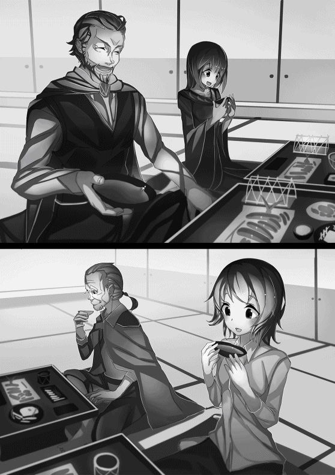
原因が俺にあるから何とかしないと、と、思っていたら、三浦の爺さんだけは、気にせず美味そうにちびちびやってくれているからありがたかった。
「申し訳ありません。一花ちゃんたちは気にしないで飲んでいいから。ほら、遥も藤崎さんも」
俺の一言で藤崎さんは再び盃を煽 りはじめたが、一花ちゃんと遥は二度と杯を手にしなかった。いや、そこまで気にすることないのに、とも思ったが、たぶん今後も俺は酒を飲まないだろう。二人とも俺の屋敷に住むことになるのだから、というかもう住んでいるから、これでよかったのかもしれない。
そんなことより、俺は目の前に鎮座している骨付きの肉の塊に目を奪われていた。今日は碌に食っていないし、立ち上る香ばしい匂いが俺の手を自然にその肉に向かわせていた。
迷うことなくガブリとかぶりつくと、薄い塩味に香辛料が効いた極上の味で、肉らしいしっかりとした噛みごたえも申し分ない。特に香辛料の辛味が通り過ぎたあとに、口の中いっぱいに広がる極上の旨みがなんとも素晴らしい。俺は夢中になってその肉にかぶりつき、その味と噛みごたえを堪能していた。
「どうやら料理の方はお気に召されたようで何より。調理人も喜ぶだろう」
そんなことを嬉しそうに善之助さんは言っていたが、どうやら俺が酒を飲まなかったことを気にでもしていたのだろう。
「この肉は何の肉ですか？ 香辛料が効いていてメチャクチャ美味いです」
「ハハハッ、これは十分に熟成させた猪肉。今年の初頭に仕留められたものだ」
半年以上の熟成だったとは、なるほどこの旨みも納得できる。その旨みをスパイスが引き立てるものだから、これほど美味に感じるのだろう。
味の決め手はこのスパイスと熟成か......。
なんてことを考えていたら、一花ちゃんも遥も目を丸くしてこの肉を味わっていた。彼女たちが料理を楽しんでくれて、俺はやっと気が休まる思いがした。美味そうに肉を食う俺たちを見て善之助さんたちも嬉しそうだ。
その後も、噛めばトロけるような肉の煮物やダシの効いた吸い物、シャキシャキと歯ごたえのある葉野菜のお浸しとかその他もろもろを大変美味しくいただくことができた。食文化に関しては富士大公国より福井の国の方が豊かなのかもしれない。
旅が終わったあとにでも、一花ちゃんにこの国との交易を進言しようか？ いやいや、そのためにはあの盆地の妖魔を何とかしなくちゃ......。まてよ、あの盆地の妖魔を全部かたせば......。なんてことを考えている内に食事が一段落し、お互いの紹介になった。
善之助さんの隣に座っている女の人はやはり奥さんらしく、初音 さんというらしい。初音さんは、物腰が柔らかそうな女性で、寧々ちゃんの姉と紹介されたとしても少しの違和感なく受け入れられそうな美人さんだった。顔立ちは寧々ちゃんそっくりで、どちらかといえば寧々ちゃんの方がキリリと引き締まりぎみだ。
そして木原さんと、もう一人高木さんという今は寧々ちゃんの護衛をおもにやっていて、善之助さんの側近だそうだ。この時代の人なので歳はさっぱり想像できないが、善之助さんと変わらぬ若さで、筋骨バリバリそうな体格からみても、生粋の武人なのだろう。
その後俺たちの紹介も終わり、皆の箸が止まったところで一花ちゃんが切り出した。
「あの、善之助様。この場をお借りして私たちの予定をお話ししたいのですが」
「勿論構わぬ」
そう言った善之助さんがパンパンと二回手を叩いた。すると、使用人の人たちがいそいそと膳を下げはじめた。それが終わるのを待って一花ちゃんが口を開く。
「ではまずはじめに、このような宴にお招きいただきましたこと、心よりお礼申し上げます。そして本題ですが、私たちの旅疲れも溜まっております。ですので、明日一日だけ滞在を許されたく存じます」
「では明後日にはここを発たれると」
「そのように存じております。私たちの旅程にも余裕がありませんので」
「致し方ない。余としてはもう少しゆるりとしていってほしいのであるが、無理を言っては迷惑であろうからな」
善之助さんがものすごく残念そうにそう言ったのだが、寧々ちゃんもかなり露骨に落ち込んでいた。俺の本心を言うと寧々ちゃんとももう少しお近づきになりたいのだが、そうなってしまうと、君子が危うきにお近づきになりそうなのがゆゆしき問題だ。
「在り難く存じ上げます」
「それで、力石を探しておると聞いたが、どこにあるのか分かっておられるか？」
藤崎さんがさっと地図を取り出し、皆の取り囲む中央に置くと、全員が座布団を引き寄せてそれに近づいた。
「おおよそこの辺りになると聞いております」
「ふむ、平地を通るならば魔の物の巣の奥深くまで入り込まねばならぬな。まさか其方ら」
「ええ、この順路で向かう予定です」
一花ちゃんが地図上予定コースをなぞると、善之助さんがうなり声を上げ、寧々ちゃんをはじめ福井の国側の人は目を丸くしていた。なぜだか初音さんだけは笑顔で、興味深そうに俺たちを見ていた。
「そんなっ、危険すぎます！ 高科様と空様お二人だけなら難しくはないのでしょうが、あの大人数で魔の物の巣を抜けるなど......」
寧々ちゃんが興奮気味に心配してくれたように、危険なことには変わりはないが、それを含めて考えた末のルートだ。俺たちに考えを曲げる予定はない。と、そんなことを思っていると......。
「うむ、確かに危険だが、よくよく思い返せば空殿たちは東の谷を抜けて我が国へ来訪したのだ。余らが考えるより危険ではないのかもしれぬ」
「えっ!? まさか、それは本当なのですか？ 父上」
「余がこの目で確認しておる」
「............」
心配そうな顔色から驚愕のそれへと色調を変えた寧々ちゃんは、しばし熟考するように愛らしい瞳を閉じていたが、突如カッと目を見開いた。
「高科様、空様、わたくしも連れて行ってください」
突然の爆弾発言に善之助さんをはじめ、俺たち含めて皆が目を見開いた。しかし、初音さんだけはすぐに柔和な表情にもどった。
「まあ、寧々は空様のことを......」
そしてすぐさま、嬉しそうな顔でさらなる爆弾を投下してくれやがった。寧々ちゃんは顔面を紅潮 させてアワアワとたじろいでいる。
一花ちゃんの表情が冷笑へと移ろい、遥は不気味な笑みを浮かべた。君子は危うきに近づかないように心がけていたのに、危うきの方から飛び込んできやがった。
ここはひとつアレだ。君子は危うきに近づかれて逃げられないのだから、亀のように丸くなって耐え忍ぶしかない。
だからもう俺からは何もしゃべらない。危うさが去るまで一言だって話してやるもんか。そんなことをオロオロしながら考えていたら......。
「こらこら、初音は話をややこしくするな。寧々は国を想ってそう言ったのであろう？」
「えっ!? そ、そうですわ。当然ではありませんか父上。力石は福井の国にとっても重要な物資ですもの」
この動揺ぶりといい、どう見ても白々しい言い訳にしか聞こえないが、確かに今の季節まで妖魔に苦労しているのなら、宝玉は喉から手が出るほどほしいアイテムなのだろう。
強力な妖魔から助けた相手だとはいえ、じゅうぶんに世話になっているのだから、俺たちだけで独占するのは気が引ける気がしてきた。
「そうですね......妖魔の襲撃には手を焼いておられるようですし。すこし私たちだけで相談させてくださいませ。明日一日は滞在させていただけるようですから、結果は昼食の折にでも」
「余は構わぬが、寧々はそれで良いか？」
「もちろんですわ」
どうやら一花ちゃんも俺と同じように考えていたらしい。そのことに少しホッとした俺は、今がチャンスだとばかりに、完全に話題を別のことに振り向けようと画策する。
せっかく立ちどまってくれた危うさには、彼方へと旅立ってもらいたい。そのためにも何かいい話題はないか、超高速で考えを巡らせた結果、メシを食っている最中に疑問に思ったことがとっさに口をついた。
「あの、さっきいただいたご馳走はビックリするほど美味しかったんですが、福井の国には魚料理はないんですか？」
「ふむ、空殿は魚料理が所望であったか。だがすまぬ、出し渋ったわけではないが、魚は希少で貴重な食材でな。在庫を切らしておるのだ。余もしばらく口にしておらぬ」
「えっ？ 福井の国には海があるじゃないですか」
「海には降りられぬのだ──」
俺がつい口にしてしまった疑問には木原さんが答えてくれた。
彼の話によると、確かに福井の国は海に面しているが、その海岸線は切り立った崖であり、海に出て漁をすることができないらしい。そういえば、琵琶湖があった日本海側の海岸沿いは、切り立った崖だったなと今更ながら思い出した。あの崖が福井の国までずっと続いているということだろう。
これはますます福井の国との交易を考えた方が良さそうだ。元琵琶湖の海岸まで豊田鉱山から道を整備し、海岸に漁村をつくり、盆地の妖魔を何とかしてここまでの道を切り開く。そうすれば、富士大公国も福井の国も新鮮な海の幸に有りつけるようになる。
ついでに名古屋あたりを中継基地として開発すれば鉱山だって見つかるはずだ。資金面の問題は残るが、帰ってから陽一さんに相談しよう。そうしよう。
なんてことを考えていたら宴はお開きになった。今日は長距離を走ったり戦闘三昧だったりしたから俺も疲れているし、仲間たちも疲れているのは間違いないだろう。
あてがわれた部屋は、気を利かせてくれたのか俺と一花ちゃんと遥の三人が同室だったのだが、布団に座って話しているうちに、ムフフなイベントなど起こる気配もなく三人とも速攻で深い眠りに落ちてしまった。
俺はまだ一花ちゃんとも遥とも同じ寝室で枕を並べたことがなかったというのに、なんて勿体ないことをしたんだ。というのが、チュンチュンとスズメがさえずる声が聞こえるなかで目覚めて、意識が覚醒したあとの俺の心を支配していた。
しばらくそのまま布団の中で身悶 えるように悔しがったあと、美味しい朝食をご馳走になった。
そのあと、昨日の話、寧々ちゃんの申し出をどうするか話し合った。結果、三浦の爺さんがコッソリ〝気〟を探っていたらしく、彼女の、というかあの宴の席にいた人たちの戦闘能力は申し分なく、寧々ちゃんとその護衛の二人までは同行させてもよいということになった。
あのおっとりした顔で爆弾発言をカマしてくれた初音さんまでが、戦闘能力に問題なしという爺さんの見立てには驚いたが、よくよく考えてみれば、富士大公国と同じで〝気〟が強くなければ国主の奥さんにはなれないのだろう。
昼食をいただいたときに同行ＯＫという話し合いの結果を寧々ちゃんに告げたら、それはもう喜んでいた。あんまり喜びすぎて、一花ちゃんと遥に白い目で見られていたが、嫌な予感がしたので俺は君子危うきに近寄らずを徹底し、その日はバレないようにコッソリと彼女たちから距離を取り、日がな一日、都の散策をして時間を潰した。
翌日の早朝。陽が昇る前、俺たちは準備を万端に整えて都の北門に集合したのだった。
「じゃあみんな、出発と行きましょうか」
陽が昇る前の朝まづめ、善意で食料を補てんしてもらい、準備万端で都の北門に集合した俺たちは、善之助さんが用意してくれた馬にまたがり、一路北の前線へと向かった。
寧々ちゃんは髪を上げて革製の軽鎧と薙刀のような武器を背にしている。彼女の護衛には高木さんという武人がつき、こちらも革製の軽鎧に槍を装備していた。二人とも背中にはザックを背負っているが、食料は俺たちが運ぶことにしたのでパンパンではない。
あのザックにザックザクの宝玉を詰められれば喜ぶだろうな。なんていう犬も食わないだろう、しょうもないダジャレがとっさに頭をよぎり、ツボにハマって噴き出しそうになった俺は、この時代に来て娯楽から遠ざかりすぎて、笑いの感覚がおかしくなってしまったのかもしれない。
誰に対してとは言わないが、決してオヤジ臭くなったわけではないことを、今一度強調しておくことにする。
都を出発して一時間ほど北に馬を走らせると、東西に長いバリケードと、テントの群れが見えてきた。陽はすでに昇り、東の山から射す陽射しが眩しい。
「どうどう、馬で行けるのはここまで。ここから先はいつ魔の物が出てもおかしくない」
わざわざ見送りのためにここまで同行してくれた善之助さんが、手綱を引いて馬を止め、俺たちを見渡しながらそう言った。俺たちは馬を降り、そのまま前線の兵に引き取ってもらう。
「空殿、寧々のことくれぐれも頼みますぞ」
「父上！ わたくしが無理を言って同行させてもらうのです。空様に余計な役目を押しつけないでくださいませ。だいたい父上はいつもいつも──」
親心からだろうが、ついつい口をついてしまった善之助さんの言葉に、寧々ちゃんは呆れたと言わんばかりの表情でたしなめはじめた。善之助さんは、しまったと口をつぐんだが、俺はべつに彼の娘を想う言動は不自然ではないと思った。
生まれた国と時代の違いで常識に乖離 があるのかもしれないが、そこまでムキにならなくてもいいとも思った。いまだにグチグチとお説教が続いていて、大きな体を小さくしている善之助さんが可哀そうになってきた。
「まぁまぁ、そのへんにして。せっかく見送りに来てくれたんだから」
エキサイトしていた寧々ちゃんは、ハッと気がついたように口に手をあて、俺の方に振り返った。
「も、申し訳ありません。つい、いつもの調子で......」
恥ずかしそうに謝った寧々ちゃんだったが、状況から察するに、常日頃から彼は娘にお小言をもらっているようだ。なるほどこれは、微笑ましい親子の日常風景なわけだ。
「じゃあそろそろ出発しましょう。二時間から三時間走りっぱなしになると思うので、そのつもりでいてください」
一旦走りはじめたら、よほどのことが無いかぎり止まることはできない。立ちどまってしまえば、俺たちの〝気〟をめがけて、妖魔が押し寄せてくることになるからだ。俺は全員に目配せして皆が頷いたのを確認し、北へ向かって走りはじめた。
一時間半ほど北に走ったころ、東側の山が迫り前方が急激に狭くなった。西側には日本海だろう水平線が見えている。
と、言ってしまえばここまでラクに走破できたと勘違いされる諸氏 も多いと思われるが、実際は障害物がない平原を走ってきたわけではない。ゴツゴツした大岩とか、飛び出たコンクリの塊とか、むき出しになって朽ちかけた鉄筋とか、物陰から飛び出してくる妖魔とか、底が見えないような地割れとか、まあいろいろあって楽なことは無かった。一昨日走り抜けた盆地の方がまだ幾分走りやすかったくらいだ。
山と海に挟まれて狭くなったところを通り抜けると、そこからは一路山沿いを東に向かって走る。はずだったが、山沿いは草がボウボウに生えていてとてもじゃないが走れそうになかった。
どうやら、妖魔によって踏み荒らされて草が生えないところじゃないと走りにくいらしい。
「もう少し北に向かいましょう！」
そう俺は叫んだ。皆は右手に見える背の高い草原を見て、一も二もなく頷いてくれた。このあたりは、妖魔に踏み荒らされている範囲が狭く、通り道になっているようだった。
その後十数分北に走ったところで突然視界が開けた。たぶんこの平地が北の妖魔の本居地なのだろうが、うろついている妖魔の数はそれほど多くはなかった。けれども、走りやすいかといえばそういうこともなく、あいもかわらずの悪路だった。
俺たちは当然そこで進路を東に変え、石川東部の山岳地帯を目指した。さっきまで走っていた狭い道もそうだったが、基本的には草むらの中から妖魔が飛び出してくることは無い。
仮に隠れていても俺のレーダー網にかかるので、草むら側は安全になる。今現在は俺たちの右側が安全地帯になり、ほぼ左側だけに注意を向ければ済むので、行軍は思ったよりもかなり楽になっている。それでも......。
「はぁっ！」
俺の左を少し離れて並走していた寧々ちゃんが、小隊の合間を縫って飛び込んできた犬型の妖魔を自慢のなぎなたで払い飛ばした。というか両断した。
北の地に入ってからもう数度目になる彼女の斬撃だったが、なるほど国主の娘というだけの強さがある。一花ちゃんの斬撃スピードにははるかに及ばないが、それでもカテゴリー三程度までの妖魔なら安心して見ていられると俺は思った。
「寧々ちゃんも結構強いね」
「まあ、空様ったら、それは女の子にいう褒め言葉ではありませんよ。でも、嬉しいですわ」
「ああ、ゴメンゴメン。寧々ちゃんが男っぽいとか勇ましいとかそんなことを思ったわけじゃないんだ。寧々ちゃんはじゅうぶん女の子らしいよ」
「まあ、嬉しいですわ。それにしても、わたくしが驚いたのは三浦様ですわ。あれだけお歳を召されていらっしゃるのに、戦いながらこれだけ走って、息を乱されないなんて......」
そう言って寧々ちゃんは、少し後方を元気に走っている三浦の爺さんを見やった。
「あの人のことを気にしたら負けだよ。あの一花ちゃんの師匠だし、俺も最近弟子入りしたんだ」
「すごい方だったのですね。一花様も空様もわたくしより遥か高みにいらっしゃるのに、そのおふた方が師事されるなんて。わたくしも機会があれば手ほどきを受けたいものですわ」
「うーん、ヒマな時にでも頼んでみようか？」
「まぁ、ぜひお願いしたいですわ」
なんてことを寧々ちゃんと話していたら、俺の右前方を走っている一花ちゃんが振り向いて冷ややかな視線を送ってきた。危ない危ない、気が緩んで危うきに近づいていた。
ヤバイと思って俺がそっと視線を落としたら、一花ちゃんはクスッと笑って、しょうがない人だね、とでも言いたそうな顔をしていた。どうやら許してくれたようだ。
そんなささやかなコミュニケーションがあったりしながら、俺たちは妖魔の巣を無事に突破することができた。よくよく考えてみると、秋も本番になりつつある今の季節は、夜の気温が下がって妖魔の活動も大人しくなってきているのかもしれない。
走りはじめて三時間強、ようやく妖魔の巣を抜け、それほど茂ってはいない藪を突破し、森に駈け込んだところで俺たちは走るのを止めることができた。
予定より少し時間はかかったが、許容範囲だと俺は思う。現に、俺たち主要メンバーは一人も息を切らしていない。小隊の兵たちがすこし辛そうに座り込んだり、両ひざに手をついて肩を上下させているが、ここで一休みしていけば問題ないだろう。
少し気がかりだったのが、涼子さんが息を切らして辛そうにしている小隊の面々を見て、これは良い訓練になりマスと、小隊の彼、彼女らからしてみれば、勘弁してくれと言いたくなるようなことを、喜色を浮かべながら口にしたことだ。
以前この涼子さんから感じた危機感というか、あまりか関わらないほうが良さそうだという直感は、もしかしたら彼女がＳである証かもしれない。俺は以前ドＳのモーホーにヒドイ目に遭わされた記憶がよみがえって背筋が凍る思いがした。
もしかしたら俺は、Ｓの人からしてみれば、いぢめたくなるＭ男に見えるのかもしれない。
あの涼子さんに関わって、変な性癖に目覚めないようにしなければ。でも、綺麗な女の人にいぢめられたら気持ちいいのかな......。
なんていう他の人には話せない恥ずかしい妄想をしていたら、小隊の兵たちの息が整っていたようだ。さいわい、妄想してるときの顔を一花ちゃんたちには見られていないはずなので、俺は表情筋をキリリと引き締めて口を開いた。
「そろそろ出発しましょう。陣形は以前森を歩いた時と同じでお願いします。寧々ちゃんと高木さんは山歩きになれていないだろうから、俺の後ろについてきてください。それから、ここからは本格的な宝玉探索になります。打ち合わせの時に話しましたが、尾根の下の崖になっているところをめざし、崖の下を縫うようにして奥へと進んでいきます。探すのは石英 という透明の石ですが白みがかっている場合が多いです。よく崖の下に落ちていますから見つけたら報告してください」
「先頭は私にお任せ下さい。宝玉を見つけて見せマス」
涼子さんの気合いがハンパない。妖魔から国を守るために一番苦労しているのが、彼女と遊撃小隊の面々らしいので、宝玉をもっとも欲しているのも彼女らだ。それは間違いないはずなのだが、彼女の気合いは別のところからきているような気がしてならない。
遊撃小隊が使う武器を宝玉で強化し、なにやらよからぬことを、主に小隊の兵たちが苦労するようなことを画策しているのだろうか。それとも武器ではなく、防具を強化して体術の強化でも図るつもりなのだろうか。いずれにしろ、俺は彼女の部下である遊撃小隊の面々に心の中で合掌しておいた。
そんなこんなで捜索を開始して俺たちは、途中食事休憩を挟んで一日目の探索を終えたわけだが、まだ山岳地帯の浅いところだけあって、目的のものを発見するには至らなかった。
野営できそうな、とは言っても斜面なのだが、場所を見つけてテントを設営し、夕メシを喰ったら獣除けの〝気〟を放出して一日目の夜は就寝になった。さすがにあれだけ走ってそのまま山歩きをしたのだから、木刀を使った〝気〟の稽古 は中止になった。
そして二日目、三日目、四日目と探索を徐々に山岳地帯の奥へ、つまり東へと進めていったわけだが、いまだに宝玉の発見には至っていない。この広い山の中を、登ったり下りたりしながら崖を見つけては沿うように探索し、北へ南へと移動しながらジグザグと少しずつ東に移動してきた。
もちろん途中何回か石英の鉱脈は発見したのだが、見つかるのは全て、ただの水晶ばかりだった。いちおう、透明度の高い水晶は飾りや指輪などに使う宝石として扱われるので、質の良いものだけを確保している。
木刀を使った〝気〟の稽古は二日目から再開し、寧々ちゃんとその護衛の高木さんも加わることになった。ただし、ふたりとも長物というか、なぎなたと槍が主装備なので、木刀ではなくそのままなぎなたと槍を使って稽古に参加している。
「三浦老師の仰る通りになぎなたを振るうと、なんだか見違えたように切れ味が上がる気がいたしますわ」
「確かに寧々様の仰るとおりに御座いますな。この高木、この歳になって成長を実感出来るとは......」
「ほっほっほっ、おふた方ともずいぶん無駄があったでのう。それを矯正しただけよ」
なんだかふたりとも、三浦の爺さんを見る目がずいぶんと変わったようだ。こんなことを言ったら爺さんに怒られそうだが、最初はふたりとも爺さんのことを、ただの元気がいい刀術の達人だとでも思っていたのだろう。
しかし、三浦の爺さんが教える〝気〟の使い方というか考え方は、福井の国には無かった理屈のようで、しかもその理屈を分かりやすく教えるものだから、ふたりは今や尊敬の眼差して爺さんを崇拝するように見ている。
宝玉探索の方に話を戻すと、あの盆地から今いる石川の山岳地帯まで、馬や走りで来たこともあって、当初の予定よりずいぶん日程が短縮できている。今が九月の終わりなので、十月の終盤 まで探索できるとすれば、まだ一か月弱の余裕があることが救いだろう。
「ねえ空、もしこのまま見つからなかったらどうするの？」
稽古が終わって、まだまだ日程的には余裕があるなんてことを考えながら体を休めていたら、遥が心配そうな顔で問いかけてきた。
「空様が仰った予定ですとまだまだ日程には余裕がありますから、まだ心配するのは早いですよ。それに、空様のお顔にはまったく焦りが見えません」
一花ちゃんは俺が余裕をカマしていることを見抜いているようだ。実際、この山岳地帯のどこかに宝玉が眠っていることは確定しているのだ。
いくら天変地異があったと言っても、消えてなくなるなんてありはしないのだから。もしかしたら遥はこの前の一件というか、自分が役に立っていないことを、いまだに引きずっているのかもしれない。
「一花ちゃんの言う通りだよ遥。この山のどこかに宝玉が眠っていることははるか昔にこの目で確認しているんだ。ただ正確な場所が分からなくなっているだけだから心配する必要はないよ。大丈夫、手がかりを見つけたら遥には大活躍してもらう予定だから」
「そう......空がそこまで言うならきっと大丈夫ね」
そう言って遥は笑顔を見せてくれた。しかし、心の底から笑っているようには思えなかった。彼女の笑顔にまだ何か引っかかるようなものを感じるのだ。このまま引きずるのもなんとなくよくない気がする。早いとこ目的のものを見つけて彼女にはじゅうぶんに活躍してもらう必要があるだろう。
山に入って五日目も発見には至らず、六日目、七日目、八日目と探索を続けた九日目、ついに俺の眼 が紫色に光る小さな結晶を、崖の下に溜まった石くずの中に捕えた。
その結晶は、崖の下に傾斜するようにして溜まった小山の中に薄紫色の光を放っている。ずいぶん遠くからだったが、俺の超強化された眼が捕えたそれは間違いなく紫水晶だ。
「見つけたぁ！」
そう叫んで俺は走りだしていた。それはもうすべてをぶっちぎってダッシュした。そして石くずの手前で急ブレーキ。もう俺の目にはその石しか見えていない。
全体的に白みがかっているが、その結晶の頂点付近が薄い紫色に染まっている。質のいい紫水晶ではないし、色のついている部分も少ない。しかし、この崖の中に鉱脈があることは確かだ。しかも、小石がたまった中にはいくつもの紫色の輝きが見えていた。
「ついに発見されたのですね」
俺のすぐ後ろから覗き込むようにして一花ちゃんが顔を出した。遥も寧々ちゃんも他のみんなも俺の周りに集まってきた。俺は振り向いて一花ちゃんに紫水晶を手渡す。
一花ちゃんは、手にとったその石をまじまじと見つめている。俺は小石の山からべつの紫水晶を手にとって皆に見せる。
「これは価値がないくず石だけどね。でも、この崖の中に鉱脈がある。〝気〟を使って探れば質の良い宝玉が見つかるはずだ」
ゴクリと生唾を飲みこんだ皆をよそ目に、俺は手にしていた紫水晶のくず石をポイと投げ捨て、崖に視線を集中した。
「ああっ、なんと勿体ないことを」
それは藤崎さんの声だった。藤崎さんは森の中に消えた紫水晶から視線を俺に戻すと、信じられないものでも見たかのように目を丸くしている。
「えっ？ だってあんなくず石じゃ役に立たないでしょう」
「とんでもない！ あの質の宝玉でも、一般兵の武器には十分すぎる強化になりますぞ。そもそも一花様や空殿がお持ちの──」
完全に認識が違っていたらしい。藤崎さんによれば、かつて俺が一花ちゃんにプレゼントした結晶は、超高品質なものであり、〝気〟の増幅力が強すぎて一般兵には手に余るシロモノだったらしい。あの品質の宝玉を使いこなすためには、遥クラスの〝気〟力が必要なのだそうだ。あの涼子さんでも手に余るシロモノらしい。
かといってあの品質の宝玉を一般兵が使えないかといえばそれも違って、二ミリ程度の小粒に分けて使えばいいそうだ。
ただし、そんな勿体ないことはよほどのことが無いかぎりしないらしい。よくよく考えれば当然で、そんなことをするくらいなら〝気〟力千越えの高官に使わせた方がよっぽど戦力の向上につながるということだった。
「──でありますから、貴重な宝玉をあのように」
「藤崎！」
長々とお説教じみた講釈を垂れていた藤崎さんを一花ちゃんが一喝した。その一喝にビクッと反応した藤崎さんは、肩をすぼめてやらかしちまったことを自覚したように口を開いた。
「も、申し訳ありません。ついつい熱くなって、空殿にはとんだご迷惑を」
「そんなに恐縮しなくてもいいですよ。それに、俺も宝玉の価値がよく分かりました。この目の前にある小石の山をまずは分別しましょう。藤崎さんは指揮をお願いします。寧々ちゃんと高木さんは分別に参加してもらって、福井の国の取り分を確保してください」
そう話した俺は、一花ちゃんと遥を少し離れたところまで引っ張った。チラッと小石の小山を見ると、藤崎さんが指示を出し、小隊の兵士が大き目のスコップを使って小石を分別しやすいように分けていた。俺はそれを尻目に一花ちゃんと遥に方針を伝える。
「まず一花ちゃん」
「はい」
一花ちゃんは真剣なまなざしで俺を見つめてきた。
「一花ちゃんは宝玉が見つかったあたりの崖の上を調べてほしいんだ。どこかに宝玉の層が露出しているはずだから、それを見つけてほしい。見つかったらそこを掘り進めて」
「分かりました」
と、胸の前で握り拳を作った一花ちゃんは、さっそく藤崎さんに何やら指示を出している。
「そして遥は俺と発掘師としての仕事だ」
「はい。ようやくわたしの出番なわけね」
そう答えた遥は、少しホッとしたように、しかし嬉しそうにやる気を出したようだ。
「そういうこと。この崖の奥にもしかしたらずっと品質が良い宝玉が眠っているかもしれない。だから〝気〟を使ってその反応を探してほしい」
「わかったわ」
「俺が崖の左側を見るから、遥は右側を頼む」
「了解」
やる気をみなぎらせた遥が、ツルハシを右手に崖の右側へ走っていった。それを見届けた俺は、崖の左側へゆっくりと歩を進めた。焦る必要はない。もう一つ目の鉱脈を見つけたのだから。
なんて余裕をかましていたら、分別をはじめた兵たちから歓声が上がりはじめた。俺は崖に右手を当てて〝気〟を送り込みながらも聞き耳をたててみると、どうやら見つけた数を競い合っているようだ。ときおり寧々ちゃんの、ありましたぁ、という可愛い声が聞こえてくる。
そして俺の方はといえば、苦戦していた。この崖自体に結構な密度で質の悪い紫水晶がまぎれている。俺としては強い反応を探しているのだが、質の悪い紫水晶が邪魔して効率的に探れなかった。
もういっそこの崖全体を打ち砕いてしまおうかとも考えたが、結構高い崖で、上の方が崩れて大変なことになりそうだ。ので、自粛する方向で地道に探していると。
「空様！ ここに宝玉が密集しています」
という一花ちゃんの声が聞こえてきた。彼女は〝気〟を使って、器用に垂直の崖にへばりつき、地上五メートルくらいのところで俺の方を見ている。どうやら確認してほしいのだろう。
そう考えた俺は、彼女と同じ方法で崖をよじ登って一花ちゃんのすぐ横まで移動した。
「たしかにこの層が崩れ落ちたのが下に溜まったみたいだね」
一花ちゃんが見つけた場所には、質は悪いが大量の紫水晶が詰まった大きな晶洞 が潰れたような、幅十センチほどの層が横方向に二メートル強露出していた。下を見ると、もうほとんど崩れ落ちた小石は持ち去られている。
「この層を掘り出せばかなりの数が確保できそうだね」
「ええ、でもどうやって掘り出すのですか。上が崩れてきそうで危ないです」
たしかに一花ちゃんが心配するとおり、やみくもにツルハシを振るえば、高さ二十メートルはありそうな崖が崩落しそうな気がする。
崖の上側を全部崩すのはあまりにも大変そうだし、時間もかかるだろう。採掘期間にはまだ十分余裕があるから最悪はそれでもいいが、積極的にやりたいとは思えない。ならばどうするか。と、考え込んでいたら......。
「あった！ あったわ空」
三十メートル近く右に移動していた遥からも発見の報告があった。彼女は高品質の反応を探っていたはずなので、期待できそうだ。
「一花ちゃん、簡単には掘り出せそうもないし、遥も見つけたみたいだし、どうするか一度皆で打ち合わせしようか」
「......そうですね。このままここで考えても答えが出そうにありませんから」
意見が一致したので、俺は遥のところまで行って彼女が見つけた反応を確かめた。反応は十メートルほど奥に入り込んだところにあって、なるほど強力な〝気〟の増幅反応がある。高さはほぼ俺の頭の位置だった。
「でかした遥。これで旅の目的は達成できそうだ」
俺は満面の笑顔で遥を労わる。嬉しそう、というよりはホッと安心したような感じを受ける笑顔を見せた遥に、一花ちゃんが見つけた潰れた晶洞の状況を説明し、掘り出し方の打ち合わせをすることを告げた。でもその前に......。
「──で、遥の意見を聞きたいんだ。今から見せるからプロとしての見解がほしい」
そう言って遥をひょいとお姫様抱っこし、未完成の飛行術で件の物とその周囲をじっくりと見てもらった。
「だいたい分かったからもういいわ。視線が痛いからそろそろ降ろして」
頬を染めたまま居心地が悪そうにしている遥を降ろし、少し機嫌が悪そうな一花ちゃんと、あわわわと、動揺しているというか、見てはいけないものを見てしまったというか、でも少し羨ましそうにしているというか、嬉し恥ずかしそうに俺と遥を見ている寧々ちゃんと、その他主要メンバーで採掘方法を打ち合わせた。
余談だが、高木さんは俺が遥を抱えて浮遊したことに大層驚いていたが、寧々ちゃんはそれよりもお姫様抱っこに興味津々だった。
で、話し合いの結果、ほとんどが遥の提案というか、ベテラン特級発掘師の提案に意見する者など現れなかった。
小隊を二手に分け、崖の中腹にある紫水晶のところまで足場を組み、ツルハシではなくスコップで丁寧にその上方を抉 っていくことになった。足場にはスコップで崖を掘る係と、万一落石があったとき、それに対処する係を配置し、一花ちゃんがその指揮を執る。
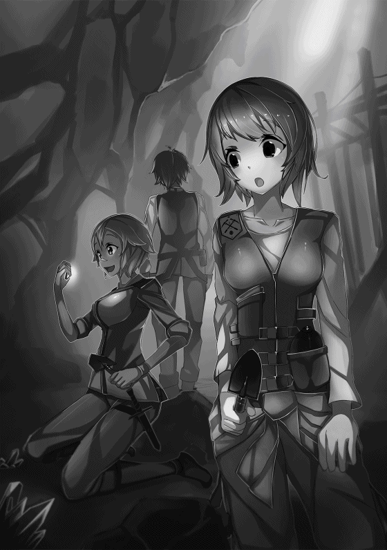
遥が見つけた質の高い紫水晶の採掘は難易度が高いらしく、きわめてもろい地層を掘り進めるにあたって、崩落防止の木枠を設置しつつ慎重に掘り進めることになった。当然その指揮は遥が執る。
今日はさしあたって足場や木枠をつくるための木材の伐採と、それを切りそろえたりする作業をすることになったが、人数がいるおかげで、日が傾く前に作業を終えることができたのは幸いだった。
「みんなお疲れ！ 今日はここまでにして明日のために英気を養おう」
俺一人だけ流していた、作業をやり終えた感いっぱいの爽 やかな汗をぬぐいつつ、そう宣言したら、小隊の兵士たちから歓声が上がった。
なかなか見つからずに苦労はしたが、探索期間の期日にまだだいぶ余裕がある段階で、目標数をはるかに上回る成果を手にできるめどが立った。後は事故が起こらないよう、慎重に採掘作業を終わらせるだけだ。
ということで、お祝いと慰労の意味をこめて宴を開くことになった。持参した食料も帰りの行程を楽にする意味もあって、大盤振る舞いの食い放題に近い状態だ。というか俺には必要ないシロモノだが、酒を持ってきていないので、せめて腹いっぱい喰ってもらおうと思った。
俺はその宴で一花ちゃんの機嫌を直すのに必死で、ろくにメシがのどを通らなかったわけだが。
とまぁ、そんな宴が終わり、寧々ちゃんたちと稽古をした翌朝から採掘作業がはじまったわけだが、足場を組みたてる班は、富士大公国一のアイドル的存在である一花ちゃんが直接指揮しているとあって、兵士たちの張りきりようがものスゴく、一糸乱れぬ連携と相まって、瞬く間に足場が組み立てられていった。
一花ちゃんの前で涼子さんが班分けを発表したとき、感極まった一人の兵士が涙を流しながらビシッと敬礼して「か、感激でありマス。ワタクシィ、全身全霊、命をなげうってでも使命を全うするでありマス」と、所信 表明していた。
彼が何に命をなげうとうとしているのか俺には分からないが、頑張るのならそれでいいかと流しておくことにした。
基本、小隊の兵士たちは規律ある行動を取らされており、用もなく俺や一花ちゃんに近づくことがない。俺たちに直接声をかけられることもなく、基本的に藤崎さんか涼子さんが命令するので、一花ちゃんに直接指揮、つまり命令されることが嬉しいようだ。
一方、遥が指揮する穴掘り隊は、というか俺もこっちに参加しているわけだが、穴を掘るのは慣れている遥と俺なわけで、兵士たちは崩落防止の木枠をその後から施工するだけの楽な仕事なせいか、士気が落ちるということは無く、逆に楽な仕事を割り振られて恐縮されてしまった。
ただし、予想していたとおり地盤が恐ろしくもろく、少し掘り進んでは木枠で補強せねばならず、たかだか十メートルちょっと掘るのに昼過ぎまでかかってしまった。
一花ちゃんたちの班は、ことさら順調に採掘が進んだようで、昼メシ明けには紫水晶の分別に取りかかっていた。一花ちゃんの報告によると、その数は前日の分と合わせて千をはるかに超える勢いだといい、寧々ちゃんたちにかなりの数を分けても余裕で目標達成できるそうだ。分別作業に加わっていた寧々ちゃんも、満足そうについてきて良かったと喜んでいた。
そしていよいよ俺的には大本命の採掘作業が大詰めにさしかかってきた。
「もうすぐ出るぞ」
「ええ、すぐそこに在るのが私にもよく分かるわ。しかもこの反応、とんでもなくスゴそうなんだけど」
「そうだな。よし、ここからは慎重に行こう。おーい、木枠の施工を頼む。これが最後になりそうだから、ギリギリのところまでやってくれ。今までよりも頑丈に頼む」
「ハッ、分かりましたでありマス！」
悲しい現実だが、俺が直接兵士に声をかけても感極まる者はいなかった。まぁそれはいいとして、一旦穴の外に出た俺と遥は、外で待っていた一花ちゃんにもうすぐ採掘作業が終わることを報告した。
「では、いよいよですね。成果は今のままでも十分な戦力の底上げになりますが、質の良い宝玉が増えれば、高級武官たちの戦力レベルがグンと上がります。私やお父様が戦場に出る機会も減って空様と共に過ごせる時間が増えます」
と、上機嫌な一花ちゃんに遥を交え、旅に出てから今日までの思い出話に花を咲かせていると、穴の中から兵士が駆け出してきた。
「木枠の施工、完了でありマス！」
いよいよ最後の木枠の施工が終わり、俺と遥は決して深くはない穴の最深部へと足を運んだ。興味があるのか、いや、無いはずはないだろう一花ちゃんと寧々ちゃんも俺たちの後ろに続いている。
「崩れると危ないから一花ちゃんと寧々ちゃんは少し下がって」
〝気〟の感覚で彼女らが近づきすぎていると感じた俺は、振り返ることなくそう言ってスコップを構えた。実際は穴が崩れないように、かなりしっかりした木枠で支えているので、危険なことは無いと分かっているが、前方の土砂が崩れおち、彼女たちを汚すかもしれないと思ったからだ。
「はい」
返事をした一花ちゃんの〝気〟が離れたことを感じとった俺は、遥とともに慎重に採掘を進めていった。
できるだけソフトに、反応の上側の土砂を取りのぞいていく。〝気〟を通わせてお宝の位置を常に把握しながら作業を進めていたのだが、そのあまりの強烈な反応に、いやがおうでも期待が膨らんでいった。そしてさほど時間がかかることもなく、目的のブツが姿を現した。
振り返ってみると、すこし離れた位置から首を伸ばして様子を伺っていた一花ちゃんと寧々ちゃんの固唾 をのむような表情が、不思議がるようなものへと変化する。
「それが宝玉なのですか？」
「そうだよ、品質はたぶん極上で数も多い」
見えはしないが、頭上に疑問符を浮かべて問いかけてきた一花ちゃんに、俺は自信満々で興奮気味に答えていた。
彼女がなぜ不思議がっているのかには察しがついている。それは、姿を現したブツが高さ一メートル程度の、いびつな雪だるまのような形をした、ただの丸みを帯びた岩石にしか見えないからだ。
俺にはこれが何なのか分かっている。そしておそらく遥にもこの岩石の正体が分かっているはずだ。
「とりあえず表に出すから、みんなは穴から出てくれないか？」
一花ちゃんと寧々ちゃんの疑問を解かぬまま、俺は出現したブツを抱くようにヒョイと持ち上げると、ニヤけようとする表情筋を引きしめ、彼女たちの後に続いて穴を出た。
俺はそのまま分別作業が終わった広場──とは言っても広くはない──までそれを運び、寝かせるようにして地面に置く。みんなが注目しているのが、向けられた視線からひしひしと伝わってくる。
「じゃあ、今からコイツを割るんで少し下がってくれないか」
俺を取り囲むようにして集まっていた仲間たちが一歩だけ退いた。視線はブツに集中しているのがよく分かる。誰もがそれほど下がらなかったのは、よほどこの岩に興味があるからだろう。というか、興味がないほうがおかしい。
かくいう俺も、どれほどの上物 が拝めるのか、ワクワクが止まらなかった。いくつもの生唾を飲み込む音を聞きながら、片手に持ったツルハシの尖った方で、コツン、コツンと縦に割るように等間隔で何か所も叩いていく。響いてくる音は岩の見た目よりもかなり低く、そして籠 っている。
俺が何をしているのかといえば、綺麗に縦割りするために、雪だるま状の岩の中心線を、縦に数か所叩いて亀裂というかヒビを入れたのだ。もちろん〝気〟を使って中に影響が出ないように細心の注意を払っている。
そしていよいよ緊張の瞬間。岩の中央を狙ってさっきより少し高く振り上げたツルハシを、万感 の思いを込めて振り下ろした。とはいっても力はほとんど入れていないし、岩はまだ割れていない。
ズコッっと岩にめり込んだツルハシを少しだけ横に倒す。その瞬間、雪だるま状の岩は中央を境にパカリと御開帳し、その内臓物を白日の下にさらけ出した。
シンと静まり返った現場に野鳥の声と息を飲む音だけが響く。そしてその静寂が破られた。ひとりの兵士が雄たけびを上げたのを皮切りに、次々と絶叫とも取れる歓声があがる。
そんななか、よほど嬉しかったのだろう、遥は感極まったかのように涙を流していた。遥の背中を、同じく目じりに涙を溜めた一花ちゃんがポンっと押す。遥はそのままの勢いで、駆け寄るように俺の胸に顔をうずめ、しばらくの間嗚咽 を漏らしていた。一花ちゃんはその様子を、優しげな瞳で見守っている。
ようやく遥が落ち着きをとり戻し、俺の胸から離れたところで、彼女とともにふたつに割れた岩の中身をもういちど覗き込む。
それは見事な晶洞だった。
いびつな雪だるま状の岩の内部は綺麗な空洞になっており、その内面にびっしりと紫色の結晶が林立し、キラキラと陽光を反射している。結晶の純度は恐ろしいほどに高く、綺麗にカットすれば二十一世紀においてもじゅうぶんに売り物になるほどの逸品 だった。
「私、このように宝玉が石の中に集まってできるものだとは知りませんでした。あまりにも神秘的で、あまりにも綺麗で......」
「わたしもずいぶん発掘師をやってるけど、自然にできた宝玉というものを今回はじめて見たわ。一花様が発見なさった宝玉は崖から見えてたから、こうして地中に埋まってるのかって、そんなに驚かなかったけど......宝玉がこうやってできるなんて考えもしなかった。でも、こうやって見てると、取り出してしまうのがもったいないって思うわ」
「遥さんっ！ よく見つけてくださいました。これだけ上質のものがあれば、上級武官たちの戦力が飛躍的に上がります。ものすごいお手柄ですよ」
「一花様そんな......たまたまわたしが探したところに在っただけです。わたしがいなくても空ならきっと見つけていました。空がいなかったら、この場所も見つからなかったわけですし。スゴいのは空です。わたしではありません。質の良い宝玉を見つけることができたのはスゴク嬉しいですけど」
確かに遥が言おうとすることは間違っていない。けれども、正解でもない。そんなことを言ってしまえば、パーティーを組む意味はないし、今回にしたってこんな大人数で旅をする必要はなかった。
遥がこんな卑屈めいた言い方をしてしまったのは、戦闘で出番がなかったことを気に病んでのことなのだろう。ここ数日、彼女が情緒不安定になっていたのは確かだ。ここはひとつ俺がなんとかすべきなのだろう。
「遥、確かに俺が場所を知ってなけりゃここに来ることはなかった。だけどな、俺ひとりじゃここまで来ることは難しかったし、逆に俺が来なくても探し方や場所を教えれば、遥は見つけることができたんじゃないかな。自分がなしたことにもっと自信をもっていいと俺は思うよ」
俺が言いたいことがよく理解できないのだろうか、遥はキョトンとしている。彼女にこのまえみたいな悲壮感が感じられないことには安心したが、どうにも俺はこういった説明が苦手なようだ。どう説明しようか。と、迷っていたら......。
「空様は人それぞれに役割があって、不必要な人はここにはいないと仰りたいのですよ。遥さんも空様も藤崎も三浦先生も寧々さんたちも小隊の者たちも、そして私も、ここにいる全員がいたからこそ期日内に採掘することができたのです。遥さんがいなかったら掘り出すのにもっと時間がかかっていたことは確実ですし、怪我人が出たかもしれません。それに、この宝玉を貴女が見つけたことは覆しようのない事実ですよ。遥さんはもっと誇ってもいいのです」
「そんな......でも、そう言ってくださってありがとうございます」
そう言って遥が吹っ切れたような笑顔を見せてくれたことに、ようやく俺は安堵することができた。
その後ふたりは抱き合って感動の涙を流してるし、寧々ちゃんもつられてウルウルしているしで、皆で大仕事を成し遂げた達成感もあるのだろうが、あたりは暖かで満ちたりた空気に包まれていた。
あの幼かった一花ちゃんもずいぶん大人になったもんだ、なんてことをしみじみ考えてしまったが、俺の倍近い人生経験が彼女をそう見せているのだろうと納得することもできた。
というか、もう俺の方が彼女より子供なのは間違いないのだから、それは当然のことなのだろう。
そんなことを感慨深げに考えていたら、皆が見守る中、涙を拭った遥が意を決したように俺のところまで近づいてきた。
「今、空に言っておきたいことがあるの」
そう言って急に真剣な顔になった遥は、俺が返事をするより早く口を開いた。
「ありがとう空。わたし、もっと自分に自信をもつようにする。そしてもうひとつ」
そう言って俺の胸に飛び込んできた遥は、まだ潤んだ目で俺を見上げるようにして、予想だにしなかった大胆な行動に出た。
「好きっ！ わたしは空のことが大好きでたまらない......だからお願いします。わたしをずっと側にいさせてください。わたしを置いて遠くにいかないでください」
俺は不意の告白に焦りに焦った。周りを見る目が泳いでいるのが自分でもよく分かる。
そんな俺を見て一花ちゃんは袖を噛み、口をへの字にして悔しそうで羨ましそうな涙目になってるし、寧々ちゃんはアワアワと怪しい動きをしてるし、ヤジを飛ばす不届き者はいないが、他のみんなは暖かい目で俺たちふたりを見ている。
もちろん、こんな可愛い彼女にこんな告白をされたら嬉しいに決まっている。いや、嬉しいどころの話じゃぁない。天にも昇るような夢心地だ。
けれども、心の準備ができていなかった。それでも、ここで彼女の気持ちに応えられなかったら男じゃないだろう。そう意を決し、俺は遥を見つめ直した。
「うん。俺も遥が好きだ。遥の想いに応えられるように頑張る」
俺を見上げる遥の瞳がふたたび潤み、涙がこぼれた。もちろん彼女が悲しい顔をしているわけではない。安堵と嬉しさが伝わってくるような笑顔だった。
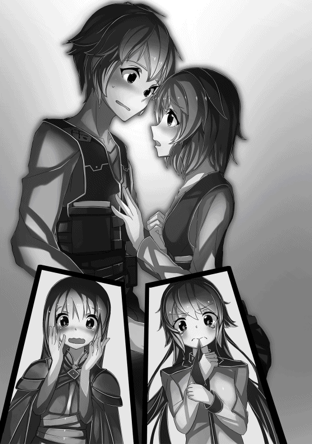
そんな遥を俺は自然に抱きしめていた。どれだけの間そうしていたのかは覚えていない。ただ、遥の早くなった鼓動がおさまるまで、俺は彼女を離さなかった。
俺的には、旅の目的を果たすことができて十分に満足できる結果だったが、最後は遥にすべてをかっさらわれてしまった。この、嬉し恥ずかしくて感動する出来事で、彼女の想いを彼女自身から聞けたことは、宝玉を得るという旅の目的を果たしたことよりも大きかったと思っている。
さらに、これぞトレジャーハントのだいご味という実感も味わうことができた。
冒険ありぃの、戦闘ありぃの、とんでもないお宝見つけぇのと言うことなしだ。冒険活劇にありがちなピンチの連続ということはなかったが、そのほうがありがたいに決まっているし、第一あれほどの危機に陥ったら普通は死んでいると思う。
なんてことを考えたことがあったなと、この時代に来る前に興奮しながら見た映画を思い出し、遥の大胆な告白イベントの興奮がおさまりつつあることを実感できた。そうとなればもうこんな山奥に用はない。
「よしっ、目的も果たせたことだし、そろそろ帰ろうか」
帰り支度も終わり、俺たちは帰路へと就いたのだった。
十月に入った今となっては、気温も高くないし、鉱脈を探しながらの移動ではないから、三日とかからず福井の城までたどりつくことができた。予定より早く目的を達成できたため、福井の城には三日ほど滞在することになった。もちろん、持ち帰った宝玉の分配もしてきたのだが......。
『これほどまでに上質な力石は見たことがない。それをこれだけ譲ってくれるというのか......実に、実に在り難い申し出だが受け取るわけにはいかぬ。余らはそれだけのことを成してはおらぬ』
といって善之助さんはなかなか受け取ってくれなかった。最初は俺たちにこれ以上借りをつくることを拒んでいるのかとも思ったが、よくよく話を聞いてみれば、どうやらそんな政治的な思惑が絡んでのことではなく、純粋に彼の言葉の通りだったようだ。
一国の主としてもう少しずる賢いというか、したたかになったほうがいいのでは？ なんてことを考えもしたが、最終的には一花ちゃんが富士大公国と福井の国の友好の証しとして受け取ってくれとしつこくお願いした結果、ようやく納得してくれたのだった。
彼らに渡した宝玉の数は、採掘したうちの二割ほどだったのだが、俺たちの取り分にしてみても有り余ると言っていいほどの量だったので、二国間の友好とこれからの政治的駆け引きの材料にもなる。
というのが俺たちの判断だった。が、俺たちだけに下心が有るように感じて、いや実際にあるわけだが、少しだけ申し訳ない気分にさせられてしまった。
そんなこんなで難しい話も終わって、俺たちは福井の国での余暇を短くはあったが満喫することになった。俺たちが山奥に入っている間に妖魔の出現がおさまったらしく、前線の兵士はその大半が都に戻っているらしい。
印象に残っている出来事といえば、俺たちの代表と福井の国の代表が相撲勝負をすることになったことだ。俺たちの代表は、藤崎さんが半ば強引に一花ちゃんに押しつけられ、その相手は善之助さんになった。
城の敷地内にある屋根つき土俵で大勢が見守るなか、上半身裸になった藤崎さんと善之助さんが七番勝負を繰り広げたわけだが、これが実にいい勝負で、白熱した展開の連続だった。
結果的には四勝三敗で藤崎さんが勝利したのだが、勝負が終わった後のふたりが土俵上でガッチリと握手を交わしたときには、観客から盛大な拍手と歓声が沸き起こっていた。
「いやぁ参った。今までは負け無しだったのだがな」
「いい勝負でした。私も本気で相撲を取ったのは久しぶりです」
勝負が終わって土俵を降りた藤崎さんに、福井の国の若い女の人たちが群がって揉 みくちゃにされていたのだが、群がられた本人は、どうしたらいいのかわからない感じで困惑気味に照れていた。
いつもは真面目でクールな藤崎さんの新たな一面が見れたような気がして、少し得した気分だ。
俺の横で観戦していた一花ちゃんによれば、今まで藤崎さんには浮ついた話も噂もなく、女性とは無縁な生活を送っているらしい。彼の名誉のために言っておくが、藤崎さんがモテないということではなく、本人にその気がないということらしい。
実際、藤崎さんには一花ちゃんに匹敵するくらいの縁談が持ち込まれているそうだ。しかし、彼はそのすべてを断ってきたらしい。一花ちゃんは、大公国と比べて福井の国の女性は積極的だとも言っていた。もしかしたら、藤崎さんの最初の奥さんは福井の国の人になるのかもしれない。
と、そんなことがあって俺たちは福井の国を後にしたわけだが、その際に寧々ちゃんが大公国に一緒に行きたいと、わがままを言って善之助さんを困らせていた。見かねたというより、たぶん彼女に同行してほしくなかったのだろう一花ちゃんが、二、三年後には何らかの形で交流をすることになるだろうから、その時まで待つようにと、なだめていたというよりはクギを刺してどうにかその場はおさまった。
そして俺たちは、福井の国を盛大な見送りのなか出発し、八日後には大量の成果を持ち帰ることに成功していた。一ケ月強の旅だったが、内容が濃かったせいもあって、出迎えてくれた仲間や知人たちの顔が、妙に懐かしく感じられたのだった。
宝玉採掘の長い旅がおわり、ひと月半ぶりに我が家へと帰り着いた。しばらくは陽一さんたちへの報告や、紫水晶とその報酬の分配、留守にしていた間にたまった主に経費関係の書類の処理などに時間を取られる毎日になった。
正直なことを言えば、屋敷を維持するだけで書類仕事をする羽目になるとは思ってもみなかった。まったく柄じゃないが、執事みたいな人を雇ったほうがいいのかもしれない。
そう考えられるのも、紫水晶を国に収めた報酬が、予測をはるかに超えた額だった。という事情があったりするからだ。まだ全額もらったわけではないが、俺と一花ちゃんと遥の報酬を合わせると、四千万円を超える査定になったのだ。
彼女ら二人には自分の報酬は自分で使ってくれと何度も言ったのだが、どうせ同じ屋敷に住むのだし、行動も共にするのだからまとめて管理してほしいと結託されてしまった。
一花ちゃんによれば、藤崎さんや三浦の爺さん、それに小隊の面々は、国から給料をもらっている身なので、別途手当がついただけだったらしい。が、その手当は通常の月給の何倍にもなる金額だったらしく、不平を漏らす者は一人もいなかったそうだ。
そして、紫水晶はその全部を国に渡したわけではなく、高品質のものの一部を俺がもらうことになった。というのも、高品質の紫水晶はそれを使いこなせる人間に渡るよりかなり多い量が入手できたからだ。せっかくだから、俺はもらった紫水晶を使って何かを作ろうかと考えている。
そんなことをしている内に十月も後半にさしかかり、朝晩の冷え込みも厳しさを増してきた。そんなとある日の早朝。
「そろそろ切り上げようか」
「わたしはもう少し続けるわ。これからも空について行きたいからね。こうでもしないと、わたしは強くなれないから」
「あんまり根をつめすぎるなよ」
「分かってる」
ともに朝稽古に励んでいる一花ちゃんや鈴音 ちゃんは、とっくに上がって体を清めに行ったというのに、旅を終えて以来、遥は刀術と体さばきの稽古に余念がない。理由は彼女が口にした通りだが、こうもあっけらかんと本音を言ってくれるのは実に遥らしく、俺としてもありがたかった。陰にこもって溜めこむよりは、こうして発散してくれた方が何倍もいい。
既に日課となった裏庭での朝稽古は、朝食前の軽い運動というより、本格的な修業と言っても差しつかえないほどにハードなものになっていた。俺もその内容に付き合っているから分かることだが、遥の〝気〟力では限界ギリギリのメニューになっている。旅に出る前の彼女だったら不可能といえる動きをすでにこなしはじめていた。
というのも、もらい受けた紫水晶を一花ちゃんに紹介してもらった武具職人に頼んで、靴だとか腕輪や刀、そして練習用の木刀にまで取りつけてもらったわけだが、今の遥はそれをフル装備して稽古に励んでいる。
つまり、〝気〟の増幅作用をすでに使いこなしはじめている、ということだ。当然斬撃の強さも飛躍的に増してきているが、それよりも、体さばきやそのスピードに磨 きがかかっていた。
遥の場合、〝気〟力が俺や一花ちゃんと比べて一桁少ないこともあって──とはいっても、大公国では上位数十人に入っている──、斬ることよりも攻撃を受けないことに重点を置いたメニューをこなしている。
三浦の爺さんも言っていたが、俺や一花ちゃんと行動を共にしたいのならば、遥の役目は陽動や雑魚 を確実に葬り去ることであり、火力のメインとなることではない。彼女もそれは十分に理解しているようで、口癖のように俺や一花ちゃんの邪魔にならないように、そしてきちんと自分の役目が果たせるようになりたいと言っている。
「じゃあ俺は先に上がるから、あまり根つめるなよ」
「うん、わたしももう少ししたら上がるから」
先に稽古を切り上げ、喉が渇いたので台所に顔を出す。
「水を一杯もらえる？」
「かしこまりました」
天音 さんに水をもらいゴクゴクと喉を鳴らせば、染みわたるような感覚が火照った体を冷却していく。その心地よさにしばらく身をまかせ、フウっと息をついて肩にかけていたタオルで顔を拭いた。
「先にお食事になさいますか？」
朝食の準備をしていた天音さんにそう声をかけられた。
「ああ、お願いしようかな。一花ちゃんはもう済んだの？」
「はい、一花様はすでにお出かけになられました」
いつもは先に風呂場に行ってスッキリするのだが、昨日あまり夕メシを食べなかったせいもあって腹が減っていたし、遥に付き合っていたから遅くなったようだ。と、そんなことを考えていたら台所に鈴音ちゃんが現れた。
「あ、そっか。鈴音ちゃんはここで朝ごはん食べてたんだ」
「稽古上がったんですね。そうですよ。いつもここの賄 いを頂かせてもらってます。でも、こんなところに顔を出すなんて珍しいですね」
「うん、ちょっと水を飲もうと思って。鈴音ちゃんはもう汗流したんだ」
鈴音ちゃんは普段母の天音さんと離れで生活していることもあって、風呂は離れのものを使っている。食事は母と一緒に台所で済ませているそうだ。
「たまには一緒に朝メシでもどう？」
「え？ そんな......悪いですよ」
「あら、せっかく空様が誘ってくださっているのだからお受けしなさい。鈴音」
結局、母である天音さんに言いくるめられた形で鈴音ちゃんと共に朝メシを頂くことになったわけだが、少し含みがあるような笑みを見せた天音さんに朝メシをふたり分用意してもらい、別段事件など起こることもなくササッと腹に流しこんだ。味噌汁と漬物とご飯だけのシンプルなメニューだったが、朝から凝った食事を食べようとは思わない。
「さて、ひとっ風呂 浴びてくるか」
◇◇◇◇
空に遅れることしばらくして朝稽古を終えた遥は、汗ばんだ体を清めようと風呂場へと足を運んだ。
「朝のお努め、お疲れ様に御座います。お湯をお持ちいたしましょうか？」
たまたま脱衣所を清掃していた天音は、そう言って立ち上がる。
「わたしはいいわ。美幸さん、いつもの着替えをお願いします」
「かしこまりました」
「今日はお疲れのようですが、お体をお拭きしましょうか？」
「大丈夫です。自分で拭きますから」
「かしこまりました」
遥はいつものように笑顔で、天音と美雪を脱衣所から追い出した。それがたとえ同性であっても、他人の前で全裸になって、まじまじと裸体を見られながら体を拭かれるのは、遥にとって恥ずかしいことだった。
空が彼女らの世話を受けて体を拭いてもらっていることは、遥も知っていて良い気はしないが、それを止めさせるようなことは、貴族になった彼の心証を悪くしかねないと諦めている。
それよりも、いつかは自分が正式な空の妻となって抱かれることを想像し、彼女ら使用人とは置かれた立場が違うのだということを心の拠り所にしていることを、遥は悟っていた。
そう考えてしまう自分を卑しく思うが、遥にとって、たとえ正妻でなくとも、空の妻になれることのほうが嬉しかった。
脱衣所で綿の稽古着を脱ぎ捨てた遥は、風呂場に入ると、均整がとれて引き締まってはいるが、女らしさを全く失わない瑞々しいその裸体に、手桶にくみとった冷水を頭からバサリとかけた。
限界ギリギリの稽古で火照った体からサッと熱が引く感覚に、フウっと一息ついた遥は、しばらくその心地よさに浸っていた。
◇◇◇◇
腹八分目で風呂場に足を運び、脱衣所の引き戸を勢いよく開けると、そこには一糸まとわぬ姿の遥が白いタオルで体を拭いているところだった。と、冷静に語ってはみたが、俺の眼は小ぶりだが形がいい双丘に釘付けになり、息が止まるかのような一拍の時間の後、ゴクリと唾を飲みこんだ。
みるみる自分の顔の温度が上がっていくのが分かるし、心拍数もうなぎ登りでどうしていいか分からない。一方、体を隠すことも忘れてその肌がみるみる桜色に変色し、その顔は湯気が上がりそうなほどに赤くなった。
「みっ、見たわね」
「ゴメン！」
悲鳴を上げることはなかったが、遥はタオルで胸を隠してしゃがみ込む。俺は勢いよく回れ右して引き戸に手をかけた。
「べ、別に怒っているわけではないわ」
「いや、確認すべきだったよ。本当にゴメン」
「そんなに謝らなくても、空にだったらその......」
最後のほうは消え入りそうなくらいに小さな声でよく分からなかったが、この家に来てというかこの時代に来てはじめてのエロ嬉しいイベントが起こって、少し得した気分になったのは、遥にも一花ちゃんにも内緒だ。
そんなことがあって、一旦部屋に引き上げて気持ちを落ち着かせた後再び風呂に戻ると、使用人の娘ふたりが待ち構えていた。いつもとは違う含み笑顔と言ったらいいのだろうか、おそらくさっきのイベントを感づかれたのだろうけど、とにかくそのふたりは、手慣れた手つきで俺の簡素な綿の練習着をはぎ取っていった。
俺は彼女らになされるがままに素っ裸にさせられ、あらかじめ用意されていた、お湯で湿らせた温かいタオルで、体の隅々まで丁寧に拭かれていった。
最後に頭にお湯をかけられてから、乾いたタオルでゴシゴシと髪を拭かれ、ササッと服を着せられて風呂場を後にした。そういえば、今日は天音さんじゃなくてはじめて見る娘がいた。初々しく顔を赤らめていて可愛かったな......。
なんてことをサラッと白状してしまったが、ほぼ毎日行われるこの恒例行事に俺が慣れることはあるのだろうか。
彼女らの年齢は、鈴音ちゃんの母、白井天音さんが五十一歳だということは聞いているが、肌は瑞々しいし、どう見ても二十歳くらいにしか見えない。他の二人にしたって、どう見ても二十歳前の外見だ。しかも天音さんは鈴音ちゃんにそっくりで、萌え可愛いのなんの。
そんな彼女に、一番恥ずかしいところをゴシゴシと、しかし丁寧に拭かれる俺の気持ちがお分りだろうか。
しかも彼女らの着用する衣装は、濡れてもいいように白くて薄い綿の浴衣のような湯着とでもいうのだろうか、とにかく濡れてしまえば透けてしまうような代物なので、いや、実際に飛び散ったお湯に濡れて体に貼りつき、胸の頂きがうっすらと透けて見えているものだから、俺のエロ中枢を刺激しまくって、表情を繕いながらの血流操作には恐ろしい難易度を要求されるのだ。
顔から火が出るような、そして天にも昇るような嬉し恥ずかしいこの儀式は、もはや達人の域まで到達したと自負している血流操作なくして乗り越えることなどできはしない。
もしこの時代に来る前の俺がこんなことをされたら、一分も持たずに昇天していたことは間違いないだろう。
そして彼女らとムフフな過ちを起こしていた自信もある。しかし、俺には一花ちゃんと遥という想いを寄せてくれる見目麗しい相手がいるのだ。二人を裏切ることはできないし、いや、彼女らに認めてもらえばそうではないが、いや、ぜひ認めてほしいものだが、どう考えてもそれは無理な話だろう。
基本的に家の中のことは、筆頭使用人の天音さんにすべてを任せてある。とくに貴族のしきたりや生活においては、伯爵家出身である彼女の言いなりに近い状況だ。
別に彼女たちのことを煩わしく思っているわけではないが、風呂に入ったときに体を洗ってもらうことを一花ちゃんは当然と考えているようだったから、俺もそれに従うことにした。
さすがに、メシを食ったり、用を足した後の処理は自分でしているが、服を着替えさせてもらったり、体を洗ってもらったりすることは彼女らにまかせている。
正直なところを白状すると、彼女らに服を脱がされて素っ裸を至近で見られたり、大事なところを直に洗ってもらったりすることが、勿論表には一切出さないが、これほどまでに気持ちよく、興奮するものだとは思っていなかった。
別に露出狂の自負があるわけではないし、自分が変態だとは思っていないが、異性に大事なところを見られたり触られたりするのは、たとえムフフなことをしようとしているときでなくとも、本能的に嬉しいことだったりするのだろうか。そうでないのだとすれば、俺はそういった特殊な性癖のもち主なのかもしれない。
とまぁ、そんなことを考えながら俺は家着 として愛用しているじんべえに手をかけた。
◇◇◇◇
葵家の大きな調理場は、朝の役目を終えて静けさをとり戻していた。空の住まいであるこの屋敷は、格調高い純日本風の平屋であり、その部屋数は多い。しかしながら、住人が空と一花ちゃんと遥の三人しかいないため、使用人の数は筆頭の天音を含めて五人しかいなかった。
料理を担当する若い夫婦と、その他一切を取り仕切る三人の若い女たちだ。若いとは言っても天音はすでに五十一歳であり、鈴音という十九になる娘がいるのだが、この時代の五十代は、まだまだ結婚適齢期にあたる年齢だった。
朝のひと仕事を終えた天音は、調理場の隣にある畳敷きの使用人控部屋で、遅い賄いを食しながら、英気を養うべく使用人たちとひと時のおしゃべりを楽しんでいた。彼女たちは、午前十時ごろから空たちの夕食が終わるまでの間、少しの昼休憩を挟んで、きわめて多忙な時間を過ごすことになる。
衣装はすでに、使用人用の藍色の和服に着替えてあり、戦闘態勢は整っていた。この食事後の数十分が、彼女たちが一日を働ききる活力にもなっている。
「──それでそれで菜月 ちゃん。はじめてのお勤めはどうだった？」
期待に満ちた目で天音に問いかけられた菜月は、何かを思い出したかのように顔を赤らめ、うつむき気味に口を開いた。
「そ、その......言わなきゃダメですか？」
黒髪を後ろでまとめ上げ、おさげを揺らして言いにくそうに恥じらっている菜月は、こう見えても貴族家の子女であり、その出自にふさわしい教養や所作を身につけている。
そんな彼女がこうもためらっているのは、それなりの理由があった。天音が言った「はじめてのお勤め」すなわち、空の体を清めた感想を問われ、羞恥に身悶えているのだ。
「ええ、言ってちょうだい。これはとても大切なことよ」
それは天音にとって色々な意味で大切なことだった。恥じらう乙女を愛でるというＳ気を孕んだ意味も含まれているが、もっと大事なことは、まだ若い男性貴族の屋敷に、うら若き乙女の身で奉公する覚悟と意義を理解しているのかを問いかけるものだった。
ようするに、空に気に入られ、あわよくば子種を授けてもらい、強き子をなすことが彼女らの役回りでもあるのだ。
したがって葵家の使用人を雇うにあたっては、その意味を理解している一花の命によって身元調査が行われているし、国主たる陽一とその妻である希美花 も協力を惜しまなかった。
理由は国のために優秀な人材を増やすことであり、つまり彼女ら三人は、国主に認められた妾 候補でもあるのだ。この事実は同居している遥も知るところであり、それが彼女の焦りを生む一因にもなっている。
「そ、そのっ......殿方のあの部分を見るのは初めてだったから......」
ゆで上がったタコのように赤面し、恥ずかしさに身じろぎしている菜月に、天音は興味津々の表情で追撃する。菜月と同年代で、もう一人の使用人である美雪も、ワクワクした気持ちを抑えきれないような表情で、言いよどむ彼女を注視していた。
「で、貴女はそれを見てどう思ったの？」
菜月は意を決したかのように両目をぎゅっと閉じ、口を開いた。
「そのっ......思っていたよりずっと小っちゃかったです！」
空にとっては不名誉極まりない菜月の感想だったが、これでようやく本題に入ることができると天音は満面の笑みを浮かべた。
「まあ......でもね菜月ちゃん。いざというときは何倍もおっきくなって、それでね、大きさだけで──」
天音は自らの経験談を交え、美雪と結託するかのように、菜月の教育を兼ねた、この場に記すにはふさわしくない淫猥 なる会話に興じるのだった。
◇◇◇◇
年の瀬も押しに押し迫った十二月三十一日。
高科大公宮に隣接する大会議場では、もうすぐ年も暮れようとしている時間にもかかわらず、厳しい表情の者たちが激論をくり広げていた。会議場の前方には、大公高科陽一をはじめとした国の重鎮 が居並び、椅子に腰をおろしている。
その脇に演壇 が設けられ一人の男が会議の進行を務めていた。半円の階段状に設けられた席には、百名近いスーツ姿の男女が、居並ぶ重鎮たちを見下ろすように座っている。
「議長！」
集団の中から、一人の男が甲高い大声を張り上げた。
「御堂 虎次郎 君」
議長から発言を許された御堂虎次郎が立ち上がり、中央の演台へと向かって階段を下りていく。
陽一をはじめとする重鎮たちとその後方に掲げられている、富士の絵があしらわれた国旗に一礼した虎次郎のその表情は、ゆるぎない自信に満ち溢れている。演台に立った虎次郎が会場全体を見わたし、そして声高に弁舌 をふるいはじめた。
「この天恵 ともいえる機会を逃すべきではない！ 妖魔に怯え、守勢にまわり、鈍足で臆病な亀のように守りを固めるだけでいいのか？ 否！ そんな消極的で臆病な考えは捨て去るべきである。我々は崇高なる考えのもとに範 を示さねばならない。一花様がもたらしたもうたこの好機を活かさずして、何が大公国の選ばれし臣民たり得るか！ この好機を活かし、比類なき戦略をもって積極的に、そして雷光のごとく攻め、忌まわしき妖魔どもを殲滅 せしめようぞ──」
長く、そして自己陶酔にみちた挨拶に絡め、虎次郎は妖魔への攻勢を声高に訴えた。陽一はその欺瞞 に満ちた訴えに、忌々 しそうなため息を漏らす。それはまた、彼に近しい一部の重鎮たちも同じだった。
本来この最高評議会の議題は、空たちがもたらした名古屋方面及び福井の国の情報と、そこから導き出された法案を審議し、決定するはずだった。しかしその審議は、虎次郎を旗頭 とする貴族家および旧貴族家の子息たちからなる派閥 によって、紛糾 することになった。彼らが議員立法にあたる法案を提出したからだ。
虎次郎らの一派がその法案で何を求めているのか？ 表面上は妖魔を撃ち滅ぼし、大公国に安寧 をもたらす大義を掲げてはいた。が、それは欺瞞に満ちた大義であり、本心は自らの出世欲を満たすための方便であることが、陽一には容易に透けて見えた。
虎次郎を旗頭とする派閥は、富士大公国最高評議会議員の過半を占めるにはもちろん至っていないが、彼に賛同する別派閥の評議員も多い。
国民の意思を最大限尊重したいと考え、陽一は絶対君主制を廃止し、この評議会を大公国における意思決定の場に制定した経緯があった。
したがって、この評議会で決定したことを覆すことは、国主である陽一にも容易にはできない。
評議会を制定した折、かつてのアメリカ大統領のような拒否権の設定をしなかったことが失策だったと、今の陽一には悔いることしかできなかった。
紛糾していた評議会は、虎次郎派とそれに賛同する評議員により、大公国北西部の富士山跡地に巣食う妖魔討伐作戦という、陽一からしてみれば無理がある法案を可決するかたちで閉幕することになった。
陽一が提出していた『名古屋方面開発および福井の国との国交樹立に関する法律』も可決を見たが、その施行を前に、『大公国北西地域妖魔討伐作戦』が、来春早々に決行されることになった。
◇◇◇◇
年が明けた快晴の一月一日、御堂家では新年を祝賀するパーティーが開かれていた。
百畳はあろうかという洋風の応接間に、紋付き袴やモーニングで正装した老若男女が集まっている。
「虎徹 様がお隠れあそばした折には、どうなるものかと心配存じ上げましたが、虎次郎殿が起たれたとあっては御堂家も安泰 ですなぁ」
「父の遺志を継いだまでのこと。大層なことではありません」
「ははっ、ご謙遜 なされるな。春の大事を成されれば爵位復位も疑いないでしょう。その暁はよしなに」
御堂家寄りの有力者と派閥に属する五十人弱が招かれたこのパーティーは、貴族家の子息や旧貴族家の親交を深めるという目的で開かれていた。したがって参加者に現役貴族は含まれていない。
御堂虎次郎は伯爵だった父虎徹を亡くして以来、貴族家嫡男 としての威がなくなり、その求心力を低下させつつあった。しかしすでに、貴族家嫡男としての威を利用し、評議員として国政を左右できるだけの力は蓄えていた。
この力を利用して、なんとしても爵位を勝ち取らなければならない。それが今の虎次郎を突き動かす原動力になっていた。
和国の時代から続く名門御堂家の跡取りとして、次期国主たる高科一花の夫となり、彼女をじっくりと篭絡 し、いずれは彼女に成り代わって大公となる。それが虎次郎が描いた彼の将来設計だった。
しかし一花が空と婚約したことでそのもくろみは崩れ去り、そして父の死によって貴族家の嫡男という立ち位置まで失うことになった。
そんな状況に追い込まれた、いや、追い込まれたと思っているのは彼だけなのだが、とにかく、虎次郎は焦っていた。
そこに飛び込んできたのが、空たちが持ち帰った宝玉の情報だった。自分を差し置いて一花と婚約し、強力な妖魔を倒したことで爵位を得た空のことを忌々しく思い、そして殺意さえ抱いた虎次郎だったが、これを利用しない手はないと考えた。
大量の宝玉を持ち帰ったのは、葵空などというどこの馬の骨とも知れぬ下民ではなく、高科一花の手柄だと自分に言い聞かせてプライドに折り合いをつた。
いまでも下民と見下している空については、いつかその出自に相応しい惨めな屈辱を味あわせればいいと、虎次郎は思うことにした。父の威を借りられなくなった今、政治家としてコツコツと実績を重ねるだけでは爵位が遠い。いくら旧貴族家の当主になったとはいえ、法的には平民であり、虎次郎にはそれがゆるせなかった。
早急に実績を上げねばならない。予備役としてだが、大公国軍への入隊は賛同する者たちとともに済ませた。空とかいう下民は強力な妖魔を倒して爵位を得たというではないか。
ならば、貴族の血を引く高貴なる自分に同じことができないわけがない。いや、高科一花がもたらした大量の宝玉がある今、一派をひきつれて偉大なる戦功を挙げれば、あの忌々しい下民を、そして父をも超える地位に就けることは間違いない。
自分の血筋を信じて疑わない虎次郎は、追い込まれ、そして自分勝手に思い込んだ結果、もはや妄想と現実の区別がつかなくなりつつあった。
◇◇◇◇
「最高評議会で決まったという、ふざけた作戦の詳細はどうなっているのですか？ 意味がある作戦なのですか？」
葵邸から離れ、年明け早々から軍本部の会議室に大公国騎士たちと籠ることになった一花は、直接表情に出すことはないが、いらだちが言葉の端々に表れていた。せっかく空とゆっくり過ごせると楽しみにしていた正月休みを、不意に呼び出された軍議でつぶされることになったのだ。
普段から軍務で忙しく、空とともに寛げる時間が少ない一花にとって、この呼び出しはふたりの貴重な時間を邪魔するものでしかなかった。
「──妖魔の数を十分に減らすことができれば、春以降の襲撃も減って意味のある作戦になるんですがねぇ......」
ひょうひょうとした態度で、そう言って沈黙した中年男に、一花はあきれ顔で問いなおす。
「北川参謀長、一般論は良いから貴方の率直な意見が聞きたいわ」
北川は富士大公国騎士の末席に名を連ねる男爵級の騎士だが、参謀として一花の信 を得ていた。こと軍事に関しては、師匠の三浦や側近の藤崎よりも、一花はこの不遜 な態度をとるやせ細った中年男の知識と直感を信頼している。
「無謀 ですなぁ。あそこの妖魔をちょっとやそっと減らした程度で何が変わるのかと」
「貴方がそう思うのなら私の考えはひとつです。この作戦は形だけ実行することにしましょう。妖魔どもをできるだけ刺激しないように、はぐれた何匹か倒してそれで終わりです」
「そうですなぁ、お嬢がそれでいいならボクに異論はないかな」
「藤崎、貴方はどう考えますか？」
さも当然と言わんばかりに藤崎は答える。
「一花様がお望みのとおりに」
藤崎の答えに満足した一花が、集った騎士たち全員を見渡した。
「他の者たちもそれでいいですね？」
なかば投げやりな一花の問いかけに、集った騎士たちは一様に頷いていた。ここで余計なことを口にして彼女の機嫌を損ねたくない、ということも勿論あるが、騎士たちの思いは一花とほとんど変わらなかった。
つまり、彼、彼女らも、くだらない作戦のためにせっかくの休みを邪魔されたという思いがあるし、この作戦に特別な意義を見出すことがなかったということだ。
「では北川参謀長、委細は貴方に任せることにします。面倒でしょうが、できるだけ犠牲が出ないように詰めておいてください」
「はぁー、了解しました。虎次郎一派以外には犠牲が出ないように考えますか......」
「それで構いません。解散」
年が明けた朝一番。
顔を洗おうと洗面所に行ったら、一花ちゃんとばったり顔を合わすことになった。
「明けましておめでとうございます。本年もよろしくお願いしますね、空お兄ちゃん」
「あ、おはよう、そして明けましておめでとうございます。一花ちゃん」
遥は新年の準備があるからと、昨日の朝から実家に帰っている。鴻ノ江 食堂には明後日の夕方にお邪魔して一泊することになっているから、その準備なのだそうだ。「俺を迎える準備なんていらないよ」と言ったのだが、お貴族様を迎えるのに今まで通りじゃだめだと言って、彼女の父幸作さんから絶対に帰ってこいと呼び出しを喰らったらしい。
一花ちゃんは帰らなくていいのか？ と聞いてみれば、せっかく空お兄ちゃんとゆっくりできるのに、そんな勿体ないことはできないと、はにかんでいた。そんな彼女と新年のあいさつを交わしている最中に、使用人から彼女に一通の封筒が手渡された。
一花ちゃんはその書面に目を通し、不機嫌極まりない顔でクシャリと握りつぶすと、無理やり造ったような笑顔で「申し訳ありません。用事ができました」と言って出かけてしまった。
おそらく軍か何かから呼び出しがかかったのだろう。こんな時期に呼び出しとは、何か良くないことでもあったのだろうか。いずれにせよ、国の要職に就いていると、プライベートなんてあったもんじゃないなぁと、しみじみ俺は思った。
「旦那様、朝食の準備ができました」
一花ちゃんが外出してからしばらくして、天音さんが声をかけてきた。この家で暮らしはじめてまだ一年も経っていないが、旦那様なんて呼ばれると、なんだか俺も一人前になったような錯覚に陥ってしまう。
そりゃぁ、うら若き──見た目だけだが、と思ってしまうこの感覚を早いとこなんとかしなければならないとは考えている──乙女にこんな呼び方をされると、勘違いしてしまうのも無理のないことだろう。
「ありがとう、すぐに行くよ」
朝食は俺の好みもあるが、純和風の献立になっている。アジの開きに味噌汁とお新香、それから白いご飯だ。
富士大公国ではアジの開きは貴重品で、和国からの輸入に頼っているわけだが、資金的に余裕ができた今となっては、大量に買いこんでほぼ毎朝食卓に上がっている。
旧琵琶湖沿岸に漁村を造れば、アジの開きも気軽に買えるようになるかなぁ。
なんてことを考えつつ朝食を堪能していたら、俺の正面に少し離れて正座している天音さんが目に入った。
「あれ？ 今日は天音さん一人ですか？」
「美幸と菜月は、新年の挨拶のため一時的に実家に帰省しております。夕方には戻ってきますよ。どちらか一人、いや、二人同時でも構いませんが、ご所望でしたらすぐにでも使いを出しますが......なんでしたら、わたくしがお相手差し上げても」
俺は咀嚼 していた米粒を盛大に吐き出した。そして急激に顔の温度が上がっていくのが自覚できた。
突然妙に色っぽい声になって、こんなことを言われたら、誰だってこうなるだろう。
しかも、天音お姉さんにすべて任せなさいと言わんばかりの雰囲気は、もうどうにでもしてくださいと、すべてをゆだねて誘惑に負けそうになる。もし俺に一花ちゃんや遥がいなかったら、お願いしまーす、と、彼女に抱きついていたことは間違いない。
それとも、貴族というのはこんな誘いに対しても何食わぬ顔で応じるのだろうか？ 押し倒して欲望をむき出しにするのだろうか？ 彼女の表情からするに、俺をからかっているのか本気なのかどうにもわからない。人生経験の差は俺とは雲泥 だった。
何にしても、今この場で欲情を爆発させたら一花ちゃんに申し訳なさすぎる。その思いがあったおかげで、俺のわずかに残った理性をなんとかつなぎとめることができた。
「天音さん、冗談はよしてください。それより、一人で今日は大丈夫ですか？」
「あら、本気でしたのに残念ですわ......旦那様は理性的でいらっしゃるのですね。ご立派です。ですが、一花様や遥様がお子を授かった暁 には、わたくしたちにもおすそ分け下さるというのが貴族の務めなのですよ。あ、そうそう、年末に隅々まで大掃除いたしましたから心配ご無用ですよ。今日は一花様と遥様がおられない分ヒマなくらいです」
すっと表情を戻し、その顔に笑みを湛えた天音さんは、何ごともなかったかのように今日はヒマだということを教えてくれた。
どうにも天音さんは、本気で誘っているのか冗談でからかっているのか掴みかねる。が、いずれは彼女らと酒池肉林 に溺れることができるかもしれないと考えると、頬の肉が緩むのを抑え込むのに一苦労だった。
ということはさておいて、天音さんと話したことで、彼女ら三人が激務をこなしているということを思い出した。
貴族のアッチ関係のエロい話を、根掘り葉掘りプレイ内容まで含めて聞いてみたいという思いも確かにある。が、今は時期が悪い。話題を変える意味でも、ここはあの件について聞いておかねばなるまい。
「そうだったんですか。ところで、執事みたいな人を雇いたいんですけど、迷惑じゃありませんか？」
「まぁ！ 嬉しゅうございます旦那様。最近はわたくしたち三人だけでは掃除や洗濯だけで手いっぱいになっておりましたから」
「賛成してくれてよかった。近いうちに必ず雇います」
こんなことがあった一月一日の夕方、しんしんと雪が降る中を、一花ちゃんが疲れ切った表情で帰宅してきた。彼女は俺の顔を確認した途端に笑顔を取り戻す。
「お帰り」
「ただいま、空お兄ちゃん」
「だいぶ疲れてるみたいだね。今から夕食だけど一緒にどう？」
「ええ、もちろんご一緒させてもらうわ」
一花ちゃんは嬉しそうにそう言った後、一旦自室に戻った。
いつも食事をしている居間に行くと、ふたりの使用人が食事の準備を進めているところだった。給仕の仕事は、少し前に戻ってきた新人さんが務めてくれている。たしか菜月さんといったはずだが、少し顔を紅潮させて俺と視線を合わせないようにしていた。何かあったのだろうか？ もうひとりの美幸さんはいつもと変わらず手際よく動いている。
「さっき一花ちゃんが帰ってきたから彼女の分もお願いできるかな」
「か、かしこまりました」
突然声をかけられたからだろうか、菜月さんが少し噛みながらさらに顔を赤くしている。
「い、一花様のご夕食はあの......空様と同じでも」
「うん構わないよ」
菜月さんを見ているとなんか初々しくて可愛らしい。クールビューティーな美幸さんと比べて菜月さんは見ていてほっこりするというか心休まるというか妙な安心感がある。
なんてことは置いておいて、部屋着に着替えてきた一花ちゃんとふたりで夕食をとりながら、今日あったことを聞いてみたら、三月のはじめに妖魔への攻勢をかけることになったらしい。一花ちゃんによれば、妖魔への攻勢作戦は俺たちが持ち帰った紫水晶に端を発しているらしく、軍部主導で決まった作戦ではないとのことだった。
朝早くから会議に呼び出され、この作戦を知った彼女は、部下たちに指示を出したあと大公宮に足を運んで、陽一さんにクレームを入れるついでに事の経緯を聞き出していた。優先順位が逆のような気もするが、ぷんすかと怒りながら話していた一花ちゃんにとって、この作戦がいかに得るものがない無駄なものであるということは十分に理解できた。
「──ということですから、今回は軍に所属していない人に召集はかけません」
「なら俺と遥は出なくてもいいんだ」
「ええ、もちろんです」
一花ちゃんによると、今回の作戦は国会にあたる最高評議会で決まったらしく、軍部にはその拒否権がないらしい。ここ富士大公国において、分権はきちんとなされているというわけだ。
しかし当然ながら、具体的な作戦詳細に関しては軍部に決定権があり、一花ちゃんはその作戦内容を当初の無謀なものから無理のない作戦へと変更を指示してきたらしい。詳細は部下に任せたから大丈夫だと言っていたが、それでも彼女の不満はその話しぶりからありありと見てとることができた。
一花ちゃんは俺と遥がこの作戦に駆り出されることはないと言っている。しかしと、俺は考えてしまう。
「どうしようかな......」
作戦は二か月後。一花ちゃんにとってこれは仕事だから仕方がないことかもしれないが、俺はどうにも納得がいかなかった。
春に富士山跡地から湧き出してくる妖魔の数は、その規模からして、事前にちょっとやそっと減らしたところで変わることはないと思う。
以前に陽一さんも、富士山跡地に巣食う妖魔の規模が尋常な数ではないということを話していた。
俺は軍事の専門でも妖魔について詳しいわけでもないが、今回の作戦を決行する意味が分からない。分からないなら......。
「でもどうしてこんな作戦、評議会で決まったのかな」
「政治家が考えていることなんて私にはわからないわ。でも、ろくな考えじゃないことだけは確かね」
「そうなんだ」
とは言ってみたものの、やっぱり納得がいかない。おそらく、政治家の勝手な都合で決められた無謀な作戦命令だということは一花ちゃんの証言から理解できた。が、そんな作戦に彼女が従わらなければいけないことは、それがたとえ仕事だとはいえ、同情を禁じ得ない。
しかも、強い一花ちゃんと比べて命を落とす危険が高い一般兵にしてみれば、冗談はよしてくれよと言いたくなるだろう。
一花ちゃんがもし赤の他人ならばこんな心境にはならないだろうが、彼女は婚約者であり、すでに同居している家族同然の間柄なのだ。そんな彼女が置かれた境遇、というほどのことではないかもしれないが、とにかく、そんな場所に彼女一人を行かせるなんて忍びない。というか、そんなことをしてしまえば男がすたる。
「わかった。俺、その作戦に参加するよ」
俺の意思表明に、一花ちゃんは信じられないという感じで目を丸くする。しかしその顔には、喜びの色が浮かんでいた。
「そんな......嬉しいけど、私たちに気を遣わなくてもいいんだよ」
「俺たちが持ち帰った紫水晶が発端なんだろ。だとしたら、責任を感じてるわけじゃないけど、けじめはつけておきたいんだ。それに、少しくらいはまともな作戦に変わるんだろ？」
「それはそうだけど......無駄足だよ」
「無駄足でもいいさ。一花ちゃんと一緒にいられれば」
「......ありがとう」
とまあこんなことが年始早々にあって、予定通りに遥と一花ちゃんの実家に挨拶を済ませた。どちらの家にも一泊ずつしたのだが、遥の家族からいつ式を挙げるのかと、執拗 に問い詰められた。
遥の父幸作さんからは、早く孫の顔を見せてくれと泣きつかれもしたが、彼女とはまだ婚約すら結んだ記憶がない。
もしかしたら俺がそう思っているだけで、会話の中で婚約が成立していたのだろうか。まあ、遥の気持ちは聞いているし、俺もその気でいるから形式的な婚約は必要ないのかもしれない。
ただ、この時代にあるのかどうかわからないが、結納 みたいな習慣については調べておく必要がありそうだ。
逆に一花ちゃんとの挙式については、彼女が次期国主だということもあって、すべてを国に任せることになっている。
そしてその挙式の時期なのだが、来年の春ということが既に決まっていた。このことは、一花ちゃんの実家に年始のあいさつをかねて泊りに行った際に聞かされたことだが、貴族の結婚の場合、婚約をして通常一年間くらいの準備期間が必要になるらしい。
どうしてそんなに準備に時間がかかるのか理由は分からないが、そういうもんだと別段気にはならなかった。
そして一花ちゃんの実家では、正月ということもあるのだろうが、彼女の弟、太陽君七つにも会うことができた。太陽君は教育が行き届いているのだろうか、まさにお坊ちゃまという感じで、その幼い顔立ちは、かつての一花ちゃんを思い出させるものがあった。
さらに、希美花さんのお腹が大きくなっていることにもびっくりさせられた。予定日は、ちょうどあの妖魔討伐作戦が決行されるころらしい。
それはそうと、一花ちゃんには十七になる妹と、十四の弟、そして十二の妹がいるとは聞いていたが、今は和国の学校に留学しているということだった。
年に一度お盆のころに帰省しているらしいが、二、三年に一度、用事のついでに陽一さんや希美花さんが会いに行くこともあると言っていた。十八になって成人したら大公国に帰ってくるらしいが、それまでは親元を離れて和国で生活しなければならないそうだ。
というのも、国主の継承権をもつ子供は、親から甘やかされないように親元を離れて育てることが和国のしきたりらしく、陽一さんと希美花さんはそれに倣って子供を和国のとある学校に預けているらしい。和国のその学校に入学できるのが十歳からで、その年になったら太陽君も留学することになるということだった。
大公国にも当然学校はあるが、貴族が入れるような寮が整備されているわけではなく、教師の質も経験も優っている和国の学校に留学させたと希美花さんは言っていた。一花ちゃんもその学校の卒業生らしい。どうやら希美花さんはかなりの教育ママのようだ。
さらに、陽一さんの第二夫人と第三夫人とその子供たちも紹介されたのだが、人数が多くて全員を覚えることができなかった。彼女らの子供には国主の継承権がないそうで、将来国の要人となるための教育がなされているそうだ。
そしてもちろん、陽一さんの第二夫人と第三夫人は、男だったら誰もがうらやむような美人さんだった。とは正直な感想だったが、それよりも俺が気になったのは、よくぞこれだけの子供を作ったということだ。
今は留学している、希美花さんとの間にできた子供も含めて指折り数えてみたら、なんと陽一さんには十二人の子供がいたのだ。しかも、下はまだ一歳らしいし、希美花さんも身ごもっているということだから、これからもたぶん増え続けていくのだと俺は考えている。
もし俺に一花ちゃんや遥みたいな可愛い相手がいなかったら、嫉妬 の炎を燃え上がらせていたのは間違いない。というか、よくよく考えてみれば、陽一さんにこれだけの子供がいて、今なお増え続けているということは、そうなるだけのことを彼がしているということになる。
心の中での話だが、この絶倫野郎、という称賛を陽一さんに送ることにした。そしてこうも思った。俺も今からカネを貯め、そして体力をつけ、来年春に解禁される桃色に彩られた夢の時間を存分に満喫するための準備をはじめなければ、と。
そんなこんなで有意義な誓いをたてた正月が終わり、一花ちゃんと遥との仲も深めることができた二か月が過ぎていった。
明日は妖魔討伐作戦の決行日であり、あと二時間ほどで就寝時間だが、俺がその二か月で何をしていたのかを伝えておかねばなるまい。
まず、正月休みが明けてから急に貴族との人付き合いで忙しくなってきた。それから執事さんも雇った。
どんな人かといえば、陽一さんに紹介された高見さんという見た目五十歳くらいの、落ち着いた感じのある人だった。高見さんと使用人の人たちとの関係も良好で、とくに天音さんには喜ばれた。
さらに時間の合間を見て、俺はもう一つの行動をとっていた。その行動とは、もちろん夜の性活を有意義に過ごすための特訓のことではない。
いや、その特訓は毎晩欠かさずに続けているのだがそれは置いておくとして、中途半端な習得に終わっていた飛行術の特訓をしていたのだ。
というのも、正月の挨拶まわりが終わった直後に訪れたヒマな一日、疲れを癒すために、部屋でひとりボーっといろいろな妄想をしていたら、カッコよく飛ぶための方策に思い当たったのが切っ掛けだった。その元になったのが〝気〟を使って夜の性活を豊かにする妄想だったので、閃いたという言葉は使わないでおく。
そしてその元になった妄想というのが、女の人が気持ちよくなると言われている秘孔 をいかに〝気〟を使って刺激するためにはどうしたらいいか？ というものだったので、一花ちゃんや遥に秘孔術、いや、飛行術を披露した時に恥ずかしい思いをしないように、良い言いわけを考えておく必要がある。
もちろん、一花ちゃんや遥に試してみようと思っている究極の秘孔術も、何種類か完成の域に到達しているし、今後もその開発を止めるつもりはない。
自分でも何を言いたいのか分からなくなってきたが、とにかく今言えることは、夜の性活を有意義で充実したものにするためには、日夜努力することを怠るわけにはいかないということだ。
もちろん彼女らを気持ちよくすることだけを考えているわけではなくて、俺自身がそうなることも併せて、秘孔 術の特訓をしていることは言うまでもないが、究極的には肉体のかかわりをもたなくても、遠隔操作で俺と彼女らが同時に満たされる技術を開発していこうと考えている。これは秘孔術という画期的な技術を考え、密かに命名した俺がなさなければならない崇高なる使命なのだ。
というか、俺はさっきから何を力説しているのだろうか。何か重要なことを伝えようとしていたことは間違いないが、それが何なのか思い出せなくなってしまった。
こうなったらもうやけくそだ。もとい、明日の作戦決行を前に、今俺にできる最善なことをしておこうじゃないか。
なんてことを悶々と考えていたら、睡魔が襲ってきて布団にもぐりこんだ。というかここ最近の就寝前はいつもこんな感じなので、一花ちゃんと遥との新婚性活が待ち遠しくて仕方がない。
どうしても我慢できなくなったら、使用人さんたちと間違いを起こす前に、まずは一花に打ち明けて婚前交渉を頼んでみようか......。いや、いっそのこと押し倒して欲情をぶつけてみるのも......。
と、そこまでは記憶に残っていたが、いつの間にか眠ってしまったようで、翌朝天音さんに起こされて、俺は妖魔討伐作戦決行の朝を迎えたのだった。
三月一日の朝、俺は一花ちゃんを迎えにきた馬車で軍本部へと向かった。ついて来るだろうと思っていた遥も、もちろん一緒だ。一花ちゃんが憂鬱 そうな雰囲気を少しだが漂わせているのに対し、遥は特訓の成果を見せると張りきっていた。
軍本部に到着し、馬車を降りた俺たちを出迎えてくれた藤崎さんに先導される形で奥へと向かう。大きな建物の脇を通り、演習場だろうか、建物の裏手に見えてきた広大な広場には、ざっと見ただけで万は超えるだろう軍人さんたちが一部のみだれなく整列していた。
いや、右奥の方に見える数百人の一団だけが、軍服の色というか華やかさが違うし姿勢もだらしなく見える。
「あれは？」
「作戦の首謀者たちよ。予備役だけど自主参戦するらしいわ」
忌々しそうにそう言って、華やかな軍服の一団をちらりと一瞥 した一花ちゃんは、用意された演台へと向かって歩を進めた。その演台の下というか横には将校らしき人たちが十人ほど並んでおり、俺と遥は藤崎さんに案内されてその末席へと加わった。
演台に上がった一花ちゃんと、その前にずらりと整列している軍人さんたちをちらりと横目で見ると、高校に通っていたころの、校庭での全体朝礼を思い出してしまう。俺が通っていた高校は、全校生徒五百人くらいだったから、その規模は全く違うが。
「わが大公国の誇りある兵士たちよ、明日の早朝より我々は忌まわしき妖魔どもへと攻勢をかける。民を害し、安寧な生活を脅かす妖魔どもに遠慮はいらない──」
演説をはじめた一花ちゃんは、さっきまでのイラついた雰囲気を完全に振りはらい、キリリと引き締まった表情で兵士たちの士気を煽っている。
ここまで来る途中の馬車の中で話していたことだが、兵士たちの生存率を上げるためにも、彼、彼女らの士気をくじくような振る舞いは避けるようにということだった。一花ちゃんはそれを実践しているようだ。
兵士たちに見せる彼女の表情、そして台詞回しまで、俺が知る一花ちゃんとはかけ離れたものだった。
宝玉採取の旅で兵士に接していた時でさえ、こんなに凛々しく、雄弁な彼女を見ることはなかった。旅に同行した兵士たちが精鋭だったからということだろうか。それとも、別に理由があったのだろうか。俺には分からなかったが、このときの一花ちゃんには、たぐい稀なるカリスマがあった。
そしてそれは、兵士たちが彼女を見上げる表情が証明していた。陶酔 といったら言い過ぎだろうか、一花ちゃんの言葉に聞き入っている兵士たちの表情からは、ある種信仰にも似たものを感じることができた。
演説を終え、演台から降りたた一花ちゃんとともに、俺たちは出陣していく兵士たちを見送った。何せ兵士たちの数が数だ、三十分以上も延々と続く隊列を敬礼で見送る一花ちゃんたちに俺も倣 ったのだが、しまいには上げた右腕が重くてしょうがなかった。
それでも兵士たちにだらけた姿は見せられないから、凛々しく敬礼を続ける一花ちゃんを見習って、俺も表情を崩さずに最後まで兵士たちを見送った。
兵士たちの隊列が途切れたあと、俺たちも戦場へ向けて出発することになっている。が、兵士たちは徒歩で戦場まで向かうため、俺たちが軍本部を出発したのは昼過ぎのことだった。
そして俺たちが乗る馬車が到着した時、戦場を見下ろす丘には無数の大きなテントが設営されており、今日はここで一泊して明日の朝それほど早くない時間に作戦が決行されるということだった。
「鵜ノ木 凛 だ、よろしく頼む」
「空といいます。こちらこそよろしく」
戦場に到着して、一花ちゃんに紹介されたのは鵜ノ木凛さんという見た目二十五歳くらいの凛々しい将校さんだった。
というのも、一花ちゃんは全体の指揮を執るため作戦時に俺の相手をすることができない。そこで、軍の中に入って戦ったことがない俺と遥に、いろいろなことを教えてくれるために彼女が選ばれたらしい。
凛さんは俺よりも少しだけ背が高く、見惚れるようなモデル体型の美人さんで、茶色がかった短めの髪に白い鉢巻 がよく似合っていた。しかも胸が大きく、ついついその軍服を破らんばかりの膨らみに視線が固定されてしまいそうになるが、そのつど一花ちゃんが氷のような笑顔のまま肘 で突いて俺をたしなめた。
ついつい豊満な胸に目が行ってしまうのは男の性 なのだから、一花ちゃんにも分かってほしいものだが、それは無理な注文なのだろう。
なんてことは置いておいて、凛さんから受けた説明では今回の作戦で俺たちの出番はない可能性が高いということだった。というのも、今回の作戦ではあまり深くまで妖魔が徘徊する領域に入らないことがすでに決まっているかららしい。
俺は一花ちゃんから聞いてある程度は予想していたことだったが、作戦の内容を知らされていなかった遥は、出番がないだろうと聞いて少し残念そうにしていた。もし俺たちに出番があるとすれば、兵士たちだけではさばききれない数の妖魔が押し寄せたときか、カテゴリー四以上の妖魔が出現したときだということだった。
「──ということだから、空殿と遥殿は私の合図があるまでは後方にて兵士たちを見守ってほしい」
「分かりました。それで、今日は自由にしてもいいんですか？」
「ああ構わん。だが、一般兵たちはどうしても貴族に対して身構えることがあるやもしれん。そうなってもどうか気を悪くしないでほしい。彼らに悪気はないのだから」
「ええ、気に留めておきます」
とは言ってみたものの、身分制度に慣れていない俺にとって、少し寂しい凛さんの忠告だった。こんな気持ちは、俺が生まれた時代だったら、大企業の役員さんクラスが平社員に対して接するときに近いのだろうか。
「では、決行の時まで自由に過ごされよ。これから私は部下たちとの打ち合わせがあるが、用があるときは遠慮なく申し出てくれ」
「そうさせてもらいます」
俺たちに説明を終えて去っていく凛さんの後ろ姿は、凛々しいというか勇ましいというか、頼りになるお姉さんといった感じだった。凛さんみたいな人にリードされてＤＴを卒業するのも悪くないかな。
なんてことを妄想していたら、顔に出てしまっていたのだろう、一花ちゃんと遥にほっぺと脇を同時につねられてしまった。
明日の朝までは自由時間になったわけだが、まだ夕方までは時間があるというこの状況でやることが無くなってしまった。すでに昨日のうちに、部下たちへの指示を出し終えている一花ちゃんは俺の傍から離れる気はないようだ。
やることもないし、何かすることがないなと考えていたら、そういえば一花ちゃんと妖魔のこととか軍のとる戦術とか、そういうことについて話をしたことがないな、ということを思い出した。
「ところで一花ちゃん、富士山跡地の妖魔って何千年もずっと湧き続けてるの？」
「言い伝えではそういわれてるけど、記録が残ってないからわからないわ」
「そうなんだ。規模はどんな感じなの？」
「知られている範囲だと、妖魔の密度は東京都心と同じくらいらしいよ。ただし、妖魔の強さでいったら都心の方が上らしいわ。私は都心に行ったことがないけど、お父様がそう言っていたから」
「陽一さんは東京に行ったことあるんだ」
「ええ、和国にいた発掘師時代のころに何回か行ってたみたい。私は小さかったから覚えてないけど」
陽一さんは発掘師時代に一財産築いたと言っていたけれど、東京に行って荒稼ぎしたのだろうか。今後のことを考えるとカネはいくらでも必要になるから、今度詳しく聞いてみようと思うが、東京に行けるのはいつになるかまだ分からない。それはそうと。
「東京の妖魔が強いって一花ちゃんは言ったけど、具体的には？」
「お父様の話だと、実態をもたない〝妖気〟だけの妖魔と、妖魔化した人が多いらしいわ──」
一花ちゃんは少し言いにくそうに話してくれた。
彼女は小さいときに一度〝妖気〟に侵されて死にかけたということだったから、それを思い出したのだろうか。
〝妖気〟に侵されて死んだ人は放っておくと妖魔化するらしいから間違いないと思うが、一花ちゃんを東京に連れて行こうとは考えない方がいいだろう。
強さに関しては、東京にはカテゴリー四以上の妖魔が多いそうで、広範な〝妖気〟溜まりが点在しているらしい。そして、特に地下がヤバいことになっていてできるだけ地上を進んだ方がいいそうだ。
ただし、お宝は地下に眠っている場合がほとんどだから、あらかじめ目標地点を決めて潜った方が良いと思った。面倒でも地上から〝気〟溜まりを探っていくしかないだろう。
注意が必要なのは妖魔化した人間らしく、カテゴリー一から五まで幅広く存在しているということだった。強さを見分けるには、内包している〝妖気〟から判断するしかないということだ。
パッと見ではわからないから、遭遇した場合は慎重な行動が求められるらしい。そして、実態をもたない〝妖気〟だけの妖魔は、〝気〟力千以上の発掘師や軍人ならば脅威ではないということだった。その理由は、〝妖気〟だけの妖魔には物理的攻撃手段がないかららしい。
つまり、〝気〟力千四百を超える遥なら大丈夫だということだ。それを聞いた遥は、ほっとしたように胸をなで下ろすしぐさをしていたので、俺が都心に行くと言ったらついて来る気なのだろう。
肝心の富士山跡地の妖魔に関しては、中心部まで潜入した人間がいないので正確なことは分からないが、湧き出してくる妖魔はカテゴリー二までが大半を占めるらしく、カテゴリー三以上の妖魔を見ることは稀だと言っていた。
ただし、去年の春はカテゴリー三と四の妖魔が多かったらしく、気を抜くことはできないとも言っていた。
今回の作戦では、まだ活動期に入っていない妖魔をあまり刺激したくないというのが一花ちゃんの本心であり、誘い出す妖魔は低ランクを狙い打つそうだ。そしてその仕事にはこの前の旅に同行した小隊の兵士たちがあたるそうだが、彼、彼女らは斥候としての任務のスペシャリストらしく、不意打ちをされないかぎりはキッチリとした仕事をこなしてくれるだろうとも一花ちゃんは言っていた。
ただし、それでも富士山跡地の妖魔活動域に侵入することは、何が起こるか分からない危険性を孕んでいるらしく、一花ちゃんはそのことをしきりに気にしていた。ならば。
「そういうことだったんだ。それなら俺が偵察に行こうか？」
一花ちゃんにとって俺の提案は意外なものだったのだろう、キョトンとしてしばらく固まってしまった。遥も目を丸くして驚いている。
「危険すぎるわ。空様の〝気〟の量と強さは妖魔を刺激しすぎる恐れが......」
一花ちゃんの言いたいことは尤もな話だが、俺にはとっておきの秘策があった。彼女は俺の心配をしているわけではなく、大量の妖魔が誘い出されることを心配しているということも分かった。
しかし、確かに俺一人で偵察に行くには問題もあった。その問題は一花ちゃんが心配していることとは違う話だが、やはり専門家の力を借りる必要があるだろう。
「わかった、それなら一花ちゃんも同行してもらうことにしよう」
「えっ？ そんなことをしたら余計に......」
「大丈夫だよ。一花ちゃんは〝気〟の流出を抑えてくれるだけでいい。俺に任せてくれ。それから遥、さすがに二人抱えて飛ぶことはできないから」
俺の発言に今度は一花ちゃんが目を丸くした。遥も驚いてはいるようだったが、薄々感づいていたのか、それほどではなかった。
「わかったわ。空の言うとおり大人しくしてるね。悔しいけどわたしじゃ偵察はできないから。けど、浮くだけじゃなくて本当に飛べるようになったんだね」
なんだか最近、遥の言動がしおらしくというか、女らしくなったように感じるが、それを差し置いても少し寂しそうに見えるのは、やはり行動を共にしたいという本心が滲み出しているのだろう。
「本当に飛べるようになったの？ 浮くだけじゃなくて」
そう言って一花ちゃんは目を丸くしたが、まともに飛行できるようになったのは、人には言いにくい妄想から〝気〟で翼を形成することを思いつき、密かに特訓した成果だった。
「ああ、二人には内緒で特訓してたんだけど一花ちゃん一人くらいなら抱えても問題なく飛べると思うよ」
「おめでとう！ 私も訓練してるけど、ようやく浮かぶことができるようになった程度だから、やっぱり空様は凄いです」
こうも面とむかって凄いと言われると、かなり照れくさいことは確かだが、一花ちゃんほどの美少女に両手を握られて喜んでもらえたのは嬉しかった。遥も嬉しそうに俺のことを見てくれているから、あまり心配はしないで良さそうだ。
「じゃあ行こうか」
そう言ってヒョイと一花ちゃんをお姫様抱っこしたら、両手を口に当てて赤面されてしまった。しかしその顔には喜びが溢れ出ていて、しまいにはウルウルとした瞳で俺を見つめるもんだから、照れくさくて俺まで顔の温度が上がった様な気になった。
一花ちゃんを抱えた俺は、地上十メートルくらいまでそのまま浮上すると、背中から〝気〟の翼を出して、大きな円を描くように空高く舞い上がった。
地上には、目を見開いてポカンと口を開け、俺たち二人を見上げている大勢の兵士たちの姿が見える。俺は彼、彼女らを眼下に、富士山跡地へと飛び立った。
一花ちゃんを抱きかかえ、空高く舞い上がった俺は、かつて富士山があった上空を目指した。かねてから特訓してきたこの飛行術が、〝気〟の翼を形成することで遂 に完成を見た。もちろん翼の制御は難しいが、そこは特訓で何とかなった。
〝気〟の翼を使って飛行するときは、かつての浮遊術の数分の一の〝気〟の消費でこと足りるのだ。
翼を形作る際に全〝気〟力の三分の一ほどを犠牲にしてしまうが、一旦翼を形成してしまえば、それ以上の消費がないから浮遊術の何倍もの時間を飛ぶことができる。まだ長時間飛行は試したことがないから絶対にとは言いきれないが、燃費についてはいずれ試してみようとは考えている。
はじめて人を抱えて飛行していることもあって、速度はかなり抑えめにしていたのだが、しばらくすると眼下に見える景色が一変した。ずっと続いているように思えた草原から、荒涼とした岩と枯草 の大地へと変貌 を遂げ、しまいには枯草すら姿を見せなくなった。代わりに妖魔が点在しているが、よくよく観察すると、円弧状 に連なった丘を越えたあたりから景色が黒に近い灰色へと急変している。なんだろうと思い、高度を上げてみたらその原因が分かった。
「クレーター......だよな」
飛び立ってからずっと、俺の顔をうっとりと見つめていた一花ちゃんがようやく視線を外してくれた。こうまでも見つめられ続けると、嬉しい反面かなり照れ臭かったので、少しだけホッとしているが、今はそれどころじゃない。
「......そうみたいね。それに、〝妖気〟と妖魔がものすごいわ」
一花ちゃんが言ったとおり、眼下数百メートルの地上には直径五キロ強はあろうかという巨大なクレータと、その内側では、ゴツゴツと冷え固まった溶岩らしき岩の間のいたるところから〝妖気〟が漏れ出していた。
そしてその周囲には、おびただしい数の妖魔が確認できるが、中心部に近づくにつれ、その密度は高くなっているようだった。おそらく、地下には高濃度の〝妖気〟だまりがあるのだろうが、これだけの数の妖魔がいて、高濃度の〝妖気〟がそこら中からあふれ出しているとなると、とてもじゃないが地上から中心部へと侵攻することは難しいと思えた。
「無駄かもしれないけど、このまま中心部まで飛ぼうと思う。いい？」
「ええ、今後のためにも見ておきたいわ」
一花ちゃんの同意を得た俺は、地上五百メートルほどの高度を保ったまま、傾きかけた太陽を横手に中心部を目指した。
中心部と思わしき所までは、時間にすれば十数分の飛行だったが、いざその上空まで到達してみれば、地上に見えるそこはまさに地獄絵図だった。
「............」
その光景を見た俺も一花ちゃんも、息を飲むことしかできない。固まった溶岩から顔を出した漆黒の巨岩。その巨岩からにじみ出る禍々しい〝妖気〟。そしてその巨岩の周囲にうごめくおぞましい何か。
五百メートルの上空からでもはっきりと視認できるウネウネとうごめく巨体。その巨体はワームと言ったらいいのだろうか、山ヒルのようにも見えるが、漆黒の巨岩に吸い付くように十数匹が集まっている。
「あれって妖魔だよな」
「間違いないと思うけど......あんな妖魔は軍の記録にもないわ」
「あれって俺が今まで戦ってきたカテゴリー五よりもはるかに強そうなんだけど。それにあの黒い大岩はなんなのかな」
「............」
一花ちゃんは何も答えなかった。いや、答えられなかったのだと俺は思う。ぬめるような黒く長い巨体をうねらせている不気味な妖魔からは、今までに感じたことがないような濃縮された〝妖気〟を感じることができた。
まるで〝妖気〟の結晶のような黒い巨岩に吸い付き、にじみ出す〝妖気〟を直接その体内に溜め込んでいるようにも思えるが、巨岩にしろ妖魔にしろ、決して近づいてはいけないとだけは確信できた。
あれは俺のような素人が関わって良いものじゃない。あの不気味な巨岩が移動することはないだろうが、あの妖魔をうかつに刺激してもしものことがあったら、皆を守りきる自信が俺にはない。というか、俺や一花ちゃんだってどうなるか分からない。
「戻ろうか、一花ちゃん」
「ええ、早急に対策を考えないと」
「作戦はどうなるのかな」
「少なくとも、クレーター内部への侵入は中止にするしかないでしょうね」
俺と一花ちゃんが陣に戻ったときにはすでに陽が沈みかけていた。上空から舞い降りた俺と一花ちゃんを、遥と数名の将校たちが出迎えてくれた。が、驚き、称賛の声を上げてくれた将校たちも、一花ちゃんの厳しい顔を目の当たりにして表情を引き締める。
「皆に相談したいことがあります。早急に将校会議の準備を。騎士階級の者には全員招集をかけてください」
「ハッ」
一花ちゃんの命令にいち早く反応した藤崎さんが走り去った。集まっていた他の将校たちも、それぞれの隊へと散っていった。大公国軍の将校たちが集まる軍議に、部外者である俺と遥が参加することはできない。
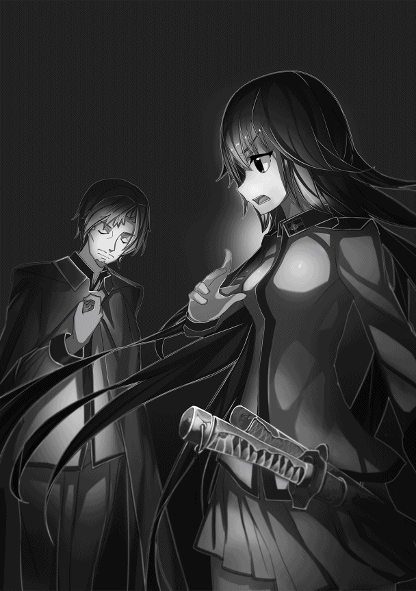
悲しそうにそう告げた一花ちゃんは、案内役の兵士をひとり残し、名残惜しそうに大きめの天幕の中へと消えていった。
「食事の準備ができております」
一花ちゃんたちが入っていった天幕から少し離れたところに用意された、おそらく幹部専用の食事スペースに俺と遥は案内された。屋根だけが張られたテント中に設置された簡素な長いテーブルに、出来たての食事が二人分すでに用意されている。
「冷めないうちにお召し上がりください」
「ありがとう。私的な話をするから外してくれないかな」
「はっ、了解いたしました」
案内役の兵士は、外してくれたとはいっても少し離れたところで背を向けている。一花ちゃんに案内役を命じられ、たいそう感激していたようだったから、役目を忠実に守って俺たちの視界から彼が消えることはなかった。
しかしながら、今から話す内容を彼に聞かれてしまうのはマズいだろう。そう考えて、夕食をとりながら、俺は遥に事のあらましを小声で説明した。
「──とまあこんな感じだったんだ」
「それで一花様があれほど厳しい顔に......作戦はどうなるのかな」
「うーん、正確なことは分からないけど、やるにしても派手なものにはならないんじゃないかなぁ」
「わたしたちの出番はなさそうだね」
「うん、よほどのことが無いかぎり無いと思う」
ここに来る前までは訓練の成果を試したいような口ぶりの遥だったが、俺の話を聞いたあとでは、出番がないだろうことに安堵しているような感じだった。食事を終えた俺と遥は、その後しばらく雑談しながら一花ちゃんを待っていたが、彼女が食事に現れることはなかった。
それどころか、将校たちの姿を見かけることもなかった。たぶん方針が決まらなくて会議が長引いているのだろう。結局、一花ちゃんの姿を見たのは翌朝になってからだった。残念なことに、俺は一花ちゃんや遥とは別のテントで寝ることになったのだが、大公国軍の作戦時なのだからそれも仕方がないことなのだろう。どんよりと曇った空が、俺の残念な気持ちを代弁しているようでもあった。
「おはようございます」
「おはよう空」
「おはよう一花ちゃん、遥」
作戦決行日の早朝、俺の前に遥とともに現れた一花ちゃんは、睡眠はとれたようでさわやかな笑顔だった。いつもより少しだけ引き締まった顔をしているが、昨日のような厳しさはすでになくなっている。
「方針はきまった？」
「ええ、中止にするかしないかで揉めたけど、決行することになったわ──」
一花ちゃんに詳しい話を聞いたところ、作戦を完全に中止にしてしまうことは軍の力だけでは難しいということだった。俺にはよく分からない理屈だが、一度正式に決定した作戦を敵が強いからというだけで中止にしてしまうと、兵士たちの士気に悪影響が出るのだそうだ。
作戦が終了した後も戦線を維持しなければならない大公国軍にとって、兵士の士気低下が起こると、後々マズいことになるらしい。さらに、最高評議会に対しての大公国軍の立場が弱くなるとも一花ちゃんは言っていた。軍には軍の事情というものがあるのだろう。
富士山跡地のおぞましい状況については、将校以外の兵士たちには伏せられることが決まったらしく、その理由を聞いてみれば、大公国で暮らしている国民に余計な不安を与えないようにするためということだった。
人の口に戸はたてられないというが、良くない噂ほど早く広まって国民の不安を煽ることを危惧 してのことらしい。ただし、国の首脳部には昨晩の時点で事の詳細が報告されており、早急に今後の方針というか対策を講ずるべきだということも併せて進言されたそうだ。
もちろん、当初の作戦案にも大幅な変更が加えられたということだった。昨日偵察して分かったことだが、クレーターの外部にも数は少ないが妖魔が徘徊しており、その中から弱そうな個体だけを選んで誘い出すらしい。
今俺たちがいる前線からクレーターの外縁までは、七、八キロの距離があるが、主戦場となる前線の位置を一キロほど前進させて妖魔の巣へ侵攻したという既成事実をつくり、最高評議会への体面を保つことになったらしい。
政治的なことは俺には分からないが、軍には軍のプライドというか立ち位置というか、そういった面倒なことも考えないといけないそうだ。
一花ちゃんからそんな話を聞いたあと、作戦は予定通りに、そして静かに決行の時を迎えた。二万を超える兵士たちが扇状に広がり、包囲網を狭めるかのごとく長い前線を富士山跡地に向けて前進させていく。
とはいっても、その前進も予定どおり一キロ弱で停止したわけだが、前線のほぼ中央後方にいる俺たちに、その全容を視認することはできない。作戦では前線の兵士たちが停止したのち、あの涼子さんが率いる遊撃小隊の面々が弱い妖魔を誘い出すべく動き出すことになっている。
「あの小隊長さんにはすべてを話したの？」
「ええ、彼女にだけは伝えました。ですから無謀に奥深くまで侵入することはないでしょう」
俺たちの前方百メートルほどに展開する前線の兵士たちのさらに向うに、遊撃小隊の誘い出し役がいるはずだ。俺は妖魔に余計な刺激を与えないように、いつもより薄く〝気〟のレーダーを広げて彼、彼女らの動きを追ってみることにした。
もちろん妖魔の位置も把握すべく察知には細心の注意を払っている。一花ちゃんと偵察した時のままだとすれば、今の前線の位置から一キロほどで妖魔に出くわすはずだ。そのあたりにいる妖魔は、極々少量の〝妖気〟が湧き出す場所に点在していた。
「お、さっそくコンタクトしたみたいだ」
「えっ!? 空様には遊撃小隊の様子が見えるのですか？」
「一花様、空の察知能力は発掘師のなかでも桁外れにずば抜けていますよ」
驚く一花ちゃんに遥が説明している構図だったが、前方一キロ強に広がっている遊撃小隊の面々と、彼、彼女らがコンタクトしようとしている妖魔の位置を、俺は把握することができた。
凹凸 がある地形やいたるところに顔を出している岩、そして点在する木々や林のせいで、俺の超強化された視力でも直接視認することはできないが、〝気〟のレーダー網にはクッキリと妖魔と小隊の面々の動きが映し出されている。
「じっとしている妖魔に、離れたところから石を投げているみたいだね。おっ、妖魔が動き出した」
「流石は空殿ですな。そこまでお解りになるのでしたら、今後とも我々に協力願いたい」
「まったく藤崎候のいうとおりだ。飛行することもできる空殿は、ぜひとも軍に志願してほしいものだ」
みんなに知らせようと状況を口走ったら、ともに前線を注視していた藤崎さんと凛さんに感心されてしまった。
「藤崎、鵜ノ木中将、無理を言ってはなりませんよ。空様には貴族として、そして私の夫としての務めがあるのですから」
一花ちゃんはそのふたりをたしなめるような口ぶりだったが、顔だけは得意げであり、そして嬉しそうでもあった。
一花ちゃんはすぐに顔を引きしめて前線に視線を戻したが、俺としてはその掛け合いで彼女の表情に明るさが一瞬でも戻ったことが嬉しかった。
横に逸れた意識を妖魔と遊撃小隊に戻してみれば、各隊員がそれぞれ二匹から三匹ずつ妖魔の誘い出しに成功していた。しかも彼、彼女らが誘い出した妖魔は、ほとんどがカテゴリー三までの弱いものに限られており、各隊員が示し合わせたかのように扇状に延びた前線へと散らばっていった。
そして、ついに俺たちの正面の兵士たちが殺気立ち、そして雄たけびが上がった。
「誘い出しは成功したみたいだね。実に見事だったよ。綺麗に分散させているし」
「当然ですよ。彼らは大公国軍のなかでもエリートの集団なのですから」
そう言って満足そうに口の端を上げた一花ちゃんが見守るなか、ついに妖魔との戦端が開かれたのだった。
作戦が開始されて数時間が経った。戦線の後方から戦況を見ていると、大公国軍の兵士たちは実に上手く連携をとって、誘い出されてきた妖魔と戦っていた。
戦っているのは全体の三分の一ほどの兵士だが、上手くローテーションしてキッチリと休憩を取り、体力を温存しながら戦線を維持している。戦っている兵士も、決して無理な攻撃はしないし、各々がキッチリと自分の役目を果たしていた。
「この調子じゃ本当に俺たちの出番はないな」
「本当だわ、訓練された戦闘のプロ集団って感じがして、個人プレーに走りがちなわたしたち発掘師とは全然違うね」
俺も遥も、兵士たちの見事な戦いぶりに称賛を送るしかなかった。そして称賛を送りながらも、遥は食い入るように兵士たちの戦いぶりを見ていた。彼女の真剣な顔つきは、兵士たちの戦い方を貪欲 に学ぼうとしているかのようだった。
戦闘がはじまると、一花ちゃんは軍全体の指揮を執るために凛さんを残し、藤崎さんとともに俺たちのもとを離れた。今、目の前で安定した戦いを繰り広げている部隊は、凛さんが率いている中隊らしいが、中隊同士の連携というか、戦列に穴があいて妖魔が街の方に入り込まないようにする必要があるということだった。
各中隊がいくら安定した戦いを続けようと、中隊同士の位置関係も常に把握して、突出しすぎたり間が広がりすぎたりしないようにしなければならないそうだ。
兵士たちの戦いぶりを見るに、カテゴリー三までの妖魔だったら安定した戦いができることは明白だった。
しかし、それ以上に強い妖魔だったら？ という疑問が、ふと頭をよぎった。
「もしカテゴリー四以上の妖魔が襲ってきたらどうなるんですか？」
「......そうだな。カテゴリー四の襲撃があった場合は戦術が変わる。直接相手にできるのは我々将官と中隊長クラスだが──」
満足そうに部下たちの戦いぶりを見ていた凛さんに疑問をぶつけてみたら、懇切 丁寧に説明してくれた。その説明によると、襲撃してきた妖魔がカテゴリー四だった場合は将官、つまり騎士階級の者だと二名、中隊長クラスの場合だと四、五名で連携をとって倒すことができるらしい。
しかしながら、それだけ腕がたつ者が同じ戦場にいる場合は少なく、現に今もこの場には騎士階級の凛さんと中隊長がひとりしかいない。
ならばどうするのか？ 答えは陽動を小隊長数名が務めて、騎士階級の者と中隊長が攻撃役にまわるそうだ。それでどうにか倒すことができるらしいのだが、そもそもカテゴリー四以上の妖魔は年に数えるほどしか出現することはなかったらしいし、カテゴリー五の妖魔が襲撃してくることは極めて稀で、その場合は参集できる全軍をもって対応するか、一花ちゃんや陽一さんが出張ってくるしかなかったらしい。
「──しかし、去年はカテゴリー四の襲撃が目立った。もし今年もそうであるならば、この作戦も気を抜くわけにはいかない」
説明を終えた凛さんは、キリリと表情を引き締めて戦う兵士たちに視線を送っている。今、俺たちの前方で二手に分かれ、連携をとって狼型の妖魔二頭との戦闘に参加している兵士たちは合わせて二百名ほどだ。
凛さんによるとあの狼型の妖魔はカテゴリー三に当たるそうだから、一頭に対して約百名が当たっていることになる。旅の時に遊撃小隊の兵士たちは、二名から三名一組で同レベルの妖魔と戦っていたから、彼、彼女らの戦闘能力が軍の中でいかに突出しているのかよく分かった。
そんな遊撃小隊の兵士たちは、戦況を観察しながら適度に妖魔を誘い出しているようだった。その様子を離れたところから見ていた俺には、この作戦が兵士たちの訓練のように見えてならなかった。ついついそんなことを口走ってしまったら、凛さんが感心したような顔になった。
「ほう、空殿はそこまでお見通しか」
「いや、感じたことがつい口に出ただけで、見通しているわけでは」
「謙遜するな。表立っては言えぬことだが、事実、この作戦は評議会のくだらない決定を利用した訓練にすぎぬ。半月後からはじまる前線での防衛戦に向け、冬の間になまった兵たちの訓練になるようにと、参謀が作戦を変更したのだ」
表立っては言えないことを、凛さんは笑いながら教えてくれたが、それは俺たちのことを信用してくれているからのことだろう。彼女と会ったのは今回が初めてだが、一花ちゃんが俺たちのことを話していてくれたということだろうか。
凛さんは、とても口が軽そうには見えない人だから、そうとしか考えられない。
それはそうと、妖魔討伐作戦と銘打たれた実地戦闘訓練は、俺と遥の出番が無いまま、翌日もその翌日も続けられた。夜になって一花ちゃんに聞いた話では、このまま十日ほど、この位置で作戦を実行し、終了後に戦線を例年の位置まで後退させて防衛活動に入るそうだ。
俺と遥は、何ごともなければ形だけの参戦であり、いざというときの切り札という位置づけらしいから、戦線が完全に落ち着いた作戦三日目には、もう引きあげても構わないと言われてしまった。
しかし、そう教えてくれた一花ちゃんの顔には、一緒にいてほしいとも書いてあった。大公国軍のトップという立場上、彼女がそんなことを口に出せるはずがないのだから、ここは俺が気を利かせるべきだろう。
もちろん俺には一花ちゃんを一人残し、安全なところに引き下がるつもりはないし、もったいぶった言い方をするのは性に合わないから、作戦が終わるまでは居残るつもりだと伝えておいた。
横で聞いていた遥は、俺が残るのなら、とまでは言わなかったが、自分も作戦終了まで残ると意思表示した。
「まったく、空様は一度決めたら後には引きませんね。でも、ありがとうございます」
一花ちゃんは申し訳なさそうにそう言ってくれたが、その顔からは喜びの色がにじんでいた。俺の考えは間違っていなかったようだ。
そんなこんなで作戦開始から一週間がたった今でも、俺と遥は戦場に残っていた。されど、戦いに参加することはなく、ヒマを持て余すことになったのは事実であり、そしてそれは遥にも当てはまることだった。
ヒマそうにしている俺と遥を見かねたのか、それとも俺たちの戦闘力に興味があったのか、その両方かも知れなかったが、見かねた凛さんが俺たちに話しかけてくれた。
「やることが無いならば、二人で訓練でもされたらいかがか。戦線は私が見ているから気になされる必要はない」
凛さんのこの提案はありがたかった。一も二もなく頷き、その提案に乗った俺と遥は、凛さんの部下らしき兵士から木刀を受けとると、なまりかけていた体をほぐすかのごとく打ち合いをはじめたのだった。
◇◇◇◇
煌びやかな鎧にその身を包み、腕組みをして戦況を睨みつけている御堂虎次郎は、その顔が示すがごとく苛立ちを募らせていた。
己が考え出した比類なき作戦に身勝手な変更が加えられ、戦線の端に配置されたことにも納得がいかなかったが、わずかに侵攻しただけに留まり、散発的に現れる妖魔を討つだけの毎日に、このままでは、計画がとん挫することが目に見えていた。
作戦の詳細に関しては、軍に決定権があることを理解はしているが、侵攻とは名ばかりの腑 抜けた臆病さに、虎次郎の胸中には落胆と失望、そして言いようのない怒りがこみあげていた。
作戦終了の期日まではあと三日を残すのみ。今後これ以上妖魔どものテリトリーへと侵攻する指令は下っていない。予備役として大公国軍の指揮下にある以上、この腑抜けた臆病な作戦に従わざるを得ないが、大義を成しとげるためには、義勇軍として大公国軍の指揮下を離れ、志を共にする者たちとテリトリーの奥深くまで侵攻すべきではないか。
もうこれ以上、臆病な大公国軍に付き従う意味はない。虎次郎はそう思うようになっていた。
指揮下を離れて侵攻すれば、大公国軍との軋轢 が生じるだろうが、所詮 軍は最高評議会の駒 だ。最高評議会議員たる自分の行動にとやかく言われる筋合いなどない。
大公国を苦しめている妖魔どもを殲滅するという崇高な目的を達成するためには、もはや臆病な軍に従っている場合ではない。焦りからだろうが、虎次郎の考えはすでに引き返せないところまで行きついてしまっていたのだった。
「戦場に集いし同志たちよ！」
今しがた襲ってきた低レベルの妖魔を仕留めたことを確認した虎次郎は、抜刀したそれを天高く、そして力強く突き上げて叫んでいた。
もはや彼を止めることができる者はこの場にはいない。虎次郎は当初からの持論を声高に語り、そして宣言した。
「我々は憎き妖魔どもを殲滅せしめんとこの場に赴 いている。しかしこの惨めな現状はどうだ？ 愚鈍な亀のように縮こまり、臆病なウサギのごとく踏みとどまっているだけではないか！ 崇高なる使命を果たさんとはせ参じた私には、これを打破し、輝かしい戦果を勝ち取る義務がある。この崇高なる考えに賛同する者は私のもとへ集い、共に戦おうぞ！ 妖魔どものたむろする奥深くへと攻め入り、憎き奴らを殲滅せしめようぞ！」
虎次郎の話に聞き入っていた者たちから、怒号のような雄たけびが上がった。次々に賛同者が虎次郎のもとへと駆け寄ってくる。
「我々もこの戦いには辟易 していたところだ。奥深くへと攻め入り、妖魔どもを蹴散らそうぞ」
「まったくもって虎次郎殿の言われる通りだ。私も参戦しますぞ。輝かしい戦果をこの我々の手で勝ちとりましょう」
集まってきた者たちは、次々と虎次郎への賛同を示していった。そしてその数は、五百名を超えるほどにまで膨れ上がったのだった。
◇◇◇◇
戦線の端のほうで不穏な動きが出ていることなどつゆしらず、遥との打ち合いを終えて一休みしていた俺のもとへと、凛さんが急ぎ駆け寄ってきた。
心地よい疲れと、脱力感が支配的な俺だったが、険しい顔をしている凛さんを目の当たりにして、気持ちがぐっと引き締まった。遥も緩んでいた表情をを引きしめている。
「空殿、緊急事態だ」
「何かあったんですか？」
「造反者が出た。誠に忌まわしきことだが──」
凛さんが言うには、予備役として参戦していた最高評議員の十数名と、彼らに賛同する者たちが戦線を離れ、独自行動をとっているということらしい。しかもその離反者たちは、撤退するのではなく、無謀にも妖魔たちのテリトリー内部へと侵攻しているそうだ。
「すでに一花様と将官数名が止めに向かったが、妖魔どもを無駄に刺激する事態になりかねん。防衛上私はこの場を離れられぬが、空殿にはぜひ一花様のもとへと急いでもらいたい」
自分の意志で参戦している予備役の兵たちがどうなろうとも、俺的には他人事なのだが、命令に従って戦線に出ている兵士たちや、ましてや一花ちゃんに迷惑をかけているとあってはそんなことなど言っている場合ではない。
一花ちゃんや将官が妖魔に後れを取ることはないと思うが、もしも大量の妖魔が動きだした場合、その全てを漏らさずに対処することは難しいだろう。
しかも今までは、遊撃小隊の兵士たちが弱い妖魔を選んで誘い出していたというのに、彼らの苦労を台無しにする暴挙とも呼べる予備役たちの身勝手な行動に、このとき俺は無性に腹が立った。
「分かりました。すぐに向かいます。遥はどうする？ 今は疲れてるだろ、無理しなくてもいいよ」
「わたしだけのうのうと待つことなんてできないわ。もちろん連れて行ってくれるんでしょ」
「分かった。遥がその気なら一緒に行こう」
口調は柔らかかったが、遥の顔には、分かってるんでしょうね、と言いたげな迫力があった。ここでもし彼女を置いて行くようなことをしてしまえば、あとでグチグチ言われることは間違いないし、一緒に行きたいと思う彼女の気持ちも理解できた。
万が一にでも遥に危険が及ばないよう、注意して動く必要はあるだろうが、今の彼女ならカテゴリー四程度の妖魔の対処は無難にこなすはずだ。実際に遥は、旅の前と比べると別人のように強くなっている。
そう考えると、彼女に対する心配は余計なことなのだったのかもしれない。
「防具を装備したらここに集合な」
「ええ、わかったわ。空こそ遅れないようにね」
なんて軽口をたたいてきた遥の顔には、安堵の色が見てとれた。
寝泊まりしているテントに急いで戻り、簡単な防具をを身につけ刀をもった俺は、動きやすそうな軽装備を身につけてきた遥を有無を言わさずに抱きかかえると、そのまま上空へと舞い上がり、一花ちゃんの向かっている先へと急いだのだった。
◇◇◇◇
遊撃小隊の兵士たちによって誘い出されたランクの低い妖魔を討伐することに、不満を募らせていた御堂虎次郎は、指揮する予備役部隊を引き連れて大公国軍の指揮下を離れた。
もちろんそんな身勝手なことは、軍規にもとる許されざる愚行であり、大公国軍総指揮官をつとめる一花の知るところとなった。
しかしながら、妖魔討伐作戦の発案者であり、その作戦で華々しい戦果を挙げることしか考えていない御堂虎次郎は、自分の行動が軍規に背いているものだということまで考えが及んでいなかった。
虎次郎率いる予備役部隊は、彼を先頭に悠然と妖魔のテリトリーへと侵入を果たした。
前線の位置からは、五キロ弱富士山跡地に向かって前進したことになるが、その途中々々でランクの低い妖魔討ち果たし、敵の本拠に乗り込んだ高揚感と併せて、周囲の様相が変化していることに、彼らが気づくことはなかった。
もともと虎次郎に付き従う予備役部隊には貴族家に連なる者が多いため、その〝気〟力は一般兵と比べて高い傾向にあった。
一般兵の平均〝気〟力が百五十前後であるのに対し、彼らのそれは三百に近い。
さらに、虎次郎の腰ぎんちゃくに位置する者たちは、五百前後の〝気〟力持ちであり、虎次郎に至っては、名門貴族嫡男の名に恥じない千強の〝気〟力を有していた。
彼らが不用意に垂れ流す〝気〟に寄ってきたカテゴリー三の大山犬を、寄ってたかって宝玉がはめ込まれた軍刀で切りつけ、虎次郎がとどめにその首を切り飛ばし、刀を天に向けて突き上げる。
「高貴なる我ら選ばし者の前に敵はない！ 妖魔どもを殲滅させようぞ！」
妖魔を仕留めて興奮冷めやらぬ虎次郎の叫びに、呼応するかのように雄たけびが上がった。
しかし次の瞬間、彼らの高揚しきった感情は、絶望のそれへとベクトルを変えることになった。
虎次郎ら数百名の一団がが垂れ流す〝気〟に反応したのは、切り伏せられた大山犬だけではなかったのだ。
彼らの横手から、のそりのそりの近づいていた大爪熊が両腕をあげて立ち上がり、大気をビリビリと振るわせるほどの咆哮 を上げた。
一瞬、あたりは静寂に支配されるが、次の瞬間には悲鳴と絶叫が響くことになった。
立ち上がって咆哮を上げた大爪熊は、身をかがめて一瞬のうちに一団の中へと殴り込み、その巨大で鋭い爪を、何度も何度も振りぬいた。
予備役兵たちは渾身の力で刀を振るって対抗しようと試みたが、大爪熊のあまりの硬さに、その刀はむなしく弾かれるだけだ。
爪に腹を裂かれ、あるいは首から上を吹き飛ばされ、一瞬のうちに数名が命を散らす。
大爪熊はカテゴリー四に当たる妖魔だが、その強さを知る十分に訓練された正規兵ならば、無謀に近づいたり、ましてや切りかかったりすることはない。
集団で連携し、注意を分散させて戦うことを徹底することができる。
今、大爪熊に急襲され、逃げ惑う予備役兵のように、醜態 をさらすことなどあり得ないのだ。
大爪熊に急襲された虎次郎率いる予備役兵の一団は、一瞬のうちに戦意喪失し、恐慌状態に陥っていた。
すでに十名近い者が命を散らし、散り散りに逃亡する兵まで現れた。
虎次郎はこの惨状を目の当たりにし、殺戮 の限りを尽くしている大爪熊に恐怖するより先に、そして倒れて動かなくなった者を案ずるより先に、逃げ惑い、醜態を晒す兵らを嘆いた。
なんと、なんと情けないことか。これが選ばれし者たちだというのか、いや、真に選ばれし高貴なる者は敵に後背を晒すような醜態など決して晒さない。
「たかが妖魔ごときに無様な姿を晒すな！ 敵に後ろを見せるような臆病者に用などない。我こそと思うものは私に続けぇ！」
虎次郎の鼓舞に付き従ったのは腰ぎんちゃく五名のみだった。
その腰ぎんちゃく全員が恐怖を顔に貼りつけてはいるが、歯を食いしばって刀を握る両手に力を籠め、敵に向かって走り出した虎次郎に続く。
死と〝妖気〟をまき散らしながら一暴れした大爪熊は、近づいてくる高濃度の〝気〟の塊に気づいた。そしてひときわ大きな咆哮をあげると、その一団に突進したのだった。
突進してくる大爪熊を迎え撃とうとした虎次郎は、何が起こったのか理解できなかった。
全身からみなぎる〝気〟を体にまとい、全力で大爪熊に切りかかったところまでは記憶にあった。
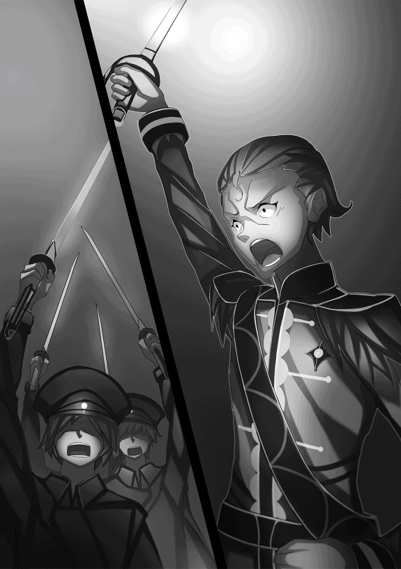
しかし気がついてみれば、自分の体は天高く打ち上げられ、はるか眼下に兵たちに巨大な爪を振りかざす大爪熊が見えた。
そして同時に、腹のあたりから込み上げてくるような熱さに気がついた。すでに刀は彼の手にはなく、空いた右手で腹をさすった虎次郎が感じたものは、生温かいぬめりと急激に増してくる激痛だった。
渾身の力で放った一撃。その一撃をいともたやすく払いのけ、次の瞬間にはその凶悪で鋭い爪が虎次郎の腹に突き刺さっていた。
その衝撃で、虎次郎は天高く舞うことになったわけだが、強敵との実戦など経験がなかった彼に、その瞬間を見極めることなどできるはずがなかった。
すでに落下しはじめ、大地が目前に迫った虎次郎は、なんとか着地の態勢を整えるが、大地に足が触れ、その衝撃が体中を駆け巡った瞬間、腹からくる激痛が彼の意識を刈り取ろうとした。
しかし、虎次郎はその激痛になんとか耐え、朦朧 としながらもなんとか意識をつなぎとめる。
大爪熊の圧倒的な戦闘力の前に、いかに最高の装備に身を固めようと、〝気〟力千程度の未熟な人間が敵うわけがない。
そんな当然の理屈が虎次郎には理解できなかった。甘やかされて育ち、敵対する者など一人もいなかった。学友と刀術を競っても、敗北した経験など一度たりともなかった。
もちろんそれは、虎次郎の〝気〟力が高いこともあるが、本当の理由は対戦者が彼に勝とうとしなかったからだ。持ち上げられ、おべっかを使われ続けた結果が今の虎次郎を形成していた。
そんな虎次郎が、はじめて敗北を意識した。落下して激痛に耐えている虎次郎に気づいた大爪熊が、あざ笑うかのようにジリジリと彼との距離を詰めてくる。
虎次郎は激痛に耐えながらも、腹からの止血に〝気〟を流し、そして身構えた。もう彼の周りには一人の味方もいない。大爪熊は、最後の獲物を逃すまいとその爪を振り上げた。そしてその凶悪な爪が振り下ろされた瞬間、虎次郎は残った力を振り絞って横方向に飛び退った。
はじめて味わう死の恐怖に硬直しそうになった虎次郎だったが、名を成し、目的を果たさぬまま果てるわけにはいかなかった。それが彼に最後の力を振り絞らせた。
「私はまだ何も成してはいない。こんなところでのたれ死ぬわけにはいかぬのだ」
視線を大爪熊に固定したまま、身を低くしてジリジリと後ずさり、一瞬の隙を見て虎次郎は駆け出していた。
敵に背を向けて逃走するという屈辱にまみれても、今死ぬわけにはいかなかった。必死に走り続ける虎次郎を、大爪熊は執拗に追いたてる。運が悪いことに、彼が逃走した方向は妖魔本拠の中心に向かっていた。恐怖と助かりたい一心で、逃げるべき方向まで考えが回らなかったのだ。
必死になって逃げる虎次郎。そして彼を追いたてる大爪熊。ジリジリとその差がつまり、虎次郎は大爪熊の息遣いと〝妖気〟を、その肌で感じるまでになった。
もうダメだ。虎次郎がそう思った次の瞬間、彼の足もとが急激に盛り上がり、大地がはじけた。
投げ出されるように十数メートル空中を走った虎次郎は、着地を決めることもかなわずゴロゴロと無様に転がって、奇跡的に難を逃れていた。わけが分からないままに顔を上げた彼の視界には、大爪熊を包みこむように咥えた不気味で巨大な何かがそびえ立っていた。
このとき虎次郎は、一時的にでも助かった安堵よりも、その不気味な何かから放たれる圧倒的な威圧感に腰が抜け、視線を外すことも、立ち上がって逃げることもできなくなっていた。
その状況を的確に表現するならば、虎次郎はまさに、蛇に睨まれて動けなくなったカエルそのものだった。
◇◇◇◇
遥を抱きかかえて大空に舞い上がった俺は、一花ちゃんが向かった先を目指して全力で空を駆けた。
〝気〟で翼を形成することで、飛ぶことに難はなくなったが、速度的にはまだまだ満足できるレベルには至っていないと自覚している。しかしそれでも、馬で駆けるよりは格段に早い速度での飛行は、実現できていた。
距離がありすぎて、一花ちゃんの位置を特定することはできなかったが、凛さんに教えてもらった方向にしばらく飛んでいると、ようやく〝気〟のレーダーに彼女の影が映りこんだ。
方向を少しだけ西に変え、きもち高度を落としてしばらく飛ぶと、全速力で馬を走らせている一花ちゃんと、それを追っている五名のおそらく将官が、俺の視界に飛び込んできた。
俺は高度をさらに落とし、地上五メートルほどを保ちつつ一花ちゃんに追いついた。同時に、前方から数名の兵士らしき影が走り来る姿が見えてきた。が、今はそんなことより。
「一花ちゃん」
不意に上空から声をかけられたからだろうか、一花ちゃんはすこし目を丸くして振り向いた。けれども俺の顔を見た途端に、安心したように一瞬だけ笑顔を見せてくれた。
俺は一花ちゃんの横に移動し、前から人が駆けてきていることを疑問形で告げることにした。
「あれは逃げ出してきたのかな」
目を細めて前方を注視した一花ちゃんが馬の勢いを緩めた。彼女を追っている将官も、併せて馬の速度を緩めている。
「まちがいありません。おそらく予備役兵でしょう。事情を聞いてみます」
「分かった。まかせるよ」
駆けてきた兵士二人の前をふさぐように一花ちゃんが馬を止めると、兵士はぜいぜいと息を切らしながらも、安堵の表情を浮かべた。俺は一旦地上に降り、遥とともに話を聞くことにした。
「何があったのですか？ 詳しく状況を報告なさい」
馬から降りることなく、一花ちゃんは問いかけた。しかしその口調は、苛立っているからだろうか、いつもとは違う棘のあるものだった。
兵士二人は、息が上がってしばらく話すことができなかったが、キツめの視線で見下ろしている一花ちゃんに気づくと、安心しきっていた顔を再びこわばらせ、慌てるように片膝をつき、視線を合わせないようにうつむき気味にその口を開いた。
「一花様におかれましては」
「かたくるしい挨拶は不要です。要点だけを簡潔に述べなさい」
「ハッ、こっ、御堂虎次郎様の号令に従い、部隊を前進させ──」
緊張と恐怖からだろうか、報告する兵士の声は上ずったかん高いものになっていた。そしてその報告は、呆れかえるほどに自己中心的で、無謀かつ迷惑極まりないものであり、まさに開いた口がふさがらない内容だった。
一花ちゃんも俺と同じことを思ったのだろうか、報告を聞く顔が次第に険しいものへとなっていくのがありありと見てとれた。兵士二人を取り囲むように馬上から見下ろしている将官たちも、一花ちゃんと同じように険しい顔つきになっている。
「──巨大な熊型の妖魔に襲撃され、恥ずかしながら逃げて参りました」
「分かりました。御堂虎次郎には開いた口がふさがりませんが、今は救出を急ぐしかありませんね。貴方たちは早急に撤退なさい。追って連絡があるでしょうから自宅待機を命じます」
一花ちゃんの命を受け、こわばった兵士二人の顔が絶望の色に染められたとき、俺のレーダー網にかかるいくつかの影が現れた。そしてその状況は、予断を許さない危機迫るものだった。
「一花ちゃん、マズい状況になった。たぶんカテゴリー四の妖魔が三体......いや、もっと居る十二、十三、十四体。それと雑魚妖魔が百数十体。大勢の兵士を追いたてている。方向はあっちだ。もうすぐ見えてくると思う」
「なんですって！」
そう叫んだ一花ちゃんの顔には焦りの色が色濃くうかがえた。
「藤崎を除く将校はカテゴリー三以下の雑魚を引き連れつつ戦線に戻れ。そして戦線を維持したまま通常位置まで後退後、防衛活動に入りなさい」
「ハッ」
綺麗に四人で息を合わせるかのように敬礼を返した将校たちが、ゆるりと前線へ馬を歩かせる。残った一花ちゃんと藤崎さん、そして俺と遥が富士山跡地方向に目を凝らした。しばらくして大勢の人影と妖魔の群れが視界に飛び込んできた。
「カテゴリー四の妖魔は私が引きつけて始末します。藤崎と遥さんは雑魚をできるだけ対処お願いします。空様は私と共に」
「了解！」
ここは一花ちゃんに任せるべきだろう。個人プレーに走って軍に迷惑をかけるわけにもいかないし、何より彼女は集団戦のプロだ。妖魔の群れに向かって駆け出した一花ちゃんに俺は続いた。
妖魔に追われ必死に逃走する兵士たちにすれ違いざま険しい一瞥をくれた一花ちゃんは、雑魚妖魔の群れの中を一直線に、雑魚を切り捨てながら目標へと向かってひた走る。その速度のあまりの速さに雑魚たちは反応できなかった。
「空様は左の大爪熊を！」
群れの中に点在するカテゴリー四の熊型妖魔を、立ち止まることなく一刀のもとに切り伏せた一花ちゃんが叫んだ。
「任された！」
そう叫んだ俺に振り返ることなく、一花ちゃんは次の目標へと進路を変える。そんな彼女を頼もしく思いながらも俺は左に進路を変更し、熊型の妖魔をすれ違いざまに切り伏せた。
以前ツルハシで戦っていたときはあれほど苦労して倒した熊型の妖魔を、まるで豆腐でも斬るように両断した刀の切れ味に、専用武器の、ある意味理不尽な性能を実感することになった。続けてきた刀術訓練の成果ともとれるが、やはり武器の性能が圧倒的に違いすぎる。
走る速度を落とすことなく次の目標に向かって方向を転換し、一花ちゃんに視線を向けてみれば、彼女はすでに二匹目を両断した後だった。すでに相当離れてしまったが、俺の視線に気づいた一花ちゃんは、安心するように頷くような仕草の後、走る方向を変えたのだった。彼女も俺と同じように、目標の位置を感知することができるのだろう。
六匹目の熊型妖魔を倒し終えたあと、俺のレーダー網から大きな反応が消えていた。一花ちゃんは八匹を倒したということになる。周りに雑魚妖魔の姿は無く、俺は一花ちゃんのもとへと急いだ。
「やっぱり一花ちゃんにはまだ敵わないな」
「空お兄ちゃんも凄いよ」
とりあえずの脅威を取り除いて安心したからだろうか、一花ちゃんの口調がふたりきりのときに戻っている。
「あんまり奥に行かないほうが良いよな。これからどうする？」
「遥さんたちに合流します」
「じゃぁ俺も」
「......できればだけど、空お兄ちゃんは空から偵察お願いできるかな。負傷している兵がいたら回収してほしいの」
カテゴリー四の脅威がなくなった今、遥や藤崎さんの実力を考えるとカテゴリー三の妖魔が群れていようと苦にはならないいだろう。
「分かった」
「お願いします」
そう言って駆け出した一花ちゃんを見送るように、俺は空へと浮かび上がるのだった。
◇◇◇◇
御堂虎次郎は出現した妖魔の圧倒的存在感に、絶望感を通り越して思考停止に陥っていた。
カテゴリー四の大爪熊が小さなおもちゃのように持ち上げられ、まるでおしゃぶりをしゃぶるかのごとく〝妖気〟を吸い取られていくさまは、そのヒルを思わせる妖魔の巨大さとグロテスクさも併せて、異次元の存在を思わせるものだった。
虎次郎はこの絶望的状況から逃げ出そうということも、大爪熊にえぐられた腹の傷からの止血も忘れ、ただその圧倒的存在から目が離せないでいた。そしてそれが、彼の運命を決定づけることになった。
虎次郎は気づけなかった。尻餅をつく形で触れているその大地が、ヒル型の妖魔からにじみ出た妖しく禍々しい超高濃度の〝妖気〟で覆われていたことを。
超高濃度の〝妖気〟は、虎次郎の体に徐々に、しかし確実に浸透していった。腹の激痛さえ忘れさせる妖魔の圧倒的存在感は、彼が内包する〝気〟が〝妖気〟よってかき消されていく感覚さえも奪い去っていた。
失血で土気色をしていた虎次郎の顔が次第にどす黒い紫へと変色していく。同時に、彼が持っていた人としての感情や感覚もかき消されていった。腹の激痛は消え去り、〝妖気〟を求める欲求が芽生えてくる。そう、虎次郎は気づけないままに妖魔化してしまったのだ。
高かったプライドは消え去り、本能に従って虎次郎は動いた。妖魔化してしまった彼にとって、今一番の脅威は眼前にそびえる巨大な妖魔だった。虎次郎は本能に従い、脅威の前から逃亡することを選んだ。
妖魔は〝気〟をもつ存在に対して自らの命を顧 みずに攻撃行動に出るが、格上の同族に対しては逃げるか付き従うのだ。彼にとって、眼前の妖魔は圧倒的な格上であり、逃げるべき脅威だった。
むくりと立ち上がり、脱兎 のごとく西、つまり富士山跡地の中心部へと走り去った虎次郎の人としての人生は、この時代に人々にとって最も忌み嫌われる、みじめな形で終焉 を迎えたのだった。
◇◇◇◇
一花ちゃんたちのもとから飛び立った俺は、南西へと飛びつつ〝気〟のレーダー網を広げて取り残されたり怪我をした兵士がいないか探ってみた。結果、何人かの兵士が岩陰に隠れていたり、怪我をして動けなくなっていたのを確認するに至った。
予備役兵たちに誘い出された妖魔の集団は、分散して前線に向かっているようだったから大公国軍の正規兵がなんとかしてくれるだろう。
すでに群れの粗方を倒し終えた一花ちゃんたちにそのことだけを報告し、俺は怪我人の救出に向かうことにした。その途中、西の方に強力な〝妖気〟を察知したが、反応はほとんど動いていないし、今は怪我人を救出する方が先だろう。
「立てるか？」
青ざめた顔で両手を地について上体だけを起こし、ガタガタと震えている兵士が顔を上げた。空中から突然話しかけられたからだろうか、兵士はポカンと口を開けて固まってしまった。
「もう一度聞く。立てるか？」
「......こ、腰が抜けて立てません」
「じゃあ怪我をしてるわけじゃないんだな？」
「は、はい」
「このへんにもう妖魔はいないから向うに一人で逃げろ。俺は怪我人を運ばなけりゃならん」
「そ、そんな......」
怪我をして動けなくなっていると思って声をかけてみたら、腰が抜けているだけだった。紛らわしいことこの上ないが、若い予備役兵だということは、強い妖魔との戦闘経験などなかったのだろう。
腰が抜けるのも不思議なことじゃないのかもしれない。が、五体満足な者にこれ以上構っている暇はない。少しかわいそうな気もするが、自力で帰還してもらうことにしよう。
絶望的な顔で追いすがるように片手を空に伸ばした予備役兵を置き去りにして、俺は再び空へと舞い上がった。〝気〟を頼りに生きている兵士を空中から識別し、生きていれば鎧を掴んで安全な場所に運ぶこと十数回にしてようやく怪我人の救助が終わりを告げた。
一度に二人までしか運べないから効率が悪いが、俺の手は二本しかないのだから非効率なのも仕方がなかった。救助の途中、岩陰に隠れている者たちへは安全なルートだけを示し、明らかに死んでいる者はおおよその位置を記憶にとどめておくだけにした。遺体の回収は軍に任せればいいだろう。
最後の怪我人を運び終えた俺は、本陣へと向かうことにした。一花ちゃんたちはとっくに妖魔を倒していたようだったから、本陣へと戻っているはずだ。
そう思って本陣があった場所に飛んでみると、戦線が一キロほど後退しているのが遠目に見えた。探ってみれば、一花ちゃんと遥はその後方にいるようだった。〝気〟のレーダーを使う俺が、彼女たちを見失うことはない。
「負傷兵の回収ご苦労様です」
「うん。でも、結構戦死している人がいたけど、そっちの回収は良いの？」
「ええ、すでに遊撃小隊の者たちが回収に出ています。彼らは新たな妖魔を刺激するようなヘマをしませんから」
「一花ちゃんがそこまで言うなら任せることにするよ」
正直なところを言えば、遺体回収をしたいとは思わなかった。もちろん、遺族の心情は理解できるし、遺体を回収すべきだとは思う。
けれども、日ごろから死に接することが少ない二十一世紀の学生だった俺には、遺体回収の任は精神的にキツすぎるのだ。
綺麗な遺体ならまだ何とかなるかもしれないが、中にはかなり損傷の激しい遺体もあった。上空から見ただけでも吐きそうになったし、言い方は悪いが、あんなグロいものを持ち運ぶのは俺には無理だ。
それはそうと、今後のことを聞いてみれば、一花ちゃん曰く戦線が例年の位置まで後退したことで、当分妖魔の襲撃はなくなるだろうということだった。逃げ帰ったり助け出された予備役兵たちは、一か所に集められて尋問を受けているそうだ。
軍規違反の首謀者が捕まっていないが、回収された遺体の中に見つからなければ、賞金をかけたうえで、生死不明の指名手配されるということだった。もし生きて捕まれば、重大な軍規違反を犯した罪で極刑に相当する永久強制労働刑が待っているらしい。
首謀者の名は御堂虎次郎というらしく、今回の作戦を発案推進した者であり、俺も一度嫌味を言われたことがあって今でも顔は覚えていた。御堂虎次郎は鈴音ちゃんの腹違いの兄でもあるが、今となっては鈴音ちゃん母娘が御堂家から追放されたことが幸いした形になったのは、なんとも皮肉な結果で、他人の不幸を喜ぶわけではないが、胸がすく思いがしたのも事実だった。
ともあれ、不祥事が起こったことで妖魔討伐作戦は今日をもって中止になったわけだが、これ以上不測の事態があってはマズいので、兵の半数は前線に残し、防衛線を維持するらしい。
そうなると当然ではあるが、最高責任者の一花ちゃんは防衛線に残ることになるわけで、引き上げる半数の兵士たちとともに俺が帰るわけには心情的にいかなくなった。
もちろん一花ちゃんは帰宅してもいいと言ってくれたが、可愛い婚約者を残してのこのこ帰ることなんてできるわけがない。そんなことをすれば、男がすたるというものだろう。
まぁ俺が残ると言えば、遥も残りたがるのは予想通りだったが、帰れと無理強いすることもはばかられたので彼女の好きにさせることにした。
一花ちゃんが防衛線に残る期間は、明日から一週間程度らしい。その間に何ごともなければ、一旦帰投して休暇をとり、その後溜まった事務仕事をかたづけて再び防衛戦に赴くということだった。
休める期間は少ないが、最近働き詰めの彼女が少しでも休めるということに、俺は少しだけだが安心することができた。去年を思い起こせば、妖魔の襲撃は梅雨の時期まで続いたということだったから、一花ちゃんが防衛線で指揮を執る期間は四月から長くても三か月程度になるはずだ。
今年は宝玉をたくさん用意できたことだし、彼女の仕事も少しは楽になるだろう。そんなことを考えながら俺は就寝までの時間を過ごした。ここ最近寝る前はエロいことばかり妄想してしまい、なかなか寝付けなかったが、飛びまわった疲れもあってか、今日は横になると落ちるように寝入ってしまった。
しかし、朝の目覚めは最悪だった。かつて聞いた火事の時に鳴るような鐘の音で跳び起きる羽目になってしまったわけだが、それは敵襲を告げる警戒音だったのだ。
昨日の話では敵襲は当分ないだろうということだったのに、一体何がどうなったのだろうか？
うだうだ考えても仕方がないので、というか考え事をしている場合じゃないので、俺は速攻で着替え、刀を持ってテントから飛びだした。向かった先はもちろん一花ちゃんのところだ。
「何があった！」
と、一花ちゃんの顔を見るなり叫んでしまったが、聞くまでもなく答えは敵襲だった。
「恐ろしく強力な妖魔が出現したわ」
「空、一花様が答えるまでもなく、あの鐘の音は敵襲だって教わったでしょ？」
ひどく冷静に答えてくれた一花ちゃんに対し、俺より先に駆けつけていた遥のそれはツッコミだった。しかし、冷静なツッコミを入れられるようになったということは、遥の精神状態も安定してきたんだなと、考える余裕が俺にはできていた。
そんな余裕ができたのも、一花ちゃんも遥も少しも慌てていないからだった。そして余裕が出てきたおかげで、昨日感じた強力な〝妖気〟の反応を思い出した。救助に忙殺されて一花ちゃんに報告し忘れたのは俺のあきらかなミスだろう。
「ごめん一花ちゃん。実は昨日強力な〝妖気〟を察知はしていたんだ。でも、ほとんど動いていなかったから報告するのを忘れてた。で、恐ろしく強力な妖魔って？」
「空様は救助に飛びまわって忙しかったのですから気に病まれることはありませんよ。それで、偵察の報告によると、巨大な軟体動物。おそらく中心地で見たアレだと思うのです」
「アレっていうと、あのヒルみたいなやつ？」
「そうだとしか考えられないわ」
「で、どうしてそんなに落ち着いてるわけ？」
「それは私が説明しましょう──」
俺の問いかけに応えてくれたのは藤崎さんだった。なぜ責任者ではない彼が説明してくれたのかと言えば、偵察からの報告を直接受けたかららしい。まあ俺としては誰に説明してもらっても、状況さえ分かればそれでよかったわけだが。
藤崎さんによれば、皆が冷静でいられる理由は妖魔の移動速度が極端に遅いから、ということだった。妖魔が発見されたのは今の前線から二キロほど先で、その移動速度は時速に換算して一キロ未満という恐ろしくノロいものだったらしい。
「──ただし、〝妖気〟の強さから判断すれば、その強さは間違いなくカテゴリー五でしょう」
「もういいわ藤崎、説明ありがとう。私と空様は、上空からですがその妖魔を一度見ています。そしてその異様なまでの強さを肌で感じ取りました」
「うん、アレのヤバさは一花ちゃんが言う通り今までにないものだった」
「カテゴリー五の妖魔を簡単に倒してしまわれる一花様と空殿がそこまで仰られるとは......」
俺たちの会話に混ざってきた男は、と言ってしまえば軍議に割り込んだのは俺の方だから語弊 があるだろうが、三枝さんという中年にさしかかった将官だった。三枝さんは筋骨隆々で体が大きく、真面目そうな、いかにも武人そのままの人だ。
「へぇー、大公国最強のお二人が勝てないと仰るレベルの強さ」
少しおチャラけた口調のこの細身の中年将官は、菅井さんという人らしい。が、彼が言うように勝てない相手か？ と、問われれば、それは俺にも分からなかった。
それに、アイツのヤバさは物理的な強さよりもっとほかのところにあるように思えた。
「いや、戦ってみないと分からないけど、アレが出す〝妖気〟は人が近づいちゃいけないレベルのヤバさだったよ」
「その通りです。同じカテゴリー五の鬼ムカデや斑大 カマキリと比べても別格でしたから。あの〝妖気〟に触れれば三枝中将でも人生終わりますよ」
「おーコワイコワイ。にしても、新種......なんすよね？ なんで今まで現れなかったんだろ」
「今はそんなことを考えている場合ではありませんよ」
「そうですな。早急に対策を考えましょう」
会話の流れを変えたというか、軍議に戻したのは凛さんだった。そして藤崎さんの言う通り、問題はこのあとどうするのか？ ということだった。
幸いなことに、俺たちにはまだ議論する時間が残されている。報告を信じるならば、あの妖魔が防衛線までたどり着くのにまだ二時間はかかるからだ。
「私がひと当てしてみようと思います。その反応を見て次の手を考えましょう」
「いやいやいや、ちょっと待ってよ一花ちゃん。あの〝妖気〟は一花ちゃんでもヤバいかもしれない。俺が空中でひと当てしてみるよ」
報告を忘れていた負い目もあるし、ということで、戦闘役を買って出ることにした。
「そうですな。次期国主たる一花様にもしものことがあってはなりません。軍人でもない空殿にお願いするのは恥ずかしいかぎりですが、飛行できる空殿をおいて、他に適任者はおりますまい」
「藤崎！ 空様はどうなってもいいと貴方は言うのですか？」
「いえっ、決してそのようなことは......」
「まぁまぁ、一花ちゃん落ち着いて。藤崎さんが言ってることは尤もなことだよ。俺も一花ちゃんにもしものことがあったら悲しいし、それにほら、空中戦ならヤツの〝妖気〟に触れることもほとんどないから。それに、いい考えがあるんだ」
興奮してしまった一花ちゃんをなだめた俺は、とっさに思いついた作戦を皆に説明した。空気より重い〝妖気〟は上空の離れたところにいる俺には届かない。
それが作戦の要でもあり、俺が適任者な一番の理由でもある。納得顔にはほど遠い一花ちゃんだったが、作戦自体には賛成してくれて、とりあえずその作戦が実行されることになったのだった。
凶悪なる妖魔出現の報告を受け、俺はとっさに思いついた作戦を実行に移すことにした。とっさに思いついたなんて言ってしまうと聞こえが悪いかもしれないが、あの妖魔をどうにかしようと思えばコレしかないと思う。
報告によると、問題の妖魔は間違いなく富士山跡地中心で一花ちゃんとともに見たヒル型のヤツだろう。離れた上空からでも感じることができたあの〝妖気〟は、マズいってレベルじゃなかった。
俺や一花ちゃんでも、あの〝妖気〟をまともに浴びればだたでは済まないような気がしてならない。
悠長にしている時間はない。一花ちゃんたちのもとから飛び立った俺は、報告された方角へと急いだ。そしてスグにヤツの姿が見えてきた。やっぱりあのヒル野郎だった。芋虫のごとくグロテスクな体を弧を描くように伸び縮みさせ、亀の歩みで東へと向かっている。
俺は高度を落とし、真上から回り込むようにしてヤツの後背をとった。ヤツも俺に気がついたようで、しきりに体を伸ばしておぞましい〝妖気〟をその体表から垂れ流している。
俺は一度上空に上がり、一花ちゃんたちの準備が済んでいることを確認して戦闘を開始することにした。
一花ちゃんや遥、そして将官たちは、百メートルほど離れたところから妖魔をゆるく半包囲する形で展開している。
もちろん彼女たちは、このヒル型の妖魔を逃がすまいと展開しているわけではない。俺と妖魔の戦いにつられ、出てきた別の妖魔を始末するために展開しているのだ。
「一花ちゃんたちの準備もできたようだし、いっちょヤルとしますか」
作戦の基本は空中戦だ。とは言っても飛んでいるのは俺だけなのだが。ヤツを間近で見てみて、この空中戦を選択した俺の作戦が間違っていないことが確認できた。グロテスクな体表を、滑 るように流れ落ちる特濃の〝妖気〟が、ヤツの周囲に溜まっていやがる。
地上に降りて戦うということは、あの〝妖気〟の中で戦うということになるのだ。短時間ならそれも可能かもしれないが、俺は好き好んでそんなことをするようなマゾなんかじゃない。
というどうでもいいご託は横に置いておくとして、用心のために〝気〟のバリアを体にまとわせ、俺は手にした刀でヤツの周囲を跳びまわりつつ斬りつけてみた。
妖魔があまりにも巨大でグロテスクなせいで、遠くから、ちょうど一花ちゃんたちがいるあたりから見れば、ヤツの形状も相まって、俺は排泄物にたかるハエのように見えているのかもしれない。が、そんな下品な発想を、高貴な一花ちゃんや将官たちがすることはないと思いたい。
最初から全力で斬りつけるようなマネは怖くてできなかったが、五分程度の力で数回斬りつけてみた結果は、やはりというか傷を負わせることすらできなかった。ただただ爆発ような音と閃光が迸 るだけで、刀は簡単にはじき返されてしまったのだ。
ヤツの体表は、カマキリ野郎と戦ったときに感じたような硬いものではなく、弾力性に富んだゴムのような感じだった。ガキッと跳ね返されるのではなく、ボヨンと弾き返される感じだ。
ヤツを見たときからある程度予想できていたとはいえ、ここまで完ぺきに弾き返されるとは思っていなかった。
「参ったな」
考えがあるとは言ってみたものの、それは戦いに誘発されて出てくるだろう雑魚妖魔を倒すための半包囲であって、コイツを倒す方法ではない。
硬い体表なら、それを上回る力で斬りつければなんとかなった。が、コイツの場合はどうだ。五分の力を全力に変えたところで、刀が跳ね返される絵ヅラしか想像できない。
なんとも厄介な相手だが、攻略法はきっとあるはずだ。こうなったら根競 べだ。まだ戦いははじまったばかりだが、このとき俺はこの戦いが長期戦になることを覚悟した。
そしてとりあえず、攻略法が見えないこの敵に敬意を表し、今からコイツをゴム野郎と呼ぶことにする。
この場にとどまっているかぎり時間はいくらでもある。とりあえずやれることをやって攻略の糸口を見つけようじゃないか。ということで、さっそく俺は思いついたことから試してみることにした。
「斬るのがダメなら」
まず、ヤツから一旦距離をとった。そして刀を前方に突き出し、スピードに乗った水平飛行でゴム野郎に迫る。
斬れないなら突き刺せばいい、そして〝気〟を流し込んで体内からダメージを与えるのだ。〝妖気〟からの防御は〝気〟のバリアだけだ。
幸いヤツの動きはトロい。〝妖気〟にさえ気をつけていれば、下手を打つことはないだろう。俺は加速できるだけ加速してゴム野郎に突っ込んだ。そして渾身の刺突をお見舞いしてやった。
「くたばりやがれぇぇぇえ！」
が、やはりというか結果は芳しくなかった。完璧に俺の運動エネルギーを吸収したゴム野郎の弾力ある体は、そのエネルギーをものの見事に反転させて返してきた。
当然、俺は突っ込んだ時と同じ速度で吹き飛ばされたわけだが、地上に落下するようなことはなく、空中で姿勢を立て直すことができた。もちろんダメージは喰らっていない。
「チッ、やっぱり甘くはないか......」
俺は弾き返された刀の切っ先を見つめながら考えた。この鋭利な刀で刺突しても、ゴム野郎の体表を突き破ることはできなかった。小さな傷ぐらいは付いているかもしれないが、攻略のきっかけにもならないだろう。
斬撃も刺突も弾き返される。攻略の糸口がまるで見えてこないが、こんなことでメゲる俺ではない。自分で言うのもなんだが、俺は諦めが悪いのだ。
斬ってもダメ、突いてもダメ。刀でできることは他にないだろうか？ いや、刀は斬ったり刺したりするためのものであり、他にあるとすれば峰 で叩くくらいしかないだろう。
しかし、あのゴム野郎をいくら叩いても弾き返されるだけで、攻略することはできない。ならば、いっそのこと刀で攻撃することを諦めるか？ イヤイヤイヤ、諦めが悪い俺がそんなことできるわけがない。
さっきも言ったじゃないか。刀は斬るためにあるんだし、他に武器になりそうなものを俺は持っていない。だったら斬れるまで挑戦し続けるしかないだろう？
グダグダ考えたところで、画期的な攻略法が見つかるとも限らない。こうなったらやってやろうじゃないか。もう決めた。
「俺はこのゴム野郎を斬る。意地でも斬り刻んでやる」
のそりのそりと伸び縮みしながら近づいてくるゴム野郎を上空から見据え、俺は刀に巡らせている〝気〟に神経を集中しはじめた。
今のままやみくもに斬りかかっても、結果は見えている。俺は思い出したのだ。三浦の爺さんが言っていた〝気〟の極意を。
〝気〟とは便利なもので、使用者の意思に呼応して働かすことができる。三浦の爺さん曰く、〝気〟を操る最大にして唯一のコツは思い込みだそうな。想う力が強ければ強いほど、〝気〟は使用者の意思通りに反応するらしい。
実際に、今まで訓練してきて彼が言うことは尤もだと実感できた。雑念を入れず、斬ることを強く思い浮かべる。あのゴム野郎を斬り刻む俺の姿をイメージし、それが当然であるかのように思い込む。
ようするに自己暗示をかけているに等しいが、それが完璧にできなければ攻略は不可能だろう。
一度や二度、いや、何度失敗してもめげることなく、それでも斬れると思い込み続けることは難しいことなのかもしれない。だがしかし、何度も言うが俺は諦めが悪いのだ。意地でも斬り刻んでやる。
そう心に誓い、俺はゴム野郎に斬りかかった。
◇◇◇◇
空が戦いはじめて既に三時間が経過していた。一花の横でその様子に見入っていた藤崎が不意につぶやく。
「あのときの一花様を思い出しました」
「あのときとは？」
藤崎が見据える先では、巨大な妖魔の周囲を飛び交い、あきらめることなく斬撃を浴びせ続けている空の姿があった。
一花の視線も戦い続けている空に向けられている。
「御殿場 決戦です。大公様やお妃様でも刃が立たなかった妖魔を一花様が攻略したときと似ていると思われませんか」
「そう言われてみれば......でも、あのときの私は無我夢中でしたから」
「私には今の空殿もそのように見えます」
「ですが、あの妖魔は私が倒した鬼ムカデとはレベルが違いすぎます。〝妖気〟の濃さも禍々しさも、そして何よりあの防御力。動きが遅いことだけが唯一の救いなのですが、空様の体力がいつまでもつか......」
不安顔の一花に対し、藤崎は彼女を見守るように安らかな表情で語りかけた。
「左様でございますな。ならば我々は、我々にできることをいたしましょう」
「私たちにできること？」
視線を藤崎に移した一花の表情に灯りがともった。
「見てのとおりあの妖魔は動きが遅うございます。ですから、空殿が休憩できる準備をしておこうではありませんか」
「そうですね、さすが藤崎です。よく思いつきました」
「では、私は準備をして参ります」
「ええ、頼みましたよ。食事の用意も忘れないように」
「かしこまりました」
陣へと戻った藤崎と入れ替わるように、空の戦いに誘い出されてきた妖魔を仕留めたばかりの三枝と菅井が顔を見せた。
「藤崎大将はどちらへ？」
「ご苦労様です三枝中将。藤崎大将は空様が休憩なさる準備をしに行きました」
「なるほど。たしかにこの戦いは長引きそうですからな」
「でもさぁ、あの諦めの悪さは尊敬に値するね。俺だったらとっくに放り投げてる」
戦い続けている空に視線を向けている呆れ顔の菅井に、一花ちゃんは氷の笑みを湛えて釘を刺す。
「空様を侮辱するような発言は許しませんよ。菅井中将」
「侮辱なんかしてませんさ。ホメ言葉ですよ。一花様」
菅井の言葉が悪いのはいつものことなので、一花も本気で怒っているわけではないことは菅井も理解している。しかし、事が空のことになると、これ以上はどうなるか分からないと、このとき菅井は彼女の声と顔色から感じとった。
「それにしても、空殿のあの集中力と体力には目を見張るものがあります」
「三枝中将、貴方もそう思いますか」
「ええ、私には到底真似のできないことです」
三枝に空のことを称えられたことで、不機嫌そうだった一花の顔は得意げになっている。
彼は、別に一花の機嫌を取ろうとおべっかを使ったわけではなく、思ったことを自然に口に出しただけだったが、結果的に場を和ませることに成功していた。
三枝は真面目で几帳面なたちだが、自然に人間関係に調和をもたらす言動をすることが多く、口が滑りやすい菅井は、これまで何度も彼の言動に助けられていた。心の中で三枝に感謝した菅井は、一大事な今、これ以上一花の機嫌を損ねないように口をつぐんだのだった。
◇◇◇◇
ゴム野郎と戦い出してかなりの時間が経った。俺はその間、ただやみくもに攻撃していたわけではなく、修業を思いだしながらヤツを斬り刻むイメージを強め、そして保ち続けた。
が、いまだにゴム野郎にダメージを与えることができないでいた。しかし、何も収穫がなかったわけではなく、最初のうちは斬撃を与えてもヌルリと滑る感覚しかなかったのが、今ではガザリと引っかくような感触が両手に伝わってくるようになった。
「もう少しだ。もう少しで斬れそうなんだけど......」
カマキリ野郎の時もそうだったが、諦めることなく何度も何度も攻撃を仕掛けてようやく攻略の糸口が見えた。が、こうも長時間攻撃し続けていると、さすがの俺も腹が減ってきたし両腕が重い。
「一旦引いて休もうかな」
なんてことを口にしたおかげではないだろうが、一人の兵士が危なくないギリギリまで近寄ってきて手を振っているのが分かった。
「お食事の準備ができていまーす！」
まさしく渡りに船だった。ゴム野郎の移動速度は呆れるほどノロい。十分くらいならこの場を離れても大丈夫だろう。それだけの時間があればメシも食えるし体力回復もできる。
俺は斬撃のイメージだけは忘れないように頭の中で反芻 しながら、一花ちゃんたちのもとへ戻った。
「お疲れ様です。私は信じておりますが、斬れそうですか？」
「むぐむぐ......うん、もう少しで何とかなりそうな感触だよ」
「やっぱり空様はスゴイです。ねえ藤崎、貴方もそう思うでしょ」
「御意に御座います。一花様」
一旦陣へと戻った俺は、急いでメシを掻き込みつつ、気遣って称賛してくれる一花ちゃんたちに感謝しながらもゴム野郎を斬り刻むイメージを保ち続けた。
遠くで遥が戦っているのが視界に入り、彼女も頑張ってるなと勇気づけられもした。彼女たちの期待に応えるためにも、あのゴム野郎を斬り刻んでやろうじゃないか。
そう強く思った俺は、充分にとまではいかなかったが、かなりの体力を回復し、そしてそれ以上に勇気とやる気を補てんして戦いの場へと舞い戻った。
「覚悟しろゴム野郎！ お前の命運もこれで終いだ」
決して強がりではない気持ちをゴム野郎にぶつけ、俺は再びヤツに斬りかかった。
すると、体力を回復したせいだろうか、今までにない引っかかるような感触が両手に伝わってきた。
よく見ると、斬ったところに筋のような痕跡が見える。カマキリ野郎と戦ったときもそうだったが、こういった戦いは俺の得意分野だ。こうなったら、とことん同じ場所を斬ってやろうじゃないか。
ようやく攻略の糸口を掴んだ俺は、斬るイメージを明確にしつつ、何度も何度も同じ場所に斬撃を浴びせたのだった。
そして攻撃し続けること、たぶん二時間くらいで、ゴム野郎からどす黒い体液が吹き出してきた。すでに頂点に達した陽の位置が、かかった時間を教えてくれる。
あれから何回斬りつけただろうか、数えるのも面倒な斬撃の数だったが、ついにヤツを斬ることに成功したのだ。
「次だ。次の一撃で仕留めてやる」
万感の思いを胸に一旦距離をとった俺は、その思いを糧に刀へと超圧縮した〝気〟を送り込みつつ刺突の構えをとった。そして掛け声とともに、最大速度で突撃を敢行 したのだった。
ブスリと両手に伝わってきた感触が、俺の攻撃が成功したことを物語っている。見るまでもなく、俺の刀はゴム野郎の体に深く突き刺さってた。
ここが勝負どころだ。直感的にそう思った俺は、バリアに使っている分を残し、ありったけの〝気〟をこれ以上できないほどに超圧縮して刀からヤツの体内に送り込んだ。
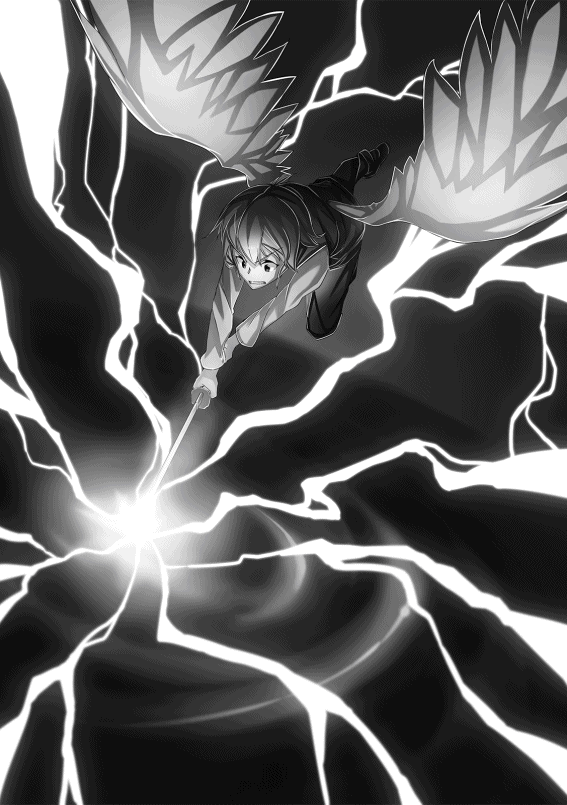
とたんにヤツの体が巨大な風船のように膨らみ、そして目も開けられないような光とともに弾け飛んだ。
「っしゃぁ!! 」
刀を突き刺した位置で滞空していた俺は、感情のままに刀を突き上げていた。バリアのおかげで、ヤツの体液からも身を守ることができたようだ。
一気に〝気〟を放出したこともあって、空中に浮かんでいるのがやっとの状態だが、今の俺はサイコウに気分がいい。その高揚した気分をさらに高めてくれる歓声が聞こえるなか、俺は一花ちゃんたちのもとへと戻ったのだった。
「なんとか倒せたよ」
「私、豊田で空様が斑大カマキリを倒せた理由が分かったような気がいたします」
呆れ半分驚き半分。そんな感じで一花ちゃんは俺を出迎えてくれた。遥は呆れ半分安堵半分と言った感じで、藤崎さんや他の将校さんたちは呆れ成分のほうが明らかに多かったような気がする。兵士たちからは勝鬨が上がっているが、俺の性格を理解したらしい首脳陣の反応は、素直に喜べないものだった。
とまぁこんな感じで妖魔討伐作戦は終焉を迎えたのだった。
妖魔討伐作戦が終了し、俺は一花ちゃんと遥とともに我が家へと戻った。
妖魔が湧き出してくる時期と重なってしまったため、一花ちゃんは一日だけの帰宅だった。
明日には前線に戻って指揮を執らなければならない。
翌朝。
「あまり無茶するなよ」
「ええ、週一では戻れると思います。お父様とあの話を進めておいてね」
「もちろんさ」
一花ちゃんが言った「あの話」とは、俺と彼女の式のことである。
我が家に戻った昨日の夜、寝る前に布団の上で瞑想 していた俺の部屋に一花ちゃんが訪れた。そのとき、一段と改まった表情で一花ちゃんが俺の正面に正座したのだ。
「空お兄ちゃん、いえ、空様、今宵は私たちの将来について大切なお話を聞いていただきたく存じます」
「どうしたの？ 急に改まって」
「このままではいけないのです。私は......」
一花ちゃんはそう言ってしばらく言葉に詰まっているようだった。しかし。
「あの山の中で空様に想いを告げた遥さんを私は忸怩 たる思いで見ていました。自分の想いを素直に告げた彼女を羨ましくも思いました。私の空様に対する想いは決して彼女に負けるものではありません。彼女以上に空様を想っています......。好きです。愛しています。空様」
一花ちゃんはそう言って俺を見つめてきた。その表情は真剣だった。だから俺も一花ちゃんを真剣に見つめなおす。
「一花ちゃん、いや、一花。俺もお前のことが好きだ」
そう言ったとたん、一花ちゃんの瞳から涙が溢れた。俺はそんな彼女をじっと抱きしめる。そしてしばらく見つめ合った後、目を閉じた彼女の唇にそっと口づけをしたのだった。
とまあそんなことがあって、その後はふたりで将来のことを話し合った。そしてさっきの「お父様とあの話」に繋がるわけだが、今の一花ちゃんは付き物がとれたようなスッキリした笑顔になっている。
「じゃあ気をつけて、一花」
「ええ、愛してるわ。空様」
妖魔討伐作戦は効果が有ったのかなかったのかどっちつかずの結果に終わることになった。よくよく考えてみれば、あのヒル型妖魔は富士山跡地の中心部に誘導してしまえば良かったわけで、あれほどキツい思いをして倒さなくてもよかったのでは？ と倒し終わった後に気づいた。
あれだけノロいのだから、安全圏までの誘導に時間はかかっただろうが、富士山跡地にはまだまだ何匹もいることが分かっているのだから、君子危うきには近寄らずを実践すれば少なくとも今までと変わらない日常が約束されたことだろう。
大量の紫水晶を得たことによって、大公国軍の底上げは達成されていることは明らかなことだし、一花や大公国軍の兵士たちは去年までよりは確実に楽な戦いができるはずである。
大公国に真の安寧を得るためには富士山跡地に蠢 く妖魔を殲滅する必要があるが、それは今の戦力では無理があるだろう。何か画期的な戦力底上げや武器の性能向上が見込めるのならばそれも可能なのかもしれないが......。
ともあれ、俺には発掘師としての活動と貴族としての活動を軌道に乗せる必要があるのだ。今は妖魔については一花たち大公国軍に任せるしかない。名古屋方面の発掘もしたいし、琵琶湖跡地に漁村を作ることも考えたい。
が、当面の脅威はこれで去ったことになるし、バカな奴が出てこなければ富士大公国の発展は約束されるだろう。俺が生きている間に富士山跡地に赴く必要が出ないことを祈るしかない。
あと数ヶ月すれば遥と一花、ふたりの花嫁との新婚生活が待っているのだ。貴族としての務めは果たしていかなければならないが、彼女らとの甘い生活を考えれば、そんなことはスパイスにしかならないだろう。
発掘に関しても名古屋方面や東京といった行きたいところが何か所かある。きっとワクワクするような楽しい冒険が待っているだろう。遥に一花、そして発掘の仲間たち。彼、彼女らとこれからはじまる俺たちの新しい冒険に胸を膨らませ、俺たちは日常に戻ったのだった。
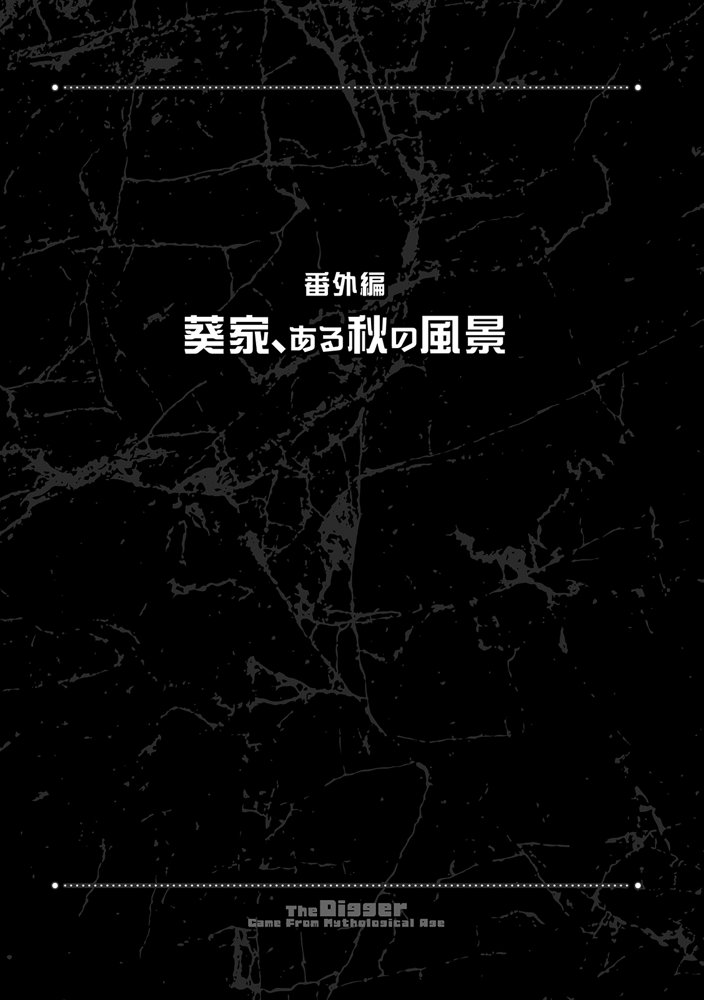
朝晩の冷え込みも厳しくなってきた十月のとある早朝。日課となって久しい朝稽古を、いつもの面子でいつものようにこなしているわけだが、俺たちの関係はついこの前までとは違うものになっていた。
俺に相対するように木刀を正眼に構えた鈴音ちゃんが動く。
「ハッ！」
「今日はいつにもまして気合いが入ってるね」
鈴音ちゃんが繰り出してきた気迫のこもった一撃。それを真正面から受け止めると、樫 の木特有の甲高い音が裏庭に響いた。木刀を持つ手が軽く痺れている。
「空さんのそのニヤけきった顔を見るとどうしても力が入るんです。一花様も遥さんもあんなに幸せそうにしていてズルいじゃないですか」
そんなにニヤついた顔してたかなぁ。なんてことを考えながらも、いつのまにか頬が緩んでしまっていることは確かに自覚しているつもりだ。こうなってしまう理由は、たとえ察しが良くないと言われている鈍感 な者であっても察しがつく筈だ。つかないほうがおかしい。
そう、つい先日俺と一花と遥はそれはもう盛大な式を挙げ、大公国の誰もが認める正式な夫婦となったのである。いや、「誰もが認める」は言い過ぎかもしれないな。俺たちの結婚を認めていない者も恐らく、いや、間違いなく両手足の指では足りないくらいはいると思う。
けれども、そんな奴らを気にしていたら貴族なんかやっていけないし、妬みややっかみの視線にはもう慣れた。鈴音ちゃんの反応がそんなヒネた輩 のものとは全く違うということは、もちろん分かっている。が、ついつい表情筋がだらしなく弛緩 してしまうのだから仕方がない。
「だったらっ、鈴音ちゃんもっ、幸せになればいいんじゃない？」
「そんなっ、ことはっ、言われなくてもっ、分かってます！」
鈴音ちゃんの連撃を捌きながら思っていることを正直に口にしたら、彼女の攻撃が激しさを増しただけだった。何か間違ったことでも言ってしまったのか？ なんてことも頭をよぎったが、彼女が何を考えているかまでは読めなかった。
「分かってるならっ、どうして？」
「そんなことっ、言えるわけないじゃないですか......」
鈴音ちゃんはそう言うと、剣激の手を止めてしまった。
「言いたくないなら無理することないよ」
「......空さんのバカ、鈍感。もういいんですぅ。私の一番はどうせ発掘師なんですから。三人でいちゃいちゃしてればいいんです。私は発掘を頑張りますから」
あれははじめて鈴音ちゃんと話をしたときのことだったか。たしか、研修で崩落事故に巻き込まれてふたりきりになったときだった。あのとき彼女はこう言っていた。
『私、小さいころから発掘師になりたくて頑張ってきたんです。男目当てで発掘師になるような尻の軽い女じゃありません』
当時の言葉どおり、たしかに鈴音ちゃんは男には目もくれず、発掘師としてこれまで頑張ってきた。それは間違いない。
そんな彼女でも、やっぱり女としての幸せは手に入れたいということだろうか？ 今の彼女を──決して悲観的ではなく明るく振舞っている感じで、少しばかりヒステリーを演じてみせた彼女を──見ていると、どうしてもそう思ってしまう。
だったら最近の状況、つまり、俺と一花と遥が作る甘ったるい雰囲気。思い出すと恥ずかしくなってしまうバラ色の空間に、鈴音ちゃんとしては耐えられないということなのだろか。
とまぁそんなことがあった日の昼過ぎ、俺は屋敷の縁側に座り込んで秋のポカポカ陽気を満喫している。
今日は俺にも一花にも仕事はなく、日がな一日を家でのんびり過ごすことになっている。遥には公の仕事はないが、もちろん彼女も一緒だ。鈴音ちゃんは発掘師協会に用事があるとかで、朝メシのあと、彼女の母である天音さんに生温かい目で見送られて今日は一日中お出かけだ。
「朝、鈴音ちゃんと何話してたの？」
ふいに遥が話しかけてきた。ついさっきまで縁側には俺一人だったはずだけど、彼女が傍に来たことに全く気づかなかった。無意識下で〝気〟のレーダーを張り巡らせるようになってからこんなこと絶対になかったのに、浮かれすぎているということなのだろう。
「何でもないよ」
「何でもないわけないでしょ？ 彼女、あんなに興奮してたのに」
「うーん......実は──」
俺は遥に今朝の鈴音ちゃんが言ったことを正直に話した。彼女はうんうんと最後まで話を聞いてくれたわけだが。
「それはアレじゃないかな？」
遥の口調は冷ややかだった。目も笑ってない。
「アレって？」
それでも俺は聞いてみた。いや、俺だって最近の鈴音ちゃんの態度から薄々は分かっているつもりなんだ。でも、それを俺の口から言うのはちょっとね。なんてことを遥には言えなかった。遥は「しょうがないわね」と言いたげだった。
「鈴音ちゃんも──」
遥が話したことは、俺が感じていたことにやはりというか近いものだった。だったら一度本人の気持ちを確認すべきなんじゃないかと思う。が、俺から面と向かって聞くことは難しいし、一花や遥にそれを頼むのも違うような気がする。そんなことを考えていると。
「こんな陽気の中ふたりして難しいお顔。何をコソコソお話ししてるのでしょう？」
一花だった。日頃の激務がたたってだろうが、今頃起きだして来たようにあくびを噛み殺している。朝メシの後にひと眠りでもしたのだろう。
「おはよう、一花。よく眠れたみたいだね」
「おはようございます。一花さま。今朝の鈴音ちゃんのことで少し──」
まだ眠そうにしている一花に、遥が今朝のことを説明したわけだが、一花も最近の鈴音ちゃんの変化に気づいていたようだ。まぁ、あれだけ雰囲気が変れば気づかないほうがおかしいとも思うが。
それからは、一花も交えての話になった......。
「ちょうど十日後になりますか......分かりました。その日は公務を入れないように空けておきます」
「うん、俺もそうするよ。悪いけど準備のほうは任せていいんだな？ 遥」
「ええ、任せてちょうだい。どうせわたしはヒマなんだし、天音さんたちにも事情を話して協力してもらうことにするわ」
話し合った結果、ちょうど十日後が鈴音ちゃんの誕生日だということで、その日の夕方から葵家の住民と発掘師仲間を集めて彼女の誕生日を祝う宴を開催することにした。要するに誕生パーティーを開くわけだが、その席で彼女にはいろいろとぶっちゃけてもらおうということだ。
日頃のうっ憤とか俺たちに対して思っていることとか、アルコールが入れば彼女の口も滑らかになるだろう。鈴音ちゃんが飲めることは分かっているし......俺は下戸 だけど。
「ところで遥さん、その......今夜のことでちょっと」
話が一段落ついたと思ったら、一花が遥を手招きして何やらヒソヒソと密談じみたことをはじめてしまった。目の前で堂々とヒソヒソ話をしているのだからやましいことではないのだろうと、彼女たちを置いて俺は自室に戻った。
その日の晩。
「今宵のご相手は私が務めさせていただくことになりました」
スケスケのネグリジェだけ をその身に纏って寝室を訪れたのは一花だった。今夜は遥の番だったはずだけど。
「明日から二、三日は戻れそうにないので代わってもらったんですよ。ですからたっぷりとご褒美を頂きませんと」
嬉し恥ずかしそうにそう言った一花は、明かりを消すこともせずに挑みかかってきたのだった。もちろん俺は誠心誠意、いや、己の持てる能力の全てを駆使して受けて立ったことは言うまでもない。
そして十日後の夕方。我が葵家の広間には天音さんをはじめとした使用人の人たち、それから俺と一花と遥、そして発掘仲間の阿古川 哲也 とその恋人の水瀬さんが顔をそろえていた。俺たちが福井に遠征している間に、なんとあの阿古川哲也に恋人ができていたのだ。
「それでは鈴音ちゃんの誕生日を祝しまして、乾杯！」
この時代にバースデーケーキを食べるような文化はなく、誕生会はもっぱら酒宴になる。とは言ってもある程度裕福でなければ誕生日の宴自体行われるのは稀なことだ。
そんなことは置いておくとして、宴も佳境に入ってきたころには半分くらいの参加メンバーが出来上がっていた。鈴音ちゃんもその例に漏れない。
「──私はぁ、辛いんですよ！ 聞いてますかぁ」
鈴音ちゃんが俺の横で管 を巻いている。
「聞いてる。聞いてるよ鈴音ちゃん」
「それがらめなんれす！ 鈴音って呼んでくれなきゃらめらないれすか......。わらしはぁねぇ、情けないんれす自分が。うぃっく。空さんたちは毎日毎日毎日毎日ラブラブらし......哲也君までいつのまにか......。私だって、わらしらって幸せになりたいんれすよ。聞いてますかぁ！」
「聞いてる。ちゃんと聞いてるって」
「ちゃぁんと聞いててくらさいよぉ。わらしは宣言しまぁーす！ わらしはぁ、わらしは空さんのこどが大好きれーす。結婚しれくらさぁぃ......」
鈴音ちゃんはそう宣言してダウンしてしまった。彼女の宣言を聞いた会場は大盛り上がりだった。が、一花と遥のふたりは口にこそ出さないものの「やっぱりか」といった感じで、何やら考え込んでいるようだった。
宴は滞りなく終わり、明けて翌日。
「鈴音ちゃんの想いを受け入れる覚悟はおありですよね？」
一花が改まった態度で聞いてきたわけだが、俺としてはその覚悟はとうにできているし、嬉しくも思っていた。
「もちろん」
「昨日遥さんと相談しました。鈴音ちゃんのことは私たちに任せてもらえませんか？」
「それは構わないけど......プロポーズは俺の方からするよ。こうなったけじめはつけなきゃダメだと思うんだ」
「ええ、それはもちろんそうしていただかないと」
一花はスッキリとした晴れやかな顔でそう言ってくれたのだった。普段から家族のように俺たち三人は鈴音ちゃんと暮らしているが、一花や遥にも葛藤はあったのだと思う。それを決して忘れないように、これからも、いや、今まで以上に彼女ら三人を大切にしていこうと、このとき俺は誓ったのだった。
あとがき
皆様のおかげをもちまして本書『異世界だと思ったら崩壊した未来だった〜神話の時代から来た発掘師〜』第三巻を出版することができました。この場をお借りしてお礼申し上げます。
さて、本編では主人公の空が仲間たちと共に奥深い山野を冒険していますが、かくいう私も幼少のころは山野を駆け回って冒険じみたことをしていました。度が過ぎて親にも呆れられるほどの野生児でした。
夏休みなどは、虫取りをするために朝も早いうち、夜も明けきらぬ午前三時とか四時から起き出して、ひとり真っ暗な山中の森というか林の中に入り込み、泥 だらけの擦り傷だらけになりながらも、いたるところをやぶ蚊 に刺されて痒 いのも構わずに、スズメバチを刺激しないように気をつけてクワガタ虫やカブト虫を捕まえ、朝陽が昇るころに帰宅して親に呆れられたり、昼からは友達を誘って小川に行き、カニや魚を釣ったり捕まえたり、そんなことをしていた記憶があります。
秋になるとさすがに早朝から山に入ることはありませんでしたが、シイの実とか栗の実などの木の実を集めて食べたり──栗の実なんかも生で食べたりしてました。けっこう美味しかった記憶があります──木に登って遊んだり、戦時中に掘られた防空壕 を秘密基地にしたり、神社の軒下 にもぐりこんでアリジゴク──ウスバカゲロウの幼虫──で遊んだりと、そんな今となっては懐かしい記憶も、本編を書いていく上での参考になってるのかな〜とか今思うとあったりなかったりです。
最後に、本書をお買い上げいただき、誠にありがとうございました。
滋田英陽
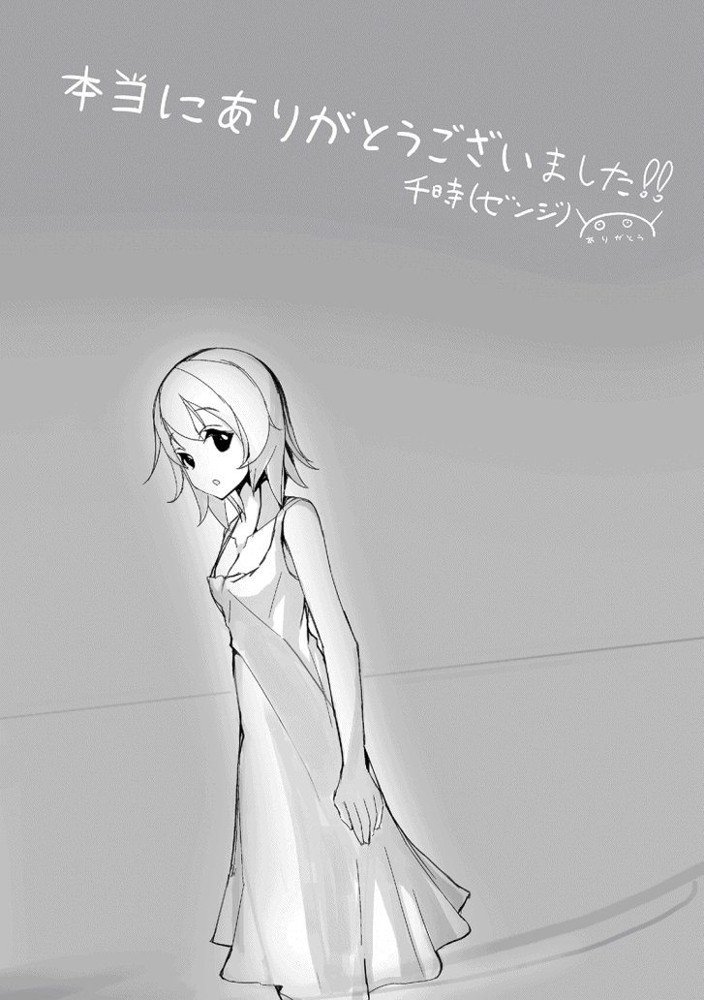
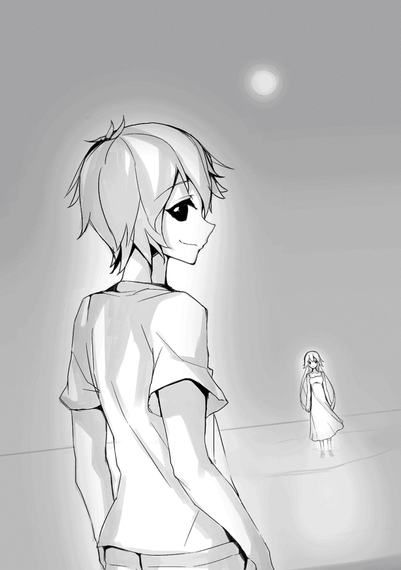
全３巻合本版 異世界だと思ったら崩壊した未来だった
〜神話の時代から来た発掘師〜
2017年10月１日発行 ver.1.0
著 者 滋田英陽
発行所 TOブックス
〒150-0045 東京都渋谷区神泉町18-８
松濤ハイツ２Ｆ
03-6452-5766（編集）
0120-933-772（営業フリーダイヤル）
Ⓒ2017 Hideyo Shida
※無断で複製・複写・データ配信などをすることは、かたくお断りいたします。
本電子書籍は下記にもとづいて制作しました
異世界だと思ったら崩壊した未来だった
〜神話の時代から来た発掘師〜
発行日 2016年１月１日 第１刷発行
異世界だと思ったら崩壊した未来だった
〜神話の時代から来た発掘師〜２
発行日 2016年３月１日 第１刷発行
異世界だと思ったら崩壊した未来だった
〜神話の時代から来た発掘師〜３
発行日 2016年12月１日 第１刷発行
本作品の全部または一部を無断で複製、転載、配信、送信したり、ホームぺージ上に転載することを禁止します。また、本作品の内容を無断で改変、改ざん等を行うことも禁止します。
本作品購入時にご承諾いただいた規約により、有償・無償にかかわらず本作品を第三者に譲渡することはできません。
本作品を示すサムネイルなどのイメージ画像は、再ダウンロード時に予告なく変更される場合があります。
本作品は縦書きでレイアウトされています。
また、ご覧になるリーディングシステムにより、表示の差が認められることがあります。